📢 最近更新日誌 (點擊展開)
- 發布「帝國防線的內爆：從羅馬晚期改革、財政軍政演變與社會撕裂看哥德人之崛起」學術專題 (內容版本 1.0)：
- 視覺與設計整合：
- 網站架構與 SEO 整合：
- 後台 Markdown 編輯器雙欄與預覽功能開發：
- 伺服器一鍵桌面開關建置：
- 發布「羅馬晚期改革與農奴制：從戴克里先到君士坦丁，土地、稅制與兵役改革下的帝國控制與中世紀封建農奴的誕生」學術專題 (內容版本 1.0)：
- 網站與視覺整合：
- 發布「蠻族崛起的政治重塑：法蘭克人的民族生成、羅馬遺產與克洛維一世的霸權奠基」學術專題 (內容版本 1.0)：
- 視覺與設計整合：
- 網站架構與 SEO 升級：
- 發布「羅馬秩序的終結與日耳曼王權的奠定：奧多亞賽的崛起、統治策略與政權覆滅」學術專題 (內容版本 1.0)：
- 視覺與設計整合：
- 網站架構與 SEO 升級：
- 發布「使徒信經的歷史演變與神學建構：從早期羅馬洗禮宣誓到西方大公信仰奠基的學術研究報告」學術專題 (內容版本 1.0)：
- 精選真實歷史視覺資源整合 (非 AI 生成)：
- 網站架構與路由載入機制升級 (版面設計 4.6)：
- 更新「丕平獻土的地緣政治體系研究：背景、權力機制、法理偽造與深遠歷史影響」專題 (內容版本 1.1)：
- 發布「《米蘭敕令》賦予所有基督徒信仰自由」中世紀法條專題 (內容版本 1.0)：
- 發布「帝國重塑、信仰博弈與權力終局：《米蘭敕令》時代的羅馬政治、君士坦丁宗教策略與李錫尼覆滅研究」學術專題 (內容版本 1.0)：
- 精選與生成歷史視覺資源整合 (AI 輔助繪製與開源圖像下載)：
- 網站架構與路由載入機制升級 (版面設計 4.5)：
- 發布「西元紀年的確立與演進：從歷史考證、政治妥協到全球數位化時間標準的建構」學術專題 (內容版本 1.0)：
- 精選與生成歷史視覺資源整合 (AI 輔助繪製與開源圖像下載)：
- 網站架構與路由載入機制升級 (版面設計 4.4)：
帝國海洋、金融先驅與當代政治僵局：荷蘭建國史、東印度公司興衰與當代地緣政經轉型研究報告
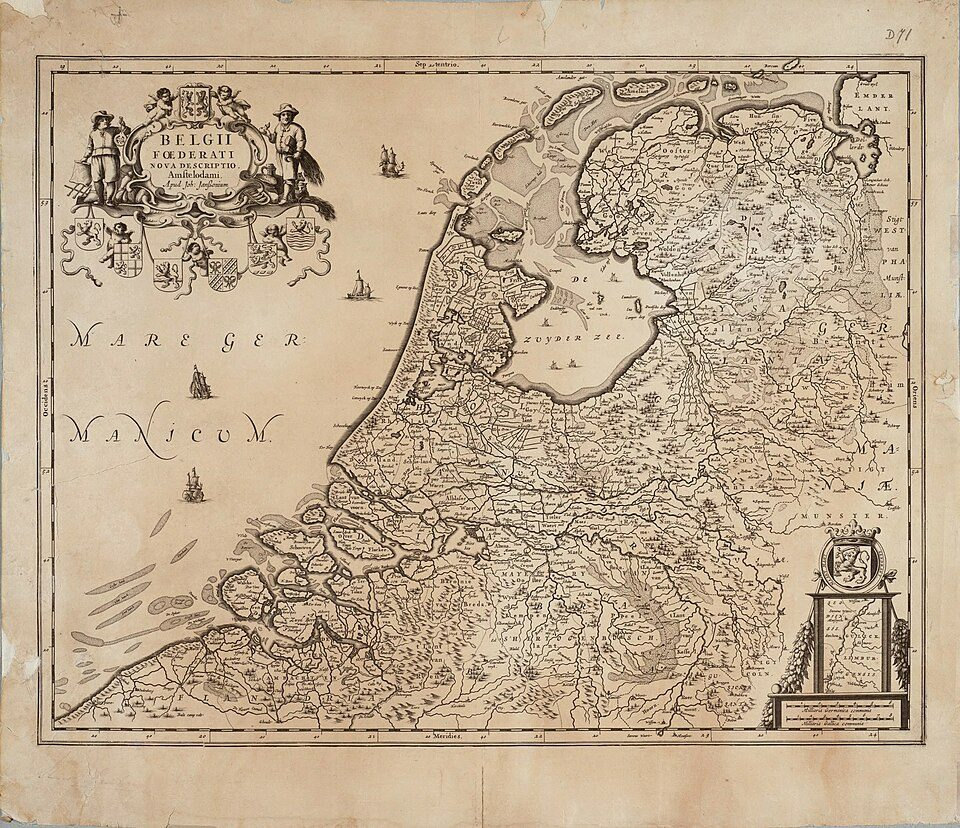
自古以來，低地國家的命運便與其獨特的地理環境緊密相連。這片位於北海沿岸河口三角洲的區域，數千年來一直接納著與水爭地的居民。荷蘭的早期地貌極易受到毀滅性風暴的侵襲，例如1134年的大風暴徹底摧毀了西蘭地區並形成西蘭群島，而1287年的大風暴則奪走了五萬條生命並創造了須德海（Zuyderzee），使阿姆斯特丹獲得了直接通往海洋的航道。
在與自然的對抗中，當地的排水工程導致肥沃的泥炭地壓縮，地面水平下降，迫使居民陷入「降低水位補償下陷，卻導致泥炭進一步壓縮」的惡性循環。為了生存，居民在西元第一個千禧年便開始建造人工土丘（Terps）以避洪水，隨後更將土丘連接為長廊般的堤防系統。這種高難度且需要集體協作的治水環境，催生了高度地方自治與協商的社會基礎，雖然也因過度依賴風力和水路基礎設施而延緩了十九世紀的工業化步伐，但也為荷蘭儲備了卓越的水利與工程技術。
1. 八十年戰爭與聯省共和國的憲政奠基 (1566–1648)
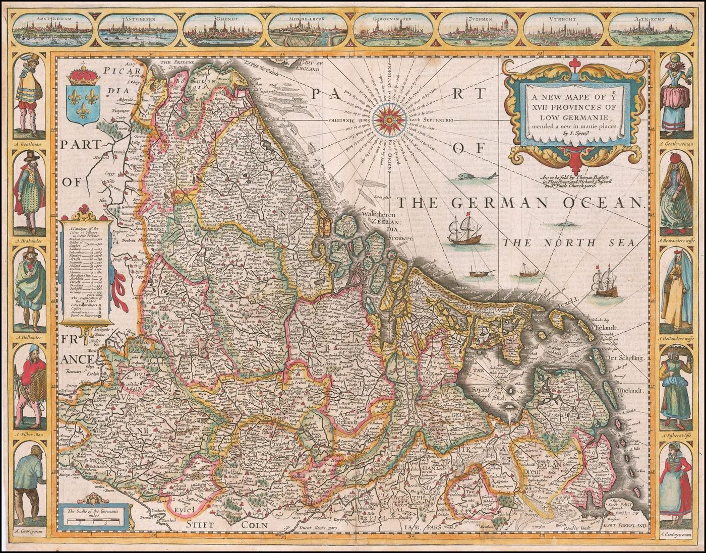
荷蘭的建國運動並非基於單一民族國家的號召，而是對哈布斯堡王朝（Habsburg Dynasty）集權統治、嚴酷課稅與宗教迫害的集體反抗。十六世紀中葉，神聖羅馬帝國皇帝查理五世將低地十七省領地轉交予其子——西班牙國王腓力二世（Philip II）。
腓力二世作為天主教會的極端守護者，試圖在低地國家徹底消滅正在迅速蔓延的喀爾文派（Calvinism）等新教勢力，同時強行削弱地方貴族與自治城市的傳統特權。這種對宗教信仰、財政自主權和古老特權的全面擠壓，最終在1566年8月引爆了「破壞聖像運動」（Beeldenstorm），拉開了長達八十年的荷蘭獨立戰爭（即八十年戰爭，1568-1648年）之序幕。
歷史學界對於戰爭的確切起點並無統一共識，但通常將起點定於1566至1572年之間。在起義初期，西班牙派遣第三代阿爾瓦公爵（Duke of Alba）率領一萬名西班牙與義大利聯軍實行高壓軍事統治。阿爾瓦公爵設立「血腥委員會」（Council of Blood）殘酷處決反抗貴族。這時，低地國家實力最強的貴族——奧蘭治親王「沉默者」威廉（William the Silent）雖流亡海外，但於1568年發動了兩次未果的僱傭軍入侵。儘管初期未能激起全民起義，但阿爾瓦公爵在1569至1571年間愈發嚴酷的財政與政治壓迫，使反抗情緒達到頂點。
1572年4月，反抗軍的海上武裝「海上乞丐」（Water Geuzen）奪取了沿海市鎮布里爾（Brill）與弗拉辛（Flushing），為反抗軍奠定了戰略立足點。同年10月18日，威廉在一封寫給其弟約翰的絕望信件中宣告，他將航向僅存的忠誠省份——荷蘭省（Holland），「盡可能維持那裡的局勢」。在當時，起義軍的形勢極其險惡，1574年僅有約20個城鎮（總人口約7.5萬）效忠於威廉，而阿姆斯特丹（Amsterdam）等大城市則持續效忠西班牙國王直至1578年。
為了震懾反抗勢力，西班牙軍隊採取了極端殘暴的政策。1572年12月2日的納爾登大屠殺（Naarden Massacre）震驚了低地國家。鄰近的哈勒姆（Haarlem）地方法官隨後於12月3日主動提出投降，但因西班牙指揮官堅持要求無條件投降，反而激起了哈勒姆市民的決死抵抗。此外，哈布斯堡王朝對新教徒的殘酷迫害在十六世紀達到頂峰，在各大「殉道者之書」中記錄的880名低地新教殉道者中，高達617名（70%）為再禮拜派（Anabaptists）信徒，儘管威廉親王本人在1560年代也曾迫害並處決過該派信徒。在外部援助方面，英格蘭女王伊莉莎白一世曾於1572年4月和5月非官方地派遣了約1,200名士兵，但隨後將其撤回，相比之下，流亡於英格蘭的法蘭德斯與瓦隆新教教會則提供了小規模但極為穩定的資金與兵源支持。
隨著戰事拉鋸，南北方的政治與宗教分歧逐步顯現。1576年11月8日，南北十七省曾短暫結成「根特協定」（Pacification of Ghent），試圖共同反抗西班牙並建立宗教和平。歷史學家赫羅恩費爾德（Groenveld）將1575/1576至1579年視為「三年溫和期」，即威廉親王努力建立「全民宗教和平」的階段。然而，由於內部衝突加劇，南部法語區且保守的天主教省份（埃諾、阿圖瓦以及杜埃市）於1579年1月6日締結了「阿拉斯同盟」（Union of Arras），尋求與西班牙國王和解。歷史學家皮雷納（Henri Pirenne）指出，語言並非分裂的主因，南部省份高度農村化、保守且由天主教貴族統治，而北部省份則高度城市化，由掌握政治權力的市民階級主導。在阿圖瓦貴族擊敗了貝蒂訥、艾爾和聖奧默等市鎮的喀爾文派市民起義後，阿拉斯同盟於1579年5月17日與西班牙簽署條約重歸效忠。相比之下，親新教的圖爾奈（Tournai）則堅持抵抗至1581年遭帕爾馬公爵（Duke of Parma）圍攻投降。
作為反擊，北部七個喀爾文派佔優勢的省份（弗里斯蘭、海爾德蘭、格羅寧根、荷蘭、上愛塞、烏特勒支、西蘭）於1579年1月23日締結了「烏特勒支同盟」（Union of Utrecht），建立起防禦性的軍事同盟，這也成為聯省共和國直至1795年的憲政基石。1581年7月26日，聯省共和國發表《廢黜法案》（Act of Abjuration），正式宣告廢黜腓力二世的主權。為了尋求法國對抗哈布斯堡王朝，威廉於1580年將尼德蘭統治權授予安茹公爵（Duke of Anjou），此舉激怒了腓力二世，隨後宣布威廉為叛徒並懸賞其首級。
在軍事地緣上，西班牙帕爾馬公爵的步步進逼使起義軍面臨極大壓力。1575年西班牙征服南荷蘭的德伊費蘭（Duiveland）與斯豪文（Schouwen）群島，將反抗軍核心地帶一分為二；1585年安特衛普（Antwerp）的陷落更使荷蘭與西蘭省意志消沉。然而，西班牙隨後因分兵入侵英格蘭（1588年無敵艦隊慘敗）及介入法國宗教戰爭，使聯省共和國在1588年得以正式宣告成立喀爾文派主導的荷蘭共和國。十七世紀初，戰爭經歷了「十二年休戰期」（1609-1621年）。1621年戰火重燃並併入歐洲三十年戰爭，儘管西班牙在1625年重奪布雷達（Breda）和巴西巴伊亞（Bahia）使勝利看似咫尺，但荷蘭在奧蘭治親王腓特烈·亨利（Frederick Henry）領導下逆轉局勢。1635年締結的法荷同盟進一步推動法軍攻入法蘭德斯與瓦隆省份。最終，因擔憂法國勢力過度擴張，荷蘭與西班牙於1648年簽署《明斯特和約》（Peace of Münster），西班牙正式承認荷蘭共和國的完全獨立。
| 歷史事件與協定 | 發生時間 | 核心地緣政治與財政影響 |
|---|---|---|
| 破壞聖像運動 (Beeldenstorm) | 1566年8月 | 喀爾文派信徒摧毀天主教聖物，引發哈布斯堡王朝軍事鎮壓，為八十年戰爭前奏。 |
| 根特協定 (Pacification of Ghent) | 1576年11月8日 | 南北十七省暫時結盟，試圖建立宗教和平並共同驅逐西班牙軍隊，但因內部宗教分歧而破裂。 |
| 阿拉斯同盟 (Union of Arras) | 1579年 1月6日 | 南部保守天主教省份結盟，並於同年5月17日與西班牙達成妥協，導致低地國家實質分裂。 |
| 烏特勒支同盟 (Union of Utrecht) | 1579年 1月23日 | 北部七省結成防禦與政治聯盟，確立地方自治與喀爾文派主導地位，奠定共和國憲政架構。 |
| 廢黜法案 (Act of Abjuration) | 1581年7月26日 | 正式廢黜西班牙國王腓力二世的主權，宣布聯省共和國事實上的獨立，實踐主權在民的早期思想。 |
| 明斯特和約 (Peace of Münster) | 1648年1月30日 | 荷蘭與西班牙簽署單獨和約，西班牙完全承認荷蘭共和國獨立，八十年戰爭正式宣告結束。 |
2. 金融革命、全球擴張與荷蘭東印度公司 (VOC) 的興衰 (1602–1799)

聯省共和國得以在八十年戰爭中維持龐大的財政消耗，並在國際貿易中戰勝西、葡等早期殖民帝國，核心在於1602年成立的「荷蘭東印度公司」（Vereenigde Oost-Indische Compagnie, VOC）。VOC 不僅是貿易組織，更是一場深刻改變人類資本主義進程的制度與金融革命。
劃時代的金融與體制創新
在 VOC 誕生前，歐洲前往亞洲的航海探險多為單次合夥，風險極高，極易因海盜、疾病或香料市場價格崩盤而破產。1602年，荷蘭議會（States General）將相互競爭的多家小公司合併，授予 VOC 為期 21 年的亞洲貿易特許壟斷權。VOC 引入了以下突破性的金融機制：
- 股份公募與永久資本制度（Permanent Capital）：VOC 向全體荷蘭共和國公民募集資金，並將資本「永久化」存續，投資人不能隨意退股，只能透過二級市場轉讓。這讓公司得以進行長達數十年、需要穩定資本運作的海外基礎建設與武裝部署。
- 阿姆斯特丹證券交易所的誕生：為便於轉讓 VOC 的永久股份，世界首家證券交易所在阿姆斯特丹應運而生，開創了現代股票交易與二級資本市場。
- 有限責任制（Limited Liability）：將股東的個人財產與公司的債務割離，降低了公眾參與跨國高風險投資的心理門檻。
- 企業識別與主權特許：VOC 的字母組合（Monogram Logo）被視為人類歷史上首個全球公認的企業標誌。 此外，議會授予了 VOC 廣泛的「準國家主權」，包括宣戰與締約、徵集軍隊與建造要塞、鑄造公司貨幣、設立法庭以及對海外屬地實行直接行政統治的特權。這使 VOC 成為一個「國家中的國家」（State within a state）。
全球貿易網絡的擴張與地緣軍事衝突
VOC 以巴達維亞（Batavia，今雅加達，建於1619年）為亞洲總部，建立起龐大的「亞洲區內貿易體系」（Intra-Asiatic TradeNetwork）。該體系的核心在於利用地緣套利，而非單純的歐亞雙向貿易：VOC 用日本出產的白銀與銅，去交換莫臥兒帝國的棉織品與大明/大清的絲綢，再用這些物資前往香料群島交換肉豆蔻、丁香與胡椒，最後部分運回歐洲換取暴利。在此過程中，VOC 獲得了對出島（Dejima）的獨占進入權，成為鎖國時期唯一獲准與日本德川幕府貿易的歐洲實體。在錫蘭（今斯里蘭卡），VOC 於1640至1658年間擊敗葡萄牙人，與康提王國結盟，進而壟斷了全球肉桂貿易，並攻佔馬拉巴爾海岸以徹底排除葡萄牙在西印度的競爭。
然而，VOC 的擴張並非一帆風順，其頻繁遭遇亞洲本土政權的頑強抵抗與軍事打擊。在東亞，VOC 於1623至1624年因試圖佔領澎湖而與明朝爆發戰爭，隨後在1633年的料羅灣海戰中被明朝水師擊敗；1662年，鄭成功在熱蘭遮城之圍中擊敗 VOC，結束了荷蘭對台灣 38 年的殖民統治。在東南亞，VOC 於1643年和1644年分別在與越南阮主及柬埔寨王國的戰爭中失利。最致命的陸戰挫敗發生在印度：1741年，VOC 在科拉切爾戰役（Battle of Colachel）中被特拉凡哥爾王國（Kingdom of Travancore）的瑪爾塔達·瓦瑪國王（Maharaja Marthanda Varma）徹底擊敗，荷蘭指揮官德·拉諾伊（Eustachius De Lannoy）投降。這是歷史上首次組織化的亞洲本土軍隊利用歐洲軍事戰術與武器擊敗歐洲殖民軍隊的案例，此戰終結了 VOC 稱霸印度洋的野心。
在勞動力與社會控制方面，VOC 在印尼等地的利潤高度依賴剝削性的奴隸勞動。這些奴隸廣泛應用於農業、製造業與家政服務，其來源包括本土奴隸市場採購、軍事襲擊捕獲，甚至 VOC 刻意挑起本土部落衝突以廉價收購戰俘。
資本結構失衡、債務槓桿與崩潰路徑
儘管 VOC 長期支付高達 18% 的年化名義股利，但其內在財務結構自十七世紀中期便埋下了破產的種子。首先，VOC 的名義註冊股本在近兩百年間始終凍結在約 640 萬荷蘭盾。由於其利潤分配政策極端慷慨（時常以實物香料、肉豆蔻或債券強行充當股利發放），公司幾乎沒有留存收益（Retained Earnings）用於再投資。為了維持在亞洲龐大的要塞、傭兵軍隊、行政官員等高昂的固定營運成本，VOC 選擇自1630年代起大量發行債務。
得益於荷蘭共和國極高的財政信用與誠實償債的傳統（荷蘭政府國債收益率從1517年的 20% 暴跌至1700年的 4%），VOC 在十七、十八世紀享受著全球最低的債務融資成本。然而，這也誘導公司走向了不可逆的債務擴張道路：其債務與股權比率（Debt-to-Equity Ratio）在1730年前維持在 2 左右，1760年代攀升至 4，到了1780年代，因第四次英荷戰爭（1780-1784年）爆發，英國皇家海軍封鎖荷蘭本土並擊毀捕獲半數 VOC 船隻，導致公司遭受高達 4300 萬荷蘭盾的毀滅性損失，債務槓桿比率瞬間狂飆至 18。這使公司的淨資產降至零，徹底喪失償債能力。
除了不可持續的金融槓桿，VOC 的衰退還源於以下深層體制缺陷：
- 資訊與物流效率滯後：VOC 強制規定所有東方商品必須先運往巴達維亞總部進行集中分類，再運回歐洲。相比之下，新興的英國東印度公司（EIC）採用去中心化直航模式（例如茶葉直接自中國廣州運往倫敦），在運輸時效與物流成本上徹底壓制了 VOC。
- 制度性貪腐（Venality）：VOC 基於壟斷思維，嚴格禁止員工進行私人貿易，且基層薪資極低。這導致從總督到水手廣泛參與走私、虛報開支與索賄，後期 VOC 被戲稱為 vergaan onder corruptie（「亡於貪腐」的荷蘭語縮寫）。
- 高死亡率與人才流失：熱帶疾病導致駐亞洲員工與水手的死亡率極高，極大削弱了公司的組織效能與軍事戰鬥力。
- 產品結構未能轉型：十七世紀末起，全球香料利潤因產量過剩與需求轉移而下滑，歐洲市場轉而追逐茶葉、咖啡、棉織品與瓷器。VOC 因重置成本過高未能靈活調整，而 EIC 則迅速切入低利潤但高週轉的日常大宗商品市場。 1795年，法國大革命軍隊佔領荷蘭，成立巴達維亞共和國（Batavian Republic）。新政府於1796年3月1日正式接管 VOC 的管理權，並於1799年12月31日特許狀到期時停止續約，正式解散 VOC，收歸其所有海外領地與債務。
| 財務特徵/指標 | 歷史演變特徵（1602–1799） | 債務與股權比率 (D/E Ratio) 演進 |
|---|---|---|
| 註冊股本 | 始終維持在 6,440,200 荷蘭盾 左右，近兩百年間從未發行新股增資。 | 1630年代以前：接近於 0（完全依賴股本與早期貿易利潤累積）。 |
| 平均股利率 | 兩百年間平均高達 18%（但因股價常年在 400 點高位，實際股利收益率約 5% 至 7%）。 | 1630年代 – 1730年代：維持在 2.0 左右（開始發行債券籌資）。 |
| 融資成本 | 極低。得益於荷蘭財政信用，政府債券收益率從1517年的 20% 降至1600年的 8.5%，1700年降至 4%。 | 1730年代 – 1760年代：上升至 4.0（融資擴張以應對東方固定成本）。 |
| 最終破產 | 1780年代第四次英荷戰爭造成 4300 萬荷蘭盾損失，淨資產歸零。 | 1780年代末：飆升至 18.0（債務嚴重失控，終至國有化清算）。 |
| 年份 | 股利發放特徵與資產形式（以面額百分比計） |
|---|---|
| 1605年 | 15% 貨幣 |
| 1606年 | 75% 貨幣 |
| 1607年 | 40% 貨幣 |
| 1608年 | 20% 貨幣 |
| 1609年 | 25% 貨幣 |
| 1610年–1616年 | 平均每年 71% 的實物農產品（如香料、丁香等，股東常因儲存與變現困難而拒收） |
| 1638年 | 44% 實物香料 |
| 1640年 | 兩次股利發放各 20%（其中 5% 為貨幣，15% 為丁香） |
| 1641年 | 40% 實物丁香 |
| 1642年 | 50% 貨幣 |
| 1643年 | 15% 實物丁香 |
| 1644年–1672年 | 平均每年 21.25% 貨幣（除一年外其餘皆以現金支付） |
| 1673年 | 33.5% 省級債券（由荷蘭省支付發行） |
| 1676年–1682年 | 4% 利率公司債券（平均每年 19.5% 票面價值） |
| 1683年–1689年 | 平均每年 20% 貨幣 |
| 1690年–1698年 | 平均每年 21.875% 的 3.5% 利率公司債券（至1740年方可兌付） |
| 1698年–1728年 | 平均每年 28.125% 貨幣 |
| 1782年以後 | 停止支付任何股利 |
3. 東印度公司在亞洲的殖民擴張、地緣博弈與雙軌治理體制
荷蘭東印度公司（VOC）之所以能稱霸十七世紀的印度洋，關鍵不在於其本土資源有多豐厚，而在於其將金融創新轉化為高效且殘酷的海外擴張與在地治理體制。在亞洲，VOC 建立起一個龐大的軍政一體化帝國，並在掠奪財富的同時，開創了獨特的雙軌治理與跨洋貿易網絡。
海陸擴張與全球情報貿易網的建立
在拓展初期，VOC 於1610年任命了首任亞洲總督彼得·博特（Pieter Both），最初將大本營設於安汶島。然而，安汶島雖地處香料產地核心，卻偏離了亞洲主流航線。1619年，雄心勃勃的總督揚·彼得斯佐恩·科恩（Jan Pieterszoon Coen）率軍攻佔爪哇島的雅加達（Jayakarta）並將其燒毀，在廢墟上建立起 VOC 的亞洲總部——巴達維亞（Batavia，今雅加達）。巴達維亞隨即發展為 VOC 跨國資訊、物流與軍事的控制樞紐。
為了控制遠在數萬公里、航程動輒數月的海外雇員，VOC 建立起人類史上首個「全球企業情報網絡」。巴達維亞的亞洲總督府（Office of the Governor-General）作為最高權力核心，強制要求所有海外商館與要塞定期將其日常日誌、決議、財政報表與外交談判記錄抄送總部。這套龐大的官僚檔案體系，奠定了 VOC 全球化貿易與決策的基礎。在十七、十八世紀期間，VOC 累計派遣了近 100 萬名歐洲員工，驅使 4,785 艘船隻，為荷蘭本土輸出了超過 250 萬噸的亞洲商品。
地緣博弈、獨佔協議與軍事衝突
VOC 的擴張軌跡與各大地緣勢力的衝突與妥協緊密交織：
- 東亞的拉鋸：1623至1624年，VOC 試圖以武力逼迫明朝開放貿易，卻在澎湖之戰中被明軍擊敗，被迫轉向台灣，並於1624年在福爾摩沙大員興建熱蘭遮城（Fort Zeelandia）。熱蘭遮城迅速成為絲綢、白銀與黃金的轉口基地。1633年，VOC 於料羅灣海戰再度慘敗於明朝水師；1662年，面對鄭成功的重兵圍攻，最後一任荷屬台灣長官揆一（Frederick Coyett）被迫開城投降，終結了荷蘭在台統治。
- 日本的出島獨佔：在幕府實施鎖國政策後，VOC 憑藉不干涉宗教傳播的務實商人態度，於1641年獲准將商館遷至長崎的港內人工島——出島（Dejima）。荷蘭人成為當時唯一獲准進入日本貿易的歐洲勢力。在此，VOC 引進了望遠鏡與顯微鏡等西方先進科技（蘭學的源頭），並透過販售越南東京（Tonkin）絲綢與交換日本白銀、銅礦，為公司賺取了高達 71 萬荷蘭盾的驚人年利潤。
- 錫蘭（斯里蘭卡）與印度洋壟斷：1638至1640年間，VOC 與康提王國（Kandy）國王拉賈辛哈二世（Rajasinghe II）結盟，攻佔加勒（Galle）；並於1658年攻陷科倫坡（Colombo），將葡萄牙人徹底驅逐。VOC 藉此強佔了錫蘭沿海肥沃的肉桂種植區，實現了每年 8,000 至 10,000 包肉桂的全球獨占貿易。為了防止英、法、葡奪回錫蘭，VOC 隨後橫掃印度的馬拉巴爾海岸（Malabar Coast），征服當地葡萄牙要塞，奠定了其在印度洋的絕對海權。
- 全球轉運節點：1652年，揚·范·里貝克（Jan van Riebeeck）在非洲南端的風暴角建立開普敦補給站，隨後發展為龐大的開普殖民地（Cape Colony），為東航與西返的船隻提供必要的物資與維修服務。同時，VOC 在泰國阿瑜陀耶（Ayutthaya）等地設立商館，收購鹿皮、牛皮以銷往日本；在越南會安設立商館以採購生絲；並在印度普利卡特（Pulicat）與蘇拉特（Surat）設立工廠採購棉布。
「分而治之」與雙軌代理人治理體制
在治理爪哇等廣大內陸領地時，VOC 發現其兵力無法支撐直接統治。因此，公司實踐了「分而治之」（Divide and rule, divide et impera）的間接統治策略。其核心在於：
- BB 與 Pangreh Praja 雙軌並行：荷蘭設立的內政管理機構（Binnenlands Bestuur, BB）並不直接插手基層行政，而是居於幕後，監督當地的「原住民公僕/王國統治者」——「攝政王」（Regents，爪哇語為 Bupati）。
- 扶植傳統貴族：VOC 承認並扶植爪哇當地的 priyayi（貴族與行政官僚階級）。攝政王（Bupati）被視為殖民前土邦領主的合法繼承人，享有極高的威望、儀式特權與領地租稅權。
- 世襲法制化：這種代理人制度在後續的憲政發展中被法制化（如1854年憲法保障符合最低標準的 Regents 職位可世襲繼承）。透過將本土精英綁定在公司的財富戰車上，VOC 得以用極少的荷蘭官員，維持對龐大原住民人口的超額經濟剝削。
奴隸貿易、班達大屠殺與紅溪慘案
VOC 在亞洲極高的商業附加價值，其底層是極其殘酷的強迫勞動與跨洋奴隸貿易。學界最新估計，在 1602 至 1799 年之間，有 66 萬至 113.5 萬名奴隸 被強行販運至 VOC 的各個海外定居點。
巴達維亞是整個印度洋奴隸貿易的樞紐。隨著城郊（Ommelanden）經濟作物（甘蔗、稻米、咖啡）的擴大開墾，巴達維亞城內的奴隸人口從 1623 年的 6,000 人暴增至 1779 年的 40,000 人以上。這些奴隸主要通過海路從印度、東印度群島本土（如 Bali 以東的東部群島）、馬達加斯加、錫蘭等地購得。VOC 甚至常利用「挑撥本土部落衝突」的無良手段，在戰爭結束後前往當地奴隸市場廉價收購戰俘。荷蘭牧師與普通市民皆普遍參與、投資並蓄養奴隸。
在暴利驅使下，VOC 數次採取了近乎種族滅絕的極端暴力 ：
- 1621年班達大屠殺：為壟斷肉豆蔻（Nutmeg）貿易，總督科恩率軍對班達群島實行了毀滅性的軍事清洗。幾乎整批班達原住民（約 1.5 萬人）被屠殺、折磨、驅逐或刻意餓死。隨後，科恩將班達土地瓜分給荷蘭退役軍人（Perkeniers），並強行引進大批奴隸進行強迫勞役，建立起血腥的肉豆蔻種植園體制。
- 1740年紅溪慘案：十八世紀中期，爪哇的製糖業因歐洲市場飽和而崩潰，導致大批失業的華工（Coolies）流落巴達維亞城郊。巴達維亞當局處置無能，流言指稱當局將把失業華工驅逐流放，引發了華工暴動。荷蘭軍隊與貧民隨即在巴達維亞城內展開了殘酷的洗劫與大屠殺，上萬名無辜華裔居民慘遭屠殺，甚至逼使 VOC 董事會歷史上首次對巴達維亞政府展開官方調查。這場慘案完美暴露了 VOC 表面繁榮之下，其依靠暴力與奴役維繫殖民管治的脆弱與血腥本質。
4. 荷蘭黃金時代的文明成就與歷史暗面 (1609–1713)
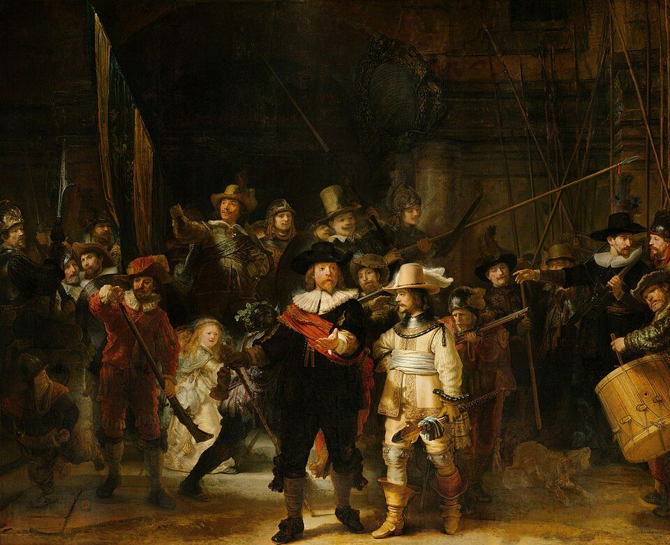
伴隨著共和國的建立與 VOC 帶來的滾滾財富，十七世紀的荷蘭一躍成為歐洲乃至全球的學術、科學、藝術與法律中心。
思想包容與學術網絡的構築
在天主教反改革運動橫掃歐洲的時代，荷蘭共和國實行了相對寬容的宗教與思想政策。這種社會氣候吸引了全歐因宗教迫害流離失所的頂尖知識分子。法國哲學家笛卡兒（René Descartes）在此隱居二十年，完成了其最重要的哲學著作；捷克教育家夸美紐斯（Jan Amos Comenius）、法國學者皮埃爾·貝爾（Pierre Bayle）以及猶太哲學家斯賓諾莎（Baruch Spinoza）皆在此獲得了難能可貴的出版自由與思辨空間。荷蘭執政奧蘭治的威廉於1575年創立的萊頓大學（University of Leiden），更迅速成長為全歐新教知識界的殿堂。
科學革命與國際法秩序之奠定
自由的思想催生了科學技術的突破。克里斯蒂安·惠更斯（Christiaan Huygens）發明擺鐘、解釋土星環，並對光學做出卓越貢獻；「微生物學之父」安東尼·凡·雷文霍克（Antonie van Leeuwenhoek）憑藉精湛的磨鏡技術製成單顯微鏡，首次觀測並描述了細菌等微觀生命。在法律領域，面對海洋擴張的需求，法學家雨果·格老秀斯（Hugo Grotius）提出「海洋自由論」（Mare liberum），捍衛荷蘭船隻在公海的航行權，並在其著作《戰爭與和平法》（De jure Belli ac pacis）中系統性奠定了現代國際法的架構。
藝術與出版產業的資本化
荷蘭資產階級的崛起改變了傳統的藝術贊助模式。脫離了天主教會與宮廷的束縛，藝術家轉而面向富裕的市民階層進行創作，風景畫、風俗畫（Genre painting）、靜物畫及肖像畫蓬勃發展。林布蘭（Rembrandt van Rijn）以其大師級的光影對比繪出《夜巡》等傑作，維梅爾（Johannes Vermeer）與哈爾斯（Frans Hals）則精準捕捉了市民生活的寧靜與尊嚴。此外，荷蘭發達的印刷業與幾乎沒有嚴格審查的市場環境，使其成為歐洲的圖書與新聞出版樞紐，路易·埃爾塞維爾（Louis Elzevir）家族開創的埃爾塞維爾出版社（House of Elzevir）以製作精美且價格低廉的口袋版古典文獻稱霸全歐市場，寫下歷史學家筆下的「荷蘭出版奇蹟」。
歷史暗面：暴力、殖民與奴隸貿易的共生關係
然而，二十一世紀以降，歷史學界與荷蘭社會內部對「黃金時代」這一名詞產生了極大反思與爭議。多個荷蘭博物館（包括阿姆斯特丹博物館）已正式停用或減少使用此稱呼，因為該時期的極度繁榮與殘酷的海外殖民擴張、對原住民的暴力掠奪以及跨大西洋與印度洋奴隸貿易深切交織。在十七至十九世紀之間，荷蘭販奴者在兩大洋奴隸貿易中累計強行運輸、奴役了約 170 萬人口。荷蘭在亞洲摧毀了班達群島等香料產地的本土社會，強迫實施極具剝削性的奴役勞動體制。這種建立在不對稱暴力與非人道掠奪之上的資本累積，構成荷蘭繁榮背後無法抹去的歷史陰影。
5. 荷蘭與德意志民族的血緣、語言與地緣政治糾葛
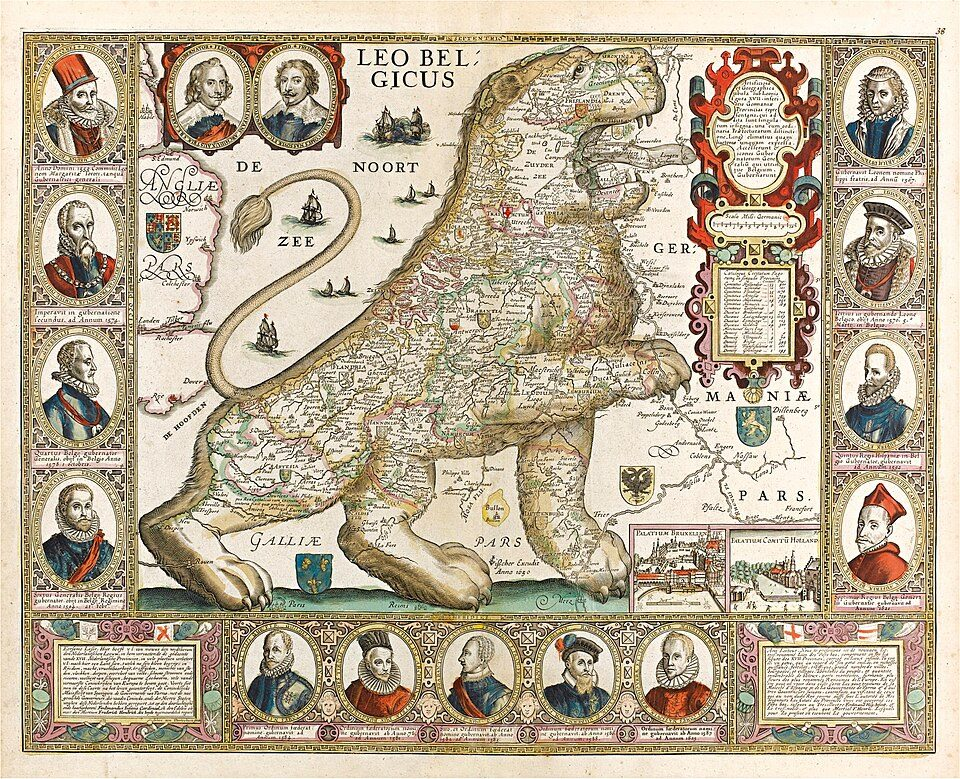
荷蘭人與德意志民族的關係源遠流長，兩者在語言分化、王室血統、歷史邊界以及當代經濟上皆存在著深層的互動與拉鋸。
語言與語源的共生與分化
在語源學上，英文的「Dutch」（荷蘭人/荷蘭語）與德文的「Deutsch」（德國人/德語），以及荷蘭語歷史上的「Duits」或「Diets」，皆源自共同的西日耳曼語支詞彙「*þiudisk」，意指「人民的語言」（相對於中世紀教會使用的拉丁文）。在中世紀晚期，低地國家的居民常用「Duitsch/Dietsch」或「Nederduitsch」（低地德語/低地荷蘭語）來稱呼自己的母語。
然而，兩者在語言學上的分水嶺在於西元六至八世紀發生的「高地德語子音變化」（High German consonant shift）。這場語音演變席捲了德意志南部的方言，卻完全未波及低地法蘭克語（Low Franconian，即現代荷蘭語的祖先）。這使得荷蘭語在語音結構上未經歷「p-pf/f」、「t-ts/s」和「k-ch」的轉變（例如：英文的 pound，荷蘭語為 pond，德語則變為 Pfund；英文的 street，荷蘭語為 straat，德語則變為 Strasse），在語法與發音上與德語產生了明確的分化，並在某些特徵上反而更接近英語或北歐語言。
到了十六世紀，隨著聯省共和國的獨立與民族意識覺醒，低地國家開始廣泛採用「Nederlands」一詞以與東鄰的德意志諸邦進行區隔。儘管如此，荷蘭國歌《威廉頌》（Wilhelmus）第一節中仍保留了「ben ik, van Duitsen bloed」（我擁有德意志/同胞的血統）這句歌詞，這在歷史上反映的並非現代意義上的德國國籍，而是指威廉親王源於古老德意志日耳曼土地的血脈根源。
奧蘭治-拿騷王室的德意志根源
荷蘭王室「奧蘭治-拿騷家族」（House of Orange-Nassau）實質上是一個源自德意志的貴族世家。拿騷家族的祖地與核心城堡（Nassau Castle）位於今日德國境內的拉恩河畔。荷蘭的「國父」奧蘭治親王威廉一世（沉默者威廉）於1533年出生於神聖羅馬帝國境內的德意志迪倫堡城堡（Dillenburg Castle），其父母均為德意志的路德宗信徒。威廉因繼承了其堂兄勒內·德·沙隆（René de Chalon）位於法國南部的獨立主權領地「奧蘭治公國」，才獲得了「奧蘭治親王」的頭銜，並開啟了拿騷家族在低地國家的輝煌歷史。
從神聖羅馬帝國的分離到普魯士軍事干預
在政治疆域上，低地十七省在歷史上曾是神聖羅馬帝國下轄的領地。直到1648年簽署《西發里亞和約》（包含《明斯特條約》），聯省共和國才正式獲得法理上的主權獨立，脫離了神聖羅馬帝國的憲政框架。
在隨後的歷史中，荷蘭與德意志強鄰的關係幾經地緣動盪：
- 1787年普魯士入侵：十八世紀末，荷蘭爆發了反對奧蘭治家族執政的民主「愛國者運動」（Patriot movement）。當執政威廉五世之妻、普魯士公主威廉明娜在前往海牙途中被愛國者民兵於戈揚韋勒斯勒伊斯（Goejanverwellesluis）攔截逮捕時，激怒了其兄——普魯士國王腓特烈·威廉二世。普魯士隨即派遣兩萬大軍入侵荷蘭，迅速擊潰愛國者力量，幫助奧蘭治家族復辟執政權，導致大量荷蘭民主派人士流亡法國。
- 末代德皇的荷蘭流亡：第一次世界大戰後，戰敗的德意志帝國末代皇帝威廉二世於1918年向中立的荷蘭尋求政治庇護。儘管協約國強烈要求引渡，荷蘭政府仍基於人道精神與庇護傳統拒絕，德皇隨後於1920年買下荷蘭烏特勒支省的多倫住宅（Huis Doorn），在此度過了隱居和伐木的後半生，直到1941年在納粹德國佔領荷蘭期間逝世，至今仍安葬於該莊園的墓園中。
當代德荷經貿同盟：歐洲門戶與工業腹地
二戰後，荷蘭與德國的經濟發展步入了高度綁定與一體化的階段。德國目前是荷蘭無可替代的最大貿易夥伴，不僅是荷蘭商品的第一大出口目的地，也是第一大進口來源國，兩國間的雙邊貿易額與附加價值占荷蘭 GDP 的 6.5% 以上。
在物流地緣上，荷蘭憑藉歐洲第一大港鹿特丹港，扮演著德國及西北歐工業腹地的「歐洲門戶」（Gateway to Europe）。來自全球（特別是亞洲與美洲）的原材料、石油及煤炭，進口至鹿特丹後，通過萊茵河等發達的內河航道、鐵路與公路網絡，源源不斷地轉運輸送至德國重工業的心臟地帶——「阿姆斯特丹-鹿特丹-安特衛普-萊茵/魯爾區」（ARARR）。這種「門戶與腹地」的共生關係，使德荷兩國成為歐盟內部最堅固的經貿與財政同盟之一。
6. 自由的鏡像：荷蘭共和國與美國建國的深厚憲政與財政淵源

荷蘭與美國的歷史紐帶不僅跨越了大西洋，更深切地交織在兩國的憲政思想、外交承認及建國初期的財政命脈中。這種關係早在「五月花號」啟航前便已悄然奠定。
清教徒的萊頓歲月與美式制度奠基
在1620年乘「五月花號」前往新大陸並創建普利茅斯殖民地（Plymouth Colony）之前，英國的清教徒（分離派）為了逃避國王詹姆士一世及聖公會的宗教迫害，曾在荷蘭的大學城萊頓（Leiden）度過了長達十一至十二年的流亡歲月。這段「萊頓歲月」不僅為他們提供了安全的庇護所，更深刻地形塑了其社會與法律觀念。
在威廉·布萊德福（William Bradford）等領袖的帶領下，清教徒直接將荷蘭的法律與習俗移植到了北美。例如，美國政教分離（Separation of church and state）的重要實踐——將婚姻定位為由世俗官員（Magistrates）主持而非教會神職人員壟斷的「民事婚姻（Civil Marriage）」，即是布萊德福等人在普利茅斯直接引用荷蘭法律並推廣至全美的成果。此外，著名的「感恩節」（Thanksgiving）儀式，亦被學界認為融入了清教徒在萊頓時每年10月3日參加的「解圍紀念日（Leiden Relief）」感恩慶典——該慶典紀念1574年萊頓解圍戰勝西班牙，並發放麵包與鯡魚給市民。
憲政思想同構：《廢黜法案》與《獨立宣言》
在政治制度與哲學層面，荷蘭共和國（聯省共和國）的建國邏輯是美國開國元勳們的重要靈感來源。荷蘭於1581年發表的《廢黜法案》（Plakkaat van Verlatinghe / Act of Abjuration）宣告廢黜西班牙國王腓力二世，其核心論點在於：當君主未能履行保護人民特權與自由的契約義務，甚至實行暴政時，人民即有權宣布廢黜君主。這套主權在民與契約論的早期思想，與兩百年後1776年《美國獨立宣言》的寫作邏輯有著驚人的同構性，均由前言、反抗外國暴君的憲政宣言，以及列舉暴君罪狀的清單組成。約翰·亞當斯（John Adams）曾明確指出：「這兩個共和國的起源如此相似，以至於一方的歷史彷彿就是另一方的抄本。」
此外，1579年的《烏特勒支同盟》確立了北部七省「永久聯合但保留地方自治主權」的同盟結構，這在措辭與機制上直接影響了美國的第一部憲法——《邦聯條例》（Articles of Confederation），兩者皆使用了「confederate and unite into perpetuity（永久聯合）」的政治語彙。
「第一聲禮砲」：主權默認與聖尤斯特歇斯的軍火網絡
在美國獨立戰爭最為艱難的起步階段，荷蘭成為了美軍實質上的「海外軍火庫」。在荷屬西印度群島的小島聖尤斯特歇斯（Sint Eustatius），荷蘭西印度公司實行自由貿易政策，使該島迅速發展為全北美最重要的軍火與戰略物資走私中轉站。
1776年11月16日，當攜帶著《獨立宣言》複本、懸掛著美軍「大聯合旗」（Grand Union Flag）的美國軍艦「安德魯·多利亞號」（Andrew Doria）駛入該島奧蘭治灣時，島上的荷蘭總督約翰內斯·德·格拉夫（Johannes de Graaf）下令以城堡加農砲回以11響禮砲（史稱「第一聲禮砲」，The First Salute）。這聲程序性的砲響，代表著外國政權首次在國際法與外交事實上默認了美國作為主權國家的合法地位。聖尤斯特歇斯源源不斷輸送的火藥、火槍和物資，實質上支撐了華盛頓大陸軍的早期戰事。這座島嶼也因此招致了英國的猛烈報復，英軍在第四次英荷戰爭（1780-1784年）爆發後迅速出兵洗劫該島，圍捕並驅逐了島上的猶太商人社群。
外交承認與阿姆斯特丹的財政命脈
除了物質與精神支持，荷蘭在金融領域更扮演了新生美國的「財政保護者」。荷蘭內部的「愛國者」運動領袖、民主派貴族約安·德爾克·范·德·卡佩倫·托特·登·波爾（Joan Derk van der Capellen tot den Pol）在國內積極宣傳並支持美國革命，為美國財政談判營造了極佳的社會氛圍。
1782年4月19日，荷蘭聯省共和國正式承認美利堅合眾國為獨立國家，成為繼法國之後全球第二個承認美國外交地位的國家，約翰·亞當斯也正式呈遞國書成為首任美國駐荷公使。同年5月17日，亞當斯成功與阿姆斯特丹的三大銀行巨頭達成協議，爭取到首筆高達500萬荷蘭盾（時值200萬美元）的低息政府貸款。荷蘭銀行家對美國國債的持續認購，不僅解決了戰後初期財政崩潰的危機，更實質上為美國建國初期的中央債務進行了再融資（截至1794年，美國對荷蘭借款已累計達3000萬荷蘭盾，約1200萬美元），支撐起新國家立足的經濟根基。
7. 從帝國崩潰到憲政轉型：十九世紀的民主重塑與法治演進 (1795–1900)
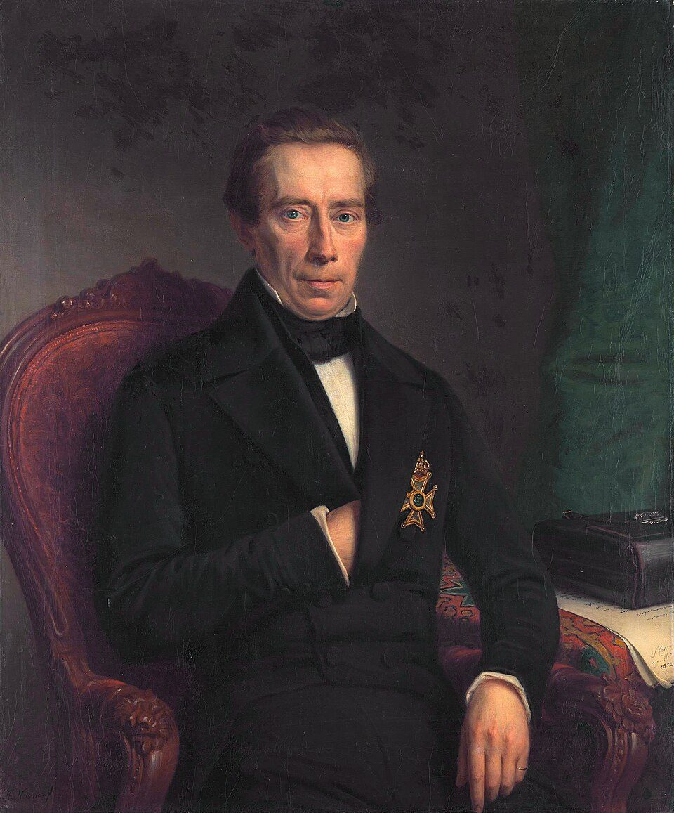
法國大革命與拿破崙戰爭終結了舊有的聯省共和國體制。經過巴達維亞共和國（1795-1806 年）及拿破崙之弟路易·波拿巴統治的荷蘭王國（1806-1810 年）之過渡，荷蘭由鬆散的聯邦體制被強行改造成現代單一制國家。
1815 年建國與托爾貝克 1848 憲政革命
1815 年拿破崙戰敗後，維也納會議決定成立一個強大的屏障國家以遏制法國，因而將原荷蘭共和國、奧屬尼德蘭（今比利時）及盧森堡合併，建立「荷蘭聯合王國」，由奧蘭治-拿騷家族的威廉一世擔任國王。然而，南北方在宗教（北方新教、南方天主教）、語言及經濟政策上的巨大鴻溝，最終引爆了 1830 年比利時革命，比利時宣布獨立。盧森堡亦於 1890 年因威廉三世逝世、由其女威廉明娜繼位，受限於盧森堡禁止女性繼承的法律而正式終止了與荷蘭的共主邦聯關係。
比利時的分裂逼使荷蘭內部重新審視君主專制體制。1848 年，面對席捲全歐的自由主義革命風暴，驚恐的國王威廉二世為避免王室被推翻，決定向自由派妥協，委託萊頓大學法學教授約翰·魯道夫·托爾貝克（Johan Rudolph Thorbecke）主持憲法修改。1848 年憲法是荷蘭民主史上的分水嶺 ：
- 確立君主立憲與議會主權：極大地削弱了國王權力，首次引入「大臣責任制」（Ministerial Responsibility），規定國王行為必須經內閣大臣副署，國王「不可侵犯」，內閣對議會負責。
- 實行直接選舉與預算審查：國會第二院（下院）改為由繳納一定稅額的公民直接選舉產生（初期約占成年男性的 10%），並將政府財政預算審查週期從每十年縮短至每兩年一次，確立了議會的「財政權袋」（Power of the purse）。
- 保障基本公民權利：憲法明文保障新聞自由、結社自由、宗教自由與集會請願權，為後續政黨政治的成型與社會「柱狀化」（Pillarization）奠定了法治基礎。 此後，荷蘭雖然維持了沒有憲法法院、法院不得進行司法審查（Testing of laws against the constitution）的獨特傳統，但其政治權力分配已徹底偏向議會。托爾貝克隨後於1849年出任首相並組建自由派內閣，極大地推進了自由貿易，廢除消費稅，興建運河與現代水道。然而，由於憲法保障的結社自由允許天主教主教自宗教改革以來首次於1853年重返荷蘭，引發了保守新教徒的大規模抗議，托爾貝克被迫在國王威廉三世的施壓下辭職。
| 修憲年份 | 主要起草者/推動背景 | 核心法治與憲政變革 |
|---|---|---|
| 1815年 | 國王威廉一世主持，聯省共和國轉型為「荷蘭聯合王國」。 | 確立高度中央集權的君主立憲制，設立雙院制議會，其中包含一個貴族院和一個地方代表院。 |
| 1840年 | 比利時革命分裂後，國內要求限制君主特權之呼聲高漲。 | 引入「大臣責任制」雛形，並將國家預算審查週期從10年縮短至2年，大幅加強議會財政審查權。 |
| 1848年 | 自由派學者托爾貝克（Thorbecke），受全歐1848年革命潮推動。 | 荷蘭民主之起點。國王權力被削弱，第二院改由符合財產限制的公民直接選舉，確立自由、結社與宗教自由。 |
| 1917年 | 國內工人運動、社會主義政黨興起與階級協商。 | 引入成年男性普選權，女性獲得被選舉權；1919年擴展至女性普選權，1922年女性首次行使投票權。 |
| 1983年 | 戰後社會多元化、去「柱狀化」與現代人權意識覺醒。 | 進行全面憲法修正，加入基本的社會福利權，並確立著名的「第一條」反歧視條款，嚴禁宗教、種族與性別歧視。 |
| 2010年 | 反歧視法治深化與社會平權共識。 | 推動修改憲法第一條，將「禁止基於殘疾或性傾向之歧視」明文寫入憲法。 |
8. 兩次世界大戰的考驗、大屠殺與去殖民化的地緣衝擊 (1900–1962)

進入二十世紀後，荷蘭在1900至1940年間經歷了顯著的人口增長，伴隨而來的是社會主義運動的興起。1901年大選中，社會民主工黨（SDAP）在議會中的席次從2席增至6席，引發了傳統保守精英的極大不安，1903年的鐵路大罷工更使社會矛盾白熱化。
兩次世界大戰的歷史創傷
在第一次世界大戰中，荷蘭憑藉控制萊茵河與斯海爾德河口的戰略地位，在英、德兩大陣營的夾縫中成功維持了中立。然而，中立是以極高的經濟代價換來的：英國實施海上封鎖限制物資流入德國，導致荷蘭爆發嚴重的通貨膨脹與物資短缺，甚至在 1917 年引發阿姆斯特丹的「土豆暴動」（Potato Riots）。此外，荷蘭接納了超過 100 萬比利時難民，並面臨猖獗的邊境走私與軍隊動員的龐大開支。
到了第二次世界大戰，荷蘭試圖重申中立，但於 1940 年 5 月 10 日遭到納粹德國的入侵。德軍實施了殘酷的「鹿特丹閃擊戰」（Rotterdam Blitz），迫使荷蘭軍隊在五天內投降，女王與政府流亡英國。在五年的殘酷佔領期中，荷蘭遭遇了深重的災難：納粹與本土協作者系統性地圍捕了荷蘭境內超過 10 萬名猶太人並送往集中營屠殺（包括著名的安妮·法蘭克），消滅了戰前荷蘭近 75% 的猶太群體。佔領後期，隨著荷蘭鐵路大罷工以配合盟軍推進，納粹對荷蘭西部實施嚴酷的糧食禁運，導致 1944 至 1945 年冬季爆發慘絕人寰的「飢餓之冬」（Hongerwinter），約有兩萬名荷蘭平民死於飢餓與寒冷。荷蘭最終於 1945 年 5 月獲得盟軍完全解放。
印尼去殖民化戰爭與美蘇冷戰陰影
二戰剛結束，荷蘭隨即陷入了其現代史上最痛苦、最具爭議的地緣衝突——印尼獨立戰爭（1945-1949 年）。1942 年日本攻佔荷蘭東印度（印尼）宣告了荷蘭殖民秩序的瓦解。1945 年 8 月日本投降後，印尼民族主義領袖蘇卡諾（Sukarno）與哈達（Hatta）立即宣布成立獨立的印度尼西亞共和國。
荷蘭政府拒絕接受這一現實，試圖透過派遣 22 萬軍隊與行政官員重新恢復殖民統治，並將軍事進攻美化為維持治安的「警察行動」（Politionele acties）。在長達四年的拉鋸戰中，荷蘭軍隊系統性地使用了極端暴力，包括在 Rawagede 等村莊屠殺平民、酷刑與任意處決；而印尼共和國軍隊與激進青年在「狂熱期」（Bersiap）亦針對荷裔、歐裔及親荷原住民實施了血腥報復與清洗。
這場戰爭的轉折點在於國際地緣政治格局的轉變。隨著冷戰升溫，美國極度擔憂荷蘭在印尼的消耗戰會削弱其在西歐抵禦蘇聯擴張的能力，同時印尼共和國展現出的反共立場贏得了華盛頓的信任。1949 年，美國政府向荷蘭施加致命壓力，明確威脅若荷蘭不停止印尼戰爭並轉移主權，美國將立即切斷對荷蘭戰後重建極為關鍵的《馬歇爾計劃》（Marshall Plan）援助金。
面臨財政與外交的徹底孤立，荷蘭被迫於 1949 年底召開圓桌會議，正式承認印度尼西亞獨立。作為代價，印尼同意承擔高達 45 億荷蘭盾 的前殖民地債務。1962 年，在美國再度調停下，荷蘭簽署《紐約協定》，將最後一塊海外屬地新幾內亞（荷屬新幾內亞）移交予印尼，荷蘭在亞洲長達三個半世紀的殖民帝國正式宣告終結。
| 傷亡與談判關鍵指標 | 歷史統計數據與重要地緣協定名稱 | 戰爭進程與核心地緣政治後果 |
|---|---|---|
| 印尼獨立聲明 | 1945年8月17日 | 蘇卡諾與哈達宣告獨立，成立印度尼西亞共和國，引發荷蘭軍事反撲。 |
| 印尼戰方總傷亡 | 估計約 100,000 至 150,000人 戰死或被殺。 | 荷蘭軍隊犯下系統性戰爭罪行（如 Rawagede 屠殺、Galoeng Galoeng 屠殺364名村民）。 |
| 親荷/歐裔平民傷亡 | 估計約 5,500 至 20,000人 遇害，2,500人失蹤。 | 主要發生於「狂熱期」（Bersiap），印尼激進武裝對歐裔、歐印混血兒及親荷原住民進行清洗。 |
| 林賈提協定 (Linggadjati) | 1946年11月15日草簽，1947年3月25日正式簽署。 | 試圖建立聯邦制荷印聯邦，但因彼此缺乏誠意及後續軍事衝突而迅速破裂。 |
| 倫維爾協定 (Renville) | 1948年1月17日簽署（在美、法、澳三國委員會調停下）。 | 確立臨時停火線，但未能阻擋荷蘭隨後發動第二階段「烏鴉行動」（Operation Kraai）。 |
| 主權移交與債務移轉 | 1949年12月圓桌會議。 | 美國威脅終止馬歇爾援助，迫使荷蘭退兵；印尼承擔 45億荷蘭盾 殖民債務以換取獨立。 |
9. 當代荷蘭：全球法秩序樞紐、民粹僵局與高科技主權博弈
戰後重建的荷蘭選擇了深度融入大西洋憲政與歐洲一體化架構，成為聯合國（UN）、北約（NATO）、歐盟（EU）及比荷盧聯盟（Benelux）的創始成員國。依據荷蘭憲法第90條，促進國際法治秩序之發展被確立為荷蘭外交的永久憲法義務。這使臨時首都海牙（The Hague）逐步演變為全球的「國際司法之都」，託管了國際法院（ICJ）、國際刑事法院（ICC）、常設仲裁法院（PCA）以及禁止化學武器組織（OPCW）等全球治理的核心機構。
與此同時，荷蘭作為北約創始成員國，其國家安全政策建立在「國家安全始於海外」之原則上。這促使其在歷史上多次響應北約共同防禦行動 ：2001年九一一事件後，荷蘭向阿富汗「持久自由行動」派遣艦船與飛機，隨後加入國際安全援助部隊（ISAF）進駐烏魯茲甘和坎大哈，並在當地執行了大規模的軍警培訓任務。
政治碎片化、民粹崛起與內閣短命危機
荷蘭長期以來賴以維持社會穩定的「圍墾模式」（Polder Model，即不同階層與黨派通過協商達成共識）近年遭遇重大挑戰。自 2002 年民粹主義先驅皮姆·富圖恩（Pim Fortuyn）遇刺以來，荷蘭政壇陷入高度極化與碎片化，自 2002 年起已歷經多達 10 屆內閣更迭。
在 2024 年的大選中，長期存在的「防疫隔離牆」（Cordon Sanitaire，即主流政黨拒絕與極右翼合作的默契）宣告破裂，吉爾特·威爾德斯（Geert Wilders）領導的極右翼民粹主義「自由黨」（PVV）贏得超過 23% 的選票，並與中右翼的「自由民主人民黨」（VVD）等結盟，推舉非黨派技術官僚迪克·舒夫（Dick Schoof）出任首相，組建內閣。然而，該內閣運作極其不穩，威爾德斯於 2025 年初提出極端的「10 點難民與庇護計劃」，要求立即關閉邊境並強行遣返敘利亞難民，因未獲內閣中的溫和派與中右翼盟友支持，威爾德斯悍然撤回其黨派部長，導致舒夫內閣迅速倒台，政局再度陷入癱瘓。
隨後在2025年10月29日舉行的閃電大選（Snap Election）中，中左翼的「民主66」（D66）黨擊敗自由黨奪得第一大黨寶座，但面對高度分散的議會結構，如何構建穩定的執政聯盟至今仍是未解的政治難題。
在外交與安全政策上，新內閣在2026年繼續推進對北約的財政承諾，舒夫政府此前已在法律上強制提高國防預算以符合北約2% GDP的指導方針，預計將在2026年正式達標。同時，在海牙舉行的北約峰會上，荷蘭與盟國共同承諾到2035年將國防開支提高至GDP的5%，其中3.5%用於核心防務（人員、裝備與訓練），1.5%用於國防工業與網路安全等相關領域。在具體地緣行動上，荷蘭政府對烏克蘭給予了強力支持（包括預留 25 億歐元預算，並於布雷達舉辦年度利維夫會議，宣布在荷蘭設立烏克蘭國際賠償登記委員會）；派遣防空和指揮驅逐艦「埃弗森號」（HNLMS Evertsen）前往東地中海執行任務；並通過 Marechaussee 護送兩部「愛國者」防空飛彈系統前往北部的埃姆斯哈芬港（Eemshaven）部署。
三大結構性治理危機
荷蘭狹小的國土面積與高密度的經濟活動，在環保、民生與法治領域引發了三大結構性危机：
- 氮排放危机（Nitrogen Crisis）：荷蘭擁有超過 1,800 萬人口，卻擠在僅有德國十分之一大小的土地上，同時其又是全球第二大農業出口國。集約化畜牧業與工業活動產生的超標氮氧化物與氨排放，違反了歐盟的生態保護法規。由於無法通過環保評估，荷蘭政府近年被迫暫停發放幾乎所有大型基礎建設與住宅興建許可。這使得本就嚴重的住房短缺危機（Housing Crisis）雪上加霜，同時引發了農民階層對環保政策的強烈抗爭與政治反彈。
- 托兒津貼醜聞（Child Benefits Scandal）：於 2020 年代初爆發並持續發酵的治理醜聞。稅務部門在演算法中將「非荷蘭裔姓名」作為高風險欺詐指標，系統性、歧視性地錯誤指控數萬名無辜家庭虛報托兒補貼，並強行追討巨額款項，導致無數家庭破產、離婚與自殺。該醜聞嚴重重創了荷蘭民眾對國家官僚體制與法治原則的信任。
- 格羅寧根天然氣開採補償糾紛：長期以來，荷蘭政府在北部格羅寧根省進行的大規模天然氣開採，雖為國家財政帶來巨額財富，卻在當地引發了數千次地震，導致數萬棟居民房屋結構性損毀。政府在地震損害補償上的極度拖延、推諉與官僚主義，激起了北部居民長期的政治怒火與邊緣化感。
ASML 與「貝多芬計劃」：高科技主權與本土營商環境的拉鋸
在現代地緣政治博弈中，荷蘭半導體設備巨頭艾司摩爾（ASML）已成為全球最關鍵的戰略資產。ASML 在全球微影設備市場擁有 80% 的市佔率，並在浸潤式微影（Immersion Lithography）上擁有 90% 的份額，更是在最尖端的極紫外光微影（EUV）領域擁有 100% 的絕對壟斷地位。這使 ASML 成為美、中、歐三方科技脫鉤與晶片霸權博弈的風暴眼。
然而，ASML 近年對荷蘭國內日益惡化的營商環境與政治極化表示了極大憂慮。ASML 指出，由於荷蘭嚴重的住房危機導致外籍工程師無法落戶、國會在外來移民輿論壓力下通過法案「逐步取消對高科技外籍員工的 30% 免稅優惠（30% Ruling）」，以及政府對企業稅和股票回購稅的連續調升，ASML 正在認真考慮將部分生產與研發部門遷往其他更具商業友好度的歐洲或亞洲國家。
鑑於 ASML 若外流將對荷蘭經濟、高薪就業及國家地緣政治籌碼造成毀滅性打擊，荷蘭政府於近年緊急啟動了代號為 「貝多芬計劃」（Beethoven Plan） 的國家級挽留行動 ：
- 基礎設施與住宅補貼：中央政府承諾向 ASML 總部所在地埃因霍溫（Eindhoven）Brainport 地區撥款 25 億歐元，專門用於升級當地的軌道與公路交通（包括新建 HOV4 快速公車線、公路拓寬），並大規模增建住宅以容納外籍專家。
- 科研與教育支援：撥付專款資助埃因霍溫理工大學（TU/e），用以擴建學生宿舍、大幅增加半導體相關科系的招生名額，為 ASML 本土化培育技術人才。
- 財政補償與稅率轉嫁爭議：由於取消外籍員工免稅優惠與企業加稅的法案已被國會簽署生效，政府為了在不違背現行法規的前提下安撫 ASML，正在激烈辯論如何通過調升其他稅種（如將部分民生商品與服務的增值稅（VAT）自 9% 上調、調高遺產贈與稅以及調升設算租金價值（Notional Rental Value））來籌措「貝多芬計劃」所需的龐大資金。這種用「提高普通荷蘭家庭稅負」來「補貼跨國高科技巨頭」的財政運作，在荷蘭社會內部引發了關於社會公平與企業特權的尖銳對立，完美折射出當代荷蘭在維持平等主義福利國家與參與全球高科技資本競爭之間的兩難困境。 在微觀政策上，ASML 與埃因霍溫市政府的拉鋸深度形塑了當地的都市移動（Mobility）政策。依據金登（Kingdon）的「多重流框架」（Multiple Streams Framework）分析，ASML 作為強大的政策企業家，成功利用大眾媒體將其「人才招募速度與市府基建速度不對稱」的痛點放大，逼迫國家與地方政府協同介入。市府不僅為 ASML 開闢了直通中央車站的專屬自行車停車位與快速公車系統，甚至被迫討論限制私家車進入市中心、將市中心劃分為四個互不相通的象限，以推動城市綠色轉型，這在一定程度上犧牲了普通市民的便利性以滿足科技巨頭的員工通勤偏好。
| 當代核心結構性挑戰名稱 | 危機根源與演算法/法規背景 | 對社會經濟與民生之連帶衝擊 | 國家行政與政策之因應作為與局限性 |
|---|---|---|---|
| 氮排放危機 | 違反歐盟生境保護指令（Habitats Directive），集約化農業與工業氮排放超標。 | 全國大面積暫停基礎建設、住宅開發許可發放；住房短缺惡化；農民抗爭頻發。 | 試圖強制收購或補貼關閉部分高污染農場，引發強烈政治反彈與民粹政黨崛起。 |
| 托兒津貼醜聞 | 稅務機關使用帶有國籍 profiling 的偏見演算法，系統性歧視移民背景家庭。 | 數萬個無辜家庭因被強行追討巨額補貼而破產，造成極深社會創傷，重創公共信任。 | 內閣集體辭職，設立專門補償基金與聽證會，但官僚主義導致補償發放極其緩慢。 |
| 格羅寧根天然氣震災 | 長期大強度開採天然氣引發局部構造地震與地層下陷。 | 北部數萬棟民房、古蹟牆體震裂損毀，居民面臨安全威脅與資產貶值。 | 承諾於 2024 年底前永久關閉該氣田，但圍繞數十億歐元重建補償金的審批程序仍陷入拉鋸。 |
| ASML 營商環境危機與貝多芬計劃 | 國會取消 30% 外籍專家免稅優惠；高科技住房與電力基礎設施嚴重滯後。 | ASML 威脅外遷研發與生產線，危及荷蘭科技主權與「腦港」（Brainport）經濟命脈。 | 推動「貝多芬計劃」，緊急向埃因霍溫撥款 25 億歐元提升基建與住房；擬透過調升大眾消費 VAT 等稅收予以填補。 |
10. 結論：歷史鏡鑑與低地國家的繁榮極限

荷蘭自十六世紀起的歷史軌跡，是一部高度動態的地緣演變史。從抵抗哈布斯堡王朝的八十年血戰，到荷蘭東印度公司開創的近代金融資本主義，再到十九世紀由托爾貝克確立的民主憲政，荷蘭一直擅長以外向型的制度設計與金融工具，克服本土空間與資源的天然匱乏。
然而，這種「以外向型擴張解決本土限制」的模式，在二十一世紀正迎來其物理與制度的雙重極限。氮排放危機實質上是高度全球化的集約農業出口與極端狹小國土之間的物理碰撞；ASML 搬遷危機與「貝多芬計劃」的推動，則是跨國高科技資本對效率、全球人才流動性的追求，與本土民粹主義、反移民浪潮、公共基礎設施飽和之間的體制性碰撞。荷蘭東印度公司（VOC）在兩百年前因過度融資、槓桿比例高企（高達18倍）以及體制內部貪腐而破產解散；如今的荷蘭國家，在面臨大國科技脫鉤與晶片地緣博弈的外部壓力時，同樣必須謹慎避免其引以為傲的協商民主與福利體制，因本土政治極化與營商環境退化而走向新一輪的結構性停滯。如何在物理邊界、社會公平與全球競爭力之間重新尋求動態平衡，將是這座北海低地國家在未來持續面臨的嚴峻考驗。
Source: https://gemini.google.com/gem/bea4b0626968/9b432426f914096e
Exported at: 2026-05-22T17:24:12.422Z
第一階段：三個世界的交會與前哥倫布時期的美洲（1607年以前）

導言：研究範疇與歷史重疊性
在探討美國歷史的起點時，必須打破以歐洲殖民者抵達為起點的傳統線性敘事 。依據國家歷史標準（UCLA NCHS）與現代學術共識，第一階段被定義為「三個世界的交會」（Three Worlds Meet），其時間範疇自史前美洲原住民的起源，延伸至1607年英國第一個永久殖民地詹姆斯鎮的建立 。這一階段的核心特質在於美洲本土社會、西歐擴張主義與西非勞動力網絡的歷史性碰撞，這三個原本孤立的世界在動態的衝突與適應中，共同奠定了北美地緣政治的底層邏輯 。
一、 前哥倫布時期的美洲本土社會與生態適應
在歐洲人抵達之前，美洲大陸並非荒涼無序的野生空間，而是由數百萬原住民經過數萬年與環境互動所塑造的繁榮生態系統 。原住民社會依據不同的地理與氣候特徵，演化出高度分化的社會組織與技術體系 ：
- 西南部與玉米栽培的興起：約自三萬年前人類跨越白令陸橋進入美洲後，農業技術的突破成為文明演進的核心 。玉米（Maize）栽培技術自現今墨西哥北部傳播至美國西南部，支撐了當地的經濟發展、定居化、先進灌溉系統以及社會分化 。當地的「普韋布洛人」（Pueblo）利用黏土（Adobe）與石材築起多層建築，並在如恰科峽谷（Chaco Canyon）等地建立起繁榮的城邦文明 。
- 密西西比河流域與土丘文明：在水源充足的東部林地與密西西比河谷，玉米、豆類與南瓜的「三姊妹」（Three Sisters）複合種植技術，提供了極高且穩定的熱量來源，使社會結構得以突破狩獵採集的限制 。在此基礎上興起的「卡霍基亞」（Cahokia）土丘文明，在西元1100年左右達到了人口鼎盛，其龐大的儀式性土丘與複雜的階級分工，展示了前哥倫布時期北美本土社會的建制化能力 。
- 大盆地與大平原的流動性適應：相較於西南與東部的定居農業，大盆地（Great Basin）與大平原（Great Plains）因氣候乾旱，當地的原住民社會（如蘇族、科曼奇人）主要採取高度流動性的游牧與狩獵模式 。這種生活方式在日後接觸到西班牙人引入的馬匹後，迅速轉化為極具軍事擴張與狩獵效率的騎馬游牧文明 。
二、 大航海時代的背景：西非、西歐與大西洋世界的崛起

大西洋世界的重組，是由西歐與西非內部的社會與經濟變遷所共同推動的 ：
- 西歐的擴張動機與技術突破：15世紀的西歐在經歷宗教改革與中央集權官僚國家的興起後，產生了對海外財富、軍事擴張及傳播基督教（無論是天主教還是新教）的強烈渴望 。十字軍東征打破了歐洲的孤立，建立了與亞洲香料、絲綢貿易的聯繫，但舊有的陸路與地中海貿易網絡長期遭到阿拉伯人與義大利城邦的壟斷 。為了突破地緣封鎖，葡萄牙與西班牙率先投入遠洋探索 。在技術層面，阿拉伯晚近帆（Lateen sail）的改良、輕快帆船（Caravel）的開發，以及對指南針與星盤（Astrolabe）的吸收，使大洋航行成為可能 。
- 西非與中非的社會變遷、早期接觸與奴隸貿易的「跨洋共謀系統」：在大西洋世界重組的進程中，西非與中非社會並非被動的旁觀者，而是具備高度組織性的政治實體。1483年，葡萄牙探險家迪奧戈·康（Diogo Cão）代表葡萄牙王室抵達剛果河口，首次與西非強大的剛果王國（Kingdom of Kongo）展開正式外交與商業接觸。剛果君主恩津加·阿·恩庫武（Nzinga a Nkuwu，後於1491年接受洗禮皈依天主教，更名為若昂一世 João I）及其子阿方索一世（Afonso I）與葡萄牙王室建立了深厚的外交和貿易關係，剛果貴族甚至派遣子弟前往歐洲接受教育，使天主教與讀寫能力在當地迅速傳播。此時的早期接觸主要聚焦於象牙、黃金、銅器和高檔紡織品的互惠貿易。然而，這種以商品為核心的常態貿易，在16世紀迅速轉向了慘烈的跨大西洋黑人奴隸販運。這一根本性轉型，實質上是由「歐洲資本需求」與「非洲精英政治」在特定歷史地緣條件下拼裝而成的「跨洋共謀系統」：
- 新大陸的勞動力真空與人口崩潰：隨著歐洲列強在美洲建立起利潤豐厚的糖、菸草和咖啡種植園，對廉價勞動力的需求呈爆炸式增長；然而，美洲原住民因「處女地流行病」遭遇了高達 90% 的災難性人口崩潰。
- 歐洲人直入內陸的地理與軍事限制：由於非洲內陸流行致命的瘧疾等疾病，歐洲人的預期壽命在撒哈拉以南地區通常不足一年，且非洲本土王國軍事力量強大。葡萄牙等國的早期試探表明，直接登陸進行武力襲擊和掠奪人口（Kidnapping）成本極高且極不安全。這迫使歐洲殖民者放棄直接掠奪，轉而在沿海建立商館或要塞，將非洲統治者視為「平等的商業夥伴」進行交易。
- 非洲本土奴役機制的重塑與商品化：在歐洲人抵達前，非洲內部已存在戰爭俘虜、債務或刑事懲罰等形式的奴役行為，但並非基於種族的永久性「動產奴隸制」。當大西洋彼岸產生無窮需求時，西非與中非的統治精英發現，通過向歐洲出口「局外人」（Outsiders，如鄰國戰俘）可以換取火槍、朗姆酒、金屬器皿與紡織品等高價值物資。
- 致命的「槍奴循環」（Gun-Slave Cycle）：在當時西非割據的地緣政治中，這是一場零和賽局。一個部落如果拒絕出賣戰俘來換取歐洲人的火槍，其鄰國就會通過販奴換取先進的槍支彈藥，反過來消滅並奴役他們。這種軍備競賽的惡性循環，迫使許多原本不熱衷販奴的非洲王國被動捲入，系統性地通過內部戰爭和綁架（Kidnapping）去製造源源不斷的「商品」，最終使非洲本土奴役機制被徹底商品化與種族化。
- 歐洲各主要強權對非洲的殖民與貿易政策：15至17世紀，隨著跨大西洋貿易的白熱化，歐洲列強各自在西非海岸推行了具備不同制度特質的殖民與貿易政策：
- 葡萄牙（王室特許與要塞型貿易網政策）：作為最早在西非沿海建立航路的先驅，葡萄牙的核心政策是建立「要塞化貿易站」（Feitorias）體系。他們於1445年在阿爾金（Arguim）建立首個海外商館，並於1482年奠基聖喬治達米納要塞（Elmina Castle），用以壟斷西非黃金、象牙與奴隸貿易，並由王室設立「印度之家」（Casa da Índia）實施中央集權式的貿易特許與課稅制度。隨著美洲種植園經濟擴張，葡萄牙政策重心徹底轉向奴隸輸出，通過在安哥拉（以羅安達港為核心）發動大規模對 Ndongo 王國的戰爭獲取戰俘，將其作為活體貨物運往巴西與西班牙美洲殖民地。
- 荷蘭（特許公司與轉運中樞政策）：荷蘭在1588年擺脫西班牙統治後加入海外角逐。其政策手段高度依賴國家特許的「荷蘭西印度公司」（WIC）。為了打破葡萄牙的壟斷，WIC於1637年奪取埃爾米納（Elmina），1641年攻佔羅安達，將其作為荷蘭幾內亞貿易與奴隸裝運的行政中樞。荷蘭政策不以內陸領土擴張為目標，而是專注於將庫拉索（Curaçao）等加勒比島嶼建設為國際轉運中樞，以此操縱並壟斷對西屬美洲殖民地的奴隸合約（Asiento）。
- 英國（重商主義、皇家壟斷與自由貿易之爭）：英國王室於1672年特許設立「皇家非洲公司」（RAC），並授予其對西非貿易的 1000 年法定壟斷權。RAC 的核心政策是在西非西海岸（如黃金海岸與奴隸海岸）建立並營運一條密集的石造要塞網絡（如角海岸城堡 Cape Coast Castle）。這些要塞不僅用以防範法、荷等競爭對手，更是儲存英製槍支、呢絨以交換並囚禁奴隸的實體基礎。1698 年後，由於國內獨立商人群體（Separate Traders）以「英國臣民自由權」為由激烈抗爭，國會被迫逐步廢除 RAC 的壟斷地位，開啟了自由販奴競爭，直接推動英國在 18 世紀躍升為全球最大的奴隸販運國。
- 法國（重商特許公司與河流商路擴張政策）：法國政策主要依靠國家組建的特許壟斷實體（如塞內加爾公司、西印度公司及後來的印度公司）。法國於1659年在塞內加爾河口的恩達爾島建立聖路易（Saint-Louis）定居點，作為其在西非的第一個永久殖民堡壘。與英、荷專注於沿海堡壘的政策不同，法國更傾向於沿著塞內加爾河等內陸水系進行物理滲透，通過與當地統治者（如卡約爾 Cayor 王國的達梅爾 Damel）簽訂貿易協定，用紡織品和烈酒交換黃金、樹膠與奴隸，以源源不斷地向其加勒比糖業殖民地（如聖多明哥 Saint-Domingue）輸送勞動力。
- 資本組織的創新：海外殖民具備極高的財務風險。為了分散風險，荷蘭與英國發明了「合股公司」（Joint-stock companies），並由國家授予貿易壟斷權 。這種金融制度創新，使詹姆斯鎮、普利茅斯與新阿姆斯特丹等早期殖民地的建設無須完全仰賴脆弱的王室財政，而是轉由私人資本與市場機制來驅動，為英、荷兩國提供了後發優勢 。
三、 哥倫布大交換與世界體系的重組：生態浩劫與經濟轉型

1492年克里斯多福·哥倫布的跨洋航行，正式開啟了「哥倫布大交換」（Columbian Exchange），這是一場徹底改變全球生態與人類社會結構的宏大事件 。
- 病原體與人口崩潰：歐洲人帶來的天花、麻疹等病原體，因為美洲原住民在生理上對這些新型病毒毫無免疫力，導致大平原、東部林地及西南部的原住民人口在短時間內遭遇高達 90% 的災難性人口崩潰 。這一人口真空極大地削弱了原住民對外來侵略的抵抗能力 。
- 物種流動與生態重塑：大交換帶來了雙向的物種遷徙。歐洲引入的豬隻被放野，迅速吞噬了原住民的作物，改變了當地的植被結構；家牛與馬匹的繁殖，逐步取代了原有的美洲野牛生存空間，重塑了美洲的生態景觀 。與此同時，來自美洲的高熱量作物（玉米、馬鈴薯、甘薯）傳入歐洲與亞洲，引發了舊大陸的人口爆炸，為後續更大規模的海外殖民擴張蓄積了人口基礎 。
- 價格革命與資本主義的萌芽：西班牙征服者科爾特斯與皮薩羅摧毀阿茲特克與印加帝國後，大批源自美洲（特別是秘魯波托西與墨西哥）的白銀與黃金源源不斷地流入歐洲 。這筆空前的貴金屬盈餘不僅構成了自羅馬帝國衰亡以來第一個真正意義上的全球貨幣供應，更在16世紀的歐洲引發了劇烈的「價格革命」（物價飛漲、貨幣貶值），重創了依賴固定地租的傳統封建貴族，加速了歐洲從封建主義向早期資本主義的過渡 。
四、 歐洲四大強權的殖民動機、社會結構與原住民互動模式對比
16世紀北美大陸的開拓，呈現出西班牙、法國、荷蘭與英國四大強權在制度路徑與地緣戰略上的深刻分化 。其根本差異可總結如下：
| 評估項目 | 西班牙（集權開採與同化型） | 法國（商路共生與結盟型） | 荷蘭（公司導向與交易型） | 英國（定居農業與排他型） |
|---|---|---|---|---|
| 核心殖民動機 | 提取貴金屬財富（金、銀） 、傳播天主教 、建立跨洋封建帝國。 | 壟斷高利潤的皮草貿易（尤其是河狸皮） 、傳播天主教（耶穌會） 。 | 建立全球商業航運網絡 、控制沿海與主要河流貿易站。 | 尋求社會流動性、經濟繁榮與宗教自由 、建立永久性農業殖民地 。 |
| 資金與組織模式 | 王室直接授權與掌控 、官僚集權體制。 | 王室特許狀、商人群體投資。 | 國家特許合股公司（荷蘭西印度公司 WIC） 。 | 私人合股公司（如維吉尼亞公司） 、清教徒社群自籌。 |
| 主要地理勢力範圍 | 佛羅里達 、美洲西南部（新墨西哥） 、拉丁美洲。 | 聖勞倫斯河流域、五大湖區、密西西比河流域 。 | 哈德遜河流域（新尼德蘭、新阿姆斯特丹） 。 | 大西洋沿岸（新英格蘭、切薩皮克灣） 。 |
| 移民人口結構特徵 | 極少量的歐洲移民 ，且幾乎清一色為單身男性軍人、官僚與傳教士。 | 極少量的歐洲人口 ，主要為皮草貿易商、獵人與單身男性。 | 人口極少 ，主要為貿易站管理員、水手與僱員。 | 大規模的集體移民 ，多以「家庭」為基本單位進行遷移 。 |
| 勞動力體制 | 委託監護制（Encomienda） 、強制奴役原住民，後期引進黑奴 。 | 依賴原住民獵人提供皮草 ，無大規模強制勞動。 | 純粹商業契約，無意在北美建立大規模強制勞動體制。 | 早期依賴白人契約僕役（Indentured servants），後期轉向動產黑奴 。 |
| 與原住民互動模式 | 征服與強迫融入：武力鎮壓原住民，推行「傳教所體制」強制同化，形成複雜的混血階級（Mestizo） 。 | 貿易結盟與文化適應：與當地部落通婚並建立軍事與商務同盟 ，主動融入其遊戲規則。 | 純粹的交易關係：建立沿海貿易站，保持地理隔離，極少進行社會與宗教融合 。 | 物理隔離與排擠：將原住民視為土地開發的阻礙 ，實行隔離與驅逐 ，極少通婚 。 |
五、 第一階段核心歷史事件與地緣博弈分析
在1607年以前，北美的地緣政治地圖是由一系列關鍵的軍事、宗教與外交事件所塑造的，現依據歷史事件發生的時間先後順序系統梳理如下：
1. 法國早期探航與西北航道的尋求（1524年）
隨著西班牙在中南美洲獲取驚人財富的消息傳回歐洲，法國政府決心尋找自身的財富來源，並極力尋求一條能避開西班牙控制、直接通往亞洲的「西北航道」。1524年，法國雇傭了義大利航海家喬瓦尼·達·韋拉扎諾（Giovanni da Verrazzano）探索北美東海岸。這場探航不僅描繪了從現今卡羅來納到紐芬蘭的海岸線，也正式為法國插旗北美奠定了領土宣稱的法理基礎，拉開了法西兩國在北美博弈的序幕。
2. 佛羅里達的衝突與聖奧古斯丁要塞的建立（1562-1565年）

1513年，胡安·龐塞·德雷昂代表西班牙宣稱佛羅里達的領土主權 。然而，1562年，一群法國新教徒（胡格諾派）在佛羅里達北部建立了卡羅琳堡（Fort Caroline）定居點 。這一舉動被西班牙視為對其領土主權與天主教信仰的雙重挑釁 。1565年，西班牙派遣德阿維萊斯（Pedro Menéndez de Avilés）率軍血腥摧毀了法國胡格諾派殖民地，並在不遠處建立起「聖奧古斯丁」（St. Augustine）要塞，這成為北美大陸上歐洲人建立的第一個連續定居點，成功確立了西班牙在東南沿海的霸權 。
3. 英國在羅阿諾克的早期殖民失敗（1584-1590年）
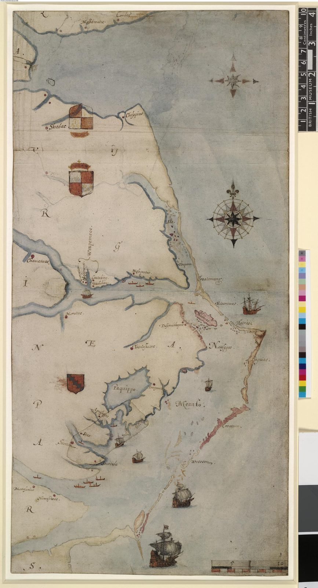
在擊敗無敵艦隊的前後，英國開始嘗試在北美建立立足點 。1584年，沃爾特·雷利爵士（Sir Walter Raleigh）獲得特許，在北卡羅來納沿海的羅阿諾克島（Roanoke Island）建立殖民地 。然而，由於遭遇嚴重的糧食短缺，加之英西戰爭導致補給船隻中斷數年，當1590年救援隊再次抵達時，發現整個島上的殖民者已神祕消失，只留下樹幹上刻寫的“Croatoan”字樣 。這次失敗證明，在缺乏強大財務制度保障與可持續農業基礎的情況下，單純的軍事探險式定居在北美是難以存活的 。
4. 英國海上私掠與1588年西班牙無敵艦隊的覆滅
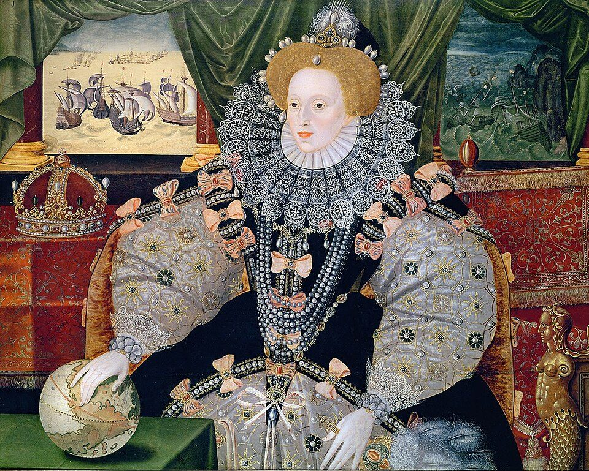
在16世紀中後期，由於財政匱乏，英國無法承擔大規模的海外建國計畫 。英女王伊麗莎白一世採取了「非正規戰術」，暗中支持德雷克（Sir Francis Drake）等私掠船長（Privateers），在大西洋上瘋狂襲擊西班牙的白銀寶藏船，以此完成了英國海外擴張的原始資本累積 。1588年，西班牙國王腓特烈二世為報復英國並壓制新教勢力，派出「無敵艦隊」（Spanish Armada）企圖入侵英國，卻慘遭英國海軍與風暴的雙重摧毀 。真正在大西洋的海權壟斷隨之瓦解，為英國、法國與荷蘭大規模進軍北美開拓了安全的海上通道 。
5. 荷蘭獨立運動、大帝國衰落與海上馬車夫的崛起（1588年後）
16世紀中後期，信奉加爾文教派的荷蘭地區為了反抗西班牙天主教王室的殘酷統治，爆發了長期的獨立戰爭，並於1588年正式宣告獨立。同年，西班牙用以威脅英荷兩國的「無敵艦隊」遭遇慘敗，這場戰役是絕對的地緣分水嶺。這一地緣政治裂痕，為新興的荷蘭共和國掃清了遠洋障礙，促使其利用國家特許的合股公司進行資本與武裝雙重擴張，成為17世紀北美新興且不可忽視的商業強權。
6. 西班牙在西南部的殘酷擴張與阿科馬大屠殺（1598-1599年）
1595年，西班牙國王授權胡安·德·奧尼亞特（Juan de Oñate）北上「平定」格蘭德河谷，企圖將其納入新西班牙北部的白銀開採網絡中 。1598年，奧尼亞特在新墨西哥建立殖民地，對當地的普韋布洛人施加殘酷的索求 。1598年12月，當奧尼亞特的部隊前往阿科馬普韋布洛（Acoma Pueblo）強行徵收糧食時，激起當地原住民反抗，殺死了其副官與10名士兵 。
1599年1月，奧尼亞特發動了血腥報復，攻陷阿科馬，屠殺了800名男女老幼 。在隨後的審判中，奧尼亞特下令將所有25歲以上倖存男性的「一隻腳砍斷」，並處以20年的勞役，同時將無辜的兒童與婦女強行分發給西班牙殖民者充當奴僕 。這場慘案展現了西班牙「委託監護制」背後的制度性暴力，亦為後來1680年爆發的「普韋布洛起義」（Pueblo Revolt）埋下了跨越數十年的仇恨火種 。
六、 結論：第一階段對北美後續地緣政治的深遠啟示
第一階段（1607年以前）雖然沒有建立起龐大的英語人口定居點，但其歷史實踐卻深刻決定了後續幾個世紀北美歷史的走向：
- 生態環境的決定性作用：玉米栽培的普及與大交換帶來的病原體，從根本上重塑了美洲大陸的人口承載力與族群板塊 。
- 制度路徑的鎖定效應：西班牙將中世紀的封建委託監護制移植到西南，法國深耕皮草貿易網絡，而英國則在遭遇初期失敗後，深刻意識到必須依靠合股公司募資，並以「家庭定居農業」為模式才能立足 。
- 原住民的地緣策略：面對外來威脅，原住民並非被動受害者，而是迅速學習並利用歐洲列強之間的信仰分裂（天主教與新教）與地緣矛盾，進行軍事與商業上的「合縱連橫」，試圖維護自身主權，這使得北美早期歷史呈現出極其複雜的多邊博弈狀態 。
Source: https://gemini.google.com/gem/bea4b0626968/a9bbf5c99b7e2af2
Exported at: 2026-05-24T03:39:07.617Z
第二階段：殖民地的建立、定居與大西洋世界的形塑（1607年－1754年）
導言：研究範疇與歷史重疊性
本階段研究範疇自1607年英國在維吉尼亞建立第一個永久殖民地詹姆斯鎮開始，延伸至1754年七年戰爭（北美戰場之法印戰爭）爆發前夕。這一個半世紀是北美大陸地緣政治格局經歷「漸進式整合」與「區域性分化」的關鍵時期。在此期間，西歐列強在北美的地盤爭奪，從第一階段的沿海探航與點狀掠奪，轉向系統性的「制度移植」與「大西洋貿易網絡」的構建。這一階段的核心歷史特徵在於：英國十三殖民地因地理、經濟與意識形態的根本差異分化出三大區域模式，與此同時，勞動力體制完成了從「白人契約僕役」向「種族化動產奴隸制」的關鍵轉型。此外，大西洋兩岸的政治、經濟與宗教波動（如光榮革命、重商主義、啟盟運動與大覺醒）亦在此時產生了深刻的共振。
一、 歐洲四大強權北美殖民模式之學術比較
進入17世紀後，西班牙、法國、荷蘭與英國四大強權在北美的競爭全面升級，其各自的殖民路徑與原住民互動模式呈現出極大的制度分化：
| 評估維度 | 西班牙（集權 subjugation 模式） | 法國（皮草 alliance 模式） | 荷蘭（特許公司商業模式） | 英國（定居隔離模式） |
|---|---|---|---|---|
| 地緣與政治架構 | 設立新西班牙副王區，實行中央集權與層級分明的官僚統治。 | 以聖勞倫斯河、五大湖及密西西比河谷為中樞，採取點狀要塞與商路網絡控制。 | 依靠荷蘭西印度公司（WIC）管理新尼德蘭與新阿姆斯特丹，實行高度重商政策。 | 十三殖民地各自獨立建制，王室特許狀、業主殖民與自治議會並行。 |
| 人口與經濟重心 | 移民人數極少，偏重金銀開採與大莊園農業，以強迫原住民勞動為根基。 | 移民人口極少，專注於利潤豐厚的河狸皮草貿易。 | 移民人數不足以抗衡英國，以毛皮貿易、港口轉運與 wampum（貝殼）貿易網為重心。 | 大規模家庭與集體移民，以定居農業、菸草和稻米等經濟作物為主要經濟支柱。 |
| 原住民互動模式 | 強制Subjugation與同化：推行委託監護制與傳教所體制，用武力強迫原住民皈依。 | 文化適應與共生：耶穌會傳教士融入原住民社群學習語言；皮草商娶原住民女性（Métis）以鞏固商務同盟。 | transactional 交易關係：建立沿海與河流貿易據點，極少涉入大規模宗教同化或領土強佔。 | 物理隔離與衝突：將原住民視為土地開發的阻礙，採取排他性隔離政策，極少通婚。 |
二、 英國北美十三殖民地的「區域性分化」
英國北美殖民地並非一個單一的整體，而是因應環境、移民背景與宗教動機，在地理上分化出三大截然不同的區域體系：
1. 新英格蘭殖民地（New England）：宗教立國與緊密市鎮
由逃避英國宗教迫害的喀爾文派清教徒（包括1620年普利茅斯朝聖者與1630年馬薩諸塞灣定居者）主導。新英格蘭的社會結構高度緊密，以教堂與學校為市鎮中心。其政治權力奠基於「民主參與式的市鎮會議」（Town Meetings），franchise（投票權）最初嚴格與教會成員身份掛鉤。經濟上不適宜種植大型經濟作物，因而發展出小規模自耕農、伐木、造船與捕魚業。由於宗教教條極其嚴苛，挑戰正統教義的異見分子（如羅傑·威廉姆斯、安妮·哈欽森）被無情驅逐。1692年的「塞勒姆審巫案」則展示了其在外部環境與內部危機威脅下宗教狂熱的病態頂峰。
2. 中部殖民地（Middle Colonies）：族群 pluralism 與糧倉經濟
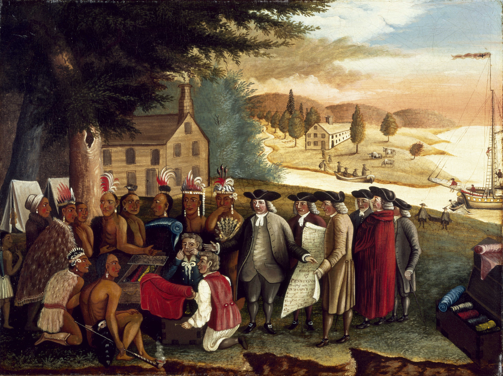
包括紐約（原荷蘭新阿姆斯特丹）、賓夕法尼亞、新澤西與德拉瓦。中部殖民地在地理上氣候溫和，盛產小麥與穀物，被譽為「麵包籃殖民地」。其最核心的特徵是高度的族群多樣性與宗教寬容。威廉·Penn建立的賓夕法尼亞成為貴格會（Quakers）的理想國，倡導和平主義並對原住民實行相對公平的土地交易。中部殖民地接納了大量德國與蘇格蘭-愛爾蘭移民，形成了北美最早的多元文化熔爐。
3. 切薩皮克與南方殖民地（Chesapeake & Southern）：種植園、精英政治與奴隸制
以維吉尼亞（詹姆斯鎮）、馬里蘭（最初為天主教避難所）以及卡羅萊納和 late comer 喬治亞為代表。切薩皮克地區在1610年代因引入菸草種植而迎來經濟轉向。南方殖民地擁有廣袤肥沃的土地和長久的生長期，形成了以種植菸草、稻米和藍靛為主的「大型種植園經濟」。與新英格蘭的自耕農不同，南方社會在階級上高度分化，政治權力被極少數的富裕種植園主（Planter Elites）壟斷，代議制機構（如維吉尼亞的代議議會 House of Burgesses）完全淪為精英階層的統治工具。而最南端的喬治亞在1732年建立時，最初被作為抵禦西屬佛羅里達襲擊的軍事緩衝區以及英國貧民與債務人的避難所。
三、 勞動力體制的根本性轉型與種族奴隸制的建制化
17世紀下半葉，切薩皮克與南方殖民地經歷了美國歷史上最為深遠的社會重塑——勞動力體制從白人契約僕役向永久黑人奴隸制的轉型。這一轉型是由一系列地緣、人口與政治危機共同促成的：
1. 1676年「培根叛亂」（Bacon's Rebellion）的催化效應
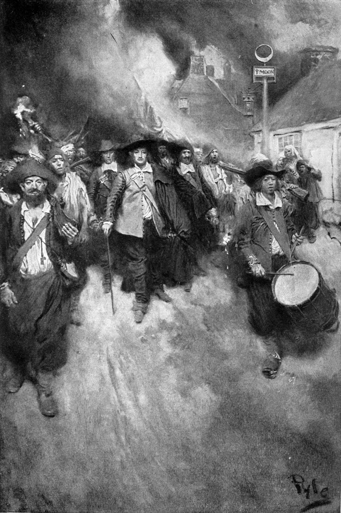
在17世紀中葉，南方種植園主要依賴來自英國的白人契約僕役。然而，隨著可供分配的土地日漸減少，大批期滿獲得自由的契約僕役無法在發達的東部購地，只能被迫前往西部 frontier 清理荒地，因而頻繁遭到原住民的反擊。
1676年，弗吉尼亞前線開拓者 Nathaniel Bacon 號召不滿的自耕農、白人僕役與黑奴發動武裝叛亂，直接對抗總督 William Berkeley 的寡頭政府，甚至將詹姆斯鎮付之一炬。這場叛亂雖因 Bacon 的病死而瓦解，卻徹底震撼了種植園精英階級。他們意識到：大量、處於社會邊緣且容易組織起來的「自由白人勞工」是危害政權穩定的定時炸彈。
2. 轉向非裔奴隸與種族隔離的法律建構
為了尋求一個更易控制、無需分配土地且無權反叛的永久勞動力來源，南方種植園主系統性地終止了白人契約僕役制，轉而大規模引進非洲黑人奴隸。為了防止白人貧民與黑人奴工再次聯手反抗，殖民地議會陸續頒布一系列嚴苛的奴隸法典（Slave Codes），在法律上將非裔人口定義為世代相襲、與種族完全掛鉤的「動產奴隸（Chattel）」，並在社會制度上徹底切斷了跨種族的交往與通婚，完成了「種族化階級制度」的建置。
3. 1739年「斯托諾叛亂」（Stono Rebellion）與制度收緊
隨著奴隸人口的大幅增加，白人階級對黑奴起義的恐懼在1739年南卡羅來納爆發的「斯托諾叛亂」中得到印證。一群黑奴奪取武器，殺死數十名白人，試圖逃往西屬佛羅里達（當時西班牙為了打擊英國，承諾給予逃亡黑奴自由）。儘管叛亂被殘酷鎮壓，南卡羅來納隨即通過了《1740年黑人法案》（Negro Act of 1740），嚴格限制奴隸的集會、閱讀、移動與寫作權利，黑奴的生存處境墮入最為黑暗的深淵。
四、 殖民地與原住民之多邊衝突、同盟與邊疆戰爭
在1607至1754年間，北美的邊疆不是一條靜止的界線，而是充斥著多方勢力合縱連橫、極度暴力的博弈邊帶：
1. 新英格蘭地區的「定居壓迫戰」
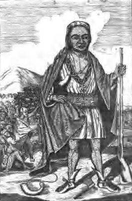
- 1637年 Pequot 戰爭：清教徒為了爭奪康涅狄格河谷的控制權，聯合敘拉古、莫希干等部落，對佩科特人（Pequots）展開了滅絕性的毀滅戰爭，展示了英國殖民者在領土擴張上的冷酷無情。
- 1675-1678年 麥達康戰爭/金菲利普戰爭（King Philip's War）：萬帕諾亞格盟主麥達康（Metacom）因無法忍受新英格蘭定居者無止境的土地蠶食與主權侵害，起兵對新英格蘭城邦發動了北美歷史上人口比例最慘烈的消耗戰。這場戰役最終以麥達康被殺、其部族成員被大批販賣至加勒比海充當糖業奴工而告終，徹底粉碎了新英格蘭南部原住民的武裝反抗能力。
2. 西南邊疆的信仰決戰：1680年「普韋布洛起義」（Pueblo Revolt）
在西班牙控制的西南部，新墨西哥總督與方濟各會傳教士對普韋布洛人實施殘酷的 encomienda 勞役，並強力禁止其傳統宗教活動。
1680年，普韋布洛領袖 Popé 組織了一場極其周密的全域協同起義，一舉擊殺 400 名西班牙人，迫使餘下的 2,000 名西班牙殖民者徹底撤回墨西哥，聖菲宣告收復。儘管西班牙於1692年重新奪回新墨西哥，但起義的威懾迫使西班牙人徹底改變了統治策略。他們廢除了強制的 encomienda 制度，減少了對原住民宗教活動的暴力迫害，從而促成了西南地區獨特的信仰融合與文化折衷（Religious Syncretism）。
3. 毛皮邊疆與「易洛魁中介」博弈
在東北林地與五大湖區，皮草貿易取代了土地爭奪成為核心驅力。易洛魁聯盟（Iroquois Confederacy）通過與哈德遜河畔的荷蘭人（後為英國人）結盟，獲取鐵器與先進火槍。為了壟斷通往大西洋的皮草貿易，易洛魁人在17世紀中葉對法國盟友休倫人（Hurons）發起毀滅性的「海狸戰爭」（Beaver Wars），導致休倫人部落解體，深刻重塑了東北部的族群分佈與法國的地緣防禦戰略。
4. 帝國邊疆的代理人戰爭
歐洲本土的霸權爭奪源源不斷地外溢至北美。1689-1697年英王威廉之戰（King William's War）與1702-1713年安妮女王之戰（Queen Anne's War），本質上是西歐「九年戰爭」與「西班牙王位繼承戰爭」的北美外延。
在這些衝突中，英國十三殖民地聯合易洛魁聯盟，與新法國及其組建的「阿布納基/萬帕諾亞格（Wabanaki）聯盟」展開慘烈的拉鋸式襲擊（如1704年典型的 Deerfield 大屠殺）。
1713年簽署的《烏得勒支和約》（Treaty of Utrecht），法國被迫將紐芬蘭、哈德遜灣與阿卡迪亞（新斯科舍）割讓給英國，此戰成為北美地緣平衡徹底傾向大英帝國的分水嶺。
隨後在緬因邊界，由於法國耶穌會士 Sébastien Rale 的暗中挑唆與領土爭議，爆發了1722-1725年達默之戰/拉爾神父之戰（Dummer's War），最終拉爾神父戰死於諾里奇沃克，Wabanaki 簽署《達默和約》投降，大批英國定居者進佔緬因領土。
五、 大西洋世界的文化整合、經濟交織與金融震盪
17世紀末至18世紀初，北美殖民地不再是孤立的邊疆，而是與大西洋兩岸的政治、經濟與文化潮流產生了深度的互嵌與共鳴：
1. 帝國管理、重商主義與「光榮革命」的迴響
英國政府依據重商主義（Mercantilism）理論，將殖民地定位為「廉價原材料供應地」與「母國工業品的排他性市場」。自1650年代起，議會陸續頒布一系列《航海法案》（Navigation Acts），規定殖民地關鍵原料（如菸草、糖）只能用英國船隻運往英國本土，以此打擊荷蘭等競爭對手。
1686年，國王詹姆斯二世為了強化帝國集權，強行合併北方各省建立「新英格蘭自治領」，撤銷各殖民地議會，引發極大民怨。
1688年英國本土爆發「光榮革命」，詹姆斯二世被推翻。消息傳回北美後，各殖民地迅速起兵響應：在紐約，Calvinist 德裔商人 Jacob Leisler 率領民兵奪取 Fort James 宣布效忠威廉與瑪麗，史稱「萊斯勒叛亂」（Leisler's Rebellion）。雖然 Leisler 最終在1691年因涉嫌篡權被新任總督亨利·Sloughter 處以絞刑並斬首，但這場叛亂粉碎了自治領集權計劃，恢復了各殖民地的代議制議會，並將紐約政壇撕裂為「支持萊斯勒」與「反萊斯勒」兩大長達數十年的敵對派系。
2. 紐約/新澤西地區的「荷蘭文化固化（Dutch Cultural Persistence）」
儘管英國於1664年（及1674年 Westminster 條約後）徹底吞併了新尼德蘭，將新阿姆斯特丹更名為紐約，但荷蘭的社會與文化印記卻在紐約與東新澤西展現出極強的生命力。在1690至1729年間，荷蘭語依然是哈德遜河谷與北新澤西的 lingua franca（通用語）甚至是上流社會的母語，老荷蘭語文獻與堂區記錄被完整保留。荷蘭式的磚石房屋與獨特的「新大陸荷蘭穀倉」點綴著鄉村景觀；而融合了非裔文化的「Pinkster（聖靈降臨節）大慶典」、聖尼古拉斯節（現代聖誕老人之雛形）以及商業上的合股觀念與包容多元的精神，在實質上重塑了紐約作為北美多元商業中樞的獨特底色。
3. 法屬路易斯安那的建立與「密西西比泡沫（Mississippi Bubble）」金融震盪
當英國在東海岸深耕之際，法國探險家（如 La Salle, Bienville）於1699年在密西西比河口立足，建立了 Biloxi、Mobile 等早期要塞。為了推動路易斯安那（La Louisiane）的殖民與債務化解，蘇格蘭金融家約翰·Law於1717年創辦了「西方公司（後改為印度公司）」，獲得了該區域的商業和販奴權利，並將其與法國皇家銀行深度綁定。
在 Law 的強力包裝與政治操縱下，路易斯安那被宣傳為「遍地金銀、每季能收穫四茬作物」的世外桃源。股份價格在1719年從 500 里弗一路狂飆至 18,000 里弗，吸引了全歐洲的瘋狂投機。為了給 Louisiana 「填充」人口，印度公司系統性地從法國監獄、孤兒院與工作海運了大量罪犯與「手提箱女孩（Casket Girls）」。
然而，路易斯安那的實際產出極低，泡泡最終於1720年底徹底破裂，無數投資者傾家蕩產。儘管密西西比泡沫引發了法國空前的財政災難，但這場資本動員客觀上為路易斯安那帶來了前所未有的資金、船隻與大批非裔奴工。1718年建城的紐奧良（New Orleans）在此基礎上得以存活，並於1723年正式確立為法屬路易斯安那的行政首府。
4. 觀念的巨變：大覺醒（Great Awakening）與啟盟運動（Enlightenment）
18世紀中葉，大西洋兩岸的知識與精神世界迎來雙重洗禮。 * 啟盟運動：強調理性、自然法則與天賦人權，以富蘭克林為代表的北美知識分子將歐洲哲學本地化，為後續代議政治和反抗君權注入了理論武器。 * 第一次大覺醒：面對理性主義對傳統教義的衝擊，以喬治·懷特菲爾德和喬納森·愛德華茲為首的傳教士發起了一場極具情感爆發力的宗教復興運動。他們在田野和廣場舉行大規模露天佈道，強調個人與上帝的直接連結，打破了傳統教派的層級與階級限制。這場運動不僅培育了跨殖民地的集體命運認同，更在客觀上建立了一種「反抗傳統權威、倡導公民自決」的草根民主精神，為1754年後的政治覺醒埋下了深厚的精神火種。
六、 結論：第二階段歷史對十三殖民地政治生態之重塑
第二階段（1607－1754年）是北美殖民地從篳路藍縷的邊界定居點，蛻變為具備成熟自主體制的「半獨立政治實體」的關鍵期。在這半個多世紀裡：
- 地理與經濟鎖定：新英格蘭的自耕農與代議市鎮、中部殖民地的多元包容貿易，以及南方基於「種族化動產奴隸制」的種植園貴族體制，在根本上奠定了美國南北發展路徑與未來內戰的地緣政治裂痕。
- 大西洋共振：無論是光榮革命在北美的政治漣漪，還是大覺醒運動帶來的精神洗禮，都深刻培育了北美殖民地人民「注重地方自治、反抗外部集權、崇尚個人權利」的政治文化基因。
- 地緣張力的積聚：隨著領土向西擴張與毛皮邊疆的開張，英國殖民者在1754年前夕已將戰線推至阿帕拉契山脈以西，這使他們與深耕內陸河流要塞的法國殖民勢力發生了不可避免的結構性碰撞，為第三階段的北美霸權決戰拉開了弓弦。
引用的著作
- AP US History - Curriculum - Lower Dauphin School District, 檢索日期：5月 23, 2026， https://www.ldsd.org/curriculum/high-school-curriculum/social-studies/ap-us-history
信仰衝突、軍事變革與波希米亞國家認同：胡斯戰爭的歷史脈絡、演進特徵與深遠影響研究報告

波希米亞王國在十三世紀確立其政治地位，並在十四世紀神聖羅馬帝國皇帝查理四世統屬時期達到繁榮與地緣影響力的頂峰。然而，在其繼任者瓦茨拉夫四世統治期間，波希米亞內部卻因嚴重的結構性社會矛盾而陷入政治與經濟的全面動盪。1380年肆虐歐洲的黑死病奪去了該地區將近十分之一的人口，重創了基層經濟，並加劇了各階級之間的對立。當時，羅馬天主教會神職人員掌控了波希米亞境內高達半數的耕地，這激起了捷克本土世俗中小貴族的強烈嫉妒，也引發了飽受重稅與地租壓迫之平民階層的極度憤慨。與此同時，西方教會正面臨嚴重的「大分裂」（Great Schism），教廷道德權威腐化墮落，神職人員聚斂私財、販賣贖罪券的行徑，更使天主教會的屬靈合法性在波希米亞社會中降至冰點。在這種深刻的信仰、經濟與民族危機中，捷克本土學者揚·胡斯（Jan Hus）的思想學說在波希米亞迅速傳播，為一場波瀾壯闊的武裝對抗與宗教革命埋下了火種。
一、 胡斯戰爭的歷史背景與導火線
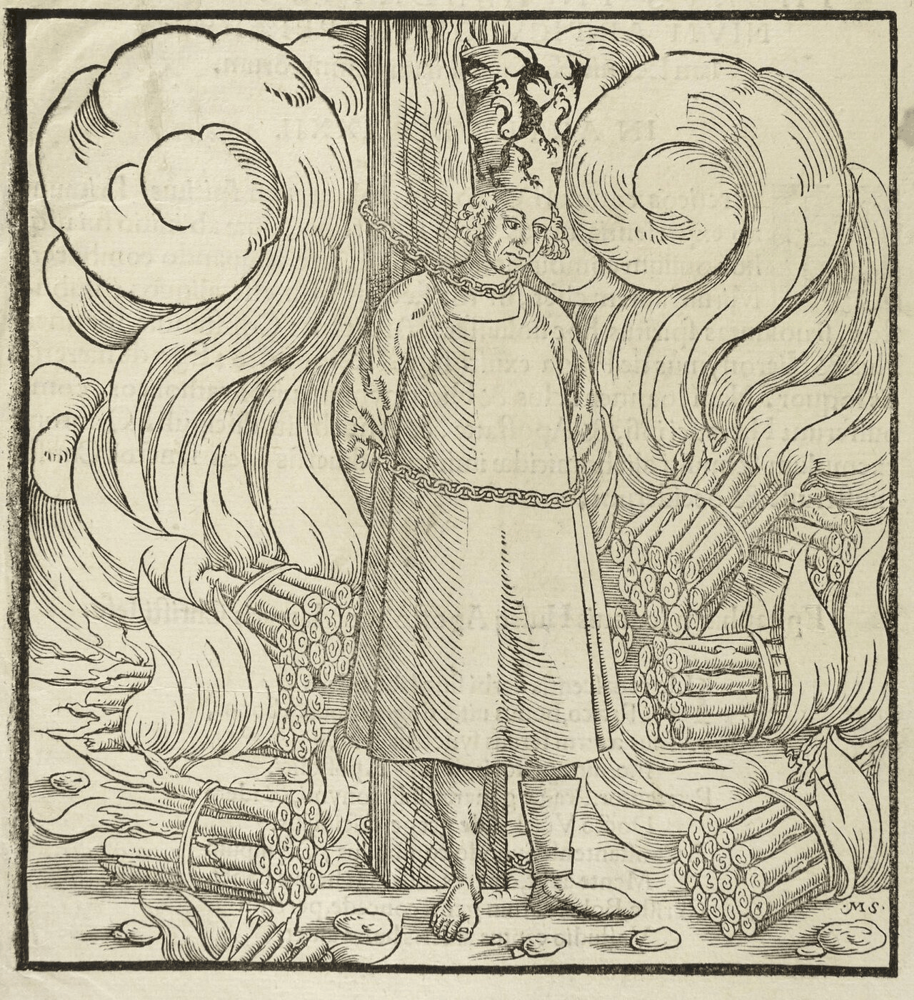
揚·胡斯約於1371年出生在波希米亞南部的一個貧寒農民家庭，憑藉自身才智考入布拉格大學，並於1400年正式晉鐸為神父。他隨後出任布拉格大學校長，並受聘為波希米亞王后Sofia的告解神父，在學術殿堂與宮廷政治中皆享有一席之地。在神學思想上，胡斯深受英國早期宗教改革先驅約翰·威克里夫（John Wycliffe）論著的啟發，開始對羅馬教廷的至高權威、教階制度以及聖人崇拜提出根本性的系統批判。他極力反對教會積聚世俗財富，並在1412年的神學論著《論贖罪券》（Questio de indulgentis）中，公開譴責教皇為了籌措教廷戰爭資金而大肆販賣贖罪券的腐敗行徑。
胡斯的神學體系建立在「聖經至上」的原則之上。他堅信唯有聖經才是信仰與屬靈生活的最高準則，世俗平民與神職人員一樣擁有直接研讀聖經、理解上帝真道的權利。為了踐行這一理念，胡斯在布拉格的伯利恆禮拜堂堅持以捷克母語而非傳統拉丁語進行宣教，每次皆能吸引超過三千名各階層民眾前來聆聽，這極大地推動了波希米亞民族意識與文化主體性的覺醒。為了使平民能夠理解教義，胡斯更主持了將聖經翻譯為捷克語的工作，在穩定與規範捷克語文法及書寫系統方面作出了奠基性的學術貢獻。胡斯的言行最初獲得了國王瓦茨拉夫四世的政治庇護，但當他反對贖罪券的立場損害了教皇與王室分食贖罪券收益的財政利益時，王室隨即收回了對他的保護，使其直接暴露於教廷的宗教法庭審判之下。
1414年，神聖羅馬帝國國王西吉斯蒙德
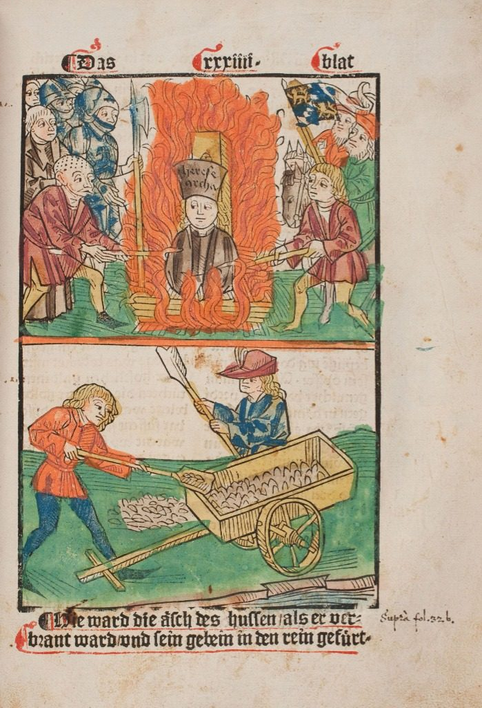
這場極具背叛色彩的火刑，徹底引爆了波希米亞社會積壓已久的怒火。1415年9月2日，捷克的大小貴族與騎士隨即向大公會議遞交了《波希米亞聯合抗議書》（protestatio Bohemorum），強烈譴責對胡斯的處刑。波希米亞境內的民眾亦自發推行「兩形聖餐禮」（Utraquism），即世俗信徒在聖餐禮中同時領受象徵基督肉體的麵包與象徵其寶血的葡萄酒，這一神學實踐迅速成為胡斯運動最核心的鬥爭象徵，並使聖杯（Chalice）圖案躍然於胡斯聯軍的軍旗與盾牌之上。面對西吉斯蒙德的外在威脅與國內天主教勢力的壓迫，胡斯信徒於1419年7月30日在激進牧師揚·熱利夫斯基（Jan Želivský）與軍事將領揚·傑式卡（Jan Žižka）的率領下，衝入布拉格新市政廳，將拒絕釋放胡斯派囚犯的十三名天主教市議員從窗口拋出跌死，這便是「第一次布拉格拋窗事件」。國王瓦茨拉夫四世在兩週後因極度震驚與憤怒猝逝，將波希米亞直接推入無君主的革命與內戰深淵之中。
二、 革命綱領與運動派系
第一次布拉格拋窗事件後，波希米亞的胡斯運動呈現出多元而複雜的派系分化。在抵禦外敵的過程中，各派系暫時擱置爭議，並於1420年9月共同確立了統一的鬥爭綱領，即著名的《布拉格四條款》。
| 條款項目 | 核心神學訴求 | 社會、政治與經濟影響 |
|---|---|---|
| 自由傳道 | 允許並保障所有牧師在波希米亞境內自由、有序地宣講上帝的真道。 | 徹底打破羅馬天主教會對教義闡釋權的行政壟斷，為捷克語宣教提供了法律與體制保障。 |
| 兩形聖餐 | 向所有未犯大罪的基督徒自由施予代表聖體與聖血的麵包與葡萄酒。 | 否定了天主教神職人員在救贖途徑上的屬靈特權，在靈魂拯救層面實現了信徒平等的理念。 |
| 教會安貧 | 剝奪神職人員對世俗土地和物質財富的行政支配權，使其回歸使徒式的清修與福音生活。 | 沒收天主教會在波希米亞高達半數的地產，重塑了波希米亞的世俗地主階級與封建經濟結構。 |
| 懲治罪行 | 在所有社會階層中，司法機關應公正且依法懲治一切公開的世俗與宗教大罪。 | 消除了神職人員的司法豁免權，建立起不分等級的統一社會道德規範和世俗法律審判標準。 |
| 在這一綱領之下，胡斯派內部因階級利益與神學 radical 化程度的不同，分裂為三大核心陣營： |
- 聖杯派 / 兩形派（Utraquists / Calixtines）：此為胡斯運動中的溫和派，主要由布拉格市民、捷克大貴族以及部分高等知識分子組成。他們的神學訴求相對保守，主要限於獲得兩形聖餐的權利，並反對教會擁有過度世俗權力，希望在不與羅馬教廷徹底決裂的前提下，通過談判取得波希米亞在天主教會體系內的自治權。
- 塔博爾派（Taborites）：此為胡斯運動中的激進派，以南波希米亞新建立的要塞城鎮「塔博爾」（Tábor）為組織中心，成員多為貧困農民、城市貧民與破落小貴族。他們不仅在宗教上要求全盤否定天主教會的儀式與聖禮（僅保留洗禮與聖餐），更在社會與政治層面倡導絕對的平等、財產公有制和取消封建特權，其民兵部隊成為胡斯戰爭中最具凝聚力與戰鬥力的軍事核心。
- 孤兒派（Orphans / Sirotci）：在傳奇領袖揚·傑式卡於1424年逝世後，原直屬於其指揮的激進武裝力量拒絕選拔繼任將領，而是自稱為「孤兒」。孤兒派在軍事體制上介於溫和派與塔博爾派之間，但在對抗羅馬天主教及帝國軍隊的立場上，與塔博爾派保持著高度一致的戰術同盟。
三、 五次十字軍入侵與戰爭進程
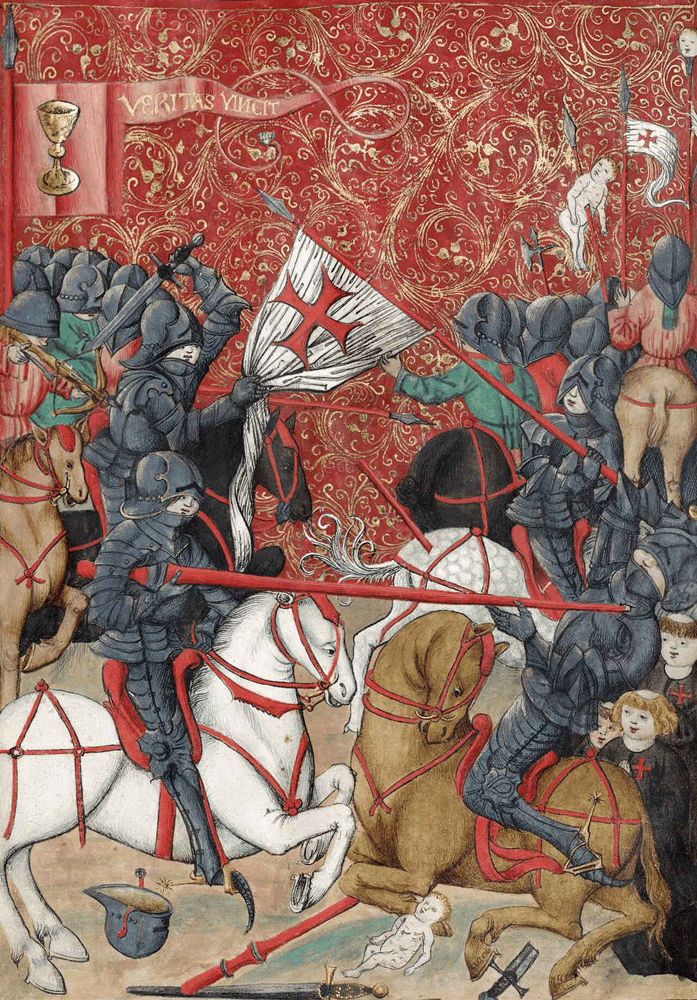
面對波希米亞的武裝叛亂，羅馬教皇馬丁五世（Pope Martin V）於1420年3月正式頒布教皇聖諭，號召整個天主教歐洲對波希米亞異端發動十字軍東征。西吉斯蒙德以此為號召，集結了神聖羅馬帝國的德意志諸侯、匈牙利重騎兵以及來自全歐的天主教僱傭軍，對波希米亞展開了數次大規模武裝合圍。
五次反胡斯十字軍東征戰史對比
在長達十餘年的高強度圍剿中，波希米亞農民與市民聯軍在極端劣勢下，連續重創了由歐洲最富庶領主支持的帝國騎士部隊，寫下了世界戰史上的奇蹟。
| 戰爭階段 | 十字軍時期與教皇詔令 | 天主教陣營主要指揮官 | 胡斯陣營主要指揮官 | 關鍵戰役、衝突地點與軍事演進 |
|---|---|---|---|---|
| 第一次十字軍 | 1420年3月宣告，7月發動 | 皇帝西吉斯蒙德、德意志與匈牙利貴族 | 揚·傑式卡 | 西吉斯蒙德親率八萬聯軍圍攻布拉格。胡斯軍隊在庫特納霍拉與布拉格新城進行動員。1420年7月14日爆發維特科夫山戰役（Battle of Vítkov Hill），傑式卡依託狹窄山脊擊潰八千帝國騎兵，迫使其放棄圍城退走。西吉斯蒙德隨後強行加冕為波希米亞國王。11月1日爆發維謝赫拉德戰役（Battle of Vyšehrad），帝國軍隊再次被痛擊，城堡失陷。 |
| 第二次十字軍 | 1421年8月至10月 | 西吉斯蒙德、德意志選帝侯聯軍 | 揚·傑式卡 | 北路德意志十字軍圍攻扎泰茨（Žatec），遭到守軍頑強抵抗後潰退。南路西吉斯蒙德主力長驅直入，此時傑式卡雖在拉比城堡圍攻戰中雙眼全盲，仍在庫特納霍拉戰役與內梅茨基布羅德戰役（1422年1月）中，利用火炮與戰車陣夾擊帝國軍隊，全殲西吉斯蒙德的後衛部隊。 |
| 第三次十字軍 | 1422年10月至11月 | 德意志邊境選帝侯與帝國諸侯 | 揚·傑式卡 | 十字軍包圍卡爾什特因城堡（Karlštejn Castle），因無法突破胡斯戰車與要塞守軍的聯防而陷入膠著，於11月宣告停戰並撤軍。此後，波希米亞與立陶宛維托德大公結盟，外患暫息；但1423年胡斯派內部因階級分歧爆發劇烈內戰，傑式卡在Malesov戰役（1424年6月）中擊敗溫和派，隨後於10月病逝。 |
| 第四次十字軍 | 1427年7月至8月 | 德意志帝國諸侯、教皇特使 | 大普羅科普 | 接替指揮的大普羅科普在奧西格戰役（Aussig, 1426）擊敗帝國入侵。1427年7月，十字軍圍攻斯特日布羅（Stříbro），在塔霍夫戰役（Battle of Tachov）中被普羅科普率領的胡斯主力徹底擊潰，塔霍夫城失守，帝國軍隊死傷慘重。 |
| 第五次十字軍 | 1431年8月 | 樞機主教朱利安·塞薩里尼、德意志聯軍 | 大普羅科普 | 帝國發動最後一次大規模軍事合圍。1431年8月14日爆發多馬日利采戰役（Battle of Domažlice），十字軍在多馬日利采集結時，聽聞遠方胡斯軍隊高唱《上帝的戰士》戰歌並伴隨戰車雷鳴般的滾動聲，陷入極度恐慌，未經實質交火便丟棄所有輜重火炮，全軍潰退。 |
早期關鍵戰役之戰術剖析
胡斯戰爭前期的勝利，建立在傑式卡對地形的極致利用與防守戰術創新之上。
- 內克梅爾之戰（Battle of Nekmer, 1419年底）：這是胡斯軍隊首次有記錄地將裝甲戰車投入實戰。傑式卡率領的400名步兵遭遇 Lord Bohuslav 率領的2000名帝國重騎兵伏擊。面對五比一的兵力劣勢，傑式卡將7輛 baggage wagons 迅速鎖死排成環狀防線，命令手銃手與弩手在車廂木板掩護下對衝鋒的騎兵進行密集射擊。火槍發射時產生的巨大噪音、濃煙與穿透力極大地驚嚇了帝國軍馬，十字軍騎兵在遭遇慘重傷亡後被迫撤退，驗證了移動戰車防禦概念的可行性。
- 蘇多梅日之戰（Battle of Sudoměř, 1420年3月25日）：傑式卡率領400名攜家帶眷的平民兵，利用12輛戰車做防禦。面對前來截擊的2000名皇家重騎兵，傑式卡將戰車陣部署在兩座冬季乾涸的魚塘窄堤之上。帝國騎兵試圖從側面進行包抄，然而其戰馬迅速陷入了魚塘底泥濘不堪的淤泥中，進退失據。胡斯步兵趁勢揮舞著改裝的打穀鐵枷與長柄鉤鐮殺出車外，將大量被困泥沼的裝甲騎士鉤下馬背斬殺，此役徹底奠定了傑式卡在軍中的威望。
- 維特科夫山之戰（Battle of Vítkov Hill, 1420年7月14日）：西吉斯蒙德親率八萬大軍合圍布拉格，並試圖佔領能俯瞰布拉格東部通道、僅100碼寬的維特科夫山脊，以切斷城市的糧道補給。傑式卡在山脊頂端修築了木質暸望塔、防禦木柵欄與防禦戰壕，並親率極少數精銳堅守。當帝國的八千名精銳騎兵發動仰攻時，由於陡峭、狹窄的地形限制，騎士無法展開其龐大的兵力優勢，戰車陣內的弩箭與手銃射擊再次造成十字軍前鋒人仰馬翻。此時，傑式卡出其不意地率軍自側翼進行反衝鋒，同時布拉格新城的胡斯守軍也出城包抄，導致十字軍發生連鎖恐慌，大量騎士在潰退中跌落山谷喪命，此役迫使西吉斯蒙德解圍退兵。
攻勢擴張與內部分裂
在連續挫敗五次十字軍東征後，胡斯運動在軍事層面達到了黃金時期。大普羅科普不再滿足於本土防禦，自1427年起，胡斯聯軍開展了被稱為「美麗遠征」（spanilé jízdy）的主動攻勢，其足跡遠涉薩克森、巴伐利亞、西里西亞、匈牙利北部，甚至一度直抵波羅的海沿岸。這種以戰養戰的策略不僅掠奪了維持波希米亞戰時經濟所急需的物資，更對德意志境內的天主教封建諸侯形成了巨大的軍事威懾，迫使教廷與帝國不得不尋求和平談判。
然而，長達十餘年的封鎖與高強度消耗，導致波希米亞國內民生凋敝、土地荒蕪。1431年後，尋求和平與政經穩定的溫和派「聖杯派」（Calixtines），與不願對天主教會作任何妥協、以戰為生的激進派「塔博爾派」與「孤兒派」，在停戰談判的條件上發生了不可調和的矛盾。教廷敏銳地捕捉到這一裂痕，在巴塞爾大公會議中，提出允許溫和派保留兩形聖餐禮並承認其沒收之教產，但要求共同剿滅激進派的條件，波希米亞隨即陷入了殘酷的內戰。
四、 軍事變革：戰車堡壘與火器一體化

胡斯戰爭在歐洲軍事史上具有里程碑式的變革意義。在揚·傑式卡的戰術設計與規範下，胡斯軍隊成功地將中世紀的民用行李車改造成野戰防禦體系的核心，並完成了歷史上首次大規模「步兵—火器一體化」的軍事革命。
戰車堡壘（Wagenburg）的技術細節與編組對比
胡斯的戰車堡壘並非隨意拼湊的防禦線，而是嚴格按照戰術手冊製造、改裝並配合多兵種協同的「野戰機動工事」。
| 結構與技術維度 | 胡斯戰車堡壘（Wagenburg）配置 | 中世紀傳統騎士封建戰術 |
|---|---|---|
| 車體防禦裝甲 | 四輪 baggage wagons 改裝，車廂板加厚且外傾，左側外掛由繩索緊固的活動防護板保護車輪，車體下方懸掛防爬板，車廂兩側開槍眼。 | 騎士個體依賴昂貴的金屬板甲與戰馬防護，缺乏戰術性的防禦工事遮蔽。 |
| 車組戰術編制 | 每車編配20名士兵：2名駕駛與維修車伕、6名弩手、2名手銃（火槍）手、4名連枷（打穀枷）近戰兵、4名長柄戟兵、2名手持大型木盾（Pavise）的防禦盾兵。 | 騎士個人配備長槍與單手劍，其侍從散亂佈署於戰場周邊，缺乏連級單位的精細分工與防禦協同。 |
| 火炮與反後座力 | 配備中小型野戰炮與重型「防後座鉤銃」（hook guns），其銃管下方焊有金屬鉤，可直接卡在車體木壁上以吸收後坐力。 | 早期火炮沉重且缺乏野戰機動底座，發射極為緩慢，多用於緩慢的圍城戰。 |
| 陣型配置與機動 | 戰車在戰場上依靠鐵鏈鎖死成正方形、長方形或圓形陣地，空隙處安置大盾與野戰輕炮，陣前挖掘護城壕溝，中間安置馬匹、彈藥與後備騎兵。 | 騎士以橫列或楔形陣排列，注重在開闊平原發動正面高速衝鋒，極易受地形與障礙物破壞陣線。 |
戰術運用：高地依託與攻防協同
在戰場指揮中，傑式卡與後繼者高度重視地形偵察與高地利用。胡斯軍隊通常會搶先佔領陡峭的山坡或高地部署戰車堡壘，這樣做不僅極大消耗了敵方重裝騎兵向上仰攻的體力，更使戰車陣內那些具有平直彈道的早期火炮能夠獲得居高臨下的清晰視野與射擊彈道。
戰鬥打響後，胡斯軍隊首先利用部署在車間的輕型臼炮（howitzers）和野戰炮對進攻途中的敵軍密集陣型進行遠程轟擊，迫使敵方在混亂中盲目衝鋒。當敵方騎兵衝入中近距離時，戰車內的弩手與手銃手在木板掩護下進行交替裝填、齊射。少數能夠突破彈雨衝至車前的敵軍，會被胡斯步兵用掛著長鐵鏈的連枷、重戟與特製的馬銜鉤鐵鎌拉下馬背，隨後由近戰步兵斬殺。在敵軍攻勢衰竭、陣線鬆動之際，隱藏在戰車陣內側安全區域的胡斯輕騎兵與長柄步兵會推開車間的屏障大盾，如潮水般殺出，給予驚魂未定的十字軍最後一擊。這種以「戰車裝甲遮蔽、步炮交叉火力射擊、戰斧連枷近戰、輕騎兵側翼追擊」的立體戰術，使胡斯軍隊成為中世紀晚期戰場上極具殺傷力的戰術系統。
五、 利帕尼戰役與戰爭的政治終局
1434年春天，巴塞爾大公會議的和談代表與溫和聖杯派貴族達成了妥協，而大普羅科普率領的塔博爾派與孤兒派聯軍則誓死反對這一出賣宗教原則的和平協定，內戰不可避免地迎來了決戰時刻。
利帕尼戰役（May 30, 1434）的戰術重建
1434年5月30日，雙方軍隊在布拉格以東40公里的利帕尼山坡上相遇。此役中，聖杯派與天主教貴族組成的「波希米亞聯盟軍」（Bohemian League）擁有13,000名步兵、近1,500名重騎兵以及超過720輛戰車；而普羅科普率領的激進派聯軍則有10,000名步兵、700名騎兵與480輛戰車。
激進派聯軍首先抵達戰場，並在利普斯卡山頂的高地上構築了堅固的戰車堡壘，將其西側陣線抵在一處名為「惡魔溝壑」（Devil's Furrow，一處深約6米、寬達16米的天然地質裂縫）的天然屏障上，確保側翼萬無一失。雙方隨後展開了猛烈的野戰火炮對射。聯盟軍總指揮 Diviš Bořek（曾為傑式卡早期的戰術同盟者）深知直接仰攻激進派的戰車陣無異於自殺，於是設計了一場精準的欺敵戰術：
- 假裝潰退的陷阱：在火炮射擊持續一段時間後，聯盟軍的戰車隊突然開始向後緩慢移動，步兵隨之推擠、大喊，營造出戰線崩潰、全軍恐慌敗退的假象。
- 激進派的致命出擊：激進派陣營由於長期缺乏統一的最高權力約束，在看到聯盟軍退兵時，誤以為敵軍潰散，其前線軍官與士兵不顧普羅科普的嚴厲喝止，擅自打開了戰車堡壘的大門，潮水般地湧出高地進行追擊。
- 預伏重騎兵的反衝鋒：當激進派追兵徹底脫離了其戰車堡壘的保護範圍、散落於開闊山坡時，Diviš Bořek 突然命令聯盟軍停止退卻，轉身利用其密集的戰車火網向追兵射擊。與此同時，預先埋伏在戰場東側窪地中的聯盟軍重騎兵（由 Rosenberg 與 Menhart of Hradec 率領）發動了迅猛的側翼突襲。
- 突破戰車堡壘與大屠殺：根據皮爾森城參戰士兵寫給巴塞爾會議代表的信件（Letter from the Pilseners, June 1, 1434）與 Matěj Húsník 的戰後報告（June 2, 1434），原本在陣線後方充當預備隊的皮爾森民兵在 Nicholas Krchlebec 的指揮下，迅速實行了側翼旋迴，乘著激進派戰車大門尚未關閉之際，衝入了毫無防備的激進派營地內部。激進派陣線在前後夾擊下瞬間崩潰，其騎兵指揮官 Jan Čapek of Sány 眼見大勢已去，為保存實力而率領殘餘騎兵撤離戰場奔向 Kolín。
- 慘重的傷亡：此役激進派聯軍陣亡高達1,300人，兩位核心將領大普羅科普和小普羅科普皆在護車戰鬥中力戰殉國。戰後，聯盟軍背棄了承諾，將投降並自願服役的700名激進派殘卒，反鎖在利帕尼附近的數座乾草穀倉中，付之一炬活活燒死。 歷史學界對於 Jan Čapek of Sány 的撤退行為存在著長期的爭議。以 Jan Durdík 為代表的捷克傳統史家認為 Čapek 在關鍵時刻棄友軍於不顧，是一種徹頭徹尾的背叛行為；而現代史家 Petr Čornej 等人則通過戰術重構指出，在聯盟軍騎兵已經滲透進入戰車陣內部、步兵全線潰散的既定局勢下，Čapek 的撤退是一次理性的戰術止損，保留了孤兒派最後的武裝力量。
六、 戰爭結果與歷史影響
利帕尼戰役徹底打斷了激進胡斯運動的脊樑，為波希米亞與羅馬教廷及神聖羅馬帝國的和解鋪平了道路。
《巴塞爾協定》與政權更迭
1436年7月5日，波希米亞議會與天主教代表在伊格勞（Jihlava）正式簽署了《巴塞爾協定》（Compactata of Basel）。根據該協定，羅馬教廷正式承認波希米亞兩形聖餐禮的合法地位，允許世俗信徒在領受聖餐時領受聖杯。這在天主教大一統的歐洲歷史上，是羅馬教廷首次正式在法律上向非羅馬禮拜儀式的教會做出實質性讓步。協定同時默認了戰爭期間捷克世俗貴族沒收的大量天主教地產，徹底打破了羅馬教會在波希米亞的經濟基石，使其經濟權力向地方世俗貴族和自治城市大幅度轉移。
作為交換，波希米亞各階層於1436年8月正式承認西吉斯蒙德為波希米亞國王。然而，西吉斯蒙德僅僅統治了一年，便於1437年12月9日去世，這宣告了 Luxembourg 家族在波希米亞乃至神聖羅馬帝國統治的終結，波希米亞隨即陷入了長期的王位代理爭奪戰與地緣政治繼承危機中。
繼承戰爭與喬治·波德布拉德的崛起
西吉斯蒙德死後，波希米亞貴族分裂為兩大政治陣營：
- 奧地利黨（天主教派）：由奧爾德里赫二世（Oldřich II of Rosenberg）領銜，極力擁戴西吉斯蒙德的女婿、奧地利大公阿爾布雷希特二世（Albrecht II of Habsburg）繼承波希米亞王位。
- 波蘭黨（胡斯派）：由 Hynce Ptáček 與 Aleš Holický 領導，反對哈布斯堡勢力滲透，擁立波蘭王子卡西米爾（Casimir Jagiellon）為王。 阿爾布雷希特二世於1438年強行帶兵進入布拉格加冕，並圍攻胡斯派的大本營塔博爾，但在遭遇頑強抵抗後被迫妥協，雙方於1439年簽署休戰協定。隨著阿爾布雷希特在同年猝逝，波希米亞進入了長達十餘年的無國王「攝政期」（Interregnum）。為了維持地方秩序，地方貴族成立了名為「地方安全防衛聯盟」（Landfrieds）的軍事治安聯合體，代行中央政府職能。
在此期間，溫和胡斯派政治家喬治·波德布拉德（George of Poděbrady）迅速崛起，於1452年先後收復了皮塞克（Písek）、克拉托維（Klatovy）及叛亂的塔博爾，徹底解散了殘存的塔博爾派地方武裝，確立了溫和胡斯派對全國教會與世俗行政的絕對控制。1453年，阿爾布雷希特的遺腹子拉斯洛五世（Ladislaus the Posthumous）正式繼位，任命喬治·波德布拉德為攝政王。隨著拉斯洛於1457年早逝，喬治·波德布拉德於1458年被波希米亞議會一致推舉為國王，成為歐洲歷史上第一位也是唯一一位胡斯新教國王。
在宗教演進層面，胡斯運動在1457年催生了「波希米亞兄弟會」（Unitas Fratrum / Unity of Brethren）。這是一個從激進胡斯派餘部中分離出來的、徹底奉行和平主義、反對暴力對抗、強調《聖經》個人閱讀與德行修養的本土獨立教會。兄弟會在中世紀晚期與現代早期創立了獨立的學校、編撰了大量捷克語教義，並在宗教改革時期與馬丁·路德、約翰·加爾文建立了廣泛的學術與神學聯繫，將胡斯精神傳承至後世。
歐洲宗教改革的歷史迴響與德意志變革
胡斯戰爭對後世歐洲歷史的演進產生了深遠而具顛覆性的地緣政治與精神波及。
- 德意志宗教改革的理論先聲：一個世紀後，德意志神學家馬丁·路德在康斯坦茨火刑柱的感召下，系統性地重申了揚·胡斯的主張，路德公開承認胡斯是其精神上的直接導師。胡斯派所爭取的「母語講道、信徒皆祭司、限制教會地產、聖經唯獨」等條款，全部轉化為十六世紀歐洲宗教改革的核心神學纲领。
- 多元宗教並存與民族國家教會的範式：胡斯派建立的波希米亞兩形派教會，在歐洲歷史上首次開創了「單一主權國家內，兩種信仰與教會體制合法並存」的先例。這一 precedent 直接啟發了隨後英格蘭國教會（Anglican Church）的創設、德意志諸侯「教隨君定」原則的確立，以及瑞士各加爾文教區的法理獨立。
- 軍事戰術的系統性擴散：胡斯戰車堡壘戰術與早期火器的野戰一體化系統，在戰後被全歐廣泛效仿。在十六世紀的德意志農民戰爭中，叛軍直接套用了胡斯的 Wagenburg 陣型；而匈牙利國王馬加什一世（Matthias Corvinus）招募大量原胡斯退役士兵組建了威震中歐的「黑軍」（Black Army），在對抗奧斯曼帝國的擴張中，將戰車防禦戰術與重炮火力發揮到了極致。
歷史悲劇的終結與現代民族復興
儘管胡斯派教會在波希米亞和平存在了近兩個世紀，但地緣政治的風暴依然在1618年再度降臨。神聖羅馬帝國哈布斯堡王朝皇帝斐迪南二世推行強硬的逆宗教改革政策，直接引發了「第二次布拉格拋窗事件」與三十年戰爭的爆發。1620年11月8日，在布拉格郊外的白山戰役（Battle of White Mountain）中，缺乏訓練的捷克新教貴族聯軍在哈布斯堡帝國軍隊的打擊下，在兩小時內全線潰敗。
白山之戰的慘敗，終結了波希米亞自胡斯戰爭以來享有的宗教自由與政治自治權，捷克本土貴族階層被肉體消滅或流放，天主教被宣布為唯一合法信仰，捷克社會進入了長達150年之久的「黑暗時代」。然而，正如歷史所昭示的那樣，胡斯派所倡導的「真理與自由意識」已深深刻入捷克民族的文化基因。當一戰結束、奧匈帝國解體，捷克斯洛伐克共和國於1918年宣告誕生之際，建國之父馬薩里克總統將胡斯重新奉為國家精神的最高豐碑，而胡斯的遺言「真理終將得勝」被正式書寫於總統府的旗幟之上，昭示著這一中世紀平民與信仰革命的遺產，跨越數百年時空，依然在現代歐洲的歷史記憶中熊熊燃燒。
Source: https://gemini.google.com/app/b65b55ea9776b1b6
Exported at: 2026-05-26T15:26:37.667Z
金璽詔書(德)
全文大意：這份文件是查理四世《金璽詔書》的高地德語譯本，確立了皇帝與諸侯的權力結構。
Diese neuhochdeutsche Übersetzung ist dem Teutschen Reichs-Archiv entnommen. Sie wurde nach Angaben des Herausgebers Johann Christian Lünig einem Werk zur Goldenen Bulle von Heinrich Günther von Thulemeyer (ca. 1642–1714), einem Polyhistor und Rechtsgelehrten, entnommen bzw. beruht auf diesem. Weiteres zur Grundlage dieser Übersetzung findet sich in der Vorlage nicht.
這段新高地德語譯文出自《德意志帝國檔案》（Teutsches Reichs-Archiv）。根據編者約翰·克里斯蒂安·呂尼希（Johann Christian Lünig）的說法，本譯文摘錄自或基於海因里希·根特·馮·圖萊邁爾（Heinrich Günther von Thulemeyer，約 1642–1714 年）一部關於《金璽詔書》（Goldene Bulle）的著作，他是一位博學者與法學家。原件中未包含更多關於此譯文基礎的進一步資訊。
- Neuhochdeutsch（新高地德語）： 德語語言史的一個階段，指大約從 14 世紀或 16 世紀（馬丁·路德宗教改革時期）發展至今的現代德語。
- Teutsches Reichs-Archiv（德意志帝國檔案）： 由約翰·克里斯蒂安·呂尼希編輯的重要歷史文獻集，收錄了神聖羅馬帝國的官方文件、條約和法令（註：原文 Teutsches 為古拼法，現代德語為 Deutsches）。
- Johann Christian Lünig（約翰·克里斯蒂安·呂尼希，1662–1740）： 德國著名的法學家、歷史學家和出版商，以編纂大量的國家法律與外交文獻集而聞名。
- Goldene Bulle（金璽詔書 / 黃金詔書）： 神聖羅馬帝國皇帝查理四世於 1356 年頒布的憲章，明確規範了帝國選帝侯選舉皇帝的程序，是帝國憲法的重要基石。
- Heinrich Günther von Thulemeyer（海因里希·根特·馮·圖萊邁爾）： 17 世紀德國的法學家、歷史學家，曾撰寫多部關於帝國憲法和歷史的著作。
- Polyhistor（博學者）： 源自希臘語，指在多個學術領域（如歷史、法律、哲學等）都擁有極其深厚且廣泛知識的學者。
Die Hoch-Teutsche Ubersetzung der güldenen Bull Kaysers Carl des Vierten. Inhalt derselben.
PRAEF. Von Erhaltung der Einigkeit unter denen Chur-Fürsten.
CAP. I. Von der Chur-Fürsten Geleyt / und von wem das seyn soll.
CAP. II. Von der Wahl eines Römischen Königes.
CAP. III. Wie man die Geistlichen Chur-Fürsten / Trier / Cölln und Mayntz / Ertz-Bischoffen setzen soll.
CAP. IV. Von den Chur-Fürsten in gemein.
CAP. V. Von Rechten des Pfaltzgraffen / und Hertzogen zu Sachsen.
CAP. VI. Wie die Chur-Fürsten gegen andern Fürsten verglichen werden.
CAP. VII. Von der Chur-Fürsten Nachkommen wegen.
CAP. VIII. Von des Königs in Böhem und seines Reichs Inwohner Freyheiten.
CAP. IX. Von Gold / Silber / und ander Ertz wegen.
CAP. X. Von der Müntz.
CAP. XI. Von der Chur-Fürsten Freyheiten.
CAP. XII. Von der Chur-Fürsten Versamblung.
CAP. XIII. Von Wiederruffung der Freyheiten.
CAP. XIV. Von denen / welchen alß Unwürdigen ihr Lehen-Gut benommen wird.
CAP. XV. Von Zusammen-Verbündnüß.
CAP. XVI. Von Pfahlbürgern.
CAP. XVII. Von Absagen.
CAP. XVIII. Form Verkünds-Brieff.
CAP. XIX. Form der Chur-Fürsten Gewalts-Brieff zu wehlen.
CAP. XX. Von Vereinigung der Chur-Fürsten / in ihren zugehörigen Rechten.
CAP. XXI. Von Ordnung der Ertz-Bischoffen Procession.
CAP. XXII. Von Ordnung der Procession, und durch welche Chur-Fürsten die Kleinod getragen werden.
CAP. XXIII. Von der Ertz-Bischoffen Seegen / in Gegenwärtigkeit eines Käysers.
CAP. XXIV. Gesetze so zu Metz Anno 1356 seynd gegeben.
CAP. XXV. Von Unzertrennlichkeit der Chur-Fürstlichen Erblanden.
CAP. XXVI. Von Begangnüß eines Kayserlichen und Königlichen Hoffs.
CAP. XX十七. Von den Amptern der Churfürsten in (Hochzeitlichen) Hochfeyerlichen Höfen eines Kaysers.
CAP. XXVIII. Von Zubereitung der Käyserl. und Königl. Tisch.
CAP. XXIX. Von Berechtigung der Beampten in Empfahung der Chur- und andern Fürsten / Ihrer Lehen von dem Kayser oder Röm. König.
CAP. XXX. Satzung zu Erlernung der Königl. und Fürstl. Söhn gewisser Sprachen.
皇帝查理四世《金璽詔書》之高地德語譯本。其目錄如下：
前言：關於維持選帝侯之間的團結。
第一章：關於選帝侯的護送（安全保障），以及該由誰負責護送。
第二章：關於羅馬人民的國王之選舉。
第三章：如何安置教會選帝侯——特里爾、科隆與美因茨總主教之席位。
第四章：關於選帝侯之通則。
第五章：關於萊茵行宮伯爵與薩克森公爵的特權（帝國攝政權）。
第六章：選帝侯與其他諸侯之地位比較。
第七章：關於選帝侯繼承人之事宜。
第八章：關於波希米亞國王及其王國居民的特權（司法獨立權）。
第九章：關於黃金、白銀及其他礦石（採礦權）之事宜。
第十章：關於貨幣鑄造權。
第十一章：關於選帝侯的特權（豁免權與不准上訴權）。
第十二章：關於選帝侯大會。
第十三章：關於特權的撤銷（禁止非法剝奪特權）。
第十四章：關於因不配/不忠而遭剝奪封地之人。
第十五章：關於非法結盟（禁止城市與諸侯間的私自同盟）。
第十六章：關於「外來市民」（柵欄市民）。
第十七章：關於宣戰通知（私戰的正式通告）。
第十八章：通知公文（宣戰書）之格式。
第十九章：選帝侯投票全權委託書（代投授權書）之格式。
第二十章：關於選帝侯其專有權利的聯合與維護。
第二十一章：關於總主教進場行進（儀式序列）之順序。
第二十二章：關於行進順序及由哪些選帝侯恭迎帝國聖物（帝國寶物）。
第二十三章：關於在皇帝御前由總主教進行祝禱之事宜。
第二十四章：西元 1356 年於梅斯頒布之法律（即《金璽詔書》後半部分）。
第二十五章：關於選帝侯長子繼承權與領地之不可分割性。
第二十六章：關於舉行帝國與皇家宮廷典禮之事宜。
第二十七章：關於選帝侯在皇帝盛大慶典宮廷中所擔當的御前職務（四大宮廷官職）。
第二十八章：關於御宴（皇帝與國王宴席）之籌備與上菜順序。
第二十九章：關於廷臣在選帝侯及其他諸侯向皇帝或羅馬人民的國王接受封地時的規費收取特權。
第三十章：關於王室與諸侯子嗣學習指定語言（德語、義大利語、斯拉夫語等）之法令。
- Chur-Fürsten（現代德語：Kurfürsten，選帝侯）： 指神聖羅馬帝國中擁有選舉「羅馬人民的國王」（即神聖羅馬帝國皇帝的前身）特權的七位頂級諸侯（三位教會諸侯，四位世俗諸侯）。
- Römischer König（羅馬人民的國王）： 神聖羅馬帝國君主在獲得教宗加冕為皇帝（Kaiser）之前、或是老皇帝在位時經選帝侯圈定的王位繼承人所使用的頭銜。
- Pfaltzgraffen（現代德語：Pfalzgrafen，行宮伯爵）： 這裡特指「萊茵行宮伯爵」（Pfalzgraf bei Rhein），是四大世俗選帝侯之一，在帝國皇帝出缺時，與薩克森公爵共同擔任「帝國攝政」（Reichsvikar）。
- Pfahlbürgern（現代德語：Pfahlbürger，外來市民 / 柵欄市民）： 歷史法律術語。指那些住在城市城牆或象徵邊界的「柵欄（Pfahl）」之外，但向城市繳稅、獲得城市公民權以逃避地方封建領主司法管轄的居民。《金璽詔書》第16章嚴厲禁止此行為，以維護諸侯的封建領地權力。
- Absagen（宣戰 / 拒絕服從）： 在中世紀與近代早期的德意志法律中，諸侯之間若要進行合法的「私戰」（Fehde），必須先向對方送達正式的宣戰書（Fehdebrief/Absagebrief），此處即指該法律規範。
- Kleinod（現代德語：Reichskleinodien，帝國聖物 / 帝國寶物）： 指神聖羅馬帝國的加冕聖物，包括帝國皇冠、帝國之劍、聖槍與帝國蘋果等，由特定選帝侯在典禮中持奉。
- Hochzeitlichen / Hochfeyerlichen（盛大慶典的）： 注意！此處的古德語 Hochzeitlichen 並非現代德語的「婚禮（Hochzeit）」，而是取其歷史字面核心意義「高尚的時間、偉大的節日（hohe Zeit）」，專指皇帝召開的帝國議會、加冕典禮等極為隆重的宮廷盛事。
Im Nahmen der heiligen unzertheilten Dreyfaltigkeit seliglich / Amen.
奉神聖不可分割的三位一體之至福聖名，阿們。
- Nahmen（現代德語：Namen，名字/名義）： 這是近代早期德語（Early New High German）的常見拼法，在 19 世紀末德語正字法改革前，常在母音後加上變音符號或多餘的字母（如 h）來表示長母音。
- unzertheilten（現代德語：ungeteilten，不可分割的）： 基督教三位一體教義中的核心描述（拉丁語：individuae Trinitatis），強調聖父、聖子、聖靈三者雖有位格之分，但本質是一體且不可分割的。古拼法常以 th 代替 t。
- Dreyfaltigkeit（現代德語：Dreifaltigkeit，三位一體）： 基督教的基本教義。古德語印刷常以 y 代替 i 或 ie。
- seliglich（福佑地 / 帶來救贖地）： 源自 selig（神聖的、具至福的）。在神聖羅馬帝國的官方詔書或法律文件的開頭（Invocatio，呼籲神名），此詞用以加強文書的莊嚴性與合法性，表明此政令是在上帝的福佑下頒布。
Wir CAROLUS der Vierte / von Gottes Gnaden / Römischer Käyser / zu allen Zeiten Mehrer des Reichs / und König in Böhem / zu ewiger Gedächtnüß der Sachen. Ein jeglich Reich / das in ihm selbst zertrennt / und in Uneinigkeit gesetzt / wird trostloß: Dann die Fürsten solcher Zertrennung seynd Gesellen der Diebe. Darumb hat GOtt mitten unter sie gemischet den Geist des Schwindels / daß sie am Mittag / gleich alß in der Finsternüß mit Händen tasten und straucheln / auch das helle Licht von seinem Ort hinweg gerückt und genommen / damit sie gantz blind / und der Blinder Führer werden. Und die also im Finstern wandeln / die (schaden) stossen an / und seyn blindes Gemüths / vollnbringen die Missethaten / so in der Zertrennung geschehen.
我們查理四世，蒙上帝恩典，羅馬皇帝、帝國永恆的增強者及波希米亞國王，願此事永誌不忘。凡內部陷入分裂並深陷不和之王國，必致荒涼；蓋因造成此等分裂之諸侯，皆為盜賊之同夥。是以，上帝在彼等之中摻入了迷惑之靈，致使彼等在正午時分，亦如身處黑暗中一般以手摸索、步履蹣跚；上帝亦將明光自其位移開並奪去，使彼等徹底失明，甚而成為瞎子的盲目領路人。而彼等如是在黑暗中行走之人，四處碰撞（蒙受損害），且心智盲目，終至犯下在分裂中所生之種種惡行。
- CAROLUS der Vierte（查理四世，1316–1378）： 神聖羅馬帝國皇帝（盧森堡王朝），同時也是波希米亞國王（稱查理一世）。他於 1356 年頒布了這部著名的《金璽詔書》，旨在規範帝國選舉制度，防止因王位爭奪而導致帝國分裂。
- Mehrer des Reichs（帝國的增強者/擴張者）： 這是神聖羅馬帝國皇帝固定頭銜的德語傳統翻譯，源自拉丁語頭銜 Semper Augustus（永崇帝國者/永恆的擴張者）。古德語將拉丁文動詞 augere（增加、擴大）與羅馬皇帝頭銜 Augustus 產生字面聯想而譯為 Mehrer。
- zu ewiger Gedächtnüß der Sachen（永誌不忘 / 永垂不朽）： 歷史法律文書的固定公式語，源自拉丁語 ad perpetuam rei memoriam，用於彰顯法律文件的永久有效性與歷史重要性。
- Geist des Schwindels（迷惑之靈 / 眩暈之靈）： 這裡引用了聖經舊約《以賽亞書》19章14節的典故（拉丁文聖經作 spiritus vertiginis）。在政治語境中，用來譴責那些因私利而導致國家不和、政治盲目的諸侯。
- Blinder Führer（瞎子的領路人）： 引用自聖經新約《馬太福音》15章14節「盲人騎瞎馬」的典故，暗指那些缺乏政治遠見、帶領國家走向毀滅的割據諸侯。
- stossen an（碰撞 / 觸礁）： 此處的古德語用法在括號中註記了 (schaden)（受損），意指在黑暗中盲目摸索前行，必然會四處碰撞而讓自身與國家遭受實質損害。
Sag an du Hoffart / wie woltestu in Lucifero geherrschet haben / wo du die Zertrennung zum Mitgehülff nicht gehabt hättest? Sag an / du häßiger Sathan / wie woltest du den Adam auß dem Paradeiß vertrieben haben / wo du ihn nicht von Gehorsam abgeführet? Sag an du Zorn / wie hättest du den Römischen gemeinen Nutz ins Verderben gestürzt / wo du Pompejum und Julium in der Zertheilung mit grimmigen Schwerdtern / nicht zu innerlichen hefftigen Kriegen erwecket? Sag an du Unkeuschheit / wie hättest du die Stadt Trojam zerstört / wo du Helenam von ihrem Mann nicht abwendig gemacht?
說吧，你這傲慢！若非有「分裂」作為你的幫兇，你又如何能支配路西法？說吧，你這可憎的撒旦！若非你誘使亞當背離順服，你又如何能將他逐出樂園？說吧，你這憤怒！若非你在分崩離析中以殘酷的利劍，挑起龐培與朱利葉斯（凱撒）之間慘烈的內戰，你又如何能將羅馬的公共福祉推向毀滅？說吧，你這淫邪！若非你使海倫背叛她的丈夫，你又如何能摧毀特洛伊城？
- Hoffart（現代德語：Hochmut，傲慢）： 古德語詞彙，在基督教神學中代表天主教七宗罪之首的「傲慢（Superbia）」。文中將其擬人化，指責它是煽動背叛與分裂的根源。
- Lucifero（路西法）： 拉丁語名詞 Lucifer 的德語歷史文獻變格。在基督教傳統中，他原為最美麗的天使長，因傲慢而反叛上帝，最終墮落為魔王。
- Paradeiß（現代德語：Paradies，樂園/伊甸園）： 此處拼法帶有近代早期德語特徵，指聖經中亞當與夏娃最初居住的樂園。
- Römischen gemeinen Nutz（羅馬公共福祉）： 歷史政治術語。Gemeiner Nutz（或 Gemeinnutz）意為「公共利益/福祉」。這裡指的是羅馬的「國家公共事務」（對應拉丁文的 Res publica，即羅馬共和國），強調諸侯內鬥會摧毀國家的基石。
- Pompejum und Julium（龐培與朱利葉斯）： 指羅馬共和國末期的兩大巨頭——龐培（Gnaeus Pompeius Magnus）與凱撒（Gaius Julius Caesar）。兩人的決裂與內戰導致了羅馬共和國的消亡。此處地名與人名採用了拉丁語的賓格結尾（-um）。
- Unkeuschheit（淫邪/不潔）： 現代德語同字，在宗教語境中對應七宗罪中的「色慾（Luxuria）」。
- Helenam（海倫）： 特洛伊的海倫（Helen of Troy）。希臘神話中因她背棄丈夫、與特洛伊王子帕里斯私奔，進而引發了長達十年的特洛伊戰爭。
Auch du Neid und Haß / hast das Christliche Kayserthum / so von GOtt / gleich der H. unzertheilten Dreyfaltigkeit / mit den göttlichen Tugenden des Glaubens / der Hoffnung und Liebe gestärckt auf dessen Grund-Fest alle Reich und Gewalt ruhen / mit Gifft / welches du als ein Schlang in des H. Reichs (zweien) Zweige[3] und nächste Gliedmassen boßhafftig ausgegossen / verunreinigt / auf daß / wann die Seulen zerschlagen / der gantze Bau zum Fall (gericht und) sich (neiget) neige.
還有你，嫉妒與仇恨啊！你用毒液污染了基督徒的帝國。這帝國本蒙上帝恩典，如同神聖不可分割的三位一體，受到「信、望、愛」等神聖美德的加固，一切王國與權力皆奠基於其磐石之上；而你卻如毒蛇一般，將毒液惡毒地傾注進神聖帝國的（兩大）分支與最親近的肢體之中，好讓帝國的支柱被擊碎之時，整個建築結構便傾頹（走向毀滅）崩塌。
- Christliche Kayserthum（基督徒帝國 / 基督教帝國）： 這裡指代「神聖羅馬帝國」（Sacrum Romanum Imperium）。在當時的政治神學觀念中，帝國被視為地上基督教世界的世俗捍衛者，其權力直接來自上帝。
- Glaubens, der Hoffnung und Liebe（信、望、愛）： 基督教神學中的「三大神學美德」（聖經《哥林多前書》第13章）。文本以此強調帝國的正統性與神聖道德根基。
- des H. Reichs (zweien) Zweige（神聖帝國的兩大分支）： 歷史文獻中的隱喻。通常指神聖羅馬帝國治下的精神世界（教會諸侯）與世俗世界（世俗諸侯），或是指撐起帝國的兩大核心政治力量。嫉妒與仇恨分化了這兩大陣營，導致帝國內鬥。
- Seulen（現代德語：Säulen，支柱）： 政治修辭。在神聖羅馬帝國的官方文獻中，選帝侯（Kurfürsten）常被尊稱為「帝國的支柱」（拉丁語：columnae imperii）。這句話的意思是，諸侯間的嫉妒與仇恨會摧毀這些選帝侯支柱，進而導致整個帝國大廈崩塌。
- neiget（現代德語：neigt，傾斜/傾向）： 這裡的 neige 採用了古德語的虛擬式（Subjunktiv），用在 auf daß（為了.../好讓...）引導的目的子句中，表示一種令人擔憂的可能後果。
Gleichergestalt hast du zwischen des H. Reichs sieben Chur-
同樣地，你也在神聖帝國的七位選（帝侯）之間……（註：原文此處語句中斷於字根）
- Gleichergestalt（同樣地 / 以同樣的方式）： 古德語副詞，等同於現代德語的 gleichermaßen 或 ebenso。這裡繼續延續前一段對「嫉妒與仇恨」（Neid und Haß）的擬人化指責，控訴它們不僅破壞了帝國的支柱，同樣也在選帝侯之間挑撥離間。
- des H. Reichs（神聖帝國的）：des Heiligen Reichs 的縮寫，即神聖羅馬帝國。
- sieben Chur-（七位選帝侯）： 這裡的 Chur- 是 Churfürsten（選帝侯，現代德語拼作 Kurfürsten）的字根，因句子尚未完結而帶有連字號。根據《金璽詔書》的確立，神聖羅馬帝國的法定選帝侯共有七位（美因茨總主教、科隆總主教、特里爾總主教、波希米亞國王、萊茵行宮伯爵、薩克森-維滕貝格公爵、勃蘭登堡藩侯），文中控訴嫉妒與仇恨在這七大巨頭之間播下不和的種子。
Fürsten/ durch welche / als sieben Leuchter / das H. Reich in Einigkeit des siebenförmigen Geistes solt erleuchtet werden / mancherley Zerstörung angerichtet.
（選帝）侯們之間，造成了種種破壞。彼等本應如同七座燈臺，在七型之靈的合一中，照亮整個神聖帝國。 (註：本段承接上一句「同樣地，你也在神聖帝國的七位選…」，完整意思為「你也在帝國的七位選帝侯之間造成了種種破壞…」)
- sieben Leuchter（七座燈臺）： 這裡引用了聖經舊約與新約《啟示錄》（1:12-20）中的神聖典故（金燈臺）。在《金璽詔書》的政治神學修辭中，將七位選帝侯比喻為撐起並照亮神聖羅馬帝國的七座神聖燈臺，強調他們的崇高地位與神聖職責。
- siebenförmigen Geistes（七型之靈 / 聖靈的七種恩賜）： 宗教術語（拉丁語：septiformis spiritus），源自《以賽亞書》11章2節，指聖靈的七種恩賜（智慧、聰明、謀略、能力、知識、虔誠、敬畏耶和華）。文本以此強調，選帝侯們在選舉皇帝時，本應受到聖靈七種美德的引導，齊心協力維護帝國的統一。
- mancherley（現代德語：mancherlei，種種的 / 諸般的）： 近代早期德語的字尾拼法（以 -ley 代替現代的 -lei），用以形容因諸侯內鬥而對帝國憲政造成的各種實質破壞。
Demnach Wir Uns aber Ampts halben / so Wir von Kayserl. Maj. und Würden führen / zukünfftiger Gefahr solcher Zertrennung und Uneinigkeit zwischen den Chur-Fürsten / in welcher Zahl Wir als ein König in Böhem erkandt werden / auß zweyerley Ursachen / nehmlich / so wohl wegen des (H. Reichs / und desselben) Obrigkeitlichen Ampts / als wegen der Wahl-Gerechtigkeit / deren Wir uns gebrauchen / zu begegnen schuldig erachten: So haben Wir hernach beschrieben Gesetz Ursachen dieser Constitution / Einigkeit unter den Churfürsten zu pflantzen / und einmüthige Wahl einzuführen / auch der vorgenannten schmählichen Zertrennung / und allerhand Irrungen so darauß erwachsen / den Zugang zu versperren / und gäntzlich zu benehmen / in Unserm hochzierlichen Hoff zu Nürnberg / in gemeiner Versamlung und Gegenwart aller Geistlichen und Weltlichen Churfürsten / auch anderer Fürsten / Grafen / Freyherren / Edlen und mannigfaltigen der Städt Bottschafftern / auf Kayserl. Stul / mit derselben unser Majestät Infeln[4] / Insignien und Kayserlichen diadem gekrönet / auß vorgehabter zeitlicher Berathschlagung / und Vollnkommenheit Kayserlichen Gewalts / geordnet / beschlossen / auffgericht / und zu halten bekräfftigt / Im Jahr des HErren / Tausendt dreyhundert / sechs und funffzig / der vierdten indiction[5] am vierdten Idus[6] oder neundten Tag des Monats Januarii, unsers Reichs im zehenden / und Kayserthumbs im ersten Jahr.
因此，依據我們身為皇帝陛下及尊崇地位所承擔的職責，我們認為有義務去防範選帝侯之間未來可能發生此等分裂與不和之危險——在選帝侯之列中，我們亦以波希米亞國王之身分被認可——此乃基於雙重原因，即一方面是為了神聖帝國及其最高權力機關的職責，另一方面也是為了我們所享有的選舉特權。 為此，在我們位於紐倫堡的宏偉宮廷中，在全體教會與世俗選帝侯、以及其他諸侯、伯爵、男爵、貴族與各城市眾多使節的共同集會與見證下，我們安座於皇帝寶座之上，頭戴我們陛下的冠冕（Infeln）、徽章及帝國皇冠，經事先深思熟慮並憑藉帝國全權之圓滿，特此制定、通過、確立並確認維護以下所述之法律【本憲章之緣由】，以在選帝侯之間播下團結的種子、引入和諧一致的選舉，並杜絕且徹底消除上述可恥的分裂以及由此衍生之種種謬誤。 時維主子降生一千三百五十六年、第四計課年（Indiction）、一月之第四個艾德斯（Idus）前夕即該月之第九日，亦即我們治國第十年、登基帝位第一年。
- Wahl-Gerechtigkeit（選舉特權 / 選舉法權）： 指參與選舉「羅馬人民的國王」的法定權利。查理四世在此強調，他不僅是以帝國皇帝的身分頒布此法，同時也是以「波希米亞國王」這一世俗選帝侯的身分來履行職責。
- Nürnberg（紐倫堡）： 德意志重要歷史城市。根據這部《金璽詔書》的規定，每位新當選的神聖羅馬帝國君主，其即位後的第一次帝國議會（Reichstag）必須在紐倫堡召開。
- Freyherren（現代德語：Freiherren，男爵）： 神聖羅馬帝國的貴族階級頭銜，直譯為「自由領主」，地位介於伯爵（Graf）與普通騎士/貴族（Edlen）之間。
- Infeln（現代德語：Infuln / Mitren，冠冕/主教冠）： 原指天主教高級神職人員所戴的主教冠。在神聖羅馬帝國的帝王學中，帝國皇冠（Reichskrone）內部帶有類似主教冠的織物結構，象徵皇帝兼具「世俗君主」與「神聖祭司/教會捍衛者」的雙重神聖身分。
- Vollnkommenheit Kayserlichen Gewalts（帝國全權之圓滿）： 對應拉丁語法律術語 Plenitudo potestatis。這是中世紀羅馬法復興後的政治核心概念，表明皇帝擁有超越地方割據諸侯的最高、絕對且完整的立法與統治權力。
- Indiction（計課年 / 印狄克遜歷）： 古羅馬及中世紀歐洲歷史文獻中極為常見的一種 15 年循環紀年法，最初用於古羅馬的課稅週期，後成為歐洲外交文書與法令核實日期的官方標準。
- Idus（艾德斯 / 伊德斯）： 儒略曆（古羅馬曆法）每個月的固定基準日之一（通常在該月的 13 日或 15 日）。一月的艾德斯為 13 日，古羅馬習慣以「倒數第幾天」來計算日期，文書中所述的「一月艾德斯前第四天（包含 13 日當天倒數）」即為一月九日。
Das I. Capitel. Von der Chur-Fürsten Geleyt / und von wem das sein soll.
第一章。 關於選帝侯的護送（安全通行權），以及該由誰負責護送。
- Capitel（現代德語：Kapitel，章）： 源自拉丁語 capitulum，中世紀及近代早期德語印刷與文獻中常見的章節拼法。
- Chur-Fürsten（現代德語：Kurfürsten，選帝侯）： 神聖羅馬帝國中擁有選舉「羅馬人民的國王」（皇帝前身）特權的高級諸侯。
- Geleyt（現代德語：Geleit，護送 / 安全通行權）： 重要的歷史法律術語（Geleitrecht）。在中世紀，領主有義務在其領地內為前往參加帝國大會或選舉的諸侯與使節提供武裝護衛與沿途的安全保障。《金璽詔書》第一章的核心內容，就是在詳細規範七大選帝侯前往法蘭克福進行選舉時，沿途各領主與城市所必須承擔的護送義務，以確保選舉順利進行。
§.1.
Wir erkennen und setzen mit diesem gegenwärtigen Kayserl. Gebott / ewiglich zu wehren / auß rechtem Wissen und Vollnkommenheit unsers Kayserl. Gewalts / wie offt und wann es zukünfftigen Zeiten noch seyn / oder sich begeben würde / zu erwehlen einen Römischen König zum Kayser zu machen / daß sich die Chur-Fürsten zu solcher Wahl / nach alter löblicher Gewohnheit fügen / und ein jeder Chur-Fürst / wann er darumb ersucht / einen jeden seinen Mit-Chur-Fürsten und Bottschafften / die er zu solcher Wahl aussenden wird / durch sein Land / Gebiet und Städt / auch so fern er mag / verleyten / und ihnen ungefährlich Geleyt gegen der Stadt / da solche Wahl beschehen / und wiederumb davon (Geleit) geben soll / bey Pön[7] des Meyneids / auch Verlust seiner Stimme / so er allein dißmahls in der Wahl gehabt hätt.
Welche Pön Wir wider den / oder die / so dieser (Einverleibung) Vergleitung widersäßig oder säumig erfunden / eingefallen erkennen.
第一節。
我們憑藉確切之認知與帝國全權之圓滿，藉由這項永遠有效之現行帝國法令確認並規定：在未來歲月中，無論何時或有多頻繁發生選舉「羅馬人民的國王」以使其成為皇帝之事，選帝侯們皆應依循古老且值得稱頌之慣例參與該選舉。每一位選帝侯在受到請求時，皆有義務護送其每一位同僚選帝侯及其為此次選舉所派出之使節，使之安全穿過其領地、轄區與城市，並盡其所能，向他們提供前往舉行選舉之城市的無危險（安全）護送，並護送其返回；違者將面臨偽證罪（違背誓言）之懲處，並喪失其在該次選舉中本應享有之單獨投票權。
凡在此安全護送之事上被發現抗命或怠忽職守之個人或群體，我們判定上述之懲處即刻對其生效。
- Vollnkommenheit unsers Kayserl. Gewalts（帝國全權之圓滿）： 歷史政治與法律術語（對應拉丁文 Plenitudo potestatis），皇帝藉此宣示其法令基於絕對的、不受質疑的最高統治與立法權力。
- einen Römischen König zum Kayser zu machen（使羅馬人民的國王成為皇帝）： 這是神聖羅馬帝國的政治體制。選帝侯選出的是「羅馬人民的國王」（Römischer König），他在隨後接受教宗加冕後，才正式獲得「皇帝」（Kaiser）的頭銜。
- verleyten / Geleyt / Vergleitung（現代德語：geleiten / Geleit / Begleitung，護送 / 安全通行權）： 中世紀極為重要的法律概念（Geleitrecht）。諸侯有義務在其領地範圍內保護過境的貴族或使節，這項條款確保了帝國選舉不受地方割據勢力的武力干預。
- Pön（懲處 / 罰款 / 刑罰）： 源自拉丁語 poena。近代早期德語法律文獻中極為常見的外來語，用以指代違法所需承擔的懲罰。
- Meyneids（現代德語：Meineids，偽證罪 / 違背誓言）： 在封建法中，拒絕履行皇帝頒布的義務（如護送同僚），等同於違背了對皇帝與帝國所立下的忠誠誓言，這在中世紀是非常嚴重的罪行。
- widersäßig（現代德語：widersetzlich，抗命的 / 違抗的）： 古德語形容詞，指公然反抗法令或拒絕服從指示的行為。
§.2. Setzen darauff / und gebieten allen andern Fürsten / die Lehen vom H. Römischen Reich haben / welcherley Nahmen sie geacht sind [Wie auch anderer Fürsten and Stände] / auch Grafen / Freyherren / Rittern / Dienern / Edlen und Unedlen / Bürgern und Gemeinschafften aller Schlösser / Städt und Oerter des H. Römischen Reichs / daß sie zu den Zeiten / da sich die Wahl eines Röm. Königs / zu Fürderung des Kaysers begibt / einen jeden Chur-Fürsten / auch seine Bottschafften zu solcher Wahl verordnet / ( wann sie [Ihnen geben schuldig] / als obstehet / Gleydt begehren) durch ihr Gebiet / und alß weit sie mögen / ungefährlich vergleyten.
Dann welche diese Unsere Satzung freventlich übergehen / sollen mit der That [Bey Strafe.] in diese nachgeschriebene Pön fallen: (Auch) nemlich alle Fürsten / Grafen / Freyherren / Edel / Ritter / Diener / und alle / die hierwider thun / sollen in die Missethat des Meineyds / und Beraubung aller Lehen / die sie vom H. Röm. Reich / und andern manniglichen tragen / auch (deren) aller Besitzungen von wem sie die hätten / verfallen.
Alle Bürger und Gemeinschafften / so wider die obberührte (Sachen) Satzung jchtes fürnehmen / sollen auch also Meineydig / und nicht desto minder aller ihrer Rechte / Freyheiten / Privilegien und Gnaden vom Heiligen Reich erworben / allerding priviret[8], mit ihren Personen / und allen Gütern / in des Heiligen Reichs Acht und Ungnade gefallen seyn / die wir mit der That jetzo / alßdann (allzeit) priviren, (die) sie auch einem jeden auß eigenem Gewalt / ohn Gericht / oder Anruffung eines Magistrats, ungestrafft anzutasten erlauben.
Und der sie also angreifft / soll vom H. Reich oder niemands anders / keinerley Pön förchten (besonder so) insonderheit weil dieselben wider des H. Reichs gemeinen Nutz / Stand / (oder) und Würdigkeit / auch wider (sein) ihr eigen Ehr / als freventliche Versäumer und Wiederspännige / an dem Heyl solcher (Sachen) Satzung (Ungehorsam) Ungehorsamlich / (so häßig) verräterlich / ungetreulich und widerwärtiglich (mißhandelt) mißhandelend erfunden werden.
第二節。接著我們規定，並命令所有領有神聖羅馬帝國封地之其他諸侯（無論其享何等頭銜名號）【旁註：以及其他諸侯與階級】、伯爵、男爵、騎士、侍從、貴族與平民、以及神聖羅馬帝國所有城堡、城市與地方的市民及共同體：在舉行「羅馬人民的國王」選舉（以促成其晉升為皇帝）之時，當任何一位選帝侯及其為該選舉所指派之使節，依前述規定要求護送時，彼等【旁註：有義務提供】必須引導他們安全無虞地穿過其轄區，並盡可能提供護送。
凡惡意違背我們此項法令者，其行為將立即招致以下所述之懲處【旁註：處罰】：即所有諸侯、伯爵、男爵、貴族、騎士、侍從及所有違犯此令者，皆應被判定犯下偽證罪（違背誓言），並被剝奪其從神聖羅馬帝國及其他任何人處所領受的所有封地，亦將喪失其無論從何人處獲得的所有財產。
所有違反上述法令而採取任何行動之市民與共同體，亦將同樣被視為犯下偽證罪。且不僅如此，他們從神聖帝國獲得的所有權利、自由、特權與恩典將被完全剝奪[8]；其人身與所有財產將落入神聖帝國的帝國禁令（Reichsacht）與失寵狀態中。我們現在及未來（永遠）憑藉此違法事實剝奪他們的權利，並允許任何人可憑自身力量對其進行攻擊而不受懲罰，無需經過法院或訴諸地方法官。
而如此攻擊他們的人，不應懼怕來自神聖帝國或任何其他人的任何懲罰；特別是因為這些違法者危害了神聖帝國的公共福祉、地位與尊嚴，亦損害了其自身的榮譽。作為惡意怠忽職守與叛逆者，他們對此等保障安全之法令表現出不服從、背叛、不忠及悖逆之惡行，罪證確鑿。
- Lehen（封地 / 采邑）： 歐洲中世紀封建制度下的核心概念，君主或領主賜予臣下的土地或權益，臣下則需宣誓效忠並提供軍事等服務。
- Stände（帝國階級 / 帝國等級）： 在神聖羅馬帝國中，擁有出席帝國議會（Reichstag）權利並直接對皇帝負責的諸侯、高級神職人員與帝國自由市等實體（現代德語為 Reichsstände）。
- Gleydt / vergleyten（安全護送 / 安全通行權）： 中世紀法律制度（Geleitrecht，現代德語為 Geleit / geleiten）。諸侯有絕對義務保護經過其領地的貴族或商人，這裡專指保障選舉人前往法蘭克福開會的生命與財產安全。
- freventlich（惡意地 / 褻瀆地）： 古德語形容詞，指故意、嚴重且帶有蔑視意味地違反法律或神聖的規定（現代德語為 frevelhaft）。
- Meineyd（偽證罪 / 違背誓言）： 在中世紀封建法中，附庸拒絕服從皇帝的命令即等同於違背了當初立下的效忠誓言，是極其嚴重的重罪（現代德語為 Meineid）。
- priviret（被剝奪）： 源自拉丁語 privare（剝奪），中世紀法律文書常直接將拉丁語動詞德語化，表示剝奪某人的特權或財產（現代德語為 priviert / beraubt）。
- des Heiligen Reichs Acht（帝國禁令 / 帝國公敵宣告）： 神聖羅馬帝國的最高法律懲罰之一（Reichsacht）。被施加禁令者將失去所有法律保護（即「不受法律保護者」/ Vogelfrei），任何人皆可隨意搶劫、傷害甚至殺死他們而不會受到法律制裁。這就是譯文中「允許任何人可憑自身力量對其進行攻擊而不受懲罰」的法律依據。
- gemeinen Nutz（公共福祉 / 共同利益）： 政治概念，對應拉丁語 res publica，指神聖羅馬帝國整體的公共利益與和平穩定。
§.3. Wir erkennen und gebieten auch darauff / daß die Bürger und Gemeinen aller Städt / den benannten Chur-Fürsten / und ihrer jeden / auch ihren Bottschafften / so das begehren / Kost und Liefferung / für sich und dieselben ihre BottschafftenVictualia[9] ihnen um billigen Preiß zu lassen / nach aller ihrer Nothdurfft in gemeinem Kauffgeld / wann sie in die benanten Städt / von der bemelten Wahl wegen kommen / auch davon abscheyden / zu kauffen [36] geben / und darmit keinerley Gefährden brauchen sollen.
Welche aber darwider thäten / wollen wir mit der That / in obberührte Pön / so hievor gegen den Bürgern und Gemeinen gesetzt / eingefallen seyn / erkennt haben.
第三節。我們亦確認並下令：所有城市的市民與公社（共同體），當上述選帝侯及其每一位成員、以及他們的使節提出要求時，必須為他們自身及其使節提供膳食與補給【旁註：以公道價格向其出售生活必需品】。當他們為了前述選舉而進入或離開上述城市時，必須按照其一切需求，以一般的市場價格允許其購買（供給其所需），且在此交易中不得採取任何欺詐或危害手段。
凡有違背此規定者，我們判定其行為將立即招致前文針對市民與公社所設定之上述懲處。
- Gemeinen（公社 / 地方共同體）： 中世紀及近代早期的城市或地方行政基層單位，指由市民組成的自治群體（現代德語為 Gemeinden）。
- Kost und Liefferung（膳食與補給）： 歷史法律文書中的固定用語。在諸侯或使節過境時，沿途城鎮有義務提供充足的食物與後勤物資補給（Gästerecht/Gastungspflicht，現代德語為 Kost und Lieferung）。
- Victualia（生活必需品 / 糧食）： 這是直接借用拉丁語的詞彙（victualia），在當時的法律和行政文書中常被用來指代飲食、糧草等旅行所需的必需品。
- in gemeinem Kauffgeld（以一般的市場價格）： 意指以當時當地通用的貨幣與公道的市場價格進行交易。這條法律旨在防止城市商人趁著選帝侯及大批隨行人員過境、需求大增時，惡意哄抬物價。
- Gefährden（欺詐 / 危害）： 在古德語的法律語境中，這裡特別指在交易過程中使用詐欺手段、不誠實的行為，或是對選帝侯及其使節的安全與補給造成實質性危害（現代德語為 Gefährdung / Betrug）。
- obberührte Pön（前述提及之懲處）：obberührt 意為「上文觸及的 / 上文提到的」；Pön 源自拉丁語 poena（懲罰），現代德語為 oben berührte Strafe。這裡指的是在第 2 節中規定的嚴厲懲罰，即喪失所有特權並落入「帝國禁令」（Reichsacht）之中。
§.4. Und welcher Fürst / Graf / Ritter / Dienstmann / Edel / Unedel / Bürger / oder der Städt Gemeinschafften einen Chur-Fürsten / so derselbig zu Erwehlung eines Röm. Königs (ziehen) ziehet / oder wiederumb darvonSicher Geleit im Rückwege (kehren) kehret / feindlich (erwarten) verwarten / oder was thätliches wider sie / ihrer einen / oder mehr fürzunehmen / ihre Persohn oder Güter anzugreiffen / oder zu beleydigen / auch ihre Bottschafften / sie hätten Geleyt begehret oder nicht (genommen) sich unterstehen würden / dieselben mit sampt ihrer boßhafftigen Gesellschafft / erkennen Wir mit der That in die vorgemelte Pön / nach gestalt der Person / gefallen seyn.
§.5. Ob aber ein Chur-Fürst gegen einen Ungeachtet der unter sich andern Mit-Chur-Fürsten Feindschafft trüge / und welcherley Zweytrachten / Irrung oder Widerwärtigkeit unter ihnen wehre / sollen sie dieselbe nicht ansehen / sondern nicht desto minder jeder den andern / und ihre Bottschafften / die zu solcher Wahl geschickt werden / vorgemelter massen zu Geleyten schuldig seyn / bey Vermeidung der Pön des Meineydts / und der Stimm / so sie auff dasselbemahl hätten / wie obstehet.
第四節。若有任何諸侯、伯爵、騎士、侍從、貴族、平民、市民或城市的公社，當一位選帝侯前往選舉羅馬人民的國王，或從該地返回時【旁註：返程時的安全護送】，懷有敵意地伺機伏擊他們，或者企圖對他們（或他們中的一人乃至多人）採取任何暴力行動，攻擊或侵犯其人身或財產，或侮辱他們及其使節——無論選帝侯是否曾要求護送，凡膽敢如此行事者，我們判定彼等及其所有惡毒之同夥，皆須依其身分地位，立即遭受前述之懲處。
第五節。然而，倘若一位選帝侯對另一位同僚選帝侯懷有敵意【旁註：不論彼等之間有何恩怨】，且不論彼等之間存在何種紛爭、誤會或敵對狀態，他們皆不得顧忌這些（不得以此為藉口），而仍有義務依前述方式，護送彼此及其為該選舉所派遣之使節；否則將面臨偽證罪（違背誓言）之懲處，並喪失其在該次選舉中所本應享有之投票權，如前文所述。
- Dienstmann（侍從 / 家臣 / 附庸）： 歷史術語。在中世紀的神聖羅馬帝國，這通常指那些為領主服務、執行行政或軍事任務的非自由身騎士或家臣。隨著時間推移，他們逐漸融入了下層貴族階級（對應拉丁語 ministerialis）。
- feindlich verwarten（懷有敵意地等待 / 伏擊）： 意指在選帝侯的必經之路上設下埋伏，意圖進行武裝襲擊或阻攔。
- was thätliches [...] fürzunehmen（採取暴力 / 實質行動）： 古德語中 Tätlichkeit（實質行動）在法律上專指「暴力侵犯」或「肢體衝突」。這條款明令禁止對選帝侯或其使節使用任何武力。
- boßhafftigen Gesellschafft（惡毒之同夥 / 幫兇）： 法律上指共同參與襲擊、阻擾選舉行程的共謀者或武裝隨從（現代德語為 boshafte Gesellschaft）。
- nach gestalt der Person（依其身分地位）： 呼應第 2 節的內容。不同階級的人（如諸侯與平民）所受的具體懲罰細節不同（例如剝奪封地適用於貴族，而剝奪城市特權適用於平民與公社），但皆會陷入「帝國禁令」（Reichsacht）之中。
- Zweytrachten（紛爭 / 傾軋）： 指諸侯之間的不和與政治衝突（現代德語為 Zwietracht）。
- Widerwärtigkeit（敵對 / 矛盾）： 在此語境中指雙方處於敵對狀態（如正在進行合法的私人戰爭/私戰 Fehde）。這條法律（第 5 節）的核心意義在於確立「選舉和平（Wahlfriede）」的絕對優先權：即使兩位選帝侯正處於交戰或敵對狀態，在皇帝選舉期間也必須強制休戰，並確保對方能安全抵達法蘭克福投票。
§.6. Wo auch etliche andere [und anderer Fürsten mit ihnen habenden Zwistigkeiten.] Fürsten / Grafen / Freyherren / Ritter / Dienstleut / Edel / Unedel / der Städt Bürger / oder Gemeinschafften / mit einem oder mehr Chur-Fürsten einigen Widerwillen hätten / oder was (Zwytrachten) Zwytracht / Krieg oder Uneinigkeit unter ihnen wehre / sollen sie doch nicht desto minder / ohne alle Widerrede und Gefehrde / den Chur-Fürsten / und ihren Bottschafften / zu solcher Wahl geschickt / auch davon Geleyt geben / bey Vermeidung itzt gemelter Pön / die Wir dann hiermit wider sie wollen erkennt haben.
第六節。若有若干其他諸侯【旁註：以及其他諸侯與彼等之間存有之爭端】、伯爵、男爵、騎士、侍從、貴族、平民、城市之市民或公社，對一位或多位選帝侯懷有任何嫌隙，抑或彼等之間存在任何紛爭、戰爭或不和狀態，彼等依然有義務，且不得有任何異議或施加任何危害（欺詐），為被派往參與該選舉之選帝侯及其使節提供前往及返回之護送；以避免遭受前文所述之懲處，我們特此宣告該等懲處將對違犯者即刻生效。
- Zwistigkeiten（爭端 / 糾紛）： 法律術語，指封建領主、城市或諸侯之間發生的政治、領土或法律上的衝突。
- Widerwillen（嫌隙 / 敵意 / 反感）： 在中世紀與近代早期的政治語境中，這不僅僅是指心理上的討厭，而是指實質存在的政治對立或敵視狀態。
- Zwytrachten（紛爭 / 傾軋）： 指群體或個人之間的嚴重不和與分裂（現代德語為 Zwietracht）。這呼應了前言中反覆譴責的「分裂」狀態。
- Krieg（戰爭 / 私戰）： 在中世紀神聖羅馬帝國的脈絡下，這裡的「戰爭」多指具有合法性的諸侯「私戰」（Fehde）。本條文再次強調「選舉和平」（Wahlfriede）的最高優先級別：即使地方勢力正與選帝侯處於交戰狀態，在此期間也必須無條件停戰並提供過境保護。
- ohne alle Widerrede und Gefehrde（不得有任何異議或危害 / 欺詐）： 歷史法律文書的固定公式語。要求臣屬在執行皇帝命令時，不得尋找藉口推託（Widerrede），亦不得在執行過程中暗藏惡意、設局或採取詐欺手段（Gefehrde / Gefährdung）。
- itzt gemelter Pön（前述提及之懲處）：itzt 是 jetzt（現在/剛才）的古德語拼法；gemelter 意指「被提及的 / 被報告的」；Pön 即懲處（現代德語為 jetzt / zuvor gemeldete Strafe）。此處總結並重申了違反上述護送義務者，將面臨失去封地、權利並落入「帝國禁令」（Reichsacht）的嚴厲處罰。
§.7. Und zu weiterm Verstand und Gewißheit aller vorgemelter Sachen / gebieten und wollen Wir / daß alle Chur-Fürsten und andere Fürsten / auch Grafen / Freyherren / Edle / Städte / und ihre Gemeinschafft alle vorgemelte Sachen / mit ihren Briefen und Eyden bestättigen / und sich dazu mit guten Treuen solches ohne Gefehrde / kräfftiglich zu vollnbringen verpflichten.
Welche aber solche Briefe zu geben sich wiedern / sollen damit in die Pön / die Wir / nach gestalt ihrer Person Eigenschafft / wider sie zu üben / (wollen) in Vorhergehenden zugelassen haben / verfallen seyn.
第七節。為了進一步確立並確保上述所有事項之確定性，我們下令並要求：所有選帝侯與其他諸侯，以及伯爵、男爵、貴族、城市及其公社（共同體），皆須以其正式文書與誓言來確認上述所有事項，並憑藉誠信承諾，將不帶任何欺詐（危害）地切實履行此事。
然而，凡拒絕提供此類文書者，即應遭受我們在前文中所確立的、依其個人身分地位而對其施加之懲處。
- Verstand und Gewißheit（理解與確定性）： 歷史法律文書中的固定用語。此處的 Verstand 不僅指「理解」，更帶有「法律上的共識與確立」之意；Gewißheit 則是確保這些法律條文具有不可撼動的約束力。
- Briefen und Eyden（文書與誓言）： 中世紀法律體系的兩大支柱。Briefe 在此特指蓋有印章的正式書面承諾（Urkunden），而 Eide 則是對上帝發下的神聖誓言（現代德語為 Briefen und Eiden）。皇帝要求各階級必須以這兩種最高規格的方式來具結保證遵守「護送法規」。
- mit guten Treuen（憑藉誠信 / 善意地）： 法律術語，要求立約者必須發自內心地誠實履行義務，不得陽奉陰違（現代德語為 in guten Treuen / nach Treu and Glauben）。
- ohne Gefehrde（不帶欺詐 / 無危害）： 常見的古德語法律公式語，對應拉丁語為 sine fraude（現代德語為 ohne Gefährdung / ohne Betrug）。意思是要求各方在執行安全護送任務時，不得暗藏惡意、設下法律漏洞或玩弄陰謀詭計。
- sich wiedern（拒絕 / 抗拒）： 古德語動詞拼法，指拒絕服從命令或拒絕交出承諾文書（現代德語為 sich weigern）。
- nach gestalt der Person Eigenschafft（依其個人身分地位）： 呼應前面章節（第 2 節與第 4 節）的規定。在中世紀階級社會中，懲罰是依據身分（貴族、平民或城市公社）來量身定制的（例如貴族被剝奪封地，城市被剝奪特權），但最終都會面臨最嚴厲的「帝國禁令」（Reichsacht）。
§.8. Und ob derselben Chur-Fürsten einer / oder andere Fürsten / in welcher Eigenschafft oder Stand sie wehren / die vom H. Römischen Reich Lehen tragen / auch Grafen / Freyherren / Edel / derselben Nachkommen oder Erben unser vor- oder nachgeschriebenen Constitution und Gesetz widersätzig / und nicht zu halten unterstehen würden: Alßdann / ob er ein Chur-Fürst wäre / sollen die andre Mit-Chur-Fürsten ihn aus ihrer Gesellschafft schliessen / er sol auch seine Wahlstimme / so wohl anderer Chur-Fürstlichen Würdigkeit (Stadt) Standt und (Gericht) Gerechtigkeit mangeln / noch einiges Lehens / so er vom Reich hette / fähig oder empfänglich seyn.
Aber andere Fürsten / oder Edelmann / alß obstehet / der wider diß unser Gesetz sich verschuldet / soll der Lehen / so er vom H. Reich oder einem andern hette / nicht fähig / und nicht desto minder damit in die vorgemelte Pön verfallen seyn.
第八節。倘若此等選帝侯中之一人，或其他領有神聖羅馬帝國封地之諸侯（無論彼等身處何種身分或階級），以及伯爵、男爵、貴族、彼等之後裔或繼承人，膽敢違抗我們前文或後文所頒布之憲章與法律，並企圖拒不遵守：那麼，若其身為選帝侯，其他同僚選帝侯應將其自彼等之行列（集會）中驅逐；其亦將喪失選舉投票權，並失去身為選帝侯之其他尊嚴、地位與權利（司法特權），且不再有資格或能力保有其從帝國領受之任何封地。
然而，其他諸侯或貴族，如前所述，凡違犯我們此項法律而獲罪者，將失去保有其從神聖帝國或任何其他人處所領受之封地的資格，且同樣將無可避免地遭受前文所述之懲處。
- Constitution und Gesetz（憲章與法律）： 法律術語。Constitution 源自拉丁語 constitutio（帝國憲法 / 詔書），在此專指這部正在頒布的《金璽詔書》；而 Gesetz 則指包含在其中的具體法令。
- widersätzig（違抗的 / 抗命的）： 指公開反抗帝國法令的行為（現代德語為 widersetzlich）。
- unterstehen würden（膽敢 / 企圖）： 古德語中 sich unterstehen 帶有「膽敢僭越去做某事」或「妄圖進行某事」的意思，帶有強烈的譴責意味。
- aus ihrer Gesellschafft schliessen（自其行列 / 集會中驅逐）： 這裡的 Gesellschafft 指的是「選帝侯團」（Kurfürstenkollegium）這個封閉且擁有最高特權的政治群體。被驅逐即意味著政治生命與最高特權的終結。
- Würdigkeit, Standt und Gerechtigkeit（尊嚴、地位與權利 / 特權）： 封建法中選帝侯的專屬特權。原文中編者括號註記了 (Stadt) 與 (Gericht)，這通常是歷史抄本中對 Stand（階級/地位）與 Gerechtigkeit（司法權/特權）的異體拼法或具體化解釋。這意味著違法的選帝侯將失去其統治地位與獨立司法權。
- nicht fähig oder empfänglich seyn（不再有資格或能力）： 歷史法律術語（Lehnsunfähigkeit）。在封建制度中，這意味著該貴族在法律上被宣告「失去領受封建財產的能力」，其現有采邑將被沒收並收歸國有（或退回給上一級領主），且其後代亦無權繼承。
- sich verschuldet（獲罪 / 觸犯法律）： 意指因違反法律而背負罪責。
- vorgemelte Pön（前文所述之懲處）： 再次呼應了前面章節（第 2 節）所規定的終極懲罰——剝奪一切財產與特權，並被處以「帝國禁令」（Reichsacht）。
§.9. Wie wohl Wir aber erkennt [Ordnung der Begleitung.] / und wollen gehabt haben / daß alle Fürsten / Grafen / Freyherren / Ritter / Edel / Dienstleut / Städte und Gemeinschafften / schuldig seynd / jeden Chur-Fürsten / oder seine Bottschafften vorgemeldt Geleit ohne Unterscheydt zu geben / nichts desto minder soll zu jedem ein besonder Geleydt und Vergleydter nach Gelegenheit der Gegend und Städt angezeiget seyn / alß folget:
第九節。雖然我們已經確認並要求【旁註：護送之規定】，所有諸侯、伯爵、男爵、騎士、貴族、侍從、城市與公社皆有義務，毫無差別地為每一位選帝侯或其使節提供上述之護送；然而，仍應根據各地區與城市的實際情況，為每一位（選帝侯）指定特定的護送（路線）與負責護送者，具體規定如下：
- Ordnung der Begleitung（護送之規定 / 順序）： 旁註說明本節旨在建立一套具體的護送標準作業程序。雖然前面的條文規定了「所有人」都有護送義務，但為了避免實務上的混亂或互相推諉，此處開始針對每位選帝侯制定專屬的護送路線與指定負責人。
- Wie wohl（雖然 / 儘管）： 古德語中引導讓步子句的常見用法（現代德語為 wiewohl / obwohl）。
- schuldig seynd（有義務的）： 在古德語法律文書中，schuldig sein 通常不指「有罪的」，而是指「負有義務/責任去履行某事」（現代德語為 schuldig sind / verpflichtet sind）。
- ohne Unterscheydt（毫無差別地）： 指護送義務具有普遍性，無論面對哪一位選帝侯，沿途領主與城市皆須一視同仁地提供保護（現代德語為 ohne Unterschied）。
- nichts desto minder（然而 / 儘管如此）： 語氣轉折詞，用於引出補充或具體規範（現代德語為 nichtsdestominder / trotzdem）。
- besonder Geleydt und Vergleydter（特定的護送與護送者）：Geleydt（護送/安全通行權）與 Vergleydter（提供護送的領主或武裝部隊）。這裡意指針對不同的選帝侯，將明確指派特定的領主或城市負責其專屬的護送任務。
- nach Gelegenheit der Gegend und Städt（根據地區與城市的實際情況 / 便利性）： 指考量地理位置的遠近與交通動線（地利之便），來合理分配護送的責任區段。
§.10. Zum Ersten / den König in Böhem [König zu Böhem von Maintz etc.] / des Heil. Reichs Ertz-Schencken sollen vergleyten der Ertz-Bischoff von Maintz / die Bischöffe zu Bamberg und Würtzburg / Burg-Grafen zu Nürnberg. Item die Grafen von Hohenlohe / Wertheim / Brauneck / und Hanau. Item die Stadt Nürnberg / Rotenberg und Winßheim.
第十節。首先，波希米亞國王【旁註：由美因茨等地護送波希米亞國王】，即神聖帝國之大司膳，應由美因茨總主教、班貝格與維爾茨堡主教，以及紐倫堡城督負責護送。此外，亦由霍恩洛厄、韋爾特海姆、布勞內克與哈瑙之伯爵負責護送。同樣地，紐倫堡、羅滕堡與溫茨海姆等城市亦有護送之義務。
- Ertz-Schencken（大司膳 / 御膳官）： 神聖羅馬帝國最高級別的四大宮廷榮譽官職之一。根據《金璽詔書》規定，波希米亞國王作為世俗選帝侯，兼任帝國的「大司膳」，在皇帝的盛大宮廷宴席上負責掌管飲品與敬酒儀式（現代德語為 Erzmundschenk）。
- vergleyten（護送）： 提供安全通行權與武力保護（現代德語為 geleiten / Geleit geben）。本節開始具體指定每位選帝侯前往法蘭克福開會時的專屬護衛名單。波希米亞國王的路線大致由東向西穿越法蘭克尼亞地區，因此沿途負責護送的皆為該區域的領主與城市。
- Burg-Grafen（城督 / 城堡伯爵）： 中古時期負責管理帝國重要城堡及其附屬領地的貴族頭銜。此處的「紐倫堡城督」在歷史上是由著名的霍亨索倫家族（Hohenzollern，即日後的普魯士王室）所世襲擔任（現代德語為 Burggrafen）。
- Item（此外 / 又及 / 同樣地）： 借用自拉丁語的副詞，在中古與近代早期的德語法律文書或清單中極為常見，用來引出條列中的下一個項目或群體。
- Hohenlohe / Wertheim / Brauneck / Hanau： 皆為當時神聖羅馬帝國在法蘭克尼亞（Franken）及周邊地區擁有領地的伯爵國（Grafschaften），位處波希米亞國王前往萊茵河畔法蘭克福的必經路徑上。
- Rotenberg und Winßheim： 即現代的羅滕堡（Rothenburg ob der Tauber）與溫茨海姆（Bad Windsheim）。在中世紀，這兩座城市以及紐倫堡（Nürnberg）皆是直轄於皇帝的「帝國自由市」（Freie Reichsstadt），因此也有義務出動城市武裝為選帝侯提供護送。
§.11. Darnach den Ertz-Bischoff zu Cölln [Ertzbischof zu Cölln] / des H. Reichs Ertz-Cantzlar in Welschenlanden[10] / sollen vergleydten die Ertz-Bischöffe zu Maintz und Trier / Pfaltzgraf bey Rhein / und der Landgraf zu Hessen. Item die Grafen von Catzen-Elnbogen / Nassaw und Dietz. Item die von Eysenburg / Westerburg / Runckel / Limburg und Falckenstein. Item die Städte Wetzlar / Gelnhausen und Fridberg.
第十一節。其次，科隆總主教【旁註：科隆總主教】，即神聖帝國在義大利（羅曼語地區）之大書記長，應由美因茨與特里爾總主教、萊茵行宮伯爵以及黑森領地伯爵負責護送。此外，還有卡岑埃倫博根、拿騷與迪茨之伯爵。以及伊森堡、韋斯特堡、倫克爾、林堡與法爾肯施泰因的領主。同樣地，韋茨拉爾、格爾恩豪溫與弗里德貝格等城市亦有護送之義務。
- Ertz-Cantzlar in Welschenlanden（義大利大書記長 / 大總理）： 神聖羅馬帝國的高級宮廷官職。根據帝國憲制，科隆總主教依法兼任「義大利大書記長」（對應拉丁語 Archicancellarius per Italiam，現代德語為 Erzkanzler für Italien）。
- Welschenlanden（羅曼地區 / 義大利）： 古德語詞彙（welsch，現代德語為 Welschland）。在中世紀的德語中，這個詞用來指代說羅曼語族語言的地區，在此處特指阿爾卑斯山以南的神聖羅馬帝國領土，即義大利王國。
- Pfaltzgraf bey Rhein（萊茵行宮伯爵）： 四大世俗選帝侯之一，在萊茵河地區擁有強大的勢力與領地。
- Landgraf zu Hessen（黑森領地伯爵）： 神聖羅馬帝國中的一種高級貴族頭銜（Landgraf）。地位高於一般的伯爵（Graf），享有實質上的諸侯權力。
- Item（此外 / 同樣地）： 拉丁語副詞，在古代法律文書中用於條列清單時，引出下一組名單。
- Catzen-Elnbogen / Nassaw / Dietz（卡岑埃倫博根、拿騷、迪茨）： 皆為當時萊茵河流域及周邊地區重要的伯爵領地（Grafschaften）。古拼法與現代德語（Katzenelnbogen, Nassau, Diez）略有不同。
- Eysenburg / Westerburg / Runckel / Limburg / Falckenstein（伊森堡、韋斯特堡、倫克爾、林堡、法爾肯施泰因）： 位於科隆總主教前往法蘭克福途中的貴族領地（領主/男爵家族）。
- Wetzlar / Gelnhausen / Fridberg（韋茨拉爾、格爾恩豪森、弗里德貝格）： 這些是當時的「帝國自由市」（Freie Reichsstädte）。因為它們直轄於皇帝，不隸屬任何地方諸侯，因此有法律義務在選帝侯經過時出動城市武裝提供安全護送。
§.12. Den Ertz-Bischoff zu Trier [Ertzbischoff zu Trier.] / des H. Reichs Ertz-Cantzlar durch Galliam[11], und das Reich Arelat[12] sollen vergleiten der Ertz-Bischoff zu Maintz / Pfaltzgraf bey Rhein / Item die Grafen von Spanheim / und Veldentz: Item die Raugrafen / Wildgrafen / von Nassaw / Eysenburg / Westerburg / Runckel / Limburg / Dietz / Catzen-Elnbogen / Erpenstein / Falckenstein / und die Stadt Maintz.
§.13. Den Pfaltzgrafen bey Rhein [Pfaltzgraf bey Rhein alle 3 von Maintz.] / des. H. Reichs Ertz-Truchsessen / soll vergleiten der Ertz-Bischoff zu Maintz.
第十二節。特里爾總主教【旁註：特里爾總主教】，即神聖帝國之高盧與阿爾勒王國大書記長，應由美因茨總主教、萊茵行宮伯爵負責護送。此外，還有斯彭海姆與費爾登茨之伯爵：以及拉烏伯爵（荒地伯爵）、維爾德伯爵（森林伯爵）、拿騷、伊森堡、韋斯特堡、倫克爾、林堡、迪茨、卡岑埃倫博根、埃彭施泰因、法爾肯施泰因之領主，以及美因茨市。
第十三節。萊茵行宮伯爵【旁註：萊茵行宮伯爵，此三位皆由美因茨負責護送】，即神聖帝國之大司宰（大總管），應由美因茨總主教負責護送。
- Ertz-Cantzlar durch Galliam, und das Reich Arelat（高盧與阿爾勒王國大書記長）： 神聖羅馬帝國的最高宮廷職位之一。根據帝國體制，特里爾總主教依法兼任高盧（Galliam）與阿爾勒王國（Reich Arelat）的帝國大書記長。
- Galliam（高盧）： 拉丁語名詞的賓格形式。在此歷史脈絡中，泛指法國東部與勃艮第等曾屬於古高盧區域 of 帝國邊陲領地。
- Reich Arelat（阿爾勒王國）： 中世紀神聖羅馬帝國的三大組成部分之一（另兩者為德意志王國與義大利王國），又稱勃艮第王國，領土大致涵蓋現今法國東南部與瑞士西部。
- Raugrafen / Wildgrafen（拉烏伯爵 / 維爾德伯爵）： 這是德國萊茵-普法爾茨地區特有的古老中世紀貴族頭銜。Wildgrafen 字面意義為「森林伯爵」或「荒野伯爵」，而 Raugrafen（或稱 Rheingrafen 的近支）同樣指代管理該地區未開發林地與荒地的封建領主。
- Ertz-Truchsessen（大司宰 / 大總管）： 神聖羅馬帝國四大世俗宮廷榮譽官職之一。萊茵行宮伯爵依法擔任此職，其職責是在皇帝盛大的宮廷宴會上掌管御膳與上菜儀式（現代德語為 Erz-Truchsess）。
- Spanheim / Veldentz / Erpenstein（斯彭海姆、費爾登茨、埃彭施泰因）： 皆為位於萊茵河流域的封建貴族領地（伯爵或領主家族）。
- alle 3 von Maintz（此三位皆由美因茨負責護送）： 旁註中的這句話意指：波希米亞國王、科隆總主教與萊茵行宮伯爵（即第10、11、13節所述之三位選帝侯），在其前往選舉的特定路段上，皆是由「美因茨總主教」參與擔綱主要的護送任務。
§.15. Und alle hie vor nechst-benandte [Marggraf von Brandenburg.] / sollen auch verleyten den Marg-Grafen von Brandenburg / des Heil. Reichs Ertz-Cämmerer.
§.16. Aber Wir wollen und setzen klärlich [Zeitliche Erforderung des Geleits.] / daß ein jeder Chur-Fürst / der ein solch Gleydt haben wil / denjenigen / davon ers zu haben begehrt / dasselb also zeitlich / auch den Weg / dadurch er ziehen wolt / verkünde / und solch Gleyd erfordern soll / damit die / so zum Geleydt verordnet / und also ersucht / nach Nothdurfft auffs ziemlichst mögen bereitet werden.
第十五節。所有前文緊鄰所述及之人員【旁註：勃蘭登堡藩侯】，亦應負責護送勃蘭登堡藩侯，即神聖帝國之大內侍。
第十六節。然而，我們明確地希望並規定【旁註：及時提出護送要求】：any一位欲獲得此等護送之選帝侯，皆應及時向其請求護送之對象發出通知，告知其打算行進之路線，並提出該護送要求；以便那些被指定且受此請求提供護送之人，能根據實際需求盡可能妥善地做好準備。
- hie vor nechst-benandte（前文緊鄰提及之人員）： 古德語用法。這表示護送「勃蘭登堡藩侯」的責任人名單，與法案中緊鄰的上一節（即負責護送薩克森公爵的名單，歷史文獻中第 14 節）完全相同（現代德語為 hier zuvor nächstbenannte）。
- Marggraf von Brandenburg（勃蘭登堡藩侯）： 神聖羅馬帝國七大選帝侯之一，統治勃蘭登堡邊區（現代德語為 Markgraf von Brandenburg）。
- Ertz-Cämmerer（大內侍 / 大司庫）： 神聖羅馬帝國四大世俗宮廷榮譽官職之一。根據《金璽詔書》，勃蘭登堡藩侯依法兼任此職。在皇帝盛大的宮廷加冕與宴會儀式中，大內侍負責為皇帝端水洗手並遞上毛巾（現代德語為 Erzkämmerer）。
- Zeitliche Erforderung（及時的請求）： 這裡的 zeitlich 在近代早期德語的法律文書中，等同於權威德語的 rechtzeitig（及時地、提前）。這是一項務實的規定，確保沿途的諸侯與城市有足夠的時間集結軍隊並籌備物資。
- setzen klärlich（明確地規定）： 法律用語，表示皇帝下達不可含糊的正式政令（現代德語為 setzen klärlich / ordnen klar an）。
- auffs ziemlichst（盡可能妥善地）： 古德語用法，源自 ziemlich（在古語中意為「合適的、恰當的、得體的」），在此意指護送方必須盡其所能，以最合乎規格與安全需求的方式備妥護衛部隊與補給（現代德語為 aufs Ziemlichste / bestmöglich）。
§.17. Solche vorgeschriebene Constitution von des Gleyds wegen gesetzt / erklären Wir also zu verstehen / daß ein jeder obgenanter / oder so vieleicht nicht benennet / davon solch Gleydt erfordert wird / allein durch sein Land und Gebiet Durch jedes Land und Gebiet. / auch so ferne es ungefährlich vermag zu geben / bey vorberührter Pön / soll verbunden seyn.
第十七節。關於我們所頒布之此項護送憲令，我們特此聲明並解釋：每一位上述提及之人，或是或許未被點名但被要求提供此等護送之人，僅有義務在其各自的領地與轄區內【旁註：穿越每一領地與轄區】，且在其力所能及且無危險之範圍內，提供此護送；違者將面臨前述之懲處。
- Constitution（憲令 / 法規）： 在此處指《金璽詔書》本身，這項法律文件確立了神聖羅馬帝國運作的根本憲政規範。
§.18. Auch setzen und ordnen Wir / daß ein Ertz-Bischoff zu Maintz Chur-Mayntz sol seinen Mit-Chur-Fürsten den Termin zur Wahl ankünden. / so zu der Zeit seyn wird / allen seinen geistlichen und weltlichen Mit-Chur-Fürsten / solche Wahl durch sein offen Brief und Boten soll verkünden / in welchen Briefen derselbe Tag und termin ausgedruckt werden soll / dazwischen solche Brieff jedem Chur-Fürsten mögen zukommen.
第十八節。我們亦規定並下令：時任之美因茨總主教【旁註：美因茨選帝侯應向其同僚選帝侯宣布選舉日期】，應透過其公開信函與使節，向所有教會與世俗之同僚選帝侯宣布該次選舉。信函中應明確寫下該次選舉的具體日期與期限，並確保在此期限內，該信函能送達每一位選帝侯手中。
- Ertz-Bischoff zu Maintz（現代德語：Erzbischof zu Mainz，美因茨總主教）： 七大選帝侯之一。根據《金璽詔書》的規定，他在帝國選舉中扮演著關鍵的召集人角色，負責發送公開信函通告選舉時間與地點。
§.19. Und darin begriffen seyn / daß von den Tag in den Briefen bestimmt innerhalb drey Monat / nicht unterläßig / alle und jede Chur-Fürsten zu Franckfurt am Mayn seyn / oder ihre gesetzte Bottschafften / mit allem Vollnkommenen Gewalt / und offenen Briefen (und) mit ihren grössern Insiegel besiegelt / auff demselben termin (oder) und (end)ort schicken sollen / einen Röm. König / der ferner zum Kayser gemacht werde / (sollen) zu erwehlen.
第十九節。信函中應包含以下要求：從信函所定之日起算三個月內，所有及每一位選帝侯皆須毫不延遲地親自抵達美因河畔法蘭克福；或者，他們必須在同一期限與地點，派出被賦予全權、並攜帶蓋有其大印章之公開授權書的合法使節，以選舉一位將進而成為皇帝的羅馬人民的國王。
- Franckfurt am Mayn（美因河畔法蘭克福）： 法定的神聖羅馬帝國皇帝選舉地。選帝侯們必須在收到通知後的三個月內齊聚於此。
- grosser Insiegel（大印章）： 中世紀文書中證明權威與真實性的關鍵信物。選帝侯若派使節代為投票，使節必須攜帶蓋有選帝侯大印章的授權書，方具備法律效力。
§.20. Aber wie / oder unter welcher Form dieselbige Brieff sollen gefertigt / und was unverändert Zierlichkeit darin gehalten / auch in welcher Form / Maas / Gewalt / Befelch / und Macht die Chur-Fürsten ihre Bottschafften zu solcher Wahl schicken / und (verordnet werden) verordnen sollen / ist am Ende dieses Büchlein beschrieben. Und dieselbe Form allda gegeben / gebieten und erkennen Wir aus Vollkommenheit unsers Kays. Gewalts / allenthalben zu halten.
第二十節。至於此類信函應如何或以何種格式擬定、其中應保持何種不變的莊重禮儀，以及選帝侯應以何種形式、規格、權限、指令與權力派遣並任命其參與此選舉之使節，皆已記載於本冊末尾。對於彼處所給定之格式，我們憑藉帝國全權之圓滿，下令並確認各地皆須嚴格遵守。
- Vollkommenheit unsers Kays. Gewalts（帝國全權之圓滿）： 對應拉丁語法律術語 Plenitudo potestatis，皇帝藉此宣示其法令基於絕對的、不受質疑的最高立法權能。
§.21. Wann es auch dazu kommen / daß man eines Römischen Kaysers oder Königs Todtauch eines Röm. Kaysers Tod entdecken / im Bißthumb zu Mayntz gewahr wird / alsdann inner eines Monats / von dem Tag / da man desselben Wissen empfangen hat / ohne Unterlaß zu zehlen / heissen und erkennen Wir / solchen Abgang und Verkündigung / alß obstehet / jedem Chur-Fürsten durch den Ertz-Bischoff zu Mayntz / in offen Brieffen zu entdecken / und wo der Ertz-Bischoff vielleicht damit säumig oder hinterläßig were / alsdann sollen die Chur-Fürsten auß eigener Bewegnüßim wiedrigen Fall die andern zur Wahl schreiten. unberufft / in Kraff und bey ihren Treuen / die sie dem Heil. Reich schuldig sind / danach inner drey Mohnaten / alß hiebevor in dieser constitution begriffen is / in der offt genanten Stadt Franckfurt zu sammen kommen / ein König zum künfftigen Kayser zu wehlen.
第二十一節。若發生羅馬皇帝或國王駕崩之事【旁註：亦包含羅馬皇帝之駕崩通告】，且美因茨教區獲悉此消息，我們命令並確認：自得知此消息之日起算一個月內，美因茨總主教應透過公開信函，將此逝世消息與上述之宣告，通知每一位選帝侯。倘若總主教在此事上有所延誤或怠忽職守，則其他選帝侯應憑藉自身之主動【旁註：否則其他人應逕行前往選舉】，在未經召喚的情況下，基於他們對神聖帝國所負有的忠誠義務，於前述之三個月期限內，如本憲章前文所定，齊聚於屢次提及之法蘭克福市，選舉一位國王以成為未來的皇帝。
- Bißthumb zu Mayntz（美因茨教區）： 美因茨選帝侯的教政管轄區。作為帝國選舉的總召集人，該教區的情報與行政體系是帝國皇權傳承的核心。
§.22. Aber ein jeder Chur-Fürst / oder ihre Bottschafften / sollen in die benante Stadt Franckfurt mit zweyhundert Pferden alleinUnter Einzug 200. Pferden. / zu zeiten solcher Wahl einreiten / in welcher Anzahl er nur fünffzig / oder minder / aber nicht mehr / gewapnet / mit ihm führen mag.
第二十二節。然而，在選舉期間，每一位選帝侯或其使節，騎馬進入上述之法蘭克福市時，其隨行馬匹總數不得超過兩百匹【旁註：隨行馬匹上限為兩百匹】；且在此數量中，他最多只能攜帶五十名（或更少，但絕不可超過）武裝隨從。
- zweyhundert Pferden / fünffzig gewapnet（200 匹馬 / 50 名武裝隨從）： 根據法令，為了維持法蘭克福在選舉期間的和平與安全，嚴格限制各選帝侯帶入城鎮的兵力規模，隨行馬匹上限為 200 匹，武裝人員不得超過 50 人。
§.23. Und welcher Chur-Fürst zu solcher WahlEntweder persönlich oder durch Botschafft bey Verlust seiner Wahl stimm. beruffen / oder erfordert; darzu nicht kommen / oder seine gesetzte Bottschafft mit seinen offenen Briefen / unter dem grossen Insiegel / auch vollnkommenen gnugsam Gewalt / zu erwehlen einen Röm. König / zu künfftigem Kayser / nicht schicken würde / und so er kommen / oder solch sein Bottschafft schicken würde / wo ein Fürst oder seine Bottschafften von der berührten Wahlstatt abscheiden ohn Erwehlung eines Römischen Königs zu künftigem Kayser / noch darzu kein Anwald mit rechter Zierlichkeit untersetzen / und hinter ihm verlassen thäte / der soll sein (Recht) Stimm und Recht / an der Wahl auff dasselbe mahl verliehren / und davon gefallen seyn.
第二十三節。任何被召喚或要求參與該選舉之選帝侯【旁註：必須親自或透過使節出席，否則喪失其投票權】，若未能出席，亦未能派出其合法使節並攜帶蓋有其大印章且具備充分全權之公開信函，以選舉一位羅馬人民的國王成為未來的皇帝；或者，即使他親自出席或派出了此類使節，但若該諸侯或其使節在尚未選出羅馬人民的國王（以成為未來皇帝）之前，便離開了該選舉地，且未留下具有適當合法身分之代理人代其行使職權，那麼他將在該次選舉中喪失其（權利）投票權與選舉權，並被剝奪此項資格。
- Anwald（代理人 / 全權代表）： 在歷史法律語境中，指被賦予全權代為行使職權或投票權的官方代表。
§.24. Wir befehlen und gebieten auch den Bürgern zu FranckfurtBürger zu Franckfurt sollen die Chur-Fürsten schirmen. in Krafft der Eyd / die sie zu den Sachen / als Wir setzen / thun sollen / daß sie ingemein alle Chur-Fürsten / und jeden besonder / vor des andern gefährlichen Antasten / ob einige Widerwärtigkeit unter ihnen entstehen würde / auch vor allen Menschen / mit allen ihren Leuten / die sie in der genanten Anzahl der 200. Pferden / in die bemelte Stadt geführet haben / mit getreuen Fleiß und emsiger (übung) Vorsorg verhüten und schirmen / oder sie würden in die Schuld des Meineyds fallen / und nichts desto minder alle ihrer Recht / Freyheiten / Privilegien , Gnaden und Hulden / die sie vom Heil. Reich haben / allerding verliehren / auch sambt allen ihren Persohnen damit sie in des H. Reichs Acht gefallen / und einem jeden erlaubt seyn / aus eigner Gewalt / ohne Gericht / dieselben Bürger / die Wir in solchem fall / als Verräter / ungetreu und widersäßig dem H. Reich / jetzo alßdann aller ihrer Recht priviren, ohn alle Straff anzugreiffen / also daß dieselben Angreiffer keinerley Pön vom H. Reich / oder in andere Maaß / keinesweges sollen förchten.
第二十四節。我們亦命令並指示法蘭克福的市民【旁註：法蘭克福市民應保護選帝侯】，基於他們對我們所定事項應發下之誓言，他們必須以忠誠的勤勉與不懈的預防，共同且分別地保護所有選帝侯，免受彼等之間可能產生的任何敵意與危險攻擊，亦保護他們免受任何其他人之侵犯，這涵蓋了他們帶入該市的上述不超過 200 匹馬匹編制內的所有隨行人員。否則，他們將犯下偽證罪，且不僅如此，他們從神聖帝國所獲得的所有權利、自由、特權、恩典與恩寵，都將完全喪失。其所有人員將因此落入神聖帝國的帝國禁令（Reichsacht）之中。在此情況下，我們將視這些市民為神聖帝國的叛徒、不忠者與抗命者，立即剝奪其所有權利，並允許任何人憑藉自身力量，無需經過法院審判，即可對他們進行攻擊而不受懲罰，這些攻擊者亦絕不需懼怕來自神聖帝國或任何其他形式的懲處。
- des H. Reichs Acht（帝國禁令 / 帝國公敵宣告）： 即 Reichsacht。若法蘭克福市民未能履行保護選帝侯的誓言，他們將面臨此項極度嚴厲的懲罰，被剝奪一切法律保護並成為帝國公敵。
§.25. Die vorgenandte Bürger zu Franckfurtund währender Wahl niemand frembdes in die Stadt einlassen. / sollen auch durch aus allzeit / weil man von der Wahl handelt / sonst niemands / in welchen Würden oder Stand er sey / in einigem Weg / in dieselbe Stadt einlassen / dann allein die Chur-Fürsten / oder ihre Bottschafft und Anwäld / die allein mit 200. Pferden / als obstehet / einzulassen sind.
第二十五節。上述之法蘭克福市民【旁註：在選舉期間，不得允許任何外人進城】，在處理選舉事務的整個期間內，亦絕不允許任何其他人——無論其擁有何種尊嚴或地位——以任何方式進入該市。除選帝侯或其使節及代理人外，不得放行任何人；且如前所述，他們僅能帶領不超過 200 匹馬的隨行人員入城。
- Election Peace（選舉和平）： 封建憲政原則，選舉期間法蘭克福全城戒嚴，排除任何無關的世俗干擾，確保帝國權力交接的平穩。
§.26. Ob nach der Chur-Fürsten Einreitenbey Straffe. / oder in ihrer Gegenwärtigkeit / sonst jemands in bemeldter Stadt begriffen würde / die sollen berührte Bürger ohn Verzug / mit der That / von stund an / bey aller Pön wider sie obgesetzt / auch in Krafft der Eyd / so die Bürger zu Franckfurt / als vorsteht / darüber schweren sollen / ausweisen.
第二十六節。在選帝侯騎馬入城之後【旁註：違者受罰】，或在他們在場之時，若在該市中發現任何其他（未經許可之）人，該市市民應毫不延遲地、以實際行動立即將其驅逐出城。他們必須履行此義務，否則將面臨前文針對他們所設定的所有懲處，這也是基於法蘭克福市民如上文所述，必須為此立下誓言之效力。
- Expulsion Order（驅逐令）： 針對未經許可非法滯留的非官方代表進行的強制即時驅逐，這是維持帝國議會/選舉神聖獨立性的具體手段。
Das II. Capitul. Von der Wahl eines Römischen Königs.
第二章 關於羅馬人民的國王之選舉。
- Capitul（現代德語：Kapitel，章）： 源自拉丁語 capitulum，中世紀及近代早期德語印刷與文獻中常見的章節拼法。這裡指《金璽詔書》的第二章。
- Wahl eines Römischen Königs（羅馬人民的國王之選舉）： 神聖羅馬帝國的核心憲政程序，由七位選帝侯共同選舉產生帝國君主。
§.1. Nachdem aber die obbemeldte Chur-Fürsten / oder Bottschafften also gen Franckfurt in die Stadt kommen / alsbald am nechsten Tag / in der Frühe / soll man in St. Bartholomäi Kirchen[19] daselbst in aller Gegenwärtigkeit ein Meß lassen singen biß zu End / vom Heil. GeistAnruffung des H. Geistes vor der Wahl. / daß er ihre Hertzen erleuchten / und das Licht seiner Krafft in ihren Sinn giessen wölle / damit sie mit seiner Hülff geziehret / einen gerechten guten und nutzen Menschen erwehlen mögen / zu einem Römisch. König / und zukünfftigem Kayser / zu Heyl dem Christlichen Volck.
第一節。當上述選帝侯或其使節抵達法蘭克福城後，翌日清晨，應在當地的聖巴托洛梅烏斯教堂[19]，於全體人員見證下，完整吟唱一場祈求聖靈的彌撒【旁註：選舉前祈求聖靈】；祈求聖靈啟迪彼等之心靈，並將其大能之光注入彼等之意念，使彼等在聖靈的襄助與加庇下，得以選出一位公正、善良且有益之人擔任羅馬人民的國王及未來的皇帝，以福佑基督徒民眾。
- St. Bartholomäi Kirchen（聖巴托洛梅烏斯教堂 / 法蘭克福大教堂）： 指位於法蘭克福的聖巴托洛梅烏斯大教堂（Kaiserdom Sankt Bartholomäus）。自《金璽詔書》頒布後，這裡成為神聖羅馬帝國皇帝法定的選舉與加冕聖地。
- Anruffung des H. Geistes vor der Wahl（選舉前祈求聖靈）： 歷史憲政儀式。在正式投票前吟唱彌撒，祈求聖靈引導選帝侯們做出符合上帝旨意、福佑基督教世界的公正決定。
§.2. Und wann die Meß vollbracht ist / so sollen dieselben Chur-Fürsten oder Bottschafften zu dem Altar gehen / darauff die Meß gehalten / da die geistliche Chur-Fürsten vor dem Evangelio St. Johannis: In principo erat verbum, so man ihnen fürlegen sollForm derer Chur-Fürsten zu schweren. / ihre Hände mit Erbarkeit auff ihre Brust legen / aber die Weltl. Chur-Fürsten dasselbe Evangelium leiblich mit ihren Händen berühren sollen. Die alle sollen mit ihrem gantzen Gesinde ungewapnet dabey stehen / und der Ertz-Bischoff zu Mäyntz soll ihnen die Form des Eyds geben / und Er samt Ihnen / oder den Bottschafften derjenigen / so nicht da sind / den Eyd in Teutsch schweren / in dieser Maaß / als hernach folget.
第二節。當彌撒結束後，上述選帝侯或其使節應走向舉行彌撒的祭壇。屆時應將聖約翰福音書呈遞至彼等面前，其內容開篇為：「太初有道」（In principio erat verbum）【旁註：選帝侯宣誓之儀式】。教會選帝侯應莊重地將雙手置於胸前，而世俗選帝侯則應親手觸摸該福音書。全體選帝侯及其隨從皆應卸除武裝侍立於旁，並由美因茨總主教向彼等宣讀誓詞；美因茨總主教本人亦應與彼等（或與未到場者的使節）一同以德語宣誓，其形式如下文所述。
- In principio erat verbum（太初有道）： 聖經新約《約翰福音》第一章第一句的拉丁文。在宣誓儀式中，世俗與教會選帝侯需面向此神聖經文立誓。
- Form derer Chur-Fürsten zu schweren（選帝侯宣誓之儀式）： 規範選帝侯宣誓的具體程序。包含教會選帝侯置手於胸、世俗選帝侯親觸福音書、隨從卸除武裝、美因茨總主教領誓等神聖禮儀細節。
- Teutsch schweren（以德語宣誓）： 值得注意的歷史轉變。在早期的拉丁文憲章中，雖然官方語言為拉丁語，但《金璽詔書》的高地德語本中特別強調宣誓需使用「德語」，這體現了德意志民族認同與德語作為帝國法律語言地位的提升。
§.3. Ich N. Ertz-Bischoff zu Mayntz / und des Heil. Reichs Ertz-Cantzler durch Teutschland und Chur-Fürst / schwere zu dem heiligen Evangelio / gegenwärtiglich vor mir liegend / daß ich bey den Treuen / damit ich GOtt und dem H. Römischen Reich verbunden bin / nach aller meiner verständigen Erkandtnüß und Vernunft / mit GOttes Hülff / will erwehlen ein Weltlich Haupt / dem Christlichen Volck / das ist / ein Röm. König / zu einem Kayser zu erheben / der darzu tüglich sey / so viel mich mein Bescheydenheit und Vernunfft leiten / und nach meinen vorberührten Treuen (und Stimm) solch mein Stimm und Wahl will geben / ohn alles Geding / Belohnung / Gaab / Verheissung / oder welcher massen solches möcht genannt werden / also helff mir GOtt und alle Heiligen.
第三節。「我，某某（N.），美因茨總主教、神聖帝國德意志大書記長兼選帝侯，對目前擺在我眼前的聖福音書宣誓：憑藉我對上帝及神聖羅馬帝國所承擔的忠誠義務，依據我一切明智的認知與理性，在上帝的襄助下，我誓將選出一位基督徒民眾的世俗首領——即羅馬人民的國王，以晉升為皇帝。在我的謙遜與理智引導下，此人必須能勝任此職；且我誓將依循前述之忠誠（與投票權）投下我的選票並進行選舉，絕不接受任何條件、回報、饋贈、承諾或任何其他名目的利益。願上帝及全體聖人襄助我。」
- ohn alles Geding（絕不接受任何條件）： 古德語法律術語。Geding 在此指賄賂、私下勾結的附加條件 or 利益交換，強調選舉人必須保持絕對的公正與獨立，防止買賣選票（Simonie / 選票交易）。
- Ertz-Cantzler durch Teutschland（神聖帝國德意志大書記長）： 美因茨總主教身為第一選帝侯的尊貴世襲頭銜，負責掌管德意志地區的帝國行政印章與文書檔案。
- N.（N.）： 法律文書中的代稱符號，源自拉丁文 Nomen，代表宣誓者應在此處唸出自己的姓名（如熱爾哈德、約翰等）。
§.4. Und wann die Chur-Fürsten / oder ihre BottschafftenNach geleisteten Eyde sollen sie zur Wahl schreiten. / in vorgeschriebner Form und Maaß / solchen Eyd geschworen haben / so sollen Sie zu der Wahl treten / und fürtan nicht von der Stadt Franckfurt kommen / es haben dann zuvor der mehrer Theil ein Weltlich Haupt der Welt / und Christlichem Volck / nemlich einen Röm. König zu einem Käyser künfftiglich zu erheben / erwehlet.
第四節。當選帝侯或其使節依據上述規定的形式與規範完成該宣誓後【旁註：宣誓後應即刻進行選舉】，彼等便應開始進行選舉。此後，彼等不得離開法蘭克福城，除非多數成員已選出一位世界與基督徒民眾的世俗首領，即選出一位羅馬人民的國王以在未來晉升為皇帝。
- Nach geleisteten Eyde sollen sie zur Wahl schreiten（宣誓後應即刻進行選舉）： 強調宣誓與選舉投票程序之間的緊密銜接，確保所有選舉人在投票時皆處於神聖誓言的約束之下。
- nicht von der Stadt Franckfurt kommen（不得離開法蘭克福城）： 實行封閉式選舉（類似於天主教會選舉教宗的樞機主教秘密會議 Conclave），以防止外部世俗勢力施加政治壓力，強迫選帝侯們儘速達成共識。
§.5. Wo sie aber das verziehen / und von dem Tagund wenn sie selbige binnen 30. Tagen nicht vollenden / furtan nur Brod essen und Wasser trincken. / daran sie den Eyd geschworen hätten / inner dreyßig Tagen ohne Unterlaß zu rechnen / dasselbige nicht thun / sollen sie alsdann / nach Verscheinung derselben dreysig Tag / furtan nur Brod essen / und Wasser trincken / auch in keinem Weg aus der obgenandten Stadt kommen / es sey dann zuvor durch sie / oder ihrer den mehrer Theil / ein Regierer / oder Weltlich Haupt der Christenheit / als vorgemeldet ist / erwehlet worden.
第五節。倘若自彼等宣誓之日起算，連續三十日內仍未完成上述選舉【旁註：若三十日內未完成選舉，此後僅能以麵包與清水度日】，則在此三十日屆滿後，彼等此後便僅能以麵包與清水度日，且絕不得以任何方式離開上述城市，除非彼等或彼等之多數在此之前已選出一位基督教世界的統治者或世俗首領（即前述之君主）。
- Furtan nur Brod essen und Wasser trincken（此後僅能以麵包與清水度日）： 《金璽詔書》中極具特色的懲罰性憲政條款。若選帝侯在 30天 內未能就新皇帝人選達成多數共識，其飲食將被強制降格為黑麵包與清水，以此提高選舉效率，防止帝國長期陷入無主狀態（Interregnum / 空位期）。
§.6. Wann aber sie / oder ihrer der mehrer TheilDie mehrern Stimmen gelten. / (der) einen also erwehlet / so soll man solche Wahl dafür halten und schätzen / als ob die von ihnen allen / (durch niemands mißhelig) einmüthiglich vollbracht worden sey.
第六節。當彼等或彼等之多數以此方式選出一人時【旁註：多數票有效原則】，該選舉結果應被視為且公稱為是由彼等全體一致（無任何人異議）和諧完成。
- Die mehrern Stimmen gelten（多數票有效原則）： 憲政史上的重大突破。打破了中世紀封建法中傳統的「全體一致同意（Unanimitas）」原則，確立了「過半數多數決（Maioritas）」的合法性，有效避免了因個別選帝侯否決而導致的政治癱瘓。
- einmüthiglich vollbracht（全體一致一致達成）： 法律擬制（Legal Fiction）的體現。規定一旦多數派做出決定，該決定在法理上即自動等同於全體成員的和諧一致決定，任何少數派反對皆不再具備合法效力。
§.7. Ob es sich auch etwa begebe / daß damit ein weil verzogen / und jemands von den Chur-Fürsten / oder their Bottschafften abwesentlich / oder sich verspätet / oder doch kommen würde / ehe dann die Wahl verbracht worden / erkennen Wir / daß derselbig in solchem Stand zu der Wahl gelassen würde / darin (er) sie zu zeiten seiner Zukunfft gestanden (wäre).
第七節。倘若因故有所延誤，致使某位選帝侯或其使節缺席或遲到，但其最終仍於選舉完成前抵達，則我們判定：此人在其抵達之時，應被允許以當時的實際進度加入選舉程序。
- in solchem Stand zu der Wahl gelassen（以當時的實際進度加入）： 保障遲到的選帝侯仍享有其神聖的選舉投票權，但不得要求推翻已進行的既定程序或重新開始，以維護選舉程序的連續性與效率。
§.8. Und dieweil von alter / guter / und löblicher Gewonheit / das nachbeschrieben / unzerbröchentlich allweg bißhero gehalten worden ist / darumb so setzen und erkennen auch Wir / aus Vollnkommenheit unsers Kayserl. Gewalts / daß der / so also vorgemelter massen zum Röm. Könige erwehlt wird / so bald solche Wahl vollbracht ist / ehe dann er in einigen Sachen oder andern Geschäfften / in Krafft des Heil. Reichs / handeltDer Erwehlte soll alsbald denen Chur-Fürsten ihre Privilegia confirmiren / allen und jeden Geistl. und Weltl. Chur-Fürsten so für die allernechste Glieder des H. Reichs erkant sind / all ihr Privilegia, Brieff / Recht / Freyheiten / Verleyhungen / (alle) alte Gewohnheiten[20] / Würdigkeiten / und was sie vom Heil. Reich / biß auf die Zeit solcher Erwehlung / erobert und (ersessen) besessen[21] haben / ohn Verzug und Widerrede / durch sein Brieff and Insiegel bestätigen / befestigen / und erneuern soll.
第八節。鑑於下述規定乃是自古以來良好且值得稱頌之慣例，且迄今為止皆得到不可動搖之遵守，因此我們亦憑藉帝國全權之圓滿規定並判定：依上述方式當選羅馬人民的國王之人，在該選舉完成後，於其憑藉神聖帝國之權力處理任何政務或其他事務之前【旁註：當選者應即刻確認選帝侯之特權】，必須毫無延誤且無異議地透過其親筆公文與印章，向被公認爲神聖帝國最親近肢體之全體及每一位教會與世俗選帝侯，確認、鞏固並更新彼等之所有特權、詔書、法權、自由、封賜、（所有）古老慣例[20]、尊嚴，以及彼等直至該選舉之時從神聖帝國所獲得並（依時效）保有[21]之一切權益。
- Der Erwehlte soll alsbald denen Chur-Fürsten ihre Privilegia confirmiren（當選者應即刻確認選帝侯之特權）： 確立了選帝侯權力在帝國憲政中的絕對優先地位。新國王在行使任何國家權力（例如頒布政令、處理外交或司法）之前，必須首先以法律文件確認選帝侯們的所有特權。
- ersessen / besessen（依時效保有 / 實質占有）： 中古封建法中的重要法律概念（時效取得 Praescriptio）。指諸侯對某項特權或領地已經過長期的、無爭議的實質管理與實施，在法律上已自動取得合法所有權。
- ohn Verzug und Widerrede（無延誤且無異議）： 歷史法律文書公式語。要求當選者必須以最快的行政速度、不帶任何藉口或政治談判條件地確認選帝侯特權。
§.9. Und nachdem er mit Kayserl. Infeln gekrönt / soll derselb erwehlte / jeden Chur-Fürsten besonder / anfänglich in seinem Königl. Nahmen / und fürder unter Kayserl. Titulund erneuern. solche Bestätigung erneuern / und in dem dieselben Chur-Fürsten all ingemein / und jeden besonder / in keinen Weg irren / sondern (billich) vielmehr / ohn Gefehrde / gnädiglich fürdern.
第九節。當此當選者接受帝國冠冕之加冕後，應首先以其國王之名義，繼而以皇帝之頭銜【旁註：並予以更新】，向每一位選帝侯個別更新上述之確認；且在過程中，絕不得以任何方式干擾此等選帝侯之整體或其個人，反而（理所應當）更應不帶任何惡意地給予恩慈之提攜。
- Kayserl. Infeln gekrönt（帝國冠冕之加冕）： 指新國王前往羅馬或由教宗加冕（或後來經選帝侯大會確認）正式成為「神聖羅馬帝國皇帝（Kaiser）」。加冕後其權威達到巔峰，此時需以皇帝的名義再次對選帝侯特權進行雙重確認。
- ohn Gefehrde（不帶欺詐 / 無惡意）： 常見的古德語法律公式語（拉丁語對應為 sine fraude）。意思是要求當事人在執行確認或行使法權時，必須完全基於善意與誠信，不得玩弄法律漏洞或心懷鬼胎。
§.10. Ob dann der Chur-Fürst drey gegenwärtig / oder der Abwesenden Bottschafften einen aus ihnen oder ihrer Gesellschaft / als Chur-Fürsten / zu gegen / oder in Abwesen / zum römischen König erwehlten / desselben erwehlten / ob er gegenwärtig wäre / oder des Abwesenden Bottschaft / Stimm erkennen Wir / soll auch vollige Krafft haben. (Wir erkennen auch)[22] und also der Erwehler Anzahl (zu) mehren / und den mehren Theil (zu) setzen gleicher Weise / als andere Chur-Fürsten.
第十節。若到場的選帝侯中有三位、或是缺席者的使節，選舉他們之中或其群體中的一人（無論此人當時在場或缺席）為羅馬人民的國王，則我們判定：該當選者不論其身在現場、或由缺席使節代表，其所投下之選票（聲音）同樣具有完全之效力；且其亦能藉此增加選舉人之計數，並如同其他選帝侯一般，以同等方式構成多數派之判定。
- Stimm erkennen Wir, soll auch vollige Krafft haben（判定其選票同樣具有完全之效力）： 解決了「選帝侯自身也是被選舉人」時的投票權爭議。例如，當選帝侯們選舉波希米亞國王（本身就是七大選帝侯之一）為新國王時，波希米亞國王或其使節投給自己的選票同樣完全合法有效，計入多數票中。這在憲法上保障了候選選帝侯的平等參政與投票權利。
Das III. Capitel. Wie man die Geistliche Chur-Fürsten / Trier / Cölln / und Mayntz / Ertz-Bischöffen setzen soll. Im Nahmen der Heiligen unzertheilthen Dreyfaltigkeit / Amen.
第三章。如何安置教會選帝侯——特里爾、科隆與美因茨總主教之席位。奉神聖不可分割的三位一體之至福聖名，阿們。
§.1. Wir CAROLUS der Vierdt von GOttes Gnaden / Römischer Kayser / zu allen Zeiten Mehrer des Reichs / und König in Böheim / zu ewiger Gedächtnüß der Sachen. Des H. Reichs Zierd und Lob / auch die Kayserl. Ehr / und (gemeiner Nutz der angenommenen Nutzbarkeit) des gemeinen Wesens angenehme Nutzbarkeiten[23] / werden mit der Ehrwürdigen / und erläuchten Chur-Fürsten einhelligem WillenEinigkeit der Chur-Fürsten. / / vermehret und in Auffnehmen bracht; dann dieselbige als Edle Seulen / den heiligen Bau der fürsichtigen Weißheit / mit embsiger Gütigkeit unterhalten / mit welcher Hülff der Gewalt Kayserl. Macht gestärckt wird: Und jemehr sie an einander mit ferner Gütigkeit verbunden / so viel desto fruchtbarlicher (Nutz) Nutze des Friedens / dem Christlichen Volck zufliessen.
第一節。我們查理四世，蒙上帝恩典，羅馬皇帝、帝國永恆的增強者及波希米亞國王，願此事永誌不忘。 神聖帝國之榮耀與讚美，以及皇帝之尊嚴與公共福祉的宜人利益[23]，皆因可敬且尊貴的選帝侯們一致的意志【旁註：選帝侯的團結】而得以增進與繁榮；蓋因彼等作為高貴的支柱，以勤勉的善意支撐著審慎智慧的神聖建築，在此助力下，帝國的權力與皇帝的威權得以鞏固：且彼等越是以深遠的善意相互結合，和平的豐碩果實便越能流入基督徒子民之中。
- Edle Seulen（現代德語：Edle Säulen，高貴的支柱）： 政治修辭。在神聖羅馬帝國中，選帝侯常被視為撐起帝國大廈的「支柱」（拉丁語：columnae imperii）。文本藉此強調七位選帝侯團結一致對於鞏固帝國統治的重要性。
§.2. Darum / damit unter den Ehrwürdigen Ertz-Bischöffen zu Mayntz / Cölln und Trier / des Heil. Reichs Chur-Fürsten / alle Krieg und Argwohn / die von Würdigkeit wegen ihrer Sitz in Kayserl. oder Königl. Höfen unter ihnen entstehen mögten / fürtan zukünfftigen Zeiten abgeschnitten werden / Sie an ihren Hertzen und Muth / mit getreuer Bescheydenheit bleiben / des Heil. Reichs Nothdurfft mit einmüthiger Gunst / tugendlicher und embsiger Liebe / desto bequemlicher betrachten / und dem Christlichen Volck tröstlich seyn mögen: Also mit Vorbetrachtung aller anderer geistlichen und weltlichen Chur-Fürsten / mit denen Wir Uns vereinget / auch aus Vollnkommenheit Kayserl. Gewalts / erkennen und setzen Wir ewiglich zu halten / daß die vorgenante Ehrwürdige Ertz-Bischöffe / nehmlich der von Trier / gerichts gegen eines Kaysers Angesicht über: der von Mayntz aber / in seinem Bißthum und Provintzen auch ausserhalb seiner Provintz in allem seinem Teutschen Cancellariat, allein des von Cölln Provintz ausgenommenSitz derer Geistlichen Chur-Fürsten: Und zuletzt der Bischoff von Cölln / in seinem Bißthum und Provintzen auch ausserhalb der Provintzen in gantzen Welschen Landen / Italien und Gallien / an der Rechten Seyten eines Römischen Kaysers sitzen mögen / und sollen / in allen offentlichen Kayserl. Sachen / es sey an Gerichten / in Verleihung der Lehen / zu Tisch / in Berathschlagung / auch in allen andern Sachen / da man von Kayserl. Ehren und Nutz wegen zu handeln / also zusammen kommen.
第二節。為此，為了使可敬的美因茨、科隆與特里爾總主教——即神聖帝國之選帝侯——之間，所有可能因其在皇帝或國王宮廷中席位的尊嚴而引發的爭端與猜忌，從今以後在未來歲月中得以斷絕；並使彼等在內心與精神上保持忠誠的謙遜，以一致的善意、充滿美德與勤勉的愛，更從容地關照神聖帝國的需求，從而為基督徒子民帶來慰藉： 因此，在事先考量了所有其他教會與世俗選帝侯並與之達成共識後，我們亦憑藉帝國全權之圓滿，確認並規定此法永遠有效：前述可敬的總主教中，特里爾總主教應正對著皇帝的面席地而坐；而美因茨總主教，在其主教轄區與教省內，以及其教省外整個德意志大書記長管區（唯獨科隆教省除外）內，應坐在羅馬皇帝的右側；【旁註：教會選帝侯之席位】最後，科隆總主教在其主教轄區與教省內，以及其教省外整個羅曼地區（義大利）與高盧，亦應坐在羅馬皇帝的右側。此規定適用於所有公開的帝國場合，無論是在法庭、分封領地、宴席、議事，或任何其他因考量帝國尊嚴與利益而聚集行事的場合。
- gerichts gegen eines Kaysers Angesicht über（正對著皇帝的面席地而坐）： 歷史上的宮廷禮儀與座次安排。特里爾總主教（Erzbischof von Trier）的特殊席位被規定在皇帝正對面，而另外兩位教會選帝侯則分坐左右。
- Teutschen Cancellariat / Welschen Landen / Italien und Gallien（德意志大書記長管區 / 羅曼地區、義大利與高盧）： 神聖羅馬帝國三大王國部分的官職劃分。美因茨總主教擔任「德意志大書記長」，科隆與特里爾分別擔任義大利及高盧（勃艮第/阿爾勒）的大書記長。此段進一步規範了，根據皇帝所在地區的不同，這兩位坐在皇帝右側的總主教席位優先權將隨之切換。
Und diese Weiß der Sitzuung wollen Wir mit aller Ordnung / wie zu vor begriffen is / von der ehegenandten des von Cölln / Trier und Mayntz / Ertz-Bischöffen / auch gegen ihre Nachkommen ewiglich zu halten erstreckt haben / daß hinfüro zu keiner Zeit Zweifel und Irrungen deswegen entstehen mögen.
我們希望並規定，上述科隆、特里爾與美因茨總主教之席位順序，如前所確立者，亦應永遠延伸適用於其繼任者，以確保從今以後不再因此產生任何疑慮與紛爭。
Das IV. Capitel. Von den Chur-Fürsten in gemein.
第四章。關於選帝侯之通則。
§.1. Wir setzen ferner und wollen / wann man nun fortan einen Kayserl. Hoff begehen wird / so soll in jeglicher Sitzung / es sey im Rath / am Tisch / oder (in) an welchen andern (Städten) Orthen[24] das wäre / da ein Kayser oder Römischer [ 40 ] Königsession in gemein. mit seinen Chur-Fürsten ist / an der rechten Seyten deß Kaysers oder Königs / nechst nach dem Ertz-Bischoff zu Mayntz oder dem zu Cölln (oder dem) so nemlich zur selben Zeit nach Gelegenheit der Provintz (Stadt /) oder Orths[25] Sitz-Recht hat / nach Laut und Inhalt seiner Privilegien, ein König in Böhem sitzen / (wann) weil er ein gekrönter und gesalbter König is. Demselben soll ein Pfaltzgraff bey Rhein folgen / und den zweyten Setz haben: Darnach an der lincken Seiten / nechst nach dem vorgenandten Chur-Fürsten zur lincken Hand des Kaysers / soll der Hertzog von Sachsen den ersten Sitz / den andern aber der Marggraff von Brandenburg einnehmen.
第一節。我們進一步規定並期望，從今以後凡舉行帝國宮廷大典時，在每一次集會中——無論是在議事、宴席或任何其他地點[24]，只要皇帝或羅馬人民的國王【旁註：全體大會】與其選帝侯同在，波希米亞國王應當坐在皇帝或國王的右側，緊鄰當時依據其教省或地區[25]之特權內容而享有坐席權的美因茨或科隆總主教之後，因為他是一位受過加冕與膏抹的國王。 萊茵行宮伯爵應緊隨其後，擁有（右側的）第二個席位：而在皇帝左側，緊鄰前述（教會）選帝侯之後的左手邊，薩克森公爵應占據第一個席位，勃蘭登堡藩侯則占據第二個席位。
§.2. Wann und wie offt furthin das Heil. Reich ledig ist[26] / alsdann soll der Ertz-Bischoff von Mayntz / als er vor Alters vormahls gehabt hat / die andere obberührte Fürsten / die zu der Wahl gehören / zusammen zu verschreiben.
第二節。未來無論何時或有多頻繁出現神聖帝國皇位空缺的情況[26]，美因茨總主教應當擁有如其自古以來所享有之權力，將其他上述具備選舉權的諸侯召集在一起。
- das Heil. Reich ledig ist（神聖帝國皇位空缺）： 法律術語（ledig 意為空缺、未被佔用的）。指老皇帝駕崩後、新國王尚未選出之前的「帝國過渡期」（Interregnum/皇位懸缺期）。
§.3. Und wann Sie alle / oder die da wollen / an die Stadt und Zeit / da die Wahl geschehen soll / zusammen kommen / so soll der vorbenante Ertz-Bischoff von Mayntz / und kein ander sein Mit-ChurfürstChur-Mayntz colligiret die Stimmen von seinen Mit-Chur-Fürsten / die Stimmen besonderlich zu ersuchen / mit nachfolgender Ordnung Macht haben.
第三節。當彼等全體，或願意前來者，在應當舉行選舉的時間與城市聚集時，前述之美因茨總主教——而非任何其他同僚選帝侯——【旁註：美因茨選帝侯負責收集其他同僚選帝侯之選票】應有權力依據以下順序，逐一徵詢（收集）選票。
- colligiret（收集 / 徵詢）： 源自拉丁語 colligere（收集）。美因茨總主教身為德意志大書記長與選帝侯會議主席，擁有「徵集選票」的獨家特權，必須由他逐一詢問其他選帝侯的意向。
§.4. Zum ersten / soll er fragen den Ertz-Bischoff von Trier / dem die erste Stimme von Rechtswegen zugehöret / als Wir das also erklären / und hiebevor erfunden haben. Zum andern / von dem von Cölln / dem die Würdigkeit / und das Amt zugehört / einem Römischen König die Cron auffzusetzen. Zum dritten / von einem König zu Böheim unter den Weltl. Chur-Fürsten von Königl. Würdigkeit / und Rechts wegen billich die erste Frage behält. Zum vierdten / von dem Pfalzgrafen bey Rhein. Zum fünfften von einem Hertzogen zu Sachsen. Zum sechsten von dem Marggrafen zu Brandeburg. Deren aller Stimmen / nach solcher Ordnung / der ehegenandte Ertz-Bischoff von Mayntz erfragen soll. Darnach sollen ihn die andere Mit-Churfürstenund offenbahret sein Votum denen Mit-Chur-Fürsten. hinwiederumb fragen / daß er ihnen seinen Willen und Stimm auch offenbare.
第四節。首先，他應當詢問特里爾總主教，正如我們所宣告及從前所確立的，第一張選票依法屬於他。其次，詢問科隆總主教，因其享有為羅馬人民的國王戴上王冠的尊嚴與職責。第三，詢問波希米亞國王，因其身具國王之尊，依法理應在世俗選帝侯中保留第一個被詢問的權利。第四，詢問萊茵行宮伯爵。第五，詢問薩克森公爵。第六，詢問勃蘭登堡藩侯。前述美因茨總主教應當依照此順序，徵詢彼等所有人之選票。隨後，其他同僚選帝侯應當反過來詢問他，【旁註：並向其他同僚選帝侯公開其選票】以便他也向彼等公開其意向與選票。
§.5. Darnach / wann man einen Kayserl. Hof begehetAemter derer weltl. Chur-Fürsten / so soll ein Marggraf von Brandeburg dem Römischen Kayser oder König das Handwasser reichen oder geben. Den ersten Trunck soll ihm biethen ein König von Böhem / der solches unter Königlicher Cron (nach laut seinen Reichß Brieff / die er darüber hat)[27] er wolle es dann von freyen Willen / nicht thun darff. Auch soll der Pfaltz-Graff bey Rhein das Essen tragen. Und der Hertzog von Sachsen sol halten das Marschalck-Amt / als von alter Gewohnheit herkommen ist.
第五節。此後，凡舉行帝國宮廷大典時，【旁註：世俗選帝侯之御前職務】勃蘭登堡藩侯應向羅馬皇帝或國王遞上洗手水。第一杯酒應由波希米亞國王奉上；根據其所持有之帝國文書內容[27]，除其出於自願外，他不必在戴著國王王冠的情況下履行此職務。此外，萊茵行宮伯爵應負責端送御膳。而薩克森公爵則應當擔任司馬（元帥）之職，一如自古以來之慣例。
- Aemter derer weltl. Chur-Fürsten（世俗選帝侯之御前職務）： 《金璽詔書》除了規範選舉權，亦確認了四大世俗選帝侯在帝國盛大慶典上的傳統榮譽官職：
- Handwasser reichen（遞送洗手水）： 勃蘭登堡藩侯擔任「大內侍」（Erzkämmerer）的職責。
- Trunck biethen（奉酒）： 波希米亞國王擔任「大司膳」（Erzmundschenk）的職責。
- Essen tragen（端送御膳）： 萊茵行宮伯爵擔任「大司宰」（Erztruchsess）的職責。
- Marschalck-Amt（司馬 / 元帥職務）： 薩克森公爵擔任「大司馬」（Erzmarschall）的職責，負責掌管宮廷紀律與劍印。
📌 文件整理中，未完待續...
Das V. Capitel. Von Rechten des Pfaltzgraffen und Hertzogen zu Sachsen.
第五章：關於萊茵行宮伯爵與薩克森公爵的特權。
§.1. Wie offt das Heil. Reich / als obstehet / ledig wird / soll der Erläuchte Pfaltzgraff Pfaltzgraff bey Rhein Ertz-Truchses. bey Rhein / des Heil Reichß Ert-Truchseß / an statt eines Römischen Königs / in Landen am Rhein / in Schwaben und Francken / von den Churfürstenthums / und Pfaltzgraffschafft Freyheit wegen ein Verweser und Pfleger des Reichs seyn / mit dem Gewalt / Gericht auszurichten und zu üben / GOttes Gaab zu verleihen / die Renth und Nutz einzusamlen / von denen die Lehen to empfahen / die Treu und Eyd der Gelübnüß an statt und im Nahmen des Reichs einnehmen / die man doch hernach einen Röm. König / der dann erwehelt wird / zu seiner Zeit alle erneuern / und die Eyd schweren soll: Ausgenommen der Fürsten Fahnlehen[28] / dann derselben Lehen (Vergleichnüß) Verleyhung behalten Wir einem Kaiser und Römischen König. (Und derselbe Pfaltzgraff hat aus Kayserl. Güte zu verbieten) Hernach ist demselben Pfaltzgrafen ausdrücklich verboten[29] / alle Veräusserung und Verpfändung der Güter / so zum Reich gehören / Zeit seiner Verwesung.
第一節。每當神聖帝國如前所述出缺（君王駕崩或解職）時，顯赫的萊茵行宮伯爵【旁註：萊茵行宮伯爵，帝國大司宰】，即神聖帝國之大司宰，基於其選帝侯領地與行宮伯爵領地之特權，應在萊茵河流域、士瓦本和法蘭克尼亞等地區，代替羅馬人民的國王擔任帝國的攝政與管治者。其擁有主持與執行司法、賜予上帝之恩賜（封賞）、收取租稅與收益、接受封地（附庸）之覲見、代表帝國並以帝國名義接受忠誠宣誓與誓約之全權；然而，此等誓言隨後在新選出的羅馬人民的國王即位時，皆應在各自的時期內予以重新確認並再次宣誓。但諸侯的旗幟封地（Fahnlehen）除外，蓋因該等封地之賜予特權，我們保留給皇帝與羅馬人民的國王。在此行宮伯爵擔任攝政期間，明令禁止其對任何屬於帝國之財產進行任何形式的轉讓或質押。
- Ertz-Truchseß（現代德語：Erztruchsess，帝國大司宰 / 大總管）： 神聖羅馬帝國最高級別的四大世俗宮廷榮譽官職之一，由萊茵行宮伯爵依法兼任。在攝政期，該職位賦予其極高的政治與行政代理權。
- Verweser und Pfleger（攝政與管治者 / 帝國攝政）： 歷史法律術語。指在帝國皇帝出缺（Kaiserlos）或尚未選出新君主時，代行君主權力的帝國攝政（Reichsvikar）。
- Fahnlehen（旗幟封地 / 諸侯采邑）： 指直接由皇帝封賞給帝國世俗或教會諸侯（Reichsfürsten）的高級采邑。在授封儀式上，君主會親自授予象徵軍事動員權與領地主權的「旗幟」，因此該等采邑的處置權絕不容攝政染指。
§.2. (Auch in demselben) Und desselben Verwesens Rechten wollen Wir (den Erläuchten Hertzogen) daß der Erläuchte Hertzog von Sachsen des Heil. Reichs Ertz-Marschalk Herzog von Sachsen Ertz-Marschalck. gleicher Weise sich zu gebrauchen (haben) habe / an allen Städten / da Sächsische Rechte sind / mit aller Sach und Weise / als obgeschrieben ist.
第二節。關於上述攝政之特權，我們亦要求顯赫的薩克森公爵【旁註：薩克森公爵，帝國大馬歇爾】，即神聖帝國之大馬歇爾（大總管/軍事總長），在所有適用薩克森法律的地區，皆能以與前述完全相同的事項與方式行使該等權力。
- Ertz-Marschalck（現代德語：Erzmarschall，帝國大馬歇爾 / 御前馬步軍總長）： 四大世俗宮廷榮譽官職之一，由薩克森公爵兼任，負責帝國軍事總管及北德（薩克森法律區）的攝政職務。
§.3. Und wiewohl ein Kayser als Römischer König / von Sachen wegen / darumb er angemuth wird / von aller Gewonheit / vor ein Pfaltzgraffen bey Rhein / des H. Reichs Ertz-Truchses und Chur-Fürst antworten soll: Jedoch soll der Pfaltzgraf dasselbig sonst nirgends haben noch suchen / dann an einem Käys. Hof / oder wo der Kayser oder Röm. König gegenwärtig ist.
第三節。儘管依據所有古老慣例，皇帝兼羅馬人民的國王若因某些訴訟案被起訴，應在神聖帝國大司宰暨選帝侯——萊茵行宮伯爵御前答辯（接受審判）；然而，行宮伯爵除了在帝國宮廷、或皇帝或羅馬人民的國王親自出席的地點之外，不得在其他任何地方行使或尋求此項司法管轄權。
- angemuth wird（現代德語：angemutet wird，被要求 / 被起訴）： 這裡指封建法律中的一項特殊特權（Kaisergericht），即皇帝本人的私人訴訟或爭議，依法應在萊茵行宮伯爵前接受審理。
Das VI. Capitel. Wie die Chur-Fürsten gegen andern Fürsten verglichen werden.
第六章：選帝侯與其他諸侯之地位比較。
§.1. Wir erkennen / wann und so offt fürtan des Heil. Reichs Hoff begangen wird / daß [41] die ehegenandte Chur-Fürsten / Geistlich und Weltlich In der Wahl / nach ihrer vorbeschribener Ordnung und Weise / zu beyderseit / zu der rechten und lincken Hand des Kaysers / unwandelbarlich ihre Stett halten / in welcherley Thaten und Sachen das wäre / die zu demselben Hof gehöret: Es were gehend gehen die Churfürsten allen andern vor. / stehend / sitzend / oder wie das wäre / daß kein ander Fürst / welcherley Wesen / Würdigkeit oder Ehren der wäre / mit nichten soll ihnen fürgesetzt werden.
第一節。我們確認：今後每當召開神聖帝國大會時，前述之教會與世俗選帝侯【旁註：在選舉/大會中】，皆應依據前文所規範之順序與方式，在皇帝的右手邊與左手邊，不可動搖地保持其席位。無論在該宮廷大會中所進行之何種行為或事務——不論是行走【旁註：選帝侯在所有其他人之前行進】、站立、就座或其他任何狀態，其他任何諸侯，無論其具有何種身分、尊崇地位或榮譽，皆絕不得凌駕於彼等之上。
- Stett halten（現代德語：Stätten halten，保持席位 / 確保位次）： 在中世紀高度重視儀式與等級制度（Rangordnung）的政治環境中，宮廷中座位的左右、前後直接代表了權力的大小。本章旨在法律上確立選帝侯在帝國中僅次於皇帝的至高無上地位。
- fürgesetzt werden（被置於...之前 / 凌駕）： 指在禮儀序列上越過選帝侯。本條文嚴格禁止任何非選帝侯貴族在公共禮儀上排在選帝侯前面。
Und mit Nahmen außgedrücket Des gleichen der König in Böheim. / daß ein König von Böheim / wann man solchen Hof begehet / an allen Thaten und Sachen / andern Königen / mit welcherley Würdigkeit der fürtreffend oder fürscheinend wäre / von welcherley (Geschicht) Geschick oder Sach / (die) Sie darzu kommen (denen soll er) unwandelbarlich vorgehen soll.
特別指明【旁註：波希米亞國王亦同】：當舉行此等宮廷大會時，波希米亞國王在所有的行為與事務中，相較於其他與會的國王——不論彼等具有何等卓越或顯赫之尊榮地位，亦不論其因何種因緣或事務來到此地——波希米亞國王皆應不可動搖地走在他們之前（享有絕對優先權）。
- unwandelbarlich vorgehen（不可動搖地走在...之前）： 查理四世以此條法令特別確保了其兼任的「波希米亞國王」頭銜，即使在面對神聖羅馬帝國疆域以外的其他外國國王時，依舊享有第一禮儀優先權。
Das VII. Capitel. Von der Chur-Fürsten Nachkommen wegen.
第七章：關於選帝侯繼承人之事宜。
§.1. Unter unzahlbaren Sorgfältigkeiten / denen (Wir) umb des H. Reichs Ehr / Nutz / Wolfarth / Aufnehmen und Gedeyen / durch Gottest Hülff und Gnad heylsamlich vorzukommen / Unser Hertz täglich bemühet / ist zum ersten unser Gedächtnüß / wie alle wege eine begierliche / glückselige Einigkeit Einigkeit der Churfürsten des H. Reichs. unter den (Fürsten) Chur-Fürsten des Heil. Reichs grünen / und ihre Hertzen in einhelliger / reiner Lieb / möge gehalten werden / durch deren Fürsichtigkeit / der unsteten Welt / so viel desto ehe und leichter zu Hülff zu kommen / wann kein Irrsal / und Mißverstand unter ihnen erwachsen / sondern in Bewahrung lauter Lieb / und heller Erklärung eines jeden Rechten (sich) sie zusammen (verbinden) verbünden.
第一節。在我們每日為之操勞的無數職責中，為了在上帝的幫助與恩典下，有益地促進神聖帝國的榮譽、利益、福祉、興盛與發展，我們首要掛念的，便是如何讓神聖帝國各選帝侯之間那令人嚮往且帶來福祉的團結【旁註：神聖帝國選帝侯之團結】常青，並使彼等之心保持在和諧與純潔的愛之中。藉由彼等之遠見，當彼等之間沒有生出任何謬誤與誤解，而是保持著純粹的愛，並清晰闡明各方之權利，進而聯合結盟之時，便能更早且更容易地向這個動盪不安的世界施以援手。
§.2. Wann nun hin und wieder offenbar / und bey nahe der gantzen Welt kündlich / daß die Durchläuchtigsten / der König in Böhem / der Pfaltz-Graf bey Rhein / der Hertzog zu Sachsen / und der Marggraf zu Brandenburg / wegen ihrer Reiche / und Fürstenthum / an der Wahl eines Römischen Königs / und künfftigen Kaysers / sambt den ander geistlichen Mitwehlern / Recht / Stimm / und (Statt) Stelle haben / dieselben / (zu erwehlen gesetzt) für Wehler geschätzt / auch rechte Wehler des H. Reichs seyn: damit aber unter gedachter weltlichen Chur- und Fürsten Söhnen / von wegen des Rechtens / Stimm / oder andern Gewalts / in künfftigen Zeiten Zwist und Spaltung nicht erreget / noch das gemeine Heyl und Wohlfarth durch gefährliche Auffschübe und Verzöge gehindert werde / als begehren Wir mit GOttes Hülff / solchem Ungemach (sämbtlich) heylsamlich zu begegnen.
第二節。現今已四處昭然，且幾為全世界所熟知：顯赫的波希米亞國王、萊茵行宮伯爵、薩克森公爵以及勃蘭登堡藩侯，因其王國與諸侯領地之故，與其他教會共同選舉人一同，在選舉羅馬人民的國王及未來的皇帝之事上享有法權、投票權與席位，彼等被視為合法的選舉人，亦是神聖帝國真正的選侯。然而，為了避免在未來的歲月中，上述世俗選帝侯與諸侯之子嗣，因該等法權、投票權或其他權力而挑起爭端與分裂，進而因危險的拖延與遲滯而阻礙了公共的福佑與福祉，我們渴望在上帝的幫助下，有益地杜絕此等不幸之發生。
Und gebieten demnach von Kayserl. Gewalt mit gegenwärtigen Satzungen / solches ewig zu halten / erkennen und wollen / wann dieselbe weltliche Chur-Fürsten / oder einer aus ihnen nicht mehr seyn würde / so soll dessen Recht / Stimm und Gewalt solcher Wahl (gefallen) fallen auf seinen erstgebohrnen Sohn Erb-Recht derer weltlichen Chur-Fürsten. / der ein recht Ehekind / und ein Ley[34] ist: Darnach auf desselben erstgebohrnen Sohns Sohn / welcher frey / ohn einige contradiction[35] und Widerrede / zur Wahl zu lassen.
因此，我們憑藉帝國全權並藉由現行法令規定，此規範應永遠維持、確認且遵行：當上述世俗選帝侯或其中一人離世時，其關於該選舉之法權、投票權與權力，應由其長子【旁註：世俗選帝侯之繼承權】繼承，該長子必須是合法婚姻所生之婚生子且為世俗之人（非神職人員）；隨後依序傳予該長子之子，其應不受任何異議與反對地獲准參與選舉。
- Ley / Laien（世俗之人 / 俗人 / 非神職人員）： 指非天主教會神職人員。因為教會諸侯領地無法世襲，世俗選帝侯必須保證繼承人是「俗人」，才能確保領地與選帝權力的血緣世襲。
§.3. So es sich aber begebe / daß solch erstgebohrner Sohn ohne Männliche rechte / eheliche Leyen Erben von dieser Welt abschiede / so soll in Krafft dieses Gebots und Satzung / das gewönliche Recht / Stimm und Gewalt der angeregten Wahl transferiret werden / auf seinen ältesten Bruder / der ein Ley / und von Väterlicher Geburt sein Bruder ist / und dann folgends an deselben erstgebohrnen Sohn.
第三節。然而，倘若該長子在離世時，未留下男性、合法且為世俗之繼承人，則依據本法令與規定，上述選舉之常規法權、投票權與權力，應移轉予其最年長之兄弟（同父所生），該兄弟必須是世俗之人；隨後再依序傳予該兄弟之長子。
$.4. Und solche Succession (in) unter jetztermeldten erstgebohrnen Söhnen / und rechten Erben der Chur- und Fürsten / der vorberührten Recht / Stimm / und Gewalt haben / soll für baß stets gehalten werden / mit dieser Bescheidenheit / Maas und Weise: Ob ein Chur-Fürst sein erstgebohrner Sohn / oder sein ältester Bruder der ein ley stürbe / (oder) und aber die Mänliche recht eheliche Erben (sonst Presthafft[36]) minderjährig wären[37] / so soll der älteste Bruder des erstgebohrnen Sohns Verweser und Vertreter seyn / also lange / biß der älter unter ihnen seine vollkommene Jahre Vollkommen Alter von 18. Jahren. erreichet / die an einem Chur-Fürsten auf achzehen gantze Jahr sich erstrecken sollen: Alßdann gebühret ihm das gewöhnliche Recht Stimm / und Gewalt / samt allem was darz gehöret / welches ihm der Verweser gäntzlich mit dem Ambt aufftragen und übergeben soll.
第四節。上述提及之長子以及享有前述法權、投票權與權力之選帝侯與諸侯之合法繼承人之間的繼承順位，此後應當始終遵循以下限制、標準與方式：倘若一位選帝侯之長子或其身為世俗之人的最年長兄弟離世，而其男性的合法婚生繼承人（因身體缺陷或其他原因）仍處於未成年狀態，則該長子之最年長兄弟應擔任攝政與代理人，直到該繼承人中最年長者達到成年年齡【旁註：十八歲之成年年齡】——在選帝侯之案例中，成年年齡界定為滿整整十八歲。屆時，其應當享有常規之法權、投票權與權力，以及所有與之相關之權益，而攝政應當將該等權力連同其職務完全移交並交付予他。
- Succession（繼承 / 繼承序列）： 歷史法律文書借用詞。此處確立了四大世俗選帝侯領地必須遵循「長子繼承制（Primogeniture）」，以防止領地因瓜分而削弱實力。
- Presthafft（現代德語：hafterkrankt / gebrechlich，帶有身體缺陷的 / 殘疾理政能力的）： 古德語法律術語，指因嚴重的精神疾病、痴呆或身體殘疾而無法實際履行統治職責與參與帝國選舉的繼承人。
- Vollkommen Alter（成年年齡）： 本詔書將選帝侯的法定政治成年年齡明確設定為 18歲，高於當時一般的封建成年年齡，旨在確保選舉人具備完全的政治行為能力。
§.5. Und ob derselben Fürstenthumb eins / oder mehr im H. Reich ledig wurden / so soll und mag ein Römischer König / der zu den Zeiten ist / damit thun und handeln / alß mit einem Gut / an ihn / und das Reich gefallen. Jedoch in alle Wege vorbehalten / die Handfeste / Recht und Gewonheit Unsers Reichs Böheim / über die Wahl eines Königs durch diejenige / so solche Gewalt haben / anzustellen und zu vollnziehen / nach Laut und Inhalt ihrer Privilegien, so wohl alter Gewohnheit von Röm. Kaysern oder Königen herbracht / denen Wir mit diesem Kaiserl. Gesetz in keinerley Weiß noch Wege zu wider seyn / sondern wollen / daß solche (zukünfftige) zu künfftigen Zeiten ewig / in allen ihren Kräfften / auch bey gantzer vollnkommener [42] Macht / ungezweifentlich bleiben / und gehandhabt werden sollen.
第五節。倘若上述之諸侯領地中有一處或多處在神聖帝國中絕嗣（出缺），則當時在位的羅馬人民的國王應當且可以將其視為收歸於其自身與帝國之財產（無主地沒收權）來進行處置。然而，在任何情況下，皆應完整保留我們波希米亞王國關於由享有此權力之人進行國王選舉並付諸實行的憲章、法權與慣例，這應依據彼等特權（Privilegien）之條文與內容，以及由歷任羅馬皇帝或國王所傳承之古老慣例進行。我們不希望本帝國法律以任何形式或方式與上述波希米亞之特權相抵觸，而是希望該等規範在未來的歲月中永遠完全有效，並在完整且圓滿的權力下，毋庸置疑地獲得保持與執行。
Das VIII. Capitel. Von des Königs in Böhem / und seines Reiches Inwohner Freyheiten.
第八章：關於波希米亞國王及其王國居民的特權。
§.1. Alß von Unsern Vorfahren Röm. Kaysern und König Seligen Privilegia des Königs in Böheim / den Durchläuchtigsten König in Böhem / unsern Vätern und Vorfahren / auch dem Reich Böhem / und desselben Reichs Cron / vorzeiten gnädiglich verliehen und zugelasen / so lang / daß niemand biß auff heut diesen Tag / (einigen Zwispalts) ein Widriges gedencket / und also von guter löblicher unzerbrochenen Gewonheit / (unzerbrechlichen täglichen) langen Zeiten mit Gewehr ersessen und praescribiret, ohn alle Widerrede / Hindernüß / und Zerstörung dahin kommen und gebracht ist / daß kein Fürst / Freyherr / Edel / Ritter / Burgmann / Burger / auch kein Person desselben Reichs / und seiner Zugehörungen Innwohner / welcherley Wesen / oder Würdigkeit die seynd / auf eines Klägers Anhalten / ausserhalb demselben Königreich / zu keinem Gericht anders / dann zu eines soll vor kein ausländisch Gericht gezogen werden. Königs in Böhem Gericht (fordern) gefordert noch (ziehen) gezogen werden / fürbaß ewiglich soll oder mag.
第一節。鑑於我們已故的歷任羅馬皇帝與國王先祖【旁註：波希米亞國王之特權】，在過去曾仁慈地賜予並允許顯赫的波希米亞國王（即我們的父親與先祖）以及波希米亞王國與其王冠此等特權，其歷史如此悠久，以至於直到今日，從未有人對此提出異議或反對。這是一項由優良、值得稱頌且未曾中斷之慣例所確立，並歷經長久歲月之占有與時效取得（praescribiret）而不可撼動地延續至今之特權。是以，該王國及其附屬領地之任何諸侯、男爵、貴族、騎士、城堡封臣、市民，乃至於任何身分的居民，皆絕不得因任何原告之請求，而在該王國疆域之外被傳喚或帶往波希米亞國王法庭以外的任何其他法院【旁註：不得被傳喚至任何外國/外部法院】。此項規範此後應當永遠有效。
- Gewehr / ersessen / praescribiret（實際占有 / 時效取得）： 歷史法律術語。指在中世紀日耳曼法中，透過長期、不間斷且無爭議的實際管轄占有（Gewere）以及羅馬法中的時效取得（Praescriptio），使該特權獲得合法法律化。
Darumb dieselbe Freyheit / Gewonheit und Gnad / erneuern Wir auß Vollnkommenheit Kayserl. Gewalts / rechten wissen / und bestätigen sie mit diesen gegenwärtigen Kays. Gesetzen / die Wir ewiglich in Krafft und Macht haben wollen / und setzen / ob wider angeregte Gewonheit / Freyheit oder Gnaden / einer auß den hochgedachten Fürsten / Freyherren / Edeln / Rittern / Burgmannen / Bürgern / Bauern / oder eine jede ander Persohn / zuvor angedeut / zu eines andern ausser obberührtes Königr. Böheim Gericht / es sey in Bürgerl. oder Peinlichen Sachen / oder beyderseits gemischet / geladen würde / der soll weder am Gericht erscheinen / noch schuldig seyn zu antworten.
因此，我們憑藉帝國全權與確切之認知，重申該等自由、慣例與恩典，並以現行之帝國法律予以確認，我們希望此等法律永遠具備法律效力與約束力。我們亦規定：倘若有人違反上述慣例、自由或恩典，將前述波希米亞王國疆域內的任何諸侯、男爵、貴族、騎士、城堡封臣、市民、農民或任何其他身分之人，傳喚至上述波希米亞王國以外的任何法院進行民事（Bürgerl.）或刑事（Peinlichen）訴訟、抑或兩者兼具之混合訴訟，則被傳喚者既無需在該法院出庭，亦無義務進行答辯。
- Bürgerliche und Peinliche Sachen（民事與刑事訴訟）： Bürgerlich 意為市民的（即現代的民事財產糾紛）； Peinlich 源自 pain （痛苦），專指涉及肉體刑罰、死刑或嚴厲懲處的刑事案件。
Wäre aber / daß man darwider jemands Lüde vor geistliche oder weltliche Richter / (jedoch) ausser dem Königreich Böhem seßhafft) der Geladene aber nicht erschiene / und deßwegen wider den Process erkandt / oder Urtheil / Bey- oder End-Urtheil / eines oder mehr / in wasserley Sachen und Händeln es auch geschehen sey / und an Tag gegeben werden möchte / gefället / und außgesprochen würde / so wollen wir von unser Kayserl. Gewalt / daß dieselbe Ladung und Gebott / Process und Urtheil / so wohl anhangende und nachfolgende Sachen / die darauß entstanden / gantz nichtig / ab / und tod seyn sollen.
然而，倘若有人違反此令，將定居於波希米亞王國境內之人傳喚至王國境外的教會或世俗法官面前，而被傳喚者因未出庭，致使法庭在任何訴訟或糾紛中針對其啟動訴訟程序，或做出一項或多項裁決、中間判決（Bey-Urtheil）或終局判決（End-Urtheil），我們憑藉帝國全權宣告：該等傳喚、命令、訴訟程序與判決，以及由此衍生之所有附屬與後續事項，皆應當完全無效、撤銷且等同不存在（失效）。
- Bey- oder End-Urtheil（中間判決與終局判決）： 歷史司法術語。 Bey-Urtheil （或稱 Interlocut）指在訴訟進行中，法官針對管轄權、證據效力等程序問題做出的臨時/中間裁決； End-Urtheil 則是對案件核心實體做出的終局判決。
§.2. Auch wollen und erkennen Wir offentlich mit diesem Kayserl. Gebott / ewiglich zu halten / und auß Vollnkommenheit Kayserl. Gewalts / wie es dann in ermeldtem Königreich Böhem so lange Zeit / wider keines Menschen Gedencken / allwegen ist im Gebrauch gewesen / dergestalt / daß kein Fürst / Freyherr / Edel / Ritter / Burgmann / Bürger oder Bauer / noch ein ander Inwohner in dem Böhemischen Königreich / wes Würden / Condition und Wesens er wäre / von einigerley Process oder Urtheil / es sey Bey- oder End-Urtheil / den Geboten des Königs in Böheim / oder eines jeglichen seines Richters / auch derselben Sachen Vollnziehung / wider ihn in dem Königl. Gericht / vor einen König des Reichs / oder der ehgenandten Gerichten / fürgenommen und gehandelt / zu keinem andern Gericht appelliren und beruffen möge: Auch solche appellation und Beruffung / ob die eingelegt / soll in Rechten keine Krafft haben. Und welche also darwider thun / die sollen zur Straff von der Haupt-Sachen gefallen / und zur Stund deren verlustig seyn.
第二節。我們亦藉由此帝國法令公開宣告並規定，以下規範應永遠維持，且此乃基於帝國全權之圓滿——一如在上述波希米亞王國中，自古以來（超出人類記憶之長久歲月）始終遵循之慣例：即波希米亞王國境內之任何諸侯、男爵、貴族、騎士、城堡封臣、市民或農民，亦不論其享有何等尊榮、身分或本質，在該皇家法院中針對其所啟動與審理之任何訴訟程序、或做出之中間或終局判決、以及波希米亞國王或其任何法官之命令與該等事項之執行，皆不得向任何其他外部法院提出上訴（Appellation）或申訴。此等上訴或申訴即便被提出，在法律上亦不具備任何效力。凡違反此項規定而強行上訴者，應受之懲罰為：其在主訴訟案（Haupt-Sache）中當即敗訴，並立即喪失其在該案中所享有的實質權益。
- Appellation（上訴 / 聲明異議）： 這是波希米亞王國最核心的「不准上訴特權（Privilegium de非 appellando）」。該特權禁止王國居民將國內的官司上訴到帝國最高法院（如帝國宮廷法院），確立了波希米亞王國內部的司法獨立。
Das IX. Capitel. Von Gold / Silber / und ander Ertz wegen.
第九章：關於黃金、白銀及其他礦石之事宜。
§.1. Wir wollen und ordnen mit diesem gegenwärtigen Gesetz ewiglich zu halten / und erleutern solches mit rechtem wissen / daß Unsere Nachkommen / die Könige in Böhem / auch alle und jede Chur-Fürsten Privilegia wegen der Ertz-Gruben / / Geistliche und Weltliche / die hinführo seyn werden / alle Gruben / Golds und Silbers / die Ertz des Kupfers / Zinnes / Bleyes / Eysens / Stahles / und welcherley andere Geschlechte es seyn: Auch Saltzes auch Saltzes / / das funden ist / und noch funden wird / fortan zu jeden Zeiten / in ermeldtem Königreich / und in allen andern Theilen und Landen / so demselben Königreich unterworffen sind / und die obberührte Fürsten in ihren Fürstenthumben / Herrschafften und Zugehörungen / Recht und Redlich mögen besitzen / mit allen Rechten nichts außgenommen: Auch Juden haben / und Zoll imgleichen Juden und Zoll einnehmen. / die in vergangner Zeit gesetzt sind / einnehmen.
第一節。我們希望並藉由本法令規定以下規範應永遠維持，且我們本著確切之認知對此進行闡明：我們波希米亞國王的後繼者，以及此後所有與每一位教會與世俗選帝侯【旁註：關於礦場之特權】，皆應當合法且正當地擁有在其前述王國以及服從於該王國之所有其他地區與領地內、以及上述諸侯在彼等諸侯領地、領主轄區及附屬領地內之一切黃金與白銀礦場，以及銅、錫、鉛、鐵、鋼與任何其他種類之礦石礦場，同樣亦包含已經發現及未來將會發現之鹽礦【旁註：亦包含鹽礦】。彼等享有全部且毫無保留之所有法權。此外，彼等亦享有接納猶太人以及收取【旁註：同樣亦享有接納猶太人與收取稅關之特權】在過去歲月中已然設立之關稅（Zoll）的特權。
- Ertz-Gruben（採礦特權 / 礦業君主保留權）： 歷史上稱為「採礦大權（Bergregal）」。在中世紀，地下礦產在法律上被視為屬於皇帝的最高特權。查理四世透過本章，將境內所有貴金屬、基礎金屬和鹽礦的開採權與收益權，正式且永久地讓渡給了各選帝侯。
- Juden haben（接納/管轄猶太人之特權）： 歷史法律術語「猶太人特權（Judenregal）」。在中世紀神聖羅馬帝國，猶太人在法律上被歸為國王或領主的「皇室附庸（Kammerknechte）」，領主有權向其徵收特別稅，並對其提供人身保護及司法管轄權。這是一項利潤極高的地方財政特權。
- Zoll（關稅 / 通行稅）： 歷史上稱為「關稅特權（Zollregal）」，即在其封建領地內設立稅關、向過境商旅徵收通行稅的法定權利。
Und was also Unsere Vorfahren und (Vätern) Eltern die Könige in Böhem / sel. Gedächtnüß / so wohl die Chur-Fürsten / ihre (Vätern) Eltern und Vorfahren / rechtmäßiger Weise genossen / und biß auff diese genwärtige Zeit / auß löblicher / bewärter / länger und täglicher Gewonheit oder Praescription herbracht / dasselbe soll hinführo gleichfals gehalten werden.
凡我們已故的波希米亞國王先祖與父母、以及各選帝侯其父母與先祖，在過去以合法方式所享有，並藉由值得稱頌、經受驗證、長久且每日行使之慣例或時效取得而延續至今之各項權益，此後皆應當同樣獲得維持。
Das X. Capitel. Von der Müntz.
第十章：關於貨幣鑄造權。
§.1. Wir setzen auch ferner / daß ein König zu Böheim / Unser Nachkommen / der zu den Zeiten seyn wird / wie vor Alters hero den Königen in Böhem Unsern Vorfahren geziemet Privilegia wegen der Müntze. / Macht haben / und in ruhigem friedsahmen Besitz nach beschriebenes Rechtens seyn soll / güldene und silberne Müntz / an allen Orten und Enden seines Königreichs / und deren darzu gehörigen Landschafften eygenes Willens und Gefallens zu schlagen / in aller Weiß / Maas und Gestalt es im Königreich Böhmen biß dahero gehalten worden.
第一節。我們進一步規定：我們波希米亞國王的未來繼任者，應當如同自古以來我們波希米亞國王先祖所享有之權利一般【旁註：關於鑄幣之特權】，擁有合法權力並處於和平且安穩之占有狀態中，可在其王國之所有地點與邊疆、以及其附屬領地內，依據其自身之意志與喜好，以迄今為止在波希米亞王國中所通行之所有方式、標準與形制，來鑄造金幣與銀幣。
- Müntz schlagen（鑄造貨幣 / 鑄幣特權）： 歷史上稱為「鑄幣大權（Münzregal）」。本章確立了選帝侯在各自領地內獨立鑄造金銀貨幣的絕對主權，這是中世紀邁向近代國家財政獨立的重要基石。
Und daß die zunkünfftige Könige in Böhem / vermöge dieser Unser Kayserl. Ordnung / Gnad / und Befreyung / so zu ewigen Zeiten kräfftig seyn und bleiben soll / von jeglichen Fürsten / Grafen / Herren / und andern Persohnen / Land / Burgfest / Besitzung / und Güter erkaufen / oder aber zu einer Gab und Geschenck / auß erheblichen Ursachen / oder wegen Pflicht und Verbündnüß annehmen und empfangen mögen / jedoch nach Gewonheit solcher Land / Burgfest / und Besitzung / also daß die frey eigene Güter / als Frey Eigen / und die Lehen als Lehen zu erkauffen und an sich zu bringen: Auch die Könige in Böhem von solchen Gütern / so sie überkommen / [43] und zum Königreich Böhem ziehen / die vorige und gewöhnliche Rechts-Pflicht dem Heil. Reich zu leisten verbunden seyn.
憑藉我們此項應當永久有效且維持約束力之帝國法令、恩典與豁免，未來的波希米亞國王可以向任何諸侯、伯爵、領主及其他個人購買土地、城堡（Burgfest）、財產與物業，亦可因重大緣由、或因義務與盟約之故，接受並領受其作為贈品與禮物；然而，此等交易仍應依循該等土地、城堡與財產之在地慣例進行，即將自由保有之財產作為「自由全業」（Frey Eigen）購買，而將封地作為「封土/采邑」（Lehen）購買並收歸己有。此外，波希米亞國王對於此等其所獲得並納入波希米亞王國之財產，仍有義務對神聖帝國履行其原有的與常規之法權義務。
- Burgfest（設防城堡 / 要塞）： 指經過官方許可、具有防禦防衛功能的城堡，在封建領地法律中屬於重要的軍事與地權財產。
- Frey Eigen（自由全業 / 自有地）： 歷史法律術語，即「阿洛德自由地（Allod）」。指完全歸領主私人所有、不需要向更高一級封建君主宣誓效忠或承擔封建義務的獨立自由土地，與封地（Lehen）相對。
§.2. Wir wollen auch daneben / daß gegenwärtige Ordnung und Begnädigung / Krafft Unsers Kayserl. Rechtens / auff alle Chur-Fürsten Erstrecket sich auf alle Churfürsten. / sie seyn Geistlich oder Weltlich / so wohl deren Nachfolgere / und recht Eheliche Erben / in voriger Maas / Weiß und Ziel erstrecket und gezogen werden soll.
第二節。我們同時亦要求：本現行之法規與特許，憑藉我們帝國之法權，應當以相同的標準、方式與目標，擴展並適用於所有教會或世俗之選帝侯【旁註：擴展適用於所有選帝侯】，以及彼等之繼任者與合法婚生繼承人。
Das XI. Capitel. Von der Chur-Fürsten Freyheiten.
第十一章：關於選帝侯的特權。
§.1. Wir ordnen und setzen hiermit / daß kein Graf / Freyherr / Edel / Ritter / Lehen / Dienst- oder Burgleut / noch andere Persohnen / so den Stifftern / Kirchen- und Gotts-Häusern zu Mäyntz / Cölln oder Trier Der Geistl. Churfürsten Unterthanen mögen vor kein ander Gericht geladen werden. zuständig und unterworffen / welcherley Stands / Würden oder Wesens sie seyen / auff eines Klägers Anhalten / aus ihren Landen / Gebieten / und Gräntzen solcher Stifften und deren Zugehörungen fürtan zu keinem andern Gericht (laden) geladen werden sollen und mögen / dann vor (der) die jetzt erwehnten Gericht Mayntz / Cölln und Trier / wie solches bißhero ebenmäßig gehalten worden.
第一節。我們特此規定並確立：凡隸屬且服從於美因茨、科隆或特里爾總主教區、教堂及神聖機構之任何伯爵、男爵、貴族、騎士、封臣、侍從或城堡屬民，以及其他任何人員【旁註：教會選帝侯之子民不得被傳喚至任何其他法院】 ，不論其享有何等身分、尊榮或本質，皆絕不得因任何原告之請求，而被傳喚離開該等主教區及其附屬領地之土地、轄區與疆界，至上述之美因茨、科隆與特里爾法院以外的任何其他法庭受審；此項規範一如迄今為止所實行之慣例。
- Privilegium de non appellando（不准上訴特權 / 司法獨立權）：第十一章的核心精髓。此特權免除了選帝侯領地內子民被傳喚至帝國外部法庭受審的義務，且原則上禁止彼等向帝國最高法院提起上訴（除非面臨極端的「拒絕賦予正義」Justizverweigerung）。這確立了選帝侯在其領地內的最高司法主權。
§.2. Und ob also wider diß gegenwärtig Unser Gesetz jemands der vorgenanten Stifften und Gottes-Häusern Mayntz / Cölln / Trier / Leut und Unterthan / von weßwegen das wehre / Geistlich oder Weltlich / Bürgerliche oder Peinliche Klage / auß denselben ihren Landen und Gebieten anders wohin citiret und beruffen würde / (denen soll man) die sollen nicht erscheinen / noch Antwort geben. Und dieselbige Ladung so wohl die Process und Urtheil / es seyen Bey- oder End-Urtheil wider die nicht erscheinende Persohnen / vor solchen frembden Außländischen Richtern erhalten und erkennt / oder ins künfftige darüber noch zu sprechen / wie ingleichem die angelegte Gebot / zu endlicher execution und Vollnziehung der Sachen / sollen alle durchauß in keinen Kräfften noch Würden bestehen / sondern gantz nichtig ab- und todt seyn.
第二節。倘若有人違反我們此項現行法律，將上述美因茨、科隆、特里爾主教區與神聖機構治下之任何人民與臣屬，不論因何種緣由——無論是教會或世俗案件、亦或是民事或刑事訴訟——傳喚並召集離開其領地與轄區至他處受審，被傳喚者皆不應出庭，亦無需進行答辯。 此外，上述外國或外部法官針對未出庭之人所進行之任何訴訟程序與做出之任何判決（不論是中間判決或終局判決）、或未來企圖做出之裁決，以及為了最終執行與落實該等事項所下達之法令，皆應當完全無效、撤銷且等同不存在。
§.3. Und setzen darzu außdrücklich / daß keinem Grafen / Freyherrn / Edelen / Lehen-Herren / Dienstmannen / Rittern / Knechten / Bürgern / Bauern / noch einer andern Person / so denselben Stifften und Gottshäusern unterthan / oder in solchen Bißthumben wohnhafftig / wes Wesens / Standes und condition sie seyn / von einigem Process oder Urtheil / wie die genennt / noch Geboten der vorgedachten Ertz-Bischoffen / derselben Stifften und Gotts-Häuser / oder von Ihren Weltlichen Ambt-Leuten gegeben / zu einem andern Gericht Noch an ein ander Gericht appeliren. zu appelliren, keineswegs gebühren noch freystehen soll / so lang in ermelter Ertz-Bischöffen Gerichten / ihnen den Klägern das Recht mitgetheilt / und nicht versaget wird. Gebieten daneben / daß man die Beruffung / so darwider geschehen / nicht annehmen sondern alß verwürfflich und unkräfftig halten soll.
第三節。我們亦明確規定：隸屬於上述主教區與神聖機構、或居住於該等總主教區內之任何伯爵、男爵、貴族、封建領主、侍從、騎士、僕從、市民、農民或任何其他身分之人，不論其具有何等本質、地位與條件，針對前述總主教、該等主教區與神聖機構、或其世俗官員所採取之任何訴訟、做出之判決或下達之命令，皆絕無權利亦不得向任何其他外部法院提出上訴【旁註：亦不得上訴至另一法院】 ；只要在上述總主教之法院中，原告已獲得法律之審理且未被拒絕賦予正義。同時我們下令，對於違反本條規定所提出之上訴，任何法院皆不得受理，而應將其視為可廢棄且毫無效力之訴。
§.4. Auff den Fall aber an vorberührtem ordentlichem Recht und Gerechtigkeit etwa Mangel erscheinen und gespürt würde / daß alßdann die Partheyen / ohne Mittel dem Reich[38] zu gethan und verwand / am Kayserl. Hoffgericht / oder in des unmittelbahren Cammer-Richters (offener) audientz und Verhör sich dessen beklagen / und vor keinem andern solches fürnehmen / noch dahin appelliren: Wofern darwider gehandelt / soll dasselbig allerdings Krafftlos und unbündig seyn.
第四節。然而，倘若在前述常規法律與正義之施行中確實出現並被察覺到有所缺失（即拒絕賦予正義），則唯有直轄且依附於帝國之當事各方 ，方可向帝國宮廷法院（Kayserl. Hoffgericht）、或在直轄帝國大法官（Cammer-Richter）之公開聆訊與審理中提出控訴，且不得在其他任何法院提起訴訟或向其上訴。倘若有違反此規定之行為，該等訴訟與裁決皆應全然無效且不具約束力。
§.5. Und diese Verordnung wollen Wir auß Macht Unsers Kayserl. Gesetzes Dieses erstrecket sich auch auf der weltl. Churfürsten Unterthanen. / auff den Durchläuchtigsten Pfaltz-Grafen bey Rhein / den Hertzogen zu Sachsen / und Marggrafen von Brandenburg / weltliche Chur-Fürsten und Leyen / ihre Erben Nachkommen [44] und Unterthanen erstreckt haben / in aller Maas und Bedingung / wie zuvor begriffen.
第五節。我們亦希望憑藉我們帝國法律之效力，將此項法令擴展並適用於顯赫的萊茵行宮伯爵、薩克森公爵以及勃蘭登堡藩侯等世俗選帝侯與俗人【旁註：此規範亦擴展適用於世俗選帝侯之子民】 ，以及彼等之繼承人、後裔與臣屬，其適用標準與條件皆與前文所述完全相同。
Das XII. Capitel. Von der Chur-Fürsten Versamblung.
第十二章：關於選帝侯大會。
§.1. Unter allerhand des gemeinen Nutzens Sorgen / dadurch Unser Sinn und Gemüht stets verunruhiget / (und fast entzogen) wird / hat Unser (hoher Stand) Hoheit / viel und mancherley zu betrachten nöthig erachtet / damit des H. Reichs Chur-Fürsten von des Reichs / und dessen Unterthanen Heyl und Wolfahrt zu handeln /embsiglicher und öffter Derer Churfürsten Zusammenkunfft / alß gewöhnnlich ist / zusammen kommen: Dann sie gleich als Grundfeste / und unbewegliche Seulen des Heil. Reichs sind. Und wie dieselbige hin und her weit voneinander abgesessen / also können sie auch von allerley Nothdürfftigkeiten anliegender Sachen und Gebrechen der Landschafften sich bereden / und mit ihren weisen vernünfftigen Rathschlägen in ihren Zusammenkünfften allem Unfall heilsamlich begegnen / und in einen bessern Stand und Wesen die Sachen helffen bringen und befördern.
第一節。在我們的心靈與精神時刻為之焦慮操勞的種種關乎公共利益之職責中，我們陛下認為有必要思量諸多事項，以便能使神聖帝國的選帝侯們更勤勉、更頻繁地召開大會【旁註：選帝侯之集會】 ，以商討帝國及其子民的福祉與安康；蓋因彼等乃是神聖帝國的基石與不可動搖的支柱。 儘管彼等之居所四處分散、相距甚遠，彼等仍可在集會中就各地區迫在眉睫之各種需求、事務與缺失進行商議，並憑藉彼等睿智、理性的建議，有益地化解一切災禍，協助將各項事務帶向更佳之狀態與發展。
§.2. Darumb wir in Unserm löblichen Hof zu Nürnberg / mit den Hochwürdigsten Chur-Fürsten / Geistlichen und Weltlichen / auch mit viel andern Fürsten und Rittermäßigen Personen / die mit (Unsern hohen Würden) Unser Hoheit / solchen Hoff (beginnen) begangen / Uns allerseits berathschlaget / und zu Erbauung des gemeinen Nutzens / Heyl und Wohlfarth / es dahin verabscheydet und geordnet / daß dieselbe Chur-Fürsten für baß alle Jahr Jährlich einmahl vier Wochen nach Ostern / einmahl / vier Wochen nach Ostern Persönlich in eine des H. Reichs Stadt zusammen kommen / und zu derselbigen nechstkünfftigen Zeit / oder in dem gegenwärtigen Jahr ein Versamblung und Gespräch in Unser Kayserl. Stadt Metz in der Stadt Metz. anstellen und halten sollen: Darnach soll der Ort / da sie folgendes Jahr beyeinander erscheinen wollen / in ihrer Berathschlagung / und ferner durch Unser Verordnung / nach Unserm und Ihrem Gefallen / bestätigt bleiben. Und dieweil solche wäret / nehmen Wir Sie und Unser Kayserl. Geleyt / zu demselben unserm Hoff / und wiederumb davon zuziehen.
第二節。因此，我們在位於紐倫堡之尊崇宮廷中，與最崇高的教會及世俗選帝侯、以及眾多與我們陛下共同參與該宮廷大會之其他諸侯及武士階級人員共同商議，為了增進公共利益、福佑與福祉，特此決議並規定：上述選帝侯此後應當每年一次【旁註：每年一次，於復活節後四週】 ，在復活節整整四週後，親自前往神聖帝國治下的一座城市集會；且在即將到來之時期或在現行年份中，彼等應在我們的帝國城市梅斯【旁註：於梅斯市】召開並舉行此項大會與會談 。此後，彼等計畫於次年共同出席之集會地點，應經彼等商議後，再透過我們之法令依據我們與彼等共同之意願予以確認。在此大會進行期間，我們將彼等納入我們與帝國的安全護送保護下，以保障其前來及返回。
§.3. Auf daß auch solche Handlung des gemeinen Nutz / Heyls und Friedens / durch ander Schimpff und Hoffieren nicht gehindert werde / wie bißweilen zu geschehen pfleget: Alß ordnen Wir mit einhellichem Willen / daß hinführo / so lang vorberührte Versamblung wäret / keinem Fürsten gemeine Gastung anzustellen gebühren solle: Die besondere aber / so den Verrichtungen vorhabender Geschäfften und Handlungen nicht verhinderlich oder nachtheilig / seynd mit Maas erlaubt.
第三節。此外，為了避免此等關乎公共利益、福祉與和平之商議，因其他娛樂、戲謔與奢華宴席而遭受阻礙（一如過去時常發生之情況），我們以一致之意願規定：今後在此類集會進行期間，任何諸侯皆不得舉辦大規模之公眾宴會；然而，只要不對當前應行事務之處理與進行造成阻礙或不利影響，規模適度之私人宴請仍屬允許之列。
Das XIII. Capitel. Von Widerruffung der Freyheiten.
第十三章：關於特權的撤銷。
§.1. Wir setzen mit diesem gegenwärtigen Kayserl. Gebot / ewiglich zu halten / daß alle und jede Privilegien, Handfeste und Brieff / so jemands / wes Standes und Wesen er seyn möchte / entweder in Städten / Flecken / Dörffern / oder Gemeinden / über Recht / Gnad / Freyheit / Gewonheit / oder in andere Wege / auß eigener Bewegnüß und guten Willen / von Unß / oder andern Röm. Kaysern oder Königen / Unsern Vorfahren seeliger Gedächtnüß / weß Lauts und Inhalts dieselbe verliehen und gegeben wären / oder noch von Unß / und Unsern Nachkommen / alß Röm. Kaysern oder Königen ins künfftig verliehen und gegeben würden / den Freyheiten / Rechten / Würden und Ehren / Bottmäßigkeiten und Herrschafften der Chur-Fürsten des H. Reichs / Sie seyen geistlich oder weltlich / oder ihrer einem in keinerley Weise was benehmen vielweniger schädlich oder nachtheilig seyn sollen / wann schon in denselben außdrücklich gesetzt / daß man zu künfftigen Zeiten dasjenige / so darin begriffen und einverleibt / keines wegs widerruffen möge / es sey dann in solcher Widerruffung dessen eygentlich gedacht / und besondere Meldung davon geschehen.
第一節。我們藉由此項現行之帝國法令規定並永恆遵行：任何個人、不論其身處何種階級與本質，不論是在城市、集鎮、村莊或公社中，凡由我們、或我們已故之歷任羅馬皇帝與國王先祖，出於自身之主動與善意所賜予並頒布之所有與每一項特權、憲章與文書（無論其具體條文與內容為何） ，抑或是未來由我們及我們的後繼者（身為羅馬皇帝或國王）所賜予與頒布者 ，皆絕不得以任何方式削弱、損害或危害神聖帝國各教會或世俗選帝侯（或其中任何人）之自由、法權、尊嚴、榮譽、管轄權與領主權 ；即便在該等特權文書中曾明確規定「未來絕不得撤銷其中所包含與確立之條款，除非在該撤銷令中對此進行了具體的考量與特別的說明」。
Im fall nun ernannte Handfeste Was wieder die Gerechtsame derer Churfürsten / wird wiederruffen. und Briefe vorangeregten Freyheiten / und dergleichen obgedachter Chur-Fürsten Recht und Gerechtigkeiten schädlich und zuwider wären / das wollen Wir in denselben Stücken / als recht wissendlich / widerruffen / vernichten / und gantz abgeschafft haben / und solches aus Vollkomenheit Unsers Kayserlichen Gewalts.
倘若上述憲章與文書【旁註：凡違反選帝侯特權之內容皆予以撤銷】 確實對上述選帝侯之自由、權利與特權造成損害或與之相抵觸，我們特此宣告：憑藉確切之認知與帝國全權之圓滿，該等相抵觸之條款皆予以撤銷、廢除並完全免除。
Das XIV. Capitel. Von denen / welchen alß Unwürdigen ihr Lehn-Gut benommen wird.
第十四章：關於因不配而遭剝奪封地之人。
§.1. An vielen Orten und Enden begiebt es sich / daß etliche Lehen- und Dienstleut von ihren Herren Lehen und Güter erworben / die sie unzeitlich mit Worten / und freventlicher Untreu auffsagen / und nach Auffkündigung derselben beleidigen sie die Lehen-Herren bößlich / mit Betrauung allerhand Feindschafft / und Zufügung mercklichen Schadens: Dann [45] die Lehen und Güter / welche sie also von Kriegs oder Feindschafft wegen liegen lassen / werden von ihnen nochmals wiederum angetast und eingenommen / derhalben haben Wir mit diesem gegenwärtigen Gesetz erkent und geboten / ewiglich zu halten / daß solche Auffsagung für nichts geachtet seyn soll / noch einige Krafft haben / sie geschehe dann aus freyem Willem / also / daß derselben Gut und Lehen-Besitzung dem Herren leiblich aufgetragen und übergeben werden: Und die dermassen treulos worden sind an ihren Gütern oder Lehen / so sie haben auffgesagt / sollen ihren Herren zu keiner Zeit betrüben oder beleidigen durch sich selbst / noch andere / auch darzu weder Rath noch Hülff geben oder leisten:
第一節。在許多地方，常發生若干封臣與侍從在向其領主獲取封地與財產後，竟以言詞及惡意之不忠，草率地聲明解除封建關係；且在終止該關係後，彼等竟惡毒地侮辱其封建領主，威脅進行各種敵對行為並造成顯著損害。 隨後，彼等因戰爭或敵對狀態而暫時放棄之封地與財產，境又試圖重新侵占並奪取。因此，我們藉由本現行法律認定並下令永遠遵行：此類單方面之解除聲明應被視為無效且不具任何效力 ，除非它是出於真正的自由意志，且該等財產與封地之占有已實際交付並歸還予領主。 凡對其宣佈終止之財產或封地表現出如此不忠之人，此後皆絕不得由其自身或透過他人去滋擾或侵犯其領主，亦不得為此提供任何建議或協助。
Und da jemands darwider thäte / und seinen Herrn an Lehen oder Gütern / die auffgegeben / oder nicht auffgegeben wären / angriffe / oder in einerley wege zu betrüben unterstünde Verlust der Lehen-Güter. / derselbige soll zur stund solcher Lehen und Güter beraubt / darzu verleumbdet und in Käyserl. Bann gefallen seyn / auch hinfüro nimmermehr zu demselbigen Lehen kommen / noch ihm von neuem verliehen werden. Und ob dem zu entgegen einige Lehen-Einsetzung geschehen / die soll zu recht nicht Krafft haben. Darnach wollen Wir / daß alle diejenige / so vorbenannte Aufsagung thun wider ihre Herren freventlich und ungedräulich / mit der That / in angeregete Pön / Krafft dieses gegenwärtigen Gebots verfallen seyn sollen.
倘若有人違反此令，以任何方式攻擊或企圖滋擾其領主（不論是針對已放棄或未放棄之封地與財產）【旁註：喪失封地財產】 ，其人應立即被剝奪該等封地與財產，同時被宣告為名譽破產並落入「帝國禁令」之中 ；其此後永無資格再次獲得該封地，亦不得對其進行重新封賞 。即便違反此項規定而進行了任何形式的重新授封，在法律上亦全然無效 。是以，我們要求所有違反此令、惡意且不忠地向其領主提出上述解除關係聲明之人，憑藉此違法事實，皆應立即遭受本法令所規定之上述懲處。
Das XV. Capitel. Von Zusammen-Verbündnüß.
第十五章：關於非法同盟。
§.1. Alle boßhafftige / und durch die heylsame Satzungen Verbot verdächtiger Bündnüssen. verbotene Verbündnüß / und heimliche ungebührliche Versamlung / so in- oder ausserhalb einer Stadt zwischen (beyderseit) zweyen Städten / zwischen zwoen Persohnen oder einer Persohn and Stadt / unterm Schein Schutz und Schirms / oder wegen Aufnehmung zu Bürgern / oder aber welcherley Beschämung halben es wäre / wie auch die Gewonheit dadurch eingeführet / so vielmehr eine Zerrüttung und Zerstörung zu achten / verwerffen / verdammen und vernichten Wir auß rechtem Wissen / also und dergestalt / daß fortan solche Vereinigung und Verwickelung (der Städten) so die Städte oder Persohnen in Was Würden oder Stand die seyn möchten / unter sich oder mit anderen / doch ohne Authorität ihrer Herren / deren Unterthanen und Dienstleut sie wären / oder in ihrer Gebiet gesessen / gemacht / oder hernach machen würden / darinn sie ihre Herren benenntlich nicht außbescheiden / allerdings / inmassen dieselbe durch Unserer Vorfahren / als Mehrer des H. Reichs / heylsame Satzungen / verboten / cassirt und auffgehaben seyn sollen:
第一節。一切惡意、且為各項有益法令所明令禁止之結盟【旁註：禁止可疑/非法之同盟】 、以及在城市內部或外部、在兩座城市之間、在兩人之間、或在個人與城市之間，假借保護與庇護之名、或因吸納新市民之故、抑或出於任何非法目的所建立之秘密不當集會，以及由此形成之慣例（這更應被視為對秩序的破壞與毀滅），我們憑藉確切之認知予以駁回、譴責並宣告無效。 準此，今後不論何種尊榮或階級之城市或個人，凡未經其領主（彼等本為其臣屬與侍從，或居住於其轄區內）之授權，而在同盟條款中未明確排除其對領主之封建義務，私自與他人建立或未來將建立之此類聯合與糾集關係，依據我們歷任帝國增強者先祖之有益法令，皆應一律予以禁止、撤銷與廢除。
jedoch die Gelübde und Verbündnüß jedoch die über den Land-Frieden außgenommen. / so die Fürsten / Städte und andere wegen gemeines Land-Friedens auffgericht / außgenommen / dann Wir solche / Unserer Erklärung eigentlich vorbehaltende in voller Krafft und Würckung bleiben lassen / biß ein anders darin geordnet und fürgenommen.
然諸侯、城市與其他群體為維護「公共地方和平」所立下之誓言與同盟除外【旁註：但維護地方和平之同盟除外】 ；在我們對此做出明確之進一步闡釋前，我們允許此類特殊和平同盟完全保持其法律效力。
- Land-Friede（地方和平 / 帝國公共和平）：第十五章中提到的重要例外。在中世紀，皇帝會頒布「地方和平令」以限制私鬥。本詔書雖然嚴厲禁止城市 or 個人私自結盟，但如果是為了共同維護帝國法律所建立的「地方和平維護同盟」，則屬於合法。
§.2. Und eine jede besondere Persohn / welche hinfüro wider diß Unser gegenwärtiges Gesetz und alt Recht / darüber gegeben / einigerley Zusammen-Verschwörung und Verwickelung / ins Werck zurichten sich unterstehen / die soll über die Pön gesetztes Rechtens verläumbt / und dazu in Straff zehen Pfund Goldes verfallen seyn. Welche Stadt und Geimende wider dasselbe Unser Gesetz auff solche Weise sündiget / oder deme zu entgegen thut / die soll zur Straff hundert Pfund Golds erlegen / auch alle ihre Freyheiten / und Kays. Briefe verliehren. Und vorgesetzte Geldstraf soll halb in die Kays. Cammer / der ander halbe Theil aber dem Herren des Lands / wider den vorangeregte Verbündnüß und Versammlung gestifftet und gehalten / gefallen und erlegt werden.
第二節。此後，凡膽敢違反本現行法律及既有之古老法律、組織任何此類秘密陰謀與非法糾集之任何個人，除了依法應被宣告為名譽破產外，還應被處以十磅黃金之罰金。 凡以相同方式違反我們這項法律或與之背道而馳之任何城市與公社（共同體），應被處以一百磅黃金之罰金，且應喪失其一切自由特權與皇帝詔書 。上述所設定之財政罰金，一半應繳入皇帝財政署，另一半則必須毫無拖延地支付予受該非法同盟與集會所針對和損害之當地領主。
Das XVI. Capitel. Von Pfalbürgern.[39]
第十六章：關於外來市民。
§.1. Ferner / demnach Unß stätigs Klag fürkombt / daß etlicher Fürsten / Graffen / Freyherrn / und anderer dergleichen Bürger und Unterthanen sich unterstehen / das Joch der ordentlichen gebührlichen Unterthänigkeit von ihnen zuwerffen / diesselbe aus freventlicher Dürftigkeit verschmähen / in andern Städten Unterschleiff[40] suchen / und darinn zu Bürgern begehren auffgenommen zu werden / auch offtmahls solche erlangen / aber nichts destoweniger (mit) in ihrer vorigen Herren / die sie mit solcher Untreu verlassen / und dann (deren) Städt / Märck oder Dörfer (dahin) darin sie häußlich (niederlassen) niedergelassen / leiblich (setzen und verrücken) sitzen bleiben / und sich nur mit der andern Städte Freyheiten behelffen und beschirmen wollen / welche man in Teutschland Pfalburger Pfalbürger. nennet.
第一節。此外，鑑於我們不斷收到投訴，稱有若干諸侯、伯爵、男爵及其他領主治下之市民與臣屬，竟企圖擺脫其常規且應盡之臣屬枷鎖，出於惡意之傲慢而輕視該義務 ；彼等在其他城市中尋求非法庇護，要求被接納為該城市民，且往往順利取得該身分；然而，彼等實際上仍居住於其以如此不忠形式所背棄之原領主治下的城市、集鎮或村莊中，僅企圖利用另一座城市的自由特權來為自己提供庇護與屏障——此類人在德意志地區被稱為「外來市民」（Pfalburger）【旁註：外來市民】。
- Pfalburger / Pfahlbürger（外來市民 / 柵欄市民）：第十六章的打擊對象。指那些實際上仍居住在封建諸侯領地或鄉村中、卻透過金錢或依附關係向附近的「帝國自由市」購買了市民權的農民或小貴族。他們以此逃避地方領主的租稅與司法管轄。查理四世在此明令禁止此種行為，以維護諸侯的封建基石。
Dieweil aber Geferd und Untreu nienand helffen oder fürtragen soll / so setzen und ordnen Wir mit diesem gegenwärtigen Gesetz / das in ewigen Kräfften bestehen soll / aus rechtem wissen vollem Kays. Gewalt / einhelligem Rath aller Chur-Fürsten / Geistlichen und Weltlichen daß die vorgenannten Bürger und Unterthanen / [46] welche also verachten die / deren Unterthanen sie sind / in allen landen / Städten und Gegend des Heil. Reichs / von diesem Tage an fürbaß keinerley Recht noch Freyheit geniessen sollen / der Stadt / in welche sie sich mit Untreu begeben / und zu wege gebracht / daß sie darin zu Bürger angenommen: Es sey dann / daß sie leiblich und auffrichtig in die Stadt ziehen / und mit der That und Warheit / ohne Betrug / in solchen ihren Sitz und Herd haben / auch die gewönliche Bürde / alß Diesnt und Stadt-Recht / Tribut, Steur / und andere dergleichen Auflage / in denselben über sich nehmen und ausrichten;
鑑於任何欺詐與不忠皆不應獲得法律之扶助或帶來利益，我們經確切之認知、憑藉帝國全權之圓滿，並經全體教會與世俗選帝侯之一致建議，特此制定並命令此項具備永久效力之現行法律 ：上述藐視其原本合法領主之市民與臣屬，在神聖帝國治下之所有土地、城市與區域中，自今日起皆絕不得享有彼等以不忠方式投靠、並使其接納其為市民之那座城市的任何權利與自由特權 ；除非彼等實際且真誠地搬遷入該城市內，事實上且真切地（毫無欺瞞地）在城內建立其居所與爐灶，並在城內實際承擔與履行常規之公民負擔——如市民義務、市政法規、貢賦、稅收及其他同類法令。
Wäre es aber / daß etliche albereits angenommen wären / oder hernach angenommen würden wider Unser Gesetz / so soll solche Einnehmung keine statt haben: Und die also eingenommen / wes Stands und Würden sie auch seyn / die sollen sich derselben Städten / Rechtens oder Freyheiten weder zu erfreuen / noch zu geniessen haben / darwider auch kein Recht oder Gewonheit seyn soll / wie lange Zeit gleich dieselbe erlangt / und im Gebrauch gewesen / so viel für diesem Unserm Gesetz entgegen / widerruffen die hiermit offentlich von Unserm Kayserl. vollen Gewalt / rechtem Wissen und Willen.
倘若有人先前已以此種違反我們法律之方式被接納、或未來將被接納，此類吸納在法律上皆應一律無效。 凡以此種方式被接納之人（不論其具有何等階級與尊榮），皆不得享有亦不得利用該等城市之任何法權或自由特權。對此，任何既存之法權或慣例（不論其已取得並行使了多長之時間）皆不得與本法令相抗衡；凡與我們這項法律相牴觸之條款，我們在此憑藉帝國全權、確切之認知與意志，公開予以撤銷。
§.2. Doch daß bey vorgeschriebener Sach (alle) allen Fürsten / Herren und andere welche gelassen werden / oder hernach gelassen würden / gegen solche ausgetretene und entwichene Unterthanen / und deren Güter / ihr Recht vorbehalten seyn soll. Die auch vorberührte fremde Bürger und Unterthanen einnehmen / enthalten / unterschleiffen und fortschieben / oder vormals wider die Ordnung Unsers gegenwärtigen Gesetzes haben eingenommen / und sie innerhalb einem Monat / nach Verkündigung dieses / nicht wiederumb von sich gelassen / dieselbe wollen Wir / wegen überfahrung Unsers Gesetzes so offt auch solches geschehen würde / in 100. Marck Goldes zur Straffe verfallen seyn / das halbe Theil Unser Kayserl. Cammer / das ander aber den Herren deren / die also eingenommen worden / unnachläßig zu erlegen.
第二節。然而，在上述事項中，所有此前或此後受此影響之諸侯、領主及其他相關群體，彼等對此等脫逃與離散之臣屬及其財產所享有之合法權利，應予以完整保留。 凡接納、庇護、非法容留或藏匿此類外來市民與臣屬之城市（或先前已違反我們現行法律之規範而接納彼等、且在法案頒布後一個月內未將其驅逐者），因其違反我們法律之行為，我們判定其每犯下一次，皆應被處以一百馬克黃金之罰金 ；其中一半繳入皇帝財政署，另一半則必須毫無拖延地支付予該被非法接納臣屬之原屬領主。
Das XVII. Capitel. Von Absagen.[41]
第十七章：關於宣戰通知。
§.1. Alle die hinfüro wieder etliche dichten und fürwenden rechtmäßige Ursachen einer Absagung zu haben / entsagen ihnen auch an solchen Städten unzeitlich / da sie weder Haußhalten noch gewöhnlich sitzen / erklären Wir / daß dieselbe (alle zugefügte) keinerley Schaden / es sey mit Brand / Raub / oder welcher Gestalt sich solches zutragen möge / deme also entsaget wird / mit ehren nicht zuwenden mögen.
第一節。今後凡有人對他人虛構或藉口具有正當之宣戰理由，且在彼等既無家室亦非常規居所之城市中，草率地向對方宣佈斷絕和平關係，我們特此宣告：彼等對該被宣戰者所造成之任何損害——不論是透過縱火、劫掠或其他任何形式——在榮譽上皆絕不得被視為正當的行徑。
- Absagung（宣戰通知 / 私戰聲明）：第十七章規範了中世紀德意志傳統的「私戰（Fehde）」。合法私戰不是暗殺，必須在開戰整整三天前（drey Tage）向對方送達正式的宣戰書並由可靠證人見證，否則將被視為可恥的背叛與謀殺。
§.2. Und dieweil niemands einige Gefährd und Untreu zu Hülff kommen oder fürtragen soll / alß gebieten Wir / in Krafft gegenwärtiges Gesetzes ewiglich zu halten / daß solchen Entsatzung / welchen Herren oder Personen / mit denen etliche in Gesellschafft gemein- oder sonsten ehrliche Freundschafft gerathen / sie also jetzt / oder ins künfftige begegnen und wiederfahren möchte / hinfüro durchauß keine Krafft haben / noch sich gebühren solle / unterm Schein öffentlicher Absagung einen anzugreiffen und zu überfallen / weder mit Brennen noch Rauben / sey dann daß dieselbe Entsagung drey Tage dem Entsagten selbst / oder an statt / da er zu wohnen pfleget / offentlich sey verkündigt / und daß man solche Verkündigung mit glaubwürdigen Zeugen erweisen könne.
第二節。鑑於任何欺詐與不忠皆不應獲得法律之扶助或帶來利益，我們憑藉現行法律之效力下令永久遵行：任何領主或個人（不論彼等現在或未來是否與他人處於結盟或誠實之友好關係中）所遭遇之此類斷絕關係宣告，此後皆全然不具法律效力。任何人都不得在公開宣戰之偽裝下，去襲擊或侵犯他人，不論是縱火亦或是劫掠；除非該宣戰通知已在整整三天前，親自送達予被宣戰者本人、或在其常居所處公開宣告，且該通知之送達必須能由具備公信力之證人予以證實。
Wer nun mit dergleichen Absagung oder feindlichem Angriff gegen einen anderer Gestalt / dann zuvor geschrieben / verfahren würde / der soll dadurch verläumbd seyn / als wann keine Entsagung geschehen wäre / auch daneben wie ein Verräther von einem jeden Richter zur gebührlichen Straff gezogen werden.
凡不依循上述規定方式，而以其他形式進行此類宣戰或敵對襲擊者，其人應當被宣告為名譽破產，其性質等同於未曾進行過任何合法宣戰；且其應被視為叛逆者，由任何法官依法對其進行應得之嚴厲懲處。
§.3. Wir verbieten ferner alle und jede unrechte Kriege / Brennen und Rauben / zu dem alle unbilliche und ungewöhnliche Zölle / Geleyt / und Schatzung / dem Begleydeten abzudringen bey Pön / alß die heylsam Recht und Schatzungen / solches zu straffen zulassen und zu verstatten.
第三節。我們進一步禁止一切非法之戰爭、縱火與劫掠，同時禁止向獲得護送之人強行徵收一切不合理且不尋常之關稅、護送費與特別稅；違者將遭受各項有益法律及政令所允許施加之相應懲罰。
Das XVIII. Capitel. Forma Verkünds-Brieff.
第十八章：通知公文之格式。
§.1. Dem Hochgebohrnen Fürsten / Herren N. Marggrafen zu Brandenburg des H. Reichs Ertz-Cämmerer / Unserm Mit-Chur-Fürsten und liebsten Freund thun Wir die Erwehlung eines Römischen Königs aus zugefallenen vernünfftigen Ursachen fürzunehmen / hiemit zu wissen / und fordern euch aus Pflicht unsers Amts / zu solcher Wahl ordentlich / daß ihr von dem Tag dieser Verkündigung / innerhalb drey Monat / nach einander zu rechnen / durch euch selbst / Euer Bottschafft oder Verweser / einen oder mehr / mit gantzem vollem Gewalt / kommet an die Stadt / da solches angesetzt und bestimmt / nach Art / Form und Gestalt der darüber auffgerichteten Gesetzen zu handeln und übereinzukommen / mit andern / Unsern Mit-Chur-Fürsten / von der Wahl eines Röm. Königs / zum künfftigen Kayser zu [47] machen / und allda biß zum End derselben Wahl zu verharren / auch zu thun und zu gebärden / wie in den heylsamen Satzungen hiervon geordnet. Dann wo ihr nicht erscheinet / würden Wir / sampt Unsern Mit-Chur-Fürsten endlich in der Sache verfahren / wie solches die Recht ausweisen.
第一節。致高貴的諸侯、勃蘭登堡藩侯 N 閣下，神聖帝國之大內侍，我們的同僚選帝侯及最親愛的朋友 ：我們特此通知您，基於已然發生之正當緣由，我們即將舉行羅馬人民的國王之選舉；且基於我們職務之義務，我們正式召集您參與此項選舉。您應當自本通知送達之日起，在連續計算之三個月內，由您本人親自、或派出您的一名或多名具有完全全權之使節或代理人，前往指定並確立之城市 ，依據為此所制定的法律之方式、格式與形制，與我們的其他同僚選帝侯共同商議並達成一致，選舉一位羅馬人民的國王以使其在未來晉升為皇帝 。您或您的使節必須留在該地直到選舉結束，且其行止皆應遵行各項有益法令對此所做出的規範。 倘若您屆時未出席，我們將與其他同僚選帝侯一起，依法對該選舉事務做出最終處置。
Das XIX. Capitel. Forma der Chur-Fürsten Gewalts-Brieff zu wählen.[42]
第十九章：選帝侯投票全權委託書之格式。
§.1. Wir[43] von GOttes Gnaden / etc. Thun hiermit kund aller männiglich: Alß aus vernünfftigen Ursachen zu gestanden / und sich begeben / einen Röm. König zu erwehlen / darumb Wir von (Ehren und Standes wegen des H. Reichs) des Heil. Reichs Ehren und Stand mit gebührlicher Sorgfältigkeit ein Auffsehen zu haben begehren / damit es durch schwere Gebrechen nicht darnieder (liegen) liege / haben Wir aus ungezweiffelter zuversichtiger Treu und Fleiß / Unsern lieben getreuen A. und B.[44] sie beyde / oder einen ieden besonder (also daß nicht besser sey die Qualität und Beschaffenheit des Fordersten / sondern was durch ihrer einen angefangen / der ander solches gebührlich habe zu vollnziehen in dieser allerbesten Weise / Maaß und Form / alß Wir am kräfftigsten konnen und vermögen) zu Unsern wahren und gewissen gevollmächtigen Anwälden / und besondern Bottschafften gesetzt und geordnet / mit den andern Unsern Mit-Chur-Fürsten Vollmacht zur Wahl. geistlichen und weltlichen / allerseits zu handeln / zu berathschlagen / und dahin einträchtig zu schliessen / damit eine Person / die zum Röm. König qualificiret, und tüchtig sey / erwehlt werden möge:
第一節。我們【此處應填入發文選帝侯之名】 ，蒙上帝恩典，等等，特此昭告天下：鑑於因正當之緣由，現已面臨必須選舉一位羅馬人民的國王之局勢 ；為了帝國的榮譽與地位，我們渴望以應有之審慎予以關注，免其因嚴重的缺失而陷入頹敗，是以憑藉無可置疑、值得信賴之忠誠與勤勉，我們特此指派並確立我們親愛且忠實的 A 與 B 閣下 ——不論是彼等二人共同或是其中任何一人單獨（即彼等不分首要或次要身分，凡由其中一人所開啟之事務，另一人皆可在我們所能賦予之最有效力之方式、標準與格式下予以切實執行） ——擔任我們真正且合法的全權代理人與特使 。彼等獲授全權【旁註：選舉之全權】 ，與我們的其他全體教會及世俗同僚選帝侯共同進行商議與討論，並達成一致之決議，以選出一位具備資格且堪當此任之人為羅馬人民的國王。
Solcher Handlung der Wahl von Unsertwegen / und an Unsere statt beyzuwohnen / in Unserm Nahmen dieselbe Person zu benennen / und in sie zu bewilligen / ferner zum Röm. König / und dem Heil. Reich zum Kayser zu erwehlen / einen jeden nothwendigen schuldigen / und gewöhnlichen Eyd in Unsere Seel zu schwören: auch in dieser Sachen einen oder andere mehr Anwälde an seine statt zu setzen / sie zu widerruffen / auch alles und jedes zu thun / was in und bey vorermelter Sachen / zu Vollbringung solcher gegenwärtigen Handlung / Benennung / Berathschlagung und Erwehlung nothdürftig und nützlich sey: Ob (auch) gleich etwa besonders Gewalts vonnöthen / auch was grössers und wichtigers zu verrichten / daß Wir selbst thun möchten / wo Wir in solcher Handlung Persönlich zugegen wären. Wir versprechen auch hiemit / was durch Unsere obbenante Anwälde und Bottschafften / so wohl ihre nachgesetzten Gewalthaber / sampt oder besonders / in und bey der berührten Sachen gehandelt / geordnet und vollnzogen worden / dasselbe stät / fest und genehm zuhalten.
彼等代表我們並代替我們出席該選舉事務，以我們之名義提名並同意該候選人，進而將其選舉為羅馬人民的國王以及神聖帝國之皇帝；彼等亦獲授權代我們發下一切必要、應盡且常規之誓言。 同時彼等有權在本事務中指定一名或多名其他代理人代替其職務、或將其撤換，並有權採取在上述事務中為了完成當前之程序、提名、商議與選舉所必需且有益之一切大小行動；即便該等行動需要特殊的授權、抑或是涉及更重大、更核心之必須由我們親自處理之事務（一如我們親自出席該大會時所能做出的決定）。我們在此承諾：凡由我們上述代理人與特使、以及由彼等隨後指派之權力持有人共同或單獨就上述研究所採取、規定與執行之一切事項，我們皆將始終視其為穩定、確立且完全認可之法律行為。
Das XX. Capitel. Von der Vereinigung der Chur-Fürsten / und ihren zugehörigen Rechten.
第二十章：關於選帝侯其專有權利的聯合與維護。
§.1. Nachdem alle und jede Fürstenthum (durch welcher Krafft die weltliche Chur-Fürsten ihre Stimm und Recht in der Wahl eines Röm. Königs zum Kayser zu machen / haben) mit derselben Rechten / Amptern / diginitäten / auch allen andern / deren Gerechtigkeiten und Zugehörungen dermassen aneinander verbunden und vereinbart seynd / daß ihr Recht / Stim / Ampt / Würdigkeit und dergleichen / die einem jeden Fürstenthum anhängig / an keinen anderen fallen mögen / dann an den / so das Fürstenthum selbst mit dem Land dessen Eigenthum / Lehen und Dienstrecht besitzt und inn hat;
第一節。鑑於所有與每一處諸侯領地（世俗選帝侯正是憑藉該領地，方享有選舉羅馬人民的國王以使其晉升為皇帝之投票權與法權），皆與其相應之權利、官職、尊榮以及所有其他特權與附屬領地緊密相連且融為一體 ；是以，附屬於每處諸侯領地之法權、投票權、御前官職、尊嚴等權益，絕不得轉讓予領地之外的任何人，而只能由實際擁有並占有該諸侯領地本身、土地、所有權、封建采邑與管轄權之人所繼承。
Alß ordnen Wir mit diesem gegenwärtigen Kays. Gebot ewiglich zu halten / daß ein Chur-Fürstenthümer sollen unzertheilt bleiben. (jeder solcher) jedes solches Fürstenthum mit dem Recht und Stim der Wahl / dem Ampt / Würdigkeit / und andern pertinentien[45], immer zu ewigen Zeiten unzertheilt / beysammen vereiniget bleiben / der Besitzer aller jetzterzehlter Recht und Gerechtigkeit / in freyer ruhiger possession[46] und gewehr seyn / und alß ein Chur-Fürst von allen gehalten / der gleichfalß allein / und sonst niemands mit den andern Chur-Fürsten zu der Wahl / so wohl allen Handlungen / die wegen des H. Reichs Ehr und Wolfarth geschehen / allezeit gefordert und gezogen werden soll / ohn einigerley Contradiction und Widerrede:
準此，我們藉由此項現行之皇帝政令規定並永恆遵行：每一處此類諸侯領地【旁註：選帝侯領地應保持不可分割】 ，連同其選舉之法權與投票權、御前官職、尊嚴及其他一切法定附屬物（pertinentien） ，在任何時代皆應永遠保持一體且不可分割。該領地之合法領有者應處於自由且安穩之占有與實際控制（possession und gewehr）狀態中 ，且應被所有人承承認合法的選帝侯；同樣地，唯有他一人（絕無他人）有權與其他選帝侯共同參與選舉，以及參與所有關乎神聖帝國榮譽與福祉之重大政務，任何人皆不得對此提出反對與異議。
- Pertinentien / Pertinenz（法定附屬物 / 附屬權益）：第二十章借用自羅馬法的法律術語。指在法律上與某一主體財產（此處指選帝侯領地）不可分割地綁定在一起的附屬權利、采邑、關稅或官職。
- Gewehre / Gewere（實際占有 / 權利控制）：日耳曼法特有的核心物權概念。指領主對土地或某項特權（如選舉權）具備實質的、排他的、公眾認可的控制與享有狀態。
Zu deme soll der vorerzehlten eins von dem andern / weil sie untheilhaftig / zu keiner Zeit / weder inn- oder ausserhalb Gericht / zu theilen gesucht / oder durch Urtheil von eininander geschieden / auch (einer ohn den andern zu klagen) der eines ohne das andere klagen wolte / nicht gehört werden / und ob einer etwa Irrthum / oder sonsten zur Verhör kommen / und Process, Gericht Urtheil / oder anders dergleichen / wider diß gegenwärtig Unser Gesetz außbrächt und erhalten / oder noch zu erlangen sich unterstehen würde / das alles / und ferner daraus erfolget / soll durchaus von unwürden seyn / und in keinen Kräfften bestehen.
此外，由於上述各項權利與土地具有不可分割之本質，任何人皆不得在任何時期（不論是在法庭內或法庭外）企圖對其進行瓜分，亦不得透過任何司法判決將該等特權與領地予以剝離；凡企圖單度就特權或土地之一部分提起訴訟者，法院皆不予受理。倘若有人因謬誤或在審訊中，違反我們這項現行法律而取得、或企圖去取得任何訴訟、法庭判決或其他類似文書，該等文書以及由此產生之一切後續後果，在法律上皆應一律視為無效、毫無尊嚴且不具任何約束力。
歷史專有名詞與近代早期德語法律詞彙說明
- Privilegium de non appellando（不准上訴特權 / 司法獨立權）： 第十一章的核心精髓。此特權免除了選帝侯領地內子民被傳喚至帝國外部法庭受審的義務，且原則上禁止彼等向帝國最高法院提起上訴（除非面臨極端的「拒絕賦予正義」Justizverweigerung）。這確立了選帝侯在其領地內的最高司法主權。
- Land-Friede（地方和平 / 帝國公共和平）： 第十五章中提到的重要例外。在中世紀，皇帝會頒布「地方和平令」以限制私鬥。本詔書雖然嚴厲禁止城市或個人私自結盟，但如果是為了共同維護帝國法律所建立的「地方和平維護同盟」，則屬於合法。
- Pfalburger / Pfahlbürger（外來市民 / 柵欄市民）： 第十六章的打擊對象。指那些實際上仍居住在封建諸侯領地或鄉村中、卻透過金錢或依附關係向附近的「帝國自由市」購買了市民權的農民或小貴族。他們以此逃避地方領主的租稅與司法管轄。查理四世在此明令禁止此種行為，以維護諸侯的封建基石。
- Absagung（宣戰通知 / 私戰聲明）： 第十七章規範了中世紀德意志傳統的「私戰（Fehde）」。合法私戰不是暗殺，必須在開戰整整三天前（drey Tage）向對方送達正式的宣戰書並由可靠證人見證，否則將被視為可恥的背叛與謀殺。
- Pertinentien / Pertinenz（法定附屬物 / 附屬權益）： 第二十章借用自羅馬法的法律術語 。指在法律上與某一主體財產（此處指選帝侯領地）不可分割地綁定在一起的附屬權利、采邑、關稅或官職。
- Gewehre / Gewere（實際占有 / 權利控制）： 日耳曼法特有的核心物權概念。指領主對土地或某項特權（如選舉權）具備實質的、排他的、公眾認可的控制與享有狀態。
希爾紹修道院

報告一：歷史、政治與宗教的權力博弈
引言
在中世紀歐洲的歷史長河中，修道院不僅是宗教靈修的孤立中心，更是政治博弈與社會結構變遷的核心樞紐。位於今日德國巴登-符騰堡邦黑森林北部的希爾紹修道院（Kloster Hirsau），其歷史軌跡深刻地反映了歐洲中古社會在神權與王權交織下的底層衝突 。十一世紀下半葉，隨著羅馬教廷主導的改革浪潮席捲歐洲，希爾紹修道院在威廉大院長（Abbot William of Hirsau）的領導下，成為對抗世俗王權干預、推動教會純潔化與獨立性的行動堡壘 。本報告將專注於希爾紹修道院在歷史沿革、宗教體制改革、敘任權之爭中的政治角力，以及最終遭遇世俗化與戰爭毀滅的政治軌跡。
第一章：早期歷史與背景起源（西元八世紀至十一世紀中葉）
希爾紹修道院的建立並非單一歷史事件，而是經歷了多個階段的演變，深刻反映了加洛林王朝至薩利安王朝期間，基督教在日耳曼地區深化、擴張與制度化的過程。
十一世紀前夕的教會亂象與世俗糾葛

在探討希爾紹的崛起之前，必須先理解當時德意志地區甚至全歐洲修道院所面臨的系統性衰敗與結構性危機。十至十一世紀之交，由於外族的頻繁入侵與社會動盪，西方修道院體系經歷了嚴重的衰退 。
比起外部破壞，更致命的威脅來自於內部紀律的廢弛與「私有教會」（Eigenkirchen）制度下的政教勾結。當時的修道院與地方教會高度依賴世俗貴族的武力保護與土地贊助，這使得地方領主與貴族實質上控制了修道院的資產與人事任命權 。世俗領主們不僅把教產當作家族的私有金庫，更將主教與修道院長等神職人員的任命權（即「平信徒敘任權」）視為政治分贓的工具。
在這種錯綜複雜的依附關係下，神職人員往往淪為世俗諸侯的附庸，導致修道紀律嚴重敗壞。修士們為了迎合領主或圖自身安逸，隨意放寬《本篤會規》，在禁食、衣著與作息上皆大幅墮落 。早期的聖奧雷利烏斯修道院也深受其害，在西元1000年左右因世俗干預與資源被剝奪而陷入破敗 。因此，將教會職務從世俗領主的控制中徹底解放（libertas），便成為隨後克呂尼與希爾紹改革運動最核心的政治與宗教訴求。
納扎里烏斯教堂與聖奧雷利烏斯之傳承
希爾紹地區的宗教活動最早可以追溯至西元765年左右建立的納扎里烏斯小教堂（Nazariuskapelle），這座早期的宗教建築成為了北黑森林地區基督教傳播的基石 。西元830年，韋爾切利主教諾廷（Bishop Noting of Vercelli）將聖奧雷利烏斯（St. Aurelius）的遺骨從義大利米蘭轉移至希爾紹地區 。諾廷主教的親戚埃爾拉弗里德（Erlafried，即後來卡爾夫伯爵的先祖）出資建立了一座單層大廳教堂以安放聖物 。在中古世紀早期，聖物的擁有是匯聚經濟財富與提升地方政治地位的核心資本。然而，這座早期修道院在西元1000年左右逐漸陷入嚴重的衰落，建築體破敗不堪，甚至失去了原有的土地資產 。
羅馬教廷的介入與第二次重建
希爾紹的重生，與十一世紀中葉羅馬教廷積極推動的早期教會改革息息相關。西元1049年，致力於提升教廷威望的教宗良九世（Pope Leo IX）巡視德意志地區時，指示其侄子——卡爾夫伯爵阿達爾貝特（Count Adalbert of Calw）著手重建這座修道院 。此舉強化了教廷對於阿爾卑斯山以北地區教會事務的直接影響力，打破了地方世俗領主對宗教事務的絕對壟斷。西元1059年，被稱為「聖奧雷利烏斯二期」的重建工程正式展開，並於西元1071年正式祝聖 。
第二章：威廉大院長與宗教改革的黃金時代
希爾紹修道院能在十一世紀躍升為歐洲最具影響力的宗教中心之一，歸功於其歷史上最傑出的人物：威廉大院長（生於約1026-1030年，卒於1091年） 。他的道德潔癖以及對宗教純潔性的絕對堅持，徹底改變了這座修道院乃至整個南德意志地區的命運。
臨危受命與拒絕妥協的神學立場
威廉從小作為「奉獻童」進入雷根斯堡的聖埃默拉姆修道院（St. Emmeram Abbey）接受嚴格的禁慾與祈禱戒律 。西元1069年，當時統治希爾紹地區的卡爾夫伯爵強行免除了前任院長弗里德里希的職務，並邀請威廉接任 。面對這份邀請，威廉展現了對教會獨立性的嚴格遵守。他認為前任院長遭到世俗領主解職是完全不公義的，因此斷然拒絕在弗里德里希在世時接任，直到西元1071年弗里德里希去世，威廉才同意正式履新 。這預示了他日後強烈反對世俗權力干預教會事務的堅定政治立場。
爭取絕對獨立與教宗的豁免特權

西元1075年，威廉親赴羅馬，向教宗格列高利七世（Pope Gregory VII）尋求最高層級的支持 。他成功獲得了一份極為關鍵的教宗詔書：給予希爾紹修道院完全的「豁免權」（exemption） 。這意味著希爾紹修道院直接隸屬於羅馬教廷管轄，完全脫離代表著世俗政治或帝國利益的地方主教與領主權力範圍 。這使威廉成為格列高利改革在德國的首席代理人與實踐者 。
克呂尼精神的引入與《希爾紹會規》
西元1079年，在教宗特使的協助下，威廉正式決定將法國克呂尼（Cluny）修道院的習俗引入希爾紹 。克呂尼改革旨在解決修道院因世俗化導致的衰退，極度強調「上帝的工作」（opus Dei），將祈禱與盛大的禮拜儀式置於核心 。威廉將這些習俗與母院傳統結合，頒布了《希爾紹會規》（Constitutiones Hirsaugienses） 。這部會規在紀律要求上設定了更高的標準，使希爾紹成為了德意志地區靈修生活的最高典範 。
經濟與社會的革命：外部修士（Fratres Exteriores）制度
《希爾紹會規》中最具深遠社會經濟影響的創新，是在西元1076至1078年間正式制度化了「外部修士」（fratres exteriores）的新階層 。為了讓核心唱詩班修士能專注於高強度的宗教儀式，外部修士承擔了修道院內外的體力勞動、農業生產與建築工程 。這徹底解放了宗教生產力，為廣大平民提供了參與修道生活並獲得救贖的途徑，並極大地提升了修道院地產的經濟運作效率，深刻改變了歐洲農業經濟的發展軌跡 。
第三章：敘任權之爭與宏觀政治博弈
神權與王權的激烈碰撞
敘任權之爭（Investiture Controversy）是中世紀歐洲教宗權力與世俗帝國權力之間最激烈的結構性衝突。威廉大院長作為教宗在德意志地區最堅定的盟友，不僅嚴厲批判依附於皇帝的德意志主教，更公開指出，將教會職務從世俗政治利益的糾葛中徹底解脫出來，才是宗教改革最核心的教義 。
政治宣傳與跨區域影響力網絡
希爾紹修道院強大的道德威望，使其成為了格列高利派（Gregorian party）在德意志西南部的神經中樞與宣傳基地 。威廉在政治上公開支持反對皇帝亨利四世的「對立國王」，包括士瓦本的魯道夫與薩爾姆的赫爾曼 。透過派遣訓練有素的希爾紹修士前往各地指導，一個龐大的聯盟網絡迅速成型，超過120座修道院按照希爾紹的模式進行了改革或重建 。這股支持教宗的改革力量在地域上集中在士瓦本（Swabia）與法蘭克尼亞（Franconia） 。在西元1091年威廉逝世時，希爾紹已然憑藉其政治立場，深刻改變了神聖羅馬帝國的內部權力平衡 。
第四章：十六世紀宗教改革與九年戰爭的毀滅
新教的到來與修道院學校的建立
進入十六世紀，馬丁·路德引發的宗教改革席捲德意志。西元1534年，統治該地區的符騰堡公爵烏爾里希正式引入新教，強行接管了希爾紹修道院的土地資產，並迫使天主教修士離開 。西元1556年，其子克里斯托夫公爵頒布修道院法令，將希爾紹改建為新教修道院學校（Protestant monastery schools），為符騰堡公國培育新教神職人員與國家官僚 。這使希爾紹成功轉型為近代早期的學術教育重鎮 。
九年戰爭與梅拉克將軍的焦土政策
希爾紹修道院的輝煌在十七世紀末無情地捲入了歐洲大國爭霸的殘酷戰火。在「九年戰爭」（1688–1697）中，法國將軍梅拉克中將（General Lieutenant Mélac）在神聖羅馬帝國西南部執行了極其殘酷的「焦土政策」 。西元1692年，法軍部隊推進至卡爾夫地區，不僅洗劫了修道院的財富，更放火焚燒了擁有七百年歷史的宗教建築群與新教修道院學校 。修道院學校被迫永久關閉，這片廢墟長期被當地居民當作採石場使用，加速了修道院的物理消亡 。
報告二：文化、建築與藝術的深遠遺產

引言
中世紀的修道院除了是信仰的中心，更是科學知識保存與文化藝術傳承的保險庫。希爾紹修道院不僅在宗教紀律上獨樹一幟，其所孕育的科學教育、「希爾紹建築學派」（Hirsauer Bauschule）的羅馬式建築語彙，以及後世世俗君主賦予的文藝復興藝術，皆深遠地影響了日後整個德意志南部的文化地貌 。本報告將聚焦於希爾紹在建築史、藝術史以及現代文化復興中所扮演的關鍵角色。
第一章：威廉大院長的科學貢獻與博雅教育
希爾紹修道院的改革推手威廉大院長，不僅是神學家，更是一名精通數學與天文學的傑出學者 。在十一世紀，這些學科被視為理解上帝創造宇宙之完美秩序的關鍵途徑。文獻記載，威廉曾親手設計並製作了多種精密的天文儀器，包含能精確顯示天體運行與節氣的日晷 。他最著名的科學遺產是至今仍保存在雷根斯堡高達2.5公尺的巨大石製星盤（stone astrolabe） 。這種對宇宙幾何規律、數學比例與時間精確性的深刻理解，培養了威廉對「絕對秩序」的追求，並被無縫轉移到羅馬式建築空間的幾何比例規劃之中。
第二章：「希爾紹建築學派」的羅馬式巔峰

威廉的宗教改革理念在充裕的資源支持下，直接轉化為實體的石頭建築。這便是著名的「希爾紹建築學派」，旨在透過結構與空間的規劃，視覺化地表達教會改革的精神氣質 。
聖彼得與保羅修道院的興建
西元1082年，由於修士人數暴增，威廉決定在納戈爾德河對岸興建一座規模宏大的全新修道院——聖彼得與保羅修道院（St. Peter and Paul） 。修道院教堂於西元1091年祝聖 。在十一世紀末落成時，這座建築群是整個德意志地區規模最大的修道院，成為了宗教改革運動的實體豐碑 。
神學隱喻與核心特徵

威廉參考了法國克呂尼修道院的第二期建築，並結合了德意志傳統 。希爾紹建築學派刻意避免過度的裝飾，拒絕了帝國式教堂的技術炫耀，追求回歸早期基督教精神的極簡主義 。
| 建築元素 | 希爾紹學派特徵說明 | 神學隱喻與實用意義 |
|---|---|---|
| 平面與屋頂佈局 | 採用傳統的拉丁十字平面，為平頂的三大殿柱廊巴西利卡（flat-roofed column basilica），由七根柱子與兩個扶壁分隔中殿與側廊 。 | 木造平頂而非複雜的石造穹頂，刻意呈現出一種樸素與謙卑的苦行精神，拒絕了帝國式教堂的技術炫耀。 |
| 階梯式唱詩班 | 主唱詩班與兩側副唱詩班呈矩形封閉，東牆設有多個祭壇龕。兩側副殿的長度向東遞減，形成階梯狀佈局 。 | 由於修士人數激增，且規定每座祭壇每日只能舉行一次彌撒，因此需要大量獨立的祭壇空間供祭司修士進行私人祈禱 。 |
| 隔拱設計 | 十字交叉處的四面皆由隔拱（diaphragm arches）與中殿、耳堂、唱詩班明確分隔開來 。 | 將神聖空間進行極度嚴格的層級劃分，確保唱詩班修士與外部修士、世俗平民在儀式中互不干擾 。 |
| 刻意捨棄地穴與迴廊 | 堅決不建造地穴（Crypts）與二層迴廊/畫廊（Galleries） 。 | 地穴與迴廊通常是世俗皇室用以展現權力或埋葬顯貴的空間，捨棄它們代表修道院對世俗榮耀的徹底摒棄 。 |
| 希爾紹鼻 | 位於柱頭雙層屏蔽拱與頂板交界處的一個極小巧的角狀突起 。 | 這是希爾紹學派最絕對的指紋特徵（untrügliches Kennzeichen），見證了工匠在統一指令下的精確複製與學派的傳承 。 |
| 極簡裝飾語彙 | 大體量使用紅砂岩建造，大量採用簡單的骰子柱頭/墊狀柱頭，僅搭配鱗片紋或棋盤格紋飾 。 | 裝飾被壓縮到最低限度，反映了純粹的禁慾主義美學與抽象幾何偏好 。 |
| 雙塔西立面 | 西側立面由前廊與兩座高聳的塔樓護衛（如現存的貓頭鷹塔） 。 | 作為信仰的強大燈塔，向周圍的世俗領地強烈宣示修道院作為神聖堡壘的不可侵犯性 。 |
建築學派的廣泛傳播與後期演變

透過四處旅行的工匠團隊與修士，希爾紹的建築藍圖被複製到德意志的各個角落。如黑森林深處的阿爾皮斯巴赫修道院、圖林根的保林采拉修道院，以及瑞士的沙夫豪森大教堂，皆烙印著希爾紹的幾何比例，成為德國羅曼式建築最輝煌的篇章 。十五世紀末，修道院迴廊改建時更引入了複雜的晚期哥德式「網狀穹頂」，顯示其持續吸收時代先進建築技術 。
第三章：文藝復興狩獵小屋的興建：權力的世俗化展示

十六世紀末，希爾紹修道院的建築景觀經歷了巨大的視覺與功能變革。西元1589至1593年間，符騰堡公爵路德維希委託宮廷首席建築師格奧爾格·貝爾（Georg Beer）與海因里希·希克哈特（Heinrich Schickhardt），在原中世紀院長府邸的位置興建了一座宏偉的文藝復興式狩獵小屋（Hunting Lodge） 。
這座龐大的建築與旁邊簡樸的羅馬式修道院形成了極其強烈的視覺對比 。它擁有華麗的階梯式尾山牆、龐大的地下酒窖與寬敞的大廳，並透過四層樓高的門塔與修道院相連 。這座狩獵小屋的興建具有極強的政治宣示意味：它展示了符騰堡公爵的宮廷品味，更是一種「新所有權」的實體宣告——世俗的新教君主已成為這片神聖建築群的絕對主宰 。
第四章：現代考古、宗教空間復興與藝術迴響
儘管在1692年被戰火摧毀，希爾紹的廢墟在十九世紀浪漫主義時期重新成為藝術家與歷史學家的靈感泉源。
考古發掘與博物館
從西元1876年至1989年，專家在廢墟上進行了系統性的考古發掘，揭開了聖彼得與保羅修道院原有的幾何比例與構造細節 。1991年，「希爾紹修道院博物館」正式設立，系統性地展出了輝煌歷史、建築模型與出土文物 。
宗教空間的修復與現代藝術

1954年，古老的聖奧雷利烏斯教堂完成了修復，並大膽引入了現代藝術語彙 。著名藝術家奧托·赫伯特·哈耶克（Otto Herbert Hajek）設計了整塊巨石雕刻而成的祭壇與全新的聖物箱 。藝術家威廉·蓋爾（Wilhelm Geyer）則創作了描繪聖經人物的現代彩色玻璃窗 。現代藝術與十五世紀的木雕聖母像並置，為千年古剎注入了新生命 。
音樂與戲劇的現代迴響
今日，希爾紹的廢墟每年夏季會舉辦盛大的「希爾紹修道院藝術節」，將古典音樂與戲劇表演融入古老空間 。此外，成立於1983年的奧雷利烏斯童聲合唱團（Aurelius Sängerknaben Calw）繼承了修道院追求聲樂藝術的傳統，甚至在2003年的藝術節中製作演出了歌劇《波利奇諾》 。這些天籟之音彷彿是威廉大院長時代完美禮儀精神在現代的跨時空迴響，確立了希爾紹作為音樂與文化大使的不朽地位。
Exported at: 2026-05-29T14:37:14.580Z
奧托-薩利安帝國教會體制：早期德意志國家的治理機制、空間動態與結構性崩潰

課堂大意：本專題探討中世紀早期德意志地區獨特的「奧托-薩利安帝國教會體制」（Reichskirchensystem）。在缺乏現代官僚體系與世俗行政隊伍的歷史語境下，德意志君主如何巧妙結合王室保護與教會資源，構建起制衡部落公爵割據、維持巡迴朝廷動態治理的政治基石；並解構這一政教合一體制如何因世俗授職與聖職買賣的內在矛盾，引發與羅馬教廷席捲歐洲的「敘任權之爭」，最終在《沃爾姆斯協定》的雙軌妥協中走向結構性崩潰，無可逆轉地型塑了德意志長期邦國分裂的憲政命運。
帝國教會體制的歷史起源與學術重構
為了深刻理解早期德意志王權的權力演進與運作邏輯，必須系統性地追溯到加洛林王朝時期的政治遺產。在這一歷史時期，君主將帝國境內的主教區、修道院和堂區教會置於王室保護（Königsschutz）之下，並藉此對教會內部事務施加廣泛的政治影響力，這已成為一種公認的王室特權。王室保護不僅為教會機構提供了免受地方世俗強權侵害的法律屏障，更賦予了國王一種類似「私有教會主」（Eigenkirchenherr）的超然支配地位。
與此同時，自公元814年起，免役權或豁免權（Immunität）的授予進一步加深了這種政教結合。雖然免役權在法理上旨在賦予教會機構相對於地方世俗行政系統的獨立性，但其在實踐中卻將這些機構更牢固地納入王室的直接管轄之下，使其成為提供國家行政與經濟資源的關鍵渠道。在缺乏系統化世俗官僚體系與高讀寫能力世俗階層的中世紀早期，沒有高級神職人員在日常文書、司法和財政事務上的深度參與，帝國的統治將難以維持。在當時的王室文書與敘事文獻中，這些受王室保護的教會機構被視為一個整體，常被冠以「帝國所有教會」（omnes ecclesiae Romani imperii）或「羅馬帝國境內廣泛分佈之大公教會」（omnis ecclesia catholica per Romani fines imperii circumquaque diffusa）之稱，表明其在法理上已被視為王權直接支配的公共制度網絡。
然而，現代中世紀學術研究對於將這一網絡視為一個高度組織化、中央集權化的「系統」提出了實質性的質疑。歷史學家蒂莫西·賴特（Timothy Reuter）在其著名的學術重估中指出，傳統歷史敘事過度高估了奧托與薩利安君主及其顧問的戰略規劃與系統控制力。賴特認為，所謂的「帝國教會體制」（Reichskirchensystem）並非一個自上而下、機械運行的官僚機器，而是一個由多個分散的「文化區域」（Kulturgebiete）所組成的動態網絡。這一網絡的實質維繫，高度依賴於神職人員在空間與職業上的頻繁流動，通過高級教士（prelates）的調動、訪問與日常互動，編織出橫跨帝國境內的人際關係、協同義務與共同價值鏈條。因此，儘管「奧托-薩利安帝國教會體制」這一概念在描述王權與教會的緊密結合時仍具備核心學術價值，但必須將其理解為一種充滿妥協、博弈且高度依賴地方教會自主意願的動態治理實踐，而非現代意義上的中央集權國家機器。
關鍵歷史人物與王權的神聖化重塑
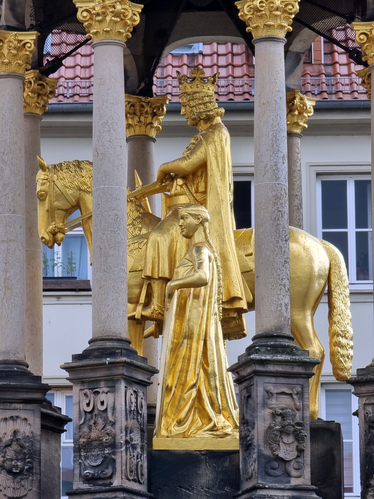
帝國教會體制的奠基與發展，與奧托王朝及薩利安王朝幾位核心君主的政治實踐密不可分。奧托一世（936–973年在位）在936年繼承了薩克森公國與德意志王位，並在查理曼大帝的舊都亞琛舉行了極具憲政象徵意義的加冕典禮。根據薩克森編年史家維杜金德（Widukind of Corvey）在《薩克森事蹟》（Res gestae saxonicae）中的記載，德意志諸公爵在典禮上向奧托宣誓效忠，在解決了美因茨、科隆與特里爾大主教關於祝聖優先權的爭議後，由美因茨大主教希爾德貝特與科隆大主教維格弗里德共同為其塗油祝聖，並儀式性地授予其象徵驅逐基督之敵與守護信眾的聖劍、手鐲和金袍，從而確立了其統治的神聖合法性。然而，奧托一世的早期統治充滿了慘烈的內戰與叛亂，其反對者不僅包括傳統的世俗公爵，甚至還包括其同父異母的兄長坦克瑪（Thankmar）、胞弟亨利（Henry）以及其長子柳多爾夫（Liudolf）。
在這些生死攸關的權力拷問中，奧托一世展現了非凡的政治手腕與軍事運氣。坦克瑪在埃伯施堡（Eresburg）教堂的祭壇前被殺，而其弟亨利在939年聯合法蘭克尼亞公爵埃伯哈德、洛林公爵吉塞爾貝特以及法王路易四世發動大規模叛亂。儘管奧托的軍隊在兵力上處於絕對劣勢，但其部隊在比爾滕（Birten）與安德納赫（Andernach）戰役中取得了不可思議的勝利：法蘭克尼亞的埃伯哈德戰死沙場，洛林的吉塞爾貝特在逃跑時溺斃於萊茵河中，這使得反對力量瞬間土崩瓦解。在當時的宗教語境下，這種以少勝多的奇蹟被廣泛解讀為神意的直接彰顯，證明奧托是上帝親自選定的合法君主。這一神意宣示不僅徹底鞏固了奧托的王位，也為其父亨利一世所確立的「王國不予分割」的憲政改革提供了不容質疑的神聖支持。此後，儘管其弟亨利在941年再次密謀於奎德林堡（Quedlinburg）修道院的復活節慶典上刺殺奧托，陰謀敗露後亨利依然獲得了寬恕，並於947年被授予巴伐利亞公國。奧托一世更在955年的萊赫菲爾德（Lechfeld）戰役中徹底擊敗入侵的馬扎爾人，終結了長達數十年的匈牙利危機，進一步將其聲望推向頂峰，並為其在962年加冕為神聖羅馬皇帝奠定了基石。
在奧托一世的統治後期，其胞弟科隆大主教布魯諾

帝國體制的三大核心運作機制
部落公爵的地緣制衡
德意志王國早期統治的最大結構性威脅，在於傳統部落公爵領（Stammesherzogtümer）的強大割據力量。巴伐利亞、施瓦本、法蘭克尼亞、薩克森與洛林等公爵領的統治者，在歷史上擁有極強的地域凝聚力、世襲繼承權以及獨立的軍事動員力量。為了防止帝國解體，奧托一世採取了激進的重組策略。在939年安德納赫戰役擊敗叛亂公爵後，他直接接管了法蘭克尼亞公國，將其拆散為直接隸屬於王室的小型伯爵領與主教區，從而在物理上消除了這一核心割據勢力。對於其他公國，他則通過「家族化」策略進行控制，將巴伐利亞、施瓦本和洛林等公爵領陸續封賞給其弟亨利、其長子柳多爾夫等王室成員。
然而，這種基於世俗血緣關係的統治模式很快暴露了其局限性。由於世俗貴族家庭不可避免地受到財產繼承、領地擴張以及地方利益的誘惑，即便是王室至親也經常為了爭奪統治權而發起叛亂，例如柳多爾夫因擔憂繼母阿德萊德所生子嗣威脅其繼承權，於953年聯合施瓦本貴族挑起了長達兩年的慘烈內戰。這表明，世俗貴族的封建忠誠具有本質上的不穩定性。相比之下，教會的高級神職人員由於受獨身制約束，無法合法生育繼承人，其控制的龐大財產與權力在其死後必然收歸王室重新分配。因此，將關鍵的世俗行政權與領地收益轉化為不具備世襲野心的教會職位，成為君主對抗部落公爵、維持地緣政治平衡的唯一可行選擇。
教會封建化與宮廷教堂的人才鏈條
奧托-薩利安體制的運作基礎，在於將神聖的宗教職能轉化為具體的封建義務。當一個主教區或帝國修道院（monasterium regale / regia abbatia）出現空缺時，君主會行使其影響力直接提名親信繼任。隨後，君主會通過授職儀式向其授予帝國財產（Reichsgut）以及一系列豐厚的「皇家特權」（Regalia），包括在特定區域內的最高司法管轄權、鑄幣權（Münzregal）、關術徵收權（Zollregal）以及市場設立權（Marktregal）。作為交換，獲得這些世俗財產與特權的主教和修道院長，必須向君主宣誓效忠，承擔封建臣屬義務，並為帝國承擔繁重的「軍事服務」（Heeresdienste）與財政物資支持。在實際運作中，帝國主教區所提供的騎士與戰士，構成了德意志王室軍隊最為穩定和精銳的核心力量。
為了確保這一高層神職群體在政治上的絕對忠誠與行政上的高度專業性，宮廷教堂（Capella regia）發揮了無可替代的「幹部搖籃」作用。宮廷教堂不僅是朝廷內舉行宗教儀式的場所，更是帝國唯一的中央行政與秘書機構。在宮廷中服務的年輕神職人員，全部招募自帝國境內的頂級世俗貴族家庭。他們在宮廷教堂內一邊處理日常文書、草擬皇家特許狀、參與外交談判，一邊在皇帝身邊接受最前沿的統治實踐與神學訓練。當地方教區的主教職位空缺時，君主便會繞過大教堂神職團的常規選舉，直接將這些在宮廷中經過長期考驗、具備高度行政經驗且與皇帝建立起深厚個人情誼的宮廷神職人員派往地方充任主教。這一閉環的人才鏈條，在君主與地方主教之間建立了一條高度緊密、超脫於地方利益之上的忠誠網絡。
巡迴朝廷與空間動態治理
在空間政治結構上，中世紀盛期的德意志帝國呈現出一種獨特的「多中心」特質，並不存在一個長治久安的首都。君主對廣袤國土的統治，是通過「巡迴朝廷」（Reisekönigtum）這種流動式的政府形式來實現的。由於當時的權力極度依賴於個人之間的直接交往與恩庇（即「人際網絡國家」），君主及其朝廷必須不斷在各個行省之間遷移，以親自主持司法審判、解決貴族爭端、宣示王權，並與地方精英維持面對面的政治接觸。
這種獨特的流動治理模式面臨著巨大的後勤與物資挑戰。在道路狀況落後且缺乏大規模物資長途運輸手段的條件下，將全國的稅收與糧食集中運往一個固定的政治中心在經濟上是不可行的，因此朝廷選擇了「主動走向物資」的逆向邏輯——即帶著龐大的隨行人員直接前往生產物資的地方進行就地消耗。為此，沿著帝國的重要交通幹道與通航河流（如萊茵河、美因河、多瑙河），王室建立了一系列相隔大約一日行程（15至19英里）的「皇室行宮」（Pfalzen）網絡，作為朝廷巡迴途中的宿營與行政基地。
然而，僅憑世俗王室領地內的行宮，遠不足以維持朝廷全年的龐大開銷。此時，帝國教會體制提供了決定性的後勤網格支撐。相比於經常懷有割據野心且防範心極強的世俗地方公爵，分佈廣泛、防禦嚴密的主教區和皇家修道院對君主而言是更為安全與可靠的駐紮點。根據帝國法理，這些教會機構必須承擔繁重的「王室給養」義務，包括提供糧食與日常物資的「草料與糧食稅」（Fodrum）以及提供住宿與宮廷款待的「招待服務」（Gistum 或 Servitium Regis）。在巡迴過程中，君主朝廷的隨員構成會根據所處的地理區域而不斷動態調整，地方的主教與貴族會隨時加入或離開朝廷，這使得巡迴朝廷成為一個隨空間移動而自我更新的流動權力中心。可以說，沒有帝國教會體制在全帝國境內提供的點狀後勤網格與物質供養，巡迴朝廷的空間治理將難以為繼。
內部矛盾：政教合一的內耗與改革運動的興起

儘管奧托-薩利安帝國教會體制在維繫中央集權、制衡世俗割據方面取得了顯著的成功，但其運作基礎卻建立在「世俗支配」與「屬靈神聖」這對難以調和的內在矛盾之上。當君主將主教和修道院長深度整合進封建行政與軍事體系時，世俗利益不可避免地侵蝕了教會的屬靈純潔性。世俗君主對高級神職的直接任命（即世俗授職），在實踐中經常演變為赤裸裸的「買賣聖職」（Simony），即地方貴族或宮廷神職人員通過向君主獻納巨額金錢或承諾政治利益，以換取利潤豐厚、擁有廣袤土地和特權的主教職位。這種聖職的商品化，加上許多地方神職人員違反獨身誓言、娶妻納妾的道德墮落，引發了基層天主教徒對教會神聖性的強烈懷疑，進而動搖了以神聖王權為核心的社會秩序根基。
這場道德危機在10世紀中葉催生了以克呂尼（Cluny）修道院和戈爾茲（Gorze）修道院為代表的教會改革運動。改革派強烈呼籲淨化神職人員隊伍、嚴厲打擊買賣聖職與神職娶妻，並要求將教會從世俗封建體系的家長式控制中解放出來。到了11世紀下半葉，隨著這股改革浪潮席捲教廷，原本屬於教規與道德領域的改革迅速演變為一場爭奪基督世界最高主宰權的意識形態大博弈。
這場衝突在皇帝亨利四世（1056–1106年在位）與教宗格列高利七世（1073–1085年在位）之間爆發，史稱「主教敘任權之爭」（Investiture Controversy）。1075年，格列高利七世頒布了激進的《教宗訓令》（Dictatus Papae），正式宣布教宗在世俗與屬靈領域皆擁有至高無上的權力，不僅有權罷黜皇帝，更全面禁止任何世俗君主進行神職授職。亨利四世對此作出了極其強硬的回應：他於1076年1月在沃爾姆斯召集德意志與北義大利的主教，聯名發表聲明，宣布否認格列高利七世的合法教宗地位並要求其退位。格列高利七世隨即予以毀滅性反擊，於同年2月宣布對亨利四世處以開除教籍的極刑，並免除所有德意志臣民對其效忠的誓言。
教宗的絕招在德意志內部引發了災難性的憲政危機。長期對薩利安王朝中央集權不滿的世俗諸侯與地方領主，立刻與教宗結成政治同盟，並威脅亨利四世若不能在一年內解除教籍，他們將徹底廢黜亨利並另立新王。面對皇權徹底瓦解的威脅，亨利四世被迫在1077年1月進行了歷史性的「卡諾莎之行」（Walk to Canossa），身披粗麻悔罪服，在卡諾莎城堡外的冰天雪地中哀求了三天，最終迫使教宗格列高利七世基於神職人員的寬恕義務對其施以赦免。儘管卡諾莎覲見在短期內幫助亨利四世保住了王位，並使他得以回國擊敗政敵立下的對立國王（anti-king），但它在象徵意義上徹底粉碎了早期德意志帝國統治的「神聖君主」神話。世俗君主自此失去了與教宗平起平坐的神聖地位，德意志王權的合法性基石遭受了無法癒合的重創。
帝國教會體制的崩潰：沃爾姆斯協定與權力重組
妥協之路的曲折探索
在格列高利七世與亨利四世去世後，主教敘任權之爭並未平息，而是繼續在歐洲各國延燒。為了解決這場長達數十年的僵局，各方開始嘗試將主教的職能進行理論上的拆分，試圖在神聖的精神權力與世俗的財產特權之間尋求平衡。1107年，英格蘭國王亨利一世與坎特伯雷大主教安塞爾姆達成了《倫敦宗教協定》（Concordat of London），規定國王放棄使用牧杖與戒指等宗教象徵物進行授職的權力，但保留要求新當選的主教在領受世俗教產和封地前向國王宣誓效忠並履行臣屬義務的特權。這一務實的妥協方案，為隨後德意志帝國境內的爭端解決提供了關鍵的制度藍本。
然而，德意志帝國境內的政教關係遠比英格蘭複雜。1111年，急於獲得加冕的皇帝亨利五世與教宗帕斯卡爾二世在蘇特里（Sutri）達成了一項極其大膽且徹底的激進協議：亨利五世同意徹底放棄德意志王室的所有世俗授職權，以換取教宗歸還自加洛林與奧托時代以來，帝國授予教會的所有土地、城堡、鑄幣與關稅等「皇室特權」（Regalia），使其重新收歸國有。這項「蘇特里方案」試圖將政教關係徹底切割，讓教會回歸純粹的屬靈貧窮，讓王權重獲世俗財政基礎。
然而，這一方案在公布後立刻引發了德意志高級神職人員與世俗領主的強烈憤怒與集體抗議，因為這意味著帝國主教將失去其賴以立足的龐大領地與封建特權，淪為一無所有的布道者。在巨大的反對壓力下，該協定無法推行，無奈之下亨利五世悍然出兵囚禁了教宗帕斯卡爾二世，強迫其為其加冕並暫時妥協。但這種以暴力脅迫換來的讓步在隨後被教廷單方面廢除，政教僵局依然未能打破。隨後在1119年發表的茂松峰會（Mouzon Summit）上也因雙方的極度不信任和教宗加利克斯特二世的強硬立場而宣告失敗，亨利五世再次遭到開除教籍的處分。
沃爾姆斯宗教協定的雙重構造
直到1122年9月23日，在經歷了長期的內戰磨損與諸侯調停後，皇帝亨利五世與教宗加利克斯特二世終於在沃爾姆斯達成了歷史性的妥協，簽署了歷史性的《沃爾姆斯宗教協定》（Concordat of Worms，又稱 Pactum Callixtinum）。
該協定正式確立了精神權（Spiritualia）與世俗權（Temporalia）的二元劃分，皇帝公開宣誓放棄使用象徵屬靈精神權力的「牧杖與戒指」進行授職的特權，並保證帝國境內的主教與皇家修道院長由大教堂神職團進行自由的符合教會法（canonical）的選舉。與此同時，教宗也承認皇帝擁有對教區世俗財產和皇家特權（Regalia）的控制權，允許皇帝使用象徵世俗統治權的「權杖」（Sceptre）向當選主教進行世俗財產授職。
然而，為了平息德意志王室對失去教會控制權的擔憂，該協定在德意志本土與帝國的其他領地（義大利、勃艮第）之間設計了截然不同的雙軌操作程序：
| 比較維度 | 德意志領地 (Germany) | 義大利與勃艮第領地 (Italy and Burgundy) |
|---|---|---|
| 選舉監督權 | 皇帝或其指定代表有權親自在場監督選舉過程 | 皇帝不得干預選舉，亦無權親自出面監督 |
| 爭議裁決權 | 當選票出現爭議時，皇帝有權聽取地方主教意見並進行裁決 | 皇帝無權干預任何選舉爭議，裁決權收歸教廷 |
| 授職與祝聖順序 | 先進行權杖授職（世俗），後進行祝聖儀式（屬靈） | 先進行祝聖儀式（屬靈），並在六個月內追加世俗權杖授職 |
| 君主的實質制衡力 | 極強。若候選人不合己意，皇帝可在祝聖前拒絕授予世俗財產 | 極弱。祝聖完成後，皇帝在法理上難以拒絕授予世俗權杖 |
這一雙軌制設計反映了地緣政治的現實博弈。在德意志本土，由於皇帝有權在「祝聖之前」率先進行權杖授職，這意味著如果候選人不符合王室利益，皇帝可以通過拒絕授予世俗財產與特權（Regalia）的方式行使實質上的「否決權」，從而迫使神職團重新選舉，這使德意志王權在本土仍能維持對教會的一定影響力。然而，在北義大利與勃艮第，由於屬靈祝聖必須在世俗授職之前完成，皇帝實際上失去了對候選人的前期甄別權，這導致帝國對義大利半島的政治控制力大為萎縮，為日後北義大利諸城邦的獨立與教宗領地的擴張埋下了伏筆。
體制瓦解與德意志憲政的長期分裂
《沃爾姆斯宗教協定》的簽署，標誌著奧托-薩利安帝國教會體制在制度意義上的徹底崩潰，並對德意志的歷史走向產生了極其深遠且不可逆的憲政後果。
首先，宮廷教堂（Capella regia）作為帝國行政中樞與主教「人才搖籃」的職能宣告終結。由於大教堂神職團自由選舉權的確立，主教的挑選權落入了地方世俗貴族與高級神職階層的手中，皇帝再也無法將自己在朝廷培養的心腹官僚大批安插至各個教區。這直接導致德意志王權失去了最為穩定、專業且高度忠誠的行政與秘書團隊，中央集權的組織基礎不復存在。
其次，德意志王權與地方教會的互利共生關係被徹底斬斷。在新體制下，帝國主教不再是單純依賴皇帝恩賜的「王室官員」，而是轉向了同時對教宗和地方章程負責的「帝國屬地領主」（Reichsfürsten）。在漫長的主教敘任權之爭與德意志內戰中，地方世俗諸侯與大修道院長們成為了最大贏家。王權在內戰中的極度衰落，迫使其不斷向地方諸侯出讓核心權力。這導致了德意志地方司法權的極度碎片化，地方諸侯的法庭不再向皇家權威負責，王室財政因無法有效徵稅而面臨長期匱乏，而廣大德意志農民則因地方割據勢力的擴張而深陷更為沉重的農奴制壓迫之中。
最為深遠的後果在於，德意志徹底失去了走向中央集權民族國家的歷史契機。當同期的法國與英國王權通過壓制地方貴族、建立集權化的世俗官僚體系逐步邁向現代國家時，德意志帝國卻因帝國教會體制的崩潰而無可逆轉地滑向了多極化的聯邦制割據狀態。皇帝在憲政上被降格為一個高度依賴諸侯選舉、缺乏實質財政與軍事控制力的虛位君主。這一由主教敘任權之爭所開啟的「諸侯割據與領地主權」的政治格局，最終在近五百年後的《威斯特伐利亞和約》中得到了法理上的終極確認，決定了德意志直至近代以前無法實現國家統一的獨特歷史命運。
結論：政教分離與中世紀遺產
奧托-薩利安帝國教會體制，代表了中世紀早期政治秩序構建的一次偉大制度嘗試。在缺乏世俗官僚與成熟行政工具的歷史語境下，德意志君主通過巧妙結合王室保護與宗教動態網絡，建立起了一個在時空流動中維繫帝國統一的動態治理架構。然而，這一將「凱撒的歸凱撒，上帝的歸上帝」完全混淆的政教合一模式，注定因其內在的世俗化腐敗與教會自主意識的覺醒而走向歷史的終結。
《沃爾姆斯宗教協定》不僅解決了長達半個世紀的政治僵局，更在客觀上推動了歐洲歷史上精神權力與世俗權力的制度性分離。這種政教分離的憲政實踐，雖然在德意志本土造成了皇權衰落與長期邦國割據的歷史後果，但也為現代國家觀念的誕生與教會法體系的獨立發展奠定了基石。奧托-薩利安帝國教會體制的興衰表明，任何將神聖屬靈威信與世俗統治工具進行深度綑綁的制度設計，雖能在短期內換取集權的紅利，但終將在政治演進與思想改革的雙重夾擊下迎來結構性的重組與瓦解。
引用的著作
- Ottonisches Reichskirchensystem - Mittelalter-Lexikon
- Zum Begriff der ottonisch-salischen Reichskirche - MGH-Bibliothek
- The Reichskirche, Clerical Mobility and the Making of the Ottonian World: The Case of Saint Wolfgang of Regensburg (c.934-994)
- Otto the Great - Wikipedia
- Otto I | Holy Roman Emperor, Saxon King & Conqueror - Britannica
- Otto I the Great - Heritage History
- Otto the Great Biography & Legacy | Who was Otto I? - Study.com
- Episode 4 – A Foe Wherever You Go - History of the Germans
- Lioba Geis: Hofkapelle und Kapläne im Königreich Sizilien (1130–1266) Schriftenreihe Bibliothek des Deutschen Historischen I - perspectivia.net
- Vor 900 Jahren unterzeichnet - Als das Wormser Konkordat den Investiturstreit beendete
- Codex Aureus Escorialensis. DAS SALISCHE KAISER-EVANGELIAR Der Kommentar. Band I Herausgegeben Von Johannes Rathofer Madrid, 1999 - Scribd
- Reichskirchensystem: Ottonisch, Mittelalter & Funktion - StudySmarter
- The Investiture Controversy | Western Civilization - Lumen Learning
- Hofkapelle (Amt) – Wikipedia
- Itinerant court - Wikipedia
- Reisekönigtum – Wikipedia
- Investiture Controversy | History | Research Starters - EBSCO
- Investiture Controversy | Papal Power, Clerical Investiture & Henry IV - Britannica
- Concordat of Worms - Wikipedia
- Investiture Struggle - The Episcopal Church
- 3.1.9 Investiturstreit: Das Wormser Konkordat - Universität Zürich
- Concordat of Worms - Simple English Wikipedia, the free encyclopedia
沃姆斯協約：文本與翻譯
Nr. 5. (4). Wormser Konkordat. - 1122, Sept. 23. MG. Const. I, Nr. 107. 108, S. 159—161. 第5號 (4). 沃姆斯協約。 - 1122年9月23日。 《德意志歷史文獻》（Monumenta Germaniae Historica），帝王與國王憲章與公文，第一卷，第107、108號，第159—161頁。
原始文件來源：Wikisource: Wormser Konkordat
沃姆斯協約：歷史背景與說明
Wormser Konkordat（沃姆斯協約） 的內容，核心內容主要在講述這份簽訂於 1122 年 9 月 23 日的歷史性文件，是如何終結了中世紀政教衝突的高峰——Investiturstreit（敘任權鬥爭）。 以下是該條目的詳細內容總結：
1. 核心定義與背景
- 簽訂時間與人物： 1122 年 9 月 23 日在德國沃姆斯（Worms）公開交換，由羅馬人皇帝亨利五世（Heinrich V.）與教宗嘉禮二世（Calixt II.）共同締結。
- 歷史定位： 這份協約（Pactum Calixtinum sive Heinricianum）正式結束了教宗與神聖羅馬帝國皇帝之間，針對「誰有權任命主教和修道院長」的長期鬥爭。目前皇帝簽署的原件仍完好保存於梵蒂岡。
2. 協約的核心內容（雙方讓步）
協約由兩份對等的特許狀組成，展現了高明的政治妥協：
- 皇帝的特許狀（Heinricianum）：
- 皇帝宣布放棄使用「指環與牧杖」（Ring und Stab，象徵與教會的屬靈婚姻 and 牧職）來授予聖職。
- 皇帝允許帝國境內的所有教會都能進行合乎教會法（Kanonsch）的自由選舉與祝聖。
- 皇帝承諾歸還在紛爭期間被奪走的教會財產，並與教廷締結真正的和平。
- 教宗的特許狀（Calixtinum）：
- 教宗允許德意志王國境內的主教與修道院長選舉，可以在皇帝的見證下進行，但前提是不能有買賣聖職（Simonie）或暴力介入。
- 若選舉出現爭議，皇帝在總主教及同教區主教的建議下，應支持「較明智的一方」（Sanior pars）。
- 最關鍵的設計：皇帝改用「權杖」（Zepter）來授予獲選者世俗特權（Regalia，包含領地收益、收稅權和司法權），獲選者則需依法向皇帝履行封建義務。
3. 地理上的實施差異
條目強調，這份協約在帝國不同地區的運作方式截然不同，這也決定了未來的政治走向：
- 德意志（德國地區）： 獲選者在祝聖之前，就必須先接受皇帝用權杖授予世俗特權。這意味著如果皇帝不滿意，可以扣下權杖，因此皇帝在德國仍保有極大的實質影響力。
- 義大利與勃艮第： 獲選者是在祝聖之後的六個月內，才接受皇帝用權杖授予世俗特權。皇帝在這裡實質上失去了對主教任命的控制權。
4. 歷史意義與影響
- 政教分離的起點： 歷史學界一致認為，沃姆斯協約有效緩解了教廷與帝國的衝突，首次將主教的「屬靈精神權力」與「世俗封建權力」在法律上區分開來。
- 皇帝威權的削弱： 皇帝在這場鬥爭中蒙受了巨大損失。過去皇帝被視為「天主在人間的代理人」的神聖光狂（sakrale Aura）被打破，原本政教一體的「帝國教會體制」瓦解，直接導致後來的斯陶芬王朝（Staufer）必須重新尋找帝國統治權力的理論依據。
條目專有名詞說明
- Investiturstreit（敘任權鬥爭）： 11世紀末至12世紀初，神聖羅馬帝國皇帝與羅馬教廷之間，爭奪高級神職人員（主教、修道院長）任命權的重大政治與宗教衝突。
- Regalia（世俗特權 / 皇家特權）： 屬於君主的王權收益、領地管轄權、收稅權及司法權。在協約中，主教除了是教會的屬靈領袖，在世俗身分上也是帝國的封建領主，這些世俗權利必須由皇帝授予。
- Zepterleihe（權杖敘任/權杖采邑）： 協約中創新的政治儀式。皇帝不再用具有宗教色彩的「指環與牧杖」任命主教，而是改用象徵世俗權力的「權杖」來授予主教其領地上的世俗特權。
- Simonie（買賣聖職 / 西門交易）： 利用金錢、世俗利益去買賣教會神職或屬靈權力的行為，在教會法中被嚴格禁止。
a. Urkunde Heinrichs V.（a. 亨利五世特許狀）
In nomine sanctae et individuae Trinitatis. Ego Heinricus Dei gratia Romanorum imperator augustus pro amore Dei et sanctae Romanae aecclesiae et domini papae Calixti et pro remedio animae meae dimitto Deo et sanctis Dei apostolis Petro et Paulo sanctaeque catholicae aecclesiae omnem investituram per anulum et baculum, et concedo in omnibus aecclesiis, quae in regno vel imperio meo sunt, canonicam fieri electionem et liberam consecrationem.
以神聖且不可分割的三位一體之名。我，亨利，蒙天主恩典的羅馬人皇帝、奧古斯都，出於對天主、神聖羅馬教會及主體教宗嘉禮的愛，並為了救贖我的靈魂，向天主、天主的神聖宗徒彼得與保羅以及神聖天主教會，放棄所有透過「指環與牧杖」進行的聖職授予權；並允許在我王國或帝國境內的所有教會中，皆可進行符合教會法的選舉與自由的祝聖。
- Wormser Konkordat（沃姆斯協約）： 於1122年簽訂，正式結束了神聖羅馬帝國皇帝與教宗之間長達數十年的「敘任權鬥爭」（Investiture Controversy）。這份協約區分了教會的「神職精神權力」與「世俗封建權力」。
- Investitura per anulum et baculum（指環與牧杖敘任權）： 「指環」象徵神職人員與教會的屬靈婚姻，「牧杖」象徵牧養信徒的牧職權力。協約中皇帝放棄了這兩者的授予權，象徵皇帝承認神職的屬靈權力來自教會，而非世俗君主。
Possessiones et regalia beati Petri, quae a principio huius discordiae usque ad hodiernam diem sive tempore patris mei sive etiam meo ablata sunt, quae habeo, eidem sanctae Romanae aecclesiae restituo, quae autem non habeo, ut restituantur fideliter iuvabo.
自這場紛爭開始之初直到今日，無論是在我父親時期或是我自己統治時期，被奪走的聖彼得財產與世俗特權（Regalia），凡在我手中的，我皆歸還給該神聖羅馬教會；凡不在我手中的，我亦將忠實地協助其歸還。
- Regalia（世俗特權 / 皇家權利）： 指帝國境內屬於君主的世俗權力、領地收益、收稅權及司法管轄權。在協約中，主教雖由教會選舉，但其領地上的世俗權力仍需由皇帝授予。
Possessiones etiam aliarum omnium aecclesiarum et principum et aliorum tam clericorum quam laicorum, quae in werra ista amissae sunt consilio principum vel iusticia, quae habeo, reddam, quae non habeo, ut reddantur fideliter iuvabo. Et do veram pacem domino papae Calixto sanctaeque Romanae aecclesiae et omnibus, qui in parte ipsius sunt vel fuerunt. Et in quibus sancta Romana aecclesia auxilium postulaverit, fideliter iuvabo et, de quibus mihi fecerit querimoniam, debitam sibi faciam iusticiam.
所有其他教會、諸侯以及其他神職人員或俗人，在這場戰爭中因諸侯的建議或審判而失去的財產，凡在我手中的，我將予以歸還；凡不在我手中的，我將忠實地協助其歸還。我並向主體教宗嘉禮、神聖羅馬教會以及所有現在或過去屬於其陣營的人，賜予真正的和平。在神聖羅馬教會請求協助的事項上，我將忠實予以協助；對於其向我提出的申訴，我亦將主持公道，給予其應得的公正。
Haec omnia acta sunt consensu et consilio principum, quorum nomina subscripta sunt: Adelbertus archiepiscopus Mogontinus, F. Coloniensis archiepiscopus, H. Ratisbonensis episcopus, O. Bavenbergensis episcopus, B. Spirensis episcopus, H. Augustensis, G. Traiectensis, O. Constanciensis, E. abbas Vuldensis, Heinricus dux, Fridericus dux, S. dux, Pertolfus dux, marchio Teipoldus, marchio Engelbertus, Godefridus Palatinus, Otto Palatinus comes, Beringarius comes.
以上所有條款皆經由諸侯的同意與建議而達成，其簽名附在下方：美因茲總主教阿德爾貝特、科隆總主教 F.、雷根斯堡主教 H.、班貝格主教 O.、施派爾主教 B.、奧格斯堡主教 H.、烏特勒支主教 G.、康斯坦茨主教 O.、富爾達修道院長 E.、亨利公爵、腓特烈公爵、S. 公爵、佩爾托夫公爵、泰波爾德侯爵、恩格爾貝特侯爵、王權伯爵戈特弗里德、王權伯爵奧托、貝倫加爾伯爵。
† Ego Fridericus Coloniensis archiepiscopus et archicancellarius recognovi.
† 我，科隆總主教兼大總理腓特烈，已審閱並確認。
b. Urkunde Papst Calixts II.（b. 教宗嘉禮二世特許狀）
(Die eingeklammerten Worte sind interpoliert.) Ego Calixtus episcopus servus servorum Dei tibi dilecto filio Heinrico Dei gratia Romanorum imperatori augusto concedo electiones episcoporum et abbatum Teutonici regni, qui ad regnum pertinent, in praesentia tua fieri absque simonia et aliqua violentia; ut, si qua inter partes discordia emerserit, metropolitani et conprovincialium consilio vel iudicio saniori parti assensum et auxilium praebeas.
（括號內的字詞為後人篡改/內插之文字。） 我，教宗嘉禮，天主眾僕之僕，允許你——我親愛的兒子亨利，蒙天主恩典的羅馬人皇帝、奧古斯都——德意志王國境內屬於該王國管轄的主教與修道院長之選舉，得在你的見證下進行，惟不得有買賣聖職（Simony）與任何暴力行為。若各方之間出現分歧，你應在總主教及同教區主教們的建議或裁決下，向較明智的一方（Sanior pars）表示贊同並給予支持。
- Simonia（買賣聖職 / 西門交易）： 指用金錢或世俗利益來交易或購買教會神職及屬靈特權的行為。語源來自《聖經·使徒行傳》中企圖用錢向彼得購買聖靈能力的行法術者西門（Simon Magus）。
- Sanior pars（較明智的一方）： 教會法中的一個術語。在選舉出現爭議時，不單純看人數多寡（多數決），而是由資深或更具德望的神職人員集體判定哪一方的決定更具智慧、更符合教會利益。
Electus autem regalia (absque omni exactione) per sceptrum a te recipiat et quae ex his iure tibi debet faciat.
獲選者應透過「權杖」從你手中接受世俗特權（Regalia）（免除一切強索），並依法向你履行因這些特權而對你承擔的義務。
- Sceptrum（權杖）： 象徵世俗的統治權利。皇帝改用「權杖」來授予主教世俗特權（Regalia），以此與教會的「指環與牧杖」做區隔。
Ex aliis vero partibus imperii consecratus infra sex menses regalia (absque omni exactione) per sceptrum a te recipiat et quae ex his iure tibi debet faciat; exceptis omnibus quae ad Romanam ecclesiam pertinere noscuntur.
至於在帝國其他領土內的獲選者，在祝聖後的六個月內，應透過「權杖」從你手中接受世俗特權（免除一切強索），並依法向你履行因這些特權而對你承擔的義務；但已知屬於羅馬教會的所有財產與權利除外。
De quibus vero mihi querimoniam feceris et auxilium postulaveris, secundum officii mei debitum auxilium tibi praestabo. Do tibi veram pacem et omnibus qui in parte tua sunt vel fuerunt tempore huius discordiae.
對於你向我提出申訴並請求協助的事項，我將根據我的職責履行本分，為你提供協助。我向你以及所有在這場紛爭期間屬於或曾屬於你陣營的人，賜予真正的和平。
丕平獻土的地緣政治體系研究：背景、權力機制、法理偽造與深遠歷史影響
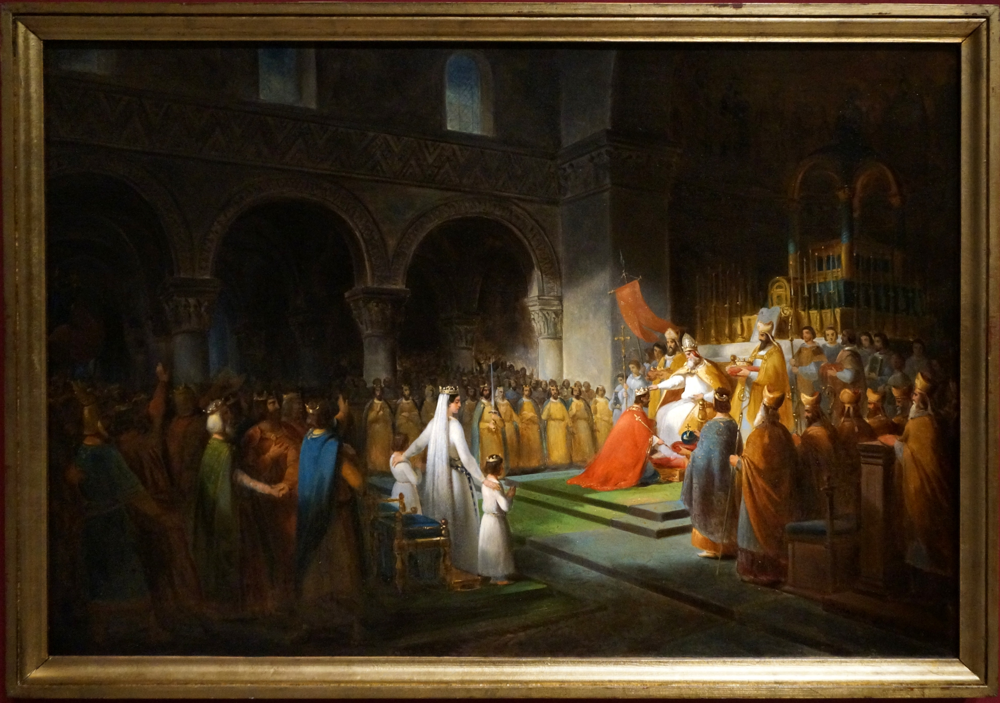
一、 八世紀中葉西方地緣格局之重組與權力真空
西元八世紀中葉，西方基督教世界的地緣政治版圖經歷了一場深遠的結構性重組。在此之前，義大利半島名義上仍處於君士坦丁堡東羅馬（拜占庭）帝國的宗主權之下 。然而，實際的地緣態勢表明，拜占庭帝國在義大利的軍事與行政存在已退縮至一條狹長地帶，僅能勉力維持從行政首府拉文納（Ravenna）到羅馬的控制線 。隨著伊斯蘭勢力在東方與北非的持續擴張，以及帝國內部因「聖像破壞運動」（Iconoclasm）引發的精神與政治分裂，君士坦丁堡在西方邊陲的軍事投射能力嚴重退化，無法履行其對羅馬教廷的保護義務 。
這種防禦真空為北義大利日耳曼日暮興起的倫巴底王國（Lombards）提供了擴張契機 。自西元568年越過朱利安阿爾卑斯山進入義大利以來，倫巴底人經歷了「公爵統治時期」的分裂與王權的重新確立，並在八世紀初利烏特普蘭德（Liudprand）統治時期達到國力鼎盛 。西元749年，兼具軍事野心與擴張意志的阿斯圖爾夫（Aistulf）繼位，迅速打破了原有的均勢 。西元751年，阿斯圖爾夫攻陷拉文納，徹底終結了拜占庭拉文納總督區（Exarchate of Ravenna）的歷史，使羅馬教廷直接暴露於倫巴底的軍事威脅之下 。西元752年，阿斯圖爾夫對羅馬施加沉重的軍事壓力，強硬要求羅馬市民向其臣服，並按人頭每年繳納一枚金幣（gold solidus）的貢金 。面對此等存亡危機，新當選的教宗斯德望二世（Stephen II）與拜占庭使節、皇家機要官約翰（silentiary John）曾試圖通過談判與賄賂手段勸退倫巴底軍隊，但均宣告失敗 。絕望之中，斯德望二世在羅馬街頭組織了莊嚴的祈禱遊行，並將被阿斯圖爾夫撕毀的條約釘在一具十字架上，以此向神明控訴倫巴底人的背信棄義 。
與此同時，阿爾卑斯山以北的法蘭克王國正經歷一場深刻的政權更迭。自西元687年赫斯塔爾的丕平（Pepin of Herstal）確立實權以來，法蘭克墨洛溫王朝（Merovingian dynasty）的君主便淪為毫無實權的傀儡，國家統治權被世襲的宮相（Mayor of the Palace）卡洛林家族所壟斷 。儘管宮相查理·馬特（Charles Martel）在西元732年的普瓦捷戰役中擊退了穆斯林入侵，建立了極高的軍事威望，並實際統治法蘭克長達二十餘年（約718–741年），但他始終未能解決卡洛林家族「有實無名」的合法性危機，甚至在數次羅馬教廷發出求援信號時選擇冷眼旁觀 。其子丕平三世（Pepin the Short，即矮子丕平）繼位後，決心終結這種畸形的政治體制 。西元750年，丕平派遣兩名特使致信教宗匝加利亞（Zacharias），提出一個極具法學與神學意味的詰問：「由毫無實權的人繼續保留國王頭銜，是否合乎情理？」 。
對於正受倫巴底威脅、急需建立強大外部軍事盟友的羅馬聖座而言，這封信函無異於歷史性的契機 。教宗匝加利亞隨即給予政治背書，宣布「擁有實權者稱王更為合適」 。西元751年十一月，在教宗的宗教權威加持下，法蘭克貴族在大會上正式廢黜了墨洛溫王朝的末代「懶王」希爾德里克三世（Childeric III），將其削髮並送入修道院監禁 。丕平則在蘇瓦松（Soissons）由主教們塗油加冕（據後世編年史記載，主持者為聖波尼法爵〔Saint Boniface〕，但此說在現代學術界尚有爭議），正式開創了卡洛林王朝（Carolingian dynasty） 。然而，這種通過實質篡位建立的政權在法蘭克內部仍面臨著墨洛溫擁護者與地方貴族的潛在反抗，丕平極度需要一場更大規模、更具神聖性的宗教儀式來徹底合法化其世襲王權 。
二、 基耶爾濟協定與蓬蒂永會面：神權與王權的盟約締結
西元753年，隨著阿斯圖爾夫對羅馬的軍事逼迫加劇，教宗斯德望二世意識到君士坦丁堡方面已無能為力，遂決定採取前所未有的外交行動：親自跨越阿爾卑斯山尋求法蘭克王國的直接保護，成為歷史上首位跨越阿爾卑斯山的羅馬教皇 。斯德望二世的私人傳記記載，法蘭克宮廷對教宗的來訪給予了極高規格的接待 。西元754年1月6日主顯節當天，雙方在蓬蒂永（Ponthion）的皇家莊園會面 。此時出現了西方政治史與儀式學上極具里程碑意義的一幕：丕平三世親自下馬向教宗俯伏行禮，並為教皇牽引馬韁、步行引路，而身著粗麻衣、頭灑灰點的教宗則在禮拜堂中跪地向丕平懇切請願，懇求法蘭克君主伸張「聖伯多祿與羅馬共和國的正義」 。
這次牽馬儀式實質上是西方「侍馬役」（officium stratoris）的首次歷史實踐 。這一源自羅馬帝國晚期、並被偽造的《君士坦丁贈禮》發揚光大的政治儀式，規定世俗君王在面對天主代表時必須充當馬夫，以示對神聖權威（auctoritas）的絕對臣服 。丕平在蓬蒂永的俯就，不僅在視覺上確立了教皇的精神優越性，更為後世數百年間歐洲世俗君主與教宗的儀式化互動立下了政治先例 。
以下表格整理了中世紀中早期西方君主行使「侍馬役」或「牽馬役」的典型歷史案例，展示了神權對世俗王權在儀式層面的逐步規訓：
| 歷史年份 | 世俗君主（行使主體） | 羅馬教宗（受禮主體） | 儀式地點 | 儀式性質與政治脈絡 |
|---|---|---|---|---|
| 754年 | 法蘭克國王 丕平三世 | 教宗 斯德望二世 | 蓬蒂永（Ponthion） | 歷史首創：確立卡洛林王朝與教廷盟約，為軍事干涉倫巴底做鋪墊 。 |
| 858年 | 皇帝 路德維希二世 | 教宗 尼各老一世 | 羅馬郊外 | 帝國王權對羅馬教廷屬靈最高審判權的公開儀式化確認 。 |
| 1095年 | 德意志共治國王 康拉德 | 教宗 烏爾巴諾二世 | 克雷莫納（Cremona） | 敘任權鬥爭時期，反叛父皇亨利四世的康拉德向教宗尋求政治支持 。 |
| 1131年 | 德意志國王 洛泰爾三世 | 教宗 依諾增爵二世 | 列日（Liège） | 洛泰爾三世親自為教宗扶馬鐙（officium strepae），確認世俗對聖座的效忠 。 |
| 1155年 | 皇帝 腓特烈一世（巴巴羅薩） | 教宗 亞德四世 | 蘇特里（Sutri） | 著名的蘇特里衝突：腓特烈一世起初拒絕牽馬，導致加冕受阻，最終被迫妥協行禮 。 |
| 1209年 | 皇帝 奧托四世 | 教宗 依諾增爵三世 | 羅馬（加冕日） | 神權政治巔峰期，世俗皇帝在加冕當天向教宗行使標準的「侍馬役」 。 |
蓬蒂永會面後，教宗在法蘭克王國度過了西元753至754年的寒冬 。西元754年4月，雙方在基耶爾濟（Quierzy-sur-Oise）召開宮廷大會 。儘管法蘭克內部部分貴族因與倫巴底維持著良好的傳統關係而對遠征義大利持保留態度，丕平仍成功說服了反對勢力，並正式簽署（或口頭承諾）了《基耶爾濟協定》（Agreement of Quierzy） 。丕平承諾，一旦法蘭克軍隊擊敗倫巴底人，將把收復的拉文納總督區、羅馬公國以及彭塔波利斯（Pentapolis）等原本屬於拜占庭帝國的領土，全數「移交」給教皇，使其成為聖伯多祿財產的永久託管人 。
作為教廷對法蘭克承諾的法理回饋，西元754年夏天，斯德望二世在巴黎聖但尼修道院（Monastery of Saint-Denis）為丕平及其妻子、長子查理（後來的查理曼大帝）與幼子卡洛曼舉行了極其隆重的加冕與塗油禮 。教宗在儀式上授予丕平「羅馬貴族」（Patrician of the Romans）的尊貴稱號，並以聖座的屬靈最高權威宣布：任何企圖從丕平家族以外選舉法蘭克國王的行為，都將面臨教會最嚴厲的絕罰（excommunication） 。這一雙向合法化機制（Legitimacy Exchange）在西方憲政史上產生了兩大革命性影響：首先，它確立了「君權神授」（By the Grace of God）的政治學說，使國王的世俗權力直接與天主的意志相掛鉤 ；其次，它在法理上賦予了教宗創制、承認乃至廢黜世俗君主的屬靈權力，為中世紀中後期教廷凌駕於王權之上的政治理論提供了核心依據 。
三、 丕平的義大利軍事遠征與《聖伯多祿認信》的實質獻土
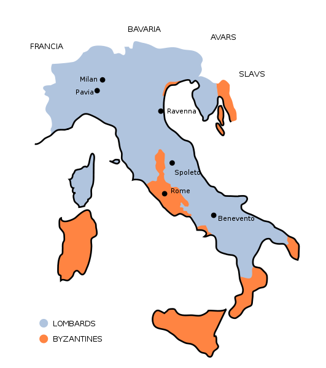
在完成神聖結盟後，丕平迅速發動國家戰爭機器，於西元755年和756年兩度率領法蘭克大軍跨越阿爾卑斯山，對倫巴底王國展開了毀滅性的軍事打擊 。
在755年的第一次遠征中，法蘭克軍隊越過山隘，大敗倫巴底軍主力，一路焚毀莊稼、拔除據點，將阿斯圖爾夫圍困於其首都帕維亞 。面對法蘭克壓倒性的軍事優勢，阿斯圖爾夫被迫求和，簽署了《第一帕維亞和約》，承諾將拉文納及其他強佔的城市交還給羅馬教宗 。然而，這一次和約純屬倫巴底人的緩兵之計。隨著丕平的大軍撤回阿爾卑斯山以北，阿斯圖爾夫不僅拒不履行交接領土的義務，反而於西元756年伊始，派遣重兵將羅馬城重重包圍，大肆焚燒羅馬城外的聖徒墓地與教堂，甚至將聖像投入火中 。
教宗斯德望二世在被圍困的絕境中，向丕平發出了一系列言辭懇切且帶有強烈宗教恐嚇意味的求援信。他在信中甚至以聖伯多祿本人的口吻寫道：
「我，天主的宗徒伯多祿……向你們，最優秀的丕平、卡洛曼與查理三位國王，以及法蘭克全體貴族與軍隊發出呼籲……請不要容許我的羅馬城、我的子民與我的墓地被倫巴底人踐踏。若你們迅速前來拯救，你們將在今生獲得百倍的回報，並在來世獲得永生；若你們遲延不救，你們將被剝奪進入天國的權利。」西元756年春，丕平在狂怒之下再度動員法蘭克全軍，發動了第二次義大利遠征 。法蘭克軍隊以摧枯拉朽之勢再度合圍帕維亞，徹底粉碎了阿斯圖爾夫的軍事野心 。阿斯圖爾夫在法蘭克貴族與主教的調停下，不得不再次向丕平乞求寬恕，被迫接受極其屈辱的《第二帕維亞和約》，被迫臣服於法蘭克的軍事壓力之下，並強制吐出其所有征服的城市與土地 。
此時，地緣政治的法理衝突達到了頂點。得知法蘭克大獲全勝的拜占庭皇帝君士坦丁五世，派遣了兩名帝國高級特使攜帶大量黃金趕赴帕維亞，試圖說服丕平將拉文納總督區及相關市鎮歸還給其法理上的宗主——東羅馬帝國 。然而，丕平表現出了極高的地緣政治清醒，他斷然拒絕了拜占庭的重金誘惑，公開表示：
「沒有任何力量能讓我將這些城市從聖伯多祿的治下奪走。我出兵並非為了取悅世俗的皇帝，而是出於對聖伯多祿的敬畏，為了洗刷我自身的罪業。」西元756年，丕平正式頒布了歷史性的贈予文書，即《聖伯多祿的認信》（Confession of St. Peter） 。丕平指派法蘭克聖但尼修道院院長富拉德（Abbot Fulrad）為全權代表，會同倫巴底官員前往被征服的各個城市，實地執行接收手續 。富拉德每到一處便收集該城的城門鑰匙，並將各城市的行政官員帶往羅馬 。最終，富拉德將這份詳細列明贈予疆域的《認信》詔書，連同二十二座城市的鑰匙，鄭重地放置在羅馬舊聖伯多祿大殿的祭壇上 。這一儀式在法理上完成了領土產權的「神聖讓渡」，標誌著教皇國（Papal States）的正式誕生 。
以下表格詳細羅列了西元756年《丕平獻土》所包含的核心城市與領土範圍，及其在地緣政治上的戰略價值：
| 領土板塊 | 包含之核心城市與區域 | 原法理主權歸屬 | 移交聖座後的戰略與經濟價值 |
|---|---|---|---|
| 拉文納總督區 | 拉文納（Ravenna）、佛利（Forlì）及其周邊農業腹地 | 拜占庭帝國（西元751年被倫巴底攻陷） | 奠定教皇國在北義大利的行政基石，提供波河平原肥沃的糧食產區 。 |
| 彭塔波利斯 | 里米尼（Rimini）、佩薩羅（Pesaro）、法諾（Fano）、塞尼加利亞（Senigallia）、安科納（Ancona）等「亞得里亞海五城」 | 拜占庭帝國 | 掌控中義大利通往亞得里亞海的商業航線與港口稅收，打破倫巴底的海路包圍 。 |
| 羅馬公國邊界外延 | 納爾尼（Narni）、切卡諾（Ceccano）等戰略要塞 | 拜占庭帝國/倫巴底爭議區 | 作為羅馬城直接的軍事防禦屏障，扼守阿庇亞大道等關鍵交通樞紐 。 |
| 艾米利亞與邊境市鎮 | 波隆那（Bologna）、費拉拉（Ferrara）等部分區域 | 倫巴底王國直轄領土 | 切斷北義大利倫巴底王國與其南部半獨立公國（如斯波萊托、貝內文托）之間的地理聯繫 。 |
四、 《君士坦丁贈禮》的偽造陰謀與法理合法化運作
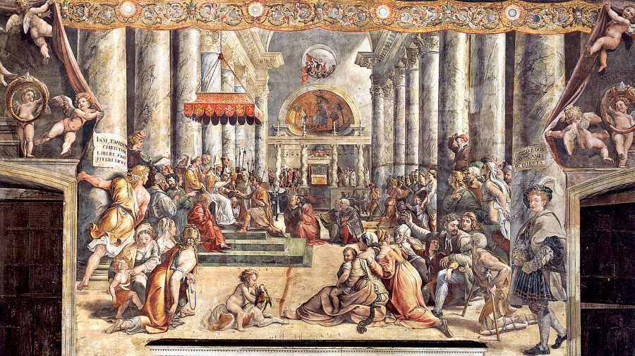
儘管《丕平獻土》在實質上確立了教宗在中義大利的統治，但從羅馬法的法理角度來看，這一行為存在著根本性的合法性缺陷 。丕平將本屬於拜占庭帝國的領土贈予教宗，在當時的帝國法律架構下屬於典型的「非法處分他人財產」 。為了對抗君士坦丁堡方面的強烈外交抗議，並在西方各國面前樹立羅馬聖座的絕對主權，教廷內部的神職人員（極可能是拉特朗宮聖救主大堂的某位書記官）在西元751至756年間，利用丕平篡位與遠征的混亂時局，精心偽造了中世紀歷史上最具爭議的法理文件——《君士坦丁贈禮》（Donation of Constantine，拉丁語：Donatio Constantini） 。
這份偽造的文件採用了羅馬帝國詔書的格式，宣稱由四世紀的羅馬皇帝君士坦丁大帝親自頒佈 。詔書詳細記載了一個神話：君士坦丁在皈依基督教前罹患嚴重的麻風病，在接受羅馬教宗西爾維斯特一世（Sylvester I）的洗禮與神蹟醫治後痊癒 。皇帝為了表達感激，遂決定將羅馬城、整個義大利半島以及帝國西部所有省份的世俗統治權，悉數讓渡給西爾維斯特一世及其聖座繼承者，而皇帝本人則遷都至東方的君士坦丁堡，因為「世俗的皇帝不配在神聖教權的所在地行使統治」 。
這份偽造詔書的政治運作機制極其精準地契合了教廷在八世紀的地緣需求：
- 重塑財產性質：它將丕平的軍事贈予，重新包裝為對教廷「既有主權」的「恢復」（restitution） 。這意味著丕平並非施予者，而僅僅是扮演了天主的工具，將原本就屬於聖伯多祿的遺產物歸原主 ；
- 消解帝國聲索：它從根本上切斷了拜占庭皇帝對拉文納與羅馬的主權聲索，因為早在四世紀，西部的合法統治權就已由君士坦丁大帝讓渡給了羅馬教會 ；
- 擴張教權邊界：它不僅確立了教宗在義大利的世俗統治，還宣稱羅馬教廷對安提阿、亞歷山大、耶路撒冷和君士坦丁堡四大牧首區擁有精神宗主權 。 教宗斯德望二世在西元753年底跨越阿爾卑斯山與丕平會晤時，極可能出示了這份偽造文書的初稿，以說服不識字的法蘭克國王相信教廷對拉文納等地的神聖權利 。到了西元778年，教宗哈德良一世（Hadrian I）在致查理曼的信函中，更是公開援引君士坦丁大帝的慷慨先例，督促查理曼效法其父丕平，進一步擴大對教廷的土地捐贈 。
然而，這份維繫了教皇國近七百年主權正當性的黃金法理依據，最終在文藝復興時期的理性之光下走向崩潰 。西元1433年，德意志神學家庫薩的尼古拉（Nicholas of Cusa）在其著作《論天主之協和》（De concordantia catholica）中，率先以系統性的學術方法指出，在君士坦丁時代的所有教會文獻中均找不到該「贈禮」的任何記載，且中世紀早期的歷任教宗在實際運作中依然承認羅馬皇帝的最高世俗權威 。西元1439至1440年間，義大利人文主義學者、拉特朗大堂教士洛倫佐·瓦拉（Lorenzo Valla）撰寫了著名的文獻學巨著《論君士坦丁贈禮之偽造》（De falso credita et ementita Constantini Donatione declamatio），運用嚴謹的歷史語言學方法，對該文本進行了毀滅性的批判 。
瓦拉指出，詔書中使用了大量四世紀羅馬帝國根本不存在的「蠻族」與「中世紀高地」拉丁語詞彙（例如將「封地」稱為 feudum，並頻繁使用羅馬人未曾使用的 satrap 等詞彙） 。瓦拉的這項學術突破具有極強的政治現實背景：他當時正擔任阿拉貢國王阿方索五世（Alfonso V of Aragon）的祕書，而阿方索五世正因那不勒斯王國的主權歸屬與教宗尤金四世（Eugenius IV）處於戰爭狀態 。瓦拉通過證偽該文件，直接剝奪了教宗干涉世俗王權更迭的法理基礎 。儘管教廷隨即將瓦拉的著作列入《禁書目錄》，但隨著西元1517年烏爾里希·馮·胡滕（Ulrich von Hutten）正式出版該書，這一偽造事件迅速成為新教改革運動攻擊羅馬教廷「建立在謊言之上」的致命武器 。
以下表格對《君士坦丁贈禮》從偽造到證偽的歷史軌跡進行了系統性梳理：
| 歷史階段 | 大致年代 | 關鍵歷史人物 | 法理與政治運作本質 |
|---|---|---|---|
| 偽造與起草期 | 約 751年－756年 | 拉特朗宮神職人員 | 合法化動機：配合斯德望二世與丕平的談判，將法蘭克武力征服的土地轉化為「收復既有教產」 。 |
| 實踐與擴張期 | 8世紀－14世紀 | 教宗 哈德良一世、格列高利七世等 | 政治工具化：成為教皇國對抗神聖羅馬帝國皇帝、確立「教皇至上權」（Papal Supremacy）的基石 。 |
| 初步質疑期 | 1433年 | 庫薩的尼古拉（Nicholas of Cusa） | 文獻學初探：指出早期教會史家（如尤西比烏斯）對此隻字未提，且八世紀前教宗實質臣服於皇帝 。 |
| 學術證偽期 | 1439年－1440年 | 洛倫佐·瓦拉（Lorenzo Valla） | 文獻學定論：運用語言學與歷史學鐵證，指出文本中含有中世紀晚期拉丁語及嚴重時間錯置 。 |
| 公開承認期 | 1588年－1929年 | 樞機主教 巴羅紐斯、教宗 庇護十一世 | 歷史終局：16世紀末教廷史家在《教會編年史》中承認偽造；1929年簽署《拉特朗條約》時教廷做出公開法律確認 。 |
五、 政教關係的深層轉型與中世紀教權的世俗化權力機制
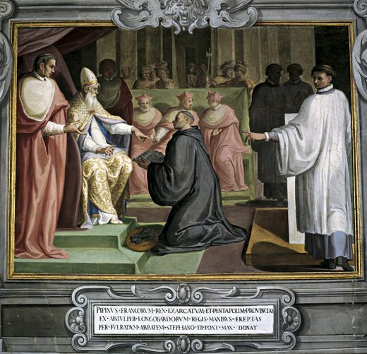
《丕平獻土》不僅僅是一次領土移交，它實質上開啟了歷史學界所稱的「法蘭克教皇時代」（Frankish Papacy，西元756-857年），徹底終結了此前深受希臘文化與君士坦丁堡宮廷控制的「拜占庭教皇時代」 。這一轉型深刻地重塑了西歐中世紀權力運作的雙重機制：
1. 盟約的延續與卡洛林帝國的確立
丕平的領土贈予在其繼任者手中得到了進一步的鞏固與擴張。西元768年丕平去世後，其長子查理曼大帝（Charlemagne）繼位 。面對倫巴底末代國王德西德里烏斯（Desiderius）對羅馬的再度入侵，查理曼於西元773-774年親自率兵越過阿爾卑斯山，一舉攻陷帕維亞，徹底兼併了倫巴底王國 。西元774年和778年，查理曼兩度公開確認並擴大了其父丕平的獻土範圍 。西元817年，查理曼的繼任者「虔誠者」路易（Louis the Pious）與教宗簽署《路易協定》（Pactum Ludovicianum），再度以帝國法律的形式確立了教皇國的領土主權 。
這一「政教盟約」的最高潮發生於西元800年的聖誕節，教宗利奧三世在羅馬聖伯多祿大殿將皇冠戴在查理曼頭上，宣布其為「羅馬人的皇帝」，標誌著西羅馬帝國在卡洛林家族治下的正式復活 。然而，伴隨著查理曼帝國在西元843年《凡爾登條約》（Treaty of Verdun）中被三分為西法蘭克（Francia Occidentalis）、東法蘭克（Francia Orientalis）與中法蘭克（Francia Media），中法蘭克國王洛泰爾一世雖然繼承了羅馬城與帝國皇冠，但其世俗保護力量的急劇碎片化，使教皇國再度陷入了無休止的義大利地方封建貴族門閥的控制與血腥爭奪之中 。
2. 政教雙方的對立解讀與結構性張力
從權力機制的本質來看，丕平獻土從一開始就孕育著教權與王權互不妥協的雙重詮釋，這成為中世紀中晚期無數政治衝突的根源 ：
- 教廷神學家的詮釋：他們堅稱，丕平向教宗求取篡位意見，表明世俗王權必須經由聖座的宗教裁決才具備合法性 。教皇通過塗油與加冕創制了法蘭克國王與羅馬皇帝，因此，屬靈權力自然高於並監督世俗權力，教皇有權因君主不義而廢黜其王位 ；
- 法蘭克君主與德意志皇帝的詮釋：他們則持完全相反的觀點，強調教宗在面對倫巴底威脅時，是扮演了「懇求者」與「乞援者」的角色投奔法蘭克宮廷 。國王通過武力征服並慷慨地將土地「賜予」教宗，因此國王是教廷的實質恩主與保護者 。丕平及其後繼者在實際運作中，幾乎從不使用教皇授予的「羅馬貴族」頭銜，且在獻土後再未親自返回羅馬，表明世俗君主自視為教廷的宗主而非附庸 。 這種結構性的認知偏差，在隨後的幾個世紀中，演變為席捲整個西歐的敘任權鬥爭（Investiture Controversy）以及教皇派（Guelphs）與皇帝派（Ghibellines）的長年內戰，深刻地消耗了德意志帝國與羅馬聖座的政治資源 。
3. 教權世俗化與「教皇國」的治理困境
丕平獻土在物理上創造了一個實體國家，但也將羅馬聖座推入了世俗行政與世俗利益的泥淖 。斯德望二世的繼任者、其胞兄教宗保祿一世（Paul I，西元757-767年在位）繼位後，雖然極力維持法蘭克同盟以對抗倫巴底與拜占庭，但其統治體制已高度依賴世俗行政手段 。當保祿一世於767年去世後，羅馬教廷內部爆發了極其血腥的分裂：尼庇公爵托托（Toto of Nepi）率軍攻入羅馬，強行將其未受神職的兄弟扶上王位，即對立教宗君士坦丁 。在殘酷的宮廷鬥爭中，托托於768年在衝突中被殺，而對立教宗君士坦丁則被挖去雙眼、割去舌頭並囚禁於修道院 。
為了防止世俗貴族徹底綁架聖座，西元768年繼位的教宗斯德望三世（Stephen III）不得不進行制度改革，於769年召開拉特朗會議，首次明文規定限制教宗選舉權，規定只有羅馬的「樞機司鐸」（cardinal-priests）與「樞機執事」（cardinal-deacons）才擁有被選舉權，這成為現代梵蒂岡樞機主教團制度的歷史雛形 。儘管如此，教皇國在面對遼闊且多山的中義大利領土時，始終未能建立起高效的中央集權官僚體制，不得不長期仰賴地方主教或世俗封建領主進行鬆散的管理，這導致教皇國在其千年的歷史中，長期處於內部叛亂、門閥割據與財政困窘的亞健康狀態 。
六、 結論與歷史漣漪效應：從查理曼帝國到拉特朗條約
丕平獻土是西方中世紀歷史上最具地緣政治塑造力的事件之一。它絕非一場單純的宗教虔誠悲憫，而是一次神權與王權在權力真空背景下，基於高度現實利益考量而達成的雙向政治交易 。法蘭克新興的卡洛林王朝通過出讓部分義大利領土的實質治權，換取了羅馬教廷對其篡奪王位、延續世襲特權的神聖合法性背書 ；而面臨軍事滅頂之災的羅馬聖座，則通過出售屬靈支配權，一躍成為擁有實體疆域與世俗主權的世俗君王，徹底擺脫了東方拜占庭帝國的束縛，重塑了西方基督教世界的政治格局 。
然而，這一地緣政治的「偉大創舉」在隨後的歷史進程中，展現出了極其複雜的雙刃劍效應。
在積極層面，教皇國的建立為羅馬聖座提供了一個相對獨立的政治防禦縱深，保障了天主教會在面對世俗王權的不斷擴張時，能夠維持其屬靈指導的獨立性與超越性 。在消極層面，教廷的世俗化使其不可避免地捲入了中世紀晚期與文藝復興時期歐洲列強的領土爭奪、權術陰謀與軍事戰爭 。為了維持對教皇國領土的控制，十五世紀至十六世紀的教宗們（如亞歷山大六世、尤利烏斯二世等）甚至親自披甲上陣，導致教廷的道德权威在腐敗與戰火中消耗殆盡，直接催生了十六世紀席捲歐洲的新教改革運動 。
同時，地處義大利中部的教皇國，在地理上將義大利半島攔腰切斷 。在隨後的千年間，教廷既無足夠的軍事力量吞併整個半島，又擁有足夠的國際外交與宗教資源引進外部強權（如法國、西班牙、奧地利）來打擊任何企圖統一義大利的本土世俗力量 。這使得義大利半島長期處於四分五裂的「地理名詞」狀態，直至十九世紀中葉義大利統一運動（Risorgimento）的興起 。
西元1870年9月20日，隨著普法戰爭爆發、守衛羅馬的法軍撤回，義大利王國軍隊攻破羅馬城牆，宣告了教皇國領土統治的徹底終結 。然而，丕平獻土留下的「教皇必須擁有主權以保障屬靈獨立」的政治神學遺產，並未隨之湮滅 。經過長達半個多世紀「梵蒂岡之囚」的政治僵局，西元1929年，教宗庇護十一世與義大利政府簽署了《拉特朗條約》 。根據該條約，教廷正式承認羅馬為義大利首都，而義大利政府則承認教宗在羅馬城內面積僅為0.44平方公里的「梵蒂岡城國」擁有完全、獨立且不可侵犯的世俗主權 。
今天，當世人矚目於地圖上這個微型卻擁有巨大全球精神影響力的梵蒂岡城國時，其背後的歷史主權邏輯，依然清晰地迴響著西元756年，法蘭克君主丕平與教宗斯德望二世在阿爾卑斯山兩麓共同締結的地緣政治盟約遺音 。
引用的著作
- Donation of Pepin - Epic World History, Link
- Donation of Pippin | Charlemagne, Papal States & Italian History - Britannica, Link
- 是什麼因素阻止了中世紀教皇國在丕平獻土到義大利統一之間進行領土擴張？ - Reddit, Link
- Donation of Pepin - Wikipedia, Link
- Pépin the Short | History | Research Starters - EBSCO, Link
- pepin - Order of the Crown of Charlemagne, Link
- 'Donation of Constantine': A Medieval Forgery for Authority ... - Brewminate, Link
- The Donation of Pepin | The Eighth Century and All That - 8th Century, Link
- Frankish Papacy - Wikipedia, Link
- “Et tenentes frenum equi ipsius …”, Link
- The growth of Papal government in the Middle Ages: a study in the ideological relation of clerical to lay power mp48sc86b - DOKUMEN.PUB, Link
- The New International Encyclopædia/Donation of Pepin - Wikisource, Link
- Donation of Constantine Is Exposed | History | Research Starters - EBSCO, Link
- Donation of Constantine - Wikipedia, Link
- The biggest forgery in history: The donation of Emperor Constantine to the Church, Link
- The Donation of Constantine, Link
- Lorenzo Valla Proves that the Donation of Constantine is a Forgery - History of Information, Link
- 丕平献土献的是哪些土地丕平献土的结果和影响 - 历史故事 - 娱乐, Link
Exported at: 2026-06-01T16:21:49.852Z
聖神統治與知識復興：卡洛林王朝教育基建、制度體系及其深遠歷史遺產之研究
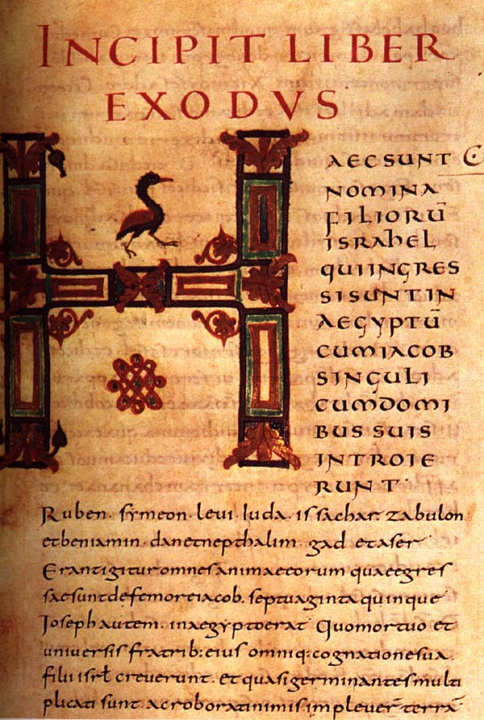
一、 帝國治理與信仰正確：卡洛林教育改革的政治與神學雙重邏輯
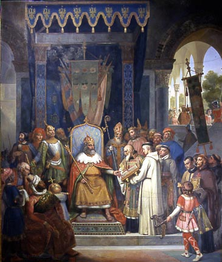
在八世紀末至九世紀初的西歐，卡洛林王朝的崛起重塑了中世紀初期的政治版圖。查理曼大帝在繼承其父矮子丕平與羅馬教廷緊密結盟的政治遺產後，深刻體認到，僅憑軍事征服不足以維持一個疆域等同於今日歐盟規模之龐大帝國的長治久安，必須透過文化與信仰的深層整合來確立統治的合法性並凝聚臣民認同。在此之前，西歐的教育體系處於極端荒蕪的狀態。墨洛溫王朝時期的宮廷學校主要功能僅限於青年貴族的軍事體能訓練與宮廷禮儀指導，缺乏系統性的文學、修辭或神學教育。世俗官僚階層讀寫能力普遍缺失，而作為社會知識載體的神職人員，其文化素質亦嚴重退化，神職人員在執行洗禮時因拉丁語文法錯誤而產生教義誤解，或混淆基本聖經人物的現象屢見不鮮。
這種普遍的文化失序與語言墮落，在查理曼及其知識精英圈看來，不僅是行政效率的絆腳石，更是對帝國精神安全的致命威脅。倘若神職人員無法正確讀寫拉丁文，便無法精確解讀神聖經典，甚至在代帝國向神祈禱時，因語法紕漏而歪曲神意，這在普遍具有末世論憂患意識的卡洛林時代被視為可能招致天譴與帝國覆滅的嚴重罪愆。因此，查理曼以帝國君主與「神聖監督者」的雙重身份，發起了一場以「正確」（correctio）為終極目標的教育與宗教變革。
這場變革的核心方針具體化為兩部里程碑式的帝國法令。第一部是約於公元七百八十年代至八百年代間頒布的《修學書簡》（Epistola de litteris colendis），這封致富爾達修道院長巴古夫的公函，系統性地闡述了「知識先於品行」的卡洛林治理哲學。查理曼在信中強調，雖然合乎道德的實踐至關重要，但正確的認知與知識是實踐道德的先決條件，神職人員作為「真理的特殊僕人」，必須杜絕語言上的粗鄙與謬誤，以免導致神聖智慧的理解偏差。第二部則是公元七百八十九年頒布的《大誥》（Admonitio Generalis），這部詳盡的帝國法律明確命令，帝國境內的所有主教座堂與修道院必須建立學校，向所有有能力的男孩提供閱讀、寫作、算術、唱頌與語法的系統性培訓，並確保所使用的教學書籍皆經過嚴格的校對與修正。自此，教育改革從宮廷的文化倡議上升為國家層面的強制性法律義務。
二、 軟硬體基建的協同建構：手抄室、書寫革命與圖書館體系
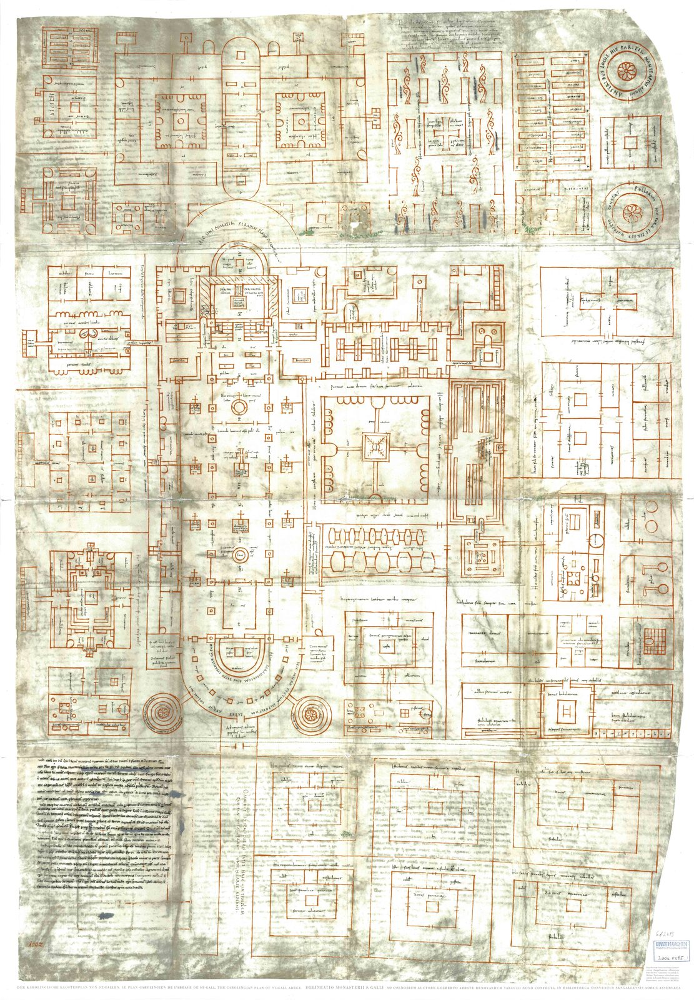
卡洛林王朝教育改革之所以能落實為持久的制度遺產，得益於帝國在軟體（書寫體與排版協議）與硬體（手抄室、圖書館與高規格文獻）基建上的雙重協同建構。在硬體空間層面，修道院與主教座堂內的「手抄室」（Scriptorium）成為知識生產與複製的工業化車間。在圖爾的聖馬丁、科爾比、富爾達、賴興瑙與聖加侖等大型修道院中，手抄室的運作高度專業化，配備了專門的皮紙製作工匠、校對員、裝飾畫師（Illuminator）與裝訂工。手抄本的生產是一項極為昂貴的資本投入，不僅需要耗費數以百計的綿羊皮（羊皮紙）或牛皮（牛皮紙），在製作如皇家禮儀書籍等奢侈抄本時，還需投入黃金、白銀墨水以及象徵帝國權威的紫色染料。
在書寫技術（軟體）層面，卡洛林文藝復興實現了西方書寫史上最具革命性的技術飛躍。此前，西歐各地的區域性書寫體極其混亂且難以辨認，抄寫員延續了古希臘與羅馬時期的「連寫體」（scripta continua），單詞之間不留空格，且缺乏標準標點符號，這極大地阻礙了閱讀速度，並增加了文本誤讀的機率。為了解決這一技術瓶頸，科爾比修道院的僧侶於七百七十年代率先進行字體實驗，隨後在宮廷學校校長阿爾琴的積極推廣下，誕生了「卡洛林小草體」（Carolingian minuscule）。這種新字體採用嚴格的四線制規範，字形圓潤、規整、字母互不相連，並伴隨著重大閱讀協議的創新：系統性引入單詞間的空隙（scripta discontinua）、統一使用句號與逗號、新創問號、以及利用倒分號與語氣詞（如 et, si）來標記文本重音與語調變化。這些標準化排版協議不僅使默讀與公共朗讀變得流暢精確，更由於字體緊湊、利用率高，極大地節省了昂貴的皮紙媒介，實現了中世紀早期「知識傳播的降本增效」。
在圖書館與文獻基建的實踐中，卡洛林學者展現出卓越的體系化管理思維。雖然當時的圖書館規模在現代看來僅有數十至數百冊（最龐大者約五百卷），但其藏書價值連城，甚至被列入國王與貴族的遺囑財產清單中，例如弗留利公爵埃伯哈德在其遺囑中對其圖書館藏書進行了詳細的分割指定。為了妥善維護與檢索這些財產，賴興瑙的雷金伯特（Reginbert）、科爾比的哈多德（Hadoard）以及聖加侖的「結巴子」諾特克（Notker Balbulus）等傑出圖書館員，開始編纂詳細的圖書目錄（如賴興瑙修道院八二一至八二二年的目錄），將圖書劃分為聖經部、會規部、佈道集、聖徒傳、語彙集、聖言錄以及古典作家部等細分板塊。在圖書館與抄寫室的日常靜默運作中，修士們甚至發展出精細的手勢語言系統——《修道院手勢指南》（Monasteriales Indicia），例如在坎特伯雷基督教堂，修士們無需開口，僅憑特定的手勢便能精準要求索取漸進聖歌集、聖禮書、聖經、殉道史、詩篇集、讚美詩集或《聖本篤會規》。
下表系統性對照了卡洛林帝國時期核心知識生產與教育基建網絡的空間分布與技術成果：
| 機構名稱與地理區域 | 館藏規模與物理基建特色 | 主導學者與管理官僚 | 代表性文獻與基建軟硬體技術成果 |
|---|---|---|---|
| 亞琛宮廷學校與圖書館 (Palace School, Aachen / 德意志西部) | 帝國文化中樞，設有皇家圖書館，廣泛搜求羅馬、拉溫納與蒙特卡西諾手稿。 | 查理曼本人（David）、校長阿爾琴（Flaccus Albinus）、艾因哈德。 | 製作黃金墨水與帝國紫皮的奢侈手抄本，如《戈德斯卡爾克福音書》與《洛爾施福音書》，展現古典與拜占庭藝術融合。 |
| 圖爾聖馬丁修道院抄寫室 (Marmoutier Abbey, Tours / 法蘭西西部) | 規模宏大的手抄室與校勘中心，與宮廷圖書館形成緊密的文獻交換機制。 | 阿爾琴（自796年擔任修道院長並重組抄寫室）。 | 製作大量標準化的「圖爾聖經」（Tours Bibles）與《武 Vulgate 譯本》校勘本，作為全帝國教堂與學校的權威範本。 |
| 科爾比修道院手抄室 (Corbie Abbey / 法蘭西北部) | 歷史悠久的手抄實驗室，與愛爾蘭盧克瑟伊修道院具有深厚技術淵源。 | 館員哈多德（Hadoard）。 | 研發並推廣卡洛林小草體（Caroline minuscule）雛形，保存《德意志古文獻彙編》及早期古典人文手稿。 |
| 聖加侖修道院圖書館 (Abbey of St. Gall / 瑞士北部) | 保存有著名的九世紀修道院理想平面圖（標有專門圖書館與抄寫室空間），藏書依學科嚴格分類。 | 諾特克·巴爾布魯斯（Notker Balbulus，負責目錄修正與圖書註記）。 | 製作《聖加侖福音書》（Sintram組群），採用厚塗顏料的晚期古典拜占庭風格，編纂大規模法律與文法詞彙集。 |
| 賴興瑙修道院圖書館 (Reichenau Abbey / 德意志南部) | 博登湖畔的學術重鎮，擁有極為完備的圖書目錄及先進的文本圖解標註系統。 | 圖書館長雷金伯特（Reginbert）。 | 製作大量帶有幾何與空間關係直觀圖表（Diagrams）的文獻，對聖經難詞進行系統性語彙注釋（Glosses）。 |
| 富爾達修道院學校與圖書館 (Fulda Abbey / 德意志中部) | 帝國東部薩克森宣教邊疆的知識堡壘，藏有極為豐富的神學與古典手抄本。 | 巴古夫院長（Baugulf）、赫拉巴努斯·莫魯斯（Hrabanus Maurus）。 | 作為查理曼《修學書簡》的直接接收與推廣地，生產大量釋經學著作與神職人員培訓教材。 |
三、 跨國學者網絡與社會階層分流：師資隊伍與學生組成之空間社會學
查理曼深知帝國本土學術人才的匱乏，因而展現出宏大的國際化胸懷，利用其政治影響力與慷慨的資助，在亞琛宮廷周圍編織起一張跨越英吉利海峽、庇里牛斯山脈與阿爾卑斯山的跨國學者大師網絡。
在師資隊伍的構建上，卡洛林宮廷學校實質上扮演了「帝國高等研究院」的角色。其核心領袖約克的阿爾琴來自盎格魯-撒克遜的學術重鎮，他不僅將英格蘭精湛的文法與校勘傳統帶入宮廷，更將愛爾蘭修道院在歐洲大陸動盪時期所完整保存的古典人文火種重新播撒。在亞琛，查理曼與這群學者建立了一個高度自治、充滿人文討論氛圍的半私人學術圈（Palace Academy），成員們皆使用典雅的古典或聖經化名：阿爾琴自稱為「弗拉庫斯·阿爾比努斯」（Flaccus Albinus），查理曼自稱為聖王「大衛」（David），艾因哈德自稱為「貝塞爾」（Beseleel），這種命名政治昭示著他們自視為羅馬古典人文與以色列神聖王權的正統雙重繼承者。
除阿爾琴外，這支國際化師資隊伍還包括：來自比薩的語法學家彼得，他親自指導查理曼本人的拉丁語學業；倫巴底歷史學家保羅執事，他因其兄參與反抗查理曼的叛亂被捕而前往亞琛上書陳情，其展現的非凡才學令查理曼折服，遂被留任宮廷教師，期間他編纂了奠定帝國禮拜規範的標準佈道集，完成了《倫巴底人史》與古羅馬文法學家費斯托斯著作的簡編；西哥德神學家奧爾良的狄奧多夫，他深入參與了卡洛林帝國反對拜占庭聖像破壞運動的教義辯論，並在地方教育立法中推波助瀾；以及來自愛爾蘭的「學者群」（scholastici），如克萊門特、詩人約瑟夫與科學僧侶東加爾，後者以其精湛的物理與天文學知識，向國王系統性講授天體運行軌道與日食原理。
在學生組成與社會分流層面，卡洛林教育基建展現出精密的階層化特徵與分流機制。改革並非試圖建立一個烏托邦式的平等社會，而是旨在為帝國的官僚機器與神學威權精準培育不同層級的執行者。
下表系統性梳理了卡洛林教育體系的社會階層化與功能分流結構：
| 學校層級 | 主要受眾與學生組成 | 核心教學大綱與培養重點 | 運作機制與經費來源 |
|---|---|---|---|
| 亞琛宮廷學校 (Scola Palatina) | 皇室皇子與公主、高級貴族子弟、帝國行政官員預備隊、少數極具天賦的下層平民。 | 進階「七藝」（注重修辭、辯證法與天文學），旨在培養兼具文學素養與神學正統的「帝國高級官僚與行政參謀」。 | 皇家直接財政資助，設於皇家宮廷內，與國王日常生活緊密結合。 |
| 主教座堂學校 (Cathedral Schools) | 教區世俗神職人員預備生、教區官僚、世俗貴族子弟。 | 三藝（重語法與修辭）、基礎計算（Calendrical Computus）與葛利果聖歌唱頌，側重教區行政與禮儀服務。 | 由主教轄區財政撥款，受主教與大教堂校長（Chancellor）的嚴格行政監督。 |
| 修道院學校（內設） (Monastic Schools - Interni) | 獻身兒（Oblates），即從小被父母送入修道院、立誓終身為僧侶的兒童。 | 極端嚴格的《聖本篤會規》閱讀訓練（每日2至3小時，每週達20至26小時）、高階釋經學與抄寫技術。 | 修道院自身地產收益與信徒捐贈，學生日常起居完全封閉在修道院內部。 |
| 修道院學校（外設） (Monastic Schools - Externi) | 地方世俗子弟、不準備發願成為修士的自由民子弟。 | 基礎讀寫、實用算術與基督教基本教義（天主經、信經）。 | 修道院設立的外部開放課堂，與修道院核心靈修空間嚴格物理隔離，以防干擾修士清修。 |
| 教區/鄉村學校 (Parish / Village Schools) | 地方普通村民、自由民及農奴子弟，男女均可參與。 | 最基礎的拉丁文識字、基礎祈禱文背誦、基督教基礎道德教育。 | 根據七百九十七年法令，地方祭司與修士必須免費提供此類教育，禁止收取學費。 |
| 女子修道院學校 (Nunneries / Female Monasteries) | 貴族世俗女性、修女預備生。 | 七藝基礎、精緻紡織（Opus Anglicanum）、高階拉丁文讀寫與書籍抄寫。 | 由女子修道院（如雪爾、茹阿爾等）自主運營，女性學者在此承擔獨立的教學與抄寫管理職責。 |
這套系統在日常運作中充滿了中世紀早期特有的物理與行為細節。例如在封閉式的修道院學校中，學童的生活極其嚴苛，教師的肉體懲罰（笞刑）是維持紀律與推動死記硬背的常規手段。根據一則流傳下來的卡洛林修道院學校軼事，一群因頑劣而自知即將面臨學校導師「嚴厲鞭笞」（severe lash）的學生，在恐懼與憤怒之下，竟然合謀縱火燒毀了整個修道院以圖逃避懲罰，這生動地揭示了高強度基建推動下地方教育實踐中的階級張力與對立。
與此同時，女性在這一基建體系中絕非單純的被動接受者，而是知識生產與傳播的重要主體。以雪爾（Chelles）、茹阿爾（Jouarre）、薩金根（Säckingen）、雷米爾蒙（Remiremont）、赫爾福德（Herford）、普瓦捷（Poitiers）、蘇瓦松（Soissons）、埃森（Essen）與布雷西亞（Brescia）為代表的女子修道院，不僅擁有自己獨立且極為活躍的手抄室，產出大量精美手稿，更培養了一批女性學者。她們不僅在女修道院內部擔任教師，有時甚至作為隱修女向社區提供教育，例如聖威博拉達（St. Wiborada）便是接受了一位女隱修士的系統教育。公元八百四十年代，貴族女性杜奧巴（Dhuoda）為其被扣為人質的兒子威廉編纂了長篇道德與語言修養教科書《手冊》（Liber Manualis），這部著作引用了大量古典與神學典籍，展現出卡洛林王朝世俗女性令人驚嘆的拉丁文學術造詣與教育主體性。
四、 基督教化七藝與課堂實踐：教學內容、教科書與學術注釋範式
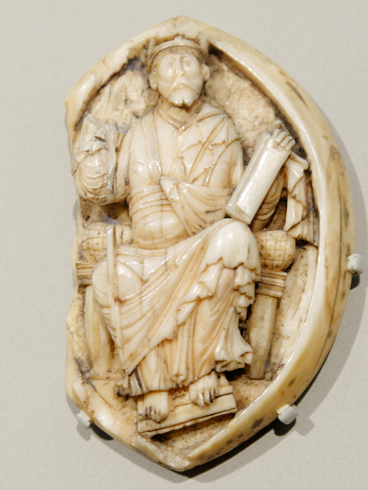
卡洛林王朝的教學內容，在結構上繼承了晚期古典學者（如波愛修斯、卡西奧多羅斯與馬蒂亞納斯·卡佩拉）所整理的「七大自由藝」（Seven Liberal Arts），但在內在邏輯上進行了徹底的「基督教化」重組，使其完全服膺於「理解神聖啟示、駁斥教義異端與維持神聖帝國運作」的實用神學目標。
在初階的「三藝」（Trivium）教學中，語法（Grammar）被置於無可爭辯的統治地位。阿爾琴與其同僚認為，語法是所有知識的門戶，若無精湛的拉丁語文法基礎，便無法正確閱讀和詮釋聖經，更談不上領會經典中的靈性隱喻。修辭學（Rhetoric）則從羅馬時期的共和政治辯論工具，被改造為服務於神職人員宣教與帝國官僚撰寫正式公文、外交詔令（Dictamen）的行政實用學。阿爾琴在撰寫修辭學手冊時，特別重組了西賽羅的古典四大美德（審慎、正義、勇氣、節制），將其從純粹的演說修飾技巧提升為實現基督教道德終極目標的靈魂修行。邏輯學與辯證法（Logic/Dialectic）則提供了嚴密的理性工具，用以在複雜的神學論爭中維護正統、駁斥嗣子說等異端思想。
在進階的「四藝」（Quadrivium）教學中，算術（Arithmetic）與天文學（Astronomy）具有高度的政治與神學實用功能。帝國官僚必須依賴算術進行繁複的稅收統計、度量衡標準化管理以及土地審計；而科學僧侶（如東加爾）講授的天文學與算術結合，則直接服務於「曆法計算」（Computus）——即精確推算流動的復活節日期，以防地方教堂在不同日期慶祝復活節而導致帝國精神秩序的混亂。幾何學（Geometry）則被廣泛應用於大型修道院、大教堂以及亞琛宮廷禮拜堂的建築力學與空間神學規劃。音樂（Music）則特指聲學與和聲理論（如波愛修斯的《論音樂》），在實踐中與葛利果聖歌唱頌技術緊密結合，用以在全帝國的彌撒中塑造統一且神聖的聽覺秩序。
為了有效實施這套課程，阿爾琴及其門徒編纂了一系列極具創意的對話體教科書。例如《皮平與阿爾琴的辯論》（Disputatio Pippini cum Albino）以查理曼之子皮平與阿爾琴的對答形式展開，將哲學、自然科學與道德訓誡編織進富有詩意與啟發性的問答中；其編纂的《論正字法》（De Orthographia）則是一部極為實用的拉丁語拼寫與字詞用法手冊，直接發放給各修道院手抄室，作為抄寫員校對文本的物理標杆。此外，阿爾琴還撰寫了《論聖三位一體之信仰》（De Fide Sanctae Trinitatis），利用精密的邏輯推論與教父文獻引證，為缺乏系統學術訓練的地方祭司提供了一部簡明易懂的教義指南。此時期的圖書館藏與研讀對象，除了聖經與奧古斯丁、杰羅姆、格里高利等教父著作外，還包含了大量異教古典大師的經典，如波愛修斯的《哲學的慰藉》、馬蒂亞納斯·卡佩拉的《菲洛洛吉亞與墨丘利的婚禮》、以及西賽羅、維吉爾、盧肯、泰倫斯、塞內卡、奧維德、普林尼、普里西安與薩盧斯特的著作。
在課堂教學與學術研究的具體範式上，卡洛林學者確立了以下影響深遠的操作程序：
- 口頭親授與速記轉錄（Viva Voce & Tironian Notes）：由於皮紙手抄本極其昂貴，學生無法做到人手一冊，教學高度依賴教師的口頭朗讀與即興講授。學生在課堂上必須集中注意力，使用蠟板或羊皮紙殘片，以極快的「提洛速記符號」（Tironian notes）記錄大師的講義。例如歐塞爾的埃里克（Heiric of Auxerre）在跟隨費里耶爾的盧普斯（Lupus of Ferrières）與歐塞爾的海莫（Haimo of Auxerre）學習時，便是利用提洛符號將老師的口頭講授飛速記錄下來；而富爾達的埃爾坎伯特（Ercanbert）在記錄其導師對約翰福音的註釋時，亦在序言中寫道這完全是「如我從您口中所聽到的那樣」（ut ab ore uestro accepi）進行轉錄，這些筆記最終被整理為系統性的學術講義與釋經著作。
- 文本導讀與語境化（Accessus ad Auctores）：在帶領學生研讀任何古典或基督教著作之前，導師會先進行系統性的導言介紹，回答「作者是誰（who）、作品主題是什麼（what）、寫作時間與目的為何（when/why）」，將異教古典著作納入基督教的道德與歷史框架中，實施系統性的「去毒化」與融合。
- 行間與頁邊注釋（Glosses）：師生在研讀文本過程中，會針對晦澀單詞的發音、語法功能及多重隱喻含意，在手抄本的字裡行間（Interlinear glosses）或頁邊空白處（Marginal glosses）添加密密麻麻的注釋。這些注釋在代際流傳中不斷被抄寫員併入正文或獨立編纂，最終匯聚成如《詞彙大全》（Liber glossarum）這樣體積龐大的「活體百科字典」。
- 直觀圖表教學（Pedagogical Diagrams）：當文字描述不足以解釋複雜的空間、幾何、天文軌道或抽象範疇關係時，卡洛林大師展現出高超的視覺化教學能力，他們設計了大量幾何與空間關係示意圖，直接繪製在手抄本邊欄，作為「視覺化的注釋」來輔助學生理解抽象理論。
五、 文明火種的去中心化延續：卡洛林教育基建對後世的深遠影響
卡洛林王朝在九世紀中葉因《凡爾登條約》而走向政治上的三分天下，但查理曼大帝所一手締造的教育與文化基礎設施，卻展現出超越政治興衰的強韌生命力，以一種「去中心化」的方式在全球西歐世界中生根發芽，成為日後歐洲文明浴火重生的核心火種。
首先，卡洛林手抄室實現了對西方古典知識遺產的歷史性搶救。在墨洛溫王朝與大移民時代的混亂歲月中，無數古羅馬的文學、歷史、哲學與科學手稿因缺乏維護而腐爛失傳。卡洛林文藝復興時期，在亞琛宮廷與各大地方修道院抄寫室的協同運作下，學者們在全歐洲範圍內搜求古典殘卷，並用清晰、易讀、易保存的卡洛林小草體進行了系統性的轉錄與校勘。今日我們所擁有的古羅馬文學與科學知識，其源頭幾乎全部要追溯到九世紀卡洛林抄寫室所保留下來的七千多冊手抄本。如果沒有這場由國家力量推動的「硬體轉錄與文獻搶救工程」，西方古典文明極有可能出現無法彌補的歷史斷代。
其次，卡洛林小草體直接塑造了現代西方文字的視覺審美與印刷技術。十世紀以後，雖然卡洛林小草體逐漸演變為字形更為尖銳、擁擠且難以辨認的哥德體（Gothic script / Blackletter），但到了十四、十五世紀的義大利文藝復興時期，人文主義學者在修道院圖書館中重新發現了卡洛林時期的古典抄本。人文主義者誤以為這些字體優美、單詞留空、標點規範的精美字體就是古羅馬時期的「古典原版文字」，遂以此為藍本，開發了「人文主義小寫體」（humanist minuscule）。當古騰堡金屬活字印刷術發明時，人文主義小寫體被直接採納為鉛字鑄造的模板，演變為現代羅馬體（Roman typefaces，如著名的 Times New Roman）以及現代全部拉丁字母小寫體系統的直接祖先。可以說，今日全球數十億人在電腦、螢幕與紙張上閱讀的英文字母與標點協議，本質上皆是卡洛林文寫室軟體技術的延續。
最後，卡洛林教育基建的網絡擴張，直接為西方中世紀大學的誕生鋪平了道路。查理曼命令主教座堂必須設立學校的政策，使世俗教區的主教座堂學校（Cathedral Schools）在十世紀後逐漸超越封閉式的修道院學校，成為知識傳播與公共辯論的新舞台 。以索爾茲伯里（Salisbury）大教堂學校為例，其學生接受大教堂校長（Chancellor）的嚴格行政與學術監管，學校不僅聘請常駐教師，還廣泛邀請多明尼加會等游方僧侶前來講授神學與自由藝，甚至一度發展出與鄰近的牛津（Oxford）分庭抗禮的「大學雛形」（如德沃克斯學院 De Vaux College）。正是巴黎、博洛尼亞、牛津、索爾茲伯里等主教座堂學校的進一步自主化、社團化與學術擴張，最終在十一至十二世紀演變為歐洲偉大的中世紀大學系統，而卡洛林時期確立的「七藝」學科劃分與「問答辯論」教學法，則直接轉化為大學文學院的學術骨架 。查理曼大帝以其宏大的政治遠見，在黑暗時代的廢墟上，為西方世界鋪設了一條通往理性、大學與現代文明的基建之路。
六、 引用的著作
- How the Carolingian Renaissance revived classical learning in Europe during the Dark Ages - History Skills
- Alcuin of York - Math! Science! History!™
- Carolingian Renaissance - Epic World History
- Carolingian Empire Educational Reforms Us
- De litteris colendis - Wikipedia
- Carolingian schools - Grokipedia
- Charlemagne's Influence Of Education - 1388 Words - Cram
- Cathedral Schools and Chantry Colleges at Salisbury
- Education - Carolingian Renaissance, Aftermath | Britannica
- Carolingian schools - Wikipedia
- Charlemagne's Letter on Letter Culture | PDF - Scribd
- PROPOSITIONES AD ACUENDOS IUVENES Sometime in the mid-780s, Charlemagne, King of the Franks, had a letter composed in his name
- Medieval Sourcebook: Charlemagne: Letter to Baugaulf of Fulda, c.780-800
- The Contributions of the Emperor Charlemagne and the Educator Alcuin to the Carolingian Renaissance - History of Information
- Carolingian minuscule - Wikipedia
- Carolingian Manuscripts - Ziereis Facsimiles
- Bibliotheca Carolina | Europeana
- Tours of the Libraries of Reichenau and St. Gall - UCLA CMRS Center
- How the Carolingian dynasty changed how we read | Europeana
- Carolingian Minuscule: The Key to Medieval Literacy - Stephen Butler Rare Books & Manuscripts
- What is Carolingian Minuscule? | Transkribus Blog
- Tutorial / Reading Scripts / The History of Scripts / Pre- and Early Caroline Minuscules - Ad fontes - Universität Zürich
- Carolingian libraries - Wikipedia
- Alcuin of York | History | Research Starters - EBSCO
- Charlemagne, Patron of Scholars: Examining the Role of Carolingian Learning and the Motives Behind Einhard's Portrayal of the Emperor
- Alcuin | Anglo-Saxon Scholar, Charlemagne's Adviser - Britannica
- For the love of learning | Christian History Magazine
- Paul the Deacon | Encyclopedia.com
- Carolingian Monastic Schools and Reform (Chapter 23) - The Cambridge History of Medieval Monasticism in the Latin West
- Why Alcuin was the most important scholar of the early Middle Ages
- Alcuin of York: Scholar, Theologian, and Architect of the Carolingian Renaissance
- Alcuin of York 735-804 – A History of Speech – Language Pathology - UB WordPress
歐洲造紙術的歷史演變、技術革新與物質文明變革研究報告
一、 歐洲造紙術的起源與早期地中海傳播脈絡
造紙術作為改變人類文明與資訊傳播媒介的關鍵技術，其向西方的傳播路徑呈現出顯著的跨文化擴散特徵。這項技術起源於中國東漢時期的蔡倫對植物纖維加工技術的改良與推廣，儘管早期的紙質殘片在考古學上已證實可追溯至公元前2世紀。隨著絲綢之路的貿易往來與地緣政治擴張，造紙術於8世紀中葉傳入伊斯蘭世界。公元794年，巴格達建立了首座利用水力驅動的造紙廠，這標誌著造紙業從單純的手工勞動向初步機械化生產的過渡。隨著阿拉伯人在北非及南歐的軍事與商業活動，造紙術最終經由地中海的兩大門戶——西西里島與伊比利半島進入歐洲本土。
在西西里島，阿拉伯人在公元10世紀前便引進了造紙技術。公元972年，歷史地理學家伊本·豪卡爾（Ibn Haukal）在訪問巴勒莫（Bal'harm）時，便明確記錄了當地的造紙手工業。現存歐洲最古老且帶有確切日期的紙質文件，即為公元1102年西西里伯爵羅傑一世（Count Roger）頒布的、由棉質纖維製成的土地契據。此外，公元1109年由羅傑一世的第一任妻子阿德拉西亞女伯爵（Countess Adelasia）頒布的希臘語與阿拉伯語雙語詔令（關於卡斯特羅焦萬尼附近的鹽礦所有權），同樣採用了歐洲本土製造的早期紙張，目前該文件仍妥善保存於巴勒莫的國家檔案館中。地中海沿岸的重要商業樞紐如阿馬爾菲（Amalfi），亦憑藉其與阿拉伯世界密集的貿易與外交網絡，成為引進早期造紙工藝與工具的先驅城市。
然而，地中海早期的紙張由於依賴棉花等短纖維，且製漿工藝尚不完善，導致其結構相對脆弱，極易受到地中海高濕度環境的侵蝕與降解。這種材質的脆弱性引發了封建統治階層對於法律公文保存期限的強烈疑慮。公元1231年，神聖羅馬帝國皇帝腓特烈二世（Frederick II of Sicily）在巴勒莫宮廷正式頒布禁令，禁止在公證與正式法律文獻中使用紙張，要求必須使用更為堅固的羊皮紙（Parchment），這使得早期的地中海紙張在很長一段時間內僅被限制於起草草稿、登記日常帳簿與書寫私人信件。
與此同時，伊比利半島在安達盧斯（al-Andalus）時期的造紙業亦十分繁榮。公元1085年十字軍占領托萊多（Toledo）時，便接管了當地的造紙工作坊。而西班牙最具影響力的造紙中心則位於哈蒂瓦（Xàtiva），該地將羅馬時期的橄欖壓榨磨坊改造為壓榨紙漿的裝置，並在公元1151年引進了水力磨坊，從而省去了繁重的手工槌擊或石磨加工程序。公元1282年，亞拉岡國王彼得三世（Peter III of Aragon）在哈蒂瓦建立了首座由基督教王室控制的水力造紙廠，這不僅打破了穆斯林手工業者長期以來對造紙技術的壟斷，更為水力造紙技術在全歐洲的擴散奠定了堅實的物質基礎。
二、 法布里亞諾的技術革命與歐洲造紙網路的擴張
儘管造紙術源於東方，但真正將其轉化為大規模工業化生產並使其品質全面超越傳統羊皮紙的，是13世紀後半葉義大利法布里亞諾（Fabriano）造紙大師（mastri cartai）所推動的三項核心技術變革。這些變革從根本上重塑了紙張的物理性質、防偽性能與經濟競爭力：
- 複式水力槌擊機（Pila idraulica）的工程改良：傳統的阿拉伯與中國造紙術主要依賴手動石臼、木杵或人力磨石來破碎纖維原料。法布里亞諾的匠人充分利用了流經當地的吉亞諾河（Giano River）的水力資源，將其與製鞋、紡織業的機械傳動裝置相結合，開發出帶有複數槌頭的木製水力槌擊機。這種機械裝置能同時進行原物料的精細打碎、纖維分絲與均質化處理，不僅使生產效率呈幾何級數提升，還使碎布纖維得以被均勻地粉碎至最適合交織的長度，大幅優化了紙張的結構強度。
- 動物明膠施膠法（Gelatine Sizing）：在法布里亞諾創新之前，東方與阿拉伯紙張普遍採用植物澱粉（Starch）作為表面施膠劑。然而，澱粉類物質極易吸濕並成為微生物滋生的溫床，導致紙張容易受潮、發霉，且在使用羽毛筆書寫時墨水容易暈染擴散。法布里亞諾匠人巧妙地利用當地發達的製革工業廢料，提煉出動物明膠（Animal Gelatine）作為施膠劑。這種明膠施膠法在紙張表面形成了一層緊密的不透水薄膜，徹底解決了墨水暈染問題，並賦予紙張極佳的化學耐受性與抗老化能力，使其壽命足以與昂貴的羊皮紙抗衡，這成為紙張被歐洲官方機構與公證人廣泛接受的關鍵技術關鍵。
- 水印技術（Watermark）的發明：法布里亞諾匠人在抄紙網模（Mould）中編入細銅絲製成的圖案。當紙漿脫水時，銅絲突起處的紙漿層較薄，在光線照射下會呈現半透明的精美圖案。這種最初用於識別工坊與工匠個人品牌的標記，迅速演變為區分紙張規格、品質以及客戶身分的防偽安全特徵，對於紙張的標準化與品牌化具有劃時代的意義。
這三項創新的物質協同作用，使法布里亞諾紙張迅速風靡整個地中海盆地，並在15世紀初實現了每年 2,500 擔（運，Quintals）的驚人產量。
隨後，這股技術浪潮跨越阿爾卑斯山向北擴張。公元1390年，紐倫堡大商人兼市參議員烏爾曼·斯特羅默（Ulman Stromer）在佩格尼茨河（Pegnitz River）畔，將一座名為 Gleissmühle 的舊磨坊改建為德意志地區首座長期運作的造紙廠。為了突破技術壁壘，斯特羅默從義大利引進了具備成熟技術經驗的工匠（如馬科與弗朗西斯科兄弟）。該廠因製漿過程產生的惡臭與機器運轉的巨大噪音，被法律規定必須建在紐倫堡西側城牆之外。斯特羅默在其自傳性日記《我的家族與冒險之書》（Püchel von meim geslecht und von abentewr）中，詳細記錄了這段建廠歷程，這部日記不僅是歐洲最早記錄造紙生產的文獻，還記錄了歐洲歷史上第一起因工匠試圖壟斷技術而引發的造紙工人工會罷工事件。
下表系統性整理了造紙技術在歐洲主要區域的傳播歷程與物質條件：
| 國家/區域 | 首座造紙廠建廠年份 | 技術引進源頭與物質條件 |
|---|---|---|
| 西西里（巴勒莫） | 約 10 世紀末 | 由阿拉伯人引進，利用當地種植的棉花與河流灌溉系統。 |
| 西班牙（哈蒂瓦） | 公元 1144/1151 年 | 阿拉伯造紙技術，後於1282年由亞拉岡王室改建為首座皇家水力磨坊。 |
| 義大利（法布里亞諾） | 公元 1264/1268 年 | 吸納阿拉伯戰俘技術，結合當地發達的製革與水力紡織設備。 |
| 德意志（紐倫堡） | 公元 1390 年 | 烏爾曼·斯特羅默引進義大利工匠，利用佩格尼茨河水力建廠。 |
| 比利時（于伊） | 公元 1405 年 | 沿襲法國北部技術路線，逐步向低地國家擴散。 |
| 英格蘭（赫特福德） | 公元 1488 年 | 約翰·泰特（John Tate）建立首座短期水力造紙廠。 |
| 荷蘭（多德雷赫特） | 公元 1586 年 | 晚期建立，但隨後開發出劃時代的「荷蘭式打漿機」。 |
| 美國（賓夕法尼亞） | 公元 1690 年 | 德裔造紙商威廉·里滕豪斯（William Rittenhouse）建立首座北美水力造紙廠。 |
三、 物質原料與加工工藝：從碎布纖維到木質紙漿的過渡
在1300年至1800年的前工業化時期，歐洲造紙業的興衰與紡織業及廢舊物資回收網絡緊密綁定。這一時期的紙張本質上是「手抄碎布紙」，其原材料並非木材，而是完全依賴亞麻（Flax）和大麻（Hemp）纖維製成的廢舊織物、衣物及船帆。
1. 碎布原料的供應鏈與精細分類
前工業化時期的碎布收集是一項高度組織化的社會勞動。造紙廠通常依賴專職的「碎布收集商」（Ragpickers）深入城市與鄉村收購廢舊織物。批發商將收取的碎布送往倉庫，由女工進行極為精細的初處理。這些處理包括剔除金屬搭扣、骨製紐扣與粗厚的接縫，並依據織物的材質、成色與磨損程度進行分類。潔白的亞麻碎布被視為最珍貴的原料，專門用於生產高品質的白色書寫紙與書籍紙；而有色、粗糙的棉布或混紡織物，則被降級用於製作廉價的包裝紙或劣質粗紙。
由於地理氣候與服飾習慣的差異，各國的原料供給呈現出地緣不平衡性。英國服飾長期以羊毛為主，嚴重缺乏生產白紙所需的亞麻碎布，這直接導致其白紙生產長期依賴從法國、義大利等國進口。為了解決這項物質瓶頸，英國議會在17世紀甚至通過了一系列奇特的法律，規定為死者入殮時禁止使用棉布或亞麻布，必須強制造性地使用羊毛，以此每年為造紙業節省估計約20萬磅的植物纖維原料。
2. 漚化發酵、製漿水質與早期漂白
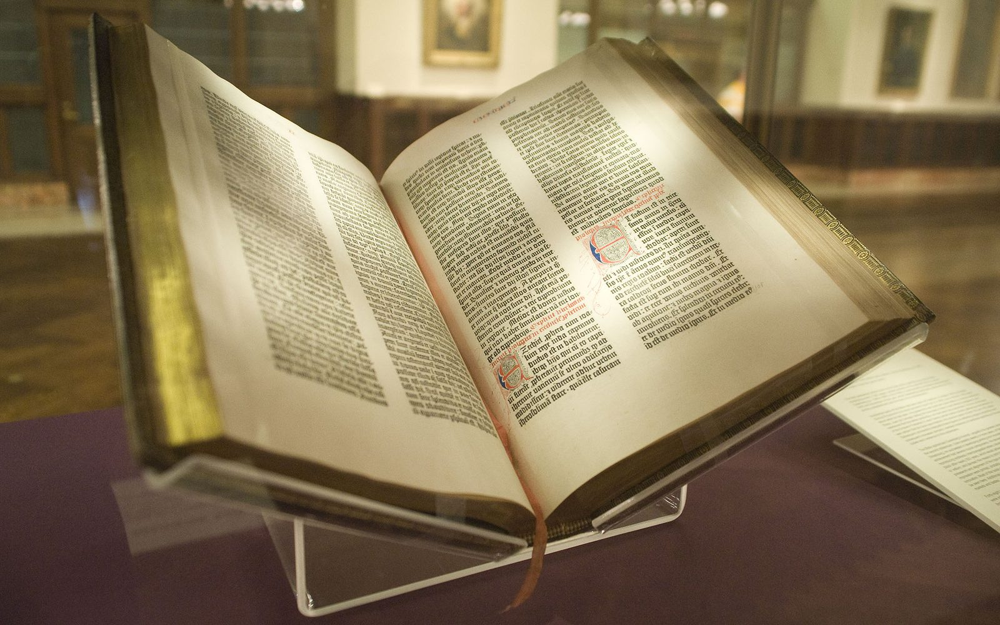
在碎布進入槌擊機前，必須經歷化學與生物學的前處理，這對於成品紙張的柔軟度與成色至關重要：
- 漚化發酵（Retting）：女工將分類剪碎後的碎布浸泡在水與石灰（Lime）的混和溶液中，堆積在通風、避光且溫度恆定的地下拱頂「發酵室」（Rettery）中進行為期7至11天的化學與微生物發酵。發酵能有效溶解植物纖維中的木質素與果膠，使纖維素細胞壁膨脹、軟化，從而使後續的槌擊精製更易進行，賦予紙張柔軟、均勻且吸膠性適中的物質特徵。若漚化不足，紙漿纖維會過於粗硬，導致紙張表面凹凸不平；若漚化過度，則會造成大量的纖維素水解流失。
- 製漿水質控制：水既是磨坊的動力，也是直接參與紙漿化學反應的介質。造紙廠通常會將動力用水（河流濁水）與製漿用水（清澈泉水）嚴格分開。水中若含有微量的鐵元素，會與纖維中的化學物質發生反應，使紙張呈現紅褐色或黃色斑點。相反，富含鈣、鎂離子（硬水）的泉水對紙張極為有利。在製漿過程中，天然碳酸鈣（$\text{CaCO}_3$）和碳酸鎂（$\text{MgCO}_3$）會沉積在纖維網絡中，起到天然的酸鹼緩衝劑作用，這也是法布里亞諾等早期歐洲手抄紙能夠保存500年以上而不酥碎的關鍵原因。造紙匠人甚至會刻意加入微量地細石灰粉或 ground chalk 作為增白劑，以中和鐵元素帶來的黃褐色調。
- 「舊荷蘭漂白法」（The Old Dutch Method）：在1774年化學家發現氯氣並將其應用於漂白工藝之前，要獲得潔白的紙張，必須在編織階段對亞麻織物進行極其繁複的日光與化學漂白。這套被稱為「舊荷蘭法」的工藝包括：將織物浸泡在草木灰鹼液中（Bucking）、置於草地上曝曬並定時澆水（Watering）、浸泡在酸牛奶或黑麥麵糊發酵液中進行弱酸酸化（Souring），如此循環往復10至16次，整套工藝需耗時6至8個月。
3. 打漿技術的機械化飛躍：荷蘭式打漿機（Hollander Beater）
約在1680年，荷蘭多德雷赫特地區的造紙匠人發明了「荷蘭式打漿機」，這項發明徹底改變了沿用數百年的槌擊製漿法，拉開了造紙業機械化的序幕。
荷蘭式打漿機的結構主要由一個橢圓形的木槽（Tub）和一組裝有金屬刀片的旋轉滾筒（Beater Roll）組成。槽內中央設有分流隔板（Midfeather），纖維 and 水在槽內呈環形循環流動。旋轉滾筒的葉片與槽底固定床板（Bedplate）之間的微小間隙對纖維產生強烈的剪切、摩擦與原纖化（Fibrillation）作用。
從技術演進的視角來看，荷蘭式打漿機代表了一種「速度與品質平衡」的工業化權衡。雖然它消除了長達數週的漚化發酵時間，使原物料處理效率提升了近八倍，但也帶來了技術上的負面效應。金屬刀片對纖維的強力「剪切」作用縮短了纖維長度，導致成品紙張的抗拉強度相對低於傳統水力槌擊法製造的紙張。此外，金屬刀片相互碰撞產生的微量鐵屑沈積在紙漿中，在漫長的時間歲月中充當了酸性氧化的催化劑，這正是18世紀以後書籍邊緣普遍出現黃褐色斑點（即「狐斑」，Foxing）的化學根源。
4. 19世紀原材料的徹底變革：木質紙漿的誕生
隨著19世紀大眾傳播、報業與現代教育的興起，破布纖維的供應鏈在面對海量需求時徹底崩潰，造紙原料的系統性尋找成為當務之急。在經歷了短暫且不成功的「麥稈造紙」嘗試後，19世紀中葉發生了兩次關鍵性的技術突破：
- 機械木漿（Groundwood Pulp）：公元1843年，薩克森人弗里德里希·戈特洛布·凱勒（Friedrich Gottlob Keller）發明了木材磨碎機，利用機械力將木段磨碎成纖維。這種方法成本極低，但由於未能去除木材中的木質素（Lignin），導致紙張極易變黃、變脆。
- 化學木漿（Chemical Wood Pulp）：公元1854年，休·伯格斯（Hugh Burgers）與查爾斯·瓦特（Charles Watt）獲得了化學法製漿（鹼法）的專利，隨後酸性亞硫酸鹽法與強韌包裝紙（Kraft）工藝相繼問世。化學法利用化學試劑溶解並去除了木材中的木質素，僅留下純淨的纖維素。
木質紙漿的引入實現了紙張的「民主化」，使其價格大幅下降，成為廉價的日常消費品。然而，19世紀中後期工業化紙廠普遍採用的酸性化學製漿法及明礬-松香內施膠工藝，給現代文獻保存帶來了災難。木質紙漿紙張中殘留的酸性物質會在空氣中發生自我水解，導致19世紀與20世紀初出版的書籍與檔案面臨著大面積酸化、酥碎與自行毀滅的危機，其保存壽命遠遠不及中世紀的破布手抄紙。
下表系統性對比了碎布手抄紙與木質紙漿紙在物質屬性上的根本性差異：
| 指標/維度 | 碎布手抄紙 (Rag Paper) | 機械/化學木漿紙 (Wood Pulp Paper) |
|---|---|---|
| 主要原料來源 | 亞麻、大麻碎布、廢舊帆布。 | 針葉樹與闊葉樹木材。 |
| 纖維長度與結構 | 纖維長度通常大於 2 mm，交織呈三維網絡結構。 | 纖維長度較短（機械磨碎），結構緻密但脆弱。 |
| 施膠工藝 | 表面明膠施膠（不易吸濕、抗老化）。 | 內部明礬-松香施膠（酸性強）。 |
| 酸鹼度 (pH 值) | 通常呈弱鹼性至中性（硬水與碳酸鈣沉積）。 | 呈強酸性（殘留化學酸性物質與明礬）。 |
| 預估物理壽命 | 可長達 500 至 1000 年以上。 | 約 50 至 100 年即開始嚴重酸化、變黃與酥碎。 |
四、 工業化革命：長網造紙機的發明與生產機械化
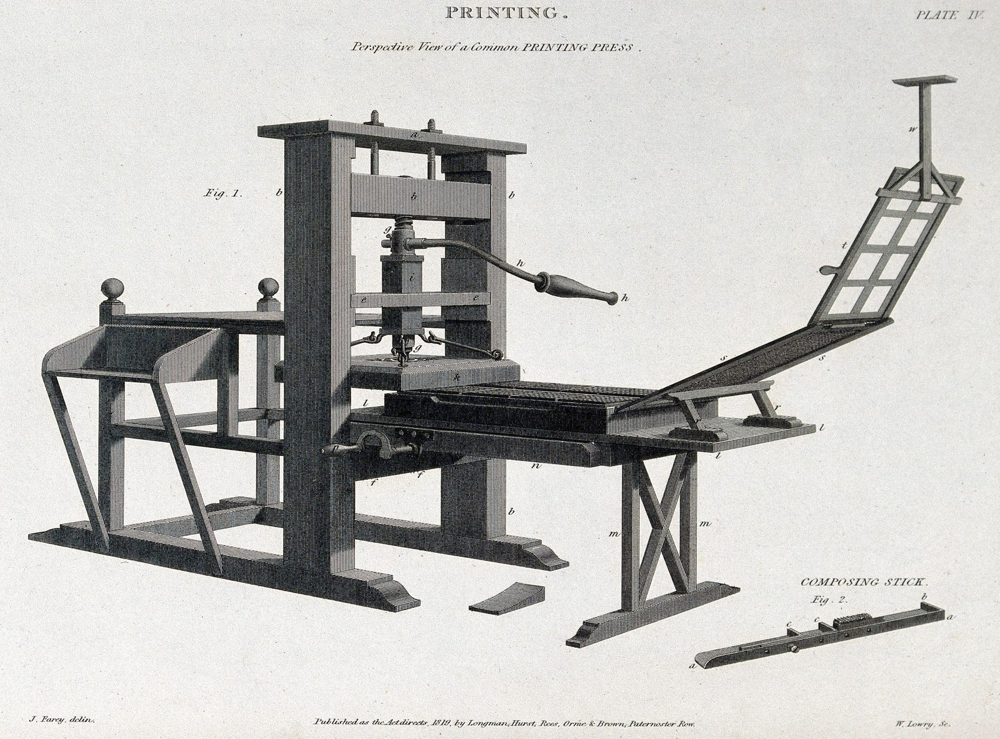
當造紙原料與打漿技術逐步準備就緒時，手工抄紙「一撈一網、單張成型」的生產模式成為限制產量的最後瓶頸。在傳統作坊中，一名熟練的「撈紙工」（Vatman）每天即使不間斷地搖動抄紙網模上千次，其生產極限也無法超越物理尺寸與人力耐力的限制。
這項瓶頸在法國大革命後被徹底打破。公元1798年，法國埃索納（Essonnes）造紙廠的會計兼技術人員路易-尼古拉·羅貝爾（Louis-Nicolas Robert）發明並申請了一項革命性的機器專利：它利用一條循環運動的無端金屬絲網帶（Endless wire belt），能夠連續不斷地接收稀釋的紙漿，將水分濾乾並輸出長度不受限制的濕紙幅。
由於法國大革命後國內政局動盪、資金匱乏，這項技術隨後被轉移至工業革命的中心——英國。羅貝爾的雇主聖萊熱·迪多（St. Leger Didot）將專利權轉讓給其英籍妹夫約翰·甘布爾（John Gamble）。甘布爾於1801年在英國取得專利，並成功說服倫敦大型批發文具商亨利·福德里尼爾（Henry Fourdrinier）與塞利·福德里尼爾（Sealy Fourdrinier）兄弟提供鉅額資金支持。
福德里尼爾兄弟聘請了當時極具天賦的青年工程師布賴恩·唐金（Bryan Donkin）對羅貝爾的原始設計進行工程改良。公元1803年，世界上第一台實用型連續造紙機在赫特福德郡的蛙網磨坊（Frogmore Mill）正式安裝運行，這台機器此後便以資助者的名字被命名為「福德里尼爾長網造紙機」（Fourdrinier Machine）。
長網造紙機的運作原理將傳統手工造紙的多道工序整合為一個平滑的物理連續過程：
- 流漿箱與成型網區：極度稀釋的紙漿（約99%為水）均勻噴灑在旋轉的無端銅網上。網帶在移動過程中橫向震動，模擬撈紙工「搖晃網模」的動作，使纖維在各個方向交織成型。
- 脫水與壓榨區：水分在重力、真空吸水箱與重型壓榨滾筒的擠壓下迅速脫除，使濕紙幅具備足夠的濕強度。
- 烘乾與捲取區：公元1821年，T·B·克朗普頓（T.B. Crompton）發明了蒸汽加熱烘缸。唐金於1822年將其整合進造紙機中，使濕紙幅能夠直接在數個巨大、高熱的鐵製滾筒上連續乾燥，最後直接捲成巨大的紙捲（Reel）。
與此同時，公元1809年，英國造紙商約翰·迪金森（John Dickinson）發明了「圓網造紙機」（Cylinder-mold Machine）。它使用一個部分浸沒在紙漿槽中的網狀圓筒（Cylinder）旋轉吸附纖維成型。圓網機因其結構緊湊、適合生產多層厚紙板，在北美造紙業早期得到了極為廣泛的應用，成為長網造紙機強有力的市場競爭對手。
福德里尼爾長網造紙機的引入對造紙產業產生了翻天覆地的經濟變革：
- 生產效率的飛躍：福德里尼爾兄弟於1806年發布的數據表明，一台長網造紙機配合9名工人，在一個12小時工作日內的產量，相當於傳統手工作坊中41名工人操作7個抄紙槽（Vats）的產量總和。
- 生產成本的驟降：每英擔（cwt）紙張的製造成本從手工作坊時期的16先令（約80便士）暴跌至機器的3先令9便士（約19便士），這使得紙張迅速從某種意義上的奢侈品轉變為廉價的日用品。
然而，如同許多工業革命早期的劃時代創新一樣，長網造紙機的技術先驅們大多遭遇了悲慘的財務命運。福德里尼爾兄弟在研發、調試和推廣機器的前十年中損失了至少60,000英鎊，最終於1810年宣告破產；發明者路易-尼古拉·羅貝爾、迪多與甘布爾也都未能在這項改變世界的專利中獲得經濟回報，最終在貧困中離世。相反，布賴恩·唐金工程公司則通過大規模製造並向全球銷售該機器而獲利豐厚。
五、 物質中介與社會轉變：紙張對官僚體制、宗教改革與資訊社會的重塑
紙張並非一種被動記錄思想的容器，而是一種具有能動性的「物質中介」（Material Medium）。其重量的減輕、成本的下降以及物理特性的改良，在歐洲近代早期的國家構建、宗教地緣政治與公共領域形成中扮演了關鍵角色。
1. 「紙上國家」（The Paper State）與早期官僚體制的崛起
歷史學家彼得·伯克（Peter Burke）指出，歐洲近代早期的行政系統在實質上可以被定義為一個「紙上國家」。隨著廉價、輕便的紙張徹底取代沉重且昂貴的羊皮紙，統治階層得以實施一種全新的「銘刻政治」（Politics of Inscription）。
在這種體制下，統治權力的行使不再僅僅依賴君主的個人親臨或口頭訓誡，而是極大地訴諸於日常公文、外交信件、人口普查、稅收審計和政令彙編等「圖形人工製品」（Graphic Artifacts）的流通。國家的權力被銘刻在紙張上，由外交官、巡按使、稅務官等帝國官僚隨身攜帶，成為國家權力延伸至邊疆的物理載體。
然而，這種對紙張行政的依賴也帶來了官僚體制的異化（Involution）。信息的爆發式增長超出了早期的管理能力，成堆的公文、檔案在各部會辦公室堆積如山，常常引發嚴重的決策混亂 。這種現象迫使早期現代國家不得不開發出第一代「信息管理系統」，包括檔案分類法、索引摘要以及專職秘書機構，完成了現代官僚機構的雛形構建。
2. 紙張與古騰堡印刷術的物質協同效應
在討論1450年前後約翰尼斯·古騰堡（Johannes Gutenberg）發明金屬活字印刷術對歐洲文明的衝擊時，往往忽略了其背後的「紙張前提」。事實上，活字印刷術與造紙術在歐洲的相遇，是一次完美的物質與技術協同：
- 消除羊皮紙的產能天花板：在印刷術發明前，抄寫一本聖經需要屠宰大約170張牛皮或羊皮。如果要使用活字印刷術大規模印製書籍，歐洲的畜牧業根本無法提供如此龐大數量的動物皮革。古騰堡在其首批印製的聖經中，除了30本使用牛皮紙外，其餘150本均使用了成本更低、供應更為充足的紙張，這證明了紙張是印刷資本主義（Print Capitalism）得以運轉的唯一可行物質基礎。
- 版面設計的標準化：古騰堡通過增加每頁行數（從早期的40行提升至42行），極大地限制了印製單本聖經所需的紙張物理用量，這促成了歐洲書籍排版與印刷字體設計的標準化發展。
3. 宗教改革與輿論空間的碎片化
得益於紙張與印刷術的結合，16世紀初的德意志宗教改革獲得了其急需的「大規模傳播媒介」。當馬丁·路德（Martin Luther）於1517年發表其《九十五條論綱》時，這篇原本僅供學術辯論的拉丁文草稿，在短短數週內便被翻譯成德語，並以廉價「小冊子」（Pamphlets）和「傳單」（Broadsides）的形式印製成千上萬份，傳遍了德意志乃至整個歐洲。路德隨後將《聖經》翻譯為德語口語，並利用紙張的大規模印製，打破了天主教會對拉丁文聖經解釋權的絕對壟斷，使普通信徒能夠直接閱讀並形成獨立的宗教認知。
這種物質傳播媒介的變革在深層次上重塑了歐洲人的思維方式與社會結構：
- 個體主義與客觀性的覺醒：文字在紙張上的空間固定性，使人們可以遠離狂熱的街頭演說或佈道，在安靜的個人空間中進行孤立、理性的思考。這種「與文本的單獨對話」孕育了現代個體主義與客觀評判事物的科學精神。
- 威權壟斷的崩潰與派系分化：廉價小冊子的傳播速度遠超天主教會的審查速度。任何擁有印刷機與紙張的知識分子、甚至富裕的手工業者，都能向公眾傳播其教義主張。這種「資訊民主化」直接摧毀了羅馬教廷的中樞權威，導致新教各派系（如加爾文派、慈運理派）在歐洲各地方言語區蓬勃興起，重塑了近代歐洲多元分裂的地緣政治格局。
六、 結論
綜觀歐洲造紙術的歷史演變，這項技術的本地化與工業化轉型不僅僅是簡單的工程改進，更是一場涉及物質原料、化學工藝、地緣政治與社會傳播媒介深層互動的系統性變革。
從11至12世紀西西里島與伊比利半島的早期傳播，到13世紀義大利法布里亞諾在打漿、施膠與防偽領域的決定性技術突破，歐洲造紙術完成了從粗糙外來工藝向精細本土產業的關鍵跨越，在品質與耐用性上實現了對傳統羊皮紙的全面替代。15世紀，紙張與古騰堡印刷術的物質協同，徹底打破了宗教神權對知識產權與拉丁文解釋權的壟斷，為宗教改革與近代科學革命點燃了資訊民主化的火花。而18至19世紀從荷蘭式打漿機、福德里尼爾長網造紙機到木質紙漿的物質與機械雙重革命，則將紙張從一種精細的文化媒介推向大眾化、低成本的工業消費品，為現代官僚體制運作、大眾新聞文化與資訊社會的崛起構築了不可或缺的物質基石。
七、 引用的著作
- The History Of Paper Part I - Ferrotype
- The History of Papermaking
- Historical paper mills and innovations: the industrial background of the world of paper - A.Celli
- The History of Paper | American Forest and Paper Association
- Papermaking/History of paper - Wikibooks, open books for an open world
- Paper Making in Sicily - Best of Sicily Magazine
- Imperato: tradition and quality in a family-owned paper mill - Perini Journal
- Possibly the Earliest Extant European Document Written on Paper Made in Europe - History of Information
- Frederick II of Sicily Bans the Use of Paper for Legal Documents - History of Information
- Paper mill - Wikipedia
- Paper from Fabriano - Google Arts & Culture
- Paper and Watermark Museum - Wikipedia
- Art in Hands: Fabriano, the City of Paper - Leonardo Frigo
- Fabriano Paper in Library of Congress Collections | In Custodia Legis
- Paper Making - Fabriano
- An ox head that speaks volumes – HAB - Herzog August Bibliothek Wolfenbüttel
- Papermills | Papermaking in Europe and America: Examples from the Vanderbilt Libraries Spanning Five Centuries
- Ulman Stromer's Diary, Earliest European Document on the ...
- Ulman Stromer - Wikipedia
- Ulman Stromer - Püchel von meim geslecht und von abentewr - Ziereis Facsimiles
- European Papermaking Techniques 1300-1800 - Paper Through ...
- Papermaking: A Rags to Riches Story | Bibliomania
- Fourdrinier machine | Papermaking, Paper Production, Pulp Manufacturing - Britannica
- The Hollander Beater Begins the Slow Process of Mechanizing Paper Production
- Hollander beater - Wikipedia
- Hollander Beaters - Hand Papermaking
- Beater Finesse¬ - Papermaking Resources
- Observations Concerning the Characteristics of Handmade Paper: The Library of Congress Endpaper Project 1996 - American Institute for Conservation
- 19TH CENTURY Emergence of wood based paper and increased mechanisation | www.cepi.org
- In England John Gamble and the Fourdriniers Develop Louis-Nicolas Robert's Papermaking Patent - History of Information
- The Fourdrinier Paper Machine - Frogmore Paper Mill
- 4.1.3: 1830 - 1910 - Paper (including production, watermarks, paper trade)
- European Paper (Chapter 2) - The Information Revolution in Early Modern Europe
- Impact of Printing on Reformation | PDF - Scribd
- The Paper of Politics and the Politics of Paper (Chapter 4) - The ...
- Full article: Managing the News in Early Modern Europe, 1550–1800 - Taylor \& Francis
- Government of Paper
- Administrative Involution and the Fate of Premodern Empires: Bureaucracy, Paperwork, and Rebellion in Late Imperial China
- The Printing Press and the Protestant Reformation | History at Normandale - WordPress.com
- The Role of the Printing Press in the Protestant Reformation. - Octopus.ac
- The 3 Impacts of the Printing Press on the Protestant Reformation - The History Ace
- The Power of Print and Its Affect on the Church - Nelson University
靈魂的物質禁錮與中世紀權力整肅：卡特里派的興起、神學教義、十字軍聖戰與歷史餘音
一、 歷史脈絡與地緣背景：十二世紀西歐的信仰危機與南法溫床
在十二與十三世紀的西歐，隨着都市化、貨幣經濟的興起以及遠距離貿易路線的開通，世俗社會對靈性生活的需求發生了深刻變化 。當時的信徒開始從世俗消費者的視角審視宗教服務，然而羅馬天主教會的制度化官僚與神職體系卻面臨嚴重的公信力危機 。修院中的高級神職人員與隱修士在華麗的修道院中過着優渥的生活，與之形成鮮明對比的是基層鄉村神父的貧困與無知 。這種道德與體制上的失衡，在社會底層孕育了強烈的反教權與反神職主義情緒 。
特別是在法國南部的朗格多克（Languedoc）地區，地緣政治的碎片化為非主流信仰提供了得天獨厚的發展溫床 。在十字軍東征前，朗格多克的政治權利分散於諸多地方領主之手，如實力雄厚的土魯斯伯爵（Raymond V, VI, VII）以及特倫卡維爾家族（Raymond Roger Trencavel） 。當地的主要城市（如土魯斯）人口已達三萬人以上，享有極高的政治與經濟自治權，地方伯爵與貴族對其控制力相當有限 。為了在法蘭西王室與羅馬教廷的雙重夾擊下維護地方獨立性，南法貴族階層長期對卡特里派（Catharism）持寬容、庇護甚至是默許支持的態度 。這種地方政治精英與民間反教權運動的結合，使卡特里派在阿爾比（Albi）及周邊地區迅速蔓延，因而又被稱為「阿爾比派」（Albigensians） 。
二、 起源與傳播網絡：從巴爾幹波格米勒到西歐二元論教會
卡特里派的教義並非在西歐憑空產生，其思想根源可追溯至拜占庭帝國及巴爾幹半島的異端運動 。其最原始的源頭是活躍於亞美尼亞與小亞細亞東部的「保羅派」（Paulicians）二元論運動 。隨後，拜占庭皇帝將大批保羅派信徒強制遷徙至色雷斯（菲利波波利斯） 。在十世紀中葉，這股外來的二元論思潮與保加利亞當地的斯拉夫反帝國改革運動融合，形成了以其創始人波格米勒神父（Priest Bogomil）命名的「波格米勒派」（Bogomilism） 。
隨着十一與十二世紀地中海貿易路線的繁榮，以及參與第二次十字軍東征（1147–1149年）的西方騎士與僧侶歸國，波格米勒派的傳教士成功將二元論教義引入西歐 。卡特里派在西歐的傳播呈現出高度組織化的特徵： * 早期建制（1140年代）：卡特里派在萊茵蘭城市（特別是科隆）、北法以及義大利北部城市迅速建立了地下教會 。約於1149年，第一位卡特里派主教在北法確立了其權威，隨後其同僚也在南法的阿爾比和北義的倫巴底地區建立教區 。 * 聖費利克斯-洛拉蓋會議（1167年）：這是卡特里派建制化歷史上的關鍵轉折點 。會議由來自君士坦丁堡 of 波格米勒派主教尼西塔斯（Nicetas）主持，吸引了南法與義大利北部的大批二元論領袖參與 。尼西塔斯的到訪不僅確立並確認了本土主教的合法性，更極大地提升了卡特里教會的威望 。 * 教區網絡的擴張（1200年前後）：至十三世紀初，卡特里派已在歐洲建立起一個嚴密的教會網絡，共設有十一座教區，其中一座位於北法，四座位於南法（朗格多克），六座位於義大利北部 。這套擁有自身教階制度、儀軌與神學體系的對抗性教會，對羅馬天主教的正統地位構成了根本性威脅 。
三、 神學教義與宇宙觀：二元論、偽諾斯底主義與物質禁忌
卡特里派的神學思想屬於半二元論或諾斯底二元論，其教義與實踐與傳統天主教神學完全背道而馳 。其神學分支主要分為「絕對二元論」與「溫和二元論」 ：
二元宇宙創造論
絕對二元論主張宇宙存在兩大無始無終、同等對立的終極實體：代表靈魂與光明的善神，以及代表物質與黑暗的惡神 。溫和二元論（較接近波格米勒派）則認為，惡神（常等同於舊約《聖經》中的神或撒旦）原本是天主所造的墮落天使，因反叛而遭到驅逐，隨後用欺騙手段創造了物質世界（包括人類肉體），並將無性別的天使靈魂禁錮在肉身之中，使其在物質界不斷輪迴 。無論哪一派，均一致認定有形物質世界的本質是邪惡與墮落的 。
幻影說基督論
由於堅信物質皆惡，卡特里派無法接受天主教「道成肉身」與「肉身復活」的教義 。他們主張耶穌基督並非擁有腐朽肉身的人類，而是一位本質為靈體的天使，其在人間的出生、受難、十字架之死及肉身復活純屬視覺上的幻象（即「幻影說」 Docetism） 。因此，天主教會尊崇的十字架在卡特里派看來只是折磨與物質邪惡的象徵，應予以唾棄 。
聖禮與物質媒介的否定
卡特里派全然否定天主教的聖禮系統，特別是聖餐禮與水洗禮 。他們認為，物質的水無法洗滌靈魂的罪愆，而由小麥製成的聖餐無酵餅更不可能轉化為基督的聖體 。在他們的護教辯論中，天主教的聖餐無酵餅被譏諷為「源自麥稈、經過馬毛篩網過濾、最終化為排泄物排出體外」的凡俗物質，推斷絕無可能蘊含神性 。
極端禁慾與絕對非暴力
為了阻止惡神繼續將靈魂禁錮在新的肉體牢籠中，卡特里派嚴厲禁止婚姻與一切性行為 。在飲食上，他們實行近乎極端的素食主義，嚴格禁止食用任何由有性生殖產生的食物（包括肉類、禽蛋、牛奶和乳酪），僅能食用植物、油類以及在當時被認為非有性生殖產生的魚類 。此外，他們嚴守絕對非暴力的戒律，禁止殺生、參與戰爭、說謊以及在法庭上宣誓 。
神學與禮儀的對立，構成了兩大陣營無法調和的鴻溝：
| 神學與禮儀維度 | 羅馬天主教會（正統） | 卡特里派（二元論與偽諾斯底） |
|---|---|---|
| 神聖造物主 | 唯一的真神，創造了有形與無形的所有宇宙 | 善神創造靈界；惡神（撒旦/舊約神）創造物質界 |
| 基督本質 | 完美的上帝之子，具備神人二性，真實肉身受難 | 本質為天使，肉身受難與死亡皆為幻覺（幻影說） |
| 洗禮儀軌 | 使用物質的水進行洗禮，洗去原罪 | 拒絕水洗，僅承認以手按立的靈性「慰藉禮」 |
| 物質與肉體 | 物質本質上是美好的，因始祖墮落而蒙塵 | 物質與肉體本質是罪惡的，是禁錮靈魂的囚籠 |
| 社會秩序觀 | 接受世俗婚姻、誓言約束與公權力戰爭 | 嚴禁婚姻、性行為，拒絕宣誓，奉行絕對非暴力 |
四、 組織建制與儀軌：完美者、世俗信徒與臨終淨化
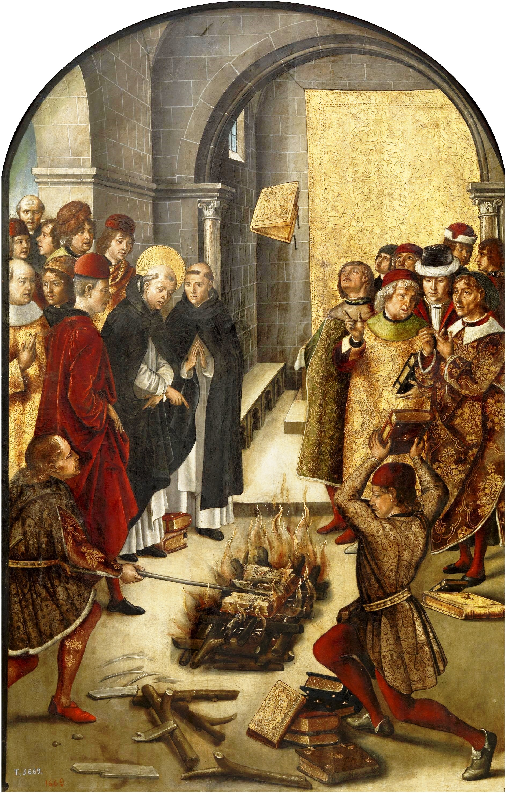
為了在充滿污染的物質世界中維持教義運作，卡特里派並非強制所有信徒過着不切實際的苦修生活，而是將信眾務實地劃分為兩個階層 ：
完美者（Perfecti / Perfect）
亦稱「善人」或「善婦」，是卡特里教會的修道與教職核心 。要晉延為「完美者」，信徒必須經歷長期嚴格的教義考驗與齋戒，隨後接受一生僅能施行一次的「慰藉禮」（Consolamentum） 。慰藉禮是一種類似聖靈洗禮的手按頭儀式，不使用任何物質媒介 。一旦接受此禮，完美者便必須終身遵守最嚴苛的禁慾、禁食、不妄言與非暴力戒律，並以雙人一組的形式遊歷四方，講道傳教 。
普通信徒（Believers / Credentes）
佔據了卡特里派人口的絕大多數 。他們被允許留在世俗社會中，可以結婚、生育、吃肉、甚至參與世俗戰爭，但在生活中必須對完美者表達崇敬 。信徒的救贖仰賴於臨終前接受的慰藉禮 。在臨終之際，信徒接受此禮以洗淨生前一切物質污染，轉化為完美者，從而免於輪迴，直接回歸善神的靈界 。
為了防止臨終信徒在接受慰藉禮後因病情好轉而再次接觸物質世界，卡特里派中存在一種被稱為「絕食自盡」（Endura）的極端苦修實踐 。接受完臨終慰藉禮後，信徒會主動斷絕一切食物與飲水，以維持靈魂在最純淨的狀態下脫離肉體 。儘管天主行為的文獻聲稱，有些病患在展現康復跡象時會被完美者以窒息等手段殺死以確保其「直接進入天堂」，但歷史證據顯示這並非普遍實行的常規做法 。
在教會組織上，卡特里派擁有一套高度發達的層級制度 。每個教區由一位主教主持，其下設有兩位繼承人輔佐：分別是「長子」（Filii Maiores）與「次子」（Filii Minores） 。當主教去世或退位時，長子將自動繼任主教，次子則升任為長子，並重新選出一位次子 。主教之下則由諸多執事（Deacons）負責具體社區與宣教事務的日常管理 。
五、 鐵血與征服的二十年：阿爾比十字軍的歷史軌跡與關鍵戰役
面對卡特里派在西歐心臟地帶建立「平行教會」的嚴峻局勢，羅馬天主教會最初採取了一系列溫和的防範措施 。在1022年至1163年間，卡特里派已被八個地方教會會議（包括都爾會議及1179年的第三次拉特朗公會議）接連譴責並課以沒收財產、監禁等處分，但成效不彰 。
1208年，局勢發生了顛覆性轉變 。教宗英諾森三世（Pope Innocent III）派遣的特使皮埃爾·德·卡斯泰爾諾（Pierre de Castelnau）在南法遭到刺殺 。教廷隨即將矛頭指向對異端態度寬容的土魯斯伯爵雷蒙六世，宣布將其絕罰，並於1208年3月下達諭令，號召全歐騎士對朗格多克地區發起「阿爾比十字軍東征」（Albigensian Crusade） 。這場人類歷史上首次針對境內基督徒同胞發起的聖戰，在接下來的二十年（1209–1229年）中經歷了四個主要的軍事與政治轉折階段 ：
階段一：男爵十字軍與貝濟耶大屠殺（1209–1215年）
1209年7月，由北法領主組成的十字軍主力在教宗副使兼熙篤會會長阿諾德·阿馬爾里克（Arnaud Amaury）與軍事統帥西蒙·德·蒙福爾（Simon de Montfort）率領下挺進南法 。土魯斯伯爵雷蒙六世迫於形勢，暫時向教宗屈服並加入十字軍以求自保，使十字軍的第一個目標轉向了其外甥兼對手——控制貝濟耶與卡卡頌的雷蒙·羅傑·特倫卡維爾（Raymond Roger Trencavel）的領地 。
在1209年7月21日的貝濟耶戰役中，城內守軍拒絕交出區區數百名卡特里派信徒 。城破之後，十字軍展開了無差別的血腥屠殺 。當時，驚恐萬分的十字軍騎士詢問身為精神領袖的阿諾德·阿馬爾里克，攻城後如何區分虔誠的天主教徒與異端信徒，阿馬爾里克隨即留下了那句中世紀歷史上最為臭名昭著、令人毛骨悚然的嗜血命令：
「把他們都殺光吧，因為主會認得誰是祂的人！」 （拉丁語原文：Caedite eos. Novit enim Dominus qui sunt eius.）
這句改編自聖經提摩太後書的命令，在後世更被俗語化地流傳為「通通殺光，讓上帝去進行篩選」（Kill them all, let God sort them out）。在這道恐怖指令下，發狂的十字軍與尾隨的僱傭兵（ribalds）直接破城，城內不分男女、老幼、甚至連在瑪德蓮教堂內避難的數千名天主教平民皆被無差別屠殺，隨後整座城市被縱火付之一炬，死傷估計達數萬人。 隨後，卡卡頌失陷，特倫卡維爾病死獄中 。
在接下來的數年中，西蒙·德·蒙福爾在南法實行鐵腕征服，但在1211年第一次圍攻土魯斯時遭遇挫敗 。1213年，亞拉岡國王彼得二世（Peter II of Aragon）出於政治擴張與保護附庸的考量介入戰局，與南法領主結盟，但在關鍵的米雷戰役（Battle of Muret）中慘敗並陣亡，這使得南法反抗力量遭遇致命打擊，西蒙·德·蒙福爾幾乎控制了整個南部領土 。
階段二：南法大起義與十字軍反撲（1216–1225年）
1215年的第四次拉特朗公會議將土魯斯伯國的土地判給了西蒙·德·蒙福爾，這激起了朗格多克本地貴族與民眾的強烈反抗 。1216年，雷蒙六世之子雷蒙七世（Raymond VII）在博凱爾（Beaucaire）發起圍城戰，重創十字軍守軍，宣告了南法大反攻的開始 。
1217年11月，雷蒙六世在土魯斯市民的夾道歡迎下收復了首府 。西蒙·德·蒙福爾在1217年10月趕回並展開第二次土魯斯圍城戰，但久攻不下 。1218年6月25日，在一次激烈的反擊戰中，一塊由城內婦女與女孩操作的防禦投石機投出的巨石擊中了蒙福爾的頭部，致其當場死亡 。其子阿莫里·德·蒙福爾（Amaury VI of Montfort）繼承統帥之職，但因缺乏威望與資金，十字軍戰線迅速崩潰，南法領主在接下來的幾年中陸續收復了失地 。
階段三：法蘭西王權的介入與聖戰終結（1226–1229年）
眼見世俗領主無法平息南法局勢，法蘭西國王路易八世（Louis VIII）在教廷支持下於1226年發起大規模王室聖戰，並在圍攻阿維尼翁（Avignon）時取得關鍵性勝利 。雖然路易八世在回師途中因痢疾去世，但其遺孀兼攝政王太后布蘭奇（Blanche of Castile）堅定執行征服政策 。在強大的軍事與經濟封鎖下，孤立無援的土魯斯伯爵雷蒙七世被迫妥協，於1229年簽署《巴黎條約》（Treaty of Paris，亦稱《莫城條約》），這場長達二十年的血腥東征宣告終結 。
阿爾比十字軍東征關鍵軍事戰役與歷史階段
為了清晰呈現這一長達二十年的複雜軍事衝突，下表整理了十字軍東征期間的主要戰役與地緣政治轉折點：
| 戰役/事件名稱 | 發生時間 | 主要指揮官（十字軍 vs. 南法同盟） | 戰役結果與地緣政治影響 |
|---|---|---|---|
| 貝濟耶圍城戰 (Siege of Béziers) | 1209年7月 | 阿諾德·阿馬爾里克 vs. 雷蒙·羅傑·特倫卡維爾 | 十字軍攻破城池並進行無差別大屠殺，三萬市民喪生，確立了戰爭的殘酷基調 。 |
| 卡卡頌圍城戰 (Fall of Carcassonne) | 1209年8月 | 西蒙·德·蒙福爾 vs. 雷蒙·羅傑·特倫卡維爾 | 城池因缺水而投降，特倫卡維爾成為俘虜並病死獄中，其領地被蒙福爾侵吞 。 |
| 米雷戰役 (Battle of Muret) | 1213年9月 | 西蒙·德·蒙福爾 vs. 彼得二世（亞拉岡國王，陣亡） | 十字軍以少勝多取得決定性勝利，亞拉岡勢力退出南法，土魯斯伯國陷入絕境 。 |
| 博凱爾圍城戰 (Siege of Beaucaire) |
1216年5月–8月 | 西蒙·德·蒙福爾 vs. 雷蒙七世（土魯斯伯爵繼承人） | 南法守軍成功抵禦並反包圍十字軍，蒙福爾遭受首次重大軍事挫敗，拉開南部大反攻序幕 。 |
| 第二次土魯斯圍城戰 (Siege of Toulouse) | 1217年10月–1218年7月 | 西蒙·德·蒙福爾（陣亡） vs. 雷蒙六世與土魯斯市民 | 歷時近十個月，蒙福爾被落石擊斃，十字軍主力被迫撤退，南部聯軍收復大片失地 。 |
| 阿維尼翁圍城戰 (Siege of Avignon) | 1226年 | 路易八世（法蘭西國王） vs. 阿維尼翁市政當局 | 法國王室直接介入南征，攻陷南部戰略重鎮，奠定了法王對朗格多克統治的基礎 。 |
| 蒙塞居爾圍城戰 (Siege of Montségur) | 1243年5月–1244年3月 | 法蘭西王室與主教聯軍 vs. 卡特里派最後武裝堡壘 | 城堡陷落，超過200名拒絕悔改的「完美者」被集體處以火刑，卡特里派徹底失去軍事庇護 。 |
六、 戰後肅清、遺民流散與中世紀宗教裁判所的官僚整肅
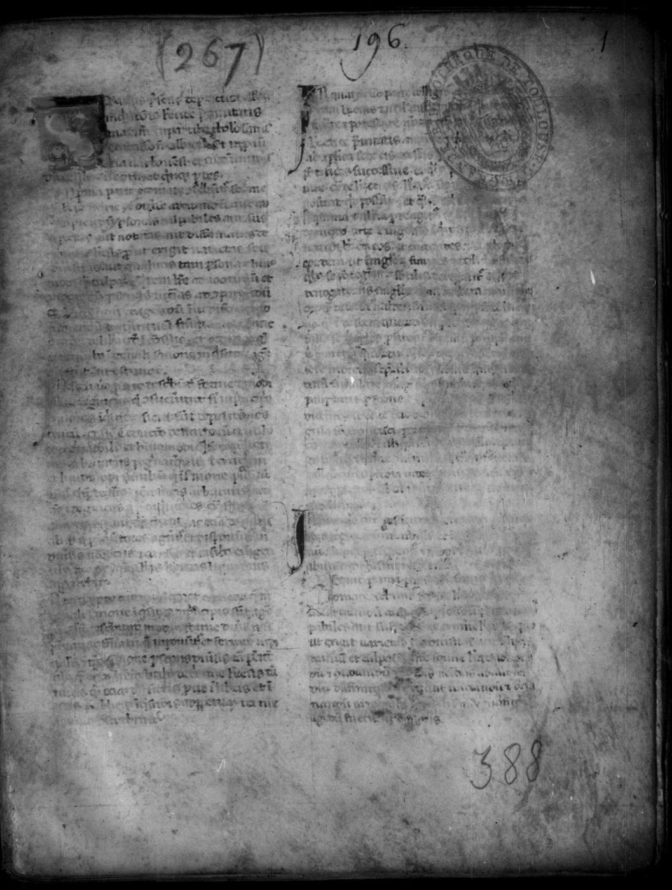
《巴黎條約》（1229年）的簽署徹底終結了朗格多克的獨立地位，並拉開了對卡特里派進行制度化、官僚化清除的序幕 。條約中極其苛刻的政治與宗教條款，徹底切斷了卡特里派的生存命脈 ：
政治與領土的全面轉移
土魯斯伯爵雷蒙七世被迫割讓了其超過半數的領地給法蘭西王室，並將普羅旺斯侯國（Marquisat de Provence）讓渡給天主教會，而羅馬教廷則直接獲取了康塔-維內辛（Comtat Venaissin） 。雷蒙七世之女瓊安（Joan of Toulouse）與法王路易九世之弟阿爾方斯（Alphonse of Poitiers）的聯姻，確保了當兩人在1271年無嗣而終時，整個土魯斯伯國直接、永久地併入法蘭西王室領地 。
軍事防禦的瓦解
南法各大城鎮與城堡的防禦工事（包括土魯斯的城牆）被迫悉數拆除 。這使得那些拒絕改宗的「法伊迪特」（Faydits）——即在戰爭中被剝奪了領地、財產並被逐出家園的南法抵抗派貴族與騎士，失去了打游擊戰的堅固據點 。
宗教裁判所的官僚化清洗
《巴黎條約》賦予了天主教會在搜尋與緝捕異端上的絕對與無上權力 。1230年代，教宗格列高利九世正式將這項任務委託給新興的道明會，建立起「中世紀宗教裁判所」（Medieval Inquisition） 。裁判所不再依循傳統的法庭公開審判，而是轉向一種依靠密告、匿名證詞、系統化檔案記錄以及合法化肉體酷刑的秘密官僚體制 。
在這一整肅過程中，諸多天主教神職人員展現出極端的狂熱 。前吟遊詩人、後任土魯斯主教的富爾克（Foulques of Toulouse）展現出對卡特里派極深的仇恨，甚至親自組建了名為「白衣兄弟會」（White Brotherhood）的私人武裝民兵，在城鎮中大肆搜捕、迫害卡特里派信徒與猶太人 。
《巴黎條約》（1229年）之領土割讓與政治權力轉移
為了精確展現1229年條約對中世紀南部歐洲版圖的重塑，下表詳細列出了其核心的領土變更與地緣政治條款：
| 條約條款類別 | 割讓/變更主體 | 接收方與受益方 | 政治、領土與宗教之具體影響 |
|---|---|---|---|
| 核心領土讓渡 | 割讓土魯斯伯國東部各省及超過半數的領地 | 法蘭西王室（由路易九世及攝政太后布蘭奇代表） | 朗格多克地區的政治權力徹底瓦解，直接納入北部法王權力輻射圈 。 |
| 普羅旺斯權利 | 割讓普羅旺斯侯國（Marquisat de Provence） | 羅馬天主教會（聖座） | 天主教會在南法獲得了直接的世俗行政管轄區，加強了對該區域的控制 。 |
| 教廷專屬領土 | 贈予康塔-維內辛（Comtat Venaissin） | 聖座（Holy See / 教宗） | 該區域成為教宗的直轄領地，並奇蹟般地維持其專屬特權地位直至1791年法國大革命 。 |
| 王室聯姻與繼承 | 雷蒙七世之女瓊安與法王之弟阿爾方斯聯姻 | 法蘭西皇室分支（普瓦捷伯爵） | 確保了土魯斯伯國在1271年兩夫婦無嗣去世後，其餘領土自動收歸法蘭西王室直轄 。 |
| 防務與安全控制 | 拆除土魯斯及南部核心堡壘的防線與城牆 | 無（軍事閹割南法） | 徹底剝奪了南法領主進行軍事抵抗的物理基礎，使地下卡特里信徒無處藏身 。 |
| 司法與裁判權 | 針對宗教裁判所在南法搜捕、審判與沒收財產的絕對特權 | 道明會與地方異端裁判所 | 裁判所凌駕於地方世俗法律之上，建立起依靠密告、酷刑與沒收財產的官僚網絡 。 |
在裁判所的無情運作下，清剿異端的方法被提煉為一套高效且殘酷的官僚技術 ：
- 肉體消滅的技術改良：火刑被視為淨化「腐朽物質肉身」與驅逐靈魂罪惡的終極手段 。為了增加受刑者的痛苦或加速窒息，執行者會使用硫磺浸泡過的襯衫套在受害者身上、在其體表塗抹油脂與鹽分，或採取從足部開始緩慢燃燒的「慢火烘烤」法，甚至在受刑者身上綁上小型炸藥包 。
- 木材質量的政治操縱：燃料的乾濕程度被有意識地當作控制行刑時間的工具 。乾燥的木柴能迅速將受害者燒死，而使用潮濕或新鮮的綠木則會產生大量濃煙，使受害者在痛苦中慢慢窒息而死 。例如，在1244年蒙塞居爾（Montségur）城堡失陷後的集體火刑中，由於前一日天降雨雪，執行者便順理成章地使用潮濕的木柴，使兩百多名「完美者」在窒息的痛苦中死去 。
- 死後審判與掘屍焚骨：裁判所的清洗範圍甚至延伸至墓穴 。凡是死後被追訴、控告為異端同情者的死者，其屍骨會被重新掘出並公開焚燒 。這不僅在世俗層面伴隨着對其後代財產的追溯性沒收，在宗教層面更徹底摧毀了卡特里派「保存完好遺體以待復活」的終極信仰期望 。
- 社會孤立與黃色十字架：對於那些在死亡威脅下選擇妥協、改宗懺悔的信徒，裁判所強制要求他們在日常外衣的前胸與後背縫製醒目的雙黃色十字架 。這種視覺標記使悔改者在社群中承受永久性的社會孤立與政治、經濟歧視 。 隨著1244年蒙塞居爾堡壘的陷落，以及1276年義大利北部的最後避難所——加爾達湖畔西爾米奧奈（Sirmione）城堡被攻克、大批信徒被押往維羅納競技場公開處死，卡特里派在西歐的公開活動宣告終結 。1321年，最後一位活躍於南法的「完美者」威廉·貝利巴斯特（William Belibaste）在帕米埃主教雅克·富尼埃的精準誘捕下被處以火刑，標誌著該教派在拉丁西方的組織性存在徹底消亡 。
七、 富尼埃登記簿與《蒙塔尤》：歷史人類學視角下的思想異質性
在歷史文獻的保存上，卡特里派遭遇了極具諷刺意味的命運 。由於教廷下令系統性地焚毀所有卡特里派的手稿與典籍，後世對該教派的認知主要來自其敵對者——審判官的審訊記錄（如《里昂卡特里儀軌》 Rituel Cathare de Lyon 等少數殘卷例外） 。其中最為著名的文獻，莫過於保存於梵館圖書館、由帕米埃主教雅克·富尼埃（Jacques Fournier，後於1334年登基為教宗本篤十二世）親自編纂的《富尼埃登記簿》（Fournier Register，Vat. Lat. MS. 4030） 。
微觀歷史的無價窗口
在1318至1325年間，富尼埃在比利牛斯山深處的小村莊蒙塔尤（Montaillou）開展了極為詳盡的異端審問，詳細記錄了數百名村民的口供 。這份卷宗因其驚人的細緻度，錄入了大量關於村民日常生活、性愛糾葛、社交網絡及靈魂觀念的細節 。1975年，法國歷史學家埃馬紐埃爾·勒華·拉杜里（Emmanuel Le Roy Ladurie）以此為基礎，出版了微觀歷史學名著《蒙塔尤》，生動再現了貴族女性貝特朗·德·普拉尼索勒（Béatrice de Planissoles）、牧羊人皮埃爾·莫里（Pierre Maury）及神父克萊格兄弟（Clergue brothers）等底層人物的精神世界與日常生態 。
審訊檔案中的思想異質性
《富尼埃登記簿》最為關鍵的學術價值在於，它揭示了南法社會中的「異端信仰」並非天主教宣傳中那種單一、死板且高度系統化的二元論神學，而是混雜了質疑、實用主義與本土懷疑論的複雜思想集合 。在裁判所的逼問下，許多底層民眾展現出對所有建制化宗教的根本性懷疑 ： * 聖餐與靈魂的質疑：梅爾維爾村（Merviel）的婦女奧德（Aude）公開向其姨母表達對聖餐禮的質疑，認為祭壇上的無酵餅裝絕不可能是基督的真實肉身 。奧爾諾拉克（Ornolac）的吉耶梅特（Guillemette）雖然相信天主與聖母，卻堅定地懷疑靈魂是否存在 。 * 唯物主義宇宙觀：村民雷蒙（Raimond）的言論更具革命性，他公開宣稱「世界從未被神創造，而是自古以來便一直存在」 。他認為肉身復活純屬神話，天主教祭司的儀式毫無意義，甚至直言「基督並非由神聖力量孕育，而是像世間所有人一樣，是通過男女交合而生的」 。 這顯示，中世紀南法的思想危機在很大程度上是一種自發的、帶有唯物與理性色彩的平民懷疑論 。然而，裁判所高度發達的官僚體系卻固執地將所有這些異質的懷疑與反叛，強行塞入「曼尼希異端」的罪名框架中，以便實施標準化的肉體清除與財產沒收 。這也引發了現代史學家的反思，如歷史學家彼得·拉格魯（Pieter Lagrou）指出，《富尼埃登記簿》實質上是一份記錄底層民眾在面臨國家與教會暴力壓迫時，如何採取妥協、密告與生存策略的「創傷檔案」，而非簡單展現了中世紀農民心態史的「常態長編」 。
八、 歷史餘音與長遠影響：權力秩序的形塑與當代文化記憶
卡特里派作為一個宗教實體的消亡，並未結束其對歐洲歷史軌跡的深遠干預 。這場權力、信仰與鐵血的博弈，在多個維度上重塑了歐洲的歷史進程 ： 1. 壓迫性社會秩序與階級控制技術的萌芽 阿爾比十字軍東征與隨後建立的宗教裁判所，成為西歐封建社會向近現代國家過渡期間，建立壓迫性社會秩序的里程碑 。裁判所發展出的秘密監視、官僚化檔案登錄、財產追溯性沒收以及依靠舉報與「背叛鄰里」來獲取寬大處理的治理邏輯，為日後現代早期資本主義世界中更具規模的階級統治與思想整肅技術（如近代女巫審判與政治清洗）奠定了行政與制度模板 。 2. 「對內聖戰」機制的常態化 阿爾比十字軍打破了十字軍運動原本僅能針對非基督徒（如伊斯蘭領地）的邊界，確立了羅馬教廷動用世俗軍事力量對西歐內部異見人士進行肉體清剿的「內部聖戰」先例 。此後，類似的聖戰被頻繁應用於神聖羅馬帝國、波士尼亞、波羅的海地區，甚至直接演變為天主教會整肅政治對手的常規工具 。 3. 法蘭西中央集權與奧克文化的邊緣化 1271年土魯斯伯國正式併入法王直轄領地，標誌著法蘭西王國在南部中央集權進程上的決定性勝利 。然而，這伴隨着對南法獨特語言（奧克語）以及繁榮的吟遊詩人文化的邊緣化與降維打擊，其鮮明的地域文化與巴塞隆納伯爵的跨境地緣影響力均被極大削弱，促成了法蘭西民族國家內部邊疆的文化一體化 。 4. 近現代思想與靈性認同的投射 在近現代，卡特里派經歷了多輪「觀念上的復活」 。十九世紀以來，新教歷史學家常將卡特里派奉為宗教改革的早期先驅，讚賞其對教皇權威的反抗 。二十世紀的知識分子如哲學家西蒙娜·韋伊（Simone Weil）與神祕主義學者奧托·拉恩（Otto Rahn），則從其教義中尋求對抗世俗集權、反對物質主義的精神養分 。
在當代，卡特里派的歷史遺存已融入奧克西塔尼亞（Occitania）的區域認同中，其著名的「奧克十字」（Occitan Cross）被廣泛用作反抗中央集權、宣示南方文化主體性的符號 。伴隨着二十一世紀心靈危機而來的，是蓬勃發展的「卡特里朝聖旅遊業」，無數現代遊客穿梭於比利牛斯山的廢墟與古道（如「卡特里步道」 Sentier Cathare）之間，在那些被焚燒殆盡的「善人」與「純潔者」的廢墟中，尋求替代性的歷史意義與心靈淨化 。
結論：信仰、權力與歷史書寫的終極角力
卡特里派在中世紀晚期的興起與被消滅，不應僅僅被視為一場神學上的正邪之爭，而是一次關於宇宙認知、地方自治與中央集權國家權力在肉體與靈魂層面的激烈碰撞。卡特里派二元宇宙觀中對物質世界的徹底絕望與唾棄，使其發展出令世俗政權與建制教會均感到極度不安的禁慾與反社會體制實踐；而南法領主對其的寬容，則將這場信仰分歧推向了地緣政治對抗 the 風口浪尖。
阿爾比十字軍東征的鮮血與宗教裁判所的極刑，雖然在物理上將這一古老的二元論信仰連根拔起，甚至在南法的土地上實施了被當代學者定義為「文化與宗教種族滅絕」的暴力整肅，但它卻無法阻擋其歷史餘音的蔓延 。從法蘭西集權帝國版圖的奠定，到中世紀官僚壓迫技術的成熟，再到《富尼埃登記簿》中意外流傳下來的、生動蓬勃的平民懷疑論，卡特里派以一種悲劇性的方式重塑了歐洲的制度面貌。在歷史的宏大敘事中，那些在火刑柱上化為灰燼的「善人」，最終化作了現代奧克西塔尼亞文化認同與人類精神追尋中，一抹永不褪色的幽光 。
引用的著作
- The Devil's World
- Catharism - Wikipedia
- Catharism | Templars Wiki - Fandom
- Fires in history: the cathar heresy, the inquisition and brulology* - PMC
- 阿爾比十字軍 - 維基百科
- Catharism - Military Wiki | Fandom
- Albigensian Crusade - Wikipedia
- Albigensian Crusade | French Religious War, Cathar Heresy | Britannica
- Siege of Toulouse (1217–18) | Description & Significance | Britannica
- Bogomil | Medieval Bulgarian Religious Sect - Britannica
- Overview of Catharism: Beliefs and History | PDF - Scribd
- Cathari | Medieval Christian Sect & Beliefs | Britannica
- Cathari summary | Britannica
- Dualism | Definition, Religion, Examples, Significance, & Facts - Britannica
- "Resurrection of a Heretic Religion Through Pilgrimage: the Cathar Case Study" by Pierre Fournie - Arrow@TU Dublin
- Albigensian Crusade - World History Encyclopedia
- The Medieval Crusade Against the Cathars Supplied a Template for Modern Oppression
- Siege of Toulouse (1217–1218) - Wikipedia
- Treaty of Paris | 1229 | Britannica
- Treaty of Paris (1229) - Wikipedia
- Joan, Countess of Toulouse Facts for Kids
- Montaillou to ICE: The Medieval Roots of Snitching - Medievalists.net
- Fournier Register - Wikipedia
- The Cathars
- în 1320 the bishop of pamiers, jacques fournier (ca. 1280-1342) - UCSB History Department
- Montaillou (book) - Wikipedia
- The Inquisition Record of Jacques Fournier Bishop of Pamiers 1318-1325 - Online Medieval Sources Bibliography
- 阿尔比十字军 - 维基百科
聖本篤會規(德)
聖本篤會規(德)
全文大意：這份文件是天主教西方隱修制度的奠基之作《聖本篤會規》（Regel des heiligen Benedikt）的德語譯本與中文解析，確立了修士日常修行、順從、謙遜與修道院生活的核心規範。 📎 德文原文出處：Abtei St. Hildegard - Die Regel des hl. Benedikt
《本篤會規》：歷史與精神
什麼是《本篤會規》？
《本篤會規》（Rule of Saint Benedict）是由努西亞的聖本篤（Saint Benedict of Nursia）在公元 6 世紀左右（約 516 年）為隱修院修士所撰寫的一套生活守則與管理指南。 它不僅是天主教「本篤會」的基石，更是西方基督宗教隱修制度（Monasticism）中影響最深遠的法律與靈修經典。在當時戰亂頻仍、社會動盪的歐洲，這本會規為修院建立了一套極具組織性、規律性且兼顧人性的生活模式。
核心精神與生活戒律
聖本篤撰寫這本會規時，核心目標是帶領修士在群體生活中修行。其最著名的格言是： 「祈禱與工作」（Ora et labora） 聖本篤認為，修士的生活不該只有枯燥的苦修，而應該在「靈性追求」與「現實勞作」之間取得平衡。《本篤會規》的主要內容與特色包括：
- 規律的作息（定時祈禱）：將一天的時間嚴格劃分。修士們每天要集體祈禱 7 到 8 次（稱為「日課」），其餘時間則分配給體力勞動、閱讀聖經（聖讀）與休息。
- 絕對的服從與謙遜：修院由「院長」（Abbot）治理，院長代表基督。修士必須絕對聽從院長的指揮，並透過日常的服事來磨練謙遜的品格。
- 定居願（Stability）：這是本篤會非常特殊的規定。修士一旦加入某間修院，原則上就必須終身留在那裡，不能像當時許多流浪修士一樣到處遊蕩。這在混亂的時代建立了一種極高的社群穩定性。
- 財產共有（神貧）：修士個人不得擁有任何私產，從衣服、鞋子到書本，一切生活必需品都由修院統一分配，所有人共享。
- 靜默與款待：會規強調言語的謹慎，避免無意義的閒聊。同時，它也特別規定修院必須熱情款待任何前來拜訪的旅人或窮人，「視他們如基督一般」。
為什麼它在歷史上這麼重要？
如果《本篤會規》只是一本宗教手冊，它的影響力不會擴及整個歐洲。它之所以偉大，是因為它在西羅馬帝國滅亡後的「黑暗時代」扮演了文明延續的角色：
- 歐洲文化的救星：因為會規規定修士必須閱讀，本篤會的隱修院因此成為中世紀早期的學術與文化中心。修士們在「抄寫室」裡日以繼夜地抄寫聖經、神學著作，甚至保留了大量古希臘羅馬的哲學與科學文獻。
- 農業與經濟的推手：會規強調「勞動」的價值。修士們帶頭開墾荒地、排乾沼澤、改良釀酒與農業技術，成為當時歐洲各地的「模範農夫」，帶動了地方經濟的復甦。
- 現代管理學的先驅：出人意料的是，這本會規非常注重彈性與人性關懷。它雖然嚴格，但也寫明院長在制定規則時必須考慮弱者與生病者的需求，且重大決策必須諮詢全體修士的意見。這種「有原則、有彈性」的組織架構，被不少現代管理學者視為極具智慧的行政範本。
簡單來說，《本篤會規》是一本結合了「嚴格紀律」與「人性同理心」的生活實踐手冊，它成功將宗教的狂熱轉化為穩定社會的制度，並深深重塑了歐洲文明的樣貌。
Die Regel des heiligen Benedikt (verfasst um 540 in dem von ihm gegründeten Kloster Montecassino) ist nach der Heiligen Schrift für uns Nonnen und Mönche bis heute das wichtigste Buch (übrigens ist es nach der Bibel auch das weitverbreitetste Buch in der ganzen Welt überhaupt). Aus ihr schöpfen wir die Quellen unseres klösterlich-monastischen Lebens, aus ihr leben wir als einzelne und als Gemeinschaft. Wir möchten Ihnen den spirituellen Reichtum dieses Werkes nicht vorenthalten, sondern Sie ermuntern, sich darin zu vertiefen und Wege gelebten Glaubens zu entdecken. Wer sich über die Lektüre hinaus mit der Benediktusregel beschäftigen möchte, dem empfehlen wir den jüngst erschienenen Kommentar zur Benediktusregel, herausgegeben im Auftrag der Salzburger Äbtekonferenz, Eos-Verlag, St.Ottilien 2002).
《聖本篤會規》（約於公元 540 年在他所創立的蒙特卡西諾修道院中撰寫）對我們修士和修女而言，是僅次於《聖經》之外至今最重要的書（順帶一提，它也是全球僅次於《聖經》傳播最廣的書籍）。我們從中汲取隱修生活（修道生活）的源泉，並以此作為個人與團體的日常準則。我們不想向您隱瞞這部著作的精神財富，而是鼓勵您深入其中，發掘實踐信仰的道路。對於閱讀之外還想進一步研究《聖本篤會規》的人，我們推薦最近出版的《聖本篤會規註釋》（由薩爾茨堡院長會議委託出版，Eos-Verlag, St.Ottilien 2002）。
- Die Regel des heiligen Benedikt（聖本篤會規）： 由西方隱修制度之父聖本篤（Benedict of Nursia）於公元 6 世紀左右撰寫的修道生活指南，是天主教西方隱修院制度（特別是本篤會）的核心規範與精神基石。
- Kloster Montecassino（蒙特卡西諾修道院）： 位於義大利的一座歷史悠久的修道院，由聖本篤於公元 529 年左右建立，是本篤會的發源地。
- Prolog（序言）： 在此指《聖本篤會規》的導言，主要在呼籲修士們從靈性的沉睡中醒覺，拿起順從的盾牌，跟隨基督。
Höre, mein Sohn, auf die Weisung des Meisters, neige das Ohr deines Herzens, nimm den Zuspruch des gütigen Vaters willig an und erfülle ihn durch die Tat! So kehrst du durch die Mühe des Gehorsams zu dem zurück, den du durch die Trägheit des Ungehorsams verlassen hast. An dich also richte ich jetzt mein Word, wer immer du bist, wenn du nur dem Eigenwillen widersagst, für Christus, den Herrn und wahren König, kämpfen willst und den starken und glänzenden Schild des Gehorsams ergreifst.
我兒，你要聽從導師的訓示，側耳傾聽你心中的聲音，甘心接受仁父的勸勉，並以實際行動付諸實行！如此，你便能藉著順從的辛勞，重新回到那因不順從的怠惰而離開的祂身邊。因此，無論你是誰，只要你願意放棄自己的私意，為了主基督——真正的君王——而奮戰，並拿起順從這堅固且光輝的盾牌，我現在就是對你說話。
- Höre, mein Sohn（我兒，你要聽）： 這是《本篤會規》極具象徵意義的開頭第一字（拉丁語：Ausculta, o fili），展現了屬靈父親對修士溫柔的召喚，也是整個西方修道文學中最著名的開場白之一。
- Gehorsam（順從 / 服從）： 本篤會規的核心美德之一。會規將順從視為一種「辛勞（Mühe）」，用以克服因不順從（Ungehorsam）所產生的屬靈怠惰，重新回歸天主。
- Schild des Gehorsams（順從的盾牌）： 引用了聖保祿宗徒在《以弗所書》中關於「天主的全副武裝」的隱喻，修士被描繪為效忠於基督（真正的君王）的屬靈戰士。
Vor allem: wenn du etwas Gutes beginnst, bestürme ihn beharrlich im Gebet, er möge es vollenden. Dann muss er, der uns jetzt zu seinen Söhnen zählt, einst nicht über unser böses Tun traurig sein. Weil er Gutes in uns wirkt, müssen wir ihm jederzeit gehorchen; dann wird er uns einst nicht enterben wie ein erzürnter Vater seine Söhne; er wird auch nicht wie ein furchterregender Herr über unsere Bosheit ergrimmt sein und uns wie verkommene Knechte der ewigen Strafe preisgeben, da wir ihm in die Herrlichkeit nicht folgen wollten.
首先：當你開始任何善工時，要恆切地祈求祂，願祂親自促成其圓滿。這樣一來，那已將我們列為其子嗣的祂，未來便不致因我們的惡行而憂傷。因為祂在我們內成就美善，所以我們必須隨時順從祂；如此，祂未來便不會像一位憤怒的父親那樣剝奪兒子的繼承權；祂也不會像一位令人畏懼的主人那樣，因我們的邪惡而發怒，將我們這些墮落的僕人交給永恆的刑罰，因為我們不願跟隨祂進入榮耀之中。
- bestürme ihn beharrlich im Gebet（恆切地祈求祂）： 強調祈禱的持續性與專注性。修道生活是一場在上帝恩寵引導下的善工，修士的每一項行動都應以祈禱為起點。
- enterben（剝奪繼承權）： 封建與羅馬法律用語。聖本篤以此警告修士，若不順從天主的恩寵與誡命，將可能失去作為「天主子嗣」所享有的永恆天國繼承權。
Stehen wir also endlich einmal auf! Die Schrift rüttelt uns wach und ruft: „Die Stunde ist da, vom Schlaf aufzustehen.“ Öffnen wir unsere Augen dem göttlichen Licht und hören wir mit aufgeschrecktem Ohr, wozu uns die Stimme Gottes täglich mahnt und aufruft: „Heute, wenn ihr seine Stimme hört, verhärtet eure Herzen nicht!“ Und wiederum: „Wer Ohren hat zu hören, der höre, was der Geist den Gemeinden sagt!“
因此，讓我們終於站起來吧！聖經正喚醒我們並呼喊著：「現今正是該從睡夢中醒來的時刻了。」讓我們對天主的光明敞開雙眼，並用驚醒的耳朵聆聽天主的聲音每日對我們的告誡與呼喚：「今天，如果你們聽見祂的聲音，切莫硬起你們的心！」又說：「有耳可聽的，就應當聽聖神對各教會所說的話！」
- vom Schlaf aufzustehen（從睡夢中醒來）： 引用聖經《羅馬書》13:11，隱喻修士應當擺脫靈性的昏沉與怠惰，主動警醒，回應上帝的召喚。
- göttlichen Licht（天主的光明）： 指基督的真光，是照亮隱修生活前行的靈性之光。
Und was sagt er? „Kommt, ihr Söhne, hört auf mich! Die Furcht des Herrn will ich euch lehren. Lauft, solange ihr das Licht des Lebens habt, damit die Schatten des Todes euch nicht überwältigen.“ Und der Herr sucht in der Volksmenge, der er dies zuruft, einen Arbeiter für sich und sagt wieder: „Wer ist der Mensch, der das Leben liebt und gute Tage zu sehen wünscht?“ Wenn du das hörst und antwortest: „Ich“, dann sagt Gott zu dir: „Willst du wahres und unvergängliches Leben, bewahre deine Zunge vor Bösem und deine Lippen vor falscher Rede! Meide das Böse und tu das Gute; suche Frieden und jage ihm nach! Wenn ihr das tut, blicken meine Augen auf euch, und meine Ohren hören auf eure Gebete; und noch bevor ihr zu mir ruft, sage ich euch: Seht, ich bin da.“
祂說了些什麼？「孩子們，來聽我說！我要教導你們敬畏上主。乘著你們還有生命之光的時候快跑，免得死亡的陰影壓倒你們。」上主在向眾人呼喊時，也在為自己尋找一名工人，祂又說：「誰是那熱愛生命、渴望看見美好日子的人？」當你聽見並回答說「我」時，天主便會對你說：「如果你想要真實且永恆的生活，就要禁止你的舌頭作惡，禁止你的嘴唇說欺詐的話！要遠離邪惡，行善奉公；尋求和平，並全力追求它！若你們這樣做，我的眼睛就會注視著你們，我的耳朵就會傾聽你們的祈禱；在你們向我呼求之前，我就會對你們說：看，我在這裡。」
- Furcht des Herrn（敬畏上主）： 智慧的開端。在修道生活中，「敬畏天主」是謙遜階梯的第一級，是避免犯罪、專注於上帝臨在的基石。
- Arbeiter（工人）： 聖本篤將修士比喻為天主的「工人」，在修道院這個「作坊」中，利用靈性藝術的工具（如會規、祈禱、勞動）來服務。
Liebe Brüder, was kann beglückender für uns sein als dieses Word des Herrn, der uns einlädt? Seht, in seiner Güte zeigt uns der Herr den Weg des Lebens. Gürten wir uns also mit Glauben und Treue im Guten, und gehen wir unter der Führung des Evangeliums seine Wege, damit wir ihn schauen dürfen, der uns in sein Reich gerufen hat. Wollen wir in seinem Reich und in seinem Zelt wohnen, dann müssen wir durch gute Taten dorthin eilen; anders kommen wir nicht ans Ziel. Fragen wir nun mit dem Propheten den Herrn: „Herr, wer darf wohnen in deinem Zelt, wer darf weilen auf deinem heiligen Berg?“
親愛的弟兄們，還有什麼比上主邀請我們的這番話更令人欣喜的呢？看啊，上主在祂的仁慈中向我們指示了生命之路。因此，讓我們以信仰和行善的忠誠來束腰，並在福音的指引下行走祂的道路，好使我們得以瞻仰那召喚我們進入祂國度的那位。如果我們想居住在祂的國度與帳幕中，我們就必須藉著善行奔向那裡；否則我們便無法抵達終點。現在，讓我們與先知一同詢問上主：「上主，誰能住在你的帳幕裡？誰能安居在你的聖山上？」
- Führung des Evangeliums（福音的指引）： 聖本篤強調《會規》並非要取代聖經，而是為了協助修士在福音的引導下，更具體地實踐天主的誡命。
- Weg des Lebens（生命之路）： 指邁向永生與與天主共融的靈性窄路。
Hören wir, Brüder, was der Herr auf diese Frage antwortet und wie er uns den Weg zu seinem Zelt weist: „Der makellos lebt und das Rechte tut; der von Herzen die Wahrheit sagt und mit seiner Zunge nicht verleumdet; der seinem Freund nichts Böses antut und seinen Nächsten nicht schmäht; der den arglistigen Teufel, der ihm etwas einflüstert, samt seiner Einflüstung vom Auge seines Herzens wegstößt, ihn zunichte macht, seine Gedankenbrut packt und sie an Christus zerschmettert.“
弟兄們，讓我們聽聽上主如何回答這個問題，以及祂如何為我們指引通往祂帳幕的道路：「那行為無瑕、行事正義的人；那口說真心話、不用舌頭中傷人的人；那不傷害朋友、不羞辱鄰人的人；那將對他耳語的狡猾魔鬼及其誘惑，從他心靈的眼前斥退，使之化為烏有，並抓住魔鬼初生的惡念，在基督身上砸碎的人。」
- Gedankenbrut packt und sie an Christus zerschmettert（抓住魔鬼初生的惡念，在基督身上砸碎）： 這是《本篤會規》中極其強烈且著名的靈性隱喻，源自聖經《詩篇》137:9。意思是當惡念（魔鬼的初生嬰兒）剛剛在心靈中萌芽時，修士應立即將其「砸在基督這塊磐石上」，即立刻訴諸祈禱與基督的聖名來降伏私慾，絕不容許惡念擴大。
Diese Menschen fürchten den Herrn und werden wegen ihrer Treue im Guten nicht überheblich; sie wissen vielmehr, dass das Gute in ihnen nicht durch eigenes Können, sondern durch den Herrn geschieht. Sie lobpreisen den Herrn, der in ihnen wirkt, und sagen mit dem Propheten: „Nicht uns, o Herr, nicht uns, sondern deinen Namen bring zu Ehren.“ Auch der Apostel Paulus hat nichts von seiner Verkündigung als Verdienst angesehen, sagt er doch: „Durch Gottes Gnade bin ich, was ich bin.“ Und er sagt auch: „Wer sich rühmen will, der rühme sich im Herrn.“ Schließlich sagt der Herr im Evangelium: „Wer diese meine Worte hört und danach handelt, ist wie ein kluger Mann, der sein Haus auf Fels gebaut hat. Als nun ein Wolkenbruch kam und die Wassermassen heranfluteten, als die Stürme tobten und an dem Haus rüttelten, da stürzte es nicht ein; denn es war auf Fels gebaut.“
這些人敬畏上主，且不因自己行善的忠誠而傲慢；相反地，他們深知自己內在的美善並非出自個人的能力，而是藉著上主而成就。他們讚美在他們內作工的上主，並與先知一同說道：「上主，不要將榮耀歸於我們，不要歸於我們，而要歸於你的名。」宗徒保祿也不將自己的傳道視為功績，正如他所說：「承蒙天主的恩寵，我才成為今日的我。」他又說：「那要誇耀的，當在主內誇耀。」最後，主在福音中說：「凡聽了我這些話而付諸實行的，就像一個聰明人，把自己的房子蓋在磐石上。狂風暴雨來襲，洪水奔流，暴風颳起並吹襲那座房子，房子卻不倒塌，因為它是建在磐石上的。」
- nicht überheblich（不傲慢）： 謙遜（Demut）是本篤會修士修行的靈魂。聖本篤強調，修士不可將善行歸功於自己，而應將所有榮耀歸於上帝（Soli Deo Gloria）。
- auf Fels gebaut（蓋在磐石上）： 引用聖經耶穌的磐石比喻，修道院與修士的靈修生活必須建立在基督這塊堅不可摧的磐石上，才能抵禦世俗的風雨侵襲。
Nach all diesen Worten erwartet der Herr, dass wir jeden Tag auf seine göttlichen Mahnungen mit unserem Tun antworten. Deshalb sind uns die Tage des Lebens als Frist gewährt, damit wir uns von unseren Fehlern bessern, wie der Apostel sagt: „Weißt du nicht, dass Gottes Geduld dich zur Umkehr führt?“ Denn in seiner Güte sagt der Herr: „Ich will nicht den Tod des Sünders, sondern dass er umkehrt und lebt.“
在說了這一切話之後，上主期待我們每天都用實際行動來回應祂神聖的告誡。因此，我們生命中的日子被賦予為一個期限，好讓我們能改正自己的過錯，正如宗徒所說：「你不知道天主的慈寬是在引導你悔改嗎？」因為上主在祂的仁慈中說道：「我並不喜悅惡人的死亡，而是喜悅惡人離開邪道，得以生存。」
- Frist gewährt（給予期限）： 聖本篤將世俗人生的短暫歲月視為上帝開恩賜予修士的「悔改期限」，修士應當時刻警醒，改過自新，不可虛度光陰。
Brüder, wir haben also den Herrn befragt, wer in seinem Zelt wohnen darf, und die Bedingungen für das Wohnen gehört. Erfüllen wir doch die Pflichten eines Bewohners! Wir müssen unser Herz und unseren Leib zum Kampf rüsten, um den göttlichen Weisungen gehorchen zu können. Für alles, was uns von Natur aus kaum möglich ist, sollen wir die Gnade und Hilfe des Herrn erbitten. Wir wollen den Strafen der Hölle entfliehen und zum unvergänglichen Leben gelangen.
弟兄們，既然我們已經詢問了上主誰能住在祂的帳幕裡，也聽到了居住的條件。那麼，就讓我們履行一個居住者應盡的義務吧！我們必須武裝我們的心靈與肉體來戰鬥，以便能夠順從神聖的訓示。對於一切在我們天性上幾乎不可能做到的事，我們應當懇求上主的恩寵與協助。我們要逃離地獄的刑罰，以獲得永恆不朽的生命。
- Kampf rüsten（武裝戰鬥）： 隱修生活在中世紀被視為一種「屬靈戰爭」（Militia Christi），修士是基督的精兵，其武器不是鐵劍，而是順從、祈禱、克己與愛德。
- Gnade und Hilfe（恩寵與協助）： 聖本篤深刻意識到人性的軟弱，因此強調單憑自身天性無法完成屬靈操練，必須隨時仰賴上帝的恩寵相助。
Noch ist Zeit, noch sind wir in diesem Leib, noch lässt das Licht des Lebens uns Zeit, all das zu erfüllen. Jetzt müssen wir laufen und tun, was uns für die Ewigkeit nützt. Wir wollen also eine Schule für den Dienst des Herrn einrichten. Bei dieser Gründung hoffen wir, nichts Hartes und nichts Schweres festzulegen. Sollte es jedoch aus wohlüberlegtem Grund etwas strenger zugehen, um Fehler zu bessern und die Liebe zu bewahren, dann lass dich nicht sofort von Angst verwirren und fliehe nicht vom Weg des Heils; er kann am Anfang nicht anders sein als eng. Wer aber im klösterlichen Leben und im Glauben fortschreitet, dem wird das Herz weit, und er läuft in unsagbarem Glück der Liebe den Weg der Gebote Gottes. Darum wollen wir uns seiner Unterweisung niemals entziehen und in seiner Lehre im Kloster ausharren bis zum Tod. Wenn wir so in Geduld an den Leiden Christi Anteil haben, dann dürfen wir auch mit ihm sein Reich erben.
此時還有時間，我們仍留在這肉身之中，生命之光仍給予我們時間去成就這一切。現在我們必須快跑，做那些對我們永恆有益的事。因此，我們要建立一所為上主服務的學校。在創立之初，我們希望不要制定任何過於嚴酷或沉重的規範。然而，若是出於深思熟慮的理由而顯得有些嚴格，是為了糾正錯誤和保持愛德，那麼請不要立刻因恐懼而陷入迷茫，也不要逃離救恩之路；這條路在起初不可能不狹窄。然而，凡是在隱修生活與信仰中進步的人，他的心胸就會變得寬廣，並會在無法言喻的愛之福樂中奔向天主誡命的道路。因此，我們絕不要脫離祂的教導，並在修道院中持之以恆地謹守祂的教義，直到死亡。如果我們能這樣耐心地分擔基督的苦難，我們也必將與祂一同繼承祂的國度。
- Schule für den Dienst des Herrn（為上主服務的學校）： 這是《本篤會規》對修道院（Monastery）最著名且深遠的定義（拉丁語：Dominici schola servitii）。修道院不是完人的居所，而是一所學習順從天主、修行愛德的「學校」，修士是學生，在其中逐步成長。
- ausharren bis zum Tod（持之以恆直到死亡）： 這是本篤會修士三大誓願之一的「定居願 / 終身願」（Stabilitas loci）的屬靈根源，承諾終身居於同一所修道院內，不輕易遷徙或放棄修行。
- Herz weit（心胸寬廣）： 描述屬靈成長的至高境界。起初路途狹窄，但隨著信仰與愛德的深化，心靈將獲得前所未有的自由與喜樂。
Wir kennen vier Arten von Mönchen. Die erste Art sind die Koinobiten: Sie leben in einer klösterlichen Gemeinschaft und dienen unter Regel und Abt. Die zweite Art sind die Anachoreten, das heißt Einsiedler. Nicht in der ersten Begeisterung für das Mönchsleben, sondern durch Bewährung im klösterlichen Alltag und durch die Hilfe vieler hinreichend geschult, haben sie gelernt, gegen den Teufel zu kämpfen. In der Reihe der Brüder wurden sie gut vorbereitet für den Einzelkampf in der Wüste. Ohne den Beistand anderer, allein mit eigener Hand und eigenem Arm, gegen die Laster des Fleisches und der Gedanken zu kämpfen, da Gott ihnen hilft.
我們知道修士有四種。第一種是團體隱修士（Koinobiten）：他們生活在修道院團體中，並在會規和院長的領導下服務。第二種是獨居隱修士（Anachoreten），也就是隱士。他們並非出於對修道生活的最初熱忱，而是藉由在修道院日常生活中的考驗，並在許多人的充分培訓與協助下，學會了如何與魔鬼戰鬥。在弟兄們的行列中，他們為在荒野中的個人戰鬥做好了充分準備。在沒有他人援助的情況下，僅憑自己的雙手與臂膀，並在天主的幫助下，去與肉體及思想的惡習搏鬥。
- Koinobiten（團體隱修士）： 源自希臘語 koinobion（共同生活），指遵循共同會規並服從院長管轄的修士。聖本篤認為，這種集體修道制度是「最健全、最穩妥的隱修方式」。
- Anachoreten（獨居隱修士 / 隱士）： 源自希臘語 anachoreo（撤退），指獨自在荒野修行的修士。聖本篤強調，獨居隱修必須先在團體中經過長期的紀律磨練與考驗，否則私自隱修極易陷入狂傲或自欺。
- Abt（修道院長）： 源自亞拉姆語 Abba（父親），代表基督在修道院中引導修士的屬靈父親。
Die dritte und ganz verwerfliche Art von Mönchen sind die Sarabaiten. Sie sind durch keine Regel als Meisterin wie Gold im Ofen geprüft, sondern weich wie Blei geblieben. In ihren Werken halten sie der Welt noch die Treue, and so belügen sie sichtlich Gott durch ihre Tonsur. Zu zweit oder zu dritt, oder auch einzeln ohne Hirten, sind sie eingesperrt, nicht in den Hürden des Herrn, sondern in ihren eigenen Schafställen. Gesetz ist ihnen, was ihnen gefällt und was sie sich aussuchen; was sie für gut halten, nennen sie heilig, was ihnen nicht zusagt, halten sie für unerlaubt. Die vierte Art von Mönchen sind die sogenannten Gyrovagen. Ihr Leben lang ziehen sie von einer Gegend zur anderen und lassen sich für drei oder vier Tage in verschiedenen Klöstern gastlich aufnehmen. Immer unterwegs, niemals sesshaft, dienen sie ihren eigenen Gelüsten und den Freuden des Gaumens; sie sind in allem noch schlimmer als die Sarabaiten. Über das jämmerliche Leben all dieser ist es besser zu schweigen als zu reden. Lassen wir sie also beiseite und machen wir uns mit der Hilfe des Herrn daran, die starkmütige Art, die Koinobiten, zu ordnen.
第三種也是最令人唾棄的修士是「俗世隱修士」（Sarabaiten）。他們不曾接受任何會規作為導師的磨練，未像爐中之金那樣經過試驗，反而像鉛一樣軟弱。他們在行事上依舊對俗世忠誠，顯然是以剃髮來欺騙天主。他們兩三人一組，或者獨自一人，在沒有牧者的情況下，將自己禁閉起來。他們不是待在上主的羊圈裡，而是關在自己的羊棧中。凡是迎合他們喜好和自己挑選的事物，就是他們的法律；他們認為好的就稱為神聖，不合心意的就視為禁忌。 第四種修士是所謂的「流浪修士」（Gyrovagen）。他們一生從一個地方漂泊到另一個地方，在不同的修道院裡借宿三四天接受款待。他們總是流轉不停、居無定所，只一味迎合自己的私慾與口腹之慾；他們在各方面比俗世隱修士還要糟糕。關於這所有人的悲慘生活，與其多談不如保持沈默。因此，讓我們把他們擱置一旁，並在上主的幫助下，著手為最堅韌的種類——團體隱修士——制定規範。
- Sarabaiten（俗世隱修士 / 薩拉巴修士）： 聖本篤會規中提到的第三種修士。這類修士不隸屬於任何正式的修道院團體，也沒有長官與會規的約束，通常按照個人利益或世俗意願生活，被本篤視為虛偽且缺乏修德紀律的修道者。
- Tonsur（剃髮禮 / 削髮）： 天主教修道者或神職人員的一種傳統儀式，將頭頂部分的頭髮剃去，作為奉獻給天主、脫離俗世、甘願順從的外部標誌。
- Gyrovagen（流浪修士 / 巡迴修士）： 聖本篤會規中提到的第四種修士。他們沒有固定的居所，而是在各個修道院之間到處漂泊借宿，尋求安逸與口腹之慾，被本篤強烈譴責為最糟糕、最放縱的修道類型。
Ein Abt, der würdig ist, einem Kloster vorzustehen, muss sich immer bewusst sein, wie er genannt wird, und den Namen eines Oberen durch seine Taten einlösen. Es wird ja geglaubt, dass er im Kloster die Stelle Christi vertritt, da er ja mit dessen Namen angeredet wird, sagt doch der Apostel: „Ihr habt den Geist der Sohnschaft empfangen, in dem wir rufen: Abba, Vater!“ Deshalb darf der Abt nichts lehren, bestimmen oder befehlen, was gegen die Weisung des Herrn verstößt. Seine Anordnung und Lehre sickere wie das Sauerteig göttlicher Gerechtigkeit in die Herzen der Jünger ein. Immer sei sich der Abt bewusst, dass seine Lehre und der Gehorsam seiner Jünger, beides beim erschreckenden Gericht Gottes auf die Waagschale kommt.
一位配得上主持修道院的院長，必須時時意識到自己被賦予的稱呼，並以實際行動來實踐身為長官的管轄之名。因為人們相信，他在修道院中代表著基督的位置，畢竟他是以基督之名被稱呼的，正如宗徒所說：「你們所接受的是為人子嗣的心靈，在此心靈中我們呼喊：阿爸，父親！」 因此，院長絕不能教導、決定或命令任何違反上主訓示的事。他的命令和教導應當像神聖正義的酵母一樣，滲透進門徒的心中。院長必須時時警醒，他的教導與門徒的順從，這兩者在天主令人敬畏的審判中，都將被放在天平上衡量。
- Abba（阿爸）： 源自阿拉姆語（Aramaic），是孩子對父親極為親暱與信任的稱呼。在新約聖經中，用來表達信徒藉著聖神與天主建立起如同親生父子般親密、深厚的靈性關係。
- Sauerteig（酵母）： 在此處為聖經文學的隱喻，比喻院長的言行與教導應當具有強大的靈性滲透力，能潛移默化地使門徒的心靈產生根本性的轉變。
Keinen Unterschied der Personen mache er im Kloster. Einen liebe er nicht mehr als den anderen, es sei denn, er finde ihn besser in guten Taten und im Gehorsam. Der Freigeborene werde dem aus der Sklavenschaft Kommenden nicht vorgezogen, es sei denn, eine vernünftige Ursache liege vor. Wenn es aber nach der Gerechtigkeit dem Abt so gut scheint, bestimme er für jeden den Platz, welchen Standes er auch sei; andernfalls behalte jeder seinen Ort. Denn ob Sklave oder Freier, wir sind alle eins in Christus und tragen unter dem einen Herrn die gleiche Last des Dienstes. „Denn bei Gott gibt es kein Ansehen der Person.“ Nur in einem unterscheiden wir uns vor ihm: wenn wir uns vor anderen in guten Werken und in der Demut als besser erweisen. Deshalb sei allen von ihm die gleiche Liebe geschenkt, und alle unterwerfe er wegen ihrer Verdienste der gleichen Zucht.
在修道院中，院長不可對人有偏私。除非發現某人在善行與順從上表現更佳，否則不應偏愛某人勝過他人。出身自由的人不應比出身奴隸的人享有優先權，除非有正當合理的理由。但若出於正義且院長認為合適，不論其原本身份為何，他可以為每個人指定應得的位置；否則，每個人應保持原本...的席次。因為無論是奴隸還是自由人，我們在基督內都是一體，並在同一位上主之下承擔同樣的服務重擔。「因為天主是不看情面的。」我們在祂面前唯一的區別，只在於我們是否在善行與謙遜上比他人更為優秀。因此，院長對所有人都應給予同等的愛，並根據每個人的功過，讓所有人接受同樣的管教。
- Ansehen der Person（看情面 / 偏私）： 源自新約聖經的法律與神學用語（拉丁語：acceptio personarum）。聖本篤在此強調，修道院內打破了當時羅馬與中世紀社會極為嚴格的階級制度（自由人與奴隸），在天主與會規面前人人平等。
In seiner Lehre muss der Abt stets das Vorbild des Apostels nachahmen, der sagt: „Weise zurecht, mahne, drohe!“ Das heißt: Er muss die Zeiten mischen, Strenge mit Güte, und so das Verhalten des unerbittlichen Meisters und die liebevolle Art des gütigen Vaters zeigen. Die Unruhigen und Ungebundenen muss er schärfer tadeln; die Gehorsamen, Sanftmütigen und Geduldigen dagegen muss er anflehen, im Guten fortzuschreiten. Die Nachlässigen und Verächter aber, so fordern wir, soll er rügen und bestrafen. Er vergesse auch nicht, dass er die Leitung von Seelen übernommen hat, für die er einmal Rechenschaft ablegen muss. Er sorge sich nicht mehr um die vergänglichen, irdischen und hinfälligen Dinge, als ob er für sie mehr Verantwortung trüge. Vielmehr denke er immer daran, dass er die Sorge für Seelen übernommen hat, von denen er Rechenschaft ablegen muss. Und damit er sich nicht wegen mangelnden Besitzes entschuldige, denke er an das Schriftwort: „Suchet zuerst das Reich Gottes und seine Gerechtigkeit, dann wird euch alles andere dazugegeben.“ Und wiederum: „Nichts fehlt denen, die ihn fürchten.“ Er wisse gewiss: Wer die Leitung von Seelen übernimmt, muss sich darauf einstellen, Rechenschaft abzulegen. Wie groß auch die Zahl der Brüder sein mag, die er unter seiner Sorge hat, für all diese Seelen muss er am Tag des Gerichtes dem Herrn Rechenschaft geben, und zweifellos auch für seine eigene Seele. Wenn er so wegen der Rechenschaft über die ihm anvertrauten Schafe immer in Sorge ist, wird er durch die Sorge um die anderen auch für sich selbst wachsam. Während er durch seine Mahnungen andere zur Besserung führt, befreit er sich selbst von seinen eigenen Fehlern.
在教導時，院長必須始終效法宗徒的榜樣，宗徒說：「要指責、要規勸、要警告！」這意味著：他必須因時制宜，剛柔並濟，既展現出嚴厲導師的鐵面無私，也表現出仁慈父親的關愛之情。對於浮躁與不受約束的人，他必須嚴加指責；反之，對於順從、溫良與堅忍的人，他則應勉勵他們在美善中更進一步。而對於那些疏忽大意和輕慢規矩的人，我們要求他必須予以訓誡與懲罰。院長切不可忘記，自己承擔了帶領靈魂的責任，未來對此必須交代帳目。他不要過度憂慮世俗、短暫且易逝的財物，彷彿對那些身外之物負有更大的責任。相反地，他應時時謹記，自己接受的是對靈魂的關照，對於這些靈魂，他必須毫無保留地交代帳目。為了不讓他以缺乏物資為藉口，他應當記住聖經的話：「你們先該尋求天主的國和祂的正義，這一切自會加給你們。」又說：「敬畏祂的人，一無所缺。」他應當確切知道：凡是承擔靈魂帶領責任的人，必須做好交代帳目的準備。無論他照顧的弟兄人數有多麼龐大，在審判之日，他都必須為所有這些靈魂向上主交代帳目，毫無疑問地，也包括他自己的靈魂。如此一來，因著時時憂慮如何為交託給他的羊群交代帳目，他在關心他人的同時，也會對自己保持警覺。當他藉由告誡引導他人改過遷善時，他也正使自己擺脫自身的過錯。
- Rechenschaft ablegen（交代帳目 / 交帳）： 基督教終末論（末日審判）的核心概念。院長在修道院中不僅是行政主管，更是靈魂的牧者，他在末日不僅要為自己的言行負責，更要為他治下所有修士的靈魂得救與否向天主「交帳」。
Sooft etwas Wichtiges im Kloster zu tun ist, rufe der Abt die ganze Gemeinschaft zusammen und lege selbst dar, worum es geht. Er höre den Rat der Brüder, überlege es bei sich und tue, was er für das Nützlichste hält. Wir haben aber gesagt, alle sollen zum Rat gerufen werden, weil der Herr oft einem Jüngeren offenbart, was das Bessere ist. Die Brüder aber sollen ihren Rat in aller Demut und Unterordnung geben und nicht wagen, ihre Meinung trotzig zu verteidigen. Es liegt vielmehr im Ermessen des Abtes, was zu bestimmen ist, und alle sollen ihm gehorchen. Doch wie es den Jüngern geziemt, dem Meister zu gehorchen, so muss auch dieser alles weise und gerecht ordnen.
每當修道院有重大事務需要處理時，院長應召集全體團體，並親自說明事情的緣由。他應聽取弟兄們的建議，在心中反覆思量，然後做出他認為最有益的決定。我們之所以說所有人不分長幼都應被召集參與商議，是因為上主往往會將更好的見解啟示給年輕的一輩。弟兄們在提供建議時，應當懷著極其謙遜與順從的心，絕不可膽大妄為、固執地為自己的意見辯護。決定權最終仍掌握在院長手中，眾人都應聽從他的安排。然而，正如門徒理應順從導師，導師（院長）本身也必須明智且正義地安排一切。
- Einberufung zum Rat（召集商議）： 本篤會獨特的「修道院民主與靈修分辨」制度。雖然院長擁有最終決定權，但重大事項必須召集全體修士商議，且本篤特別強調「天主常啟示年輕者」，打破了古代社會一味唯長座是從的傳統。
In allem sollen alle die Regel als Meisterin befolgen, und niemand darf unbedacht von ihr abweichen. Niemand im Kloster folge dem eigenen Willen; und niemand ermaße sich, mit seinem Abt trotzig oder gar außerhalb des Klosters zu streiten. Sollte sich das jemand anmaßen, werde er der regelgemäßen Strafe unterworfen. Doch soll der Abt selbst alles mit Gottesfurcht und in der Beobachtung der Regel tun; denn er muss wissen, dass er für all seine Urteile Gott, dem gerechtesten Richter, ohne Zweifel Rechenschaft geben muss. Wenn aber in minderen Dingen für das Kloster etwas zu tun ist, ziehe er nur die Älteren zu Rate, wie geschrieben steht: „Tu alles mit Rat, dann brauchst du nach der Tat nichts zu bereuen.“
在所有事情上，所有人都應將會規視為導師來遵循，任何人都不可輕率地偏離它。在修道院內，任何人都不應盲從自己的私意；更不應有人膽敢傲慢地與院長爭執，甚至在修道院外與其爭吵。若有人膽敢如此，他將受到會規所定的懲罰。然而，院長自己在做一切事情時，也必須心懷對天主的敬畏，並嚴守會規；因為他必須知道，他毫無疑問地要為自己所有的判決，向最公正的審判者天主交代帳目。但如果修道院只需處理一些較次要的事務，院長只需徵詢年長者的意見，正如經上所記：「凡事都要經過商議而行，這樣事後你就不致後悔。」
- Die Regel als Meisterin（將會規視為導師）： 在德文中，「Regel」（會規）是陰性名詞，因此使用陰性的「Meisterin」。聖本篤在此將會規擬人化，強調會規不僅僅是白紙黑字的法律，更是指導修士生活、具有權威的「靈性導師」。
Zuerst: Gott den Herrn lieben aus ganzem Herzen, aus ganzer Seele und aus ganzer Kraft. Dann: den Nächsten lieben wie sich selbst. Dann: nicht töten, nicht die Ehe brechen, nicht stehlen, nicht begehren, kein falsches Zeugnis geben, alle Menschen ehren, und was man sich selbst nicht antun lassen will, das soll man auch keinem anderen antun. Sich selbst verleugnen, um Christus zu folgen. Den Leib züchtigen. Sich nicht den Vergnügungen hingeben. Das Fasten lieben. Arme erquicken, Nackte bekleiden, Kranke besuchen, Tote begraben. Denen in der Not zu Hilfe kommen. Trauernde trösten. Sich dem weltlichen Treiben entziehen. Nichts der Liebe zu Christus vorziehen. Zorn nicht zur Tat werden lassen. Sich nicht auf Rache sinnen. Falschheit nicht im Herzen bergen. Frieden nicht heucheln. Die Liebe nicht opgeben. Nicht schwören, um nicht vielleicht meineidig zu werden. Die Wahrheit mit Herz und Mund bekennen. Böses nicht mit Bösem vergelten. Unrecht nicht tun, sondern getanes geduldig ertragen.
第一：要全心、全靈、全力愛主、你的天主。第二：愛近人如你自己。接著：不可殺人，不可姦淫，不可偷盜，不可貪戀，不可作假見證；要尊重眾人；己所不欲，勿施於人。棄絕自己，以跟隨基督。克己苦身。不沉溺於享樂。喜愛齋戒。救濟窮人，給衣不蔽體者衣穿，探望病人，埋葬死者。援助急難中的人。安慰哀慟的人。遠離世俗的紛擾。不可將任何事物置於對基督的愛之上。不讓憤怒化為行動。不圖謀報復。心中不藏虛偽。不偽裝和平。不放棄愛德。不發誓，以免可能犯下偽證罪。以心以口坦承真理。不以惡報惡。不作不義之事，而是耐心忍受所遭受的不義。
- Die Werkzeuge der geistlichen Kunst（屬靈技藝的工具）： 聖本篤將修道院比喻為一個「工場」（Werkstatt），而修士們在其中進行靈性修煉（行善、祈禱、克己），這些美德與戒律就是他們用來鍛鍊靈魂的「工具」（Werkzeuge）。
- Sich selbst verleugnen（棄絕自己）： 源自《新約聖經》的靈修術語，意指放下個人的自我中心、私慾與驕傲，完全順服於基督的旨意。
- Den Leib züchtigen（克己苦身 / 管教肉身）： 這裡並非指極端的自我折磨（如鞭笞），而是在隱修傳統中，透過齋戒、守夜祈禱和勞動等方式來約束肉體的慾望，使身體能配合靈魂的提升。
📌 文件整理中，未完待續...
英國憲法的歷史演進、修訂機制與憲政奇異性：非法典化體制的理論與實踐研析
聯合王國（UK）的憲法體制在現代民主國家中堪稱最為獨特的範例之一。多數國家在經歷重大歷史轉折點（如獨立、革命、戰敗或政權徹底崩潰）後，皆會制定單一、成文且法典化（codified）的憲法文本[1]。然而，聯合王國因其歷史發展的延續性，並未面臨必須將憲政架構重組至單一法律文本的歷史契機，因而保留了「非法典化憲法」（uncodified constitution）的獨特形態[1]。
這種非法典化憲法常被外界誤稱為「無字天書」或「不成文憲法」，但事實上，其大部分規範均以書面形式存在於不同的歷史文獻、成文法案、司法判例、條約及成文化的憲政慣例（如《內閣手冊》與《部長法規》）之中[1]。正如憲法學者格里菲斯（J. A. G. Griffith）所言：「英國憲法就是實際發生的事……只要行得通，它就是憲法。」[3] 本研究將從其歷史起源、動態修訂機制、沿革脈絡、憲政之奇異性，以及近年（特別是2022年至2026年間）的重大憲政轉型，對英國憲法進行系統性的研析。
英國憲法的多重源頭與結構框架
由於缺乏單一的憲法文本，英國憲法的法律效力與運作規範散見於多個源頭[1]。要理解其運作，必須先釐清其核心源頭的構成關係。
| 憲法源頭類別 | 憲政機制與定義 | 關鍵歷史與當代範例 |
|---|---|---|
| 歷史性憲政法案 (Constitutional Statutes) |
由議會通過、具有憲政根本地位的成文法案，雖無高於一般法案的法律位階，但實質形塑國家權力結構[1]。 | 《1689年權利法案》[1]、《1707年聯合法案》[1]、《1911及1949年國會法》[1]、《1998年人權法案》[1]。 |
| 憲政慣例 (Constitutional Conventions) |
在長期政治實踐中形成、雖無法由法院強制執行但在政治上被視為具有絕對約束力的行為準則[1]。 | 首相必須由在下議院獲得多數信任者擔任[1]；君主必須依據閣員建議行使皇家特權[1]；蘇威爾慣例（Sewel Convention）[8]。 |
| 普通法與司法判例 (Common Law & Judicial Decisions) |
由法院在司法審查與法律解釋中確認的憲政原則，包括對政府濫權的限制與個人自由的保障[2]。 | 《宣言案》（限制國王立法特權）[11]；《米勒案》（確立退出條約須經國會授權）[8]。 |
| 皇家特權 (Royal Prerogative) |
歷史上屬於君主、現今主要由首相及內閣閣員代為行使的行政與外交權力，毋需事先取得國會立法授權[3]。 | 宣戰、外交談判、締結與終止國際條約[7]，以及解散國會並宣佈大選[14]。 |
| 國際法與條約 (International Law & Treaties) |
聯合王國作為主權國家所簽署並經由國會立法轉化為國內法的國際公約與協定[2]。 | 《歐洲人權公約》（經由《1998年人權法案>內國法化）[5]；《溫莎框架》（規範北愛爾蘭特殊經謎地位）[17]。 |
歷史起源與漸進式沿革：從封建契約到議會至上
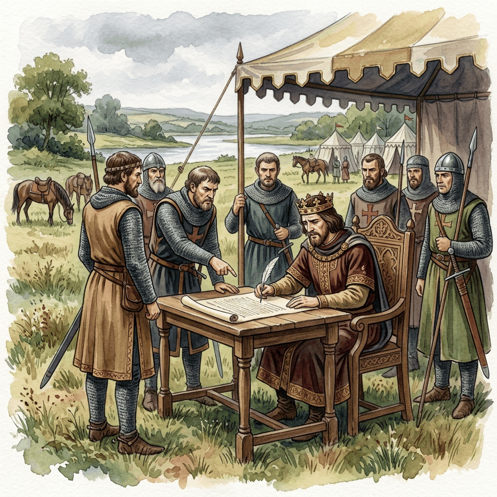
英國憲法的沿革並非一部「和平、漸進且不可阻擋」的線性發展史，而是充滿了暴力衝突、政治危機與務實妥協[4]。每一次重大憲政文獻的誕生，本質上都是對當時政治危機的權宜性回應，並在後世的政治論述中被重新賦予民主與法治的普遍價值[4]。
中世紀的法律約制與王權底線
早在十一世紀，維京君主克努特大帝（Cnut）為安撫英格蘭臣民，便頒布了保障良好王政的保證書，這被視為限制王權的早期嘗試[18]。至1215年，因約翰王在外交與財政上的失敗，面臨貴族階級的武力反抗，被迫於倫德米德簽署《大憲章》（Magna Carta）[18]。該文件初衷並非為全體人民爭取民主權利，而是貴族為了在封建習俗、稅收及司法權上對抗王權壓迫而設計的契約[19]。儘管其後續遭到教宗撤銷並引發戰爭，但經由亨利三世（1216年、1217年、1225年）及愛德華一世（1297年）的多次重申與再版，其確立了「王權必須在法律之下」的憲政共識[4]。
十三世紀法學家布拉克頓（Henry de Bracton）的憲政名言「國王不應受制於人，但應受制於上帝與法律，因為是法律創造了國王」[2]，便在這一脈絡下深植於英國普通法之中[4]。
十七世紀的革命與憲政奠基
十七世紀，斯圖亞特王朝的「君權神授」理念與國會的財政與立法權產生了根本衝突[4]。1610年，首席大法官愛德華·科克（Sir Edward Coke）在《宣言案》中裁定「國王不得以宣告創立新法」[4]；1628年，國會通過《權利請願書》（Petition of Right），運用《大憲章》的法治邏輯反對君主任意逮捕與未經國會同意課稅[2]。
這些衝突最終演變為內戰，並短暫催生了克倫威爾時期的《政府約法》（Instrument of Government）——這是英國歷史上唯一一次實行法典化憲法的嘗試[1]。
1688年的「光榮革命」及隨後通過的《1689年權利法案》（Bill of Rights）和《1701年嗣位法》（Act of Settlement），徹底重塑了聯合王國的權力結構[1]。這些憲政法案確立了： 1. 法律只能由「國王在議會中」（Crown-in-Parliament）制定，非經國會同意，君主不得懸置法律、徵稅或維持常備軍[4]。 2. 法官擁有終身任期制，除非經國會兩院共同投票通過，否則不得免職，從而為司法獨立奠定了制度基石[5]。
聯邦建構與民主化進程
自十八世紀起，英國憲法承載了國家版圖擴張與民主改革的任務。1707年《英蘇聯合法案》與1800年《英愛聯合法案》相繼通過，將不同的法律體系與主權結構相融合，建立了單一制國家[1]。在此過程中，雖然《1707年蘇格蘭新教與長老會法案》宣稱其保護蘇格蘭教會的條款為「不可變更的合約條件」[21]，但在議會主權的法律框架下，後續議會依然擁有對其進行調整的實質權力[11]。
進入十九世紀，隨著工業革命帶來的階級變遷，國會通過了一系列《人民代表法案》，使普選權在1928年後徹底普及[2]。為了配合民主化程序，1911年與1949年的《國會法》將非民選上議院的權力限縮為僅能對非財政法案進行為期一年的拖延，徹底確立了代表主流民意的下議院在立法程序中的絕對至高地位[1]。
憲法修訂機制：無 entrenchment 的靈活性與「方式與形式」理論
英國憲法最顯著的實務特徵在於其「超乎尋常的修訂靈活性」[1]。在多數成文憲法國家，修改憲法需要跨越極高的制度門檻，例如國會三分之二以上的絕對多數決、多數州議會同意或全國性公民投票。然而，在聯合王國，由於沒有「硬性編纂」的單一憲法文本，因此不存在任何實質法律位階高於普通法律的「憲法」[1]。
默示廢除原則與法律平權
在英國法律中，所有由國會通過的法案在位階上皆是平等的[21]。這意味著，一項涉及地方分權結構重組（如《蘇格蘭法案》）或公民基本權利保障（如《人權法案》）的重大憲政法案，其修改或廢除的程序，與修改一項普通交通法規完全一致——只需國會兩院通過簡單多數決，並獲得君主的御准（Royal Assent）即可[5]。
此外，基於「國會不能限制其繼任者」的原則，新通過的法律如果與舊有法律產生衝突，法院將自動適用「默示廢除」（Implied Repeal）原則，判定新法優於舊法[10]。這使得英國憲法能夠極快地響應政治現實與社會變遷，例如移除上議院中的世襲貴族[1]、創設最高法院[1]，以及在2016年公投後迅速執行「脫歐」這項重大的憲政撤銷決策[1]。
「方式與形式」理論（Manner and Form Theory）
儘管戴雪的傳統議會 sovereignty 理論主張國會的立法權在實質上是無限制、無法自我約束的[11]，但二十世紀中葉以來，詹寧斯（Jennings）與後續學者如麥克·高登（Michael Gordon）提出了「方式與形式」理論，試圖在國會主權與憲政程序鎖定（Entrenchment）之間建立調和機制[21]。
該理論主張，國會雖然無法限制未來立法內容的「實質範圍」，但可以合法地對未來修改特定法案的「程序、方式與形式」課予限制[21]。例如，國會可以規定某些涉及核心主權轉移或憲政結構變更的法案（如《2011年歐盟法案》中的公投鎖定條款，或涉及北愛爾蘭地位的條款），必須通過「全英公投」或「特定超多數決（Supermajority）」程序方能修改[21]。
高登指出，這種程序性的限制並不損害民主，反而因為引入了直接民主（公投）或保障了少數群體利益（地方自治同意權），而強化了代議民主體制的合法性與互惠信任[27]。法院的角色在此並非宣告國會法案「無效」，而是確保國會「依據其自身設定的正確合法程序」來制定或修改法律[27]。
英國憲法的奇特之處：政治憲政主義與雙重結構的張力
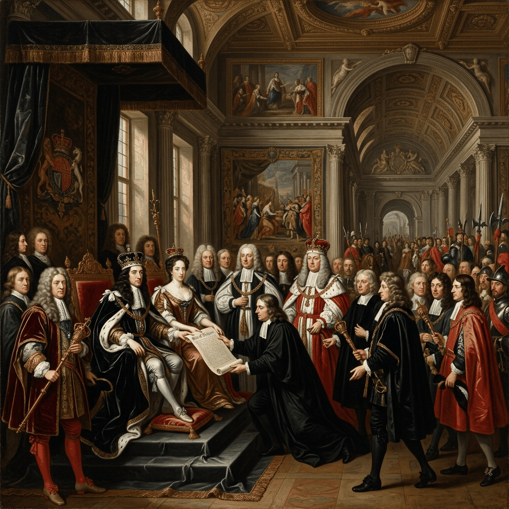
英國憲政最令人費解也最引人入勝的特點，在於其高度依賴非法律性的規範維持運作，這使其呈現出「尊嚴與效能分立」的雙重結構與「政治憲政主義」色彩[27]。
尊嚴與效能的雙重結構
白芝浩在其1867年的名著《英國憲法》中指出，英國憲政體制之所以能在擴大普選與民主轉型中維持社會穩定，全賴於其將國家權力巧妙地切割為兩個部分30： 1. 尊嚴部分（The Dignified Parts）： 由君主與上議院組成[30]。其主要功能在於展示歷史的延續性、皇室的繁複美學與社會階級的優雅姿態[31]。白芝浩認為，尊嚴部分扮演著一種「高尚的謊言」（Noble Lie）或「戲劇化展現」[32]，用以吸引大眾的尊崇與情感依附，讓智識未開的民眾誤以為統治國家的依然是古老的王權與貴族，進而自願服從國家權威[31]。 2. 效能部分（The Efficient Parts）： 由首相、內閣及下議院組成[30]。這是國家實際運作、制定決策與配置資源的權力心臟[31]。在尊嚴部分於前台凝聚社會共識的掩護下，資產階級與技術官僚組成的內閣得以高效、理性地實施治理[31]。 白芝浩指出，這種體制的「效能秘密」在於「行政權與立法權的 Singular Fusion（ singular approximation）」，即通過內閣制將這兩種權力融為一體，使執政黨能夠在不受過多「制衡與分立」干擾下，貫徹政策意志[31]。
政治憲政主義與蘇威爾慣例的實務挫敗
英國憲政制度運作的核心是「政治憲政主義」（Political Constitutionalism），而非多數成文憲法國家實行的「法律憲政主義」（Legal Constitutionalism）[27]。前者主張，對政府權力的最終約束應來自於政治手段（如國會辯論、大選問責、內閣集體負責及輿論監督）[1]，而非法院的司法宣告[2]。
這種對「政治承諾與信任」的依賴，在權力下放體制（Devolution）與脫歐危機的碰撞中，暴露了其結構性的軟肋[8]。
1999年以來建立的「蘇威爾慣例」規定，倫敦中央國會「通常」不會在未獲得蘇格蘭議會、威爾斯議會或北愛爾蘭議會通過「立法同意動議」（Legislative Consent Motion）的情況下，針對下放自治領域的事務進行立法[6]。為了加強地方安全感，該慣例隨後被明文編入《2016年蘇格蘭法案》與《2017年威爾斯法案》之中[6]。
然而，在2016年歐盟公投中，蘇格蘭與北愛爾蘭多數選民選擇「留歐」，而英格蘭與威爾斯則選擇「脫歐」[37]。當倫敦政府強行推動脫歐程序時，地方議會拒絕給予立法同意[9]。在最高法院的「米勒案第一判決」（Miller I）中，地方政府主張，既然蘇威爾慣例已寫入成文法，法院應判定中央政府在未獲地方同意前不得啟動脫歐立法[6]。
最高法院作出了極其經典的政治憲政主義判決： * 法院一致認定，儘管國會在成文法中「承認」了該慣例，但這並未改變其作為「憲政慣例」的本質[6]。 * 憲政慣例雖然在政治上具有極高的約束力，且違反者可能面臨嚴重的政治後果（如失去政權、激發獨立運動）[6]，但其本質上不是法律，因此「如何界定其範圍與監督其執行，不在司法機關的憲法職權範圍之內」[6]。 * 法院確認，倫敦議會主權在法律上永遠是至高無上的，地方議會並不具備實質的憲政否決權[6]。 這項判決清楚展現了英國憲法的奇特本質：即使將慣例「成文化」，其在法院眼中依然是政治協議，無法轉化為限制議會主權的法律武器[6]。
地方議會立法同意動議審議實務（1999年－2026年5月）
為量化呈現「蘇威爾慣例」在政治實踐中的實際運作與近年來（尤其是脫歐以來）緊張關係的加劇，下表彙整了1999年至2026年5月間，各地方自治議會對倫敦主要法案之同意與否決情形。
| 自治區域與議會 | 批准立法同意動議 (Consent Granted) | 拒絕/未予同意動議 (Consent Withheld) | 憲政摩擦與爭議核心議題 |
|---|---|---|---|
| 蘇格蘭議會[8] (Scottish Parliament) |
217 次[9] | 15 次[9] | 集中於《歐盟撤回法案》及後續脫歐相關法案、農業與環境管制標準衝突[7]。 |
| 威爾斯議會[8] (Senedd Cymru) |
111 次[9] | 21 次[9] | 反對倫敦單方面限縮地方環境與市場監管權力，對《2020年國內市場法》強烈反彈[6]。 |
| 北愛爾蘭議會[8] (Northern Ireland Assembly) |
101 次[9] | 2 次[9] | 受到議會多次長期停擺影響，主要爭議集中在脫歐後的愛爾蘭海邊界與《溫莎框架》落實[9]。 |
| 總計 (Total Across Devolution) |
429 次 | 38 次 | 歷史上極為罕見，但脫歐期間（2018-2020年）出現集體拒絕同意《歐盟撤回協議法案》之憲政危機[9]。 |
| ## 現代變革與憲政轉型：2022年至2026年的關鍵變局 | |||
| 自2022年起，英國憲法經歷了自1998年布萊爾憲政改革以來，制度變更最為密集、權力分立張力最為顯著的轉型期。這些變革深化了行政主導權力，同時徹底重組了國會的古老結構[15]。 | |||
| ### 行政權解散國會權的復活與司法排除條款（2022年） | |||
| 2011年通過的《定期國會法》（Fixed-term Parliaments Act 2011）曾試圖將解散國會、提前大選的特權移交給國會，以法定五年的固定任期限制首相的隨意解散權[14]。但在經歷了2017至2019年間因該法導致的多次大選受阻與政治僵局後[15]，國會於2022年通過《2022年議會解散與召集法》（Dissolution and Calling of Parliament Act 2022），正式废除《定期國會法》[14]。 |
該法案的核心機制包括： 1. 特權復活： 明文使解散國會與召集新國會的「皇家特權」重新生效，「宛如《定期國會法》從未制定過一樣」[14]。首相重新獲得在五年內隨時、戰略性挑選最有利時機解散國會的主導權[15]。 2. 極致的司法排除（Ouster Clause）： 該法案第3條明定，任何法院或法庭皆「不得以任何形式質疑」國會解散與召集權限的行使、相關決定，或該權力的界線與範圍[14]。 此排除條款是立法與行政部門對最高法院在2019年判定強森政府休會決定「違法且無效」的強烈制度性反撲，旨在重新築起一道司法無法跨越的防火牆，確保核心政治決策的非司法化（Non-justiciability）[14]。
上議院世襲特權的徹底終結：《2026年上議院（世襲同儕）法》
2024年工黨政府上台後，隨即履行其競選承諾，推動對上議院進行第二階段的結構性改革[39]。經過兩院長達18個月的角力與審議，國會通過了《2026年上議院（世襲同儕）法》（House of Lords (Hereditary Peers) Act 2026），該法於2026年3月18日獲得御准，並於2024-26會期結束之日（2026年4月29日）全面生效[17]。
該法案徹底廢除了1999年妥協案遺留下來的歷史尾巴24： * 全面驅逐世襲貴族： 廢除《1999年上議院法》第2條，取消90名世襲貴族在上議院保留席次、參政與投票的權利[24]。上議院自此僅由「終身同儕」（Life Peers）與「神職同儕」（Lords Spiritual）組成[24]。 * 廢除補選與資格主張審查： 廢除世襲貴族議席空缺時的補選機制，並終止上議院自身對世襲同儕繼承主張（Claims）的司法管轄權，將相關業務移轉予樞密院司法委員會[24]。 * 無行為能力同儕的退場機制： 修正《2014年上議院改革法》，允許第三方法定代理人在議員喪失心智能力時，代其提交正式退休或辭職通知[39]。 為使法案順利過關，政府同意作為妥協，向少數極為活躍的世襲貴族頒發新的終身貴族頭銜，使其得以留在議會[39]。這項法案的落實，代表著英國憲政在二十一世紀清除了中世紀貴族世襲立法權的最後一塊拼圖[17]。
司法能動主義的社會微觀裁決（2025年－2026年）
在宏觀憲政結構向行政與立法集權傾斜的同時，最高法院（UKSC）在2025年至2026年間，轉而在社會福利、性別政策、宗教自由與個人權利領域展現出強大的微觀司法監督力量45： * 生理性別的法律確認（2025年4月）： 在「For Women Scotland」訴蘇格蘭政府案中，最高法院做出震撼性裁決，判定《2010年平等法案》中的「性別」在法律上僅指代「生物學上的生理性別」[45]。此判決確認公共機構將跨性別女性（生理男性）排除於單一性別空間（如女性更衣室、庇護所）合乎法律規範[45]。 * 北愛爾蘭非宗教教育權（2025年11月）： 法院判定北愛爾蘭教育部實行的純基督教宗教教育大綱違法，因為其違反了《歐洲人權公約》中有關教育必須客觀、批判且多元（Objective, Critical and Pluralistic）的規定，強制保障了非宗教家庭子女的平等學習權益[45]。 * 外交制裁與個人財產權（2025年）： 面對挑戰《2019年俄羅斯（制裁）條例》的訴訟，最高法院判定外交部在凍結資產時毋需以當事人存在具體犯罪事實為前提，重申了在涉及國家安全與外交利益時，行政機關擁有的廣泛皇家特權與裁量空間[45]。
結論：守護者、系統彈性與未來的憲政詰問
聯合王國的非法典化憲法是一具高度動態、具備自我演化與修復能力的有機體[1]。在缺乏硬性憲法文本的前提下，英國憲政之所以能夠在數百年中免於陷入暴政或無政府狀態，依賴的是其「多元守護者」體系的動態制衡[1]。
最高法院通過其憲法審查與釋法權扮演著司法守護者的角色[1]；上議院憲法委員會（House of Lords Constitution Committee）與下議院公共行政與憲法事務委員會（Commons Public Administration and Constitutional Affairs Committee）則在立法階段對任何侵蝕法治與人權的條款進行嚴格審查[1]；而大法官（Lord Chancellor）則在內閣中承擔維護法治與司法獨立的法定宣誓義務[1]。然而，在沒有明文憲法保護的制度下，所有機構成員（包括每一位國會議員）對憲政原則的政治克制與自我約束，才是最關鍵的防線[1]。
2022年至2026年的憲政變革再次證實，英國憲法具有極佳的實用主義彈性：它能在一夕之間廢除實行不彰的定期國會制[14]，也能順利移除延續千年的世襲立法席次[17]。
然而，這種彈性也帶來了結構性的憲政挑戰。在後脫歐時代，當「行政主導」的國會多數不再受到歐盟法的外部制約[8]，且可以利用「排他條款」和簡單多數決隨時修改或架空核心憲政規範時[14]，如何建立一條保護基本人權、維護非對稱地方分權架構並防止行政擴權的「軟性防線」[35]，將是這部古老而多變的憲法在未來必須面對的深層課題。
引用的著作
- What is the UK constitution? | UCL Faculty of Social & Historical Sciences
- Constitution of the United Kingdom - Wikipedia
- The United Kingdom constitution - a mapping exercise - The House of Commons Library
- Magna Carta and the development of the British constitution
- The UK Constitution | A Six Minute Summary - Orton Academy and Research
- The Supreme Court judgment in Miller and its implications for the devolved nations
- The Supreme Court in Miller: Some Early Comments - Edinburgh Europa Institute
- Brexit & Miller: what next for Parliament? - The House of Commons Library
- Sewel convention | Institute for Government
- Separation of Powers, Parliamentary Sovereignty & the Rule of Law | BIHR
- Parliamentary sovereignty in the United Kingdom - Wikipedia
- R (Miller) v Secretary of State for Exiting the European Union - Wikipedia
- The Supreme Court and the Miller Case: More Reasons Why the UK Needs a Written Constitution. The Round Table - Kent Academic Repository
- Dissolution and Calling of Parliament Act 2022 - Wikipedia
- Something Old, Something New? Votes of Confidence, Parliamentary Dissolution, Election Timing, and Judicial Review Under the Dissolution and Calling of Parliament Act 2022 | Francesco Bromo
- Dissolution of parliament | Institute for Government
- Our research on the constitution - House of Lords Library
- Magna Carta and contemporary constitutional change - History & Policy
- Magna Carta - UK Parliament
- The contents of Magna Carta - UK Parliament
- Parliamentary sovereignty - The House of Commons Library
- Separation of Powers - Supreme Court
- Parliament's authority
- Peerages and membership of the House of Lords - The House of Commons Library
- Constitutional Reform Act 2005 - Wikipedia
- THE BRITISH UNCODIFIED CONSTITUTION. KEY FEATURES AND INCREMENTAL DEVELOPMENT - Revista "Curentul Juridic"
- Parliamentary Sovereignty in the UK Constitution: Process, Politics and Democracy, by Michael Gordon, (Oxford: Hart Series in
- The manner and form theory of parliamentary sovereignty: A response to Jeffrey Goldsworthy | PUBLIC LAW - Informit
- Parliamentary sovereignty - Wikipedia
- Quotation from The Crown. The Complete First Season | Tacoma Public Library
- Walter Bagehot / In Defense of the English Constitution -- 1867
- The English Constitution - Wikipedia
- The English Constitution - OpenEdition Books
- The English Constitution (Bagehot, 1894)/The Cabinet - Wikisource, the free online library
- FAQ: Brexit and Devolution Post-Miller Contents - BIICL
- Constitutional Reform and Brexit - Book Review.pdf - Kent Academic Repository
- Jo Murkens: Brexit: The Devolution Dimension - UK Constitutional Law Association
- BRE0002 - Evidence on Brexit and Devolution - UK Parliament Committees
- House of Lords (Hereditary Peers) Act 2026 - Wikipedia
- Dissolution and Calling of Parliament Act 2022 - Legislation.gov.uk
- Dissolution and Calling of Parliament Act 2022 - Legislation.gov.uk
- Constitution Unit publishes major new report on options for constitutional reform - UCL
- House of Lords (Hereditary Peers) Act 2026: How was it amended as it went through Parliament?
- House of Lords (Hereditary Peers) Act 2026 - Legislation.gov.uk
- The UK Supreme Court in 2025/26 | Blog | Politics - Tutor2u
- Constitutional Reform Act 2005 - Explanatory Notes - Legislation.gov.uk
- House of Lords - The roles of the Lord Chancellor and the Law Officers - Select Committee on the Constitution - Parliament UK
聖職與婚娶：基督宗教神職人員生育、婚姻與財產繼承的歷史演變與政權博弈
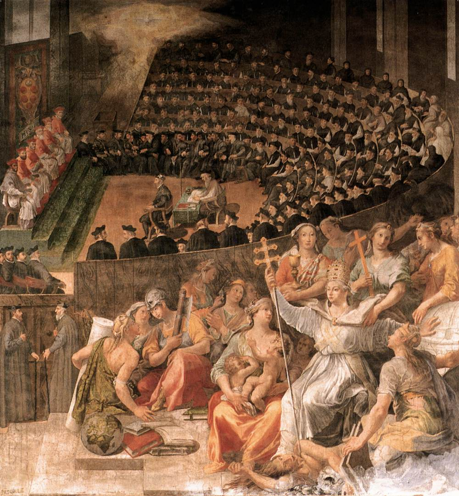
基督宗教神職人員的婚姻、生育以及隨之而來的財產繼承規範，歷經了從早期教會的多元接納、中世紀的強制獨身、宗教改革的權力分流，乃至當代在多元牧靈需求下的地緣政治妥協。此一演變過程不僅是神學教義的辯論，更是西方政治、經濟與社會階級重構的歷史縮影。神職獨身制（Clerical Celibacy）的確立與維持，實質上交織著教會資產保全、教宗權力集中化以及世俗政教爭霸等多重非神學因素。
禁慾主義的先驅背景與早期教會的多元共存
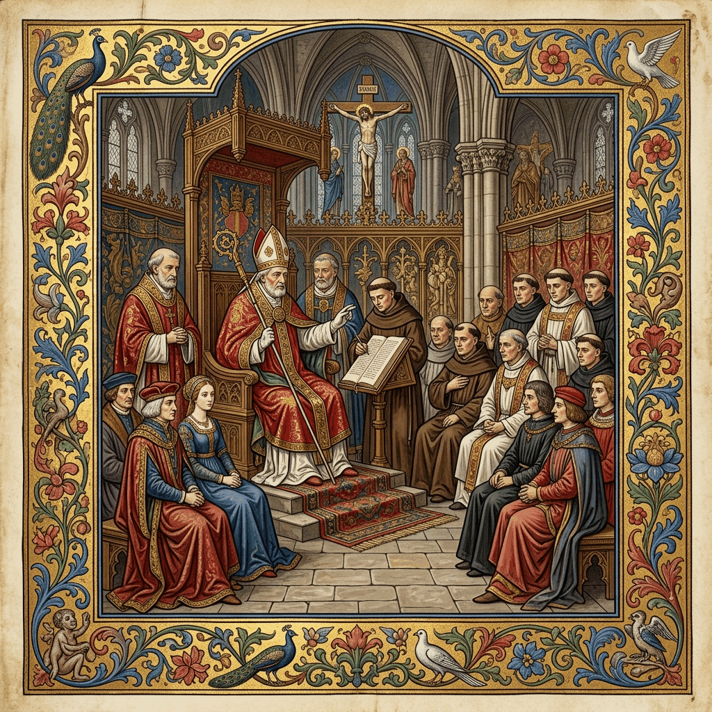
在基督宗教誕生並向羅馬帝國擴張的最初三個世紀中，神職人員的婚姻與生育是普遍被社群接納且視為常態的社會事實。為了理解這一常態如何逐步走向禁慾主義，必須考察當時的跨文化背景。在基督教興起之前，將性節制視為神聖表徵的觀念已廣泛存在於多種古文明中。例如，古代德魯伊祭司被認為實行獨身，阿茲特克神廟祭司亦被要求保持性禁慾；而在羅馬帝國制度中，處女之身被賦予極高的祭祀價值，羅馬灶神女祭司（Vestal Virgins）即被強制要求守貞三十年[1]。相反地，世俗法規對平信徒的獨身則極為嚴苛。在斯巴達，未婚男子會喪失公民權並被指派低賤工作；古羅馬在卡米盧斯時期（西元前402年）便對單身漢徵收特別稅，帝國時期的法律更剝奪了未婚者的遺產繼承權[2]。
基督宗教早期的文獻顯示，其最初的領袖階層高度嵌入於世俗的家庭網絡中。新約聖經明確記載使徒彼得擁有婚姻，因為耶穌曾醫治彼得那因發熱而躺臥在床的岳母[3]。亞歷山大的克萊曼亦在文獻中證實，彼得與菲利普皆育有子女[4]。使徒保羅在給哥林多教會的書信中，雖然表明自己選擇了單身，但他也將獨身定性為一種個人恩賜而非普遍律令，並對比指出其他使徒、主的兄弟以及彼得，皆有信主的妻子隨行陪伴[2]。此時期的教牧書信（如提摩太前書與提多書）在選拔教會監督與執事時，並非要求其斷絕家庭生活，而是強調其道德操守，規定候選人應為「一個婦人的丈夫」，並能「好好管理自己的家，使兒女凡事端莊順服」[2]。
然而，隨著基督宗教與羅馬帝國境內的希臘化哲學及異教思潮深度融合，對物質世界持二元論批判的諾斯底主義開始對基督教產生深遠影響，其核心主張靈魂與靈性為善、肉體與物質為惡，進而推導出完美的基督徒無法在婚姻中達到純潔的結論[3]。與此同時，各種極端禁慾教派紛起。雅典那哥拉宣稱「僅僅是產生性快感的念頭本身便是罪惡」[6]；塔提安則創立了禁慾派（Encratites），嚴格禁止性交、飲酒與食肉，宣稱女性本質上完全是魔鬼的創造物，甚至著手修改新約聖經文本以宣傳耶穌實行獨身的虛假主張[6]。在這種高度壓抑肉體的輿論環境下，基督徒群體內部展開了與異教祭司爭奪道德高地的競爭，處子之身與獨身逐漸被塑造成僅次於殉道的「白殉道」屬靈菁英象徵[6]。儘管克萊曼等溫和派學者曾對此表示憂慮，指責逃避婚姻是不成熟的規避行為，但將性與罪惡、不潔高度綁定的觀念，已在三世紀末的西方教會神學論述中奠定了基礎[6]。
地方公會議的制度化律令與東西方分裂的先聲
隨著君士坦丁大帝定基督宗教為合法（西元313年），神職人員轉化為擁有帝國特權與世俗司法豁免權的特殊階層，其婚姻與生育問題也開始從私人領域進入成文教規的管轄範疇。
歷史上首次針對神職人員性生活進行明文限制的成文教規，源於四世紀初在西班牙召開的埃爾維拉省區會議（Synod of Elvira，約305-306年）[8]。該會議由埃爾基主教菲利克斯主持，著名神學家奧西烏斯（Hosius of Corduba）亦深度參與，其出台的八十一條教規展現出極強的嚴苛主義特徵[11]。會議第27條教規嚴禁除母親、姊妹或奉獻處女外的任何女性與神職人員同住；第33條則明確下令，所有主教、神父、執事及在祭壇服務的聖職人員，必須與其妻子保持完全的禁慾節制，禁止同房並停止生育，違者將被剝奪聖職[8]。這項法規開創了「婚後節制」（Continence）的立法範式，即不反對已婚男子晉升聖職，但要求其在晉升後必須終身放棄與妻子的性生活[8]。隨後，安卡拉會議（314年）第10條教規與新凱撒利亞會議（約315年）第1條教規，亦分別做出了執事在按立後結婚將喪失職權、神父在按立後結婚將被免職的規定，顯示禁慾要求已向東方蔓延[8]。
當這股嚴苛的西方禁慾主義試圖在第一次尼西亞公會議（325年）上推廣為普世教會法規時，遭遇了關鍵性的挫折[1]。奧西烏斯極力游說大會通過一項強制所有已婚神職人員實行終身禁慾的提案，但遭到埃及未婚隱修主教帕夫努提烏斯的強烈反對[5]。帕夫努提烏斯警告，強加此等難以承受的重擔將嚴重損害婚姻的尊嚴，並在實踐中誘發更廣泛的道德崩潰；他主張應維持古老傳統，即僅禁止在按立聖職後結婚，但允許按立前已婚者保留其既有的夫妻生活[5]。尼西亞公會議最終採納了這項折衷方案，其頒布的第3條教規僅限制神職人員不得與非親屬女性同居，並未強制剝奪已婚聖職人員的婚姻生活[4]。
在接下來的四至五世紀中，羅馬教宗與高盧、北非的地方會議展開了高密度的立法嘗試，試圖在西方建立統一的禁慾標準。教宗達瑪穌、西里修、依諾增爵一世與大良一世相繼發表律令，宣稱神職人員的「本體性純潔」是施行聖事的先決條件[6]。西里修首次明確提出「節制律」（lex continentiae），將每日主持彌撒的神父與必須保持純潔的聖殿緊密相連，宣稱過性生活的神職手部污穢，不配施行聖事[6]。大良一世則在458-459年的書信中寫道，為了使聖職人員的結合從肉體昇華為屬靈，他們應當在「不離棄妻子」的前提下，與妻子「如同沒有妻子般共同生活」，在保留夫妻之愛的同時徹底停止夫妻之實[14]。迦太基會議（390年）、希波會議（393年）及後續會議亦一再重申此類要求[8]。
然而，這些律令在實踐中面臨著大範圍的陽奉陰違。西元567年的圖爾第二屆會議不得不規定，凡被發現與妻子同床的神職人員將被處以一年的絕罰並降為平信徒，這反向證實了此時期的基層神職依然普遍維持著實質婚姻[3]。教宗斐拉修二世（580年）則採取務實態度，規定只要神職人員不將教會財產轉讓給妻子或子女，教廷便不主動干預其已婚狀態[3]。至八世紀，聖博尼法斯向教宗報告指出，在日耳曼地區幾乎沒有任何主教或神父實行真正的獨身[3]；而在愛爾蘭，成書於八世紀初的《愛爾蘭教會法集》（Collectio canonum hibernensis）依然完全假定聖職人員擁有合法的婚姻與生育生活，其關注的焦點僅在於維持單一配偶與防禦教產流失[5]。西方神學家奧古斯丁雖然主張「唯有獨身者才能重返伊甸園的恩寵狀態」，並認為沒有什麼比女性的撫摸更能拉低男性的靈魂，但這種神學理想在早期中世紀的社會現實面前，依然呈現出制度性的無力感[3]。
以下表格整理了四至八世紀東西方教會關於神職人員婚姻與禁慾的重要法規演變：
| 會議或律令名稱 | 召開時間/頒布者 | 主要法規內容與限制 | 神學或現實動機 |
| 埃爾維拉省區會議 [cite: 8, 10, 11] | 約305–306年[11] | 限制非親屬女性同居（第27條）；命令聖職人員與妻子斷絕性關係並停止生育，違者罷免（第33條）[8]。 | 西班牙本土的道德整飭，將「婚後節制」確立為聖職門檻[8]。 |
| 安卡拉與新凱撒利亞會議 [cite: 12, 14] | 約314–315年[14] | 規定執事在按立後若結婚將喪失職權；神父在按立後結婚將被免職[12]。 | 東方教會確立「按立聖職後不得締結新婚」的法理阻礙[14]。 |
| 第一次尼西亞公會議 [cite: 12, 15] | 325年[12] | 駁回全面強制禁慾提案，通過第3條教規：僅限制與非親屬女性同居，不強制已婚者斷絕房事[12]。 | 帕夫努提烏斯等東方代表的務實抗爭，避免因過度嚴苛導致道德崩潰[5]。 |
| 教宗西里修律令 [cite: 10, 14] | 約385年[10] | 頒布《Directa》等文件，將「節制律」提升為使徒傳統，宣稱過性生活者無權主持聖禮[6]。 | 構建西方教會的祭司神學，強調每日獻祭者必須保持永久本體純潔[8]。 |
| 迦太基會議與北非省區會議 [cite: 8, 14] | 390–419年間[8] | 重申高級聖職人員必須遵守完美的節制，因為他們是神人之間的調停者[8]。 | 北非教會在奧古斯丁神學影響下，對拉丁儀式純潔性的體制化確認[8]。 |
| 圖爾第二屆會議 [cite: 3] | 567年[3] | 凡被發現與妻子同床的神職人員，處以一年絕罰並降為平信徒[3]。 | 針對高盧地區基層聖職人員普遍同居與生育現狀的強制性整肅[3]。 |
| 特魯洛公會議 [cite: 18] | 692年[18] | 通過第13條教規：確認已婚神父與執事的婚姻合法性，僅要求其在輪值祭壇期間實行臨時節制[13]。 | 拜占庭帝國確立東方教會的婚姻法典，與羅馬強制禁慾的法規正式決裂[13]。 |
帝國法律介入、財產保全與特魯洛會議的分流
進入六至八世紀，東西方教會在對待神職人員婚姻與生育子女的司法實踐上，展現出完全不同的政治邏輯，這在很大程度上受到拜占庭帝國中央集權法律的干預。
查士丁尼法典的政治與經濟邏輯
東羅馬帝國皇帝查士丁尼一世在西元六世紀進行了大規模的法律重構。查士丁尼將其政權視為上帝在人間的政治代理人（即皇帝教宗主義 Caesaropapism），因此，整頓教會財產流失與官僚紀律成為其《民法大全》的立法核心[18]。查士丁尼的立法邏輯極其務實，關注點並非虛無飄渺的靈修境界，而是指向防止教會公共資產的私有化與流失[21]。
由於當時社會各階層頻繁將土地、資金與封地捐贈給地方教堂以求靈魂救贖，主教與神父作為這些財產的法定管理人，極易將其視為個人私產[21]。若神職人員擁有合法的世俗配偶與直系子嗣，這些財產勢必會在臨終時作為遺產流向其家族，導致帝國境內最龐大的地產階級——教會——的資產不斷縮水和割裂[21]。因此，查士丁尼在530年頒布的《新律》（Novellae）中做出了極其嚴厲的民事約束：
首先，針對最具教產支配權的主教階層，法律設置了絕對的「去直系親屬化」門檻[21]。任何擁有子女或孫子女的男子，不論其是否鰥居或承諾禁慾，一律被剝奪晉升為主教的資格[21]。查士丁尼指出，一個被世俗血緣恩慈與撫養後代之焦慮所牽絆的男子，絕無可能將全部精力奉獻給神聖的彌撒與教會行政[21]。
其次，針對神父、執事與副執事等主要聖職，法典雖然允許已婚者晉升，但重申其在晉升後必須實行永久的 conjugal continence（夫妻節制）[21]。為了確保這一限制得到落實，法典對在按立後違規結婚或生育的孩子實施了法律層面的「非人化」懲罰：所有此類子嗣的法律合法性皆被剝奪，定性為非法私生子，依法剝奪其對神職父親私產及任何教會物業的繼承權，以此在民法層面斬斷教產世襲的法律途徑[4]。
特魯洛會議與東西方體制的分流
查士丁尼的民法典在東方實質上重塑了聖職的選拔結構。由於法典僅對「主教」設置了「無子女、無繼承人」的絕對限制，對基層神父則採取相對溫和的民事默許，東方教會逐漸形成了一種雙軌制，並在西元692年的特魯洛會議（Quinisext Council）上獲得了最終的教規確認[18]。
特魯洛會議由拜占庭皇帝查士丁尼二世召開，旨在為第五、第六次普世公會議編纂教規[18]。會議第13條教規採取了與羅馬教廷截然相反的立場，明確指出，羅馬教會要求神父和執事在按立時承諾斷絕夫妻生活的作法，是對上帝所設立之婚姻秩序的褻瀆與侵害，直接違反了聖經中「上帝所配合的，人不可分開」以及「婚姻，人人都當尊重」的訓誡[18]。特魯洛會議規定，東方禮已婚神職人員的合法婚姻應當受到保護，他們在日常生活中可與妻子維持正常的性生活與生育權，僅被要求在輪值值班主持祭壇獻祭的前夕實行臨時性節制[13]。同時，會議第6條教規保留了「按立後不得結婚」的限制，第12與48條則重申主教必須為獨身或已分居、無子嗣的修士[18]。
羅馬教宗聖塞爾吉烏斯一世與若望七世因該會議公然指責羅馬教規、且試圖將君士坦丁堡的教權提升至與羅馬對等而拒絕簽署其法規[13]。然而，特魯洛會議的法理在東方東正教世界（包括後來的俄羅斯、烏克蘭等地區）落地生根，並在實踐中促成了已婚堂區神父階層的穩定發展[22]。隨著時間的推移，東方教會的已婚神職家庭在社會上形成了一個高度封閉、世襲性極強的「祭司階層」（Hereditary Priestly Caste），牧師的子嗣通常會繼續娶牧師的女兒為妻並繼承其堂區職位，這與西方中世紀後期走向的絕對去家族化形成了鮮明對比[22]。
中世紀封建危機下的格列哥里改革與權力重塑
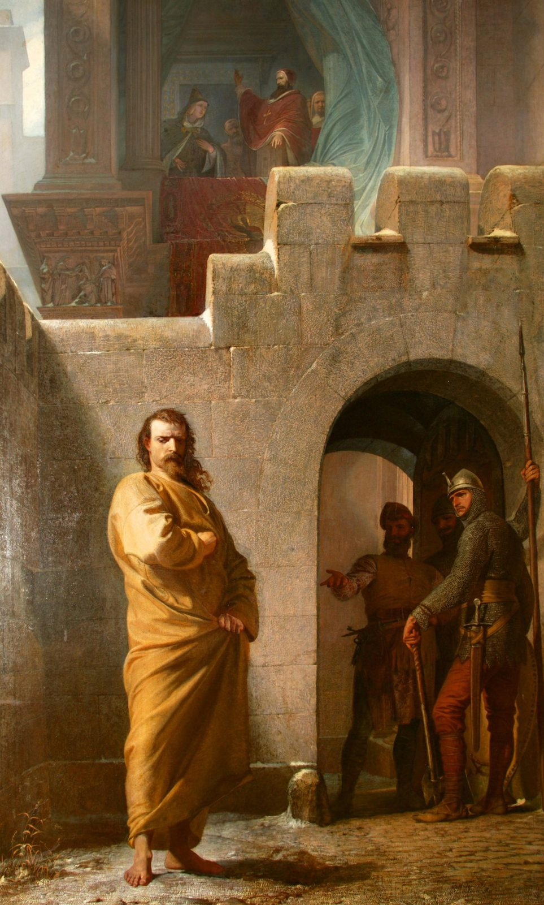
進入九至十一世紀，西歐在加洛林王朝瓦解後陷入了高度割裂的封建主義時期。在此背景下，西方的聖職制度與土地所有權發生了深度的封建化融合，而這也將神職人員的婚姻與生育問題推向了世俗政治鬥爭的最前線。
封建金字塔與世襲教產的危機
中世紀西歐社會是一個以土地授予換取軍事與行政服務的封建金字塔結構[24]。國王位於塔尖，將土地賜予大領主（諸侯、主教、修道院長），大領主再將土地分封給小領主（副臣），而金字塔底端則是與土地牢牢綁定的農奴[24]。在此結構中，天主教會是西歐最大的土地擁有者，控制了約三分之一的世俗地產，並依法徵收十一稅[26]。
這種龐大的財富規模使教會無法逃脫封建體系的吞噬，催生了「私有教會」（Eigenkirche）與「俗人授職」制度[8]。地方世俗封建領主自行在其領地上出資興建教堂，並將這些教堂及其附屬土地視為家族私產，隨意指派其親信、次子甚至是付酬最高的世俗僕役出任主教或神父，此即聖職買賣（Simony）[8]。對於許多出身貧寒、必須依靠農耕维持生計的村莊神父而言，娶妻生子不僅是自然的生理與情感需求，更是不可或缺的勞動力來源[8]。
然而，這在法理與經濟上對西方教會主權構成了致命威脅：
首先，已婚神職人員普遍將其管理的教區教堂、墓地、十一稅以及教區物業視為其世俗家族的私有遺產[8]。在臨終前，神父會依法通過遺囑將其聖職和附屬地產（Benefice）直接世襲遺贈給自己的兒子，從而在地方上建立起穩固的世襲祭司家族[8]。
其次，神職家族與當地的世俗小領主、大地主频繁進行政治聯姻[8]。這種跨階級的血緣網絡使地方神職人員的物質忠誠與情感依賴完全被當地的封建宗族（lineage）所綁架，他們首先考慮的是家族與姻親的世俗利益，而非羅馬教廷的權威與法律，導致教宗對基層堂區失去了實質的管理權[8]。
格列哥里改革與去家族化的政治重構
為了解決這一體制性危機，十一世紀中葉爆發了以教宗格列哥里七世為核心的「格列哥里改革」（Gregorian Reform）[28]。這場改革的本質是西方天主教會試圖擺脫世俗君主與地方領主的控制，將教權提升至世俗王權之上，進而建立一個高度中央集權的「教宗君主制」（Papal Monarchy）[28]。
在這一宏大的政治圖景中，強制推行「聖職絕對獨身」並非單純的道德改良，而是教廷最核心的政治與經濟防禦工具[28]。改革派的戰略邏輯極其嚴密：若要摧毀俗人授職與世襲司祭制，就必須徹底消滅神職人員的世俗家庭。
一個沒有合法配偶、絕無可能誕生合法子嗣的神職人員，在法律上將徹底喪失建立世襲財產傳承的客觀基礎[10]。這意味著，地方教堂的封地與財產在神父死後將自動完整地收歸教廷與教區，而無法被任何世俗家族以血緣繼承的名義所蠶食[30]。同時，被剝奪了家庭寄託的神職人員將在社會關係上處於「去原子化」狀態，其情感、晉升前景與物質給養將完全綁定於羅馬教廷的科層管理體制，從而轉化為教宗指揮下最忠誠、最具紀律性的屬靈官僚力量[5]。
為了推行這一政策，格列哥里七世展現了極其強硬的政治手腕，在1074年頒布法令宣布，所有已婚神職人員所施行的聖事在法理上失去效力，並煽動地方平信徒聯合抵制、甚至以暴力驅逐那些拒絕與妻子分居的神父，這直接摧毀了基層已婚神職在地方社群中的社會尊嚴與生存根基[7]。面對 Constance 主教公然拒絕執行教宗獨身教令的挑釁，格列哥里七世當即宣布解除該主教轄區內所有臣民對其效忠的誓言，並號召世俗力量將其驅逐，以此向全歐洲表明，對獨身教令的順從已成為衡量天主教正統與否的政治試金石[32]。
與此同時，教廷的理論家們開展了鋪天蓋地的宣傳攻勢，將中世紀流傳的仇女思想與反性觀念推向了歷史巔峰[30]。彼得·達米安在教廷的支持下撰寫了大量極具煽動性的攻擊性文本，將神職人員的妻子與情婦定性為「魔鬼的誘餌」、「吞噬靈魂的毒藥」、「瘋狂的毒蛇」以及「鴞與母狼」，宣稱她們的存在本身就是對基督頭部的閹割與殘害，甚至主張地方領主有權將這些玷污神聖油膏的女性處死[30]。
神職妻子的法理滅絕與社會邊緣化
在這場宏大的權力再分配鬥爭中，神職人員的配偶與子女淪為了最悲慘的政治犧牲品[34]。1089年，教宗烏爾巴諾二世在美爾菲會議（Synod of Melfi）上頒布了震驚西歐的嚴酷法令，正式對神職人員的妻子施加體制性奴役[3]。該法令授權世俗貴族與領主可以強行逮捕神職人員的妻子，將其沒收並充作羅馬教會或地方領主的實質奴隸[34]。美爾菲會議甚至做出了一項極其特殊的規定：普通奴隸尚可通過贖金重獲自由，但這些被捕的神職妻子（因其身分被定性為「奴隸的配偶」）終身不得被贖回[34]。無數女性在一夜之間從受人尊敬的堂區女主人淪落為被強制勞動、剝奪人身自由的家奴，大量神父的子嗣則被冠以「私生子」（Bastard，該詞在當時的語意脈絡中實質上專指「神父之子」）的烙印，喪失了一切公民權與財產繼承權[34]。
此時，西方基層神職人員面臨著極其殘酷的政治抉擇：若選擇保留家庭，他們將被剝奪象徵神職身分的剃髮（Tonsure），在封建經濟體系中徹底失業且無立足之地；若選擇保留神職以求生存，則必須徹底遺棄其妻子與兒女[34]。
這一政治整合與暴力重塑最終在十二世紀轉化為不可動搖的普世教會法典[4]。西元1123年的第一次拉特朗公會議與1139年的第二次拉特朗公會議正式宣告，所有神職人員在晉升聖職後所締結的婚姻不僅違法，且在法理上自動「無效」（invalid），強制所有已婚神職實行分居與離異[4]。隨後，法學家格拉提安（Gratian）在其編纂的《教規集成》（Decretum Gratiani）中，將這些割裂歷史脈絡的教宗獨身教令進行了系統性的法理偽裝，包裝成自使徒時代以來一以貫之的「連續性傳統」[5]。這本集成迅速成為全歐神學院的標準教科書，在法理層面徹底完成了西方神職獨身制的體制化鎖定[5]。
宗教改革的政治經濟學反叛與天主教會的反擊
十六世紀的宗教改革，實質上是對中世紀天主教會強制獨身制度及其背後教產壓榨體系的一場政治經濟學總清算。
新教神學的家庭收復與世俗化主權重構
以馬丁·路德、約翰·加爾文與慈運理為代表的改革家，通過確立「唯獨聖經」原則，對天主教的聖職體制進行了顛覆性的去神聖化改革[9]。新教神學否定了天主教將婚姻視為「低等世俗秩序」的貶抑態度，轉而宣布婚姻與家庭是上帝在創世之初便設立的聖善體制，其不僅是用於繁衍，更是夫妻雙方在情感與肉體上實現聯合的神聖表達[9]。
與此同時，新教徹底粉碎了「神職階層」與「平信徒」在屬靈本體上的不平等，確立了「信徒皆祭司」的主張，這意味著牧師不再是神人之間擁有特殊本體屬性的「超自然中介」，而僅僅是受社群委託、負責宣講福音與執行行政管理的普通信徒，因此理所當然地擁有結婚與生育的自然權利[9]。1525年，前天主教神父馬丁·路德與出逃女修士卡塔琳娜·馮·博拉締結成婚，這一大膽的政治表態迅速被全歐新教地區複製，牧師館（Parsonage）隨之轉化為德意志、瑞士及北歐社會中最核心的文化與道德輸出源泉[9]。
新教對婚姻聖事性的否定，在西方政治光譜上產生了深遠的連漪效應：
首先，新教宣布婚姻不再屬於天主教教會法的管轄範疇，而是屬於世俗國家法律管轄的「temporal estate」（ temporal 秩序）[42]。這一轉變實質上將婚姻與生育的司法管轄權、離婚訴訟的裁決權以及與之相關的土地遺產繼承權，完整地從羅馬教區法庭移交給了新興的民族國家世俗法庭，為現代世俗國家的主權建構提供了至關重要的法理基石[38]。
其次，在英格蘭，亨利八世推動的宗教改革更具備赤裸裸的國家財產重構性質。亨利八世在1539年頒布的《六條法規》（Six Articles）中，為了安撫國內保守勢力，曾一度保留了嚴厲禁止神職結婚的條款[22]；但隨著其子愛德華六世在1548年通過《神職人員婚姻法案》（Clergy Marriage Act 1548），英格蘭聖公會神職人員的婚姻正式合法化，大批被收歸國有的修道院土地與世襲堂區地產隨之轉化為支持都鐸王朝集權統治的世俗地主階級資產，完成了英國歷史上最大規模的地產洗牌[22]。
婚姻禁令背後的財務特權與抗爭
新教對神職婚姻的捍衛，在現實層面極大程度地呼應了基層社會對羅馬教廷財務盤剝的憤怒。神學家卡塔琳娜·澤爾在1524年發表的公開信中針見血地指出，天主教會對神職婚姻的禁令，本質上絕非出於靈性純潔的考量，而是純粹基於財務與世襲利益的考量[43]。
澤爾指出，天主教會一方面在口頭上高調捍衛守貞理想，另一方面卻系統性地縱容、甚至強迫那些無法實踐獨身的神職人員出資供養情婦，前提是必須每年向教區繳納昂貴的「納妾免罰金」[43]。如果神父希望其非婚生子女獲得社會合法地位、繼承其私人財產或在未來晉升聖職，就必須向羅馬教廷支付每份高達12個 Gros Tournois（格羅圖爾諾金幣）的免除規費[5]。這種極具諷刺意味的制度，使「獨身法規」轉化為教廷常年徵收「道德贖罪券」的暴利工具[5]。
此外，澤爾進一步揭露，反對神職人員合法娶妻最激烈的力量，往往來自於神父自身的世俗親屬與家族[43]。因為在强制獨身制下，神父所累積的優渥堂區年金（Benefice）與私人動產，在其死後無法由其「非法」妻兒繼承，最終只能由其兄弟、堂表親或世俗外戚繼承[31]；一旦神父獲准合法娶妻生子，其世俗親屬將徹底喪失對這筆財富的覬覦權，這進一步暴露了神職獨身制與封建社會財產繼承博弈的深刻綁定[43]。
特倫托公會議的戰術反擊與修院體制
面對新教在神學、政治與經濟層面的全面進攻，羅馬天主教會在特倫托公會議（1545-1563年）上做出了絕不妥協的防禦姿態[1]。公會議第24次會議明確頒布教令，宣告任何人若主張婚姻在屬靈高度上等同於或高於獨身與貞潔，均應被處以極刑般的逐出教會（Anathema）[3]。
然而，天主教會也深刻反省到中世紀末期神職人員私生活混亂、情婦橫行的根源，在於基層聖職人員缺乏標準化的培育[5]。為此，特倫托公會議確立了現代意義上的「神學院」（Seminary）制度，強制要求每個教區設立封閉式的修生培育中心[5]。修院通過將青少年修生與世俗社會、尤其是女性群體實行絕對的物理隔絕，在封閉的微觀權力空間內進行高強度的心理訓練與屬靈內化，成功將「自願獨身」重塑為天主教司鐸高尚的職業本質認同[5]。這種標準化、去家族化的現代天主教司鐸隊伍，隨後成為天主教會進行海外擴張與對抗新教世俗化浪潮中最具戰鬥力的制度武器[5]。
現代多元牧靈與全球地緣政治的協調
進入二十與二十一世紀，天主教會在面臨現代世俗化危機、全球司鐸短缺以及大公教會合一對話的多重考量下，對實行了近千年的絕對獨身教規進行了微觀層面的靈活調整，展現出高度實用主義的政治彈性。
聖公會皈依者與個人牧首區的建立
二十世紀後期，西方社會在性解放與自由主義思潮衝擊下，傳統基督宗教面臨嚴重的信仰流失。為了吸納聖公會（Anglican Communion）內部不滿其母會自由派神學轉向（如接納女性按立聖職、同性婚姻等）的保守派力量，教宗若望保祿二世在1980年確立了「牧靈特別撥備」（Pastoral Provision），破例允許已婚的聖公會牧師在皈依天主教會後，在保留婚姻的狀態下按立為天主教神父[44]。
2009年，教宗本篤十六世進一步發表《 Anglicanorum Coetibus 》宗座憲章，在天主教拉丁禮內部創設了「個人牧首區」（Personal Ordinariates）這一特殊的非地理性司法結構[44]。該制度允許成建制的聖公會信徒與神職人員集體回歸天主教會，並完整保留其帶有英倫古典色彩的禮儀傳統（Anglican Use）[44]。在個人牧首區內，教宗授權可以逐案審查並批准已婚聖職人員晉升天主教神父[44]。
儘管教廷一再強調獨身依然是拉丁禮天主教的絕對常態（pro regula），但這項政策實質上在天主教拉丁禮內部製造了一個合法的「已婚神職群體」[47]。至2016年，僅美國、英國與澳洲的三個個人牧首區內，便活躍著超過200位已婚的天主教神父[45]。然而，教廷為了維護古老的教規傳統，對這些已婚神職施加了嚴格的邊界：
首先，已婚牧師雖然可以晉升為神父並擔任堂區主任，但由於普世天主教與東正教皆不接納已婚者擔任主教，這些已婚神父絕無可能被祝聖為主教[46]；因此，個人牧首區的負責人（Ordinary）若為已婚者，其身分只能是擁有主教治權的「神父」，而非真正的主教[46]。
其次，已婚神父在晉鐸後，若其配偶不幸去世，該神父將自動受制於古老的教規約束，必須實行終身獨身，絕對禁止再次締結新婚[23]。
2014年東方禮天主教僑民禁令的解封
天主教與東正教之間、以及天主教拉丁禮與東方禮（Eastern Catholic Churches）之間的權力博弈，在2014年迎來了歷史性的轉折。東方禮天主教會在歷史上一直保留了特魯洛會議所保障的已婚神職傳統，但在十九世紀末，隨著大批東方禮信徒因戰亂與貧困從中東、東歐移民至北美與澳洲，這一傳統在僑民區（Diaspora）遭遇了拉丁禮主教的強烈排斥[23]。美國與加拿大的拉丁禮主教控訴已婚東方禮神父的存在會「嚴重混淆天主教徒的認知」，並動搖拉丁禮獨身制的權威，進而聯名向羅馬教廷施壓[23]。
羅馬教廷在1890年針對北美 Ruthenian 禮教會頒布了已婚神職禁令，並在1929年將其升級為《Cum Datum Fuerit》教令，徹底剝奪了東方禮天主教主教在西方僑民區按立或派遣已婚神父的管轄權[23]。這一帶有教權沙文主義色彩的強硬干預引發了災難性的教權分裂：估計有超過20萬名不甘屈服於拉丁禮霸權的 Ruthenian 天主教信徒，憤而宣布脫離羅馬，集體改宗為東正教，造成了天主教在北美歷史上最嚴重的信徒流失事件[23]。
西元2014年6月14日，教宗方濟各批准了解除這一長達85年禁令的歷史性法令，正式恢復了全球東方禮天主教主教在其轄區內按立、派遣已婚神父的完整教權[23]。這一地緣政治層面的妥協，其核心意圖有三：
首先，向東正教世界釋放強烈的合一外交信號[23]。長期以來，東正教對羅馬教廷懷有深切的戒備，認為與羅馬復交將意味著自身已婚神職傳統的覆滅；解禁僑民禁令，實質上是以具體行動向東正教證明，羅馬教廷有能力在不改變拉丁禮教義的前提下，完全尊重並容納多元的歷史傳統[23]。
其次，解決西方移民潮中的牧靈危機。大批來自烏克蘭、中東的東方禮新移民大量湧入西方，他們極度不適應拉丁禮的獨身司鐸，解禁已婚神職能有效防範這批移民信徒向東正教流失[23]。
然而，為了平息西方本土拉丁禮主教的疑慮，教廷依然設置了多重行政防火牆。例如，東方禮主教在按立已婚候選人前，必須書面通報候選人居住地的拉丁禮主教以徵詢其意見[23]；同時，諸如亞美尼亞禮天主教會主教 Mikael Mouradian 等人在實踐中設置了嚴格的篩選機制：已婚候選人必須結婚滿五年以上且育有子女、必須擁有神學碩士學位（M.Div.），且其配偶必須簽署書面同意書，同意其丈夫將一生奉獻給聖職與堂區，以此防範家庭瑣事對牧靈品質的侵蝕[50]。
亞馬遜與「viri probati」的當代張力
當代關於神職人員婚姻與生育的最激烈政治交鋒，在2019年的泛亞馬遜地區主會議上達到了高潮[51]。在亞馬遜雨林深處，由於地理環境極度惡劣、神職人員極度匱乏，許多原住民信徒在長達數月甚至數年的時間內，無法領受作為天主教信仰核心的聖體聖事[51]。
為了解決這一區域性的牧靈黑洞，亞馬遜會議在最終報告中，以128票支持對41票反對的壓倒性多數，建議教宗允許在該地區按立「有德行的已婚德高望重男子」（viri probati）為神職人員，以解決當地的聖事危機[51]。這一提案在梵蒂岡內部引發了地震般的保守派反撲，德國卡爾·布蘭德繆勒樞機公開譴責該提案的指導文件為「異端」，必須予以堅決駁回[51]；保守派領袖更指責此舉將在事實上打開拉丁禮強制獨身制的制度缺口[53]。
在隨後於2020年頒布的宗座勸諭《Querida Amazonia》（親愛的亞馬遜）中，教宗方濟各展現出了高超的政治平衡術[51]。在長達一萬六千字的正式文本中，教宗刻意完全迴避了「viri probati」、「已婚神職」與「獨身」等敏感詞彙，並未在法理上對已婚神職做出任何突破性授權，而是轉而呼籲加強神父的傳教熱情、建立跨國修生培育，並呼籲提升平信徒與女性的非聖事性牧靈地位[51]。這表明，在當前的梵蒂岡權力結構中，「神職獨身制」依然被視為維繫天主教會普世一體化、官僚紀律以及對抗現代世俗化最核心的政治防線，任何觸碰這一紅線的嘗試，皆必須在高度敏感的教權政治天平上進行極其謹慎的權衡與博弈[5]。
以下表格對比了當今基督宗教主要宗派在神職人員婚姻、生育與財產權規範上的結構性差異：
| 基督宗教主要宗派 | 聖職按立前之婚姻規範 | 聖職按立後之婚姻與再婚規範 | 子嗣合法性與財產繼承權 | 核心法理與政治背景 |
| 天主教會（拉丁禮） [cite: 4, 22] | 僅接受未婚或鰥居男子按立為神父（永久執事除外）；在個人牧首區等特例中，個案豁免已婚新教皈依牧師[4]。 | 按立後絕對禁止締結婚姻；已婚皈依神父若配偶去世，亦不得再婚並須實行獨身[4]。 | 子嗣在教會法上無財產世襲繼承權；神職私產及堂區物業完全歸屬於教廷或教區[10]。 | 格列哥里改革奠定的教宗君主制體制，強調神職人員作為去家族化官僚的絕對忠誠[29]。 |
| 天主教會（東方禮） [cite: 22, 48] | 允許已婚男子按立為堂區神父與執事，但主教候選人必須保持單身或鰥居[18]。 | 按立聖職後禁止結婚；若配偶去世，神父必須保持獨身，嚴禁締結第二段婚姻[22]。 | 子嗣身分完全合法，擁有其父親私人財產的合法繼承權，但不得私自侵佔教會公產[21]。 | 特魯洛會議教規的歷史延續；2014年教宗方濟各廢除僑民禁令，以實踐多元共存與外交合一[18]。 |
| 東正教會 [cite: 4, 18] | 堂區司鐸普遍選擇在按立前結婚；主教則必須從不娶妻的修道院院僧中選拔[4]。 | 按立聖職後絕對禁止結婚或再婚；若配偶去世，必須實行終身獨身[4]。 | 子嗣身分合法，歷史上在東歐形成高度穩固、享有特權的世襲祭司家族與階層[22]。 | 拜占庭帝國政教合一（Symphonia）傳統，聖職深深嵌入地方社會與宗族結構[18]。 |
| 新教各宗派（如路德宗、聖公會） [cite: 9, 22] | 完全允許、甚至鼓勵已婚男子「順應召喚」接受按立出任牧師[9]。 | 牧師在按立後可自由締結首次婚姻；配偶去世或離婚後，亦可自由再婚[9]。 | 子嗣完全合法；牧師家庭與普通信徒家庭在民法與財產繼承上享有完全相同的權利[42]。 | 「唯獨聖經」與「信徒皆祭司」神學；將婚姻管轄權從教會法完全移交給世俗國家法律[37]。 |
引用的著作
- When Did the Catholic Church Decide Priests Should Be Celibate? - History News Network
- Celibacy, Clerical, History of | Encyclopedia.com
- A Brief History Celibacy in the Roman Church
- Clerical celibacy - Wikipedia
- [https://historyireland.com/celibacy-in-the-catholic-church-a-brief-history/](https://historyireland.com/celibacy-in-the-catholic-church-a-brief-history/)
- A Brief History of Celibacy - Voice of The Faithful
- Why does the Church mandate that priests be celibate? - Catholic Straight Answers
- Library : The Ancient Tradition of Clerical Celibacy - Catholic Culture
- New Horizons: The Reformation of Marriage - The Orthodox Presbyterian Church
- Clerical celibacy in the Catholic Church - Wikipedia
- The Ghost of Synods Past: The Synod of Elvira - Catholic World Report
- 700 Years of Clerical Celibacy in History - OnePeterFive
- When (Eastern) Catholics Argue against Priestly Celibacy - OnePeterFive
- Priestly Celibacy in Patristics and Church History - The Holy See
- What caused the imposition of strict celibacy for Catholic priests during the 11th century?
- Marriage and Celibacy of the Clergy - Philip Schaff: History of the Christian Church, Volume III: Nicene and Post-Nicene Christianity. A.D. 311-600 - Christian Classics Ethereal Library
- How Priests Were Introduced to Celibacy, Herald Sun, December 12, 2014 - Bishop Accountability
- The Orthodox Faith - Volume III - Church History - Seventh Century - The Council of Trullo or the Quinisext Council
- Council of Trullo : r/Catholicism - Reddit
- Feudalism: It's Impact on the Church | African Journal of Religion Philosophy and Culture
- The Justinian Code and the Emergence of Clerical Marriage in Byzantium
- Clerical marriage - Wikipedia
- Eastern-Catholic Married Priesthood Authorized in North America
- Medieval professions and the feudal system - Historiska museet
- Feudalism - Wikipedia
- Estates of the realm - Wikipedia
- The Church in Medieval Europe: Its Role and Importance | TimeMaps
- Gregorian Reforms and the Investiture Controversy - Catholic Knowledge | Heritage History
- GREGORIAN REFORMS AND THE INVESTITURE CONTROVERSY - Heritage History
- Church Reform: Clerical Marriage and Misogynist Propaganda
- How true is the claim, that the Catholic Church introduced celibacy to prevent priest's children from inheriting the Church's property? : r/AskHistorians - Reddit
- Gregorian Reform | Papal Power & Church Reforms - Britannica
- "Celibacy and the Gregorian Reform" by Raymond M. Rademacher - ScholarWorks at WMU - Western Michigan University
- The Wives of Clergy in the 12th Century - Women Priests
- The teaching authority and slavery - Women Priests
- Wives, concubines, or slaves? Peter Damian and clerics' women | Department of History
- The Reformation: Lasting impacts on church and culture | Focus on the Family Canada
- The Reformation and its Global Impact: Religious, Political, and Social Dimensions - aarf.asia
- The Reformation and the Reform of Marriage: Historical Views and Background for Today's Disputes - Issues in Christian Education
- History of the Protestant Reformation- Part 4 (marriage & priests) | St. Luke's
- The Protestant Heritage | Reformation, Beliefs & Impact - Britannica
- On the state of marriage, the original modern sanctuary jurisdiction - Catholic World Report
- Katharina Zell's Defending Clerical Marriage - World History Encyclopedia
- Ordinariate Questions & Answers | Houston, Texas
- The dramatic developments of John Paul and Francis - Where Peter Is
- Personal ordinariate - Wikipedia
- Notes on Anglicanorum Coetibus
- Vatican lifts marriage ban on Eastern Catholic priests in diasphora | ICN
- Vatican lifts ban on married priests for Eastern Catholics in diaspora
- U.S. Eastern Catholic bishops thank pope for lifting ban on married priests - CatholicPhilly
- Querida Amazonia - Wikipedia
- In 'Querida Amazonia,' Pope Francis Lays Out a Vision for the Future of the Amazon
- Disappointment, outrage over papal document on the Amazon | National Catholic Reporter
- Querida Amazonia: What Does It Say about Priestly Celibacy? - OnePeterFive
中世紀巡行王權的權力運作、制度體系與社會實態：以奧圖一世九五五年巡行與戰事為核心之歷史學考察
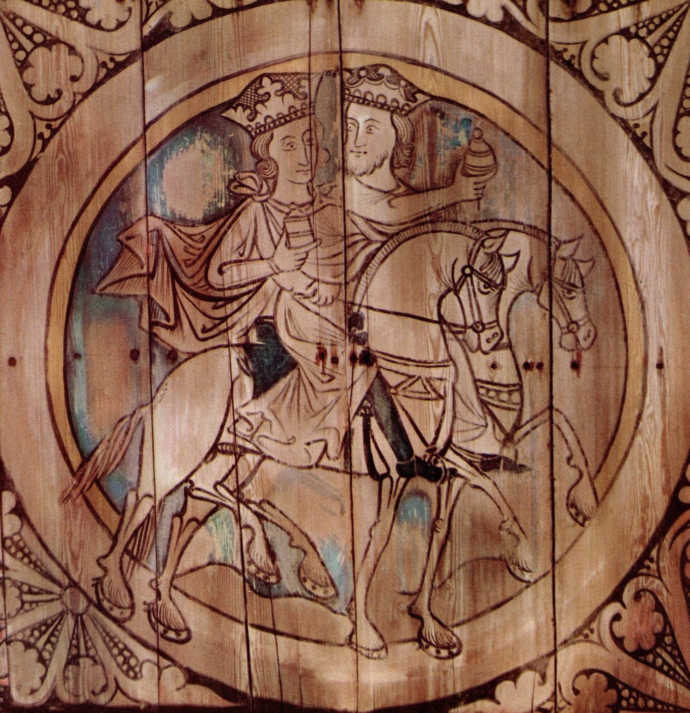
中世紀巡行王權的定義、緣起與傳統
中世紀早期的歐洲政治秩序在很大程度上表現為一種「無行政國家」或「前現代國家」的具體型態。在缺乏常設官僚機構、固定首都、成文憲政體制以及連續性文書流轉系統的歷史脈絡下，王權的維持與展現高度依賴於君主的物理性移動，這套統治模式在歷史學界被稱為「巡行王權」（德語：Reisekönigtum；英語：Itinerant Kingship）。巡行王權的核心機制在於，君主並非在一個固定的地理中心發號施令，而是率領其龐大的宮廷官員、衛兵、神職人員與僕役，在國境內不同的皇家莊園（Königshof）、行宮（Kaiserpfalz）、主教轄區及修道院之間進行週期性或持續性的巡迴移動，並在移動中實行行政、司法、軍事與宗教儀式等統治功能。
從歷史緣起考察，巡行王權的發軔可追溯至西羅馬帝國崩潰後興起的日耳曼繼承王國。墨洛溫王朝與加洛林王朝時期，法蘭克君主為了解決其疆域擴張後地方勢力割據的問題，開始頻繁巡行於法蘭克心臟地帶。加洛林王朝時期，雖然查理曼曾將亞琛（Aachen）建設為帝國的主要居所並建造了規模宏大的宮廷建築群，但這並未終結巡行統治的實踐。查理曼的統治依舊高度仰賴其在萊茵河與摩澤爾河流域的頻繁移動。隨着東法蘭克王國（即後來的神聖羅馬帝國）在十世紀的建立，薩克森奧圖王朝（Ottonians）與後來的薩利安王朝（Salians）將巡行王權推向了制度化的巔峰。
在建築與空間結構上，巡行王權的物質載體——行宮（Kaiserpfalz）展現了高度的儀式性與象徵意義。法蘭克與奧圖王朝的行宮與北歐斯堪地那維亞地區的精英住宅（如丹麥的蒂瑟 Tissø）在結構上存在顯著的平行關係，通常包含一座用於集會的宏偉大堂（Aula）與一座宮廷教堂（Capella），建物表面塗有白色的石灰，以彰顯其神聖與威嚴。行宮的設計展現了世俗權力、宗教儀式與經濟支配三位一體的特徵。以查理曼在亞琛建造的行宮為例，其宮廷教堂（Capella Palatina）採用八角形設計，其靈感主要源自拉文納的聖維塔教堂（San Vitale），同時在風格上亦受羅馬萬神殿等古典建築的間接影響，旨在透過幾何美學與抽象空間構成，重現羅馬帝國的榮光。而相鄰的王室大堂（Aula Regia）則模仿羅馬巴西利卡，但在實際功能上亦兼具日耳曼式的「蜜酒大堂」（Mead-hall）特徵，作為君臣飲宴與彰顯個人紐帶的社交空間。
| 空間類型 | 建築特徵與歷史藍本 | 核心統治與儀式功能 |
| 王室大堂 (Aula Regia) | 模仿羅馬巴西利卡（如特里爾巴西利卡）；長約 47.25 公尺、寬約 20.76 公尺（以亞琢為例）；融入日耳曼式大堂風格。 | 君臣飲宴、召開帝國大會（Hoftag）、進行司法審判、接待外國使節與宣示政治盟約。 |
| 宮廷教堂 (Capella) | 採用幾何化與抽象立體構造；八角形圓頂；以拉文納聖維塔教堂為藍本，內部裝飾羅馬與拉文納運來的古蹟石柱。 | 宗教儀式中心；存放帝國聖物（如聖槍）；由宮廷神職人員（Capellani）運作，作為文書產出與政治宣傳的樞紐。 |
| 皇家莊園 (Villa/Königshof) | 分散於帝國各處的農業生產基地；附帶防衛工事與倉庫；與行宮（Palatium）之間界線在文獻中具有流動性。 | 提供朝廷巡行時的物質供給（Servitium Regis）；代管地方王室地產，防止其被世俗貴族侵佔。 |
巡行王權的特別之處、政治意義與統治功能
巡行王權並非雜亂無章的盲目移動，而是一套具有高度儀式性、空間規律與社會政治意涵的權力運作體系。其獨特之處與統治功能主要表現在以下三個維度：
協商式統治與個人化政治紐帶
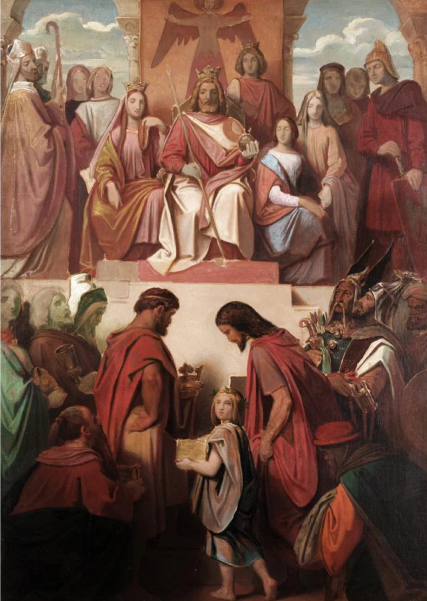
中世紀早期的德意志並非一個制度化的集權國家，君主的統治高度依賴與世俗貴族及教會首長建立的個人盟約與「友情關係」（Amicitia）。巡行過程中所召開的帝國大會（Hoftag），提供了君主與地方精英面對面協商、調解糾紛、分配采邑與確認效忠誓言的平台。這種「協商式統治」（Konsensuale Herrschaft）意味著國王並非專制裁決者，而是地方利益的最高仲裁者與平衡者。君主的實體臨在成為司法正義的象徵，若君主長期不造訪某一地區，地方貴族便會因缺乏中央仲裁而陷入私鬥，進而侵蝕王室的土地產權與政治權威。
動態的禮儀展演與視覺化王權
在讀寫率極低的十世紀，權力的合法性無法僅靠文書詔令來維持，而必須透過高頻率的面對面溝通與宏大的禮儀展演。國王在重要教會節日（如復活節、五旬節、聖誕節）進入重要城市、主教座堂或修道院時，會舉行隆重的「國王入城式」（Adventus Regis）。在這些場合中，國王會在彌撒中舉行象徵性的戴冠巡行，向臣民展示神聖的王權標誌（如聖槍、皇冠等）。這種動態的視覺展演將王權的「超自然神聖性」與「世俗支配權」緊密結合，使臣民得以親眼瞻仰並確認王權的合法性。
帝國教會體制與 monastic secularization 的張力
巡行王權與奧圖王朝特有的「帝國教會體制」（Reichskirchensystem）互為表裡。為了解決世俗公爵頻繁叛亂的問題，奧圖一世及其繼任者大力扶持主教與皇家修道院，賦予他們世俗領地、市場權、鑄幣權與伯爵管轄權。作為回報，這些享有特權的教會機構必須向君主承擔沉重的「國王役務」（Servitium Regis），這主要包括在經濟上為巡行的國王及其朝廷提供食宿補給（Gistum/Hospitality），以及在軍事上派遣武裝扈從（Milites）隨君主出征。
然而，這種體制在宗教與世俗層面引發了深刻的內在張力。修道院的成立本基於脫離俗世、固守清貧與專事祈禱的隱修理想，但為了履行繁重的「國王役務」，修道院必須持有遠超自身生存所需的龐大地產，並深度介入世俗經濟與政治運作。這導致了修道院長的「世俗化」（Monastic Secularization），修道院長不再僅是修僧的靈性導師，而成為凌駕於僧團之上的「帝國諸侯」（Reichsfürst），在修道院與王權之間扮演政治代理人的角色。
在此脈絡下，女性修道院（Frauenstifte，如昆德林堡 Quedlinburg、甘德斯海姆 Gandersheim、赫爾福德 Herford）在薩克森心臟地帶發揮了極其關鍵的政治與物流支撐作用。這些機構多由王室女性成員（如奧圖一世的母親馬蒂爾達、女兒馬蒂爾達、姪女格爾伯加二世）擔任女院長。她們在提供宮廷接待與家族追思（Memoria）的同時，更實質控制著帝國關鍵的交通要道與河流渡口，在國王缺席時維持地方的王權存在與社會秩序。
| 女子修道院機構 | 核心王室領導者 | 在巡行王權與地方治理中的具體角色 |
| 昆德林堡修道院 (Quedlinburg) | 皇太后馬蒂爾達 (Matilda of Ringelheim)、 首任女院長馬蒂爾達 (Matilda, Abbess of Quedlinburg) | 作為王室追思中心與財產繼承的核心節點；多次作為帝國大會的舉辦地；在邊疆開拓中發揮象徵性王權輻射作用。 |
| 甘德斯海姆修道院 (Gandersheim) | 女院長格爾伯加二世 (Gerberga II，奧圖一世之姪女) | 位於薩克森核心區；作為文化產出中心與宮廷寫作基地（如 Hrotsvit 的創作）；控制當地陸路交通要道與經濟稅收。 |
| 赫爾福德修道院 (Herford) | 皇太后馬蒂爾達在此接受教育 | 扮演薩克森西部邊界與威斯特法倫（Westphalia）地區的王權政治代理人；維護地方司法與市場秩序。 |
奧圖一世九五五年巡行軌跡：歷史重建與戰略轉折
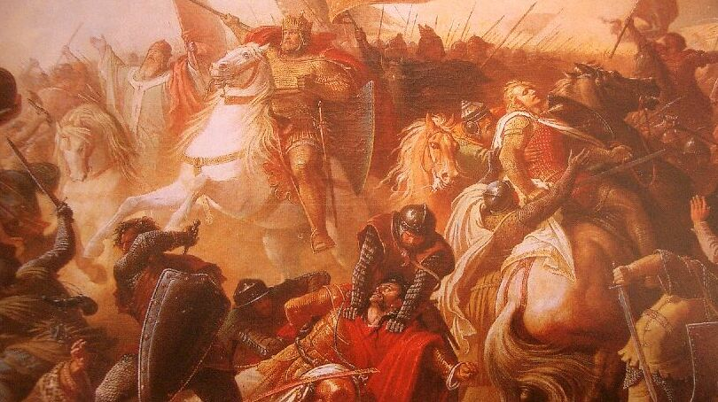
公元 955 年是奧圖一世統治生涯的關鍵轉折點。在這一年的春夏秋三季，奧圖一世面臨著德意志內部殘餘叛亂勢力、南方馬扎爾人（匈牙利人）的大規模入侵，以及北方東部邊境斯拉夫阿博德利特人（Obotrites/Wends）的邊境騷擾。
在 955 年之前，奧圖一世深陷於其子施瓦本公爵留多夫（Liudolf）與女婿洛林公爵康拉德（Conrad the Red）長達數年的內戰危機中，王權幾乎陷入癱瘓。然而，954年，在馬扎爾人入侵的外部壓力下，叛亂勢力失去了貴族與公眾輿論的支持，留多夫與康拉德相繼向國王臣服歸順。955年夏，馬扎爾人於7月1日越過恩斯河（Enns，巴伐利亞傳統邊界）大舉入侵。由於內戰已於前一年平息，奧圖一世得以迅速動員整個帝國的軍事資源，展開一場南北跨度達數百公里的動態巡行與防禦戰役。
奧圖一世於 955 年橫跨德意志南北的軍事行軍與巡行軌跡，其精確的日程與戰略運作可梳理如下：
[955年 春季 - 7月] 德意志中部與南部邊界
│ (內戰平息，重整軍備；馬扎爾人越境包圍奧格斯堡)
▼
[955年 8月8日 - 9日] 奧格斯堡防線
│ (主教烏爾里希率軍堅守年久失修的城防工事，阻滞敵軍)
▼
[955年 8月10日] 萊希菲爾德平原
│ (萊希菲爾德戰役：八個重裝裝甲騎兵軍團大敗馬扎爾人)
▼
[955年 8月中旬 - 9月] 往北急行軍 (跨越500-600公里)
│ (迅速北上薩克森，平定斯拉夫阿博德利特人入侵)
▼
[955年 10月16日] 雷克尼茨河畔 (Raxa River)
│ (雷克尼茨戰役：在拉尼人協助下秘密架設三座橋樑過河，徹底擊潰斯拉夫叛軍)
▼
[955年 冬季 - 聖誕節] 薩克森核心地帶 (梅爾塞堡/馬格德堡)
(舉辦凱旋慶典；分封諸侯；履行諾言筹建梅爾塞堡教區；馬格德堡教區則屬於更長期的東方基督化規劃）
在 8 月 10 日的萊希菲爾德戰役中，奧圖一世親率手持「聖槍」的八個軍團（包含來自施瓦本、法蘭克尼亞、巴伐利亞與波希米亞的重裝騎兵）發動衝鋒。儘管馬扎爾人利用其高機動性的輕騎兵繞襲帝國軍隊後方的波希米亞軍團與輜重車隊，但康拉德率領的法蘭克騎士及時進行了反衝擊，成功挽救了戰局，康拉德本人則不幸在戰役尾聲陣亡。
在徹底消除南方馬扎爾人的威脅後，奧圖一世並未休整，而是展現了令人震驚的空間跨越能力。由於北方的斯拉夫阿博德利特人在秋季大舉入侵薩克森、屠殺成年男子並奴役婦孺，奧圖一世迅速率領主力部隊北上。10 月 16 日，在雷克尼茨戰役中，德意志軍隊行進至雷克尼茨河畔，面對敵軍在主要渡口的頑強防禦。此時，同盟的斯拉夫拉尼（Rani）部落向奧圖一世指明了一處可行的渡口，並協助帝國軍隊在敵軍主力視野之外秘密搭建了三座臨時木橋，使德意志裝甲騎兵得以渡河包抄敵軍，徹底擊潰了斯拉夫反抗勢力。隨後，奧圖一世於年底返回薩克森的核心行宮，舉辦盛大的聖誕與凱旋慶典，並開始履行其在萊希菲爾德戰役前向聖羅倫斯發下的誓言，着手筹建梅爾塞堡（Merseburg）教區（專屬於聖羅倫斯誓願）以及更長期規劃中的馬格德堡（Magdeburg）總教區（與聖莫里斯〔Saint Maurice〕崇拜相關）。
巡行紀錄對中世紀經濟、物流與交通的側面實證
奧圖一世在 955 年橫跨南北的傳奇行軍與政治動員，不僅僅是軍事史上的重大事件，其留下的歷史紀錄更為我們重建中世紀德意志的交通基礎設施、物資動員體系以及技術知識水平提供了極其珍貴的「側面證據」。
交通網絡與行軍速度的物理限制
歷史分析表明，中世紀巡行王權的移動速度與空間跨度，受到當時道路、馬匹與車輛物理極限的嚴格制約。以下整理了當時交通網絡與移動效率的關鍵量化指標：
| 交通與移動類型 | 日均速度 / 行程指標 | 歷史文獻佐證與空間分布規律 |
| 宮廷與軍隊輜重 （馬車與步兵） | 15 至 19 英里（約 24 至 31 公里） | 皇家莊園、驛站與行宮在主要交通線上的空間分布基準（即每隔 25 公里設有一處補給點）。 |
| 單一郵政騎手 （乾燥陸路） | 75 英里（約 120 公里） | 用於傳遞緊急軍事情報、叛亂預警與外交文書；如 955 年巴伐利亞敵情迅速北傳。 |
| 君主/精銳騎兵 極速移動 | 41 英里（約 66 公里） | 以 1146 年康拉德三世自法蘭克福至韋恩海姆的行軍為例；955 年奧圖一世自南往北的急行軍亦達此等速度。 |
這種物理限制側面證明，中世紀的交通體系高度依賴羅馬帝國時期遺留的路網，特別是那些連接重要主教座堂與城鎮、由地方政權維護的骨幹道路。奧圖一世的萬人軍隊能夠在不到兩個月的時間內，從多瑙河流域橫跨約 500 至 600 公里抵達波羅的海沿岸的雷克尼茨河，證明了舊羅馬陸路與沿途河流渡口在中世紀早期依舊保持著良好的通行狀態與維護水平。
幾何、測量學與野戰架橋技術的實踐
在雷克尼茨戰役中，帝國軍隊面臨河流阻隔、敵軍扼守渡口的困境，最終在烏克蘭尼人協助下，於特定渡口成功搭建橋樑並實施奇襲。這項軍事工程的成功，側面證明了當時薩克森與德意志社會具備相當水準的工程技術。在當時的修道院與大教堂學校中，精英階層接受了包含幾何學（Geometry）與算術（Arithmetic）在內的「四藝」（Quadrivium）教育。這些源自古晚期和加洛林時代的實用技術知識（如維吉提烏斯《論軍事》中的軍事工程原理，以及《土地測量彙編》〔Corpus Agrimensorum〕中的幾何測量技術）被廣泛應用於野戰工程、橋樑構築、營地測量以及木造、石造防禦工事的興建上，為君主的跨空間軍事投射提供了不可或缺的技術與知識產出。
農業剩餘與高度組織化的實物汲取
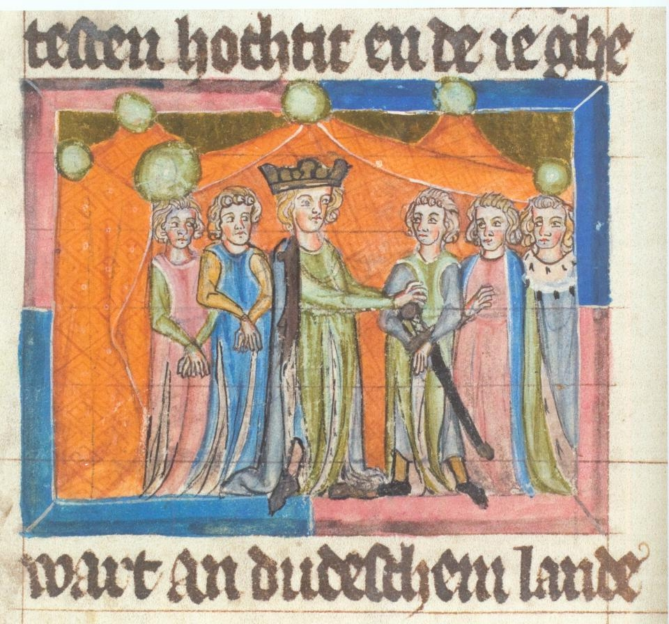
巡行朝廷本身是一個巨大的「消費黑洞」。歷史文獻顯示，中世紀巡行朝廷的規模通常在 300 至 1,000 人之間，在戰時集結與外國使節造訪時，人數更呈幾何級數增長。如此龐大的非生產人口在交通線上的移動，構成極大的物資消耗與壓力。
為了量化這種物資消耗，我們可以透過 968 年沃姆斯（Worms）主教座堂的一份實物供給紀錄（Tafelgüter/皇室餐桌莊園）進行深入考察（注：以下數據可能反映的是年度或季節性供給義務總量，而非單日消耗）：
| 物資類別 | 每日朝廷消耗量 | 農業與物流實態之側面解讀 |
|---|---|---|
| 生鮮肉類 | 1,000 隻豬與羊、8 頭公牛 | 側面證實地方莊園具備發達的畜牧業規模、草料儲備，以及極高的屠宰、儲存與冷鏈技術之替代方案。 |
| 主食 | 1,000 蒲式耳穀物 | 反映了當地農業具備高度的剩餘糧食生產力，並有成熟的磨坊加工與麵包烘焙體系。 |
| 飲品 | 10 桶葡萄酒 | 證實了跨區域的液體大宗物資物流網存在；葡萄酒等物資主要透過水路（河流）聯運。 |
| 副食品 | 大量的雞、魚、蛋與蔬菜 | 揭示了行宮周邊存在發達的本地小農經濟與市場供應網絡，能即時滿足宮廷的多樣化消費需求。 |
這套龐大的實物供給體系，必須依賴莊園農民承擔的「轉運勞役」（Scara）與提供「郵遞馬匹」（Parafridi/Parafretus）來維持。農民與依附人口不僅要生產物資，還必須用馬車或馱馬將成噸的穀物、成桶的葡萄酒跨越數十公里運送至國王即將抵達的行宮。這種將「分散的農業剩餘」轉化為「集中的宮廷消費」之物流網絡，證明了中世紀早期的德意志農村絕非全然自給自足、孤立閉塞的原始狀態，而是存在著一套由王室地產體系與教會網絡支撐、組織極其嚴密且富有彈性的實物調配與運輸機制。
結論
中世紀的巡行王權絕非國家建制「不發達」或「落後」的權宜之計，而是在特定歷史、地理與經濟技術限制下，最為理性且高效的動態權力整合模式。它透過君主與宮廷在空間中的物理移動，將無形的王權具象化為面對面的司法調解、神聖戴冠儀式與政治盟約協商，在「無首都」的狀態下成功維持了龐大帝國的政治凝聚力。
奧圖一世在公元 955 年橫跨南北的輝煌巡行與戰役，則從側面揭示了這一統治模式背後的物質與制度支撐體系。萊希菲爾德與雷克尼茨兩大戰役的勝利，不僅奠定了奧圖一世於 962 年加冕為神聖羅馬帝國皇帝的合法性，更向後世證明：十世紀的歐洲社會具備驚人的跨區域情報傳遞速度、殘存但依舊發揮功能的羅馬及地方路網、系統化的實用野戰工程與幾何測量技術，以及在「帝國教會體制」支撐下、以「國王役務」和「餐桌財產」為核心的高彈性物資汲取與物流動員能力。巡行王權正是以此為物質基石，在流動的疆域中編織出一張維持德意志政治秩序達數百年之久的權力之網。
引用的著作
- Who pays for lodging in a medieval royal court? : r/AskHistorians - Reddit_pays_for_lodging_in_a_medieval_royal_court/
- 1 Hegemony, rebellion and history: Flodoard's Historia Remensis ecclesiae in Ottonian perspective
- (PDF) "The Saxon expeditions against the Wends and the foundation of Magdeburg during Otto I's reign", The Romanian Journal for Baltic and Nordic Studies, 11/2 (2019), pp. 7-34 - ResearchGate_The_Saxon_expeditions_against_the_Wends_and_the_foundation_of_Magdeburg_during_Otto_I's_reign_The_Romanian_Journal_for_Baltic_and_Nordic_Studies_112_2019_pp_7-34
- THE PLACE OF AN ITINERANT COURT IN CHARLEMAGNE'S GOVERNMENT Rosamond McKitterick In 1965, Adolf Gauert pub - Brill_008.pdf
- ITINERANT KINGSHIP, ROYAL MONASTERIES AND THE SERVITIUM REGIS - Cambridge University Press & Assessment_p45-84_CBO.pdf/itinerant_kingship_royal_monasteries_and_the_servitium_regis.pdf
- “The King in the Saddle”: The Árpád Dynasty and Itinerant Kingship in the Eleventh and Twelfth Centuries - Hungarian Historical Review
- THOR™' FREYJA
- ITINERANT KINGSHIP, ROYAL MONASTERIES AND THE SERVITIUM REGIS (Chapter 2)
- Early Medieval Europe 300-1050: The Birth of Western Society 1408251213, 9781408251218 - DOKUMEN.PUB
- Bernhardt, "Itinerant kingship and royal monasteries in early medieval Germany" (Book Review) - ProQuest
- The Kingdom of the East Franks during the Ottonian dynasty - Museum Boppard_04/
- Carolingian Pfalzen and law - SciSpace
- Charlemagne's Palace Chapel at Aachen and Its Copies - The University of Chicago Press: Journals
- The Carolingians in Central Europe | PDF | Travel | Art - Scribd
- Hagen Keller - Wikipedia_Keller
- “The King in the Saddle”: The Árpád Dynasty and Itinerant Kingship in the Eleventh and Twelfth Centuries*_2022-3_Hudacek.pdf
- Cultural depictions of Otto the Great - Wikipedia_depictions_of_Otto_the_Great
- Lechfeld (955 A. D.) - World History Volume
- Concordat of Worms | Church-State Relations, Papal Authority & Investiture - Britannica
- German Bishops and their Military Retinues in the Medieval Empire
- SERVITIUM REGIS AND MONASTIC PROPERTY (Chapter 3) - Itinerant Kingship and Royal Monasteries in Early Medieval Germany, c.936–1075 - Cambridge University Press & Assessment
- A Companion to the Abbey of Quedlinburg in the Middle Ages 9004305572, 9789004305571 - DOKUMEN.PUB
- "Renowned Queen Mother Mathilda:" Ideals and Realities of Ottonian Queenship in the Vitae Mathildis reginae (Mathilda - Essays in History
- Frands Herschend - Diva-Portal.org
- Otto the Great Facts for Kids_the_Great
- Otto der Große: Mit acht Legionen begründete der Sachse das Reich der Deutschen - WELT
- History of Germany Part VII: Otto the Great and the founding of the Holy Roman Empire.
- Otto I., der Große in | Schülerlexikon - Lernhelfer.de
- Otto I. der Große - Lechrain-Geschichte_MAF_Ottonen_Otto%20I.html
- Otto I | Biography | Research Starters - EBSCO
- German Expansion East of the Elbe in the 10th and 11th Centuries - The Lost Fort
- 1 The Ottonians and Italy* Levi Roach It may seem counterintuitive to have an article on Italy in a special issue of German Hist
- Spurensuche im Merseburger Kaiserdom
- GERMAN KINGSHIP AND ROYAL MONASTERIES: THE_p3-44_CBO.pdf/german-kingship-and-royal-monasteries-the-historical-and-historiographical-context.pdf
- Military Education - Cambridge University Press & Assessment_p102-134_CBO.pdf/military-education.pdf
- Rulers on the Road: Itinerant Rule in the Holy Roman Empire, AD 919–1519 - Carl Müller-Crepon_rule/MNKM_itin_rulers_20250429.pdf
- Medieval Concepts of The Past Ritual | PDF - Scribd
- Otto und das Reich - ZDF goes Schule
- The Staffelsee inventory. Carolingian manorial economy, mobility of peasants, and "pockets of functional continuity" in the transition from antiquity to the Middle Ages - EconStor
- 955 History trail – loop to the Battle of Lechfeld | ride | Komoot
- Timeline of German history - Wikipedia_of_German_history
- Geschichtlicher Hintergrund - Lechfeldschlacht | Die Schlacht auf dem Lechfeld
從戴克里先、君士坦丁到迪奧多西：從皇帝的稱號看歷史背景與政教關係的演變
羅馬帝國晚期的歷史轉型，本質上是一場權力合法性與意識形態的重構。這一過程最直觀的物質載體與思想投射，莫過於羅馬皇帝個人稱號（Titulature）的演變。從三世紀危機後的戴克里先確立君主制，到君士坦丁大帝開啟基督教的寬容時代，再到格拉提安與迪奧多西一世正式將尼西亞大公信仰確立為帝國唯一的合法宗教，皇帝稱號的增刪與修改，精準地折射出羅馬國家從一個多神教的軍事帝國，演變為政教合一之基督教化國家的歷史軌跡。皇帝稱號不僅是政治符號，更是一套神學與政治實踐的縮影。
戴克里先與君主制的創立：從「第一公民」到「君主與神」
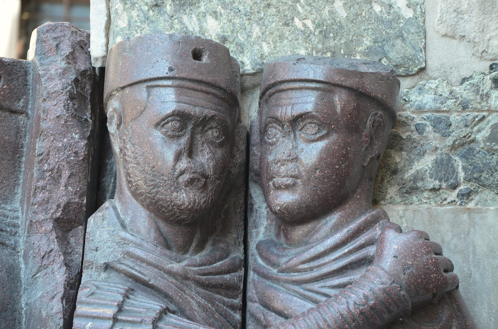
三世紀危機徹底摧毀了奧古斯都所開創的元首制[1]。在將近半個世紀的混亂中，羅馬帝國面臨著軍事僭主頻繁篡位、邊疆防線崩潰以及嚴重的惡性通貨膨脹[2]。戴克里先（原名戴克里斯）於公元245年出生於達爾馬提亞的薩洛尼卡，其出身極為低微，父親僅是一名書記員，或者是元老阿努利努斯的獲釋奴隸[4]。戴克里先憑藉卓越的軍事才能在軍中崛起，於公元284年11月17日被士兵擁立為帝[4]。在登基的公開儀式上，他身著帝國紫袍，親自手刃了被指控謀殺前帝努梅里安的近衛軍長官阿佩爾，以此彰顯自身的無辜與正義[4]。
在統治初期，戴克里先實際掌控的勢力範圍僅限於小亞細亞和敘利亞，其餘地區仍臣服於努梅里安的兄弟卡里努斯[4]。直至公元285年仲夏，戴克里先在馬格斯戰役中擊敗並清除了卡里努斯，才正式成為羅馬帝國的唯一統治者[7]。面對一個飽受內戰摧殘、官僚體制瓦解的龐大國家，戴克里先意識到，若要重建帝國的權威，必須徹底拋棄元首制下皇帝作為「第一公民」（Princeps）的共和假面，取而代之的是公開、絕對的君主專制，即「君主制」（Dominate）的確立[1]。
為了加強中央集權並提高行政與軍事防禦效率，戴克里先在維持帝國「不可分割之財產」的理論前提下，將帝國進行了行政上的重組[4]。他將行省數量從50個增加到近100個，並將這些行省劃分為12個由「代理官」（Vicar）管轄的「管區」（Diocese），這也是後來天主教會劃分教區的歷史淵源[7]。此外，他將民事行政權與軍事指揮權分離，由專職的「軍事長官」（Dux）統帥軍隊，極大地降低了地方官員發動叛亂的概率[7]。
戴克里先將自身安置於東方的尼米底亞，並於公元286年任命其忠誠的 Illyria 戰友、出身 Sirmium 農民之子的馬克西米安為西方的共治「奧古斯都」[4]。隨後，他又於公元293年引入了兩位「凱撒」（伽列里烏斯與君士坦提烏斯·克羅魯斯），正式確立了「四帝共治」（Tetrarchy）制度[3]。
為了給這種全新的絕對權力提供超自然的合法性，戴克里先引入了極具神權色彩的稱號與宮廷禮儀[3]。他自稱為「君主與神」（Dominus et Deus），並在公元287年與馬克西米安分別冠以「朱庇特之子」（Jovius）與「赫克力士之子」（Herculius）的神聖稱號[3]。這一神學建構旨在表明，兩位奧古斯都的權力並非源於元老院或軍隊的授予，而是源於天神朱庇特與大力神赫克力士的旨意，他們是神明在人間的代言人與秩序的維護者[3]。
在宮廷儀式中，戴克里先引入了源自波斯宮廷的「跪拜禮」（Proskynesis，在拉丁語中稱為 Adoratio purpurae）[3]。所有覲見者必須匍匐在地，親吻皇帝金絲紫袍的衣角，而皇帝則深居宮闈，被繁複的儀軌與官僚層層隔離[3]。這種空間與儀式上的神聖化，徹底將皇帝塑造成超越凡人的神性存在[3]。
在社會與經濟領域，戴克里先同樣推行了嚴厲的管制[5]。為了解決因長期貨幣貶值引起的惡性通貨膨脹，他於公元301年頒布了《最高價格限制敕令》，試圖以國家行政力量規定所有商品與勞務的最高價格[5]。然而，這項政策嚴重違背了市場規律，導致黑市猖獗、商品斷貨，最終宣告失敗[5]。為了保證穩定的稅收與勞動力來源，他下令實行職業世襲制，將農民固定在土地上，並強制子承父業，這實質上消滅了帝國晚期的社會流動性[5]。
這種高度強調傳統多神教秩序與皇帝絕對神權的體制，必然與拒絕向世俗君主與異教神祇獻祭的基督教產生劇烈衝突[10]。在保守宗教觀念的驅使下，加上副帝伽列里烏斯的極力鼓動，戴克里先於公元303年發動了羅馬歷史上最為殘酷、系統化的「大迫害」[4]。大批教堂被摧毀，聖經被焚毀，拒絕向羅馬諸神獻祭的基督徒面臨著嚴刑拷打與公開處決[4]。這場迫害在戴克里先於公元305年退位後，仍由伽列里烏斯在東方持續推進，直至公元311年才告終結[4]。戴克里先則在薩洛尼卡的宮殿中度過晚年，並於公元316年去世，目睹了他親手創立的四帝共治體制走向崩解[4]。
| 皇帝與時期 | 核心政治/宗教稱號 | 政治神學與政教關係內涵 | 歷史背景與關鍵法規事件 |
| 戴克里先 (284–305 CE) | 君主與神 (Dominus et Deus) 朱庇特之子 (Jovius)[3] | 皇帝超越凡人，權力源自傳統羅馬主神朱庇特，要求臣民行波斯式跪拜禮。[3] | 經歷三世紀危機後重塑秩序；創立四帝共治制；頒布最高價格限制敕令（301 CE）；發動羅馬歷史上最後一次「大迫害」（303 CE）。[4] |
| 君士坦丁一世 (306–337 CE) | 大祭司 (Pontifex Maximus) 外部事務主教 (Episkopos ton ektos) 亞使徒 (Isapostolos)[13] | 保留傳統多神教最高祭司職權以安撫異教精英；同時在基督教內部自命為天主指派的世俗保護者，深度干預教會外部行政。[14] | 於米爾維安大橋戰役（312 CE）獲得基督啟示；聯合頒布《米蘭敕令》（313 CE）使基督教合法化；召集並主持第一屆尼西亞公會議（325 CE）。[16] |
| 格拉提安 (367–383 CE) | 顯赫祭司 (Pontifex Inclitus)[15] | 歷史上首位拒絕接受「大祭司」袍服與頭銜的基督徒皇帝；以「顯赫祭司」替代，去除了頭銜中的異教神聖性。[15] | 受米蘭主教安波羅修影響；下令拆除元老院勝利女神祭壇；取消貞女祭司及異教祭司團的財政補貼與特權。[22] |
| 迪奧多西一世 (379–395 CE) | 國教立法者 教堂內的懺悔者[26] | 世俗法律高於宗教的傳統被打破；皇帝在教義與道德事務上必須服從教會的屬靈裁判，開創「皇帝在教會之內」的先例。[26] | 頒布《薩洛尼卡敕令》（380 CE）確立尼西亞大公信仰為國教；因薩洛尼卡慘案（390 CE）向安波羅修屈服並公開懺悔；全面禁止異教活動。[27] |
君士坦丁大帝的雙重神聖：大祭司與「外部事務主教」
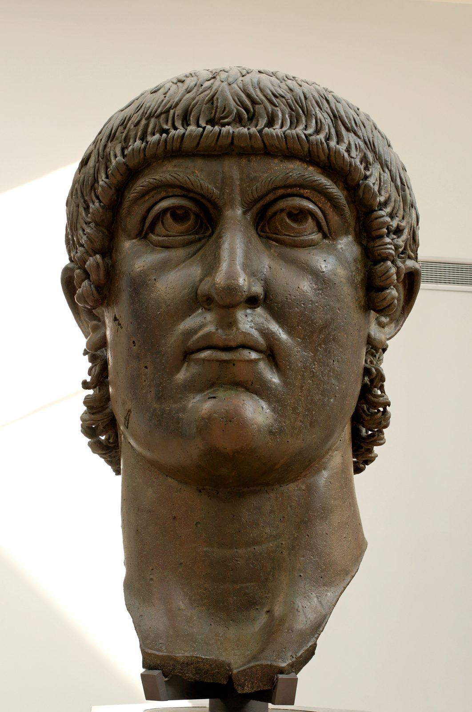
戴克里先退位後，帝國再度陷入漫長的繼位內戰[7]。君士坦丁一世於公元272年（或273年）2月27日出生於莫西亞行省的奈蘇斯，其父親君士坦提烏斯·克羅魯斯是四帝共治中的西部 Caesar，而母親海倫娜則是一名出身卑微、來自庇提尼亞的希臘女子[19]。君士坦丁早年在東方帝廷服役，深受戴克里先與伽列里烏斯的器重，隨後於公元305年西行，隨父親征討不列顛[19]。公元306年父親去世後，君士坦丁在埃伯拉庫姆（今英國約克）被麾下軍隊擁立為奧古斯都[19]。
在與馬克森提烏斯爭奪西部控制權的內戰中，君士坦丁迎來了其人生的決定性轉折。在公元312年10月28日的米爾維安大橋戰役前夕，君士坦丁宣稱在正午的太陽上方看見了十字架形狀的光芒，並伴有「憑此記號，你必征服」（In hoc signo vinces / Hoc signo victor eris）的預言[14]。他隨即命令士兵在盾牌上塗抹象徵基督名字縮寫的「凱樂符號」（Chi-Rho），並最終贏得了這場戰役[20]。公元313年，君士坦丁與東部皇帝李錫尼共同頒布《米蘭敕令》，徹底廢除了對基督教的法律禁令，歸還教會財產，開啟了基督教與羅馬帝國結盟的新紀元[19]。
然而，君士坦丁並未立即割裂與帝國傳統多神教的聯繫。在公共 titulature 中，他依然保留了歷史悠久的「大祭司」（Pontifex Maximus）頭銜[14]。這一職務自奧古斯都於公元前12年兼任以來，已成為皇帝統治合法性的核心支柱，象徵著對帝國境內所有宗教事務、祭司團體的最高司法與行政裁決權[15]。
對於君士坦丁而言，保留「大祭司」稱號是一項極其關鍵的政治務實策略[14]。在四世紀初，羅馬元老院貴族、地方官僚以及大部分行省精英依然是虔誠的多神教信徒[10]。皇帝若貿然放棄這一傳統身份，將會動搖國家的憲政基石[10]。因此，君士坦丁在資助基督教會的同時，繼續履行大祭司的世俗職責，甚至在錢幣上保留太陽神（Sol Invictus）的圖像，展現出一種高超的宗教包容與政治實用主義[14]。
與此同時，君士坦丁在基督教內部為自己建構了一個前所未有的「神聖定位」。根據尤西比烏斯在《君士坦丁傳》中的記載，君士坦丁曾對主教們說，他們是負責教會內部事務（如教義、聖禮）的主教，而他自己則是「天主指派的、負責教會外部事務的主教」（Episkopos ton ektos）[13]。
這個稱號的提出，具有極其深遠的憲政意義。它既劃定了皇帝不直接染指神職、施洗等屬靈權能的界限，又賦予了皇帝對教會行政、組織與統一進行世俗干預的無上權力[17]。作為「外部主教」，君士坦丁採取了多項實質性舉措：
- 召集普世公會議：當阿里烏派關於基督神性的爭端威脅到教會與帝國的團結時，君士坦丁於公元325年親自召集並主持了第一屆尼西亞公會議，甚至在會議上參與神學討論，推動了《尼西亞信經》的制定[13]。
- 將教會法轉化為帝國法律：他免除了基督教神職人員的市政稅與兵役義務，賦予主教法庭對世俗民事糾紛的仲裁權，並動用國家財政大舉修建君士坦丁堡的聖使徒教堂與耶路撒冷的聖墓教堂[14]。
- 以世俗權力彈壓異端：他將公會議的決議提升至法律高度，對不服從正統教義的異端分子實施流放與沒收財產的處罰，重新引入了以國家機器強制實現信仰統一的原則[14]。
然而，君士坦丁對自身信仰的實踐卻透露出羅馬君王在世俗政治與救贖神學之間的掙扎。由於當時流行「洗禮能洗淨一切罪惡」的觀念，且君王在世俗政治運作中不可避免地會觸及殺戮與陰謀，君士坦丁終其一生僅作為一名「慕道友」（Catechumen），直到公元337年臨終前，才在尼米底亞接受了阿里烏派主教尤西比烏斯的洗禮[16]。
君士坦丁去世後的政治與宗教待遇，生動地展現了這種過渡時期的雙重神聖性[33]。在東方，他被安葬在君士坦丁堡，被教會尊為聖徒與「等同使徒者」（Isapostolos）[16]。而在西方，羅馬元老院依然為其舉行了傳統的「神格化」（Consecratio）儀式，尊其為「神聖的君士坦丁」（Divus Constantinus），並發行了描繪他蒙紗（Veiled head）且乘馬車升天、一隻天主之手（Hand of God）自雲端伸出接引他的紀念銅幣[20]。
格拉提安的信仰抉擇：拒絕「大祭司」與「榮譽祭司」的轉向
隨著基督教在帝國統治階層中的根深蒂固，保留多神教祭司首腦的身份，對於自詡為虔誠基督徒的皇帝們而言，逐漸變成了一個無法容忍的道德與神學負擔。這一憲政與信仰的衝突，在西方皇帝格拉提安統治時期（公元367至383年在位）達到了爆發點[22]。
格拉提安於公元359年4月18日出生於 Sirmium，是西部皇帝瓦倫提尼安一世與瑪麗娜·塞維拉的長子[24]。他自幼接受了極佳的古典與基督教教育，其導師為著名詩人與修辭學家奧索尼烏斯[24]。瓦倫提尼安一世去世後，格拉提安繼承了西部的統治權，並提拔奧索尼烏斯擔任其執政官與諮詢顾问[24]。在公元379年的一篇感恩演說中，奧索尼烏斯仍數次稱頌格拉提安為「大祭司」（Pontifex），這表明在格拉提安統治前期，這一頭銜依然是帝國官方認可的 titulature 組成部分[25]。
然而，在米蘭主教安波羅修的強大精神感召與系統引導下，格拉提安的宗教政策迅速轉向激進[22]。歷史學家佐西姆斯在其《新歷史》第四卷中，記載了一起具有深遠政治隱喻的事件[23]。公元382年，當羅馬傳統祭司團依照數百年的慣例，將象徵「大祭司」最高神職權能的祭司袍（Stola）呈遞給格拉提安時，這位年輕的基督徒皇帝悍然拒絕接受，宣稱穿戴此等異教服飾對於一個基督徒而言是不法且褻瀆的[23]。
祭司團首領在長袍被退回後，留下了一句冷酷的雙關警言：
「如果皇帝不願意成為 Pontifex（祭司），那麼很快就會有一個 Maximus（意指大祭司，同時也是當時西方軍事將領馬格努斯·馬克西穆斯 Magnus Maximus 的名字）誕生。」[23]
不久之後，格拉提安果然在巴黎附近遭遇馬克西穆斯叛軍的突襲，最終於公元383年8月25日在里昂被殺，這無疑加深了這一事件的傳奇與宿命色彩[24]。
儘管現代歷史學家艾倫·卡梅隆等人指出，羅馬大祭司並不存在某件特定的「祭司袍」，且佐西姆斯作為異教歷史學家存在抹黑基督徒皇帝的動機，但格拉提安正式廢除「Pontifex Maximus」頭銜這一歷史事實已得到碑銘學與法規研究的確證[15]。
為了解決廢除舊頭銜後的政治真空，同時不完全放棄世俗政權在國家宗教行政中的主導地位，皇帝的 titulature 進行了精細的技術性微調[15]。格拉提安及其後繼者（如迪奧多西一世和瓦倫提尼安三世）開始在官方碑銘與敕令中使用「顯赫祭司」（Pontifex Inclitus，或譯「榮譽祭司」）這一稱號[15]。
「Inclitus」在拉丁語中意為「著名的」或「榮譽的」[21]。這一字眼上的精巧修改，既保留了皇帝作為國家最高宗教行政長官的歷史名分，又徹底剝離了「Maximus」所攜帶的、與異教神祇直接溝通的祭祀與神聖屬性，將其轉變為一個純粹的世俗榮譽稱號[15]。
在 titulature 變革的同時，格拉提安在安波羅修的推動下，發動了一系列旨在摧毀羅馬傳統多神教物質基礎的激進立法[22]：
- 移除勝利女神祭壇：他下令將設在羅馬元老院議事堂（Curia Julia）內、象徵羅馬帝國征服史與傳統信仰核心的「勝利女神祭壇」徹底拆除，引發了元老院異教領袖辛馬庫斯與安波羅修之間著名的跨世紀政論對決[22]。
- 剝奪財政與特權：他正式取消了羅馬神廟、貞女祭司（Vestal Virgins）以及各大異教祭司團體數百年來享有的政府財政補貼、地產繼承權以及市政免稅特權，沒收其財產充公[22]。
這一系列斷然舉措，標誌著羅馬帝國的世俗政權正式終結了其對多元宗教的包容與庇護，開始全面轉向對單一正統基督教的排他性支持[24]。
迪奧多西一世與教會權威的崛起：從「國教立法者」到「教堂內的懺悔者」
公元378年，東部皇帝瓦倫斯在阿德里安堡戰役中慘敗於哥特人並陣亡，帝國東部陷入群龍無首、兵源枯竭的危局[24]。面對蠻族入侵的驚濤駭浪，格拉提安於公元379年1月19日做出了一項關鍵性決策，提拔拉丁語裔的西部將領迪奧多西一世為東部奧古斯都，委其整頓東部軍政[24]。
迪奧多西一世是一位極為堅定的尼西亞派基督徒[30]。公元380年，他在薩洛尼卡遭遇重病，並由當地的尼西亞派主教阿斯克里烏斯為其施洗[27]。病癒後，為了平息帝國首都君士坦丁堡長期以來的教義紛爭，迪奧多西一世聯名格拉提安與瓦倫提尼安二世，於公元380年2月27日頒布了劃時代的《薩洛尼卡敕令》（即著名的《Cunctos populos》）[24]。
這項敕令以極具強制性與排他性的措辭，規定了帝國臣民的信仰標準：
「我們命令所有臣民皆信奉使徒彼得傳授給羅馬人的宗教……唯有信奉父、子、聖靈三位一體同一神聖 Majestas 的人，方可冠以『大公基督徒』（Catholic Christians）的稱號；其餘信奉異端教義者，皆為『愚昧的瘋子』，其聚會場所不得稱為教堂。他們不僅將面臨天主的審判，更將遭受我們依天意施加的世俗懲罰。」[27]
這部敕令被正式收入《迪奧多西法典》第十六卷，標誌著基督教完成了從「被寬容的信仰」到「帝國唯一合法宗教」的憲政跨越[27]。
然而，當迪奧多西一世動用世俗王權強推教會正統教義時，他也將自己置於了一個全新的政治神學拷問之中：如果世俗君主自視為基督教會的一員，那麼他是否必須在道德與信仰層面，服從教會神職人員的屬靈審判？這一歷史性的權力博弈，在公元390年的「薩洛尼卡慘案」中迎來了憲政史上的終極對決[29]。
慘案起因於薩洛尼卡的一起治安衝突。當地的羅馬軍事指揮官（兼近衛軍長官）布瑟里希，因一名極受市民喜愛的戰車競技御者犯下同性性犯罪而將其逮捕[29]。市民要求釋放這名體育明星，在遭到拒絕後爆發了暴動，暴怒的市民砸死了布瑟里希及多名帝國官員[29]。
當時身在西部首都米蘭的迪奧多西一世聽聞此訊，性格中固有的 vehemence（暴烈與Vehemence）瞬間失控[29]。他繞過了羅馬法規定的正常司法調查程序，直接向其哥特人僱傭軍下達了無差別報復的密令[29]。當薩洛尼卡市民毫無防備地聚集在競技場觀看比賽時，軍隊關閉了大門，進行了長達三個小時的瘋狂屠殺，導致約7,000名無辜市民慘死[30]。
當屠殺慘劇傳到米蘭，主教安波羅修感到極大的震驚與悲憤[29]。此時，高盧主教們的教區會議剛好在米蘭召開，全體神職人員皆對此等暴行表示強烈譴責[43]。安波羅修隨即給迪奧多西寫了一封私信（Letter 51），在信中他既對皇帝過去的友誼表示感激，又極其堅定地指出，皇帝犯下了嚴重的殺戮之罪，並表示自己在異象中獲得天主的警示，絕對不能在皇帝出席的情況下主持聖祭與施放聖餐[42]。安波羅修在信中引用了舊約中先知拿單直面斥責大衛王犯下謀殺與姦淫罪的典故，敦促迪奧多西效法大衛，脫下皇冠與紫袍進行誠懇的懺悔[42]。
當迪奧多西一世試圖如往常一樣，帶領侍從步入米蘭大教堂參加彌撒時，安波羅修親自擋在大教堂門口，拒絕讓皇帝入內[26]。皇帝的近臣、近衛軍長官魯菲努斯試圖上前調解並指責主教，但遭到了安波羅修的嚴厲斥責[29]。安波羅修對著迪奧多西一世宣布了對其處以「絕罰」（Excommunication），警告他不要試圖用第二重罪（踐踏聖所）來掩蓋第一重罪[26]。
面對主教強大的屬靈威權，迪奧多西一世最終選擇了屈服[26]。這位統治著地中海世界的絕對君主，在眾目睽睽之下，脫去了皇冕與象徵至高皇權的紫袍，拋棄了戴克里先以來建立的、不容凡人直視的神格化偽裝，以一個普通罪人的姿態，匍匐在大教堂的石階上，落淚痛哭，公開乞求上帝與教會的寬恕[26]。
迪奧多西的公共懺悔持續了整整八個月[29]。最終，在公元390年的聖誕節，在承諾頒布一項新法律——規定所有死刑判決在執行前必須保留30天的寬限期，以防止皇帝在盛怒之下進行情緒化執法後，安波羅修才正式解除了對他的絕罰，准許其重新領受聖餐[29]。
而在領受聖餐的儀式中，安波羅修又給這位羅馬君主上了一堂憲政課。當迪奧多西習慣性地試圖留在聖壇內部（傳統大祭司在聖所享有的特權位置）時，安波羅修指派執事將其請出聖壇柵欄，命令其與普通平信徒站在一起，並留下了歷史性的名言：
「皇帝的紫袍可以製造出君王，但製造不出祭司。陛下在教會之內，而非在教會之上。」[26]
薩洛尼卡事件是歐洲政教關係史上的分水嶺[45]。它徹底打破了自古以來「君權高於神聖法律」的觀念，確立了即便是世俗的最高主宰，在道德與屬靈層面，也必須臣服於教會主教的監督與裁判[26]。在經歷這次靈魂洗禮後，迪奧多西一世於公元391年頒布了更為嚴苛的法令，全面禁止異教祭祀、關閉所有異教神廟，並對違抗者施以重罰，使基督教徹底成為帝國牢不可破的靈魂基石[29]。
政教關係的長遠歷史漣漪：從凱撒普派、雙劍論到神聖和諧
四世紀羅馬皇帝稱號與神聖權威的此消彼長，在帝國隨後的歷史進程中，激盪出了兩條截然不同的政治神學發展路徑，深刻地塑造了東西方文明的制度走向[46]。
東方帝國的「政教協調」（Symphonia）
在東羅馬（拜占庭）帝國，君士坦丁開創的「外部事務主教」與帝國保護者模式得到了制度化的延續[13]。公元六世紀，查士丁尼一世在其頒布的《新律》（Novellae，特別是公元535年的第六號新律）中，正式將東西方政教關係提煉為「政教協調」（Symphonia）理論[49]。
該理論借用了公元451年迦克敦公會議關於基督雙重神性的表述，將世俗帝權（Imperium）與教會神權（Sacerdotium）類比為基督「既完全是神，又完全是人，二者不相混淆，亦不相分離」的神聖結合[49]。
【天主（God）的終極主權】
│
┌────────────────┴────────────────┐
▼ ▼
【神權 (Sacerdotium)】 【帝權 (Imperium)】
(由牧首/主教團體代表) (由世俗皇帝代表)
├─ 負責靈魂救贖與神聖教義 ├─ 負責世俗治理與法律執行
└─ 捍衛教會正統教義 └─ 充當教會的世俗保護者
│ │
└────────────────┬────────────────┘
▼
【神聖政教協調 (Symphonia)】
(和諧協作，共同服務基督宗教社會)
在「Symphonia」框架下，皇帝與牧首各司其職，共同治理同一個基督徒社會，皇帝雖然不具備屬靈聖職，但作為「上帝的守護者」，有權召集公會議並將教義轉化為帝國法律[49]。儘管西方史學界常以「凱撒普派主義」批評拜占庭皇帝對教會的行政控制，但在拜占庭的憲政實踐中，若皇帝違背教義，教會依然保留了極強的抗爭與制衡力量[48]。
西方教會的「雙劍論」（Two Swords Doctrine）
在西方，隨著西羅馬帝國於五世紀末的政治解體，羅馬教會失去了世俗帝權的庇護，不得不直接面對各個新興的蠻族王國[40]。在這種地緣政治環境下，西方教會亟需建立一套防禦世俗權力侵害的理論武器[28]。公元494年，教宗吉拉修一世在致東羅馬皇帝阿納斯塔修斯一世的著名國書中，首次系統化地闡述了「吉拉修雙元主義」，即後世「雙劍論」的雛形[28]。
吉拉修指出，世界由兩大權力共同治理：神職人員的神聖權威（Auctoritas sacra pontificum）與君王的世俗權力（Regalis potestas）[28]。在這兩者中，主教的屬靈權威更為重大，因為他們在末日審判時，必須為世俗君王本身的靈魂向天主負責[28]。
到了中世紀盛期，這一理論經由十一世紀的「格列高利改革」與 canonists（教會法學家）的系統闡述，演變為極具攻勢的「教宗無上權」理論[28]。依據十一世紀彼得·達米安以及十二世紀聖伯爾納鐸在《論沉思》中的經典解釋，新約路加福音（22:38）提及的「兩把劍」皆屬於教會28：
- 屬靈之劍（Gladius spiritualis）：由教宗與神職人員直接揮舞，用於道德審判與靈魂救贖[28]。
- 物質之劍（Gladius materialis）：由教會委託給世俗君王與騎士使用，世俗君主必須遵照教會的意志，為了捍衛信仰而揮舞此劍[28]。
這一政治神學直接為教宗介入世俗政治、廢黜世俗君主（如亨利四世）提供了合法性依據，引發了中世紀後半葉教宗與神聖羅馬帝國皇帝之間慘烈的「敘任權鬥爭」[52]。
此後，經由阿奎那對國家自然法屬性的調和，以及新教改革時期馬丁·路德與加爾文對「兩個王國」的重新劃分（區分屬靈靈魂與世俗肉體治理），「雙劍論」所隱含的政教分離、權力雙重制衡的邏輯，最終成為西方現代憲政主義與政教分離原則的歷史基石[52]。
| 歷史政教關係模型 | 核心倡導者與文獻 | 權力運作機制與核心邏輯 | 皇帝/世俗首腦之定位 | 歷史與地理分佈 |
| 凱撒普派主義 (Caesaropapism)[48] | 君士坦丁一世[13] 《米蘭敕令》[20] | 世俗帝權高於教會組織，皇帝不僅管理行政，亦實質主導教義方針與教區劃分。13 | 外部事務主教、亞使徒、大祭司、上帝在人間的唯一代理人。[13] | 四至五世紀的統一羅馬帝國；部分時期的東羅馬帝國。[13] |
| 神聖和諧/政教協調 (Symphonia)[49] | 查士丁尼一世[49] 《第六號新律》[49] | 帝權與神權如基督神性與人性般和諧協作，互不隸屬，共同維繫單一基督宗教社會。[49] | 教會正統教義的捍衛者、普世公會議的召集者、世俗法律的執行者。[49] | 東羅馬（拜占庭）帝國；後世的俄羅斯帝國與東正教世界。[49] |
| 中世紀雙劍論 (Two Swords Doctrine)[28] | 教宗吉拉修一世[28] 聖伯爾納鐸《論沉思》[28] | 屬靈之劍與物質之劍皆歸教會所有，教宗直接行使屬靈劍，將物質之劍委託給世俗君主，世俗必須服從教會道德審判。[28] | 教會物質之劍的執行者、需接受教會與教宗屬靈裁決的世俗臣民。[28] | 中世紀西歐、天主教羅馬教廷、神聖羅馬帝國。[46] |
結論
從戴克里先的「君主與神」，到君士坦丁的「外部事務主教」，再到格拉提安與迪奧多西對「大祭司」頭銜的修正與臣服，四世紀羅馬皇帝稱號的演變，本質上是一部羅馬國家與教會在衝突、調和與融合中尋求全新合法性源泉的歷史。
戴克里先試圖通過強化傳統多神教的神權統治來拯救行將就木的帝國，卻因低估了基督教的凝聚力而走向失敗[3]。君士坦丁大帝則展現出極高的政治智慧，在保留「大祭司」世俗憲政名分的同時，巧妙地以「外部主教」的身份將基督教納入帝國治理體系，開創了政教結盟的先河[13]。然而，這一結盟內在的張力在四世紀末達到了臨界點[29]。安波羅修在薩洛尼卡慘案中對迪奧多西一世的成功抗衡，徹底打破了「君王即法律、君王即神明」的古老神話，將皇帝從「神聖主宰」拉回至「必須服從上帝誡命的平信徒」位置[26]。
這場 titulature 與神聖權威的歷史性重塑，不僅完成了羅馬帝國的基督教化轉型，更在帝國分裂與瓦解的地緣政治格局中，分別孕育了東方的「政教協調」與西方的「雙劍論」[28]。正是西方教會在「皇帝在教會之內」這一原則下對世俗權力的長期抗衡與制衡，最終在西歐文明的土壤中，孕育出了權力分立、有限政府以及良知自由等現代憲政主義的核心觀念，成為羅馬帝國轉型期留給後世最為豐厚的政治與制度遺產[26]。
引用的著作
- Principate - Grokipedia
- „ALEXANDRU IOAN CUZA” UNIVERSITY OF IAȘI The crisis of the Roman Empire in the IVth century Latin historiographical breviar - Facultatea de Istorie
- _Dominus_ (title) — Grokipedia, [https://grokipedia.com/page/Dominus](https://grokipedia.com/page/Dominus)_(title)
- Diocletian | Biography, Empire, Definition, Persecution, & Reign - Britannica
- Diocletian : r/ancientrome - Reddit
- Diocletian Worksheets | Ascend to Power, Empire Reorganized, Domestic Reforms
- Emperor Diocletian: Built Split, Quit Rome, Grew Cabbages - Time Walk
- Diocletianus: The Years 284-293 - Corvinus
- The Tetrarchy | Ancient Rome Class Notes - Fiveable
- Roman imperial cult - Wikipedia, [https://en.wikipedia.org/wiki/Roman](https://en.wikipedia.org/wiki/Roman)_imperial_cult
- From persecuted to protected: Nicaea and Christianity in Rome - Evangelical Focus
- RICE, CARL ROSS. Diocletian's “Great Persecutions”: Minority Religions and the Roman Tetrarchy. (Under the direction of P - NC State Repository
- Sylvester I, Pope, St. - Encyclopedia.com
- The Breath and the Saving Grace of Constantine - Advocatetanmoy Law Library
- Pontifex Maximus: from Augustus to Gratian – and Beyond - Helda
- Constantine the Great and Christianity - Wikipedia, [https://en.wikipedia.org/wiki/Constantine](https://en.wikipedia.org/wiki/Constantine)_the_Great_and_Christianity
- Marco Urbano Sperandio Costantino 'vescovo universale' - Historia et Ius, [http://www.historiaetius.eu/uploads/5/9/4/8/5948821/sperandio](http://www.historiaetius.eu/uploads/5/9/4/8/5948821/sperandio)_7.pdf
- The Later Roman Empire Vol I - A.H.M. Jones | PDF - Scribd
- Constantine the Great - Wikipedia, [https://en.wikipedia.org/wiki/Constantine](https://en.wikipedia.org/wiki/Constantine)_the_Great
- Constantine I the Great POSTHUMOUS Christian Deification Quadriga Horse i34809 | eBay
- Pontifex maximus - Wikipedia, [https://en.wikipedia.org/wiki/Pontifex](https://en.wikipedia.org/wiki/Pontifex)_maximus
- Pope Damasus I - Wikipedia, [https://en.wikipedia.org/wiki/Pope](https://en.wikipedia.org/wiki/Pope)_Damasus_I
- When did Roman emperors cease to use the title of “Pontifex Maximus”? - Roger Pearse
- EMPIRE Gratian & Dragged Captive Star 378-383 AD AE3 Ancient Roman Coin Old D997
- The Roman Pontifex Maximus - Ministry Magazine
- Theodoret: How St. Ambrose Humiliated Theodosius the Great – Wendell Hunnicutt - UTA
- Edict of Thessalonica - Wikipedia, [https://en.wikipedia.org/wiki/Edict](https://en.wikipedia.org/wiki/Edict)_of_Thessalonica
- Doctrine of the two swords - Grokipedia, [https://grokipedia.com/page/Doctrine](https://grokipedia.com/page/Doctrine)_of_the_two_swords
- Theodosius and the Relationship Between Church and State
- Massacre of Thessalonica - Wikipedia, [https://en.wikipedia.org/wiki/Massacre](https://en.wikipedia.org/wiki/Massacre)_of_Thessalonica
- CONSTANTINE I the GREAT Roman Coin POSTHUMOUS Christian Deification i105403
- Constantine I - dlab @ EPFL, [https://dlab.epfl.ch/wikispeedia/wpcd/wp/c/Constantine](https://dlab.epfl.ch/wikispeedia/wpcd/wp/c/Constantine)_I.htm
- Constantine and Rome 9780300129717 - DOKUMEN.PUB
- The Cambridge Companion to Age of Constantine
- Religion, decline and fall - Weekly Worker
- Gratian - Wikipedia
- Why did Emperor Gratian refuse to become pontifex maximus, and what impact did that have on Roman religion? - Quora
- Zosimus, New History 4.36 - Livius.org
- Pontifex Maximus : from Augustus to Gratian – and Beyond - CORE Reader
- On February 27th, A.D. 380, Emperors Gratian, Valentinian II, and Saint Theodosius the Great issued the Edict of Thessalonica (or “Cunctos populos”), declaring Christianity the state religion of the Roman Empire. : r/europe - Reddit, [https://www.reddit.com/r/europe/comments/fal1uw/on](https://www.reddit.com/r/europe/comments/fal1uw/on)_february_27th_ad_380_emperors_gratian/
- The Original Christian Nationalism | The Heidelblog
- Massacre at Thessalonica - Edubirdie
- Letter 51 (Ambrose) - CHURCH FATHERS - New Advent
- St. Ambrose of Milan, Letters (1881). pp. 324-354. Letters 51-60., [https://www.tertullian.org/fathers/ambrose](https://www.tertullian.org/fathers/ambrose)_letters_06_letters51_60.htm
- Excommunication and the Politics of Piety in Ambrose of Milan - Revistas UC3M
- A Short History of the Papacy in the Middle Ages - dokumen.pub
- Late Roman Toleration or How to Read an Imperial Edict: Theodosius to All the People on the Catholic religio - ResearchGate, [https://www.researchgate.net/publication/400268521](https://www.researchgate.net/publication/400268521)_Late_Roman_Toleration_or_How_to_Read_an_Imperial_Edict_Theodosius_to_All_the_People_on_the_Catholic_religio
- Caesaropapism - Model Diplomat
- Symphonia — Grokipedia
- The Art of Symphonia: Lessons from Byzantine Political Theology - Providence
- Fr. Michael Butler: Orthodoxy, Church, and State - Religion & Liberty Online - Acton Institute
- Two swords doctrine Definition for Intro to Christianity |... - Fiveable
- Two Kingdoms, One King: What Two Kingdoms Theology Really Is - Logos Bible Software
- Aquinas on Church and State: Harmonizing Temporal and Spiritual Powers - PolSci Institute
- Doctrine of the two swords - Wikipedia, [https://en.wikipedia.org/wiki/Doctrine](https://en.wikipedia.org/wiki/Doctrine)_of_the_two_swords
- Caesaropapism - Grokipedia
西元紀年的確立與演進：從歷史考證、政治妥協到全球數位化時間標準的建構
一、 西元紀元的提出背景：世俗計時的連續性需求與去政治化
在西元紀年（Anno Domini，簡稱 AD）普及之前，古代西方世界並無統一、連續且線性的民用計時系統[1]。當時的社會主要採用多種地方性的、具備政治象徵意義的計年方式，包括以羅馬建城為起點的羅馬建城紀元（Ab Urbe Condita，簡稱 AUC）、四年一度的奧林匹亞紀元，以及最為普遍的帝王在位紀年（Regnal Years）[1]。這些曆法不僅缺乏跨區域的連續性，且隨著政權更迭與帝王駕崩而頻繁「重置（Reset）」，為行政管理、歷史記錄和長途貿易帶來了極大的資料對齊困難[2]。
進入中世紀早期，西方世界在民用與法律文書上，普遍採用「戴克里先紀元」（Era of Diocletian）來標記年份，以羅馬皇帝戴克里先於西元 284 年登基為起點[5]。然而，戴克里先皇帝在歷史上以殘酷屠殺與迫害基督徒著稱[6]。隨著基督教在歐洲社會政治影響力的擴大，學者與行政官員逐漸對在日常法律公文和官方記錄中天天使用「迫害者登基年」感到排斥[5]。
與此同時，中世紀早期歐洲普遍面臨著「世界末日將至」的社會恐慌[6]。當時主流的「世界紀年」（Anno Mundi）系統以聖經創世紀作為時間起點（約西元前 5500 年左右），並認為世界的總壽命為 6000 年，這意味著世界末日將在世界紀年 6000 年（約當西元 500 年左右）降臨[6]。為了化解這種迫在眉睫的末日焦慮，並徹底清除異教暴君在時間座標上的政治印記，歷史學家與神學家亟需一套「正向無限延伸」、不隨帝王更迭而重置、且不具備末日倒計時性質的全新線性時間架構[5]。
二、 關鍵歷史人物與行政推手：從修道院計算到國家法典
西元紀年從一個單純的學術計算方案，演變為如今全球通用的公曆系統，歷經了科學計算、史學應用與國家行政力量的互補：
- 昭雪修士狄奧尼修斯（Dionysius Exiguus）：生活於六世紀的羅馬修士、天文學家兼律法學家[4]。西元 525 年，他受命整理教規並編篡曆法表[4]。他決定徹底廢除「戴克里先紀元」，改以耶穌基督「道成肉身（孕育及降生）」的年份作為新曆法的起點，從而奠定了「主之紀年（AD）」的框架[5]。
- 尊者比德（The Venerable Bede）：八世紀的英格蘭修士兼歷史學家[9]。他在其史學鉅著《英吉利教會史》（Historia Ecclesiastica Gentis Anglorum，完成於西元 731 年）中，首次系統性地採用西元紀年（AD）作為全書唯一的歷史事件敘事時間軸[9]，並開創性地使用了類似「主前（Before Christ，簡稱 BC）」的表述來標註基督誕生之前的歷史事件，使西元紀年從一個局部的計算工具升級為史學編篡標準[8]。
- 查理曼大帝（Charlemagne）與學者阿爾琴（Alcuin）：九世紀初，法蘭克國王兼神聖羅馬皇帝查理曼在其統治疆域內大力推動「卡洛林文藝復興」[15]。在宮廷核心學者阿爾琴的建議下，查理曼於其頒布的帝國行政詔書（Capitularies，如西元 802 年的《大詔令》）中，正式規定整個帝國境內的所有政府公文、民事法令與行政合約，必須統一採用西元紀年（AD）來標註日期[15]。這套世俗政權的行政強制令，使西元紀年迅速在西歐社會生根[15]。
- 曆法改革三巨頭（教宗格里高利十三世、里利烏斯與克拉烏斯）：西元 1582 年，因舊儒略曆存在每 128 年即產生 1 天誤差的設計缺陷（累積已達 10 天時差），教宗格里高利十三世聯合數學家阿洛伊修斯·里利烏斯（Aloysius Lilius）與天文學家克里斯托弗·克拉烏斯（Christopher Clavius），正式實施曆法改革，創立了沿用至今、擁有更精準閏年規則的《格里高利曆》（Gregorian Calendar）[19]。
三、 西元元年的數學推導模型：雙重數據庫的交叉對齊
狄奧尼修斯在西元 525 年拍板「西元元年（AD 1）」的具體歷史定位時，並非依靠神學想像，而是通過羅馬政治文獻與天文週期演算法兩套數據進行了交叉比對：
1. 羅馬帝王在位紀年的歷史文獻對齊
狄奧尼修斯主要利用了《新約聖經》中提及的羅馬帝國行政時間錨點進行逆推8：
- 錨點 A：《路加福音》第 3 章提到，施洗約翰傳道與耶穌受洗，發生在「羅馬皇帝提庇留（Tiberius）在位的第 15 年」[8]。
- 錨點 B：《路加福音》第 3 章指出，耶穌開始傳道時「年紀約有三十歲」[8]。
在羅馬官方歷史中，提庇留皇帝登基的那一年是確鑿無疑的——即羅馬建城第 767 年（767 AUC，即西元 14 年）[10]。依據這兩項數據，狄奧尼修斯進行了如下數學還原：
考慮到古代計演算法中常包含出生當年算作一歲的「虛歲」習慣，以及登基年份重疊的扣除，狄奧尼修斯最終將耶穌誕生的年份精確鎖定在羅馬建城第 753 年（753 AUC）[8]。因此，他將 753 AUC 宣告為新紀元前夕（1 BC），而緊接在後的 754 AUC 則成為了「西元元年（AD 1）」的起點[8]。
2. 天文物理週期與曆法推算表的耦合
除了文獻整理，狄奧尼修斯更考慮到了天文學上的「大復活節週期（Great Paschal Period）」[6]。在儒略曆框架下，月相週期（19年的默冬週期）與星期週期（28年的太陽週期）要完全重合一次，需要經歷：
狄奧尼修斯在撰寫新曆法表時，故意將新表格的起算年設定在 AD 5328。如此設計的妙處在於：自西元元年（AD 1）到新表起算年（AD 532）之間，剛好填滿了一個完整的 532 年大循環[6]。這使得 AD 532 年的所有天文、月相與星期參數，會與西元元年（AD 1）完全重合[29]。他可以直接將 AD 1 年的底層公式與參數完全複製到新表中，從而實現了天文週期與民用紀年元年的完美對齊[6]。
四、 東西方教會的分裂與對齊阻力：版本的「Fork」與物理時差
在「西元元年」確立後的上千年裡，歐洲東西方世界並未達成共識，這是一場漫長的時間主權爭奪戰。
1. 歷史上東方教會的長期排斥
當西方教會與神聖羅馬帝國大力推廣狄奧尼修斯創立的西元紀年（AD）時，東方的君士坦丁堡與東正教大本營對其極度排斥[5]。
- 「世界紀年（AM）」的死守：東正教世界長期採用基於古希臘《七十士譯本》推算的「拜占庭曆（Byzantine calendar）」，以西元前 5509 年（上帝創世之年）為世界紀元元年[4]。
- 學術不信任：拜占庭的學者們認為狄奧尼修斯的逆推公式存在嚴重的歷史考證硬傷與數學人為湊數，因此拒絕使用西元計年[5]。俄羅斯一直到 1700 年才由彼得大帝強行廢除世界紀年並啟用西元（AD）[15]；而君士坦丁堡普世牧首區則遲至 1728 年才正式在教會法上承認並接納西元紀年[4]。
2. 底層算法不同導致的物理時差
即便在兩百年多前東西方都接納了「西元（AD）」名詞，但因為兩邊掛載的「底層時間演算法（Calendar system）」存在本質分裂，導致兩邊的「西元元年第一天」在物理時空上指的並非同一個日子33：
- 西方大公教會採用 1582 年修正後的《格里高利曆》[33]；
- 東方東正教會則在宗教曆法中死守舊版《儒略曆》[33]。
當歷史學家使用天文回推軟體重構「西元 1 年 1 月 1 日」時，會驚奇地發現這兩個元年元旦在物理時間線上存在顯著的時間差。雙方雖然共用了同一個紀年名詞（AD），但物理時間至今並未真正重合[33]。
五、 全球標準化之路：近代國際公曆的確立與 ISO 8601
《格里高利曆》在 1582 年推出後，並非一夕之間成為國際標準，而是經歷了一場長達 300 多年、伴隨著帝國擴張、殖民政策與經貿整合的「全球軟體逐步更新」進程[34]。
1. 全球各政權採納西元曆法（格里高利曆）時間表
因宗教對立與主權考量，各國跟進這套「教廷標準」的時間點極為分散：
| 國家/地區 | 採用西元公曆年份 | 移除/調整天數 | 歷史背景與關鍵政治事件 |
| 義大利、西班牙、葡萄牙 | 1582 年[34] | 10 天[34] | 教宗額我略十三世頒布《格里高利曆》改革[38] |
| 德意志、瑞士（新教地區） | 1700 年[34] | 10 天[34] | 因宗教對立遲滯百餘年後，出於經貿需求更進[35] |
| 大不列顛王國與美洲殖民地 | 1752 年[34] | 11 天[34] | 英國議會通過新曆法法案，將歲首由 3 月 25 日改為 1 月 1 日[19] |
| 日本 | 1873 年[34] | 12 天[34] | 明治維新時期，為求全面現代化與西方接軌而改曆[38] |
| 中國 | 1912 年[37] | 無（直接對齊） | 辛亥革命後，中華民國臨時政府頒布《改用陽曆令》[38] |
| 蘇俄 | 1918 年[34] | 13 天[34] | 十月革命後，列寧下令民用體系強制實施新曆以同步國際[35] |
| 希臘 | 1923 年[34] | 13 天[34] | 歐洲最後一個採納新曆作為民用曆法的國家[38] |
| 沙烏地阿拉伯 | 2016 年[34] | 無（直接對齊） | 出於政府財政與公務員工資結算與國際接軌之考量[34] |
2. 中國對西元曆法的接軌歷程
在中國，格里高利曆的傳入與本土化經歷了三個關鍵階段38：
- 引介期（明末清初）：由耶穌會傳教士引進相關知識，因其純粹以地球繞日公轉為基準而不考慮月相，被稱為「陽曆」或「西曆」，與傳統陰陽合曆的農曆並行[38]。
- 法定期（1912 年）：辛亥革命成功後，孫中山就任臨時大總統，於 1912 年 1 月 1 日正式發布《改用陽曆令》，宣布將格里高利曆作為官方「國曆」[38]。1928 年，國民政府進一步規定全國於 1929 年起正式全面使用公曆[38]。
- 大一統期（1949 年）：中華人民共和國成立，於 1949 年 9 月的全國政協第一屆全體會議上，正式決定採用國際社會通用的格里高利曆與西元紀年，在中文語境中標準化命名為「公元」[38]。
3. ISO 8601 數位標準的最終封裝
儘管 20 世紀中葉各國在民用層面對齊了西元日期，但全球各地的日期書寫格式（如美國的 MM-DD-YYYY、歐洲的 DD-MM-YYYY）依然在電腦資訊交換和國際金融系統中帶來嚴重的資料混亂與安全隱患[19]。
為了在數位時代實現終極的時間大一統，國際標準化組織於 1988 年正式推出了 ISO 8601 國際標準[4]。該標準移除了一切宗教與文字偏好，正式規定將「格里高利曆」定為全球資訊交換、網際網路協定與科學計算中唯一的日期標準，並強制封裝了 YYYY-MM-DD 格式[4]。自此，西元紀年在誕生 1400 多年後，完成了從修道院曆書到全球互聯網底層代碼的數位化轉變[2]。
六、 缺失的「西元零年」與現代科學計算補丁
在西元紀年體系的底層架構中，存在一個極為顯著的數學不連續性——沒有「西元零年（Year Zero）」[13]。在狄奧尼修斯和尊者比德的時代，歐洲尚未引進阿拉伯數字和「零」的數學位值概念[4]。因此，在他們的年份排列中，西元前 1 年（1 BC）的下一年度直接跳躍至西元 1 年（AD 1），中間沒有 0 年的過渡[13]。
這一設定為歷史學、天文物理學和古氣候學的精確計算帶來了持續的技術干擾：
- 歷史計算 Bug：按照標準歷史學計算，西元前 500 年 1 月 1 日到西元 500 年 1 月 1 日，實際跨越的時間長度是 999 年，而非直覺計算所得的 1000 年[43]。
- 天文學與數位標準補丁：為了解決軌道力學和食相週期計算中的不連續問題，法國天文學家雅克·卡西尼（Jacques Cassini）於 1740 年引入了「天文年份計演算法」[13]。在天文學與 ISO 8601 標準中，手動打上了「零年」的補丁，規定：
這種多軌並行的計算法在當代古氣候學、放射性碳定年（以西元 1950 年為 0 BP 起點）與樹輪年代學跨學科數據整合中，仍需要科學家高度警惕，否則極易因一個年份的位移而破壞自然事件與人類歷史記載之間的因果推論[3]。
七、 結論：作為文明公共契約的西元紀年
西元紀年的確立與演進，本質上是一部人類理性、政治權力與天文演算法相互妥協的文明史。它誕生於中世紀早期學者對去政治化與消除末日恐慌的需求[5]；在卡洛林帝國與英格蘭史學家的推動下走向世俗行政化[9]；並在 1582 年通過近代精密天文學的修正而成為格里高利曆[4]；最終在 20 世紀透過 ISO 8601 數位標準封裝為全球一致的時間基礎設施[4]。
儘管西元紀年在歷史考證上存在耶穌降生年份的漂移[8]，且在數學結構上遺留了缺乏「西元零年」的遺憾[42]，但其強大的社會適應力與實用性使其超越了宗教與文化的藩籬。今日的西元紀年已不再僅僅是基督教救贖歷史的度量衡，而是轉化為全球一體化社會中，保障國際貿易、金融結算、科學數據交換與全球行政協調運作的最核心、最穩固的公共契約[4]。
引用的著作
- Anno Domini | Christian chronology | Britannica
- Dionysius Exiguus and the Christian Era | PDF | Anno Domini | Easter - Scribd
- ELI5: Why does the year zero not exist? : r/explainlikeimfive - Reddit
- Dionysius Exiguus | Biography | Research Starters - EBSCO
- Anno Domini - Grokipedia
- Dionysius Exiguus - Wikipedia
- Decoding-the-Christian-Era-of-Dionysius-Exiguus.pdf - ResearchGate
- Counting years
- Bede - From Dot To Domesday
- What year was it when Jesus was born? : r/AskHistory - Reddit
- Dionysius Exiguus | Westar Institute
- Feast of St. Dionysius Exiguus (September 1) | SUNDRY THOUGHTS - WordPress.com
- Understanding Year Zero in Calendars | PDF - Scribd
- TIL there is no 0 BC. The calendar goes from 1 BC to AD 1 : r/todayilearned - Reddit
- Anno Domini - Wikipedia
- Why were dates recorded in a descending manner prior to the birth of Christ? - Quora
- Charlemagne: Great Capitulary - Schlager Group Inc
- Charlemagne popularized Anno Domini calendar in 9th Century - The Laconia Daily Sun
- October 15, 1582: The Day the Calendar Jumped—And Why That Still Matters
- Adoption of the Gregorian calendar - Wikipedia
- Calendar - Gregorian, Reforms, Solar Year | Britannica
- Gregory XIII Reforms the Calendar | History | Research Starters - EBSCO
- Christopher Clavius - Wikipedia
- When Was Jesus Born
- Chronology - Christian History, Dates, Events | Britannica
- The Birth of Jesus The Start and Length of Jesus' Ministry The Date of Jesus' Death How Old Was Jesus? The Chronology of Pas
- Dionysius Exiguus | Ecclesiastical Calendar, Easter & Paschal Cycle - Britannica
- Byzantine calendar - Grokipedia
- TIL The First Council of Nicaea (325) established the date of Easter as the first Sunday after the full moon (the Paschal Full Moon) following the March equinox. - Reddit
- Seeking a Common Date for Easter | One Body - Salt + Light Media
- Dionysius, Zero, and the Millennium - SMU Physics
- Byzantine calendar - Wikipedia
- "AD & BC" vs "CE & BCE" [closed] - Christianity Stack Exchange
- Julian to Gregorian Calendar: How We Lost 10 Days - Time and Date
- Gregorian calendar | Origins, Meaning, Julian Calendar, Start Date, & Facts | Britannica
- Why Does January 1st Mark The Start of New Year: The Story of the Gregorian Calendar
- Gregorian calendar - Wikipedia
- 公曆- 維基百科，自由的百科全書
- 公历- 维基百科，自由的百科全书
- 格里高利十三世实行公历：世界通行历法的诞生 - 全知识
- History of the Standard Gregorian Calendar - The ANSI Blog
- Keeping time: The history, origin and meanings of B.C. and A.D. - Live Science
- Year zero - Wikipedia
- The importance of “year zero” in interdisciplinary studies of climate and history - PMC - NIH
- Christ was born at least four years before Christ – History of Greece and Rome
帝國重塑、信仰博弈與權力終局：《米蘭敕令》時代的羅馬政治、君士坦丁宗教策略與李錫尼覆滅研究
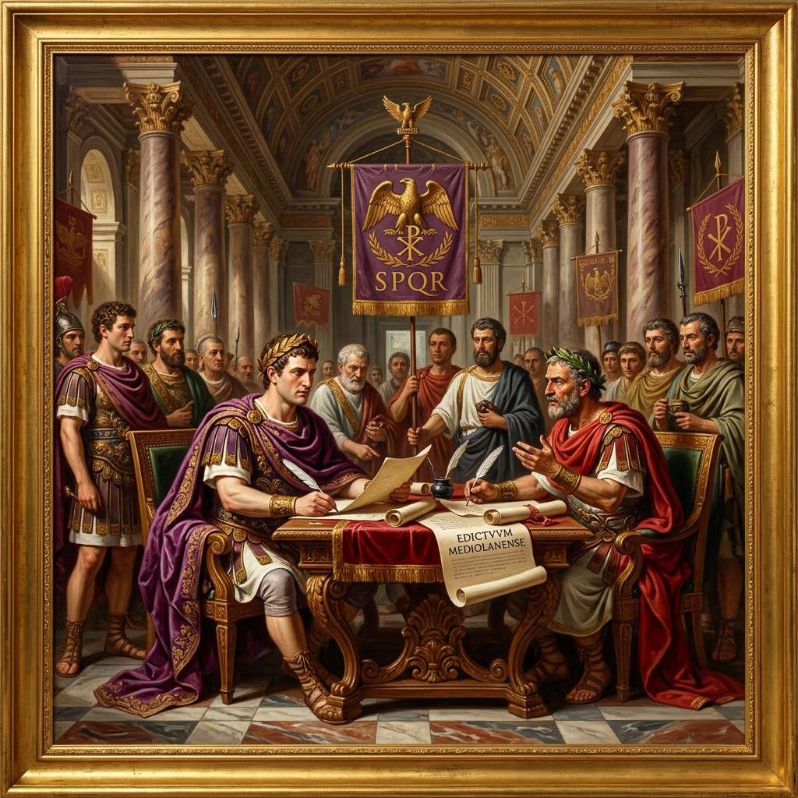
一、《米蘭敕令》的時代脈絡與多重政治背景
為便於理解本專題涉及的複雜地緣政治與宗教政策演變，以下整理公元303年至325年間，東西部皇帝的對抗與基督教地位變遷之關鍵歷史年表：
| 年份 | 君士坦丁一世（西部）之事件 | 李錫尼及東部共治者之事件 | 帝國政局與宗教地位變化 |
|---|---|---|---|
| 303年 | 其父君士坦提烏斯一世在西部（高盧與不列顛）消極執行迫害，未實行大規模處決。 | 戴克里先與伽列里烏斯在東部發動「大迫害」，強拆教堂、焚毀聖經並沒收財產。 | 基督教面臨全帝國體制性的暴力鎮壓與迫害。 |
| 306年 | 其父去世；君士坦丁於約克被軍隊擁立為奧古斯都（但僅獲伽列里烏斯承認為凱撒），隨即宣布終止領地內的基督教迫害。 | 伽列里烏斯接任東部奧古斯都，繼續實施迫害；馬克森提烏斯在羅馬篡位。 | 四帝共治機制崩潰，帝國陷入多方混戰。 |
| 308年 | 逐步穩固西部（高盧、不列顛、西班牙）的統治。 | 李錫尼在卡農圖姆會議上被擢升為奧古斯都，負責管轄巴爾幹地區。 | 帝國維持多頭共治，但地緣政治衝突日益加劇。 |
| 311年 | 積極準備南下進軍意大利以討伐馬克森提烏斯。 | 伽列里烏斯臨終前發布《塞爾迪卡寬容敕令》；其死後馬克西米努斯·達扎割據東部並重啟迫害。 | 東部基督教獲得法律上的消極寬容（合法宗教地位）。 |
| 311-312年 | 與李錫尼結盟，並將半妹君士坦提婭許配給他以鞏固同盟。 | 李錫尼接受盟約，與東部對手馬克西米努斯·達扎形成對峙。 | 東西兩大巨頭結成政治利益共同體以對抗各自對手。 |
| 312年 | 贏得「米爾維安大橋戰役」，擊殺馬克森提烏斯，統一西部並皈依基督教。 | 在巴爾幹地區集結軍隊，與君士坦丁保持盟友關係。 | 西部徹底終結迫害，基督教受到西部皇帝的公開支持。 |
| 313年 | 與李錫尼在米蘭會晤並達成共同發布《米蘭敕令》的協議。 | 娶君士坦提婭；隨後在東部擊敗馬克西米努斯·達扎，統一東部。 | 雙方發布《米蘭敕令》，基督教合法化並獲得財產無條件退還權。 |
| 316年 | 查獲「巴斯安努斯陰謀」，要求引渡主使者塞內基奧遭拒，隨即起兵東征。 | 拒絕交出塞內基奧並推倒君士坦丁雕像，立瓦倫斯為共治皇帝。 | 第一次內戰爆發（奇巴萊與馬爾迪亞戰役），君士坦丁擊敗李錫尼。 |
| 317年 | 逼迫李錫尼割地，雙方共同冊立各自繼承人為「凱撒」。 | 簽署《塞爾迪卡和約》，割讓巴爾幹大部，處死共治皇帝瓦倫斯。 | 達成不穩定的和平與妥協均勢，和平維持了約七年。 |
| 320年 | 推行支持基督教政策，賦予主教司法特權（主教聽審權）。 | 因懷疑基督徒倒向君士坦丁，在東部重啟對基督徒的防範性迫害（如塞巴斯蒂四十烈士）。 | 宗教信仰成為帝國東西分裂與政治博弈的延伸工具。 |
| 323年 | 以追擊蠻族為由，其部隊越界進入李錫尼統轄的色雷斯行省。 | 對越界行為表示強烈敵意，禁止君士坦丁金幣在其領地流通。 | 和平協議徹底撕毀，雙方進行戰爭動員。 |
| 324年 | 贏得亞德里亞堡、赫勒斯滂海戰與克里索波利斯戰役，徹底擊潰李錫尼。 | 戰敗退至尼科美底亞，在君士坦提婭調停下投降並宣布退位。 | 四帝共治制終結，君士坦丁成為羅馬帝國唯一主宰。 |
| 325年 | 召開基督教「尼西亞公會議」；以叛亂嫌疑下令絞死軟禁中的李錫尼。 | 於軟禁地塞薩洛尼基被絞死，其共治者與繼承人亦被清算。 | 政教合一的雛形初現，羅馬帝國逐步走向基督教君主制新紀元。 |
四帝共治制的權力結構與撕裂
公元三世紀末，羅馬帝國面臨着地緣防禦癱瘓、內部篡奪頻繁的系统性危機。為重塑帝國權威，皇帝戴克里先（Diocletian）於公元293年創立了「四帝共治制」（Tetrarchy），將帝國版圖劃分為東西兩大部分，各由一位「奧古斯都」（Augustus）與一位「凱撒」（Caesar）分權共治[1]。戴克里先的政治藍圖旨在重建奧古斯都式的傳統羅馬秩序，並將帝國權威包裹在古老異教諸的神聖性之中[1]。
然而，這種政治平衡極度依賴於戴克里先個人的威權。自公元305年戴克里先與馬克西米安（Maximian）退位後，權力繼承機制迅速崩潰[1]。君士坦丁一世（Constantine I）於306年在不列顛被軍隊擁立（軍隊推舉為奧古斯都，但伽列里烏斯僅承認其凱撒頭銜），而麥克森提烏斯（Maxentius）則在羅馬發動叛亂，多方勢力的崛起直接導致了共治體制走向軍事撕裂與內戰深淵[2]。
從大迫害到《塞爾迪卡敕令》的過渡
在四帝共治的意識形態重塑過程中，不願向皇帝神格與傳統神祇獻祭的基督徒，被羅馬統治精英視為對國家效忠體系的背叛與公共秩序的威脅[4]。公元303年2月24日，戴克里先頒布了第一道系統性迫害基督徒的帝國詔令，開啟了羅馬歷史上最殘酷的「大迫害」[3]。該詔令不僅禁止基督徒集會、下令拆毀教堂、焚燒聖經並剝奪其法律權利，更進一步要求所有在帝國境內從事官方公務的人員必須進行象徵性的異教獻祭，否則將面臨監禁與酷刑[1]。
儘管這場迫害在東部省份執行得極為慘烈，但在西部，君士坦丁的父親君士坦提烏斯一世（Constantius I）對迫害政策持消極態度，並未在其轄區（高盧與不列顛）強制推行普遍獻祭[7]。這種政策的不對稱性，使得基督教在西部得以保存實力，同時也加劇了共治皇帝之間的政治分歧[7]。
公元311年，大迫害的主導者、東部奧古斯都伽列里烏斯（Galerius）身患絕症（根據記載，其內臟嚴重潰爛腐壞）[9]。在臨終前的痛苦掙扎中，他意識到以暴力消滅基督教的政策已徹底失敗，出於政治現實與求神庇佑的考量，他在塞爾迪卡（Serdica）發布了《塞爾迪卡寬容敕令》[9]。該敕令雖然仍將基督教的固執稱為「愚昧」(stultitia)9，但首次從法理上給予基督教合法存在（ut denuo sint Christiani）的權利，並懇求基督徒為帝國與皇帝的健康向其「自己的神」祈禱，從而使基督教隱含地獲得了合法宗教（religio licita）的地位[9]。
加里恩努斯法理前例與米蘭協定的「復原」邏輯
歷史研究指出，公元313年的《米蘭敕令》並非羅馬帝國歷史上第一次對基督教實行寬容。早在公元262年左右，加利恩努斯（Gallienus）皇帝就曾發布過寬容法令，開啟了基督教歷史上將近四十年的「教會小和平」時期[14]。戴克里先的大迫害顛覆了這一既存的法律和平狀態[14]。
因此，當拉克坦提烏斯在其著作《迫害者之死》中記載君士坦丁即位之初的政策時，特別使用了「歸還」與「復原」（reddere, restitutae）等法理詞彙[14]。這表明，君士坦丁與李錫尼在公元313年於美迪奧拉農（Mediolanum，今米蘭）會晤並發布的協定，其本質是恢復加里恩努斯時代確立的、被戴克里先顛覆的法律秩序[14]。
《米蘭敕令》在法理上超越了《塞爾迪卡敕令》的消極寬容，其主要地緣政治目標是針對東部僭主馬克西米努斯·達扎（Maximinus Daza），後者在東部省份悍然無視伽列里烏斯的臨終停迫害指示，繼續實施殘酷壓制[7]。
| 比較維度 | 塞爾迪卡寬容敕令（311年） | 米蘭協定（313年） |
| 主導起草與發布者 | 伽列里烏斯（臨終前聯名君士坦丁與李錫尼發布）[12] | 君士坦丁一世與李錫尼（米蘭會晤達成共識，李錫尼於東部行省公布）[4] |
| 對基督教的法理定性 | 視為一種可以容忍的「愚昧行為」(stultitia)與古老傳統的偏離[9] | 正式確立基督教為完全合法的信仰(religio licita)，享有完整法律地位[15] |
| 財產所有權與處置 | 僅允許基督徒重建聚會場所，未涉及被沒收財產的退還補償[15] | 規定必須無條件歸還所有沒收的教堂與法人財產，由國家財政向現有持有者提供補償[15] |
| 適用對象與信仰權力 | 僅針對基督徒羣體，屬於帶有恩賜與限制性質的被動寬容[7] | 賦予包括基督徒在內的所有臣民絕對的宗教信仰自由，實行多元宗教平等[4] |
| 帝國統治者的神學邏輯 | 因政治與生理危機，被迫尋求基督徒的神祈禱以維護帝國公共秩序[9] | 主動尋求「至高神」(Deus Summus)的神聖庇佑，以期維護全帝國的繁榮與成功[16] |
二、君士坦丁的崛起與基督教共生關係的建構
君士坦丁的早期特質與信仰轉變
君士坦丁的早期生涯充滿了地緣政治的動盪與個人傳奇。他是君士坦提烏斯一世與出身平民的赫蓮娜（Helena）之子[10]。其母赫蓮娜出身平民階層，據後世教會傳統具有基督教傾向（但其皈依時間在學術界仍有爭議，部分學者認為她是在君士坦丁掌權後才公開信奉基督教）[21]。
為了維繫政治聯姻，其父被迫與赫蓮娜離婚，轉娶麥克西米安的繼女狄奧多拉（Theodora），這使得君士坦丁在青年時期長期作為質子留置於戴克里先與伽列里烏斯的東部宮廷中[10]。在那裡，他展現出傑出的軍事天賦，曾在伽列里烏斯的注視下涉水深入薩爾馬提亞人的沼澤，並在騎兵戰中親自將一名強悍的外族俘虜拖至皇帝腳下[10]。
當君士坦提烏斯一世病危並請求釋放其子時，君士坦丁為了避開伽列里烏斯（Galerius）可能派出的追兵，在逃亡途中採取了極為決絕的手段，沿途將驛站的郵役馬匹悉數刺傷致殘，最終在波洛尼亞（Bononia）與父親會合，並在約克（York）獲得了軍隊的絕對擁戴，被推舉為凱撒[10]。
在信仰層面上，君士坦丁經歷了從羅馬多神教、太陽神崇拜（Sol Invictus）到基督教一神崇拜的複雜過渡[16]。公元312年爭奪意大利的關鍵戰役前夕，他將自己對神聖力量的訴求投向了基督教的上帝[16]。
在米爾維安大橋戰役中，他命令士兵將帶有基督教神聖符號的凱樂圖案（Chi-Rho）繪製於盾牌之上，這一決定幫助他擊敗了實力雄厚的對手麥克森提烏斯[16]。不論這一轉變是出於純粹的個人信仰，還是如現代學者哈羅德·德雷克（Harold Allen Drake）所分析的，是為了解決帝國分裂而構建一個「包容性政治同盟」的務實策略，君士坦丁都成功地將基督教的命運與其個人帝國權威緊密結合在了一起[24]。
尤西比烏斯與拉克坦提烏斯對君士坦丁政治神學的塑造
君士坦丁的皈依過程以及他在米爾維安大橋戰役前的神聖視覺，在同時代的基督教文獻中呈現出顯著的歷史敘事張力。尤西比烏斯在其晚期著作《君士坦丁傳》中，將君士坦丁建構為「上帝的僕人」與「新摩西」[21]。在尤西比烏斯的政治神學體系中，君士坦丁的治權被賦予了神授君權（Divine Right）的色彩：皇帝是上帝在人間的模仿者與代言人，受神旨意召集公會議、摧毀異教廟宇，並帶領羅馬臣民走向正確的信仰[21]。君士坦丁甚至自稱為「教會外部事務的主教」（ἐπίσκοπος τῶν ἐκτός），即世俗領域中教會的守護者，尤西比烏斯在《君士坦丁傳》中忠實記錄了這一自我定位[22]。
與此相對，拉克坦提烏斯的《迫害者之死》則聚焦於實體正義的復原與神聖審判[14]。他並未採用尤西比烏斯口中「白晝天空中顯現十字架」的宏大宏偉敘事，而是具體記載了君士坦丁在戰前夢境中接受神聖指引、在盾牌上繪製凱樂符號的細節[18]。
拉克坦提烏斯更注重法理邏輯的連續性，他在公元313年將其《神聖原理》（Divine Institutes）獻給君士坦丁時，高度讚揚其為羅馬帝國歷史上首位踐行神聖公義、消弭帝國道德敗壞的君主，將君士坦丁的世俗立法視為天道正義在羅馬法制體系中的全面復歸[14]。
法律體系的基督化與「主教聽審權」的法理顛覆
公元313年後，君士坦丁通過一系列系統性的法制變革，逐步將基督教教義注入羅馬法的核心架構中[24]。出於對基督殉道方式的崇敬，他下令在帝國全境廢除十字架刑罰[21]。在社會與家庭法制領域，君士坦丁頒布法律嚴厲禁止殺嬰與販賣人口，限制世俗離婚的隨意性，人道化了監獄囚犯的待遇，並廢除了對無子女家庭的財產繼承懲罰[29]。
在這一系列司法變革中，最具歷史變革意義的是「主教聽審權」（Audientia Episcopalis）的確立[31]。公元318年起，君士坦丁正式承認主教法庭在民事訴訟中的裁判權，其判決具有帝國世俗法庭的同等效力，且不允許上訴至普通的世俗官員法庭[28]。
這一特權據稱在公元333年的《西爾蒙德憲章》（Sirmondian Constitutions）中得到了進一步的法理確立（但需注意，不少學者認為該憲章第1號可能是後世偽造的文書）[34]。在古典羅馬法與帝國訴訟程序中，法庭裁判嚴格遵循雙重證人（Double Testimony）制度，這也是公元334年君士坦丁法典編纂中再次確認的普世原則：
然而，公元333年的憲章對此做出了顛覆性的例外規定：在民事訴訟中，只要任意一方當事人選擇將案件移交給主教裁判，主教的單一證言（testimonium episcopi）即被賦予極高的法律效力[34]。這項立法打破了羅馬訴訟法的核心程序保護，將主教從社區內部的自願調解人，拔高為凌駕於地方世俗法官之上的終審裁判官[28]。這一政策的背後，是君士坦丁試圖利用組織網絡嚴密、道德聲望崇高的教會階層，來替代因帝國危機而日益腐敗、癱瘓的基層司法體系，實現國家行政向基層社會的深度滲透[28]。
尼西亞公會議：政教合一的權利重塑
隨着基督教與國家機器的深度綁定，教會內部的神學分裂直接威脅到了帝國整體的政治穩定[24]。為了解決由亞歷山大里亞長老亞流（Arius）引發的關於聖子神性本質的劇烈神學分裂，君士坦丁於公元325年在小亞細亞的尼西亞（Nicaea）召集並親自主持了歷史上第一次大公會議——尼西亞公會議[35]。
神學論爭的核心在於亞流主張聖子為受造之物（κτίσμα），與聖父本質不同，「曾有聖子不存在之時」（ἦν ποτε ὅτε οὐκ ἦν）；而亞他那修（Athanasius）等正統派則堅持聖子與聖父具有「相同本質」(homoousios)[36]。君士坦丁在會議上雖然在禮儀上保持了謙卑，坐在普通木椅上以示對主教權威的尊重[37]，但他實質上主導了會議的走向，並強烈推動主教們接受「同質」(homoousios)教義，最終形成了《尼西亞信經》[35]。
對於拒絕簽署信經的亞流及其支持者，君士坦丁直接動用帝國世俗權力將其流放並罷免其神職[25]。這一事件標誌着世俗君權對教會最高神學解釋權的深度干預，為後世所謂「皇帝教權主義」（Caesaropapism）的政教互動模式提供了早期先例，儘管此概念的適用性在拜占庭學界仍存爭議[25]。
三、權力均勢的瓦解：東西部皇帝的對抗與李錫尼的覆滅
巴斯安努斯陰謀與第一次內戰（316–317年）
公元313年李錫尼與君士坦丁聯姻並在東部擊敗馬克西米努斯·達扎後，兩大奧古斯都達成了短暫的政治均勢[4]。然而，這種雙雄並立的格局本質上是不穩定的[40]。
兩者關係的徹底破裂始於公元314至315年間的「巴斯安努斯陰謀」[41]。君士坦丁當時試圖將其妹Anastasia（阿納斯塔西婭）的丈夫、參議員巴斯安努斯（Bassianus）提升為凱撒，統治意大利與多瑙河行省，藉此在東西部帝國之間設立一個由君士坦丁控制的政治緩衝地帶[41]。李錫尼將此舉視為對其地緣利益的嚴重蠶食[23]。
李錫尼利用巴斯安努斯的兄弟塞內基奧（Senecio，當時在東部擔任李錫尼的近衛軍長官）暗中派遣使者前往意大利，挑唆巴斯安努斯發動針對君士坦丁的兵變[41]。該政治陰謀於公元316年被君士坦丁的情報網絡提前偵破，巴斯安努斯在起事未遂前即被逮捕並在未經正式審判的情況下被迅速處決[42]。
當君士坦丁憤而要求李錫尼引渡幕後主使塞內基奧時，李錫尼斷然拒絕，並公開下令推倒了位於雙方邊界埃莫納（Emona）境內的君士坦丁塑像[41]。這一公然挑釁正式點燃了第一次內戰的戰火[41]。
第一次內戰的戰役進程與年代學修正
長期以來，歷史編年史（如許達提烏斯的《編年史》）將第一次內戰（Bellum Cibalense）歸於公元314年[44]。然而，現代錢幣學（Numismatics）研究推翻了這一傳統觀點[46]。
在李錫尼控制的塞薩洛尼卡（Thessalonica）、赫拉克利亞（Heraclea）以及埃及亞歷山大里亞（Alexandria）這三大鑄幣廠中，出土的錢幣銘文呈現出清晰的政治宣傳轉變[46]。在內戰爆發前後，鑄幣廠發行的青銅幣銘文經歷了四個階段的演變，從最初的雙奧古斯都聯名發行（A/X AVGG），到內戰期間單獨抹去君士坦丁名號（A/X AVG），再到短暫引入李錫尼新拔擢的共治皇帝瓦倫斯（Valens）名號，最後於公元317年3月正式引入新冊立的凱撒（包括君士坦丁的兒子和小李錫尼）[44]。這一錢幣發行序列與銘文演變規律，無可辯駁地證實了第一次內戰的實際發生年份應為公元316至317年[44]。
| 戰役 / 停戰協議 | 核心過程與戰術部署 | 歷史與法理影響 |
| 奇巴萊戰役 (Battle of Cibalae) 公元316年10月8日[44] | 君士坦丁率領2萬精銳入侵潘諾尼亞。李錫尼在奇巴萊平原（塞納河與德拉瓦河之間）部署了3萬5千名官兵並鞏固側翼。雙方步兵陷入慘烈的近身消耗戰，至黃昏時分，君士坦丁親自率領右翼騎兵發動致命衝鋒，徹底擊潰李錫尼防線[44]。 | 李錫尼慘敗，陣亡近2萬人。他被迫攜帶國庫與家眷向東撤往色雷斯，並在當地拔擢將領瓦倫斯為共治奧古斯都[44]。 |
| 馬爾迪亞戰役 (Battle of Mardia) 公元316年底–317年初[47] | 雙方在色雷斯赫普魯斯河流域再次交戰。戰鬥互有勝負，直至深夜仍未分勝負。君士坦丁派遣一支精銳分隊迂迴至李錫尼陣線後方實施突襲，李錫尼軍隊在兩面夾擊下仍保持嚴密建制撤退[47]。 | 戰役呈膠着狀態。君士坦丁因過度向拜占庭方向推進，導致其後勤交通線意外暴露在李錫尼撤退軌跡的側翼，李錫尼軍隊通過一次奇襲成功奪取了君士坦丁的輜重與皇家隨從[47]。 |
| 塞爾迪卡和約 (Treaty of Serdica) 公元317年3月1日[47] | 面臨戰局的巨大不確定性，君士坦丁在確認自身輜重被奪後，同意了李錫尼派遣使者美斯特里亞努斯（Mestrianus）提出的求和申請。雙方在君士坦丁父親即位周年紀念日（3月1日）簽署和約[47]。 | 李錫尼被迫廢黜並處死了共治帝瓦倫斯，並將除色雷斯以外的所有歐洲領土割讓給君士坦丁[44]。雙方聯合冊立克里斯普斯、君士坦丁二世及小李錫尼為帝國凱撒，達成短暫均勢[44]。 |
李錫尼的宗教轉向與防範性壓制
公元320年後，東西部皇帝的關係再度惡化，地緣矛盾與執政官任免權的爭奪使內戰一觸即發[23]。在此背景下，李錫尼對其治下東部疆域內的基督教社羣產生了深切的政治警惕[39]。
由於君士坦丁在西部對教會實行大規模的財政與政治扶持，李錫尼確信，東部的基督徒在精神與政治效忠上已完全淪為君士坦丁的內應[39]。出於維護政權安全與防範潛在叛亂的現實考量，李錫尼開始全面推行反基督教政策39：
- 官方清洗：下令東部宮廷、官僚機構以及軍隊中所有拒絕向傳統異教諸神獻祭的基督徒神職人員與官兵一律開除公職、剝奪軍籍[39]；
- 切斷橫向聯繫：明令禁止各省主教在未經官方許可的情況下召開地方主教會議（Synods），切斷了教會在東部各行省之間的組織紐帶[40]；
- 關閉空間與死刑威脅：封鎖、拆毀了部分地區的教堂（如本都行省的阿馬西亞教堂），並授意地方總督處死了一批反抗法規的主教與基督徒官員[39]。
儘管尤西比烏斯在其歷史敘事中極力將李錫尼描述為一個道德敗壞、意圖徹底消滅基督教的「狂熱異教暴君」[39]，但現代歷史分析表明，李錫尼的壓制法令具有高度的針對性與政治防範特徵。其主要目的是癱瘓東部教會強大的跨區域社會組織能力，消除軍隊內部的政治不忠誠因素，而非實行非理性的全民信仰滅絕[39]。
塞巴斯蒂四十烈士：軍事整肅與信仰抗爭的微觀縮影
在李錫尼推行軍隊政治整肅的過程中，爆發了著名的「塞巴斯蒂四十烈士」（Forty Martyrs of Sebaste）事件[48]。公元320年冬，駐紮在小亞美尼亞塞巴斯蒂（今土耳其錫瓦斯）的第十二「雷霆」軍團（Legio XII Fulminata）面臨強制作戰部隊向羅馬諸神獻祭的帝國指令[50]。該軍團在帝國軍事史上具有傳奇色彩，其盾牌帶有標誌性的閃電標誌，且根據基督教傳統（如德爾圖良）的記載，在公元二世紀馬可·奧里略（Marcus Aurelius）皇帝統治時期的馬科曼尼戰爭中，該軍團曾與降下暴雨拯救軍隊的「雷霆奇蹟」相關聯（但「Fulminata」之名早於此事件即已存在，且異教文獻將此奇蹟歸因於其他神祇）[51]。
在強制獻祭的命令下，軍團中絕大多數官兵選擇了妥協與屈服，僅有40名士兵公開拒絕服從命令，堅稱其信仰不允許其崇拜羅馬偶像[51]。這四十名士兵隨後被捕，並在主辦官員的命令下被剝去衣服，在嚴冬深夜被推上塞巴斯蒂浴場前冰封的湖面上，任其低溫凍死，而湖畔的熱水浴室則徹夜敞開，用以誘惑任何願意放棄信仰的士兵前去取暖投降[50]。
根據文獻（如該撒利亞的巴西流、尼薩的格列高利、敘利亞人以法蓮的講道與讚美詩）記載，這四十名士兵在低溫折磨中堅持祈禱[50]。在黎明前夕，其中一名士兵（據推測為撰寫集體遺言的梅萊蒂烏斯）因無法忍受凍傷劇痛而選擇妥協，但在他踏入溫水浴室的瞬間因冷熱劇變驟然死亡[52]。
此時，負責看守的羅馬衛兵阿格萊烏斯（Aglaius）自稱在睡夢中或恍惚中看到了神聖的光芒籠罩着冰面上的殉道者，他深受震撼，隨即脫去盔甲，高呼自己亦是基督徒，主動踏上冰面加入了其餘三十九人的行列，使四十之數得以圓滿[50]。清晨，羅馬官兵將已無生命跡象的殉道者遺體焚燒，並將骨灰投入河中，而基督徒羣體則暗中收集了殘留的骨殖，將其作為聖物分發至帝國各處，這成為四世紀東部帝國最盛行的殉道聖物崇拜之一[50]。
現代歷史學者在評估該事件時，基本確認了其歷史架構的真實性[51]。巴西流主教在公元370年代發表的紀念講道，距離事件發生僅有五十餘年，當時塞巴斯蒂當地仍有許多老者親眼見證過這場迫害[50]。這一微觀歷史事件生動地揭示了李錫尼晚期政策的憲政困境：在軍隊全面行政整肅中，他雖然成功迫使絕大多數士兵屈服，但也徹底割裂了軍隊基層中基督教力量的政治忠誠，為其在第二次內戰中的軍心渙散埋下了伏筆[49]。
第二次內戰與李錫尼的末路（324–325年）
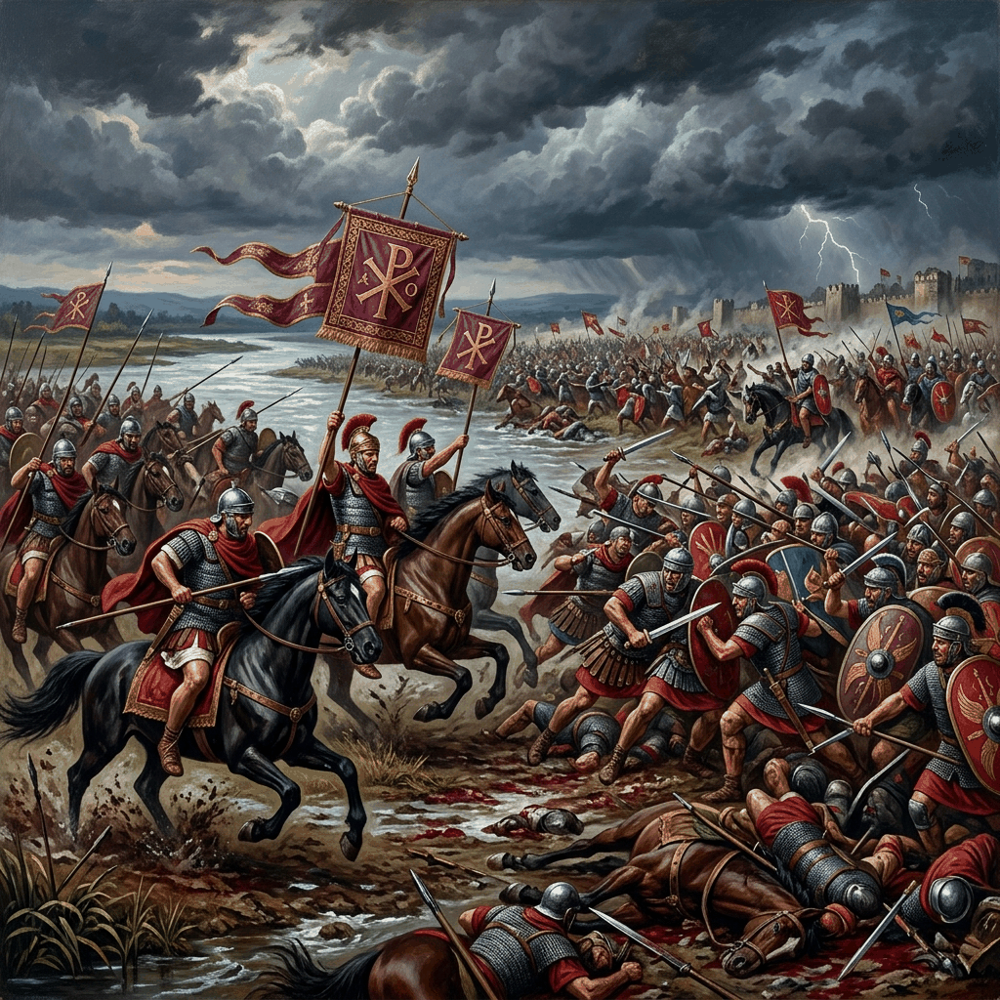
公元322年，哥特人與薩爾馬提亞人對多瑙河疆域發動了大規模跨境劫掠[23]。君士坦丁在率軍迎擊外敵時，其部隊未經李錫尼准許，直接越過邊界進入了李錫尼管轄的色雷斯行省境內55. 這一公然越界行為隨即被李錫尼定性為對帝國主權的武裝侵犯，雙方旋即以此為藉口在公元324年春重開戰端[23]。
在戰爭宣傳中，雙方展開了激烈的意識形態博弈。君士坦丁將其進軍包裝為拯救東部基督徒免受暴政迫害的「神聖解放戰爭」，其大軍高舉繪有凱樂符號的帝國軍旗（Labarum）[21]。李錫尼則退守至色雷斯，拉攏當地的異教祭司與外族僱傭兵，宣稱這是一場捍衛羅馬傳統宗教秩序、抵禦西方新興迷信入侵的傳統保衛戰[23]。
公元324年7月3日，雙方在亞德里亞堡戰役（Battle of Adrianople）中爆發了羅馬帝國四世紀最大規模的陸上對決[55]。
歷史辨析：此役為公元324年君士坦丁對抗李錫尼的戰役[55]，切勿與公元378年羅馬皇帝瓦倫斯（Valens）因偵察失誤、左翼崩潰而慘敗於哥特酋長弗里蒂格恩（Fritigern）並陣亡的同名災難性戰役混淆[58]。
在324年的亞德里亞堡戰役中，李錫尼在赫布魯斯河（Hebrus River）畔構築了極為堅固的防禦陣線，擁兵16萬5千人[55]。君士坦丁親率13萬軍隊對峙數日後，採取了巧妙的戰術欺騙：他命令士兵在河流下游一處寬闊地帶大張旗鼓地堆放木材與繩索，製造試圖搭建浮橋強渡的假象，以此吸引李錫尼主力部隊的注意力[57]。
與此同時，他秘密派遣5000名精銳騎兵與弓箭手潛入上游一處林木茂密的狹窄河段，並親自率領輕騎兵強渡成功，對李錫尼毫無防備的側翼發動了毀滅性的夾擊[57]。
根據歷史學家佐西姆斯（Zosimus）的記載，這場突襲演變成了「一場偉大的屠殺」，李錫尼部隊在混亂中崩潰，陣亡人數高達3萬4千人[57]。李錫尼本人受輕傷，率殘部倉皇退守拜占庭[56]。在退守期間，李錫尼提拔其近衛軍長官馬提尼亞努斯（Martinianus）為共治皇帝，並將其派往蘭普薩庫斯守衛亞洲海岸[40]。
隨後，決定戰局走向的關鍵轉移到了海面。李錫尼派遣海軍大將阿班圖斯（Abantus）率領由350艘戰船組成的龐大艦隊封鎖赫勒斯滂海峽[23]。君士坦丁之子克里斯普斯（Crispus）展現出過人的海戰天賦，率領規模遠小於對手的西部艦隊突入海峽[40]。在狹窄的水道中，李錫尼的龐大艦隊因機動受限，加之突遭風暴襲擊，最終被克里斯普斯全殲[40]。
失去了海上的後勤與撤退通道，拜占庭陷入合圍之中[40]。李錫尼被迫放棄歐洲據點，渡海逃往小亞細亞[40]。
公元324年9月18日，雙方在小亞細亞的克里索波利斯戰役（Battle of Chrysopolis）進行了最後的決戰，李錫尼臨時拼湊的防線再度被君士坦丁的精銳伊利里亞軍團擊潰[40]。
面臨絕境的李錫尼撤往尼科美底亞[40]。不久後，在妻子君士坦提婭的親自斡旋與苦苦哀求下，李錫尼前往君士坦丁的軍營遞交降書、宣布退位，以交出皇權與軍隊為條件換取了免死的承諾[23]。他隨後被送往塞薩洛尼基軟禁[23]。
然而，公元325年春，君士坦丁指控李錫尼「企圖聯絡北方蠻族發動新一輪叛亂」，下令將李錫尼與馬提尼亞努斯雙雙絞死[23]。至此，由戴克里先創立、維繫了三十餘年的四帝共治體制徹底終結，君士坦丁成為了羅馬帝國唯一的最高主宰[21]。
四、結論與歷史餘韻
《米蘭敕令》的誕生與李錫尼的覆滅，共同構成了四世紀羅馬帝國從多神教帝國向基督教神權帝國轉型過程中的核心歷史弧線[4]。
從政治與時代背景來看，《米蘭敕令》本質上並非單純的宗教寬容宣言，而是君士坦丁與李錫尼在帝國政治大撕裂背景下，為整合帝國資源、謀求「至高神」神聖政治庇佑而達成的務實政治同盟產物[16]。
在這一過程中，君士坦丁展現出高超的政治遠見。他不僅敏銳地捕捉到了基督教作為新型帝國意識形態紐帶的無窮潛力，更通過創立「主教聽審權」、免除神職稅收、主持尼西亞大公會議等手段，將去中心化的教會行政網絡深度編織進帝國世俗司法與集權體制之中，實現了政教互惠的權利重塑[28]。
相較之下，李錫尼的悲劇在於其地緣統治邏輯的僵化與滯後[23]。在面對東部行省社會結構深度基督教化的歷史洪流時，他未能像君士坦丁那樣主動吸納這一新興力量，反而因地緣政治恐懼，將基督教視為君士坦丁的潛在內線，進而退縮至傳統的政治整肅與宗教壓制之中[39]。
這一宗教轉向不僅未能鞏固其地緣防禦，反而使其在軍隊、政府官員與基層社會中喪失了關鍵的政治認同與忠誠（如塞巴斯蒂四十烈士事件所揭示的軍心撕裂）[49]，並為君士坦丁發動旨在消滅對手、統一全帝國的戰爭提供了完美的道德與宗教合法性標籤[23]。李錫尼在亞德里亞堡與克里索波利斯的軍事潰敗，標誌着羅馬帝國傳統多神教統治邏輯的徹底終結，羅馬帝國自此跨入了由君士坦丁一手締造的、世俗政權與基督教深度共生的中世紀新紀元[24]。
引用的著作
- The Edict of Milan and the Early Roots of Christianity in the Roman Empire - PDXScholar
- Edict of Milan | History & Proclamation - Study.com
- Religious Freedom and Christianity in the Roman Empire: The Edict of Milan - Medium
- Edict of Milan | Description, Year, Christianity, Constantine, History, & Facts | Britannica
- Persecution of Christians in the Roman Empire - Wikipedia
- From Toleration to Repression: The Evolution of Constantine's Religious Policies* - Scripta Classica Israelica
- Diocletianic Persecution - Wikipedia
- Religious policies of Constantine the Great - Wikipedia
- The Edict of Serdica - thracians.net
- LacusCurtius • Excerpta Valesiana — First Part
- Imperial ordinances of Constantine and Licinius: The Edict of Milan - A Concise History of Western Christianity: The Early and Medieval Period
- Edict of Serdica - Wikipedia
- Edict of Serdica - Grokipedia
- constantine: the legal recognition of christianity and its antecedents - Dialnet
- Edict of Milan - Wikipedia
- Edict of Milan | History | Research Starters - EBSCO
- 313 A.D. - the beginning of Constantine's cooption of Christianity - BibleTexts.com
- Edict of Milan - Grokipedia
- Edict of Milan Facts for Kids
- Excerpta Valesiana | Loeb Classical Library
- What did Eusebius say about Constantine? - Quora
- Let's Go to Theology Class: Constantine and the Church - The Accidental Apologist
- Emperor Licinius AD C. 250-324 a vicious rival of Constantine I - The Roman Empire
- The Politics of Faith in Constantine's Rome - Retrospect Journal
- Constantine and Christianity: How the Church Became Legal (AD 313-590) - The Exalted Christ
- De mortibus persecutorum - Wikipedia
- LACTANTIUS: DE MORTIBUS PERSECUTORUM (Excerpta) - The Latin Library
- What Comes After Religion? - Plough Publishing
- Roman and Christian Law. Reminiscences of the Roman legal order in Eastern Church legislation - Revista TEOLOGIA
- Constantine the Great, Lactantius, and Christianity - pemptousia
- Constantine and Christianity through the writings of Lactantius
- Law and Order: Monastic Formation, Episcopal Authority, and Conceptions of Justice in Late Antiquity - DukeSpace
- Augustine as a Bishop (Hippo) - Experts@Minnesota
- The Roman Rule Testis Unus Testis Nullus in the Canonical Codified Sources Regulating Ordinary Proceedings - MDPI
- What occurred at the Council of Nicea? | GotQuestions.org
- Council of Nicaea | History | Research Starters - EBSCO
- Did Constantine Shape Christianity at the Council of Nicaea? - Undeceptions
- Why did the emperor Constantine convoke the Council in Nicaea?
- Persecution of Christians During the Reign of Emperor Licinius - Journals University of Lodz
- Roman Emperors DIR Licinius
- Constantine the Great: The Years 316-323 - Corvinus
- Bassianus (executed by Constantine) - Grokipedia
- Bassianus (executed by Constantine) - Wikipedia, [https://en.wikipedia.org/wiki/Bassianus](https://en.wikipedia.org/wiki/Bassianus)_(executed_by_Constantine)
- Battle of Cibalae - Wikipedia
- What was the Battle of Cibalae (316 AD)? - Boot Camp & Military Fitness Institute
- Civil war, numismatic slight and confusion at the mint (Constantine/Licinius) - Numis Forums
- Battle of Mardia - Wikipedia
- Persecutions: Licinius – The 4 Marks
- Licinius' Edict Relieved Christians
- Forty Martyrs of Sebaste - Wikipedia
- Fascinating Facts Behind the Forty Martyrs of Sebaste - ORTHODOX CHRISTIANITY THEN AND NOW
- Forty martyrs of Sebaste - Early Christians
- Fascinating Facts Behind the Forty Martyrs of Sevaste / Православие.Ru
- The Forty Martyrs of Sebaste - Catholic Insight
- Battle of Adrianople (324) - Wikipedia, [https://en.wikipedia.org/wiki/Battle](https://en.wikipedia.org/wiki/Battle)_of_Adrianople_(324)
- A Turning Point at Adrianople : July 3, 324 - Bible Hub
- Wars of Constantine the Great – Battle of Adrianople 324 AD Session Report
- Battle of Adrianople - World History Encyclopedia
- The Battle of Adrianople is fought in Thrace on this date in 324 AD, between the armies of two emperors Constantine I and Licinius during the Tetrarchy Civil Wars. While Licinus was defeated, Constantine had the momentum, winning further battles. - Reddit
米蘭敕令：文本與翻譯
全文大意：公元 313 年羅馬帝國皇帝君士坦丁一世與李錫尼共同頒布的《米蘭敕令》宣告了羅馬帝國內部的宗教寬容，正式結束了對基督徒的迫害。本頁面提供「英文-中文」以及「拉丁文-中文」雙語版本對照。
原始文件來源：Wikisource: Edict of Milan
EDICT OF MILAN Freedom of worship granted to all Christians ( AD 313 ) ( Munro & Bramhall in Translations and Reprints..., IV, Philadelphia, 1898, pp. 29-30 ).
《米蘭敕令》 賦予所有基督徒信仰自由 （公元 313 年） （摘自門羅與布拉姆霍爾，《翻譯與重印……》，第四卷，費城，1898 年，第 29-30 頁）。
- EDICT OF MILAN（米蘭敕令）：公元 313 年由羅馬帝國西部的皇帝君士坦丁一世和東部的皇帝李錫尼在米蘭共同頒布的一項法令。它宣告了羅馬帝國內部的宗教寬容，正式結束了對基督徒的迫害。
When I, Constantine Augustus, as well as I, Licinius Augustus, had fortunately met near Mediolanum (Milan), and were considering everything that pertained to the public welfare and security, we thought that, among other things which we saw would be for the good of many, those regulations pertaining to the reverence of the Divinity ought certainly to be made first, so that we might grant to the Christians and to all others full authority to observe that religion which each preferred; whence any Divinity whatsoever in the seat of the heavens may be propitious and kindly disposed to us and all who are placed under our rule.
當我，君士坦丁奧古斯都，以及我，李錫尼奧古斯都，在美地奧蘭（米蘭）附近有幸會面，並共同商討所有關乎公共福利與安全的事宜時，我們認為在眾多看來對大眾有益的事項中，那些涉及敬奉神明的規定顯然應當優先制定。如此一來，我們便能賦予基督徒及所有其他人充分的權力，去信奉各自偏好的宗教；從而使天上寶座的任何神明，都能對我們以及所有受我們統治的臣民展現護佑與善意。
- Constantine Augustus / Licinius Augustus（君士坦丁奧古斯都 / 李錫尼奧古斯都）：「奧古斯都」（Augustus）在羅馬帝國後期是「正皇帝」的官方頭銜。這裡指羅馬歷史上著名的君士坦丁大帝以及與他共同執政的東部皇帝李錫尼。
- Mediolanum（美地奧蘭）：義大利城市「米蘭」的古羅馬拉丁語地名。
And thus by this wholesome counsel and most upright provision we thought to arrange that no one whatsoever should be denied the opportunity to give his heart to the observance of the Christian religion, or of that religion which he should think best for himself, so that the Supreme Deity, to whose worship we freely yield our hearts, may show in all things His usual favor and benevolence.
因此，透過這項有益的商議與最公正的條款，我們期望做出以下安排：任何人都不得被剝奪傾心信仰基督教、或是信仰其認為最適合自身宗教的機會。如此，我們衷心敬奉的至高神明，便能在所有事物上展現祂一如既往的恩寵與慈悲。
Therefore, your Worship should know that it has pleased us to remove all conditions whatsoever, which were in the rescripts formerly given to you officially, concerning the Christians, and now any one of these who wishes to observe the Christian religion may do so freely and openly, without any disturbance or molestation. We thought it fit to commend these things most fully to your care that you may know that we have given to those Christians free and unrestricted opportunity of religious worship.
所以，閣下應當知悉，我們已決定廢除先前官方發給你的詔令中所有關於基督徒的限制條件。現在，任何渴望信奉基督教的人都可以自由、公開地信奉，不受任何干擾或刁難。我們認為應將這些事務完全交由你來妥善處理，以便你明白我們已賦予這些基督徒自由且不受限制的宗教崇拜機會。
- Your Worship（閣下）：在此文獻中是羅馬皇帝對高級地方官員（如行省總督）的官方尊稱。
- Rescripts（詔書/詔令）：羅馬皇帝針對臣民、官員的請求或詢問所做出的正式法律答覆或命令，具有法律效力。
When you see that this has been granted to them by us, your Worship will know that we have also conceded to other religions the right of open and free observance of their worship for the sake of the peace of our times, that each one may have the free opportunity to worship as he pleases; this regulation is made that we may not seem to detract aught from any dignity or any religion.
當你看到我們已向他們授予此項權利時，閣下亦將明白，為了我們時代的和平，我們同樣容許其他宗教享有公開、自由舉行崇拜的權利，使每個人都能擁有依其意願自由崇拜的機會。制定此項法規，是為了確保我們不至於損害任何尊嚴或任何宗教。
Moreover, in the case of the Christians especially, we esteemed it best to order that if it happens that anyone heretofore has bought from our treasury or from anyone whatsoever, those places where they were previously accustomed to assemble, concerning which a certain decree had been made and a letter sent to you officially, the same shall be restored to the Christians without payment or any claim of recompense and without any kind of fraud or deception. Those, moreover, who have obtained the same by gift, are likewise to return them at once to the Christians.
此外，針對基督徒的特殊情況，我們認為最妥當的處置是下令：若在此之前，有人從我們的國庫或任何渠道購買了基督徒以往習慣聚集的場所（即先前已有相關法令並正式致函通知你的地方），這些場所應立即歸還給基督徒，不得要求付費或索取任何補償，且不得有任何欺詐或隱瞞。另外，那些透過贈與獲得這些場所的人，同樣必須立刻將其歸還給基督徒。
Besides, both those who have purchased and those who have secured them by gift, are to appeal to the vicar if they seek any recompense from our bounty, that they may be cared for through our clemency. All this property ought to be delivered at once to the community of the Christians through your intercession, and without delay.
再者，無論是購買者還是透過贈與獲得者，若想從我們的慷慨恩賜中尋求任何補償，應向代理官提出申請，以便透過我們的仁慈法令獲得關照。所有這些財產都應在你的調停與協助下，立即且毫無拖延地移交給基督徒社群。
- Vicar（代理官/管區長）：古羅馬戴克里先與君士坦丁改革後的官職（拉丁語：Vicarius），負責管轄由多個行省組成之管區的長官，直接對轄區總長負責。
And since these Christians are known to have possessed not only those places in which they were accustomed to assemble, but also other property, namely the churches, belonging to them as a corporation and not as individuals, all these things which we have included under the above law, you will order to be restored, without any hesitation or controversy at all, to these Christians, that is to say to the corporations and their conventicles:— providing, of course, that the above arrangements be followed so that those who return the same without payment, as we have said, may hope for an indemnity from our bounty.
鑑於眾所皆知，這些基督徒不僅擁有他們習慣聚集的場所，還擁有屬於其法人組織（而非個人）的其他財產（即教堂），你應下令將我們納入上述法律的所有這些財產，毫無遲疑或爭議地歸還給這些基督徒，也就是歸還給他們的法人組織和聚會所。當然，前提是必須遵循上述安排，以便如前所述，那些無償歸還財產的人可以期待從我們的慷慨恩賜中獲得補償。
- Corporation（法人組織）：法律上將基督徒社群視為一個具有持有財產權利的法律實體，這在當時是一大進步，意味著教會財產受到羅馬法律的承認與保護。
- Conventicles（聚會所）：指秘密或非正式的宗教集會場所。在基督教合法化前，基督徒常在私宅或地下墓穴等隱密地方聚會。
In all these circumstances you ought to tender your most efficacious intervention to the community of the Christians, that our command may be carried into effect as quickly as possible, whereby, moreover, through our clemency, public order may be secured. Let this be done so that, as we have said above, Divine favor towards us, which, under the most important circumstances we have already experienced, may, for all time, preserve and prosper our successes together with the good of the state.
在所有這些情況下，你應當向基督徒社群提供最有效的干預與協助，使我們的命令能盡快付諸實行，從而藉由我們的仁慈施政，確保公共秩序的穩定。務必落實此舉，正如我們前文所述，使我們在重大關頭已領受到的天神恩寵，能永保我們的成就，並使國家繁榮昌盛。
Moreover, in order that the statement of this decree of our good will may come to the notice of all, this rescript, published by your decree, shall be announced everywhere and brought to the knowledge of all, so that the decree of this, our benevolence, cannot be concealed.
此外，為了讓這項彰顯我們善意的法令聲明家喻戶曉，此份由你發布的詔書應隨處宣讀，並讓所有人知悉，使我們這項仁慈的法令不至被隱匿。
拉丁文版本（拉克坦提烏斯《關於迫害者之死》記載）
以下為基督教早期作家拉克坦提烏斯（Lactantius）在其著作《關於迫害者之死》（De Mortibus Persecutorum）第 48 章中保存的拉丁文官方通諭文本，與中文對照翻譯。其原文為拉丁文。
拉丁文文獻來源：The Latin Library: Lactantius De Mortibus Persecutorum
[48] Licinius vero accepta exercitus parte ac distributa traiecit exercitum in Bithyniam paucis post pugnam diebus et Nicomediam ingressus gratiam deo, cuius auxilio vicerat, retulit ac die Iduum Iuniarum Constantino atque ipso ter consulibus de resituenda ecclesia huius modi litteras ad praesidem datas proponi iussit:
[48] 戰後幾天，李錫尼接收並整編了部分軍隊，隨後率軍渡海進入比提尼亞。進入尼科米底亞後，他向賜予他勝利之助的神明感恩表達謝意。在六月望日（6月13日），正值君士坦丁與他本人第三次共同擔任執政官之際，他下令公布一封發給行省總督、關於恢復教會權益的詔令，其內容如下：
- Licinius（李錫尼）：羅馬帝國後期的統治者之一（308年－324年在位）。他與君士坦丁大帝曾共同頒布著名的《米蘭敕令》，但後期兩人決裂，最終被君士坦丁擊敗並處死。
- Bithyniam（比提尼亞）：位於小亞細亞西北部（今土耳其境內）的一個羅馬行省。
- Nicomediam（尼科米底亞）：比提尼亞行省的首府，是當時羅馬帝國東部的重鎮與重要行政中心。
- Iduum Iuniarum（六月望日）：羅馬曆法中的「Ides」，通常指月份的月中（13日或15日），六月的 Ides 即為 6 月 13 日。
- Constantino（君士坦丁）：即君士坦丁大帝（Constantine the Great），第一位皈依基督宗教的羅馬皇帝。
2 »Cum feliciter tam ego [quam] Constantinus Augustus quam etiam ego Licinius Augustus apud Mediolanum convenissemus atque universa quae ad commoda et securitatem publicam pertinerent, in tractatu haberemus, haec inter cetera quae videbamus pluribus hominibus profutura, vel in primis ordinanda esse credidimus, quibus divinitatis reverentia continebatur, ut daremus et Christianis et omnibus liberam potestatem sequendi religionem quam quisque voluisset, quod quicquid divinitatis in sede caelesti nobis atque omnibus qui sub potestate nostra sunt constituti, placatum ac propitium possit existere.
2 「當我，奧古斯都君士坦丁，以及我，奧古斯都李錫尼，順利地在米蘭會師，並共同商討所有關乎帝國利益與公共安全的事務時，在諸多我們認為對大眾大有裨益的事項中，我們深信首要安排的，乃是涉及敬奉神明的事宜。也就是說，我們應當賦予基督徒及所有人完全自由的權力，去奉行各自選擇的宗教，如此一來，天上居所的任何神聖之物，都能對我們以及所有在我們治下的臣民，保持和善與眷顧。
- Augustus（奧古斯都）：羅馬帝國時期皇帝或共同統治者的最高頭銜。
- Mediolanum（米蘭）：義大利北部的古城，當時是羅馬帝國西部的行政中心之一。
3 Itaque hoc consilium salubri ac recticissima ratione ineundum esse credidimus, ut nulli omnino facultatem abnegendam putaremus, qui vel observationi Christianorum vel ei religioni mentem suam dederet quam ipse sibi aptissimap esse sentiret, ut possit nobis summa divinitas, cuius religioni liberis mentibus obsequimur, in omnibus solitum favorem suum benivolentiamque praestare.
3 因此，基於健全且極其正當的理由，我們認為應當採取這項方針：絕不剝奪任何人的機會，無論他是想將心思投入於基督徒的信仰儀式，還是投入於他認為最適合自己的其他宗教。這樣一來，我們以自由的心靈所敬奉的至高神明，便能在一切事物上繼續賜予我們祂一如既往的恩寵與善意。
4 Quare scire dicationem tuam convenit placuisse nobis, ut amotis omnibus omnino condicionibus quae prius scriptis ad officium tuum datis super Christianorum nomine
4 準此，閣下應當知悉，我們已經決定：先前發給貴府公文中所包含的、所有關於『基督徒』群體的名字且看似完全不合時宜、與我們的寬仁相違背的各項限制條件，現在一律予以撤銷。從今以後，凡是立志奉行基督宗教的人，皆可自由、坦然地實踐其信仰，不受任何干擾與刁難。
5 Quae sollicitudini tuae plenissime significanda esse credidimus, quo scires nos liberam atque absolutam colendae religionis suae facultatem isdem Christianis dedisse.
5 我們認為有必要將此事極其詳盡地通報給恪盡職守的閣下，以便你明白，我們已經賦予上述基督徒自由且絕對的權力去實踐他們的宗教信仰。
6 Quod cum isdem a nobis indultum esse pervideas, intellegit dicatio tua etiam aliis religionis suae vel observantiae potestatem similiter apertam et liberam pro quiete temporis nostri concessam, ut in colendo quod quisque delegerit, habeat liberam facultatem. honori neque cuiquam religioni aliquid a nobis .
6 當你看到我們對他們做出這項寬容時，閣下亦當明白，為了我們時代的太平，其他宗教的信徒同樣獲得了公開且自由的崇拜權力，以便每個人在敬奉自己所選擇的信仰時，都能享有自由的空間。我們這樣做，是為了確保任何尊榮或任何宗教，都不會顯得因我們而受到絲毫貶損。
7 Atque hoc insuper in persona Christianorum statuendum esse censuimus, quod, si eadem loca, ad quae antea convenire consuerant, de quibus etiam datis ad officium tuum litteris certa antehac forma fuerat comprehensa, priore tempore aliqui vel a fisco nostro vel ab alio quocumque videntur esse mercati, eadem Christianis sine pecunia et sine ulla pretii petitione, postposita omni frustratione atque ambiguitate restituant;
7 此外，關於基督徒的群體，我們特別規定：倘若他們過去慣常聚集的場所（即先前發給貴府的公文中曾有明確規範的那些地方），在此之前已被我們的國庫或任何其他人所購買，此等場所必須立即歸還給基督徒，不得收取任何金錢或代價，亦不得有任何拖延或含糊其辭。
- Fisco（國庫 / 皇室財庫）：羅馬帝國時期屬於皇帝掌控的財政金庫（區別於元老院管理的公庫 Aerarium）。
8 qui etiam dono fuerunt consecuti, eadem similiter isdem Christianis quantocius reddant; etiam vel hi qui emerunt vel qui dono fuerunt consecuti, si petiverint de nostra benivolentia aliquid, vicarium postulent, quo et ipsis per nostram clementiam consulatur. Quae omnia corpori Christianorum protinus per intercessionem tuam ac sine mora tradi oportebit.
8 至於那些透過贈與而獲得這些場所的人，也應同樣儘速將其歸還給基督徒。不論是購買者還是接受贈與者，如果他們想尋求我們的恩典補償，可以向代理官提出申請，以便透過我們的寬仁對他們予以照顧。所有這一切財產，都必須透過閣下的介入，立即且毫不延誤地移交給基督徒社群。
9 Et quoniam idem Christiani non [in] ea loca tantum ad quae convenire consuerunt, sed alia etiam habuisse noscuntur ad ius corporis eorum id est ecclesiarum, non hominum singulorum, pertinentia, ea omnia lege quam superius comprehendimus, citra ullam prorsus ambiguitatem vel controversiam isdem Christianis id est corpori et conventiculis eorum reddi iubebis, supra dicta scilicet ratione servata, ut ii qui eadem sine pretio sicut diximus restituant, indemnitatem de nostra benivolentia sperent.
9 再者，眾所周知，這些基督徒不僅擁有他們慣常聚集的場所，還擁有屬於其社團法權（即屬於其教會整體，而非個別私人）的其他財產。依據我們上述所列的法律，閣下必須下令將所有這些財產毫無爭議且毫無保留地歸還給上述基督徒，亦即歸還給他們的社團與聚會所。當然，仍須遵守前述的原則：那些如同我們所說、未收取任何代價便歸還財產的人，可以期待從我們的恩典中獲得補償。
- Corpori / Corpus（社團 / 法人體）：在此指基督徒組成的集體組織，這項敕令賦予了教會法律上的法人地位，使其能夠合法擁有財產。
10 In quibus omnibus supra dicto corpori Christianorum intercessionem tuam efficacissimam exhibere debebis, ut praeceptum nostrum quantocius compleatur, quo etiam in hoc per clementiam nostram quieti publicae consulatur.
10 在所有這些事務中，閣下必須對上述基督徒社團展現出最有效的協助，以便我們的命令能儘速執行，從而使公共的太平也能透過我們的寬仁得到保障。
11 Hactenus fiet, ut, sicut superius comprehensum est, divinus iuxta nos favor, quem in tantis sumus rebus experti, per omne tempus prospere successibus nostris cum beatitudine publica perseveret.
11 唯有如此，正如上面所闡述的，我們在如此重大事務中所體驗到的神聖恩寵，才會在未來歲月裡持續眷顧我們的成就，並與大眾的福祉並存。
12 Ut autem huius sanctionis benivolentiae nostrae forma ad omnium possit pervenire notitiam, prolata programmate tuo haec scripta et ubique proponere et ad omnium scientiam te perferre conveniet, ut huius nostrae benivolentiae [nostrae] sanctio latere non possit."
12 為了使我們這項法令與恩典的具體內容能為大眾所知，閣下應當發布告示，將這份公文張貼於各處，使人盡皆知，以確保我們這項恩典的法令不至隱沒不彰。」
13 His litteris propositis etiam verbo hortatus est, ut conventicula statum pristinum redderentur. Sic ab eversa ecclesia usque ad restitutam fuerunt anni decem, menses plus minus quattuor.
13 這封詔令公布後，李錫尼亦口頭敦促眾人，務必將聚會所恢復到原本的狀態。就這樣，從教會遭受摧毀到得以恢復，歷時約十年又四個月。
- Lactantius《De Mortibus Persecutorum》（關於迫害者之死）：這段拉丁文文獻出自基督教早期作家拉克坦提烏斯（Lactantius）的著作第 48 章。這並非嚴格意義上的《米蘭敕令》原始文本（原始公告已佚失），而是李錫尼回到東部行省後，根據米蘭會議的協議精神，向東部官員發出的官方詔書（通諭），是研究早期基督教歷史最核心的文獻。
使徒信經的歷史演變與神學建構：從早期羅馬洗禮宣誓到西方大公信仰奠基的學術研究報告
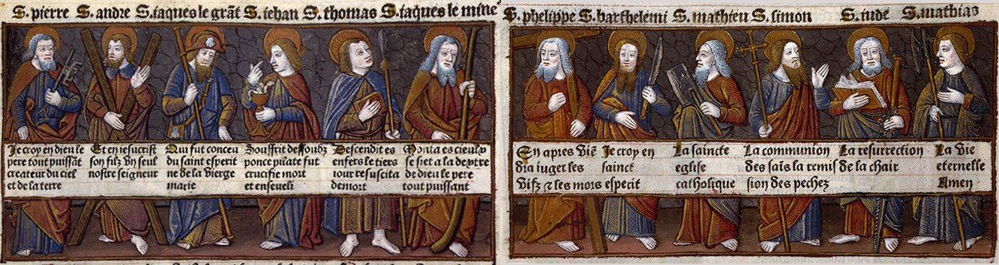
緣起：新約實踐與「古羅馬信經」的形成
新約與教父時期的教義雛形
在西方基督宗教傳統中，長期流傳著一個關於《使徒信經》（Apostles' Creed）起源的聖傳故事。該傳說指出，在耶穌升天後的第十天（即五旬節當天），十二位使徒在耶路撒冷準備分散往各地傳道前，在聖靈的默示下共同撰寫了這份信經[1]。傳說中，十二使徒每人各提供了一句教義，例如彼得宣告「我信上帝，全能的父」，約翰接著宣告「我信我主耶穌基督，上帝的獨生子」，以此類推，最終拼湊出十二條核心信仰宣言，以確保各地宣教真理的合一與純正[2]。此一傳說在早期中世紀得到了廣泛的尊崇，甚至在六世紀由偽奧古斯丁（Pseudo-Augustinian）的作品進一步將每位使徒與具體條文作了系統性的配對，成為當時重要的教導與記憶工具[3]。
然而，到了文藝復興與宗教改革時期，歷史批判學者對此提出了根本性的質疑。義大利人文主義學者洛倫佐·瓦拉（Lorenzo Valla, 1407–1457）透過嚴謹的文獻學與歷史考證，證實該傳說純屬虛構[1]。隨後的歷史神學研究亦指出，若該信經真為使徒集體創作，理應在《使徒行傳》或新約書信中有所記載，且早期教會在面對重大的亞流派（Arianism）等基督論爭議時，也不會略過此一極具權威的使徒文本而另尋他法[6]。
歷史神學家指出，《使徒信經》並非由使徒親自撰寫，而是早期教會在歷史發展中，基於使徒的口傳教義逐步編輯、修訂而成的大公信仰結晶[1]。其教義根基可以追溯至新約聖經中最原始的信仰宣告。在《使徒行傳》中，埃提阿伯太監受洗時宣告「我信耶穌基督是上帝的兒子」[6]（雖然此句宣告在最早期的西乃、梵蒂岡等主要抄本中付之闕如，被認為是後世反映洗禮儀式的西方插補，但確實代表了極早期的洗禮宣告形式），這便是最早期洗禮認信的雛形。保羅在書信中亦多次提及「信仰的規範」或「教導的模式」，如提醒提摩太在許多證人面前所作的「美好宣告」[2]。這些早期文本包含了對上帝作為生命源頭、基督的歷史性受難與復活、以及祂必將再來審判活人死人的核心宣認，為日後信經的系統化發展奠定了文本基石[2]。
隨著使徒時代的結束，二至三世紀的早期教父如愛任紐（Irenaeus，二世紀）、特土良（Tertullian，二至三世紀）、奧利振（Origen）、諾瓦蒂安（Novatianus）與居普良（Cyprian，皆為三世紀）等，在面對諾斯底主義與馬吉安派的嚴峻挑戰時，頻繁訴裝一種被稱為「信仰規範」（Regula Fidei）或「真理規範」的口傳教義總綱[10]。儘管當時各地方教會的「信仰規範」在遣詞用字上因地域而異，但其核心結構高度一致，皆圍繞著三位一體的架構展開[6]。
早期羅馬洗禮儀式與答問式信經的實踐
歷史研究表明，《使徒信經》的核心內涵與結構，源自早期羅馬教會在施行洗禮時的口頭問答儀式（Interrogatory Creeds）[2]。這種問答式的實踐，在傳統上被認為由希波律陀（Hippolytus）於三世紀初（約 215 AD）撰寫的《使徒傳統》（Apostolic Tradition）中得到了最為完整的記錄[1]（儘管現代禮儀史學界多認為該書是二至四世紀在東方層累彙整而成的匿名文獻集）。當時在羅馬準備受洗的信徒，會走到 baptismal waters 之中，施洗的主教或長老會依據馬太福音二十八章十九節的大使命公式，向受洗者提出三個關鍵的信仰提問[13]：
- 「你信全能的上帝父嗎？」[3]
- 「你信上帝之子基督耶穌，由聖靈及童貞女馬利亞所生，在本丟彼拉多手下被釘十字架、受死、埋葬，第三天從死人中復活，升天，坐在父的右邊，將來必降臨審判活人與死人嗎？」[3]
- 「你信聖靈、聖教會和身體復活嗎？」[3]
受洗者在每一次提問後回答「我信」，並隨即被浸入水中一次，洗禮在三次浸水與三次口頭認信後方告完成[9]。這種問答式的信仰條文，逐步在實踐中被整理成連續性的陳述句，要求受洗者在洗禮前熟記並在儀式中主動宣認，從而推動了洗禮信經從「被動答問」向「主動宣告」的文本化演變[9]。
古羅馬信經（Old Roman Symbol）的雙語見證
到了四世紀，這種在羅馬教區廣泛使用的洗禮宣言，在學術界被稱為「古羅馬信經」或「古羅馬符號」（Old Roman Symbol / vetus symbolum romanum）[6]。它是今日《使徒信經》最直接的祖先[11]。古羅馬信經在歷史上留下了極為珍貴的雙語文獻證言，其拉丁文與希臘文版本高度一致，但並非完全逐字對譯（例如希臘文版收錄了「永生」，而拉丁文版則予以省略）[15]。
希臘文版本最古老的證言，來自安基拉的主教馬塞路（Marcellus of Ancyra）於約340或341 AD寫給羅馬主教儒略一世（Pope Julius I）的申辯信[1]。當時，馬塞路因其強烈的反亞流派神學立場，在亞流派勢力的排擠下被逐出其教區，隨後在羅馬流亡了兩年[15]。在他準備離開羅馬前，他將這份完全符合羅馬地方信仰標準的希臘文信經呈交予儒略一世，以證明自身信仰的純正性[15]。
而拉丁文版本的最古老見證，則首見於阿奎萊亞的長老提拉尼烏斯·魯非諾（Tyrannius Rufinus of Aquileia）於約 400 AD 所撰寫的《使徒信經釋義》（Commentarius in Symbolum Apostolorum）[11]。魯非諾在該書中，將阿奎萊亞教會的洗禮信經與羅馬教會的信經進行了詳細的對比，指出兩者之間的微小差異，從而為後世學者復原古羅馬信經的完整拉丁文本提供了關鍵依據[1]。
大約在同一時期，雷梅西亞納的尼西塔斯（Nicetas of Remesiana）亦撰寫了《信經釋義》（Explanatio Symboli），該作同樣基於古羅馬信經，但極具神學前瞻性地包含了「永生（vitam eternam）」與「聖徒相通（communionem sanctorum）」等條款[15]。這些條款在當時馬塞路與魯非諾記錄的羅馬本中尚未完全整合（馬塞路的希臘文版有「永生」，但魯非諾的拉丁文版則省略了這一點），反映出四世紀末地方信經之間複雜的交融軌跡[15]。
編輯與修訂的文本演變：從羅馬古本到高盧公認文本
關鍵神學詞彙的添加與歷史論爭
古羅馬信經雖然結構嚴謹，但在面對四至六世紀日趨複雜的異端思潮時，其簡樸的遣詞用字顯得防禦性不足。因此，自五世紀起，高盧（今法國南部）與西班牙等地的教會開始對古羅馬信經進行局部的文本修訂與擴展，將防範異端、深化救贖論的神學詞彙編織進信經的骨架中[3]。
對於這些文本擴展的歷史動因，神學界存在著長期的學術論爭[12]。十九世紀末至二十世紀初，德國自由派神學家哈納克（Adolf von Harnack）與米爾布特（Carl Mirbt）主張，古羅馬信經的原始形式大約在150 AD或更早便已定型[12]。而神學家麥吉弗特（A.C. McGiffert）與克魯格（Gustav Krüger）則提出了一種更具爭議性的「反異端起源說」，認為該信經大約在160 AD被系統性地建構出來，其核心目的在於針對性地反駁馬吉安派否定物質創造、以及諾斯底派否定基督真實肉身的神學立場[12]。
不論起源論爭如何，公認文本中添加的每一處修飾詞，都承載著極其深厚的神學辯證：
| 信經章節 | 古羅馬信經（c. 400 AD） | 公認文本（Textus Receptus, c. 710-714 AD） | 增補詞彙之歷史與神學意涵 |
| 第一部分：父神 | Credo in deum patrem omnipotentem[15] | Credo in Deum Patrem omnipotentem, Creatorem caeli et terrae[16] | 「創造天地的主」：直接針對馬吉安派與諾斯底派的二元論，重申物質世界的受造並非出自次等惡神（Demiurge）之手，而是全能天父的良善創造[3]。 |
| 第二部分：子神 | ...qui natus est de Spiritu sancto ex Maria virgine[15] | ...qui conceptus est de Spiritu Sancto, natus ex Maria Virgine[16] | 「因著聖靈孕育」：將「誕生」（natus）精細化為「孕育」（conceptus）與「誕生」，以防禦嗣子說（Adoptionism）與幻影說（Docetism），更精準地確保了基督神人二性的奧秘[3]。 |
| ...sub Pontio Pilato crucifixus est et sepultus[15] | ...passus sub Pontio Pilato, crucifixus, mortuus, et sepultus[16] | 「受難」與「受死」：增補「受難」（passus）與「受死」（mortuus），強調基督在歷史時間（本丟彼拉多任內）經歷了肉體與心靈上的真實痛苦與真實死亡，而非如幻影說所言只是象徵性受苦[3]。 | |
| descendit ad inferos[16] | 「降在陰間（地獄）」：此句是整部信經演變中爭議最大、加入最晚的條文之一。最初出現在四世紀阿奎萊亞信經中，用以表達基督經歷了完全的死亡狀態，隨後在中世紀演變為豐富的救贖論教義[19]。 | ||
| 第三部分：聖靈與教會 | ...et in Spiritum sanctum, sanctam ecclesiam, remissionem peccatorum, carnis resurrectionem. 15 | ...Credo in Spiritum Sanctum, sanctam Ecclesiam catholicam, sanctorum communionem,... vitam aeternam. Amen. 16 | 「大公的（catholicam）」：修飾教會的屬性，強調教會的普世性、唯一性與正統性[11]。 「聖徒相通（sanctorum communionem）」：此詞既可指信徒與已逝聖徒之間的屬靈交通，亦可指「分受聖物（聖餐禮）」[22]。 「永生（vitam aeternam）」：補足了末世論的終極盼望[15]。 |
其中，「聖徒相通」（sanctorum communionem）條款的加入尤為曲折[24]。學術界對此存在著多種理論：部分學者（如 New Advent 百科全書所載）認為，此條款是高盧的主教（如里茲的浮士德 Faustus of Riez）為了對抗維吉蘭提烏斯（Vigilantius）否定聖徒崇敬的立場而刻意添加的[24]。另有學者主張，它是對抗北非多納徒派（Donatists）分裂教會行為的一種神學反應，旨在重申普世教會屬靈團契的不可分割性[24]。甚至有理論指出其源自亞美尼亞，隨後經由潘諾尼亞（Pannonia）與不列顛群島逐步傳入高盧，最終在西方神學體系中完成了大公性的融合[24]。
聖皮爾米紐斯與《備忘錄選集》的文本奠基
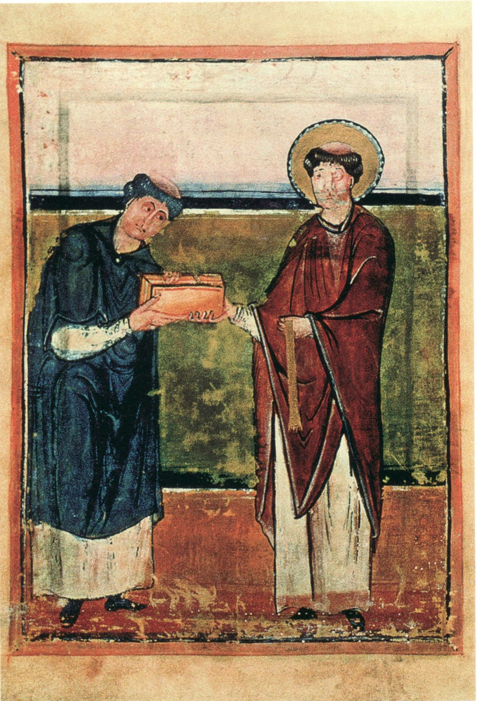
在《使徒信經》從地方性洗禮宣告向西方大公信仰「公認文本」（Textus Receptus）過渡的歷史關頭，八世紀初的本篤會宣教士、修道院創立者聖皮爾米紐斯（St. Pirminius, 或作 Priminius）起到了決定性的橋樑作用[1]。皮爾米紐斯活躍於德意志西南部與高盧地區，他深知新皈依的蠻族信徒與基層神職人員亟需一本簡明易懂的信仰實踐指南[5]。
約在710至714 AD（亦有學者認為是725 AD）之間，皮爾米紐斯編纂了一本名為《備忘錄選集》（De singulis libris canonicis scarapsus，其中「scarapsus」為中世紀拉丁文「摘錄/編集 excorpsus」之訛變）的宣教手冊[5]。在這本手冊中，皮爾米紐斯系統性地建構了其宣教神學，指出天父創造人類是為了填補墮落天使（撒旦及其追隨者）所留下的宇宙空缺；而撒旦最終是被基督在道成肉身中所展現的極致謙卑所擊敗[5]。他還在書中開列了八大重罪（貪婪 cupiditas、暴食 gula、邪淫 fornicatio、憤怒 ira、憂鬱 tristitia、懈怠 acedia、虛榮 inanis gloria、傲慢 superbia）以規範信徒生活[5]。
最具有歷史價值的是，皮爾米紐斯在該書中記錄了現存最早、字句與今日完全一致的《使徒信經》完整拉丁文文本[1]。他依然承襲了使徒撰寫的古老傳說，並在書中將信經的十二個條款，逐一指配給了具體的十二位使徒[4]：
- 彼得 (Petrus) 宣告：「我信上帝，全能的父，創造天地的主。」[4]
- 約翰 (Joannes) 宣告：「並在耶穌基督，祂的獨生子，我們的主。」[2]
- 雅各 (Jacobus) 宣告：「因著聖靈孕育，從童貞女馬利亞所生。」[5]
- 安得烈 (Andreas) 宣告：「在本丟彼拉多手下受難，被釘在十字架上，受死，埋葬。」[5]
- 腓力 (Philippus) 宣告：「降在陰間，第三天從死人中復活。」[5]
- 多馬 (Thomas) 宣告：「升天，坐在全能父上帝的右邊。」[5]
- 巴多羅買 (Bartholomaeus) 宣告：「將來必從那裡降臨，審判活人死人。」[5]
- 馬太 (Matthaeus) 宣告：「我信聖靈。」[5]
- 小雅各 (Jacobus Alphaei) 宣告：「我信聖而公之教會，聖徒相通。」[5]
- 西門 (Simon Zelotes) 宣告：「我信罪得赦免。」[5]
- 猶達/達太 (Jude Thaddaeus) 宣告：「我信身體復活。」[5]
- 馬提亞 (Matthias) 宣告：「我信永生。阿們。」[5]
皮爾米紐斯將高盧與西班牙地區地方信經長期融合後的文本進行了標準化的記錄，這套文本隨後在其宣教網絡中被廣泛抄寫，成為日後西方教會唯一的標準信經範本[1]。
推廣、標準化與禮儀化：政教合一的傳播與整合
加洛林王朝的帝國 correctio 運動與禮儀標準化
《使徒信經》之所以能夠超越地方教區的界限，成為整個西方拉丁教會的共同信仰標誌，與加洛林王朝（Carolingian Dynasty）的政教合一體制有著密不可分的因果關係[13]。八世紀末，法蘭克國王查理曼（Charlemagne）建立起一個龐大的西方帝國，並將其世俗統治與羅馬天主教會的屬靈權威進行了深度綁定[26]。查理曼及其宮廷學者（如約克公爵阿爾昆 Alcuin of York）堅信，帝國的政治統一、軍事擴張與社會道德秩序，必須建立在宗教信仰的絕對純淨與標準化之上，這一宏大的文化與行政改革方案被歷史學家稱為「加洛林道德修正運動」（Carolingian correctio）[26]。
在這場運動中，查理曼對帝國進行了全方位的系統性改造：
- 世俗官僚體系的重構：設立了「專業法官（scabini）」制度，要求其精通帝國法律以確保公正審判[26]。
- 經濟與度量衡的標準化：確立了以白銀為基準的「加洛林磅（livre carolinienne）」貨幣與會計系統[26]。
- 強制性的信仰推廣與道德矯正：在對薩克森人的征服中，頒布了極其嚴酷的《薩克森法典》（Capitulatio de partibus Saxoniae），將拒絕洗禮、踐踏神職人員或暗中舉行異教儀式者一律處以死刑，以行政與軍事暴力強推基督教化[28]。
在此一宏大改革脈絡下，《使徒信經》成為了最為核心的教化工具。查理曼於789 AD頒布了著名的《普遍勸誡》（Admonitio Generalis），明確命令帝國內的所有主教、修道院長與帝國巡察使，必須確保每一位神職人員都具備足夠的拉丁文素養，並強制帝國境內的所有臣民，不分貴賤，都必須熟記並背誦《使徒信經》與《主禱文》[3]。
為了落實這一政策，查理曼展開了複雜的禮儀整合與談判[27]。在785 AD，他請求教宗哈德良一世（Pope Hadrian I）從羅馬送來一套「純淨的」羅馬教宗禮儀書（Hadrianum），以此作為帝國境內統一禮儀的母本[27]。然而，這套代表羅馬教宗本堂華麗儀式的禮儀書，缺乏日常堂區所需的許多主日禮拜和實用儀式，法蘭克宮廷學者與聖本篤·阿尼亞內（Benedict of Aniane）等人在複製與推廣這套禮儀書時，不得不將高盧當地行之有效的元素（包括皮爾米紐斯記錄的《使徒信經》公認文本）編織進去，形成了一套新型的「羅馬-高盧混血禮儀」[16]。同時，查理曼還將其最優秀的歌手送往羅馬教宗歌詠堂學習「羅馬平詠（Gregorian chant）」，並將其引入帝國各教堂，以確保崇拜聲音的絕對統一[27]。
隨著這套「羅馬-高盧」禮儀在法蘭克帝國的大規模傳播，這份帶有「大公」、「降在陰間」與「聖徒相通」等高盧增補詞彙的《使徒信經》，隨著加洛林王朝對意大利的政治與文化滲透，逆向輸出回到了羅馬[13]。長期保守使用簡短「古羅馬信經」的羅馬教會，迫於政治現實與禮儀一統的趨勢，最終接納了這份高盧修訂本[16]。到了十一世紀，這份信經隨著《羅馬-德意志主教禮儀書》（Pontificale Romano-Germanicum）的推廣，在羅馬教區得到了官方接納與整合，成為整個西方拉丁教會官方無可爭議的標準文本[3]。
西方教會日常禮儀的全面嵌入
自中世紀中葉確立其公認文本後，《使徒信經》在西方各主要基督宗教教派的日常禮儀與教化實踐中，得到了極其深度的嵌入：
| 教派宗派 | 禮儀使用場合與實踐機制 | 神學定位與調整 |
| 羅馬天主教會 | 在洗禮儀式中作為核心誓詞[16]；在日常玫瑰經（Rosary）的起首背誦[25]；歷史上在日課（晨禱與晚禱）中與主禱文並列（現今梵二後的禮儀日課已移除）[9]；在兒童與兒童彌撒（Masses for children）中作為信仰宣告[17]。 | 視其為大公信仰的權威摘要與歷史統緒的象徵[11]。 |
| 路德宗（信義會） | 完整保留在馬丁·路德的《大要理問答》與《小要理問答》中[6]；在主日崇拜（不舉行聖餐禮或特定平日禮拜）中作為公眾認信[29]。 | 堅信其為符合聖經的使徒教義結晶[8]。但在德文與部分英文譯本中，為防範誤解，常將「大公教會（catholic church）」改譯為「基督教會（Christian church）」[31]。 |
| 聖公宗（安立甘宗） | 嵌入《公禱書》（Book of Common Prayer）的每日早禱（Morning Prayer）與晚禱（Evening Prayer）中[17]；在洗禮儀式中作為教父教母或受洗者的主動宣告[4]。 | 視其為聯結早期教會與今日信徒的教理紐帶[34]。 |
| 長老會與改革宗 | 收錄於約翰·加爾文的《日內瓦要理問答》與《海德堡要理問答》中[35]；作為洗禮與主日崇拜中宣告上帝主權與基督救贖的文本[16]。 | 強調其作為信仰體系（非神聖啟示）的「信仰準則」作用[11]。 |
| 衛理公會 | 用於日常主日崇拜與洗禮[14]。 | 部分分支（如聯合衛理公會 United Methodist Church）在實踐中，因神學考量，選擇刪除或不背誦「降在陰間（地獄）」這一條款[14]。 |
後世影響與神學爭議的教義分野
東西方教會的普世大公性斷裂
《使徒信經》雖然在西方世界達成了極高的禮儀與教義統一，但在普世合一（Ecumenism）的維度上，它卻成為了東西方教會（西方拉丁教會與東方正教會）之間歷史、文化與神學斷裂的顯著標誌[14]。
自1054年東西方教會大分裂以來，東方正教會（Eastern Orthodox Church）在所有宗派分支中，始終堅拒在禮儀中使用《使徒信經》，亦拒絕承認其具備普世大公的權威性[14]。東正教神學指出，唯有由全體主教聚集的大公會議（Ecumenical Councils）共同制定、並在君士坦丁堡擴展的《尼西亞-君士坦丁堡信經》（381 AD），才具備無可爭議的普世大公約束力[18]。
從東正教的視角來看，《使徒信經》存在著根本性的歷史與神學局限。首先，在教權結構上，東正教將其視為一個「純粹的西方地方性洗禮傳統」，其文本演變完全由羅馬教區與高盧行省主導，缺乏東方教父與大公會議的共同參與，因而缺乏「普世大公會議的合法性（conciliar authority）」[29]。其次，在神學精細度上，東正教認為《使徒信經》過於簡短且缺乏形上學思辨，未能像《尼西亞信經》那樣，在對抗亞流派、半亞流派與神格惟一論（Monarchianism）等基督論與聖靈論異端時，精確地使用「與父本質相同（Homoousios）」等哲學術語，這導致在歷史上，甚至連拒絕基督神性的亞流派也宣稱能夠接受《使徒信經》[7]。此外，西方教會在《尼西亞信經》中單方面加入「和子說（Filioque）」所引發的教義分裂，亦使得東方教會對西方獨佔的《使徒信經》文本，抱持著極高的神學戒備與抵制態度[18]。
爭議教義的宗派詮釋衝突
在十六世紀宗教改革運動興起後，隨著「聖經唯獨（Sola Scriptura）」原則的確立，新教各宗派開始對《使徒信經》中部分字面含糊的條款進行嚴格的神學檢視，引發了至今仍在持續的教義詮釋衝突[6]。
一、「降在陰間（地獄）」（Descendit ad inferos）
此條款是信經歷史上爭議最為劇烈的神學交鋒點，其神學詮釋分化為三大主要陣營[19]：
- 天主教的「陰府釋放說（Harrowing of Hell）」：天主教神學（如《天主教教理》第633條）明確區分了「地獄（Gehenna，永刑之處）」與「陰府（Hades / Sheol，死者之處）」[20]。天主教認為，基督實體靈魂的下降，並非進入受苦的永刑地獄，而是進入「祖先的邊境（Limbo of the Fathers / Sheol）」，向自古以來等待救贖的義人（如亞當、挪亞、摩西等舊約聖徒）宣告救贖的完成，並以勝利者的姿態引領他們進入天堂[20]。
- 路德宗的「得勝宣告說（Triumphal Proclamation）」：依據路德宗《協和信條》（Solid Declaration）第九條，基督降入陰間不應被視為祂降卑（humiliation）的延續，而是祂復活與升高（exaltation）的第一步[19]。基督以其完整的神人二性位格（God and man），在復活的前夕親自降入地獄，是為了向撒旦和一切黑暗權勢進行徹底的得勝宣告（Colossians 2:15），粉碎地獄的門戶與權能[19]。
- 改革宗的「極致受苦隱喻說（Metaphorical Sufferings）」：約翰·加爾文在《基督教要義》中，對任何形式的「字面空間位移」 or 「救贖死者」之說持堅決的否定態度[21]。加爾文提出，「降在陰間」是一個極其深歲的神學隱喻，用以表達基督在十字架上代罪受刑時，其靈魂真實地承受了天父上帝公義的烈怒、被神棄絕的極致痛苦，以及在心靈深處體驗了如同墮入永刑地獄般的絕望與煎熬[19]。
二、「聖徒相通」（Sanctorum communionem）
由於拉丁文「sanctorum」既可指陽性複數（指「聖徒們」 sancti），亦可指中性複數（指「聖物/聖餐」 sancta），這導致了兩種截然不同的救贖論與教會論實踐[22]：
- 天主教的「聖物與諸聖交通觀」：天主教神學（如《天主教教理》第948條）對此採取了雙重維度的綜合詮釋，指出該詞首先指「分享聖餐與聖禮等聖物（sancta）」；其次指「地上信徒（戰鬥的教會）、煉獄靈魂（受苦的教會）與天堂聖徒（得勝的教會）之間在基督 mystical body 內的不斷交通（sancti）」[23]。這為天主教的「功德交換（communion of merits）」、聖徒代禱（Intercession of Saints）以及追思亡者的實踐，提供了核心的信經依據[23]。
- 新教的「地方信徒團體契合觀」：新教各宗派（如《海德堡要理問答》第55條與《威斯敏斯特信條》第26章）則完全排除了向天堂聖人祈禱或功德交換的教義，將其嚴格義譯為「聖徒們（Living Saints）之間的交通」[22]。新教強調，地上所有因信仰與基督聯合的信徒，皆為「聖徒」，彼此分享上帝賜予的屬靈恩賜與物質財產，並有義務在愛中彼此服事，這是一種類似於早期新約教會的水平式生命共同體實踐[22]。
現代大公研究與神學反思
到了十九世紀，隨著近代歷史批判神學的興起，西方學術界對《使徒信經》展開了深度的歷史考證與比較神學研究[35]。其中，瑞士裔美籍歷史神學家菲利普·沙夫（Philip Schaff, 1819–1893）於1877年出版的鉅著《基督宗教信經》（The Creeds of Christendom, 共三卷），填補了歷史神學與比較信經學（Symbolics）的空白[35]。
沙夫在其書中，對《使徒信經》的神學定位提出了極具洞察力的「二級啟示論」[12]。他指出，使徒信經雖然完美地符合了聖經的精神與字句，但它並非神聖啟示的直接產物，而是具備「次級的、教會性的默示（secondary, ecclesiastical inspiration）」[12]。沙夫寫道，這份信經「不是上帝對人說的話，而是人對上帝的回應，是受造物對其創造者之啟示的信仰宣告」[12]。
在沙夫與歐洲學者（如 C.P. Caspari 與 Adolf von Harnack）的學術辯論中，現代信經學逐漸廓清了使徒信經演變的多重假說[12]。Caspari 主張信經起源於二世紀初的亞細亞，而 Kattenbusch 與 Zahn 則將早期羅馬洗禮符號的上限推至 120 AD 或更早[12]。這一系列歷史考證庫不僅未能削弱信經的威權，反而賦予了它一種歷史演進的、有機的生命記憶，使其成為連結西方基督教各宗派與早期歷史根基不可或缺的學術與神學共同體基石[11]。
引用的著作
- Historical trajectory of the Apostles' Creed | Theologia est doctrina Deo vivendi per Christum
- Apostles' Creed; The - International Standard Bible Encyclopedia
- Apostles' Creed - Grokipedia
- The Apostles' Creed - Classically Christian - WordPress.com
- I believe in God the Father | InContext - Christian History Institute
- How Did We Get the Apostles' Creed? - Christian Study Library
- 使徒信經- 維基百科，自由的百科全書
- 使徒信经 - 改革宗初学者
- 使徒信經 - 香港九龍塘基督教中華宣道會
- [Old Roman Symbol - Wikipedia](https://en.wikipedia.org/wiki/Old_Roman_Symbol#:~:text=The%20Old%20Roman%20Symbol%20(Latin,writers%20as%20Tertullian%20and%20Irenaeus.)
- The Apostles' Creed: Its History and Origins - Logos Bible Software
- Philip Schaff: Creeds of Christendom, with a History and Critical ...
- Did the Apostles Actually Write the Apostles' Creed? 📜 #history #earlychurch #historyshorts - YouTube
- Apostles' Creed | Beliefs, Origins, Symbolism - Britannica
- Old Roman Symbol - Wikipedia
- Apostles' Creed - Wikipedia
- old roman symbol - The Apostles' Creed - A Collection of Prayers
- Ecumenical Christian Creeds - CRI/Voice Institute
- What does "He descended into Hell" in the Apostles creed actually mean? : r/LCMS - Reddit
- He Descended into Hell | Did Jesus literally go to Hell? - Moses Sanchez
- Jesus' Descent into Hell - ETHOS Institute for Public Christianity
- Apostles creed : r/Reformed - Reddit
- Part One Section Two I. The Creeds Chapter Three I Believe In The Holy Spirit Article 9 I Believe In The Holy Catholic Church Paragraph 5. The Communion Of Saints - The Holy See
- CATHOLIC ENCYCLOPEDIA: Communion of Saints - New Advent
- Apostles' Creed - Wikisource, the free online library
- Charlemagne's Reforms | World History - Lumen Learning
- Western Latin Liturgics | Carolingian Reforms - Liturgica.com
- Making Christendom: Charlemagne, the Papacy, and Medieval Christian Imperial Power
- 為什麼使徒信經比尼西亞信經在基督新教徒中更受歡迎？ : r/Christianity - Reddit
- 臺北歸正福音教會: 使徒信經
- 9 Things You Should Know About the Apostles' Creed - The Gospel Coalition
- 簡單來說：改革宗和路德教會/基督徒/信仰之間的主要區別是什麼？ : r/Reformed - Reddit
- The Apostles' Creed Explained: A Line-By-Line Guide - Life.Church Finds
- The Apostles' Creed | The Church of England
- Creeds of Christendom, Vol 1: The History of the Creeds by Philip Schaff | Goodreads
- Apostles Creed 18: The Communion of Saints - Christ Church
- Nicene Creed and Apostle's Creed Question : r/OrthodoxChristianity - Reddit
- 使徒信經同尼西亞信經有咩分別呀？ : r/TrueChristian - Reddit
- The communion of saints - Apostles Creed
- Philip Schaff: Creeds of Christendom, with a History and Critical notes. Volume I. The History of Creeds. - Christian Classics Ethereal Library
羅馬秩序的終結與日耳曼王權的奠定：奧多亞賽的崛起、統治策略與政權覆滅
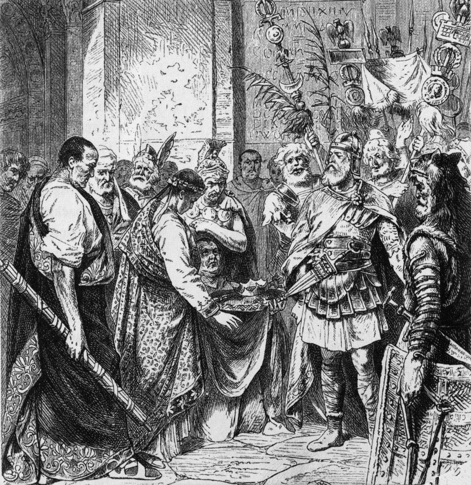
在公元五世紀下半葉，西羅馬帝國的政治結構已陷入徹底的實質性崩潰。這場漫長危機的終點，與一位兼具多重族群背景的蠻族將領奧多亞賽（Odoacer）緊密相連[1]。奧多亞賽約於公元 433 年出生於多瑙河中游地區，其父親埃德科（Edeco）曾是匈人帝國首領阿提拉（Attila）極為信任的使節與謀臣，並在阿提拉死後成為斯基里族（Sciri）的領袖[2]。奧多亞賽的母親則可能出身於斯基里名門，這種混血背景使他自幼便沉浸在多瑙河畔多元族群交融的軍事環境中[2]。公元 461 年前後，年約二十六歲、身披獸皮且身材魁梧的奧多亞賽在前往意大利尋求發展的途中，拜訪了隱居於諾里庫姆（Noricum）的聖塞味利（Saint Severinus），後者預言他將在意大利成就一番偉業[2]。抵達意大利後，奧多亞賽及其隨從加入了羅馬帝國衛隊，並在公元 472 年參與了日耳曼將領里西默（Ricimer）圍攻並洗劫羅馬的軍事行動，逐步在風雨飄搖的帝國軍隊中攀升至指揮官之列[5]。
與此同時，西羅馬朝廷的財政根基已因失去了北非這一核心產糧與稅收行省而徹底枯竭，再也無力支付龐大的官僚體系與軍隊開支[5]。公元 475 年，時任西羅馬皇帝朱利烏斯·尼波斯（Julius Nepos）任命同樣曾效力於阿提拉的潘諾尼亞羅馬人歐瑞斯特（Orestes）為軍事長官[1]。然而，歐瑞斯特隨即發動叛亂，將尼波斯驅逐至達爾莫提亞，並於同年十月三十一日將其年僅約十歲的庶子羅慕路斯·奧古斯都（Romulus Augustus）推上帝位[1]。這位被後世嘲諷為「奧古斯都路斯」（Augustulus，意為小奧古斯都）或「莫米盧斯」（Momyllus，意為小恥辱）的幼童，僅是其父親治下的傀儡[5]。
公元 476 年，由赫魯利人、斯基里人、魯基人及圖爾西林吉人等日耳曼部族構成的帝國同盟軍（Foederati），因長期欠餉而向歐瑞斯特提出強烈要求，索取意大利三分之一的土地以實行永久定居[1]。在遭到歐瑞斯特拒絕後，同盟軍將士將目光投向了威望日隆的奧多亞賽[1]。奧多亞賽承諾，若軍隊擁立他為王，他將徹底滿足將士們對土地的渴望[5]。公元 476 年八月二十三日，同盟軍正式擁立奧多亞賽為王，起義部隊迅速席捲北意大利[7]。奧多亞賽在帕維亞擊敗守軍，並於八月二十八日在皮亞琴察將歐瑞斯特捕獲並執行死刑[1]。九月四日，起義軍攻陷拉文納，擊殺了守將保羅（歐瑞斯特之弟），並正式廢黜了羅慕路斯·奧古斯都路斯[1]。出於對其年幼的憐憫，奧多亞賽並未對其痛下殺手，而是給予其每年六千索里達金幣的優渥退休金，將其安置於坎帕尼亞的盧庫拉努姆城堡隱居[1]。
在完成對政權的實際更迭後，奧多亞賽上演了一場極具歷史戲劇性的法理公關秀：他迫使退位的小皇帝羅慕路斯簽署退位書，並將象徵西羅馬帝國最高皇權的帝國徽器與衣冠——包括皇冠、紫袍、權杖與徽章等——悉數打包送往君士坦丁堡，呈遞給東羅馬帝國皇帝芝諾（Zeno）[1]。同時，他迫使羅馬元老院向芝諾呈遞國書，宣稱西方已無必要保留獨立的帝制，請求將帝國主權重新歸於君士坦丁堡，並由芝諾授予奧多亞賽「愛國者」（Patrician）的稱號以治理意大利[2]。
面對元老院代表與奧多亞賽送來的「衣冠大禮包」，東羅馬皇帝芝諾的反應並非單純的憤怒或欣然接受，而是一場充滿政治算計的「雙軌外交」[11]。當時芝諾自身處境極為尷尬，他剛於公元 476 年 8 月擊敗篡位者巴西利斯庫斯（Basiliscus）重登帝位，內部兵變與將領反叛的陰影揮之不去，根本無力發兵收復意大利[12]。同時，被東帝國視為西羅馬唯一合法皇帝、流亡於達爾馬提亞的朱利烏斯·尼波斯也派遣使節前來覲見，請求芝諾出資出兵助其復辟[11]。
芝諾對此展現了極高的外交智慧。他對羅馬元老院代表進行了嚴厲的斥責，指出西方羅馬人驅逐了東帝國指派的尼波斯，甚至殺害了先前的皇帝安提米烏斯（Anthemius），宣稱在尼波斯依然在世的情況下，意大利理應迎回正統皇帝[11]。但私底下，為了安撫實質控制意大利的奧多亞賽並避免西方徹底失控，芝諾採取了務實的妥協：他在寫給奧多亞賽的皇家詔書中，直接使用了「愛國者」（Patrician）的尊稱，默許了其在意大利的行政代理權[10]。
這項外交攻防對地緣政治產生了深遠的「虛實影響」[10]。在法理與名義上，羅馬帝國實現了「大一統」，君士坦丁堡成為全天下唯一的羅馬正統，芝諾獲得了空前的道德威望，這也為數百年後查士丁尼大帝發動「再征服」戰爭奠定了法理基石[10]。然而在實質層面，這種妥協開創了早期中世紀蠻族君主「名義臣屬、實質割據」的治理先例——奧多亞賽藉此披上了羅馬正統的保護外衣，得以在不宣布與東方決裂的前提下，於意大利建立實質自治的蠻族王國，並在其發行的貨幣上同時鑄刻芝諾的頭像與自己的名字，玩弄這場「借殼上市」的權力遊戲[2]。這一法理上的「大政奉還」妥協，標誌著西羅馬帝國作為獨立政治實體的終結[1]。
地緣政治博弈與邊疆權力重組
奧多亞賽政權自誕生之日起，便處於極其複雜的地緣政治夾縫之中。他必須在名義上維持對東羅馬帝國的臣屬，同時在實質上維護意大利的獨立，並應對周邊蠻族王國的領土野心[2]。
| 地緣政治對象 | 法理定位與關係 | 核心博弈與外交行動 | 戰略與地緣影響 |
| 東羅馬帝國（君士坦丁堡） | 名義上的宗主國，實質上的潛在威脅與合法性來源[2] | 奧多亞賽送回西羅馬帝國徽章與衣冠，宣稱帝國主權合一，向芝諾皇帝臣服並獲授「愛國者」（Patrician）頭銜[1]。 | 名義上實現帝國統一，但東帝國始終對其抱持戒備，將其視為非法篡奪者[7]。 |
| 達爾馬提亞（尼波斯政權） | 競爭性的合法西羅馬流亡政權[7] | 奧多亞賽在名義上和貨幣鑄造上承認朱利烏斯·尼波斯的皇帝地位以安撫芝諾[2]；在 480 年尼波斯遇刺後，以此為藉口入侵並於兩年內吞併達爾馬提亞[4]。 | 消除潛在的法理競爭對手，擴大了王國的東部版圖與戰略防禦縱深[4]。 |
| 汪達爾王國（北非） | 經濟、海上防禦與地緣平衡對象[5] | 奧多亞賽與汪達爾國王蓋塞里克進行外交談判，通過承諾支付年貢，成功收復了除莉莉貝烏姆以外的西西里島控制權[2]。 | 穩定了南方的海上安全，保障了意大利本土至關重要的糧食進口線[2]。 |
| 西哥德王國（高盧南部） | 領土擴張與西部邊疆的潛在盟友或威脅[5] | 為了穩定西部防線，奧多亞賽與西哥德君主尤里克達成領土讓渡協議，放棄了高盧南部從羅訥河到阿爾卑斯山的狹長沿海地帶[2]。 | 成功安撫了擴張中的西哥德王國，使奧多亞賽得以集中精力應對多瑙河與東部威脅[5]。 |
在法理層面，奧多亞賽與東羅馬帝國的博弈是一場高度精密的雙重遊戲[5]。儘管東羅馬皇帝芝諾最初勉強授予他「愛國者」的頭銜，但同時卻堅持要求其承認流亡達爾馬提亞的朱利烏斯·尼波斯為正統西帝[7]。奧多亞賽採取了務實的政治妥協，他在意大利境內發行鑄有尼波斯肖像的貨幣，以安撫君士坦丁堡的法理原則[2]。
然而，公元 480 年尼波斯被其部下刺殺，這為奧多亞賽提供了擴張版圖的絕佳契機[4]。他隨即打著為合法皇帝復仇的旗號入侵達爾馬提亞，擊敗並處決了陰謀分子，並在兩年內將整個達爾馬提亞正式併入其意大利王國的版圖[6]。
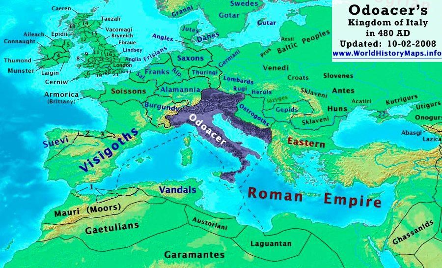
在西方與南方邊疆，奧多亞賽展現了卓越的外交手腕。他與實力強大的汪達爾王國（Vandals）國王蓋塞里克達成協定，通過支付象徵性的年貢，成功為意大利收復了除莉莉貝烏姆（Lilybaeum）以外的整個西西里島，從而穩固了意大利的糧食安全與南部海上屏障[5]。同時，為了避免與高盧南部的西哥德王國（Visigoths）發生兩線戰爭，他果斷將羅訥河至阿爾卑斯山之間的狹長沿海地帶讓渡給西哥德國王尤里克，從而換取了西部邊境的長期和平[5]。
然而，這種均勢在公元 484 年因東羅馬軍事長官伊拉斯發動叛亂而宣告破裂[4]。雖然奧多亞賽並未直接派兵援助伊拉斯，但他與叛軍的密信往來激怒了芝諾皇帝[4]。芝諾隨即展開借刀殺人的地緣戰略，首先鼓動多瑙河畔的魯基人進攻北意大利[7]。在奧多亞賽於公元 487 至 488 年冬季主動出擊、跨越河流徹底摧毀魯基人王國後，芝諾祭出了地緣博弈的最後一張底牌：他授意羽翼漸豐、威脅君仁坦丁堡安全的東哥德人領袖狄奧多里克前往意大利取代奧多亞賽[17]。此舉不僅能借狄奧多里克之手除掉不聽話 of 奧多亞賽，亦能將危及東帝國安全的東哥德勢力引向西方，實為一石二鳥之計[17]。
內政治理、經濟民生與軍事防禦政策
奧多亞賽在意大利的十六年統治，其核心在於極力維持古典晚期的羅馬社會與財政體制，而非引入顛覆性的日耳曼法律[5]。在備受歷史學家關注的蠻族土地分配問題上，傳統觀點往往將奧多亞賽滿足部眾「三分之一土地」要求的承諾，解讀為對羅馬貴族私有財產的暴力掠奪[2]。然而，現代歷史學家如沃爾特·戈法特（Walter Goffart）的研究表明，奧多亞賽實際實施的是一種更為溫和且精妙的財政重組制度，即「客宿權」（Hospitalitas/Metatum）體系的讓渡與演變[25]。
在晚期羅馬帝國的法律框架下，「客宿權」原指民事地主有義務為過境士兵或官員提供三分之一的房屋居住空間，這是一種臨時性的徵用制度[25]。奧多亞賽將這一概念擴展到了國家稅收領域。他的部眾——那批約有一萬至兩萬名戰士及其家屬的同盟軍——並非直接搶奪羅馬地主的莊園產權，而是獲得了被稱為「Sortes」的財政權益，即直接獲贈相當於特定土地三分之一份額的帝國稅收收益權[8]。這意味著羅馬地產所有者依然保有其土地的經營權與產權，但其原本應上繳給拉文納國庫的三分之一稅款，改為直接支付給定居於當地的日耳曼軍事家屬[26]。這種制度設計編織了蠻族士兵與羅馬地主之間的利益紐帶，不僅避免了因大規模沒收土地而引發的社會大動盪，亦使因為五世紀頻繁戰亂而荒蕪、人口銳減的意大利農業生產得以在有序的環境中逐步恢復[2]。
與此同時，奧多亞賽高度重視與羅馬元老院的共生關係，以此鞏固其政權的民事合法性[16]。他並未觸動原有的帝國官僚網絡，而是繼續重用羅馬舊貴族，將執政官、羅馬城督和近衛軍長官等顯赫職位悉數委任給諸如巴西里烏斯、迪西烏斯、西馬庫斯 and 波愛修斯等元老院世家精英[4]。這種政治懷柔政策極大地贏得了羅馬貴族階層的忠誠與支持[20]。最顯著的象徵莫過於元老院在奧多亞賽時期獲得了前所未有的威望提升，甚至恢復發行了印有元老院決議標記「S.C.」的銅幣，這在三世紀中葉以後尚屬首次[20]。
在經濟與軍事政策方面，奧多亞賽採取了社會階級徹底分離的防禦體制[29]。他將日耳曼同盟軍重組為一個高度封閉、世襲的軍事階級，與不承擔軍事義務、專注於民事與農業的羅馬平民階層完全分開[24]。軍隊兵力被集中部署於帕維亞、拉文納和美第奇拉努姆等北意大利軍事要塞，以防範外敵入侵[8]。在財政上，通過削減西羅馬奢華的宮廷開支，奧多亞賽得以在不增加人民稅賦的前提下，維持金幣成色，穩定物價，使戰火蹂躪多年的意大利民生重現生機[2]。然而，這種高度分離的軍事階級制度也帶來了致命的隱患，即國家防禦力量完全取決於這批規模有限的蠻族職業軍人，一旦面臨東哥德人舉族遷徙式的全面入侵，意大利本土的羅馬居民既無武裝亦無動員機制，根本無法組織有效的抵抗[19]。
阿里烏派君主的政教政策與政教衝突
在宗教層面，作為阿里烏派基督徒 of 奧多亞賽，對佔人口壓倒性多數的迦克墩派（天主教）教會採取了極為寬容和尊重的政策[7]。他將教會視為維繫社會道德、提供地方行政救濟的重要資產，並在日常治理中極少干預羅馬教會的內部神學爭議，給予其充分的宗教運作自由[16]。在教宗簡樸（Pope Simplicius）在位期間，雙方維持了極具建設性的務實合作，簡樸甚至得以騰出精力，越過意大利邊界在西班牙 and 君士坦丁堡宣示羅馬教廷的神聖主權[30]。
然而，當教會的政治力量與財政運作可能危及社會穩定或世俗統治時，奧多亞賽亦展現了世俗君主的強硬手腕[22]。公元 483 年三月十日，教宗簡樸病逝，這場權力真空立即引發了羅馬城內不同政治派系的劇烈爭奪，甚至有爆發街頭流血衝突的危險[30]。為了確保新任教廷領袖對世俗政權的友好，並防止教會因內訌而導致社會動盪，奧多亞賽派遣近衛軍長官卡埃奇納·迪西烏斯·馬克西姆斯·巴西里烏斯直接介入選舉[31]。
在斐利克斯三世（Pope Felix III）於三月十三日正式當選前的空窗期內，巴西里烏斯在聖伯多祿大殿召集了由羅馬高級神職人員與元老院代表組成的特別大會[21]。他在會上強行宣讀並通過了一份世俗詔令（後世稱為《巴西里烏斯法令》）[31]。這份法令主要包含兩項極具張力的條款：第一，嚴格禁止任何主教及未來的教宗變賣、讓渡或抵押屬於羅馬教會的土地和城市不動產產權，違反者將面臨嚴厲的民事處罰與宗教絕罰[33]。這項條款的表面目的是防止候選人在選舉期間利用教會財產進行賄選與利益交換，本質上是世俗政權對教會龐大資產的監管[23]。第二，法令確立了世俗君王在教宗選舉中的實質發言權與最終確認權，規定任何教宗候選人均需獲得國王的認可方可合法就職[33]。在這一世俗法理的規範下，大會順利選舉出了奧多亞賽所推薦的候選人，即教宗斐利克斯三世[32]。
雖然《巴西里烏斯法令》在短期內成功維持了羅馬城的秩序，但它卻在天主教會內部種下了深重的憤怒與猜忌[34]。教廷將其視為世俗「異端」君主對神聖選舉權的粗暴干涉[31]。隨後的歷史發展證明了這場博弈的延續性。公元 501 年十一月六日，在東哥德統治時期的羅馬會議（Synod of Rome）上，教宗辛馬庫（Pope Symmachus）在米蘭主教勞倫斯（Lawrence of Milan）、拉文納主教彼得（Peter of Ravenna）及敘拉古主教尤拉利烏斯（Eulalius of Syracuse）的強力支持下，正式宣判奧多亞賽在 483 年頒布的法令無效，理由是俗人無權干涉或立法處置教會資產與神職選舉[8]。有趣的是，儘管該法令在神學法理上被廢除，但其防止教產流失的行政實效卻被世俗政權所看重；公元 507 年三月十一日，東哥德王狄奧多里克親自頒布皇家法令，對辛馬庫會議反對變賣教產的決定給予世俗法律層面的民事批准，這表明奧多亞賽時期的政策本質，在行政管理上具有超越政權更迭的實用價值[8]。
東哥德人的入侵與奧多亞賽政權的覆滅
公元 489 年，在東羅馬皇帝芝諾的法理授權與地緣鼓動下，東哥德王狄奧多里克率領舉族部眾向意大利發動了毀滅性的征服戰爭[18]。這場歷時近四年的軍事衝突，將北意大利變成了血腥的戰場[18]。
| 戰役名稱 | 時間 | 參戰雙方與關鍵將領 | 戰役經過與主要結果 | 戰略地緣影響 |
| 伊松佐河之戰 | 公元 489 年 8 月 28 日 | 奧多亞賽軍 vs. 狄奧多里克東哥德軍[18] | 東哥德軍渡河發動猛攻，奧多亞賽防線崩潰[30]。 | 東哥德軍成功突破意大利門戶，奧多亞賽被迫退守維羅納[9]。 |
| 維羅納之戰 | 公元 489 年 9 月 | 奧多亞賽軍 vs. 狄奧多里克東哥德軍[9] | 雙方在維羅納城外決戰，東哥德軍再次取得大勝[9]。 | 奧多亞賽率殘部逃往險要的拉文納，狄奧多里克則順勢攻佔米蘭與帕維亞[9]。 |
| 帕維亞圍攻與圖法反攻 | 公元 489 年底至 490 年初 | 奧多亞賽、圖法（復叛） vs. 狄奧多里克東哥德軍[9] | 奧多亞賽降將圖法詐降後復叛，全殲東哥德派往拉文納的部隊，與奧多亞賽聯手包圍帕維亞[9]。 | 奧多亞賽短暫奪回主動權，收復米蘭與克雷莫納，使東哥德人陷於孤立[9]。 |
| 阿達河之戰 | 公元 490 年 8 月 11 日 | 奧多亞賽軍 vs. 狄奧多里克與阿拉里克二世（西哥德援軍）[18] | 得到西哥德生力軍援助的東哥德軍發動反攻，在阿達河畔徹底擊潰奧多亞賽主力[32]。 | 奧多亞賽政權的軍事力量基本被摧毀，其本人率餘部退回拉文納進行最後死守[9]。 |
| 拉文納圍城戰 | 公元 490 年 8 月至 493 年 3 月 5 日 | 奧多亞賽防守軍 vs. 狄奧多里克東哥德軍[9] | 東哥德軍進行長期圍困，最終通過建立艦隊切斷海上補給，迫使城內因大饑荒而簽訂和約[4]。 | 奧多亞賽政權名義上終結，雙方達成平分意大利的短暫協定，隨後奧多亞賽在宴會上遇弒[9]。 |
戰爭的序幕於公元 489 年 8 月 28 日在伊松佐河畔拉開，狄奧多里克在此擊敗了奧多亞賽的守軍，迫使其向西撤退[9]。隨後雙方在維羅納再次爆發大戰，東哥德軍隊憑藉強大的戰鬥力再次取勝，奧多亞賽狼狽逃往防禦工事堅固的首都拉文納，而狄奧多里克則順勢佔領了米蘭與帕維亞[9]。然而，戰局很快因將領的背叛而陷入拉鋸[9]。奧多亞賽麾下的大將圖法率領大批同盟軍投降東哥德人，狄奧多里克對其委以重任，派遣他率領東哥德精銳前去圍攻拉文納[9]。未料圖法抵達前線後立即倒戈，重新投奔奧多亞賽，並將狄奧多里克派出的精銳部隊斬殺殆盡[9]。這場雙重背叛使奧多亞賽得以重整旗鼓，迅速發動反攻，奪回了米蘭和克雷莫納，並反過來將狄奧多里克死死圍困在帕維亞城內[9]。
關鍵時刻，地緣政治的連鎖反應再次改寫了戰爭走向[9]。高盧南部的西哥德王國國王阿拉里克二世不願看到東哥德同胞覆滅，果斷出兵干涉，與狄奧多里克合兵一處[9]。得到強大援軍支持的東哥德人迅速突圍，並於公元 490 年 8 月 11 日在阿達河畔與奧多亞賽展開決定性會戰[9]。在這場血腥的衝突中，奧多亞賽的主力軍隊遭到毀滅性打擊，他被迫帶領殘部退回拉文納，開啟了漫長而絕望的死守[9]。
拉文納圍城戰持續了近三年之久[9]。由於拉文納周邊環繞著天然的沼澤，且奧多亞賽起初能夠利用發達的港口進行海上物資補給，東哥德軍隊在陸路上始終無法取得突破[9]。直到公元 492 年底，東哥德人成功徵集並組建了一支強大艦隊，徹底封鎖了拉文納的港口，城內隨即爆發了空前慘烈的饑荒[4]。在彈盡糧絕的絕境下，奧多亞賽於公元 493 年 2 月 2 日在拉文納主教約翰的調停下，與狄奧多里克簽署了和平協議，雙方同意停戰，並以平等身份共同作為意大利的聯合統治者[9]。
公元 493 年 3 月 5 日，拉文納城門大開，東哥德軍隊進駐首都[6]。然而，這場權力分享的政治協議僅僅是狄奧多里克的緩兵之計[9]。三月十五日，狄奧多里克在拉文納的阿德勞努姆宮殿舉行了旨在慶祝和解的盛大宴會，邀請奧多亞賽及其部將出席[2]。當奧多亞賽入座後，埋伏在側的東哥德衛兵突然上前將其雙手制服，奧多亞賽大驚之下高喊：「神啊，你在哪裡？！」[9] 此時，原本安排的伏擊士兵因畏懼而猶豫不決，狄奧多里克見狀親自拔出佩劍，上前朝著毫無防備的奧多亞賽猛劈下去[9]。由於力道極大，佩劍直接從鎖骨處將奧多亞賽劈成兩半[9]。
在謀殺了奧多亞賽後，東哥德人對其家族及部眾展開了徹底的清洗[9]。奧多亞賽的兄弟 Hunulf 在試圖逃往教堂尋求庇護時被亂箭射死[5]；其妻子被關押並最終餓死；而他曾親自冊立為「凱撒」的兒子塞拉（Thela），則被流放到高盧並在隨後的追捕中被殺害[2]。至此，奧多亞賽所建立的意大利王國宣告終結，東哥德王國正式確立了對意大利的統治[16]。
歷史評估與轉型期的橋梁定位
奧多亞賽在歷史長河中，往往被賦予了「西羅馬帝國終結者」的毀滅者形象[1]。然而，從更為巨觀和客觀的歷史視角審視，他的統治實質上扮演了古典晚期向歐洲中世紀轉型的重要橋梁角色[1]。他並未採取暴力的文化斷代，而是通過將「客宿權」轉化為精妙的稅收讓渡體系，既履行了對蠻族同盟軍的土地承諾，又最大限度地保護了羅馬本土貴族的地產與生存權益[2]。
他在民事上對羅馬元老院的重用、在財政上對古典稅制的維持，以及在宗教上對天主教會的寬容，共同構築了西羅馬帝國政治實體消亡後，意大利社會長達十六年的短暫繁榮與穩定[2]。然而，作為一名在夾縫中求生存的阿里烏派蠻族君主，他既無法在國內獲得天主教神職階層的法理歸化，又無法在外部消除東羅馬帝國對其自主外交與軍事擴張的深層敵意[4]。當芝諾皇帝將更為龐大且法理上更具統合力的東哥德民族引向意大利時，奧多亞賽政權那種依賴有限雇傭兵和地緣權宜妥協的脆弱本質便暴露無遺，最終在宿命般的宮廷謀殺中落下了歷史帷幕[17]。
引用的著作
- Romulus Augustulus - Wikipedia
- Odoacer | Biography | Research Starters - EBSCO
- Odoacer - World History Encyclopedia
- Odoacer - Wikipedia
- On September 4th, 476 the emperor of the Western Roman Empire, Romulus Augustus was deposed by the Germanic general, Odoacer. Since Romulus was only a teenager and a puppet for his deceased father, Odoacer sent him off to Campania with a pension of 6,000 solidi. Thus the Western Roman Empire fell. : r/ancientrome - Reddit
- September 4, 476: Fall of the Western Roman Empire | European Royal History
- Romulus Augustulus | Last Roman Emperor, Deposed Emperor, Western Roman Empire | Britannica
- Battle of Ravenna (476) - Grokipedia, [https://grokipedia.com/page/Battle](https://grokipedia.com/page/Battle)_of_Ravenna_(476)
- Odoacer | First Barbarian King of Italy - Britannica
- Understand transfer of imperial regalia to Constantinople - StudyRaid
- What was the reaction of the Eastern Romans to the fall of Rome itself in 476? : r/AskHistorians - Reddit
- Who Was Emperor Zeno and How Did He Deal with the Fall of the Western Roman Empire?
- Deposition of Romulus Augustus - Wikipedia
- Zeno (emperor) - Wikipedia, [https://en.wikipedia.org/wiki/Zeno](https://en.wikipedia.org/wiki/Zeno)_(emperor)
- Zeno- The Eastern Roman Emperor When the Western Roman Empire Fell ~ A guest post by Powee Celdran - The Freelance History Writer
- Kingdom of Odoacer - Wikipedia
- Gothic War (535–554) - Wikipedia, [https://en.wikipedia.org/wiki/Gothic](https://en.wikipedia.org/wiki/Gothic)_War_(535%E2%80%93554)
- How the Ostrogoths Seized Italy After the Fall of Rome - TheCollector
- The Conquest of Italy by the Ostrogoths in 488–493 ad as a Formal Restoration of the Power of the Eastern Roman Empire - Dialnet
- Odoacer and the Fall of Rome | World History - Lumen Learning
- Pope Felix iii Confronted Heresy and Divided the Church | It Happened Today
- The Papacy from Leo I to Gregory I. a.d. 461-590 - Philip Schaff: History of the Christian Church, Volume III: Nicene and Post-Nicene Christianity. A.D. 311-600 - Christian Classics Ethereal Library
- Odoacer | Encyclopedia.com
- Theodoric the Great - Wikipedia
- The Changing Meaning of Hospitalitas - Brill
- Barbarians and Romans, A.D. 418-584: The Techniques of Accommodation - Google Books
- The Cultural Ecosystem of Late Antique Gaul (Chapter 2)
- Ancient Coins: Coinage of the Barbarian Invaders - CoinWeek
- Umbria and the Goths (476 - 527 AD) - Key to Rome
- Pope Simplicius - New World Encyclopedia
- Procedures for the Election of the Bishop of Rome in Ostrogothic Italy - Brill
- Facts of Faith - Friends of Sabbath
- Pope Symmachus (498-514) Archives - The See of Peter
- Pope Symmachus, Saint | Catholic Answers Encyclopedia
蠻族崛起的政治重塑：法蘭克人的民族生成、羅馬遺產與克洛維一世的霸權奠基
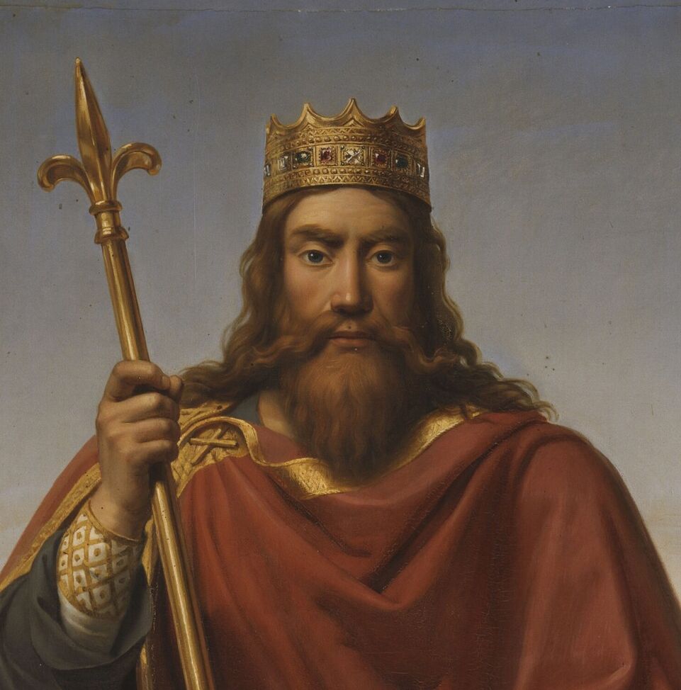
法蘭克人的起源、分支與漸進式民族生成
法蘭克人（Franks）並非單一血緣的民族，而是在公元三世紀羅馬帝國面臨邊境危機時，興起於萊茵河前線的日耳曼部落鬆散聯盟[1]。羅馬史料在公元 250 年代首次提及法蘭克人，將其描述為活動於萊茵河下游、頻繁襲擾羅馬高盧邊境的掠奪者[1]。其族名可能源自原始日耳曼語的 frankon，意為「兇猛」或「自由」[1]。另一種邊境社會學假說則指出，Fraecne 或 Fraence 可能是定居於羅馬境內的帝國屯墾兵（laeti）對萊茵河彼岸、經常越界掠奪的自由日耳曼部落的貶稱，隨後被這群日耳曼人採納為展現主體性的族群認同[3]。
在地理分佈上，早期法蘭克人居住在萊茵河與威悉河之間的沼澤低地與森林地帶（今荷蘭與德國西部）[1]。他們並非游牧民族，而是實行定居農業、依託村落氏族運作的社群[1]。在語言學上，他們屬於日耳曼語族的萊茵-威悉群（Rhine-Weser group）[4]。隨著時間推移，這個聯盟分化為兩個最核心的亞群：薩利安法蘭克人（Salian Franks）與里普阿里安法蘭克人（Ripuarian Franks）[1]。
薩利安法蘭克人主要定居於北海沿岸的低地，其名稱可能源於「鹽海」（Salt sea）或薩拉河（Saal/Yssel）[5]。在第四世紀中葉，薩利安人逐漸向西擴張， displaced 了原本居住在萊茵河口的巴達維人（Batavi）[7]。他們在語言上使用古荷蘭語（Old Dutch），成為現代荷蘭語的直系祖先[9]。
里普阿里安法蘭克人（亦稱萊茵法蘭克人）則是由布魯克特里（Bructeri）、滕克特里（Tencteri）、圖班特斯（Tubantes）、烏西佩特斯（Usipetes）及卡圖阿里（Chattuarii）等部落融合而成[5]。他們固守在萊茵河中游兩岸，以科隆（Cologne）為中心，向西延伸至阿登森林與碳林（Silva Carbonaria）[2]。在語言上，里普阿里安人使用高地日耳曼語支的中西部日耳曼語[9]。
早期的歷史敘事往往將法蘭克人描述為越過萊茵河、以暴力席捲高盧的入侵者，但現代考古學與歷史學研究（如弗蘭斯·泰烏斯 Frans Theuws 的工作）對此提出了修正[11]。事實上，高盧北部的蠻族化是一個長達數百年的漸進式移民過程[11]。隨著羅馬帝國晚期地方行政體系與軍事防線的逐步後撤，北高盧出現了人口流失與權力真空，法蘭克移民隨之填補了這些空間[11]。在此過程中，羅馬當局在稅收體系之外，以黃金貨幣直接向這些法蘭克領袖支付報酬，進一步強化了蠻族武裝在當地的存在[11]。
由於高盧本土的羅馬化居民（Gallo-Romans）在人口基數上佔有絕對優勢，且拉丁語作為行政與宗教的通用語（lingua franca）具有極高威望，這導致居於統治階層的法蘭克菁英在數代之內便放棄了古法蘭克語，轉而採用當地的通俗拉丁語（Romance language）[11]。這解釋了為何作為日耳曼蠻族國家的法蘭克王國，最終卻孕育出說羅曼語族語言的現代法國[4]。這種族群與語言的空間演變，至今仍清晰地體現在劃分歐洲羅曼語族與日耳曼語族的語言邊界線上[4]。
| 法蘭克主要分支 | 核心部落組成 | 地理源流與政治中心 | 語言學歸屬 |
| 薩利安法蘭克人 | 早期鬆散聯盟，後 displaced 巴達維人[1] | 圖爾奈、康布雷、北海沿岸低地[2] | 古荷蘭語（低地法蘭克語支）[9] |
| 里普阿里安法蘭克人 | 布魯克特里、滕克特里、圖班特斯、烏西佩特斯等[5] | 科隆、瑞爾皮希、萊茵河中游兩岸[10] | 中西部日耳曼語（高地日耳曼語支）[9] |
| 哈提人 (Hessians) | 哈提部落（Chatti，曾為羅馬帝國之勁敵）[4] | 威悉河上游、美因河谷、陶努斯高地[8] | 日耳曼語族萊茵-威悉群[4] |
文化、信仰與法權：日耳曼習慣法與基督信仰的交織
異教信仰、神聖王權與政治統合
在皈依天主教之前，法蘭克人浸淫在豐富的日耳曼多神教世界中[13]。他們崇拜的主神包括代表戰爭與智慧的奧丁（Wuodan/Woden/Odin，古羅馬文獻常將其等同於墨丘利）、雷神托爾（Donar）與戰神提爾（Zio/Mars）[13]。此外，他們也尊崇與土地肥饒、生命繁衍息息相關的豐饒之神弗雷（Yngvi/Freyr）[13]。法蘭克異教本質上是一種強調自然崇拜與實踐導向的宗教（orthopraxy），信徒透過在神聖林地、泉源或墓塚進行動物（甚至人命）獻祭，來與神明達成「互惠協約」（do ut des）[13]。
在這種文化中，法蘭克統治者的權威高度依賴「神聖王權」（Sacral kingship）與個人的「軍事感召力」（Charisma）[13]。墨洛溫王朝的統治合法性，直接建立在其自視為神祇後裔的神話敘事上[13]。第七世紀的《弗雷德加編年史》（Chronicle of Fredegar）記載，薩利安國王克洛迪奧的妻子在夏日海邊沐浴時，遭到海神尼普頓的怪獸「奎諾陶」（Quinotaur）襲擊並懷孕，進而誕下了墨洛溫王朝的 eponymous 奠基者墨洛維（Merovech）[16]。
學者卡洛·法拉里（Carlo Ferrari）指出，「奎諾陶」極可能是古日耳曼語中「等角馬獸」（Equinotaur）的 paleographical 筆誤，該傳說實際上保留了日耳曼民族對馬匹神聖祭祀與馬神崇拜的印記[19]。不論如何，這種海洋半神血統的建構，賦予了墨洛溫王室神聖的「幸運」（heilu），並以不剃髮的長髮形像作為其神聖特權的視覺符號[2]。
在北高盧向基督教過渡的過程中，這種深植於地方的異教文化展現出極強的韌性[14]。地方氏族中的專業祭司階層（如德魯伊等，在北高盧社會中兼管司法與青年教育）往往成為抵制新信仰的中堅力量[15]。為了克服這一障礙，基督教會採取了高度適應性的混合策略（syncretism）[15]。例如，教皇格里高利一世（Gregory I）曾指示傳教士不要摧毀異教廟宇，而應將其淨化並转化为教堂，以適應蠻族對神聖空間的既有認知[20]。
在貴族階層中，傳統的隨葬習俗（包括武器、戰馬與精美金銀器）並未因皈依基督教而立即消失，而是作為社會地位與家族財富的彰顯，在基督教化的墓地中繼續存在了數個世紀[14]。即使在名義上完成基督教化後，高盧南部的凱薩留斯（Caesarius of Arles）等主教在六世紀仍頻繁譴責民眾崇拜神木、清泉，或在節慶時穿戴動物面具進行異教儀式的行為[20]。
希爾德里克一世墓葬的雙重解讀
1653 年在比利時圖爾奈（Tournai）聖布里斯（Saint-Brice）教堂附近偶然出土的希爾德里克一世（Childeric I）墓葬，是古典晚期日耳曼蠻族文化與羅馬帝國文明相互滲透的集大成體現[21]。這座極其奢華的墓葬包含：
- 日耳曼軍事貴族與異教祭祀儀式：隨葬品包括一柄雙刃長劍（Spatha）與一把單刃戰刀（Sax），皆裝飾有極其精美的黃金與石榴石透雕（cloisonné）工藝[21]。墓葬周圍發現了數個戰馬殉葬坑，這是典型的日耳曼北方異教葬俗，旨在保障國王在死後世界中依然擁有戰力與神聖權威[14]。
- 羅馬帝國的政治威權象徵：墓中出土了一枚刻有「CHILDERICI REGIS」（希爾德里克國王）字樣的黃金印章戒，這表明希爾德里克雖然是不剃髮的蠻族領袖，卻使用羅馬式的文書行政工具來發布詔令[21]。此外，墓中還包含一件 Late Roman 扣針（fibula，常被誤讀為筆針）與大量鑄有拜占庭皇帝芝諾（Zeno）頭像的黃金貨幣[21]。這證明其權威在很大程度上依賴於羅馬帝國體制所賦予的合法性與經濟補貼[26]。
- 黃金蟬/蜜蜂飾件與拿破崙的歷史嫁接：墓中發現了約 300 個帶有石榴石嵌飾的黃金飛蟲飾件，早期學者將其解讀為「蜜蜂」或「蟬」[23]。這些飾件原本縫製在國王的紫色袍服上[21]。1804 年，拿破崙一世在籌備加冕典禮時，為尋求一種超越波旁王朝百合花飾（fleur-de-lys）的歷史圖騰，特意選擇了希爾德里克墓葬中的金蜜蜂作為法蘭西第一帝國的徽章[23]。拿破崙借此將自己的統治與西歐最古老的王室血脈相連，以此構建其帝國的正統性與延續性[23]。
《薩利安法典》的法理編纂與後世歷史誤讀
公元 507 至 511 年間，克洛維一世在征服高盧北部的基礎上，主持編纂了著名的《薩利安法典》（Lex Salica）[27]。這部法典採用拉丁文撰寫，並保留了古法蘭克語的 Malberg 註釋，作為其法律概念的口頭對照[27]。
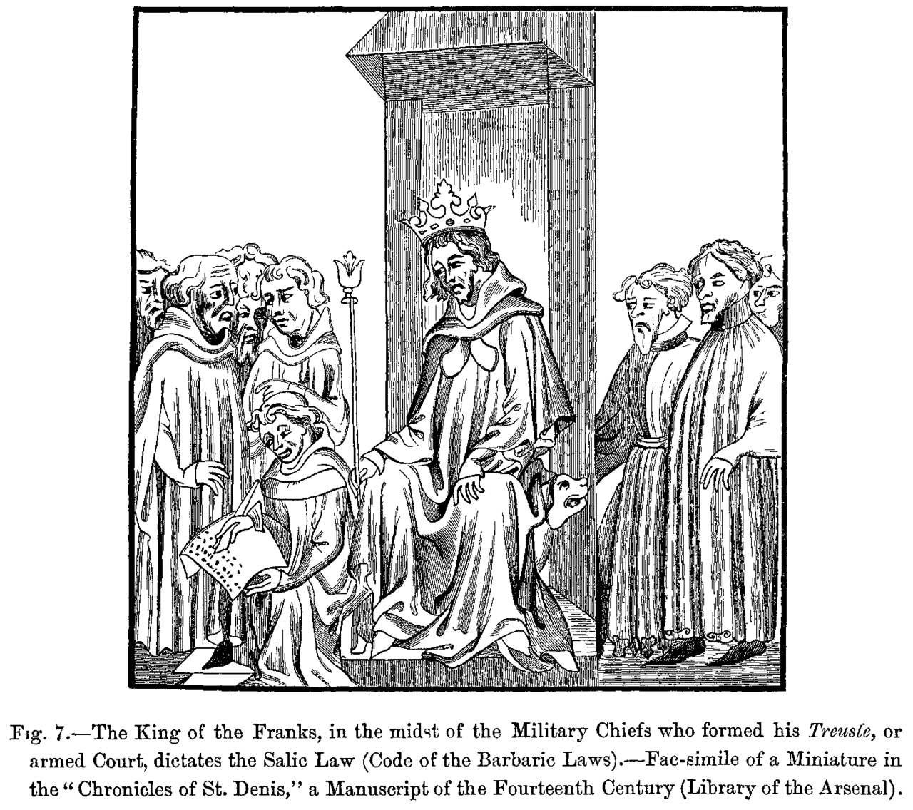
從法理學角度看，《薩利安法典》屬於「屬人法」（ius personale），即其法律效力僅適用於薩利安法蘭克人，而高盧-羅馬居民在民事法律上依然遵循羅馬成文法（Roman code）[2]。法典的核心機制是建立一套嚴密的貨幣補償體系，即「贖罪金」（Wergild），旨在通過可預期的財政賠償來替代極具破壞性的氏族血親復仇（Blood feud），從而將暴力衝突納入國家司法的調解軌道中[30]。
| 受害者階級與屬性 | 贖罪金 (Wergild) 金額 | 社會與政治意涵 |
| 自由法蘭克男子 (基本額) | 200 蘇 (Shillings)30 | 作為王國中堅力量的標準「自由民」身分價值[30]。 |
| 國王隨從武士 / 廷臣 (Antrustio) | 600 蘇（甚至更多）[32] | 反映墨洛溫王權對核心軍事菁英的制度性保護[31]。 |
| 天主教神職人員 | 依神職等級（最高可達 600 蘇以上）[30] | 體現法蘭克王國與天主教會結盟後的法權傾斜[32]。 |
| 高盧-羅馬普通臣民 | 100 蘇 (通常為法蘭克人的一半)32 | 揭示了征服者與被征服者之間不平等的階級結構[32]。 |
法典第[59] 條「關於繼承」（De allodiis）規定，女性不得繼承家族世代相傳的「薩利安土地」（terra Salica），該土地必須由男性的兄弟全權繼承[27]。這本是一條旨在防止家族開墾份地因女子出嫁而流失至外族的普通民事習慣法，且早在墨洛溫國王希爾佩里克一世時期（約 570 年）便被修改為「在無子嗣的情況下允許女兒繼承土地」[27]。
然而，到了十四世紀Capetian王朝絕嗣的王位繼承危機中（1316 年與 1328 年），為了排斥英王愛德華三世（通過其母法蘭西的伊莎貝拉）對法國王位的宣稱，法國法學家重新挖掘出這部被遺忘數百年的習慣法[27]。
1413 年，法國人文主義者、皇家秘書讓·德·蒙特勒伊（Jean de Montreuil）在其 polemical 著作中，將此土地條款強行解釋為「女性及其後裔永遠不得繼承法蘭西王國之王冠」[29]。隨後，這一政治重塑在 1464 年的印刷文獻《因多人之故》（Pour ce que plusieurs，即《薩利安法，法蘭克人第一法》）中被廣泛傳播[29]。這種刻意將一條蠻族農村習慣法神聖化為「王國基本法」的做法，成功為瓦盧瓦王朝（Valois）維護了統治正統，但也將英法兩國拖入了長達百年的慘烈戰爭中[28]。
羅馬-法蘭克共生體系與帝國權威的轉移
在西羅馬帝國崩潰的歷史浪潮中，法蘭克人並非地中海文明的外部摧毀者，而是羅馬邊疆防禦體系內部的繼承者[1]。在帝國晚期，羅馬軍隊在北高盧的建制逐漸退化為一種由蠻族移民構成的「邊防防禦機制」[1]。
Laeti 與 Foederati：防線內外的軍事契约
在這一體系中，羅馬當局主要通過兩種法律形式來吸納蠻族人口：
- 屯墾兵 (Laeti)：被安置在帝國境內、授予土地並具有世襲服役義務的蠻族群體[3]。在北高盧（如蘭斯、蘇瓦松、雷恩等地），羅馬設有專門的「屯墾兵與同盟者長官」（Prefect of the laeti and gentiles）來統轄這些部隊[3]。考古發掘表明，這群人在經濟上依附於當地的羅馬地主（possessores），其青年在 15 歲時便會被徵召入伍[3]。在語言學上，laeti 一詞甚至產生了有趣的雙關：自詡自由的萊茵河外法蘭克人將其與古德語中的 laz（意為懶散、愚蠢、受束縛）聯繫在一起，嘲諷其為帝國效力；而羅馬人則將其與拉丁語的 laetus（意為高興、感恩）諧音，戲謔其「甘願受帝國驅使並引以為樂」[3]。
- 同盟者 (Foederati)：保留了完整的部落自治權與酋長統治，通過與羅馬皇帝簽署正式契約，在邊境線外側（或特定邊境區域）為帝國提供防禦屏障的蠻族實體[1]。358 年，朱利安（Julian the Apostate）允許薩利安法蘭克人以同盟者身分定居於托克桑德里亞，其核心任務便是為帝國防守萊茵河防線，並為羅馬正規軍提供精銳兵源[1]。這種雙重角色使法蘭克領袖在保留其傳統部落權威的同時，得以深度學習羅馬的軍事技術、後勤機制與法理邏輯[1]。
埃吉迪烏斯-希爾德里克聯盟與蘇瓦松政治實體
公元五世紀中葉，當西羅馬帝國中央權威在拉文納日益式微時，北高盧的實際統治權落入了羅馬高盧軍事長官埃吉迪烏斯（Aegidius）手中[26]。461 年，羅馬皇帝馬約里安（Majorian）被權臣里西默（Ricimer）謀殺，埃吉迪烏斯拒絕承認意大利新傀儡皇帝的合法性，導致他治下的北高盧領土（盧格敦高盧第四省等地）與帝國中央徹底切斷聯繫[26]。
面對南方的西哥特王國與北方的其他蠻族威脅，埃吉迪烏斯選擇與薩利安法蘭克國王希爾德里克一世結成緊密的軍事政治同盟[26]。463 年，希爾德里克率領法蘭克同盟部隊，協助埃吉迪烏斯在奧爾良戰役中重創了向北擴張的西哥特人[26]。
歷史文獻（如杜爾的格列高利）記載，希爾德里克曾一度因行為放蕩遭到法蘭克人驅逐，在圖林根（Thuringia）流亡了八年，在此期間法蘭克人甚至擁立埃吉迪烏斯為他們的共同領袖[40]。這一充滿傳奇色彩的記載，在互文層面上證實了當時法蘭克王權與羅馬晚期軍事長官之間高度融合、互為表裏的權力網絡[26]。
當埃吉迪烏斯於 465 年遇刺身亡後，其部將保羅（Paulus of Angers）與希爾德里克繼續合作，共同抵抗盧瓦爾河谷的撒克遜海盜（由厄德瓦卡 Eadwacer 率領）[26]。隨後，埃吉迪烏斯之子錫亞格里烏斯（Syagrius）繼承了這一割據政權[2]。這個政權在歷史上被非正式地稱為「蘇瓦松王國」（Domain of Syagrius），雖然其統治者在名義上宣稱效忠羅馬，並在外交與貿易上與不列顛、阿摩里卡（Armorica，即布列塔尼）保持聯繫，但在地緣政治實質上，它已退化為一個被日耳曼蠻族包圍的孤立羅馬軍事割據點[39]。
| 階級 / 身分性質 | 羅馬帝國晚期身分 | 法蘭克化轉型路徑 | 對國家建構之歷史貢獻 |
| 蠻族出身的羅馬軍官 (Brevet Officers) | 獲得羅馬公民權，融入帝國菁英網絡，擔任高級軍職[3]。 | 逐步轉化為割據一方的法蘭克地方軍事領袖（Reguli）[42]。 | 引入羅馬式的法理行政與軍事指揮技術[44]。 |
| 屯墾兵 (Laeti / Dediticii) | 世代具有服役義務的軍事農墾群體，與羅馬住民法理隔離[3]。 | 成為法蘭克軍隊的基層重裝步兵源流[3]。 | 提供具備羅馬組織與裝備基礎的常備武裝[1]。 |
| 帝國同盟者 (Foederati) | 邊境之外的世襲自治部落，受津貼並防衛邊境[1]。 | 直接入主高盧內陸，轉變為封建軍事貴族[4]。 | 構成早期墨洛溫王朝的核心軍事力量[18]。 |
| 地方土地領主 (Possessores) | 羅馬地方貴族，負責徵收 annona 稅收[3]。 | 與法蘭克菁英階層通過土地賜予、政治聯姻實現階級融合[44]。 | 為新政權提供官僚機器運作技術與地方行政網絡[31]。 |
鐵血與神授：克洛維一世的霸權崛起與高盧地緣格局的重塑
公元 481 年，15 歲的克洛維一世繼位為圖爾奈薩利安法蘭克人的國王[1]。此時的高盧正處於群雄割據的地緣政治亂局中：
[北高盧邊境]
(薩利安法蘭克各部割據)
│
公元486年 ───┼───► 蘇瓦松戰役 (擊敗錫亞格里烏斯)
│
▼
[高盧中北部]
(兼併羅馬行政體系)
│
公元496年 ───┼───► 托爾比亞克戰役 (擊退阿勒曼尼人)
│
▼
[蘭斯聖誕加冕]
(皈依天主教/正統確立)
│
公元507年 ───┼───► 武伊勒戰役 (擊殺阿拉里克二世)
│
▼
[高盧西南部]
(阿奎丹納入版圖/拜占庭承認)
蘇瓦松戰役與北高盧的兼併
克洛維崛起的第一步，是消滅夾在薩利安法蘭克與盧瓦爾河之間的羅馬殘餘勢力——錫亞格里烏斯政權[43]。公元 486 年，克洛維聯合其薩利安同盟者康布雷國王拉格納哈爾（Ragnachar），發動了蘇瓦松戰役（Battle of Soissons）[43]。
戰役以法蘭克軍隊的壓倒性勝利告終[48]。錫亞格里烏斯戰敗南逃至西哥特王國首都圖盧茲，但在克洛維發出戰爭威脅後，西哥特國王阿拉里克二世選擇妥協，將其引渡給法蘭克人處決[39]。
此戰使法蘭克王國的領土向南推移至盧瓦爾河畔，領土面積幾乎增加了一倍[43]。克洛維隨後將宮廷遷至蘇瓦松，接收了北高盧完整的羅馬行政與財政遺產，完成了從邊疆蛮族酋長向區域君主的身份轉變[1]。
托爾比亞克戰役與政治皈依
隨著版圖擴張，法蘭克人與東部萊茵河畔強悍的阿勒曼尼人（Alamanni）產生了直接衝突[2]。公元 496 年（亦有學者認為是 506 年），阿勒曼尼人越過萊茵河，大舉進攻里普阿里安法蘭克人[5]。里普阿里安國王西格貝爾特（Sigobert the Lame）在抵抗中膝部受重傷，遂向薩利安盟友克洛維求援[5]。
兩軍在托爾比亞克（Tolbiac，今德國 Zülpich）展開決戰[5]。戰鬥初期，法蘭克軍隊在阿勒曼尼人的猛烈衝擊下死傷慘重，陣腳大亂[38]。此時，信奉天主教的勃艮第公主、克洛維的妻子克洛蒂爾德（Clotilda）長期的布道產生了關鍵性的心理暗示作用[33]。克洛維在絕境中向天空祈禱，宣誓若克洛蒂爾德的神能賜予他勝利，他將放棄異教並接受洗禮[38]。隨後，阿勒曼尼國王在陣前中流矢身亡，失去統帥的阿勒曼尼軍隊隨即崩潰，法蘭克人反敗為勝[38]。
這場戰役不僅解除了法蘭克人的東部威脅，更促成了公元 496 年聖誕節那場改變歐洲歷史軌跡的洗禮[33]。克洛維帶領三千名隨從武士，在蘭斯主教雷米吉烏斯（Remigius）的主持下，正式皈依天主教[33]。
在當時，西歐各日耳曼王國（如東哥特、西哥特、勃艮第、萬達爾等）皆皈依了阿里烏教派（Arianism），該教派因否認三位一體而在法理上被高盧-羅馬天主教會視為異端[33]。克洛維直接皈依天主教，使他瞬間獲得了整個北高盧及南部西哥特、勃艮第統治下、佔人口絕對多數的天主教 Gallo-Roman 貴族與主教網絡的熱烈擁戴[33]。教門階層（其家族多控制著地方大主教與主教職位）將克洛維視為「新君士坦丁」，為他的領土擴張提供了極強的道德合法性與龐大的地方行政支持[33]。
武伊勒戰役與高盧霸權的轉移
皈依天主教後，克洛維獲得了對南方阿里烏派西哥特王國發動「聖戰」的法理借口[33]。兩國此前已在盧瓦爾河沿線形成長期對峙，且在勃艮第王國內戰中支持不同的派系，地緣衝突已不可調和[50]。
公元 507 年春，克洛維動員了龐大的法蘭克聯軍（包括其薩利安本部、里普阿里安部隊以及阿摩里卡盟軍），揮師南下[50]。當法蘭克軍隊抵達維埃納河（Vienne）畔時，因春季暴雨導致河水暴漲，大軍無法渡河[49]。根據杜爾的格列高利的記述，此時一隻體型巨大的母鹿在上帝的指引下，當著法蘭克大軍的面躍入河中，踏著一處隱秘的沙洲渡河，為士兵們指明了涉水渡河的通路[49]。當大軍推進至普瓦捷（Poitiers）附近時，克洛維的帳篷上方出現了一道自聖希拉里（St. Hilary）教堂塔樓升起的巨大火球，象徵著天主教聖徒對其軍隊的神聖庇護[49]。
兩軍最終在普瓦捷西北十英里的武伊勒（Vouillé）原野展開決戰[52]。戰鬥中，法蘭克人大量使用了極具穿透力的 angon 投擲槍，在近身肉搏中迅速瓦解了西哥特人的防線[50]。戰役的最關鍵時刻，克洛維與西哥特國王阿拉里克二世展開了直接單挑，克洛維親手擊殺了阿拉里克二世，並在兩名西哥特長矛武士的夾擊下奇蹟般生還[50]。西哥特軍隊隨即全線潰敗，法蘭克人長驅直入，兼併了圖盧茲、波爾多在內的整個阿奎丹富庶地區，將西哥特勢力徹底壓制在比利牛斯山以南的伊比利亞半島[50]。
這一決定性的勝利重塑了西歐政治格局：
- 東羅馬帝國的戰略承認：為了拉攏法蘭克人以抗衡控制意大利的東哥特國王狄奧多里克，拜占庭皇帝阿納斯塔修斯一世遣使前往圖爾（Tours），向克洛維授予了執政官徽章、紫色袍服與王冠[33]。克洛維在聖馬丁大教堂舉行了隆重的羅馬式 Adventus 仪式，這在法理上宣告了法蘭克政權已不再是單純的蠻族武力割據，而是獲得了羅馬帝國正統體系認可的「合法繼承者」[33]。
對內割據勢力的血腥肅清
在贏得外戰輝煌勝利的同時，克洛維採取了極其冷酷且周密的陰謀手段，對法蘭克內部的其他同盟王室進行了肉體消滅，以建立絕對的中央集權[12]：
- 謀殺西格貝爾特父子：科隆的里普阿里安國王「跛子」西格貝爾特曾多次出兵協助克洛維，其子克洛德里克（Chlodoric）亦曾隨克洛維遠征西哥特[12]。克洛維暗中遣使教唆克洛德里克，宣稱：「你父親老了，腿又有殘疾，如果你殺了他，你就能繼承王位，我將與你結盟。」[12] 克洛德里克遂在父親於富爾達（Fulda）附近的森林散步時，派遣刺客將其暗殺[12]。
事後，克洛德里克向克洛維報捷，並主動提出讓克洛維派人前來挑選科隆寶庫中的精美器物作為盟約象徵[12]。克洛維派出的使者在評估寶藏時，要求克洛德里克「將手臂盡可能深地插入金幣堆中」以彰顯財富[12]。當克洛德里克俯身、手臂深陷於黃金中時，使者突然從背後揮舞戰斧將其擊殺[12]。
隨後，克洛維親臨科隆，召集里普阿里安法蘭克人民，當眾宣稱：「克洛德里克弒殺其父，而天理昭彰，他自己也在清點寶藏時死於非命。我絕不容忍弒父的罪行，但我願意為你們提供庇護。」[12] 里普阿里安人隨即高呼萬歲，用盾牌將克洛維高高舉起，擁立其為共同的國王[12]。 * 消滅拉格納哈爾與查拉里克：對於曾在蘇瓦松並肩作戰的康布雷國王拉格納哈爾，克洛維通過向其臣屬贈送假黃金（鍍金青銅）使其倒戈，拉格納哈爾及其兄弟隨後被叛軍擒獲，並被克洛維親手用戰斧劈殺[2]。對於在蘇瓦松戰役中作壁上觀的薩利安小國王查拉里克，克洛維將其父子強行剃度送入修道院，隨後亦將其祕密處決[12]。
杜爾的格列高利記錄，克洛維在肅清了所有血親對手後，曾在一次宮廷宴會上假意哀嘆自己成了一個「身邊再無親人的孤家寡人」[12]。然而，他這番話並非出自悲傷，而是為了誘使可能隱匿的墨洛溫王室成員露面，以便斬草除根[12]。通過這種極端的鐵血手段，克洛維終結了法蘭克長達數世紀的分裂狀態，首次將全體法蘭克人置於墨洛溫王朝的統一集權統治之下[41]。
| 戰役 / 地緣衝突事件 | 時間 (約) | 核心對手與同盟關係 | 地緣與法理機制 | 歷史性地緣政治結果 |
| 蘇瓦松戰役 (Soissons) | 486 年[48] | 對手：錫亞格里烏斯 (Roman ruler)39 同盟：拉格納哈爾 (康布雷)43 | 終結高盧中北部的羅馬政治實體，兼併塞納河流域[39]。 | 法蘭克王國領土擴大一倍，直接與南部西哥特王國接壤[43]。 |
| 托爾比亞克戰役 (Tolbiac) | 496 年[38] | 對手：阿勒曼尼人聯盟[38] 同盟：里普阿里安法蘭克部隊[5] | 遏制日耳曼東部部落的西進，激發克洛維對上帝的戰誓[5]。 | 確立對萊茵河中游的控制權，促成克洛維皈依羅馬天主教[33]。 |
| 武伊勒戰役 (Vouillé) | 507 年[53] | 對手：西哥特王國 (阿拉里克二世)53 同盟：阿摩里卡 (布列塔尼) 部隊[50] | 天主教聖戰對抗阿里烏派異端；神蹟引導涉水渡河[33]。 | 擊殺阿拉里克二世，兼併阿奎丹；獲得拜占庭皇帝授予執政官頭銜[52]。 |
| 萊茵/薩利安王室清洗 | 507-509 年[12] | 對手：西格貝爾特父子、拉格納哈爾、查拉里克等[12] | 利用弒父陰謀、假金賄賂與肉體消滅剪除同族對手[12]。 | 消除內部分裂與割據勢力，實現全體法蘭克人政治上的大一統[41]。 |
結論：歐洲黎明期政治格局的奠定
法蘭克人的民族生成史與克洛維一世的崛起，構成了西方文明由古典晚期跨入中世紀早期的關鍵轉折點[1]。法蘭克人並未像其他日耳曼蠻族般，在征服高盧後與本土羅馬文化陷入難以調和的撕裂[1]。相反地，他們在 Laeti 與 Foederati 的歷史框架下，與羅馬文明進行了長達兩個多世紀的深度共生[1]。
克洛維一世以極其冷酷且具備高度前瞻性的政治智慧，完成了三大歷史性整合：日耳曼蠻族無與倫比的軍事威能、羅馬帝國遺留的行政與法律正統性，以及羅馬天主教普世性的精神治理網絡[33]。他對天主教的政治皈依，使法蘭克王國成為西方世界中第一個信奉正統基督教的蠻族霸權，為其贏得了北高盧及南高盧羅馬菁英階層的全面支持[33]。
儘管克洛維死後，法蘭克王國因日耳曼傳統的分割繼承制（partible inheritance）而陷入長期的內戰與分裂[50]，但他所奠定的政治疆界、法權秩序（如《薩利安法典》）以及王權與天主教會的戰略同盟，實質上劃定了中世紀歐洲的文明核心版圖[28]。這場蠻族崛起的歷史大戲，不僅終結了羅馬在高盧的直接統治，更在廢墟中孕育出法蘭西國家與西歐封建社會的最初雛形，深刻地指引了歐洲隨後一千年的歷史走向[31]。
引用的著作
- Origins of the Franks (3rd–5th Century) - Dr. Tashko
- Franks, The | Catholic Answers Encyclopedia
- Chapter 14 Laeti and Gentiles: Military Germanic Settlements in Roman Gaul in - Brill
- Frank | People, Definition, & Maps | Britannica
- Kingdoms of Western Europe - Franks - The History Files
- Salian dynasty and Salian franks : r/AskHistorians - Reddit
- Ripuarian | people - Britannica
- Salian | people - Britannica
- Who were the original Franks, the Salians or Ripuarians? : r/AskHistorians - Reddit
- Ripuarian Franks - Wikipedia
- If the Franks were a Germanic people, why do the French speak a Romance language? : r/AskHistorians - Reddit
- Sigobert the Lame - Wikipedia
- Frankish paganism - Wikipedia
- Frankish paganism - Grokipedia
- Christian Success or Pagan Assimilation? The Christianization of the Germanic-Speaking Tribes in the Late Roman Empire - Georgia Southern Commons
- Quinotaur - Wikipedia
- Quinotaur - Grokipedia
- MEROVINGIANS - Foundation for Medieval Genealogy
- Quinotaur, Minotaur, Equinotaur: Some Reflections on a Passage from Fredegar's Chronicle - Trivent Publishing
- Paganism - Iowa State University
- Childeric Finds - Early Medieval Archaeology
- A note on Childeric's Bees - Sir Thomas Browne
- Childeric I - Wikipedia
- Treasures from the tomb of Childeric I - Art and Architecture of the Middle Ages
- The Treasure of Childeric I - Teacher Curator
- Childeric - Livius.org
- Salic law - Wikipedia
- Salic law - Grokipedia
- The Salic Law, French Queenship and the Defence of Women in the Late Middle Ages
- Weregild - Wikipedia
- The Franks: Power, Warfare, and Society in Early Medieval Europe - Weapons of Choice
- Composition | Germanic Tribes, Tribal Law, Customary Law - Britannica
- Baptism of Clovis | Religion and Philosophy | Research Starters - EBSCO
- Wergild | Compensation, Feudalism, Retaliation - Britannica
- Salic Law and the Exclusion of Women from the Crown of France
- The King's Two Daughters: Isabelle of France and the University of Paris, Fille du Roy - Stanford Humanities Center
- Mediterranean Connections: The Frankish Kingdoms and the Roman Empire (476–756)
- The Baptism of Clovis—1,500 Years of Catholicism in France — Watchtower ONLINE LIBRARY
- Kingdom of Soissons - Wikipedia
- Domain of Syagrius (Barbarians at the Gates) - Alternative History | Fandom, [https://althistory.fandom.com/wiki/Domain](https://althistory.fandom.com/wiki/Domain)_of_Syagrius_(Barbarians_at_the_Gates)
- Clovis I (466–511) – First King of the Franks and Founder of Merovingian France
- The Frankish Empire - Discover France
- Kingdoms of Gaul - Soissons - The History Files
- Why did the pagan Frankish King Clovis adopt Catholicism in 496? - Quora
- Roman Christmas Days VIII: 25 December 496 – The Baptism of Clovis
- Franks and the Holy Roman Empire | History | Research Starters - EBSCO
- conversion politics: motivations behind clovis' baptism and the - Cardinal Scholar
- Battle of Soissons,486 AD - alb5406163 album-online.com
- The Deeds of Clovis as Related by Gregory of Tours – Wendell Hunnicutt - UTA
- The Battle of Vouillé and the Map of Europe - YouTube
- Siegbert (Seigebert,Sigibert,Sigobert) der Lahme,the Lame "DE MANKE" von Köln 460-509 (± 470-± 509) » Stamboom Homs » - Genealogie Online
- The Battle of Vouillé (507) - Dr. Tashko
- Battle of Vouillé | Military History and Science | Research Starters - EBSCO
- The Frankish dominions in Merovingian times (486-768). - World4.eu
從戴克里先到君士坦丁：土地、稅制與兵役改革下的帝國控制與中世紀封建農奴的誕生
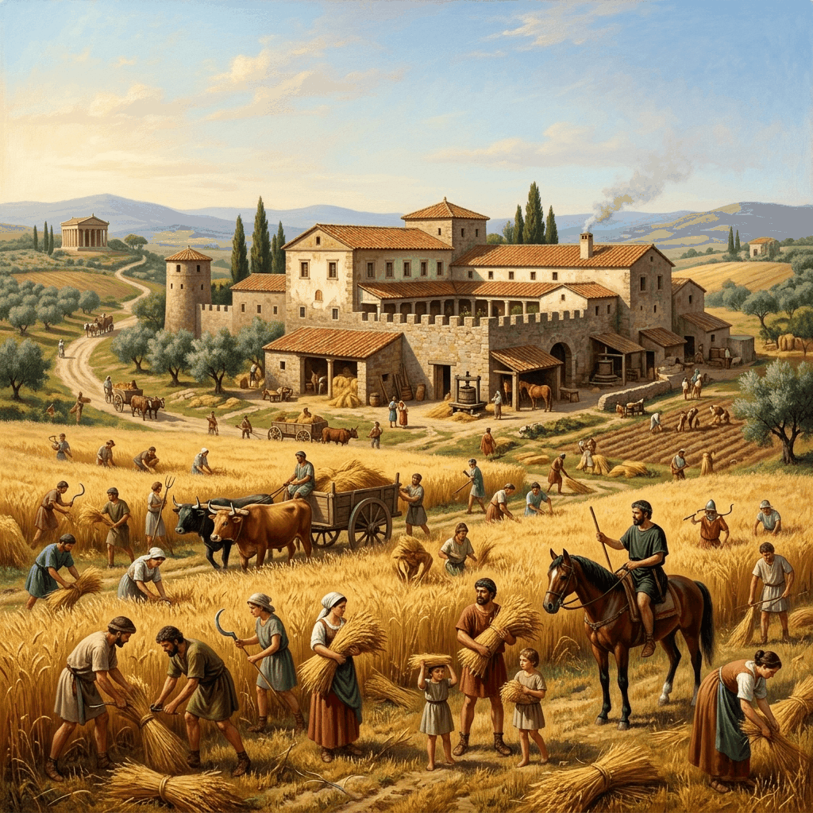
帝國晚期的多重危機與專制「君主制」的憲政重塑
自公元二世紀末以來，羅馬帝國逐漸步入一個系統性瓦解的深淵，歷史學界將公元235至284年稱為「三世紀危機」。在這一時期，帝國面臨著惡性通貨膨脹、貨幣體系徹底崩潰、農業生產力銳減以及中央財政崩潰的多重打擊。地方軍事割據與外敵頻繁入侵，不僅破壞了傳統的長途貿易網絡，更撕裂了帝國賴以生存的稅收網絡。公元284年戴克里先（Diocletian）的登基，標誌著羅馬帝國從元首制（Principate）過渡到赤裸裸的專制君主制（Dominate）。在德意志歷史學家特奧多爾·蒙森（Theodor Mommsen）的憲政法律分析中，君主制代表了帝國憲政基礎的根本斷裂，皇帝不再是元老院授權下的「第一公民」，而是超越一切體制的「活的法律」（Nomos empsychos）。儘管後世學者如約亨·布萊肯（Jochen Bleicken）和馬爾凱塔·梅盧諾娃（Markéta Melounová）指出，這一憲政轉型在司法實踐中更多是前期專制傾向的漸進演變，但無疑在戴克里先手中，帝國權力被重塑為高度中央集權的官僚君主專制。
為了維持這座龐大帝國機器的運作，戴克里先與其繼任者君士坦丁大帝（Constantine the Great）展開了全面而深刻的制度重建。在行政結構上，戴克里先實施了「四帝共治制」（Tetrarchy），將帝國劃分為東西兩大行政區，每區由一位奧古斯都（Augustus）與一位凱撒（Caesar）共同治理，並在靠近邊境的尼科美迪亞、米蘭、安條克和特里爾建立新的行政首都。這一體制雖然在戴克里先退位後迅速瓦解，並由君士坦丁重建的單一君主繼承制替代，但其奠定的行政官僚體系卻留存了下來。帝國境內的行省數量從50個翻倍增加至近百個，旨在削弱行省總督的權力基礎，並將這些行省整合為十二個大「管區」（Dioceses），每個管區由代理官（Vicarius）進行司法、財政與監察。
更為關鍵的是，地方的軍事權力與民政權力被徹底剝離。行省總督被剝奪了軍事指揮權，僅保留司法與財政稅收職能，而軍事指揮權則收歸於專職的軍事統帥（Duces）。這種官僚化的權力分割旨在遏制地方割據，但同時也創造了羅馬歷史上最為臃腫、行政成本最為高昂的官僚體系。決策權向皇帝個人及其專門化的御前會議（Consilia sacra）集中，進一步壓縮了傳統元老院與地方市鎮議會的自主空間，使國家機器呈現出前所未有的威權色彩。
在法源依據方面，晚期羅馬帝國的立法權徹底由皇帝敕令（Constitutiones principum）所壟斷，主要形式包括通告（Edicts）、給下屬官員的指令（Mandates）、書面答覆（Rescripts）以及司法判決（Decrees）。這一時期的所有改革法令，最終被系統性地整理、編纂，體現於公元438年頒布的《狄奧多西法典》（Codex Theodosianus）中。該法典由東部皇帝狄奧多西二世與西部皇帝瓦倫提尼安三世授權，由安提阿的法學家安條克·庫佐恩（Antiochus Chuzon）帶領的二十二位學者小組歷時九年完成，旨在消除法律條文的矛盾，並對異教、異端進行法律壓制，確立尼西亞基督教的正統地位。這些法律文書條文繁複、語氣嚴苛，充分反映出中央政權試圖通過強力行政命令來凍結社會流動、鎖定財政資源的極權傾向。
稅制革命：「人頭-土地稅」雙軌制的理性化設計與實踐
帝國官僚機構的擴張、軍隊人數的增加以及大規模公共建設的開展，導致帝國的財政開支急遽攀升。然而，在貨幣貶值與市場信用破產的背景下，傳統以貨幣租稅為主的徵收模式已無法滿足國家運作的需求。在古典時代早期，帝國的農業稅主要基於什一稅（Tithe），即國家徵收產出的10%，剩餘的90%由農民保留，這種模式極易受到天災和欠收的干擾。同時，由於水果、蔬菜等非穀物作物的收穫期分散，極難進行現場監管，這促使羅馬財政部門逐漸轉向按耕地面積估稅的模式。為了建立穩定、可預測且能直接獲取實物資源的財政系統，戴克里先推行了人類財政史上著名的「人頭-土地稅雙軌制」（Capitatio-Iugatio）。
該稅制的核心在於將實體財產（主要是土地）與勞動力（人頭及牲口）進行有機結合與抽象化折算。在實務操作中，帝國財政官員將全境的農田按照土地類型、土壤肥沃度以及產出預期，折算為標準的財政單位「土地單位」（Iugum）。同時，將耕作這些土地的勞動人口（包括農民、家屬與牲畜）折算為「人頭單位」（Caput）。這一制度的運作方式極為細緻，其法源依據和具體操作流程在多個歷史文獻中均有記載。例如，公元297年頒布的《埃及總督奧普塔圖斯敕令》（Edict of Optatus）中，詳細規範了每阿魯拉（Aroura）土地的納稅標準以及每名農村人口的納稅責任，要求地方官員與催稅員嚴格執行，違者將面臨死刑等嚴厲懲罰。
根據敘利亞-羅馬法典（Syro-Roman Lawbook）等史料的記載，不同品質的土地與作物的折算比率存在顯著差異，這構成了稅率計算的數學基礎：
1 Iugum (土地單位) 的折算標準：
耕地：20 猶格 (一等耕地) = 40 猶格 (二等耕地) = 60 猶格 (三等耕地)
園藝與樹木：5 猶格 (葡萄園) = 220 棵 (成熟橄欖樹) = 450 棵 (山地橄欖樹)
通過這種將多樣化的自然資產轉化為標準會計單位的手段，羅馬政府得以規避物價波動與區域差異帶來的核算困難。同時，全國財產評估以五年（後自公元312年起調整為每十五年）為一周期進行重新申報，這一評估周期被稱為「告諭期」（Indictio），成為晚期羅馬財政調控的核心基石。
在這種近乎窒息的剛性稅制下，帝國晚期社會的逃稅與欺詐現象層出不窮，特別是在富裕精英階層之中。近年來被重新解讀的二世紀與三世紀紙草文獻（如埃及奧克西林庫斯發現的 Petaus 審判案卷，以及反映猶太行省和阿拉伯行省動盪前夕的 P. Cotton 紙草文獻）便提供了極具代表性的微觀證據：富裕地主與地方權貴常通過偽造實物稅收收據、策劃虛假的奴隸釋放契約以規避高達 5% 的解放奴隸稅（Vicesima libertatis）或 10% 的奴隸交易稅。這種普遍存在的制度性漏洞與權貴貪腐，使得帝國財政赤字日益惡化，最終迫使戴克里先不得不取消地方包稅人的特權，轉而建立起一套更為直接且剛性的中央官僚體系。
然而，這套系統缺乏應對天災人禍的彈性，在遭遇荒年、瘟疫與蠻族入侵時，無力負擔的底層農民往往拋荒流亡，導致敘利亞與埃及等行省的納稅人對羅馬統治產生強烈離心力，甚至在七世紀阿拉伯擴張時，因阿拉伯統治者提供更低的稅率而選擇主動臣服，這深刻揭示了剛性財政改革的政治後果。
| 稅目名稱 (拉丁語/英文) | 徵收對象與計算單位 | 徵收機制與徵收形式 | 史料依據與歷史脈絡 |
| 土地稅 (Iugatio) | 耕地、葡萄園與橄欖林，以「土地單位」（Iugum）計 | 按土壤肥沃度與作物折算比率，主要繳納實物糧食（Annona） | 敘利亞-羅馬法典、埃及總督奧普塔圖斯敕令 |
| 人頭稅 (Capitatio) | 農業人口與家畜，以「人頭單位」（Caput）計 | 由地主或村社連帶擔保，主要徵收實物或折抵貨幣 | 《狄奧多西法典》第十一卷、埃及稅務紙草 |
| 五年工商稅 (Collatio lustralis) | 都市商賈、手工藝人、高利貸者與工業者 | 每五年徵收一次的特重稅目，必須以黃金或白銀繳納 | 君士坦丁一世改革敕令、查士丁尼法典第十一卷 |
| 新兵代役金 (Aurum tironicum) | 負有提供兵源義務的大地主與莊園主 | 地主可繳納定額黃金以代替提供實體新兵，用於招募蠻族僱傭兵 | 瓦倫提尼安二世法案（公元386年）、埃及徵募紙草 |
| 關稅與過路稅 (Portorium) | 通過港口、橋樑、關卡與城門的交易商品 | 按商品估價值的 2% 至 3% 徵收實物或貨幣 | 帝國早期習慣法延續、埃及科普托斯關稅單 |
| 遺產稅與解放奴隸稅 | 羅馬公民（遺產）及釋放奴隸的主人 | 遺產稅為 5%；解放奴隸稅為奴隸評估價值的 5% | 古典時期奧古斯都立法延續、奧克西林庫斯紙草 |
土地改革與「隸農制」的法律演變：從自由契約到土地附籍
在羅馬共和國及帝國早期，隸農（Colonus）在本質上是依據羅馬私法體系運作的自由佃農。他們通過與地主自願簽訂《租佃契約》（Locatio conductio rei），在約定的期限內（通常為五年）承租特定土地，並以貨幣或部分實物作物作為地租。在法律地位上，早期的隸農享有完全的人身自由、遷徙權以及訴訟權，契約期滿後可自由選擇續約或離開。然而，隨著三世紀危機帶來的勞動力極度匱乏，以及戴克里先人頭-土地稅雙軌制的推行，這種自由流動的契約關係被帝國政府視為破壞財政穩定的巨大隱患。為了確保每塊標準「土地單位」都有對應的「人頭單位」提供勞作並繳納稅收，國家行政力量開始強行介入原本屬於私法領域的租佃關係。
公元332年，君士坦丁大帝頒布了一項具有劃時代意義的敕令（該法典條文保存於《狄奧多西法典》CTh 5.17.1 中），正式將私有莊園上的隸農法律定位為「土地附籍者」（Adscripti glebae）。該法令剝奪了隸農自由遷徙的權利，規定地主成為帝國稅收的法定擔保人。如果隸農試圖逃亡，地主有權像追捕逃奴一樣運用暴力將其抓回，任何收留逃亡隸農的其他地主都必須向帝國財政部支付巨額罰金並補繳稅款。這一制度在實務中經歷了長期的複雜演變，其核心在於將地主的土地產權與隸農的勞動力課稅權合二為一，從而徹底打破了羅馬法中自由人與奴隸的傳統界限。
在司法實踐中，晚期羅馬法將隸農劃分為兩種截然不同的亞階層：
其一是「附籍隸農」（Adscripticii），其法律人格高度退化，雖然在名義上與奴隸（Servi）有所區別，但其財產被定義為「特有產」（Peculium），地主擁有審查權與限制處分權。他們被剝奪了在民事法庭起訴地主的權利（除非地主非法提高約定的地租），且在人身管理上須接受地主的私人管轄與肉體處罰。
其二是「自由隸農」（Coloni Liberi），他們理論上保留了財產支配權，其租佃協議必須在市鎮的稅收登記簿（Municipal Tax Rolls）上明文登記，這在法律上為其提供了一定的保護，防止地主隨意將其驅逐或單方面提高租金。
在隸農制的演變過程中，還存在著一種因財政調整而派生的「自由隸農制」（Free Colonate）現象。當帝國政府於公元371年和398年在伊利里亞（Illyricum）和色雷斯（Thrace）等飽受戰火摧殘的行省廢除人頭稅時，原本由地主承擔的稅收擔保義務自然宣告失效，這在法律上本應使當地的隸農重獲人身自由。然而，為了防止戰後勞動力進一步流失、保障帝國的糧食安全，皇帝隨後頒布了折中敕令，規定這些隸農雖然免去了人頭稅並解除了對地主的個人司法隸屬，但人身仍必須留存在原莊園內提供農業勞役，從而形成了一種「名義自由但肉體附籍」的特殊階層，這與西歐中世紀部分享有地權但人身受限的「半自由農」具有高度的歷史相似性。
此外，帝國晚期安置蠻族戰俘的政策也加速了隸農制的固化。例如公元409年頒布的《狄奧多西法典》CTh 5.6.3 中，詳細記錄了將大量蘇維匯（Scyri）蠻族戰俘劃歸地方地主、強制按「隸農法」（Ius colonatus）進行土地登記的過程。這些蠻族被永久禁止離開土地、禁止被轉賣為奴或編入市鎮雜役，其法律地位直接被納入帝國的人口普查與稅收網絡中。
與此同時，伴隨著帝國基層司法體系的萎縮，基於私人契約的「庇護制」（Patrocinium）在鄉村地區蓬勃發展。面對帝國稅吏極盡盤剝的催課，大批不堪重負的小自耕農與整座村落（Vicani）選擇主動放棄土地所有權，將土地讓渡給在地方上擁有強大私人武裝或免稅特權的參議員階層（Senatorial Aristocracy）。這種「村落庇護制」（Patrocinium vicorum）使得自耕農轉化為大土地所有者的私人依附民，建立了排斥帝國司法與財政干預的國中之國，為西歐封建領主莊園的興起奠定了微觀雛形。
兵役體系改革與世襲職業網絡的建構
與此同時，兵役制度的改革也成為社會結構封建化的重要催化劑。戴克里先將帝國軍隊擴充至六十個軍團、總數約四十萬人，並將其劃分為駐紮在邊境防線、實行耕戰合一的「邊防軍」（Limitanei）和部署在內陸、具備高度機動性的中央「野戰軍」（Comitatenses）。雖然晚期羅馬軍人（包括退役老兵）在法律上仍享有「榮譽階層」（Honorati）的特權，包括稅收減免、司法免予酷刑等，但由於長年征戰的極高傷亡率與實物薪餉的萎縮，志願兵源極度枯竭，迫使帝國全面推行強制性徵兵。
君士坦丁大帝明文規定兵役義務實行嚴格的父死子繼，自殘以逃避兵役者將面臨死刑或沒收財產等嚴厲懲罰。對於普通的農業人口，兵役義務被折算為與土地所有權掛鉤的剛性負擔：地主必須按其擁有的土地單位（Iuga）向國家提供特定比例的新兵。到了公元386年，瓦倫提尼安二世甚至允許在財產評估低於2固體金幣（Solidi）的貧困農村中，由六個家庭共同出資出人來湊足一名新兵，這在事實上將分散的個體農戶綁定為連帶兵役責任體。地主為了保留地盤上的勞動力，往往傾向於繳納被稱為「新兵代役金」（Aurum tironicum）的代金來折抵實體新兵。這種代金制度的普及，使得中央政府轉而大規模招募蠻族部落作為同盟軍（Foederati），導致帝國晚期軍隊的蠻族化與去羅馬化。而普通自耕農在世襲兵役與代役金的雙重榨取下，生存空間被進一步壓縮，唯一的出路便是向地方豪強出讓土地所有權以尋求政治保護，從而自願墜入隸農階層。
這種通過行政強制手段凍結社會流動性的邏輯，迅速向帝國的工商業與市政管理領域蔓延。在古典時期，職業行會（Collegia）本是基於共同利益自願組成的社會與互助組織，曾依據奧古斯都頒布的《尤里亞行會法》（Iulia lex collegiis）獲得法人產權與獨立訴訟權。然而，在君主制下，這些行會被國家徹底改造為世襲的「國家特許行會」。
為了保證帝國首都與軍隊的後勤補給，負責糧食海運的船主（Navicularii）以及負責糧食加工的麵包師（Pistores）被強行綁定在各自的行業中，其私人資產被登記為國家特許資產，子孫後代強制繼承其職責。在城市管理方面，原本作為基層自治精英的市政議員（Curiales）階層，被強加了代國家催收稅糧並以個人財產作無限墊付擔保的財政連帶責任。這引發了晚期羅馬著名的「議員逃亡潮」，無數議員試圖通過參軍、加入教會或降格為大豪強的管家來擺脫職責。為此，帝國動用了御前偵騎（Agentes in rebus）等特務機構進行全國緝捕，強行將逃亡者拖回原籍，並將議員身份定為不可豁免的世襲課稅義務，從而在法律上鎖定了帝國的基層管理階層。
| 階層名稱 (拉丁語/英文) | 原始社會地位與法律特徵 | 帝國晚期的核心國家職能 | 世襲化與人身綁定機制 | 法典/歷史法源依據 |
| 附籍隸農 (Adscripticii) | 自由契約佃農 (Coloni)，受私法《租佃契約》保護 | 保障農業實物稅（Annona）的持續徵收與耕地穩定 | 嚴禁私自離土，逃亡者可被地主戴上鐵鏈，財產受限 | 《狄奧多西法典》CTh 5.17.1 (公元332年) |
| 市政議員 (Curiales / Decurions) | 地方城市自治精英，行省市鎮議會成員 | 負責地方市鎮行政、公共工程以及稅收的無限連帶墊付 | 終身世襲綁定，禁止轉移私人資產，逃亡者由特務緝捕 | 《狄奧多西法典》第十二卷「論市政議員」 |
| 特許航運主 (Navicularii) | 自由海上運輸商、船東與進出口行會成員 | 將行省（埃及、北非）稅糧與軍需運往帝國首都 | 個人財產與船隻被強制登記為國家特許役務資產，世襲繼承 | 《查士丁尼法典》CJ 11.1、奧斯蒂亞海運銘文 |
| 世襲軍人 (Milites) | 帝國志願役士兵或募役老兵，享有特權 | 駐防邊防防線（Limitanei）或充任中央移動野戰軍 | 實行強制性父死子繼兵役制，自殘避役者面臨酷刑與死刑 | 君士坦丁一世兵役敕令、埃及軍隊徵召紙草 |
意識形態轉型：基督教帝國法律的確立與社會逃逸
在意識形態與文化領域，從戴克里先的慘烈迫害到君士坦丁大帝皈依基督教，帝國的法律體系經歷了根本性的精神重塑，而這一過程與勞動力控制政策緊密交織。君士坦丁頒布的《米蘭敕令》確立了基督教的合法地位，隨後的皇帝則開始系統性地通過帝國敕令壓制異教。根據《狄奧多西法典》第十六卷的記載，異教神廟被強制關閉，私自祭祀者將面臨死刑與財產充公。同時，君士坦丁在公元321年頒布法令，要求在星期日（Lord's Day）停止一切世俗司法與商業活動，這不僅確立了基督教的生活節奏，也為終日勞作的隸農和工匠提供了法律明文保障的休息時間。
然而，這種神權專制國家的確立，也使得大批試圖逃避沉重世襲負擔的人將教會視為避難所：大批市政議員、世襲工匠與隸農紛紛逃入修道院或充任神職。為了堵塞這一財政漏洞，帝國立法者不得不做出妥協，規定即使隸農在公元409年後獲准出家為僧，其依然必須履行原有的農業耕作與服務義務，從而將宗教神權徹底納入了國家財政控制的網絡之中。
歷史的接軌：從晚期羅馬「隸農莊園」到中世紀「封建農奴制」
當公元五世紀西羅馬帝國的中央政權在日耳曼蠻族浪潮中轟然倒塌時，帝國宏大的官僚體系、統一的貨幣金融網絡以及長途貿易市場迅速萎縮並趨於消亡。然而，由戴克里先土地-稅制改革與君士坦丁人身綁定立法所塑造的鄉村微觀社會結構——自給自足的大型私人莊園與附籍隸農群體——卻在混亂的權力真空期中被完整地保留了下來，成為日後西歐中世紀封建制度的微觀基礎。
在這一歷史過渡進程中，晚期羅馬的「附籍隸農」（Adscripticii）與中世紀西歐的「封建農奴」（Serfs/Villeins）在社會、法律及經濟維度上呈現出高度的承襲性與演變痕跡：
| 制度與法律維度 | 晚期羅馬附籍隸農 (Adscripticii) | 中世紀西歐農奴 (Serfs / Villeins) | 制度演進之歷史軌跡與轉化邏輯 |
|---|---|---|---|
| 法律人格與身份 | 理論上為「自由人」（Ingenuus），但在公法上人身與土地終身綁定 | 法律地位為「不自由人」（Unfree），直接隸屬於領主的私人權威 | 隨著國家公法權威的消亡，原本因繳稅而產生的國家束縛退化為純粹對領主的私人依附 |
| 財產所有與處分 | 僅享有「特有產」（Peculium），未經地主同意不得隨意買賣或處置 | 無法土地所有權，死後私人動產常依「死手權」（Morte-main）歸於領主 | 財產受控從羅馬帝國的財政核算需求演變為中世紀莊園法下的實物物權支配 |
| 婚姻自主權 | 擁有羅馬法通婚權（Connubium），但跨莊園結婚涉及勞動力流失而受限 | 跨莊園結婚必須向領主繳納「結婚稅」（Merchet 或 Formariage） | 勞動力損失的經濟補償機制從地主私下協商過渡為莊園法庭固定的封建規費 |
| 司法管轄與訴訟 | 被剝奪對地主（Patronus）的訴訟起訴權（除地主非法調高約定地租外） | 毫無獨立法人地位，不具備公共訴訟權，直接受領主莊園法庭管轄 | 羅馬中央行省司法網絡崩潰後，地方豪強的「庇護權」最終演化為排他的莊園司法權 |
| 地租與役務形式 | 主要實行分成制分成租，以實物作物為主，並提供部分短期莊園勞役 | 耕作領主直轄地（Demesne）與份地，每週須向領主提供固定無償勞役（Corvée） | 羅馬實物稅（Annona）的就地徵收逐步與地租合併，退化為實物租與直接肉體勞役的混合 |
歷史語言學與法學史的演變同樣印證了這一過渡：在拉丁語中，中世紀農奴被普遍稱為 Coloni 或 Servi（後者源於古典時代的「奴隸」一詞）。隨著帝國晚期奴隸供給的枯竭，大批奴隸被安置於土地上成為「虛擬隸農」（Servi quasi coloni），而自由貧民又因負債與稅收壓力主動出讓自由，導致自由佃農與蓄奴階層在社會底層發生了劇烈的「身份混同」（Status Confusion）。
這一混同使得 Servus 的含義從「法律上的工具奴隸」轉化為「依附於土地的半自由農奴」。直到公元十二世紀，波隆那大學的法學家伊爾內留斯（Irnerius）在注釋古典羅馬法中有關晚期隸農的條文時，仍專門使用「土地奴隸」（Servus glebae）這一概念來向中世紀讀者解釋晚期羅馬隸農的本質，這清晰地揭示了兩者在法理與實踐上的歷史承襲性。
結論
從戴克里先到君士坦丁大帝的改革，是一場羅馬帝國在系統性崩潰邊緣所展開的、極具理性主義與極權色彩的「國家自救」。為了維持龐大的邊防軍隊與日益擴張的官僚機構，國家通過創立「人頭-土地稅雙軌制」將帝國全境的土地與勞動力高度抽象化與數據化。這一財政理性化的嘗試，卻在帝國基層倒逼出一套極其剛性且缺乏彈性的人身綁定政策，將農民、軍人、工匠乃至市鎮議員終身且世襲地釘死在各自的財政與職業崗位上。
這一系列旨在延續大帝國生命的威權敕令，卻在客觀上瓦解了帝國內部原本具有高度活力的貨幣市場與市民社會，促使基層社會自發向自給自足、尋求私人庇護（Patrocinium）的大型莊園化、地方化方向演變。當西羅馬帝國的政治上層建築最終瓦解時，正是這些被法律固化的私人莊園與人身依附網絡承接了社會基層的秩序維護職能，最終演變為西歐中世紀封建莊園制與農奴制的法理與社會基石。歷史的辯證法在此展露無遺：羅馬帝國晚期為了追求極致的中央集權與財政汲取所編織的法律枷鎖，最終卻為一個極度分散、地方化的中世紀封建社會鋪平了道路。
引用的著作
- Emperor Diocletian - Everything Everywhere
- Dominate in Rome | History | Research Starters - EBSCO
- Capitatio-Iugatio - Grokipedia
- Serfdom in Europe (article) - Khan Academy
- Dominate - Wikipedia
- Byzantine Empire - Diocletian, Constantine, Reforms | Britannica
- The Reforms of Diocletian and Constantine - Honors History
- Diocletian and the Tetrarchy | Western Civilization - Lumen Learning
- Constantine | Western Civilizations I (HIS103) – Biel - Lumen Learning
- Ancient Rome - Diocletian, Empire, Reforms | Britannica
- Roman diocese - Grokipedia
- Late Roman army - Wikipedia
- Diocletian - Domestic Reforms - Britannica
- Roman law | Influence, Importance, Principles, & Facts - Britannica
- Codex Theodosianus - Wikipedia
- Codex Theodosianus - Grokipedia
- The Theodosian Code - Clay Hallee - Medium
- (PDF) The Fiscal Reforms Of Emperor Diocletian - Academia.edu
- Capitatio-Iugatio - Wikipedia
- Edictum praefecti Aegypti Aristii Optati ( English translation )
- The Colonate between Theodosius' Code and Diocletian and the Third Century, 438–293/268/249 (Chapter 5) - The Colonate in the Roman Empire
- TAXATION IN ROMAN EGYPT. A leading authority on
- Ancient Rome's Tax Fraud Scandal: A Trial for the Ages
- Forgery, Fraud, and Taxes: Inside a Roman Courtroom Drama
- Document about tax evasion in Roman Judaea : r/AncientGreek - Reddit
- Tax Fraud Through the Ages: Lessons from a 1900-Year-Old Roman Case - JS Morlu
- Taxation in ancient Rome - Wikipedia
- AUGUSTINE'S LETTER 20 - UGA Open Scholar - University of Georgia
- History of serfdom - Wikipedia
- The colonate in the Roman Empire - Bryn Mawr Classical Review
- Colonus (person) - Grokipedia
- The Colonate in the Year 438 in Theodosius' Code (Chapter 2) - The Colonate in the Roman Empire - Cambridge University Press & Assessment
- Che Later Roman Colonate and Freedom - New York University
- Colonus (person) - Wikipedia
- LacusCurtius • Colonatus (Smith's Dictionary, 1875)
- Colonus | Greece, Attica, Landowner - Britannica
- The Colonate in the Later Roman Empire - Semantic Scholar
- THE COLONATE IN THE ROMAN EMPIRE - Assets - Cambridge University Press
- Why did the Roman military seemingly change from a high status institution in 2nd century, to become a low status institution by the 4th century. : r/AskHistorians - Reddit
- Recruits and Deserters – How Wars affect the Civil Administration in the Late Roman Empire*
- Which professions and groups exactly were affected by Emperor Diocletian laws about hereditary jobs? : r/AskHistorians - Reddit
- Professional associations (Chapter 20) - The Cambridge Companion to Ancient Rome
- List of ancient Roman collegia - Wikipedia
- The collegium, the Roman guild
- The Theodosian Code and the Flight of the Curiales - Cardiff University SHARE eJournal
- The economy of AI 27: Tironia - the tax of the Jewish "novices" in the Roman army
- Diocletianic Persecution - Wikipedia
- The Theodosian Code: When Christianity Became Imperial Law - Jason Conrad
- The Theodosian Code (Roman Empire, 438 CE) – Ancient Civilizations
- Serfdom | Social Sciences and Humanities | Research Starters - EBSCO
- SERFDOM AP WORLD HISTORY - Dash Hrecos Org
- Book XI. Title XXXXVIII. (XXXXVII) Concerning unfree and free serfs. (De agricolis censitis vel colonis.) Headnote. The colonus
- Serfdom - Wikipedia
- SERFDOM AP WORLD HISTORY
- "Slaves, Coloni, and Status Confusion in the Late Roman Empire" by Hannah Basta
- M. Bloch: Slavery and Serfdom in the Middle Ages: Selected Essays (Book Review)
- What was the impact of Dicocletian's economic reforms on the Eastern Roman Empire?
帝國防線的內爆：從羅馬晚期改革、財政軍政演變與社會撕裂看哥德人之崛起
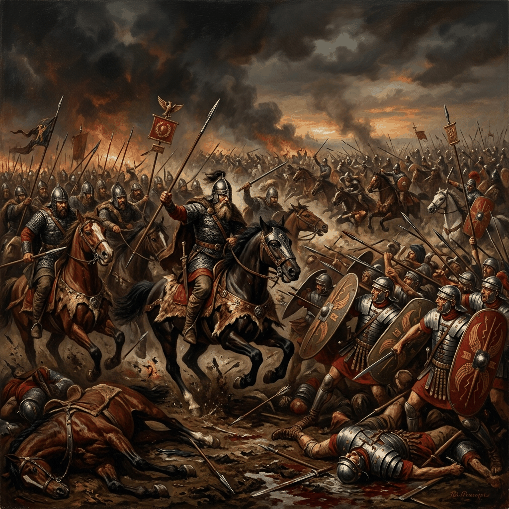
羅馬帝國中後期的軍事演變，常被後世史家簡化為一幅外來蠻族入侵、帝國終至瓦解的悲劇圖景。然而，現代學術研究顯示，所謂的「軍隊蠻族化」（Barbarization of the Roman military）本質上並非單純的外部入侵，而是羅馬帝國在面對多重危機時，為最大化國家資源、維持防線安全而主動進行的結構性調整與適應過程。這一過程橫跨數個世紀，其核心矛盾在於，羅馬政府試圖通過吸納日耳曼等外族人力來彌補本土兵源與財政的雙重匱乏，卻在無意中重塑了帝國的軍政權力結構，並在帝國內部製造出一個與羅馬社會嚴重撕裂、最終反噬帝國威權的軍事精英階層。
早期脈絡與軍制質變：從公民兵制到外包僱傭
在羅馬帝國前期的元首制（Principate）時代，羅馬軍事機器的運作高度依賴一套嚴格區分的雙軌徵募系統。羅馬公民組成主力軍團（Legions），而無公民權的行省居民（Peregrini）則加入輔助兵團（Auxilia）。這套系統的核心在於「軍事服務與身份認同」的政治交換：行省居民在輔助兵團服役滿二十五年後，可獲得象徵羅馬法律保障與社會地位的羅馬公民權，並透過「軍事外交證書」（Diploma militaris）正式確立其子嗣的公民身份。這種機制不僅穩定了帝國邊境的防禦，更成為羅馬同化外族、擴大統治基礎的高效工具。
然而，這一運作良好的系統在西元三世紀初遭遇了致命的法規震盪。西元二一二年，皇帝卡拉卡拉（Caracalla）頒布了《安東尼努斯敕令》（Constitutio Antoniniana），將羅馬公民權普遍授予帝國境內幾乎所有的自由民。這項出於財政擴張動機的法令，無意中破壞了原有的軍事同化鏈條。當公民權不再是服役的特權獎勵，行省居民自願加入條件艱苦之輔助兵團的意願便呈現雪崩式下滑。與此同時，義大利本土公民因規避遠程服役而傾向於加入本地治安部隊，這使得正規軍團的募兵工作陷入長期困境。
為了填補兵源空缺，羅馬帝國開始逐漸拋棄以往以個體為單位的同化募兵制，轉而採取直接向邊境外的蠻族部落整編制招募的「外包」模式。這項轉變在三世紀危機的戰火中被進一步確立，羅馬皇帝如塞維魯·亞歷山大（Severus Alexander）開始大量引進哥德人、阿拉尼人與帕提亞人充實帝國騎兵力量。至四世紀時，羅馬軍隊中的蠻族出身士兵比例已大幅攀升。
| 軍制維度 | 元首制時期（一至二世紀） | 晚期帝國時期（四至五世紀） |
|---|---|---|
| 兵源組成 | 羅馬公民（軍團）與行省非公民（輔助兵） | 羅馬公民（徵兵/世襲）與大量外族同盟者（Foederati） |
| 同化機制 | 透過二十五年服役獲得公民權與法律保障 | 普遍公民權淡化同化動力，外族保留其原有社會結構 |
| 指揮架構 | 羅馬騎士或元老階級擔任軍官，實行中央集權指揮 | 外族將領直接指揮其部落軍隊，逐步晉升至軍事統帥 |
| 戰術特點 | 強調重步兵協同、標準化裝備與工事修築 | 引入外族戰術，輕步兵與騎兵比例增加，裝備去標準化 |
帝國財政赤字與募兵體制的崩遷
「軍隊蠻族化」的深化，與晚期羅馬帝國的財政危機和軍政改革有著互為因果的緊密聯繫。在塞維魯王朝時期，為了確保軍隊對皇權的絕對忠誠，塞普蒂米烏斯·塞維魯（Septimius Severus）將軍人基本年薪大幅提升。其子卡拉卡拉更進一步調高軍餉與賞賜，這對帝國財政造成了難以承受的結構性負擔。到了戴克里先（Diocletian）與君士坦丁一世（Constantine I）實行「君主制」（Dominate）改革時，帝國為應對外部威脅，將軍隊總數擴張至四十萬到六十萬人的龐大規模，這直接將整個帝國轉化為一個圍繞軍事後勤運作的巨型租稅徵收機器。
戴克里先實行了徹底的「文武分家」改革，在邊境設立專門的軍事長官（Dux limitis），剝奪行省總督的兵權，以防範軍事政變。君士坦丁則進一步將帝國軍隊劃分為駐紮邊境的邊防軍（Limitanei）與部署於內陸大城市的精銳移動野戰軍（Comitatenses），由步兵統帥（Magister Peditum）與騎兵統帥（Magister Equitum）直接統領。然而，這套看似嚴密的系統在實際運作上面臨嚴重的經費與兵源匱乏。
為了支撐龐大的軍事開支，羅馬政府強制實行了兵役負擔制，要求地方土地所有者按比例提供新兵。然而，大土地所有者（Latifundium）不願損失寶貴的勞動力，往往將體格最差的農奴送交軍隊，甚至引發平民以自殘（如砍斷大拇指）來規避兵役。在這種背景下，替代實物徵兵的「兵役黃金稅」（Aurum tironicum）應運而生。土地所有者可以選擇繳納等值的黃金，由政府統一在市場上「購買」志願兵。
對於財政捉襟見肘的帝國政府而言，與其花費高昂的時間與後勤成本去徵募、訓練毫無戰鬥意願的羅馬平民，不如直接動用「兵役黃金稅」收上來的資金，去邊境僱傭成編制、即戰力極強的日耳曼與哥德部落。這種「軍事外包」的操作，雖然在短期內緩解了兵源危機，卻在財政與軍政上使羅馬政府產生了對外族武裝的深度依賴。
哥德人的歷史宿怨與生存抉擇
在與羅馬帝國的百年互動中，哥德人（Goths）逐漸演變為帝國防線上面積最大、組織最嚴密的威脅。早在西元三世紀，哥德人便已頻繁南下袭击羅馬行省，甚至在西元二五一年阿伯里圖斯戰役（Battle of Abritus）中擊殺了羅馬皇帝德西烏斯（Decius），給羅馬社會留下了深重的集體陰影。然而，進入四世紀後半葉後，歐亞草原深處匈人（Huns）的西進，徹底打破了多瑙河畔的生態平衡。匈人以毀滅性的游牧攻勢征服了東方的格魯森尼人（Greuthungi），並開始直接壓迫西方德文吉人（Thervingi）的生存空間。
在此大混亂時期，哥德內部的宗教與政治分裂進一步加深。其中，傳統主義領袖阿薩納里克（Athanaric）堅持維護日耳曼傳統信仰，並因強烈反對羅馬文化和基督教而對德文吉境內的基督徒展開嚴厲迫害。與之相對的，是持親羅馬態度的阿利烏派（Arianism）基督徒領袖菲蒂根（Fritigern）。
哥德人集體皈依基督教的歷史，與被譽為「哥德使徒」的烏爾菲拉（Ulfilas）密切相關。烏爾菲拉是一位具有羅馬與哥德雙重血統的傳教士，他創製了哥德字母，並將《聖經》翻譯為哥德語。值得注意的是，他在翻譯過程中特意省略了《列王紀》，因其擔心書中頻繁的戰爭場面會進一步激發哥德人本就高漲的尚武精神。烏爾菲拉所傳播的阿利烏派神學，在神學教義上強調「聖子次於聖父」，這種具有明確等級結構的神學觀意外地契合了哥德人嚴格的部落首領制社會結構。然而，當這群皈依了阿利烏派的哥德人遷入尊奉《尼西亞信經》的正統羅馬帝國時，宗教神學的差異隨即轉化為難以調和的族群與文化屏障。
衝突爆發與軍政條約的瓦解：從多瑙河到阿德里安堡
西元三七六年，因無法抵擋匈人的毀滅性攻勢，菲蒂根帶領著德文吉哥德人湧向多瑙河邊境，向東羅馬皇帝瓦倫斯（Valens）呈遞請願書，請求進入帝國邊境尋求政治庇護。當時正與波斯薩珊王朝對峙的瓦倫斯皇帝，出於獲得廉價兵源與開闢稅源的實用主義考量，批准了哥德人的渡河請求。
然而，這次本應是可控移入的政治安置，卻在基層官僚極度腐敗與執行力低下的情況下迅速失控。負責多瑙河防線安置工作的羅馬軍事長官盧皮奇努斯（Lupicinus）與馬克西穆斯（Maximus），扣留了中央撥發的救災糧食，並在物資極度匱乏的難民營中進行慘無人道的暴利剝削。他們強迫飢餓的哥德人以極高昂的價格購買死狗肉，甚至逼迫哥德貴族將子女賣為奴隸以換取口糧。
衝突的引爆點發生在馬克安諾波利斯（Marcianople）的一次晚宴上。羅馬長官企圖陰謀暗殺哥德領袖菲蒂根與阿拉維烏斯（Alavivus），菲蒂根雖成功脫險，但羅馬人的背信棄義徹底摧毀了哥德人對帝國秩序的最後信任。菲蒂根隨即宣布對羅馬帝國宣戰，長期累積的生存壓力與族群仇恨瞬間轉化為席捲巴爾幹半島的狂暴怒火。
西元三七八年八月九日，東羅馬皇帝瓦倫斯在未等待西方聯軍抵達的情況下，輕率地率領東部軍隊主力與菲蒂根率領的哥德大軍在阿德里安堡（Adrianople）決戰。在這場被視為羅馬軍事史上最慘烈的敗仗中，哥德人的重騎兵衝鋒徹底撕裂了羅馬軍團的步兵防線。皇帝瓦倫斯戰死沙場，東羅馬帝國高達三分之二的精銳野戰軍被當場全殲，整個巴爾幹防線幾近崩潰。
| 歷史時期 / 皇帝 | 關鍵法規與條約 | 涉及之哥德領袖與群體 | 政策核心與歷史影響 |
|---|---|---|---|
| 卡拉卡拉 (r. 211–217) | 《安東尼努斯敕令》（西元212年） | 邊境行省之自由民與早期零星移入之蠻族群體 | 普遍授予公民權，導致輔助兵募兵鏈條瓦解，間接開啟大規模僱傭蠻族之門。 |
| 瓦倫斯 (r. 364–378) | 跨河庇護許可（西元376年） | 菲蒂根（Fritigern）統領之德文吉哥德人（Thervingi） | 准許外族整編制移入帝國避難，因基層官僚腐敗與暗殺陰謀引發阿德里安堡慘敗。 |
| 瓦倫提尼安一世與瓦倫斯 (r. 364–375 / 364–378) | 《狄奧多西法典》之婚姻與貿易禁令（西元370年代） | 移入帝國內部服役之「同盟者」與基層哥德勞工 | 頒布 CTh 3.14.1，嚴禁羅馬平民與蠻族士兵通婚，並限制戰略物資流入蠻族地區。 |
| 狄奧多西一世 (r. 379–395) | 《哥德同盟條約》（西元382年10月3日） | 阿薩納里克（Athanaric，1581年病逝）；菲蒂根與剩餘哥德、阿拉尼、匈人聯軍 | 允許哥德人以自治盟友身份定居色雷斯，免稅並保留原有武裝，確立「國中之國」軍事模式。 |
| 阿卡狄烏斯與霍諾留 (r. 395–408 / 395–423) | 《羅馬城服飾禁令》（西元397至416年） | 羅馬城內服役之蠻族將領、士兵及高階官員 | 頒布 CTh 14.10.2 等令，嚴禁在羅馬城內穿著蠻族褲裝與靴子，反映強烈的社會文化焦慮。 |
狄奧多西一世的懷柔與割裂：西元382年條約與同盟者的制度化
阿德里安堡慘敗後，臨危受命的東羅馬新皇帝狄奧多西一世（Theodosius I）面臨著一個幾乎無兵可用的空殼帝國。為了重建防線，狄奧多西不得不採取極端且帶有強迫性質的募兵政策，將農民、礦工強行編入部隊，並嚴厲懲處以自殘逃兵役者，甚至與西方的皇帝格拉提安（Gratian）聯合調動西方軍事力量協助平叛。然而，重建後的羅馬軍隊在戰力上已無法在野戰中徹底消滅哥德聯軍。
在軍事陷入僵局的情況下，狄奧多西一世採取了務實外交與妥協退讓的雙重策略。西元三八一年一月，他親自在君士坦丁堡以極高規格接見了流亡的哥德傳統主義領袖阿薩納里克，並在其病逝後為其舉行了隆重的國葬。這場政治秀成功瓦解了哥德人對羅馬朝廷的部分敵意。
西元三八二年十月三日，狄奧多西一世與哥德人正式簽署了具有分水嶺意義的《哥德同盟條約》。這項條約徹底打破了羅馬數百年來對外族的軍政處理原則。在此條約架構下： * 自治權與免稅權：哥德人被允許在多瑙河以南的色雷斯（Thracia）地區集體定居，保留其原有的部落法律、首領統治與社會結構，且免除帝國的常規賦稅。
- 軍事條約化（Foedus）：哥德人名義上向羅馬皇帝效忠，但他們不被編入常規的羅馬軍團，而是以「同盟者」（Foederati）的身份，在自身部落將領的帶領下為羅馬作戰，並享受羅馬發放的優渥軍餉與黃金飾品。 這項條約實質上在羅馬帝國的內部核心地帶，合法建立了一個獨立的「國中之國」。它雖然為疲憊的帝國爭取了短暫的喘息時間，但也意味著羅馬政府正式承認無法以法律同化哥德人，並在體制上為日後蠻族將軍架空皇權鋪平了道路。
族群與社會衝突的白熱化：婚姻禁令與文化排斥
隨著越來越多的哥德人以「同盟者」身份定居境內，羅馬人與蠻族之間的族群對立不僅沒有因共同服役而消弭，反而從邊境摩擦延燒至帝國的法律、社會與文化核心。這種根深蒂固的衝突最直接地體現在晚期羅馬法典的族群隔離法律中。
早在西元三七〇年代初，皇帝瓦倫提尼安一世（Valentinian I）與瓦倫斯便向當時的騎兵統帥狄奧多西（即後來的狄奧多西一世之父）頒布了嚴厲的通婚禁令，這項法律後來被收錄於《狄奧多西法典》（Codex Theodosianus）第3卷第14章第1條（CTh 3.14.1）。該法令規定：
「任何行省羅馬居民，不論其社會階層與地位，皆不得與蠻族女子通婚；任何蠻族士兵（Gentiles）亦不得娶羅馬行省女子為妻。」
違反此令的通婚者將面臨最嚴厲的極刑（Capitaliter expietur）。儘管現代歷史學者如馬修森（Ralph Mathisen）指出，該法律制定的初衷可能部分出於維護財政稅收與軍事勞役邊界的考量（確保納稅的行省居民與服役的蠻族士兵職責不致混淆），但其在客觀上無疑加劇了羅馬社會與日耳曼新移民之間的階級與族群壁壘。同時，帝國亦頒布了嚴格的禁運令，嚴禁將葡萄酒、橄欖油、魚露等代表羅馬文明生活方式的戰略物資出口至蠻族地區（Barbaricum），試圖在文化與物質上維持一道文明與野蠻的隔離帶。
然而，到了五世紀初，軍隊中的蠻族化風潮已不可逆轉地影響了首都的時尚與社會風氣。年輕的羅馬軍人甚至貴族階層開始競相模仿日耳曼將領的裝束，這種現象被稱為「蠻族風尚」（Barbarian chic）。為了遏制這股被保守元老院階層視為國體動搖的風潮，西部的霍諾留（Honorius）與東部的阿卡狄烏斯（Arcadius）兩位皇帝，在西元三九七年至四一六年間連續頒布了多道服飾禁令。
在 CTh 14.10.2 與 CTh 14.10.3 中，皇帝嚴厲宣布：
「在尊貴的羅馬城內，任何人皆不得穿著帕提亞式的靴子（Tzangae）與蠻族長褲（Bracae）。」
違反此令者將面臨財產沒收與永久流放的懲罰。至西元四一六年，CTh 14.10.4 甚至將禁令擴大至禁止蓄長髮（Maiores crines）與穿著獸皮衣物（Indumenta pellium），連奴隸亦不得例外。這些巨細靡遺且措辭嚴厲的法令，不僅未能阻止蠻族文化的滲透，反而生動地折射出晚期羅馬統治精英在面對帝國軍事中樞被外族逐步掌控時，那種虛弱而焦慮的文化自衛心理。
從雇傭兵到王權更迭：哥德人的崛起與西羅馬的解體
羅馬政府對哥德同盟者的既利用又防範的功利態度，在西元三九四年冷河戰役（Battle of the Frigidus）中表現得淋漓盡致。在這場東、西羅馬帝國的激烈內戰中，東部皇帝狄奧多西一世為了擊敗西部的篡位者尤金尼烏斯（Eugenius）及其法蘭克大將阿波加斯特（Arbogast），調動了高達兩萬名哥德同盟軍作為前線先鋒。
在兩天的慘烈戰鬥中，狄奧多西一世故意將哥德部隊置於最險惡的峽谷隘口，以此消耗對方的銳氣。戰役最終雖因強烈的暴風（Bora）風向助戰而由狄奧多西奪得勝利，但參戰的哥德人付出了慘痛代價，超過一萬名哥德士兵在第一線陣亡。羅馬官方輿論甚至私下將這場慘烈的消耗視為一場「雙重勝利」：既消滅了西部的叛軍，又順便清理了一萬個潛在的哥德威脅。
這場戰火中的無情利用，徹底喚醒了當時隨軍參戰的年輕哥德將領阿拉里克（Alaric I）。他深刻意識到，哥德人若僅作為羅馬皇帝的僱傭兵，終究難逃被當作砲灰消耗的宿命。西元三九五年狄奧多西一世逝世後，帝國再度陷入分裂，且拒絕向哥德人發放約定的補貼與高級軍職。阿拉里克隨即被推舉為哥德人的「雷克斯」（Reiks，即國王），正式舉兵反叛。
阿拉里克帶領哥德人採取了「以戰逼和」的策略，在巴爾幹與義大利本土反覆游擊，尋求羅馬朝廷給予哥德人合法的土地安置與其個人的軍事統帥任命。然而，此時掌控西羅馬政權的半萬達爾血統大將軍斯提里科（Stilicho），以及後來煽動排外運動、清洗斯提里科舊部的霍諾留皇帝，皆未能給予哥德人持久且合理的政治妥協。在多次談判破裂後，阿拉里克於西元四一〇年八月二十四日，在庫存於羅馬城內的哥德奴隸裡應外合下，攻破了薩拉里亞門，對這座八百年未曾落入外敵之手的「永恆之城」進行了三天三夜的洗劫。
羅馬城的陷落，標誌著羅馬帝國古典威權的徹底破產。此後，哥德人不再是邊境上的防禦沙包，而是主導西方政局的關鍵力量。洗劫羅馬後，西哥德人在阿拉里克的繼承者阿陶爾夫（Ataulf）率領下遷往高盧，最終在阿基坦（Aquitaine）建立起了第一個在羅馬帝國國境內獲得法律承認的蠻族自治王國。
至五世紀中葉，西羅馬帝國實質上已淪為蠻族將軍把持的傀儡政權。具有西哥德與蘇維匯血統的「王位製造者」里西默（Ricimer），在西元四五六年至四七二年間，隨意廢立、處死多位西羅馬皇帝（包括試圖勵精圖治的馬約里安），以維護其背後的蠻族集團利益。到了西元四七六年，當最後一任傀儡幼帝羅慕路斯·奧古斯都（Romulus Augustulus）被帶有赫魯利與斯基里血統的蠻族將軍奧多亞塞（Odoacer）廢黜時，這場持續了兩個世紀的「軍隊蠻族化」進程終於迎來了其邏輯終點：外包的軍事肌肉徹底格式化了早已空心化的羅馬政治中樞，早期中世紀的日耳曼繼承者王國，正式在羅馬帝國的廢墟上宣告誕生。
引用的著作
- The last legions: The “barbarization” of military identity in the Late Roman West
- The Late Roman Army
- Constitutio Antoniniana: What's beyond the Edict of a tyrant? - International History Olympiad
- Constitutio Antoniniana - Grokipedia
- Citizenship and Service: From Roman Auxiliaries to U.S. MIilitary Naturalization Programs
- The Antonine Edict: Combined Motivations Behind the Citizenship Grant Research Thesis Presented in partial fulfillment of the re - Ohio State
- The Fall of the Roman Empire: Who's Afraid of the Middle Ages? : r/de - Reddit
- Diocletian's Military Reforms - Emilija Stankovi , Ph.D. - Acta Universitatis Sapientiae
- The Battle of Adrianople 378: Turning Point of Roman History and Rise of the Goths
- The Antonine Constitution: An Edict for the Caracallan Empire. Impact of Empire, 29
- Late Roman army - Wikipedia
- Recruits and Deserters – How Wars affect the Civil Administration in the Late Roman Empire*
- Theodosius I - Wikipedia
- Glossary of military terms - A - Romans in Britain
- The economy of AI 27: Tironia - the tax of the Jewish "novices" in the Roman army
- Gothic wars - Grokipedia
- Ancient | Buk's Historical Ad Hockery
- Athanaric - Wikipedia
- Fritigern - Wikipedia
- Ulfilas | Biography | Research Starters - EBSCO
- The Rise and Spread of Arian Christianity Among the Goths - Paganheim
- Fritigern - Military Wiki | Fandom
- The Conclusion of the Roman-Gothic Peace Treaty in 382 | Keria: Studia Latina et Graeca - University of Ljubljana Press Journals
- The Eye of the Storm - A look at the Roman Empire in 382 AD. - gordon doherty, author
- On this Day - Theodosius I concludes peace treaty with the Goths - Groups.io
- The Roman-Gothic Peace Deal of 382 AD - GORDON DOHERTY, AUTHOR
- (PDF) Provinciales, Gentiles, and Marriages between Romans and Barbarians in the Late Roman Empire - ResearchGate
- Provinciales, Gentiles, and Marriages between Romans and Barbarians in the Late Roman Empire* - ResearchGate
- Barbarian Migrations and the Roman West, 376-568 9780521434911, 9780511455162 - DOKUMEN.PUB
- susanna elm gender and christian imperial rule in late antiquity - University of California Press
- Stilicho Paper - Columbia Academic Commons
- Martini Stadtmauer Perge.pdf - Academia.edu
- Why did the Roman government so often appoint conquering Goths to high-ranking public office? : r/AskHistorians - Reddit
- Alaric I - Wikipedia
- Alaric I - Grokipedia
- Battle of the Frigidus - Grokipedia
- Alaric – The King of the Visigoths - Medieval History
- Alaric I | Military Wiki - Fandom
- Ricimer - Unbiased History of Rome Wiki - Fandom
- Ricimer | Visigothic Kingdom, Roman Empire, Germanic Warlord | Britannica
- Odoacer - Wikipedia